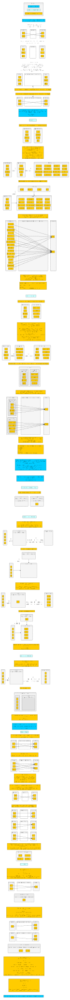
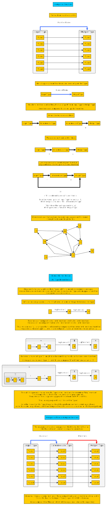
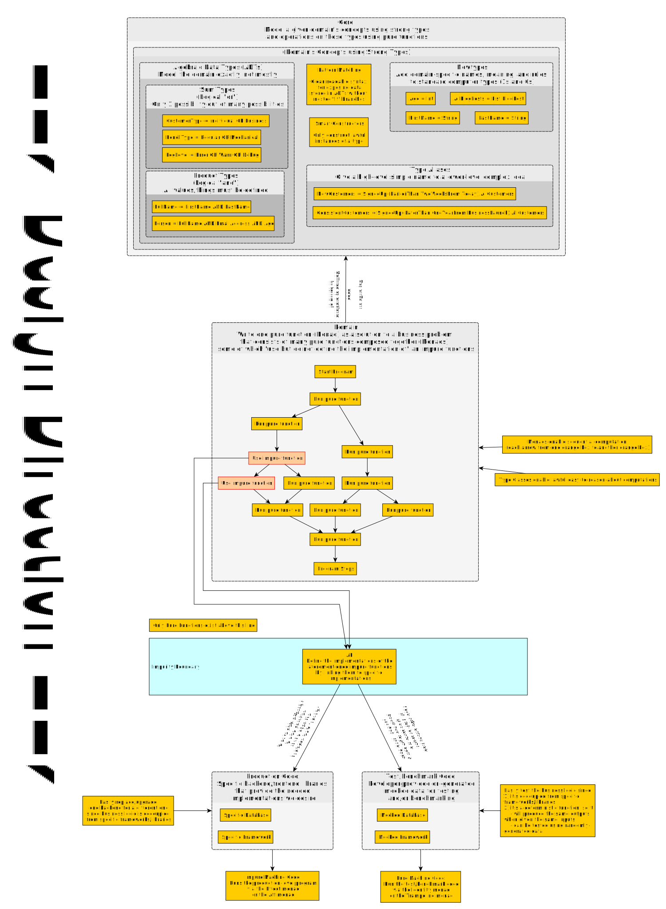
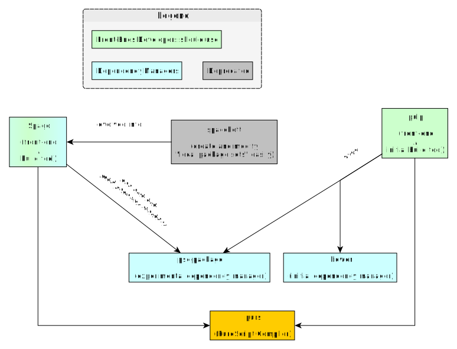

Preface
This repo is my way of using the Feynman Technique to learn Purescript and its ecosystem.
Feynman used simple language, storytelling, comprehensively wrote down everything he knew about the topic, then attempted to teach it such that a child could understand it. Without jargon but with brevity, he identified what he didn't know to the audience and had his content organized.
Intended Audience
The intended reader is one who has some background in programming, but no background in the Functional Programming paradigm. A reader should consult the summarized version of the Table of Contents below before determining what and how much to read.
If you want to understand why you should care about PureScript, read through the Why Learn PureScript page and Philosophical Foundations section, starting with Composition Everywhere.
If you want to learn PureScript, read the entire work from start to finish.
Overview and Scope of the Work
All code in this work uses PureScript 0.14.2
This work was created so a reader can understand PureScript and how to use it properly from a deep foundational understanding. Most other resources will get you started quickly, but then you will get confused at some point along the way. This resource takes longer to get started, but you will either not be confused or be less confused when we get to more advanced topics (e.g. monad transformers, type-level programming, etc.)
This work does not cover how to use PureScript to do web-development. In other words, things like the following:
- how to use a PureScript single-page application (SPA) framework to build a frontend
- how to use a web server framework to build a backend
- how to do bundling and/or code-splitting effectively
- how to use HTML and CSS correctly, etc.
None of the above things need to be known to learn PureScript, but one will need to learn the above things outside of this work before they can build a great application via PureScript.
How to Read This Work
This work is intended to be read in the following order:
- Getting Started
- FP Philosophical Foundations
- Building Tools
- Syntax
- Hello World
The "Design Patterns" section should be read alongside of the "Syntax" and "Hello World" folders.
Check the issue tracker for any unresolved issues via the bug label.
Summarized Table of Contents
There are currently 8 parts to this book. I summarize what is in each section below by showing the kinds of questions the section answers:
- 00-Getting-Started:
- Why learn/use PureScript?
- How do I set up an editor (using Atom)?
- How do I use the REPL?
- What other things should I know before starting my learning journey?
- 01-Philosophical Foundations:
- What are some foundational ideas I need to understand before FP makes more sense?
- What is the "big idea" behind using FP languages?
- What are the drawbacks of using FP languages?
- 02-Build-Tools:
- Which tools do I use to compile and build my libraries/applications?
- What are the workflows behind using those tools?
- What other optional tools help me be more productive?
- 11-Syntax:
- How do I learn PureScript's syntax easily?
- What other compiler features exist syntactically?
- How do I read/write type-level programming?
- How does
do notationandado notationwork? - How does rebinding
do notationand rebindingado notationwork?
- 21-Hello-World:
- How do I write a simple program?
- How do I debug a program?
- How do I write a complex program using modern FP architecture?
- How do I test a program?
- How do I benchmark a program or function within a program?
- What are some examples of simple and complex real-world projects?
- 31-Design Patterns:
- What are commonly-used patterns or idioms to solve problems in FP languages?
- What are other FP principles or concepts not explained in the "Hello World" part of this work?
Contributing
Feel free to open a new issue for:
- Clarification on something you don't understand. If I don't know it yet and I'm interested, it'll force me to learn it
- A link to something you'd like me to research more. If I'm interested or see the value, I'll look into it and try to document it or explain the idea in a clear way
- Corrections for any mistakes or typos I've made
- Improvements to anything I've written thus far
License
Unless stated otherwise in a specific folder or file, this project is licensed under the Creative Commons Attribution-NonCommercial-ShareAlike 4.0 International license: (Human-readable version), (Actual License)

Versioning Policy
The below versioning policy was created to abide by the following principles:
Principles
- Indicate PS version:
- The release should indicate which major PureScript version is being used for the library. This helps one know whether the work is still up-to-date.
- Provide "stable" versions...:
- Readers of a given version should be able to read and bookmark files without worrying about those files/links breaking due to changes in its name (via renaming/reordering files, headers in files, etc.)
- Older versions should be available via
git tag.
- ...without restricting developer creativity:
- I should be able to continue writing new content and re-ordering things without concern
- Load the latest release:
- This repo should show the latest release version of this project, not the one on which I'm working. In other words, the default branch should coincide with the last release.
- Lessen maintenance as much as possible:
- There should only be two branches,
latestReleaseanddevelopmentsince a branch name likemasteris overloaded with connotations. Those who want to read older versions can checkout a tag. - I currently will not hyperlink to other files within this project until either a
1.0.0release is made or I find a way to automate that.
- There should only be two branches,
Release Syntax and Explanation
ps-[purescript's major release]-v[Major].[Minor].[Patch] where
- purescript's major release means
- Normally, this would be
1.x.x, but we don't yet have a1.0release yet. Thus, it is currently0.13.x xis a placeholder for the latest minor/patch release.
- Normally, this would be
- major change means
- a file/folder name has changed, so that bookmarks or links to that file/folder are now broken
- files/folders have been modified, so that one is recommended to re-read the modified parts
- a dependency (e.g. PureScript, Spago, etc.) was updated to a breaking change release
- minor change means
- a file's contents have been modified/updated to such a degree that one is recommended to re-read the modified parts- Read through these links about learning:
- a file's header name has changed, so that bookmarks or links to that header/section are now broken
- Spago was updated to a minor release
- patch means
- additional files/folders have been added without breaking links
- a file's contents have been modified/updated to a minor degree that one could re-read the modified parts but is not likely to benefit much from it.
- a file's contents have been slightly updated (typos, markdown rendering issues, etc.)
Getting Started
This folder will cover the following topics:
- Why learn PureScript
- How to install Purescript
- Getting familiar with the REPL
- Other info you should know before working through the other folders in this project
Why Learn PureScript?
All languages make tradeoffs in various areas and on various spectrums:
- learning curve
- abstractions
- syntax
- errors
- type systems
- etc.
The question is "Which combination of tradeoffs provides the most benefits in prioritized areas?" "Good" languages happen to select specific tradeoffs that make the language well-suited for specific problems. For example, Python is well-suited for creating dirty one-time-run scripts to do tedious work on a computer. While Python can be used to create financial or medical applications that need to be extremely fast and secure, it would be better to use a different language that is better suited for such a task, such as Rust.
PureScript has chosen tradeoffs that its developers think are the best for creating simple to complex front-end applications that "just work;" that are easy to refactor, debug, and test; and help make developers more productive rather than less.
It can be said that other front-end languages buy "popularity" at the cost of "power and productivity." PureScript buys "power and productivity" at the cost of "popularity."
To fully answer "Why learn PureScript?" we must answer three other questions:
- Why one should use Javascript to build programs...
- ...but not write Javascript to build it...
- ...and write Purescript instead of alternatives
Why one should use Javascript to build programs...
- The web browser is the new "dumb terminal" / platform-independent OS:
- Why Founders Should Start With a Website, Not a Mobile App
- The points mentioned in this article: Learn Javascript in 2018
...but not write Javascript to build it...
- JavaScript is a Dysfunctional Programming Language
- Top 10 Things Wrong with JavaScript
- Why JavaScript Sucks
Some other ideas that are relevant:
- dynamic typing leads to errors that do not appear until after you have already shipped the code to your customers
- a linter is just a basic static type checker
- it is sometimes easier to write, read, and understand a 'safer language' that compiles to efficient Javascript than to write, read, and understand JavaScript itself (as the above articles show)
...and write Purescript instead of alternatives
TL;DR
- The Power of Composition
- Purescript: Tomorrow's Javascript Today
- Code Reuse in PureScript: Functions, Type Classes, and Interpreters
- Phil Freeman's post: 'Why You Should Use PureScript'
- PureScript's "Real World App"s
- See the Halogen version of 'Real World App'
- See the React version of 'Real World App'
- A Discourse pose describing some of the disadvantages of TypeScript and Elm when compared to PureScript
Language Comparisons
For a full list of possible alternatives to JavaScript, see CoffeeScript's wiki's list of 'Languages that compile to JavaScript'
Note: the below comparisons are still a WIP. To fully support this claim, it would help to compare each languages' various "overall rating" on various aspects. Unfortunately, since I'm not familiar with every other language mentioned, it's very difficult for me to do that. If you are familiar with such languages, consider opening an issue on this repo and discussing it with me.
In short, the below comparison will be biased towards PureScript and will not yet fairly represent the corresponding side in some situations. Consider this a starting point for your own research.
PureScript vs TypeScript
One of the main issues with JavaScript is a poor type system. Many errors aren't discovered until a person, usually a customer, runs the program. Many of these same errors could be detected and fixed before shipping code if one used a language with a better type system.
TypeScript seems to address this type safety issue. Just consider its name! However, a few people who are using PureScript now have said this about TypeScript: "You might as well be writing Javascript." TypeScript does not provide any real guarantees; it only pretends. PureScript does provide such guarantees.
- TypeScript vs PureScript: Not All Compilers Are Created Equal
- JavaScript, TypeScript, and PureScript or "Why TypeScript only 'pretends' to have types."
- Various examples comparing PureScript and TypeScript
PureScript vs Elm
Since Elm is founded on the similar philosophical foundations as PureScript, one can use Elm and gain many of the same benefits as PureScript due to its type safety. However, there is a ceiling on the abstractions one can express in Elm. PureScript's ceiling is much higher than Elm's because it has type classes.
Elm
- ... sacrifices the following features ...
- type classes, which
- reduce boilerplate code since the compiler can write code for you
- enable one to define and uphold constraints about their program (e.g. this sequence of commands must be executed in the correct order)
- type classes, which
- ... to gain the following ...
- clear actionable error messages because there are less ambiguous cases to deal with in the type system
Elm and PureScript can both be used to build a complex website. However, one will need to write more lines of code in Elm than they would in PureScript.
PureScript vs OCaml / Reason
This section has not yet been written.
PureScript vs GHCJS
Haskell, which heavily influenced PureScript, has an option for compiling Haskell to JavaScript via GHCJS. However, that comes with its own tradeoffs. PureScript was developed partly because those tradeoffs were too costly.
See PS or ghcjs for Frontend with Haskell backend for my summary of the main issues at play here.
The Strengths of PureScript
In this file, I'll cover what some of the tradeoffs PureScript makes are and why they are good. These ideas will be further explained in the "FP Philosophical Foundations" folder that appears later in this repository.
Strongly Adheres to the Functional Programming Paradigm
- A Secret Weapon for Startups -- Functional Programming?
- Paradigm shifts, such as the one demonstrated by this video using C++, are what enable programs with less problems: Logging a function's name each time it is called: migrating an "object-oriented paradigm" solution to an "functional paradigm" solution. As will be explained later, this is what is known as the "Writer Monad."
- Object-oriented "design patterns" in FP languages are often just functions in disguise. Rather than learning the 20 different design patterns, one can learn how functions work and can be used to create really beautiful concepts and solutions.
- Functional Architecture: The Pits of Success. To summarize this video, FP languages force you to structure your code in a way that makes it:
- easy to test in an unbiased way (Can I prove that the logic/algorithm that solves the business problem is correct and works according to the specification despite any programmer's laziness or lack of foresight in thinking of a possible scenario where the code could fail?)
- easy to add/change/remove a "backend" to account for trends, new insights, or faster code (Without introducing a new bug or deleting a current feature, can I switch from Company A's database to Company B's database without rewriting more than 30 lines of code?)
- unconcerning to allow a new developer to work on the code, knowing that he/she cannot screw up anything major (Can the Lead/Senior Developer take the weekend off and return, knowing that it's extraordinarily difficult for developers with little experience to break something?)
Powerful Static Type System
- This video explains how a type system with
algebraic data typescomes with a number of benefits (note: it uses a different syntax than PureScript: Domain Modeling Made Functional. To summarize it,algebraic data types- allow you to model a domain at a 1-to-1 ratio
- make impossible states impossible
- become your always-up-to-date UML diagrams
- make it easy for new developers to learn how the code is structured
- guide how business logic should be implemented
- The PureScript compiler infers most of your types for you. For those who are curious and want to understand how that works, see this video: Type Inference From Scratch
- The compiler (via its warning and error messages) is your friend, not your enemy. It
- prevents you from releasing bug-filled code to a customer. (Can I guarantee that the code "just works" or cannot be built at all?)
- forces you to handle most errors correctly the first time rather than permit you to throw them under the rug because you are lazy (Can I guarantee all possible errors will not create future problems that lead to short-term hard-to-understand code that rarely gets cleaned up and ultimately costs the company more time to fix than if it had just been written correctly the first time?)
- helps you figure out how to implement functions correctly via "Typed Holes" (explained later in the
Syntaxfolder)
- This video explains how a type system with
type classesallow one to re-use "dumb old data structures" (i.e.algebraic data types) rather than create many new data structures that differ only one slight way: Type Classes vs the World. To summarize it,type classes- allow you to write declarative code ("this is what will be true") rather than imperative code ("this is how to make truth true (hopefully, you got it right)")
- enables the compiler to infer runtime code
Immutable Persistent Data Structures by Default
In PureScript, immutable data structures are the default rather than being "opt-in." In most other languages, mutable data structures are the default with immutable ones being "opt-in."
Immutable data structures are
- easier to reason about because the value never changes
- are always thread-safe, preventing many typical issues with concurrency
- can be as performant as mutable data structures in most cases
Multiple Backends with Easy Foreign Function Interface
Most languages have their own backend.
- Javascript is compiled and run via a Javascript engine.
- Java compiles to bytecode that can be run on a Java Virtual Machine.
- Python gets compiled into bytecode that is then interpreted.
PureScript does not have a backend. Rather, it's source code can be compiled to other languages. While JavaScript is the focus, PureScript compiles to other languages besides JavaScript. Thus, writing one library in PureScript can work in multiple languages, and one can choose the backend (or a combination of them) that best solves their problem.
Caveat: PureScript's support for non-Javascript backends is still a work-in-progress. In future releases, they will be getting first-class support.
This backend-independent nature of PureScript makes "Foreign Function Interface" very clean. At various times, Language X needs to use code from another language, Language Y. For code written in one language to use code written in another language, there needs to be a "Foreign Function Interface" or FFI.
Many languages' FFI can be difficult to work with. Language X made various language tradeoff decisions that are different than Language Y. Getting two languages to work together is difficult to say the least. However, PureScript's FFI is very easy because PureScript already compiles to that language.
If you are compiling PureScript to Javascript, you can still write JavaScript as FFI for PureScript. This makes it possible to wrap Javascript libraries on which you heavily depend. It also enables one to easily migrate from some other language or framework (e.g. TypeScript, Angular, etc.) to PureScript in a modular, piece-by-piece fashion
FAQs on PureScript
I'll answer a few possible questions the below audiences may have:
- A developer who is already competent/productive in Javascript or a compile-to-Javascript language (e.g. Coffeescript, Typescript, etc.)
- A developer who is only starting to learn web technologies, but has heard that Javascript is horrible and is investigating other compile-to-Javascript languages.
- A business person who knows very little about programming or programming languages but who wants to know more about what options are available and what their pros/cons are.
These are the kinds of questions the above people might be asking:
- Cost-Benefit Issue: Is the price of the steep learning curve worth the benefits of using PureScript in code?
- Job Prospects Issue: If I learn PureScript, can I get a good developer job?
- When-to-Learn Issue: Should I learn PureScript now or wait until sometime later?
- Time-to-Productivity Issue: How long will it take me before I can write idiomatic code and be productive in PureScript?
- Opportunity Cost Issue: If I choose to learn PureScript, will I later regret not having spent that same time learning a different compile-to-Javascript language (e.g. TypeScript, CoffeeScript, etc.) or a "compile to WebAssembly"-capable language (e.g. Rust) instead?
- Ecosystem Issue: How mature is the Ecosystem? Will I need to initially spend time writing/improving/documenting libraries for this language or can I immediately use libraries that are stable and mature?
- Foreign Function Interface Issue: How hard it is to use another language's libraries via bindings?
- Program Tools Experience: How easy/pleasant is it to use the language's build tools (e.g. compiler, linter/type checker, dependency manager, etc.) and text editor tools (e.g. ease of setup, refactoring support, pop-up documentation, etc.)?
- Community Friendliness Issue: How friendly, helpful, responsive, inspiring, determined, and collaborative are the people who use and contribute to this language and its ecosystem?
- Code Migration Issue: What problems do developer teams typically encounter when migrating from Language X to PureScript and how hard are these to overcome?
Let's answer these one at a time. Each answer is my opinion and could be backed up with better arguments and explanations in some areas..
Is the price of the steep learning curve worth the benefits of using PureScript in code?
Yes. Most mainstream languages force you to depend on the IDE, linters, and other tools outside of the language to help you write correct code. Such languages often lack the features within the language itself to help you express certain ideas and constraints within your program. PureScript's powerful language features allow you to express what other languages cannot.
Even if one ultimately decides not to use PureScript, the language itself can be a helpful environment for training your mind to think more precisely about how to write code.
If I learn PureScript, can I get a good developer job?
- See the community-curated list of companies who use PureScript in production right now.
- See Do you have a PureScript app in production?
- Check for PureScript jobs listed on Functional Jobs
Should I learn PureScript now or wait until sometime later?
You might want to learn it now for these reasons:
- PureScript is actually quite mature and close to a
1.0. Many are already using it in production code. - PureScript is syntactically and conceptually very similar to Haskell. If you learn PureScript, you've basically learned Haskell, too. I believe that PureScript provides a better environment for learning Functional Paradigm concepts than Haskell since it's easier to install, build, and experiment with.
- No need to use any language extensions (e.g.
OverloadedStrings) - Better record syntax
- More granular type class hierarchy
- No need to use any language extensions (e.g.
- This project covers enough items that you should be able to learn PureScript relatively quickly. Still, while this project's code compiles and runs, its accuracy has not been verified by an "expert in the language" per say.
You might want to learn it later for these reasons:
- PureScript's documentation could be improved in a number of ways:
- Documentation for libraries are good in some areas and lacking in others.
How long will it take me before I can write idiomatic code and be productive in PureScript?
The average time for learning FP languages in general is usually 6 months due to the below reasons. This repository hopes to speed that process up, but, as always, people learn at different paces:
- Many tutorials/guides assume their readers already know foundational principles. New learners who read them often do not know, nor are even aware of, those foundational principles.
- This project's
Hello World/FP Philosophical Foundationsfolder exists to counter this issue
- This project's
- No one really explains what the "big picture" that FP programming is all about. Thus, it's hard to see how some concept fits in the larger scheme of things, much less why that concept is so fundamental to everything.
- See this project's
Hello World/FP Philosophical Foundations/07-FP--The-Big-Picture.mdfile
- See this project's
- People (wrongly) believe that they must know a very abstract mathematics called "Category Theory" in order to use/write PureScript or another FP language. Due to its very abstract nature, Category Theory can be difficult to grasp and scares people off.
- This "myth" is false. Most FP developers do not understand Category Theory and yet they already have an intuition for some of its ideas.
- The syntax for FP languages are paradigmatically different than the syntax with which most developers are familiar (C/Java/Python). It takes a while to get used to a "different" syntax family before it feels normal. Until it feels normal, reading through code examples will be harder.
- This project's
Syntaxfolder exists to counter the above issue.
- This project's
- Related to the above, FP languages often use symbol-based aliases to refer to functions that are well-known to FP Programmers instead of those functions' literal names (e.g.
<$>instead ofmap,<$instead ofvoidRight,$>instead ofvoidLeft). It's more concise and similarities between these symbol-based aliases add meaning to them, such as their "direction." Since new learners do not already know that to which function a symbol refers, it can be hard to know what that function even does.- A Pursuit search that wraps the symbol in parenthensis (e.g.
(<$>)) fixes this problem - This project's
Type Classes/ReadMe.md#Functionssection explains how to read theType Classes/assets/Type-Class-Functions.xlsxfile, which provides a table that indicates what those symbol-based fuction names are and from where they come.
- A Pursuit search that wraps the symbol in parenthensis (e.g.
- Due to their powerful type systems, FP languages trade errors that occur when running the program (runtime errors) with errors that occur when attempting to build the program via the compiler (compile-time errors). To understand how to debug these compile-time "your program would not work if it was built" errors, one must have a strong understanding of how the compiler and its type system works.
- This project's
Syntaxfolder (and more specifically, theSyntax/Type-Level Programming Syntaxfolder) explain enough to help one understand why some (but not all) problems arise. - The Error Documentation sometimes explains what the error is and how to fix it (example) and other times is simply left unexplained (example).
- The
purescript-beginnerSlack channel is active and often helps people troubleshoot the error messages.
- This project's
- Related to the above point, the powerful type system enables one to model some abstract ideas in a very precise way using well-defined types or things called type classes. When these features start to stack, a new learner can become overwhelmed.
- If one reads this work in order, they are unlikely to be overwhelmed.
- Most of the "cool type things" one can do are helpful but not always necessary. Consider the Haskell Pyramid. "Monads" are an important and fundamental FP concept, but new learners do not need to learn what they are or how to use them right away.
- Many people try to re-explain something that another has already explained well and they write a poor re-explanation. It's hard to determine which explanations are accurate and correct and which are vague and mistaken until after you have already read it and/or know better.
- I've been you. This work is my attempt to sift through the noise and present things in the best and simplest way possible. In various cases, I summarize and/or link to other posts that I believe to be credible that also explain a concept clearly. My sources include
Haskell Weekly, the Functional Programming Slack channels of#purescriptand#purescript-beginners, a number of books I've read on FP programming, a number of papers I've read on FP programming, and various videos I've watched regarding FP programming.
- I've been you. This work is my attempt to sift through the noise and present things in the best and simplest way possible. In various cases, I summarize and/or link to other posts that I believe to be credible that also explain a concept clearly. My sources include
- There are few sites or locations that "centralize" a lot of high-quality FP guides/explanations. Thus, it's hard for new learners to find them.
- This project exists partly because of this issue and hopes to resolve some of these problems.
- For other "centralized" locations, see
Hello World/ReadMe.md#other-learning-resources.
- Many ideas are explained in papers that are not written for new learners but for academics. Understanding these papers' contents sometimes requires an understanding of high-level math, notation for specific concepts, etc., making the entry barrier higher
- In various situations, I link to such papers and only in one situation do I walk a read through such a paper. In other words, this problem is still at large.
If I choose to learn PureScript, will I later regret not having spent that same time learning a different compile-to-Javascript language (e.g. TypeScript, CoffeeScript, etc.) or a "compile to WebAssembly"-capable language (e.g. Rust) instead?
You might regret it if you are not being honest or thoughtful about the purpose you are trying to achieve. Not being aware of your expectations, nor having realistic ones, will almost always end in having those expectatiosn broken, leaving you angry, disappointed, or frustrated.
Some facts:
- WebAssembly holds promise, but it is still being developed.
- Languages that are popular or backed by companies with many resources are not necessarily the best languages to use for your particular purposes
- While PureScript offers more guarantees than most other languages, it unfortunately might not be the best language to use/learn if
- you need mature libraries for a particular need that hasn't yet been written in PureScript. This is one benefit of TypeScript/Javascript.
- you find that Elm's tradeoffs are "good enough" for your purposes.
- A few people who are using PureScript now have said this about TypeScript: "You might as well be writing Javascript"
How mature is the Ecosystem? Will I need to initially spend time writing/improving/documenting libraries for this language or can I immediately use libraries that are stable and mature?
It's primarily good for front-end work and not so much (yet) for back-end work. When it is lacking, one will likely need to use FFI to utilize JS libraries. See awesome-purescript and the documentation site, Pursuit.
Also, attempting to port over Haskell libraries to this language are harder at times and have unexpected performance. Why? Because Haskell is a lazily-evaluated language, but PureScript is a strictly-evaluated language.
How hard it is to use another language's libraries via bindings?
Writing bindings is simple. See the Syntax/Foreign Function Interface folder for examples of how simple bindings are and things related to this.
However, using FFI via bindings can introduce runtime errors. Whenever one uses a library via FFI, you don't know whether a function will throw an exception or not. This can produce unexpected runtime errors even though you've written your code in a type-safe language. On stable mature well-tested libraries, this shouldn't be a big problem.
Lastly, writing bindings is tedious. PureScript uses algebraic data types (ADTs), but most libraries will define one function that can take multiple sets of arguments. For example, one might call the function, foo, with any of these sets of arguments:
foo("apple")(the first String argument,apple, is required)foo("apple", ["banana", "orange"])(the Array of Strings argument is optional)foo("apple", ["banana", "orange"], true)(the boolean flag is optional, too)foo("apple", {first:"banana", second:"orange"}, true)(the array can be passed in as a record/map/dictionary/object, too)foo("apple", {first:"banana", second:"orange", optional: true}, true)(the second argument can have optional fields in addition to its required ones)
In reality, foo is at least 5 different functions that are all using the same name. Thus, writing bindings for foo is tedious to do in a language like PureScript due to PureScript's type-safe nature. However, there is a library for handling these kind of situations.
Others have also worked on writing code-generators that, for example, can look at the code of a library written in TypeScript and generate the corresponding PureScript bindings for that code. Such a tool is still a work-in-progress.
How easy/pleasant is it to use the language's build tools (e.g. compiler, linter/type checker, dependency manager, etc.) and text editor tools (e.g. ease of setup, refactoring support, pop-up documentation, etc.)?
The build tools are pretty good. One will typically use a spago-based workflow. These are explained in Build Tools/Tool Comparisons/Dependency Managers.md.
See the Build Tools/ folder for more up-to-date information. Likewise, see Editor and Tool Support for other editor-related configurations.
How friendly, helpful, responsive, inspiring, determined, and collaborative are the people who use and contribute to this language and its ecosystem?
People usually get help from some of the core contributors or other well-informed people via the #purescript and #purescript-beginners. No question is too stupid. For longer threads, some post on the PureScript Discorse Forum.
The language's development is currently slow because each core contributor have full-time jobs and contribute in their spare time, not because they don't want to.
What problems do developer teams typically encounter when migrating from Language X to PureScript and how hard are these to overcome?
- See Phil Freeman's own blog post on the matter: PureScript and Haskell at Lumi
- Thomas Honeyman's How to Replace React Components with PureScript's React libraries
- (Video) JavaScript to PureScript - a Migration Story & Slides
- (Video) Adopting Pure FP Incrementally - Engineering at Lumi
- Likewise, see Introducing Haskell to a Company, which can equally apply to Purescript
- See Robert Kluin - Introducing A Functional Language At Work - C 2018/slides for a cautionary tale of "what can go wrong and why" when he attempted to introduce Scala at work.
Install Guide
Getting Additional Help
Throughout your learning process, it will be helpful to ask others for help. The two places this is often done is on the ML forum and the Slack group chat. If you encounter problems when installing anything below, ask for help on the Slack group's #purescript-beginner channel and you should receive help.
- Register for an account on the Functional Programming Slack group here and add yourself to these two channels:
#purescript-beginner,#purescript. You may also be interested in these channels:#categoryTheory,#haskell, and#haskell-beginner. - Register for the Purescript ML forum here
Setting up Purescript for the First Time
Overview
We'll show how to install the following programs:
purescript- the PureScript language & compilerspago- a dependency manager and build tool for PureScriptparcel- a build tool for bundling a PureScript application into a multiple JS backends (node, browser, electron)
Installation
Installing NPM
We can install everything using npm. However, getting npm is it's own problem. We can either install it manually by downloading node and installing that. Or we can use nvm (Node Version Manager) to install it for us and continue from there.
Manual Install
Justin Woo explains how to set up one's environment for the 0.12.x release but has not been updated for two things. First, the PureScript release at the time was 0.12.0 but now 0.13.8 is out. Second, the instructions use pulp and psc-package, a different build tool workflow than the one we'll use here.
If you just want to get things set up ASAP, follow the below summary of his article's instructions (using spago instead of the other tools). If you want to understand why you should do these commands, read his article here:
- Install Node 10 or greater: https://nodejs.org/en/download/
- Set your npm prefix:
npm set prefix ~/.npm- Note: this prevents having to use
sudowhen using NPM to install things since it's default prefix is in a place that requires admin privileges
- Note: this prevents having to use
- Set your PATH:
export PATH="$HOME/.npm/bin:$PATH"
NVM Install
- Install
nvmusing their installation instructions - Verify that the installation was successful via
command -v nvm - Install
nodevianvm. To get the latestnodeversion, use the command,nvm install node.
Unlike the manual install, nvm properly handles the npm prefix for you. So, you don't need to set it yourself.
Installing PureScript and Related Tooling
Once you have installed npm, we can use it to install everything in one command:
npm i -g purescript@0.14.2 spago@0.20.3 parcel
Versions Used in this Project
The following commands should now work (the versions beside them are the versions I used when writing this project):
purs --version # 0.14.2
spago version # 0.20.3
parcel --version # 1.12.4
Building This Project
Once the above has been verified, run the below script, which will download, install, and build every folder in this project. Open a shell in this project's parent folder and run this command:
./for-each-folder--install-deps-and-compile.sh
Whenever I make a new release with breaking changes, this script will remove any outdated dependencies, reinstall the correct ones, and rebuild all of the folders' code.
Setting up your editor
The following are instructions for setting up the Atom editor. For Emacs, Vim, or Visual Studio, consult Justin Woo's post on the matter and the respective page in the documentation repo
Atom setup instructions:
- Install Atom:
sudo apt-get install atom - Launch Atom and install the following packages:
- ide-purescript
- atom-ide-ui
- language-purescript
- Configure
ide-purescript
The Atom package, ide-purescript, is configured to Bower, but we'll be using spago as our dependency manager for this project. Follow these instructions
- Open Atom's settings dialog (
CTRL+,) - Click on the
Packagestab - Search for
ide-purescript - Click on the
Settingsbutton in the entry that appears - Check the
Add spago sourcescheckbox - Change the
build commandto:spago build -u --json-errors
Getting IDE support (autocomplete, documentation-on-hover, etc.) in Atom
While this repository's contents are useful for learning various lessons, IDE support (autocomplete, documentation, etc.) will only work if you open this repository's contents in a specific way when using Atom. Follow the instructions below:
- Click "File" and click "Open Folder..." (shortcut:
CTRL+O) - In the folder chooser, choose one of this repo's project folders (i.e. a folder with a
spago.dhallfile andsrcfolder) - Click on "Packages" and click on "PureScript" and then on "Build". The IDE server will start running and rebuild just that project.*
- Autocomplete, importing, and documentation will now work.
- This is a command you will use frequently, so consider adding a keyboard shortcut for it.
- Open the Atom settings dialog (
CTRL+,) - Click on the "KeyBindings" tab
- Click on the "your keymap file" hyperlink that appears before the bindings
- Follow the instructions for adding your personal shortcut for the
ide-purescript:buildcommand.
For mine, I did:
'.platform-linux atom-workspace atom-text-editor:not([mini])':
'ctrl-shift-b': 'ide-purescript:build'
Dealing with IDE Server issues in Atom
Sometimes when editing a file, the IDE server will go out-of-sync. For example, you might change the definition of a type and the IDE doesn't realize that occured, so it will tell you that you have used a type incorrectly. In such cases, rebuild the project using Step 3 (or your keyboard shortcut) above and things should correct themselves from there.
In situations where I have used the same names for things, the autocomplete might actually import a function or type with the same name as the one you want but from a different module. So, if you have weird compiler errors, check the imports to insure the IDE server didn't accidentally import something incorrect or from the wrong location.
Setting up Module Linker
When you're browsing through code on GitHub, the browser extenstion, Module Linker, can greatly help: https://github.com/fiatjaf/module-linker
The REPL
REPL stands for Read, Evaluate, Print, Loop.
Starting the REPL
Use spago repl. The REPL should print something like the following:
$ spago repl
PSCi, version 0.13.8
Type :? for help
import Prelude
> |
Let's walk through each part:
PSCimeans "PureScript Compiler interactive". It's similar to GHCi, the Haskell language's REPL.versionprints the PureScript version you are using.:?indicates how to print a list of commands with their description. These are described below in this file.
After this, you may see zero or more import <ModuleName> lines. Spago will read the .purs-repl file to get this list and import the modules automatically. The .purs-repl file is covered at the end of this file.
Note: if you do not see import Prelude appear above, expressions like 5 + 5 will produce an error. To fix that, you should import the Prelude module by typing import Prelude followed by pressing Enter.
Using the REPL
In general, there are five things you can do in the REPL:
- See the result of an expression by typing it into the REPL (e.g.
3 + 3) and hittingEnter. - Define a binding to some variable or function using the
binding = <expression>syntax. For example...x = 3function = (\x -> x + 1)
- Input multi-line expressions using the
:pastecommand (followed byCTRL+D) - Use other commands to explore a module's functions, types, and kinds
- Use other commands to interact with the REPL's current state (e.g. clearing out bindings and/or imported modules, showing which modules have been imported, etc.)
Possible Outputted REPL Errors
Sometimes, the REPL will output errors. These errors may not be immediately understandable for new learners, so the table below will help you understand them and know what to do.
| The Error | Its Meaning | What to do |
|---|---|---|
"No type class instance was found for Data.Show.Show [Type]" | An expression cannot be turned into a String. For example, a function's implementation ((\x -> x + 1)) cannot be turned into a String whereas a value (5) or expression (10 + 10) can be (5 and 20, respectively). | If it's possible for you to define one, define an instance of the Show type class. If not, then ignore it and move on. |
| "Multiple value declarations exist for [binding]." | You defined the binding twice, which you cannot do | See the Reload command section for what your options are |
| "Unknown operator (+)" | The + function was not imported because the Prelude module was imported | Import the Prelude module by typing import Prelude followed by pressing Enter. |
A Quick Overview of Some of the REPL Commands
The REPL offers a few commands. You can see the entire list by typing either :help or :? and pressing Enter.
These commands are listed in the same order as what the :? outputs.
Note: the commands can be shortened to their first unique letters. So, rather than entering :type, one can enter :t. Likewise, rather than entering :paste or :print, one can enter :pa or :pr, respectively.
Help
Displays the REPL commands via :help/:?.
Quit
Exits the REPL, returning control to your shell.
Reload
The Problem
You can only define a binding once. Defining it again with a different expression will output an error
x = 5 -- first time
x = 6 -- second time raises error
-- REPL's outputs error: "Multiple value declarations exist for x."
You need to clear the x binding name to be able to reuse it for other bindings.
For example, let's say you wrote two functions and the second uses the first. However, you wrote the wrong implementation for the second and need to rewrite it:
add1 = (\x -> x + 1)
times2 = (\x -> x * 3) -- "3" should be "2"
The Solutions
Ideally, you could just clear the second function's binding and rewrite it. Unfortunately, you cannot do that. You can either:
- use the
:reloadcommand to clear out both functions' bindings, redefine the first one, and then define the second one with the correct implementation - define a new binding for the correct implementation:
-- 1st option
add1 = (\x -> x + 1)
times2 = (\x -> x * 3) -- Whoops! "3" should be "2"
:reload
add1 = (\x -> x + 1) -- define the "add1" binding again
times2 = (\x -> x * 2) -- define "times2" again but with correct implmentation.
-- 2nd option
add1 = (\x -> x + 1)
times2 = (\x -> x * 3) -- Whoops! "3" should be "2"
times2_fix = (\x -> x * 2) -- define new function with correct implementation
- define your code in a file (as a module) and import that module into your REPL session. Any edits made to this file are picked-up upon a REPL reload.
Create a file containing your REPL script:
-- MyModule.file
module MyModule where
import Prelude
add1 = (\x -> x + 1)
times2 = (\x -> x * 3) -- This typo will be fixed later
Load script into the REPL:
> import MyModule
> times2 4
12
Make any edits to this file. For example, change to times2 = (\x -> x * 2). Save file, then reload in existing REPL session. The MyModule import will be remembered.
> :reload
> times2 4
8
Clear
Use :cl rather than :c to distinguish between this command and :complete. This works the same as :reload except that all imported modules are also removed. If you do this, you will need to reimport any modules you wish to use. For example, you will likely need to reimport Prelude (import Prelude), so that you can use number operations (i.e. +, -, /, *) and the == function again.
Browse
See all the functions, types, and type classes that a module exports and which you can use
Type
This displays the type signature of a value, a function or a type-class. One should be able to determine what the body of the function does based on the type signature, so that body is not shown:
> :type x + 1
Int
> :type (\x -> x + 1)
Int -> Int
Kind
Displays the kind of a type. Kinds will be explained more in the Syntax folder:
> :kind Int
Type
> :kind (Int -> Int)
Type
> :kind Array
Type -> Type
Show
There are two commands in this one:
show loaded/:s loaded- Shows all modules that the REPL session knows about. Some may or may not have been imported. (Before the REPL session starts, the PureScript compiler will compile all PureScript files based on the source globs given to it. All modules in those globs are then known to the REPL session, but you might not want to use them all in a given session.)show import/:s import- Shows which modules you currently have imported into the REPL session
Changes how a value is printed to the console after an expression is evaluated. By default, it uses PSCI.Support.eval.
New learners can ignore this command for now. Those who are familiar with the language can change it to a different one by calling :print Path.To.Module.functionName.
Regardless, to reset it to the default, one can call :print PSCI.Support.eval.
Paste
The REPL only accepts single-line Purescript code. If anything requires you to write multi-line expressions, you must use the :paste command.
The workflow goes something like this:
- Type in the paste command:
:paste - Do one of the following
- input multi-line expressions (e.g. a type class and its function, a data type and its values, a function's type signature and its implementation, etc.).
- paste some external code into the REPL
- Type
CTRL+D/CMD+Dto indicate that you are finished.
The REPL will then parse and all of the code, enabling you to use it from that point forward.
Complete
The REPL already supports tab-completion. So, this command isn't meant to be used by humans. Rather, it's for tools that need a way to get tab-completion. For context, see Harry's comment.
The .purs-repl File
If you ever want to automatically import a list of modules, modify the .purs-repl file. By default, it will only display the following content:
import Prelude
You can add more modules there so you don't have to type them in later:
import Prelude
import Data.Maybe
import Data.Either
Unfortunately, defining variables in the file will not automatically create them before the REPL starts. Let's say you update .purs-repl to the below content
import Prelude
x = 5
When you run spago repl, it will produce the following error:
$ spago repl
PSCi, version 0.13.8
Type :? for help
Unexpected or mismatched indentation at line 3, column 1
Other Important Info
- Purescript By Example is the official up-to-date book that teaches Purescript.
- PureScript Cookbook is an unofficial cookbook that shows "How to do X" in PureScript.
- "Not Yet Awesome" PureScript is a list of things that are not yet awesome in PureScript
- Configure Web Browser for Convenient Pursuit Lookup shows how to make it easy to search all documentation.
- Consider using this same approach to setup a search using Starsuit, a Pursuit copy that works only packages in the latest package-set (a concept described more in the Build Tools folder of this repo). Use "https://spacchetti.github.io/starsuit/#search:" as your search.
Functional Programming Jargon
While reading through this repo, the Functional Programming Jargon might be a helpful reference whenever you come across a term that isn't covered in this project.
Writing Algorithms in an FP Language
This repo will not explain how to write algorithms in a performant way using an FP language. Consider reading Algorithm Design with Haskell which does teach algorithms using an FP language.
Differences From Haskell
If you're coming to PureScript with a Haskell background, be sure to consult the following resources:
- Introduction to Purescript for Haskell Developers (pdf)
- The Purescript Documentation Repo's "Differences from Haskell" page
Use GitHub Search to Find Things Search Engines (i.e. Google) Don't
At various times, you may try to use something like Google to find documentation / examples and little will appear in the search results.
A better solution is to use GitHub's search. To learn its syntax, read searching code.
Then, you use a search query like the following:
| Goal | Search Query | Meaning |
|---|---|---|
Find examples of projects that use a dependency (e.g. purescript-prelude) | path:/ in:file purescript-prelude | Search a project's top-level files (e.g. bower.json/spago.dhall/psc-package.json) for the text purescript-prelude |
Find real-world examples of code that uses libraries (e.g. aff-bus) | language:purescript path:src/ in:file "Effect.Aff.Bus" | Search a project's src directory for files whose content mentions the Effect.Aff.Bus module at some point. (Note: the full module name must be surrounded by quotes) |
Find real-world examples of code that uses testing libraries (e.g. aff-bus) | language:purescript path:test/ in:file "Test.QuickCheck" | Search a project's test directory for files whose content mentions the Test.QuickCheck module at some point. (Note: the full module name must be surrounded by quotes) |
Documentation
- Anytime you need to look up the documentation for a package, you have two options:
- use Pursuit.
- Pros: One can navigate through a library's version and dependencies
- Cons: Some of the deprecated packages mentioned above are still posted there. (e.g.
purescript-dom-*packages, which are deprecated in favor ofpurescript-web-*packages)
- use Starsuit
- Pros: Only provides documentation for packages in the latest package set
- Cons: One does not immediately know which version of a library is displayed, nor what its dependencies are.
- use Pursuit.
- Read Pursuit's Search Help page
- Some libraries have not been updated to
0.13.8and are still on the0.11.7release. Some still work; others won't. In this work, we will insure that you do not use any such libraries, but be aware of that if you browse the docs on your own. - Lastly, some libraries have not uploaded their latest versions' documentation. In these cases, we will forewarn you. Fortunately,
spago docswill produce a local version of the source code's documentation that looks similar to Pursuit. It does not support all the features of Pursuit, but it's better than nothing. To do that, follow these commands:spago docs --openwill generate the documentation and then use your default web browser to open the file,generated-docs/html/index.html.
Undocumented Pursuit Tip
To get the latest version of the Pursuit docs of a package's function, package's type, or the package itself, simply remove the version in the url. Pursuit will load the latest version of that package: https://pursuit.purescript.org/packages/purescript-prelude/docs/Data.Eq
Composition Everywhere
TL;DR
Watch The Power of Composition
By "composition," we mean, "Assemble a few low-level reusable pieces into a higher-level piece." Here are some examples:
- (Classic example) Legos. Using small blocks of plastic, people can create all sorts of interesting things.
- Furniture. Using wood, metal, fabric, glass, and nails, people can create tables, chairs, desks, cabinets, etc.
Composition makes FP code easy to refactor because we can always reassemble the smaller pieces into something new or different.
But what kinds of things do we compose? In Functional Programming, we compose types (called algebraic data types) and functions.
Composing Types Algebraically
Algebraic Data Types (ADTs) use Algebra to define the total number of values a given type (i.e. named Set) can have.
There are two videos worth watching in this regard. The table and visualizations that follow merely summarize their points, except for the ideas behind the List and Tree types in the second video.
- 'Algebraic Data Types' as "Composable Data Types" (stop at 29:26)
- Same ideas already explained in the above "Power of Composition" video:
- It uses a different syntax than
PureScriptbut the ideas still apply.
- The Algebra of Algebraic Data Types
- Warning: video has terrible sound quality!
- explains the "algebraic laws" behind ADTs
- covers
Lists andTrees (unlike first video)
| Name | Math Operator | Logic Operator | PureScript Type | Idea |
|---|---|---|---|---|
| Product Type | x * y | AND | Tuple | "One value from type x AND one value from type y" |
| Sum Type | x + y | OR | Either | "One value from type x OR one value from type y" |
| Exponential Type | y^x | ??? | InputType -> OutputType | ??? |

Composing Functions
Similar to types, functions also compose but in a slightly different way. Look over the below image and then watch the video at the end (if you haven't seen it already).

Pure vs Impure Functions
Visual Overview

Functional Programming utilizes functions to create programs and focuses on separating pure functions from impure functions.
General Overview
Properties
The following table that shows a comparison of pure and impure functions is licensed under CC BY-SA 4.0:
- Original Credit: Sam Halliday - "Functional Programming for Mortals with Scalaz"
- License: legal code & legal deed
- Changes made
- Converted idea into a table that compares pure functions with impure functions
- Further expand on "does it interact with the real world" idea with more examples from the original work
Pure functions have 3 properties, but the third (marked with *) is expanded to show its full weight:
| Pure | Pure Example | Impure | Impure Example | |
|---|---|---|---|---|
| Given an input, will it always return some output? | Always (Total Functions) | n + m | Sometimes (Partial Functions) | 4 / 0 == undefined |
| Given the same input, will it always return the same output? | Always (Deterministic Functions) | 1 + 1 always equals 2 | Sometimes (Non-Deterministic Functions) | random.nextInt() |
| *Does it interact with the real world? | Never | Sometimes | file.getText() | |
| *Does it access or modify program state | Never | newList = oldList.removeElemAt(0)Original list is copied but never modified | Sometimes | x++variable x is incremented by one. |
| *Does it throw exceptions? | Never | Sometimes | function (e) { throw Exception("error") } |
In many OO languages, pure and impure code are mixed everywhere, making it hard to understand what a function does without examining its body. In FP languages, pure and impure code are separated cleanly, making it easier to understand what the code does without looking at its implementation.
Programs written in an FP language usually have just one entry point via the main function. Main is an impure function that calls pure code.
Sometimes, FP programmers will still write impure code, but they will restrict the impure code to a small local scope to prevent any of its impurity from leaking. For example, sorting an array's contents by reusing the original array rather than copying its contents into a new array. Again, impure code is not being completely thrown out; rather, it is being clearly distinguished from pure code, so that one can understand the code faster and more easily.
Data Types
Principles
In order to abide by the principle of pure functions, FP Data Types tend to adhere to two principles:
- Immutable - the data does not change once created. To modify the data, one must create a copy of the original that includes the update.
- Persistent - Rather than creating the entire structure again when updating, an update should create a new 'version' of a data structure that includes the update
For example...
{-
Given a linked-list type where
"Nil" is a placeholder representing the end of the list
"" in "left right" is a pointer that points from the
right element to the left element
"=" in "list = x" binds the 'x' name to the 'list' value -}
Nil 1 2 3 = x
{-
To change x's `2` to `4`, we would create a new 'version' of 'x'
that includes the unchanged tail (Nil 1)
followed by the new update ( 4) and
a copy of the rest of the list ( 3). -}
Nil 1 2 3 = x
4 3 = y
Using a more visual diagram:
-- At the end of the computation, these are true:
x == x
x /= y
-- x = [3, 2, 1]
-- y = [3, 4, 1]
-- index 0 1 2
(indexAt 2 x) isTheSameObjectAs (indexAt 2 y)
Big O Notation
FP data types have amortized costs. In other words, most of the time, using a function on a data structure will be quick, but every now and then that function will take longer. Amortized cost is the overall "average" cost of using some function.
These costs can be minimized by making data structures lazy or by writing impure code in a way that doesn't "leak" its impurity into the surrounding context.
Lazy vs Strict
A computation can either be lazy or strict. Before giving the below table, let's give a real-life example.
This is "Strict evaluation." Your parent tells you to immediately do some chore (e.g. wash dishes, etc.). You go and do so. Sometimes, you learn that this was necessary. Other times, you learn that the dishes were already washed by someone else. Despite telling your parent that they don't need to be washed, your parent insists and overrules you. This especially annoys you on days where "washing the dishes" will take a long time.
This is "Lazy evaluation." Your parent tells you to remember to do some chore but not to start until they tell you. On some days, they never tell you to start because the task wasn't needed after all. You love those days. On other days, they tell you to start in the morning, the afternoon, or the evening.
| Term | Definition | Pros | Cons |
|---|---|---|---|
| Strict | computes its results immediately | Expensive computations can be run at the most optimum time | Wastes CPU cycles and memory for storing/evaluating expensive computations that are unneeded/unused |
| Lazy | defers computation until its needed | Saves CPU cycles and memory: unneeded/unused computations are never computed | When computations will occur every time, this adds unneeded overhead |
To make something lazy, we turn it into a function. This function takes one argument (Unit) and returns the value we desire. This is called a thunk: a computation that we know how to do but have not executed yet. To run the code stored in the thunk, we use the phrase forcing the thunk.
-- Given an Int, I can return another Int
strictlyCompute :: Int -> Int
strictlyCompute x = x + 4
-- otherwise known as 'thunking'
-- Given an Int, I can return a 'thunk.' When
-- this thunk is evaluated, it will return an Int.
lazilyCompute :: Int -> (Unit -> Int)
lazilyCompute x = (\unitValue__neverUsed -> x + 4)
forceThunk :: (Unit -> Int) -> Int
forceThunk thunk = thunk unit
-- somewhere in our code
thunk = lazilyCompute 5
-- somewhere else in our code, when we finally need it
result = forceThunk thunk
Other Resources
- This resource is not necessary for you to read it to understand and use PureScript. However, it might satisfy those who are curious. It uses the Lisp language in its examples, so the code might be difficult to understand. Regardless, the book Structure and Interpretation of Computer Programs (SICP) (see this or that) has a chapter on lazy evaluation and thunks.
Looping via Recursion
In most OO languages, one writes loops using while and for. Looping in that matter makes it very easy to introduce impure code. So, in FP languages, one writes loops using recursion, pattern-matching, and tail-call optimization. The rest of this file will compare OO code to its FP counterpart
For i until condition do computation and then increment i
// factorial
var count = 5;
var result = 1;
for (var i = 2; i < count; i++) {
result = result * i
}
-- This is a stack-unsafe function (explained and improved next)
factorial :: Int -> Int
factorial 1 = 1 -- base case
factorial x = x * (factorial (x - 1)) -- recursive case
factorial 3
-- reduces via a graph reduction...
3 * (factorial (3 - 1))
3 * (factorial 2)
3 * 2 * (factorial (2 - 1))
3 * 2 * (factorial 1)
3 * 2 * 1
6 * 1
6
Stack-Safe
The above Purescript example illustrates a problem that comes with writing loops this way: stack overflows. Thus, when one says "this function is stack-safe", they mean that calling the function will not risk the possibility of a stack overflow runtime error being produced. One usually prevents this risk via tail-call optimization (which usually converts the recursive loop back into an OO loop) or trampolining (when tail-call optimization isn't possible)
Thus, one will usually write recursive functions in this manner. Rather than using recursion to calculate the value by creating a 'stack' of * operations (as done above), one will pass into the function an additional argument that acts as the accumulated value. The necessary state change / calculation is done and its result is passed in as the new accumulated value in the next iteration of the recursive function call:
factorial :: Int -> Int
factorial n = factorial' n 1
factorial' :: StartingInt -> AccumulatedInt -> AccumulatedInt
factorial' 1 finalResult = finalResult
factorial' amountRemaining accumulatedSoFar = {-
-- This is the general idea being done in the single line of code
-- after this comment
let
oneLess = amountRemaining - 1
nextAccumulatedValue = accumulatedSoFar * amountRemaining
in
factorial' oneLess nextAccumulatedValue -}
factorial' (amountRemaining - 1) (amountRemaining * accumulatedSoFar)
factorial 4
-- reduces via a graph reduction...
factorial' 4 1
factorial' 3 4
factorial' 2 12
factorial' 1 24
24
For ... Break If
// findFirst
var findFirst = (array, condition) => {
var length = list.length();
for (var i = 0; i < length; i++) {
var value = list[i]
if (condition(value)) {
return value;
}
}
return null;
}
findFirst([0, 1, 2], (i) => i == 1);
-- linked list
data List a
= Nil -- end of the list
| Cons a (List a) -- head of a linked list & rest of list
data Maybe a
= Nothing -- could not find a value of type A
| Just a -- found a value of type A
findFirst :: forall a. List a -> (a -> Boolean) -> Maybe a
findFirst list condition = findFirst' list condition Nothing
findFirst' :: forall a. List a -> (a -> Boolean) -> Maybe a -> Maybe a
findFirst' Nil condition notFound = notFound
findFirst' (Cons head tail) condition theA@(Just alreadyFound) =
findFirst' tail condition theA
findFirst' (Cons head tail) condition Nothing =
let foundOrNot = if (condition head) then (Just head) else Nothing
in findFirst' tail condition foundOrNot
findFirst (Cons 0 (Cons 1 (Cons 2 Nil))) (\el -> el == 1)
-- reduces via a graph reduction...
findFirst' (Cons 0 (Cons 1 (Cons 2 Nil))) (\el -> el == 1) Nothing
findFirst' (Cons 1 (Cons 2 Nil)) (\el -> el == 1) Nothing
findFirst' (Cons 2 Nil) (\el -> el == 1) (Just 1)
findFirst' Nil (\el -> el == 1) (Just 1)
Just 1
Short-Circuiting
The above Purescript example illustrates another problem with writing loops this way: short-circuiting. There are times when we wish to break out of a recursion-based loop early, such as when we have found the first element of a collection. In the above example, the function does not short-circuit, so it continues to iterate through the list even after it has found the element, leading to wasted CPU time and work.
To make the function above short-circuit, we would rewrite the function to this:
-- linked list
data List a
= Nil -- end of the list
| Cons a (List a) -- head of a linked list & rest of list
data Maybe a
= Nothing -- could not find a value of type A
| Just a -- found a value of type A
findFirst :: forall a. List a -> (a -> Boolean) -> Maybe a
findFirst Nil condition = Nothing
findFirst (Cons head tail) condition =
if (condition head)
then Just head
else findFirst' tail condition
findFirst (Cons 0 (Cons 1 (Cons 2 Nil))) (\el -> el == 1)
-- reduces via a graph reduction...
findFirst (Cons 1 (Cons 2 Nil)) (\el -> el == 1)
Just 1
Other Loops
The following Purescript examples are very crude ways of mimicking the following loops. More appropriate examples would require explaining and using type classes like Foldable and Monad (intermediate FP concepts). Thus, take these examples with a grain of salt.
While
while (condition == true) {
if (shouldStop()) {
condition = false
} else {
doSomething();
}
}
data Unit = Unit
whileLoop :: Boolean -> (Unit -> Boolean) -> (Unit -> Unit) -> Unit
whileLoop false _ _ = -- body
whileLoop true shouldStop doSomething =
-- `doSomething unit` is called in here somewhere
-- at the end of the function's body, it will call
whileLoop (shouldStop unit) shouldStop doSomething
For value in collection
// length
var count = 0;
for (value in list) {
count += 1;
}
data List a
= Nil
| Cons a (List a)
length :: forall a. List a -> Int -> Int
length Nil totalCount = totalCount
length (Cons head tail) currentCount =
length tail (currentCount + 1)
Type Classes
What Problem Do Type Classes Solve?
Their primary use is to make writing some code more convenient / less boilerplatey. Rather than writing the same code 25 different times where it differs in only one way each time, we can write code once and "parameterize it" in 25+ different ways.
To see a bottom-up explanation of this idea, read through the bullet points below and then watch the video.
- This video is a recording of a presentation given by Nathan Faubion, a core contributor to PureScript.
- This video finishes explaining what type classes are around 22:54.
- The parts that follow are more advanced concepts. They explain how to make "real world code" easily testable via type classes and interpreters. You might not understand those explanations until you are more familiar with PureScript syntax.
- The presentation ends at 1:03:58. Nate starts answering people's questions after that.
- Nate's answers to various questions ends at 1:13:12 and the rest of the video are people talking about various PureScript things.
- While Nate explains that type classe enable "code reuse," one could use an approach called "scrap your type classes" (SYTC) to accomplish that goal. SYTC will be covered later in this file.
Video: Code Reuse in PureScript: Functions, Type Classes, and Interpreters (actual video title on YouTube: "PS Unscripted - Code Reuse in PS: Fns, Classes, and Interpreters")
Where Do Type Classes Come From?
Type classes are usually "encodings" of various concepts from mathematics.
Type classes make developers productive. They enable programmers... - to write 1 line of code that is the equivalent of writing 100s of lines of code. - to define complicated control flows that highlight the important parts and minimize the irrelevant boilerplatey parts (e.g. nested "if then else" statements) - to use (in general) 5 "dumb reusable data types" to solve most of our problems: - Maybe - a box that is either empty or has a value. - Either - a sum type: either has a Left value or a Right value - Tuple - a product type: has both an A value and a B value - List - self-explanatory - Tree - self-explanatory
Type Classes as Encodings of Mathematical Concepts
Type classes often encode ideas that are true regardless of what we call them (i.e. "necessary" concepts), but functional programmers will refer to them via jargon (i.e "arbitrary" names like Functor). (For more context on the usage of "necessary" and "arbitrary" as terms, see Arbitrary and Necessary Part 1: a Way of Viewing the Mathematics Curriculum).
Putting it differently, if Some type can implement some function(s)/value(s) with a specified type signature in such a way that the implementation adheres to specific laws, one can say it has an instance of the given type class. Some types cannot satisfy a given type class' conditions; others can satisfy them in only one way; and still others can satisfy them in multiple ways. Thus, one does not say "Type X is an instance of <some type class>." Rather, one says "Type X has an instance of <some type class>." To see this concept in a clearer way and using pictures, see https://www.youtube.com/watch?v=iJ7V1KXJpsE
Thus, type classes abstract general concepts into an "interface" that can be implemented by various data types. They are usually an encapsulation of 2-3 things:
- (Always) The definition of type signatures for one or more functions/values.
- Functions may be put into infix notation using symbolic aliases (e.g.
<$>) to make it easier to write them.
- Functions may be put into infix notation using symbolic aliases (e.g.
- (Almost Always) The laws by which implementations of a type class must abide.
- These laws guarantee certain properties, increasing developers' confidence that their code works as expected.
- They also help one to know how to refactor code. Given
left-hand-side == right-hand-side, evaluating code on the left may be more expensive (memory, time, IO, etc.) than the code on the right. - Laws cannot be enforced by the compiler. For example, one could define a type class' instance for some type which satisfies the type signature. However, the implementation of that instance might not satisfy the type class' law(s). The compiler can verify that the type signature is correct, but not the implementation. Thus, one will need to insure an instance's lawfulness via tests, (usually by using a testing library called
quickcheck-laws, which is covered later in this repo)
- (Frequently) The additional functions/values that can be derived once one implements the type class.
- Most of the power/flexibility of type classes come from the combination of the main functions/values implemented in a type class' definition and these derived functions. When a type class extends another, the type class' power increases, its flexibility decreases, and its costs increase.
Examples
Here are some examples that demonstrate the combination of the 2-3 elements from above:
- The
Eqtype class specifies a type signature for a function calledeq/==andnotEq//=, and laws for the two (e.g. ifa == bandb == c, thena == c), but there are not any derived functions. - The
Ordtype class is similar toEq, but it does have derived functions. - The
Functortype class (explained in more detail later) has all three.
Similarities and Dual Relationships Among Type Classes
Some type classes have a corresponding "dual." While there are better ways to explain duals, the basic idea is that the "direction" of the function's arrow gets flipped. When this happens, we usually prefix them with "Co". For example, if we have a type class called Monad, the dual of it is called Comonad. If Monad has laws A and B, then it's likely that Comonad will have laws A' and B', which are "flipped" version of A and B.
For example, a function like toB would have its arrow flipped to produce toA::
-- original
toB :: a -> b
toB = -- function's implementation
{-
-- 1. Drop the implementation
toB :: a <- b
toB =
-- 2. Flip the arrow
toB :: a <- b
toB =
-- 3. Reorder the arguments so that arrow is pointing to the right:
toB :: b -> a
toB =
-- 4. Rename the function
toA :: b -> a
toA = -}
-- Dual version
toA :: b -> a
toA = -- function's implementation
Equational Reasoning
Functions in FP languages often work like equations: the left-hand side can be replaced by the right-hand side. We'll cover this idea more in the graph reduction section. This idea enables a developer to solve a problem using a simple but not performant solution that can be easily refactored to a much more performant version of the solution. We'll cover this in the "Optimizing Functions" section.
Graph Reduction: Running a Function
In source code, we can describe the various parts of a function based on which side of the = character the content appears:
- Left-Hand Side (LHS): the function name and all of its arguments
- Right-Hand Side (RHS): the body or implementation of the function
| LHS | | RHS |
functionName int1 int2 = int1 + int2
When using pure functions, one can replace the LHS with the RHS, and the program will still work the same. This concept is known as referential transparency:
functionName 4 3
-- replace LHS with RHS
4 + 3
-- reduce into final form
7
-- Calling `function 4 3` could be removed and replaced
-- with `7` and the program would work the same
-- Similarly, the below function (a longer form syntactically) and its arguments
-- could be replaced with `6` and the program would work fine.
(\arg1 arg2 arg3 -> arg1 + arg2 + arg3) 1 2 3
-- replace LHS with RHS
(\ arg2 arg3 -> 1 + arg2 + arg3) 2 3
(\ arg3 -> 1 + 2 + arg3) 3
(\ -> 1 + 2 + 3)
1 + 2 + 3
1 + 5
6
Although the above examples are very simple functions, imagine if one's entire program was one function that exhibited this behavior. If so, it would be very easy to understand and reason one's way through such a program.
Optimizing Functions: From Simplicity to Performant
This section summarizes the main ideas explained in Algorithm Design with Haskell (Cambridge, Amazon).
Above, we showed that functions are "run" by using graph reduction: the left-hand side is replaced with the right-hand side. However, this idea also applies when we refactor code, enabling the following developer workflow:
- Solve a programming problem by composing multiple high-level functions together. Initially, this version of the solution will not be performant.
- "Decompose" the high-level functions by replacing their call site (i.e. left-hand side) with their implementations (i.e. right-hand side)
- Use laws to refactor how those implementations compose to reduce unneeded work.
Typically, the 'laws' above are from type classes. When we see that a function "decomposes" to map function1 (map function 2), which iterates through some collection twice, we can rewrite it to map (\arg -> function1 (function2 arg)), which iterates through some collection once but still produces the same output.
Following this workflow makes it easier to solve all programming problems. In particular, this workflow helps when writing a greedy algorithm or a dynamic programming algorithm.
Let's provide two other examples of this idea. To keep things simple for those who don't understand PureScript's syntax, we'll not use laws to guide refactoring.
Example 1
As a very simple example, consider the following programming problem:
Given an array of integers,
arr, that will have 0 - 20 elements, define a function,countTwoFourSum, that calculates how often a 2 or 4 appears in the array (i.e. its count) and sums the resulting counts together. For examplecountTwoFourSum([1, 2, 3, 4]) == 2 countTwoFourSum([1, 3, 5, 7]) == 0 countTwoFourSum([2, 2, 3, 6]) == 2 countTwoFourSum([2, 2, 3, 4]) == 3
Using Step 1 above, the simplest solution would be to write something like this:
var countTwoFourSum = function(arr) {
return count(arr, 2) + count(arr, 4);
};
var count = function (arr, value) {
var accumulatedValue = 0;
for (var i = 0; i < arr.length; i++) {
var nextElem = arr[i];
if (nextElem == value) {
accumulatedValue = accumulatedValue + 1;
}
}
return accumulatedValue;
};
Translating that to PureScript, we would write:
countTwoFourSum :: Array Int -> Int
countTwoFourSum arr =
(count arr 2) + (count arr 4)
count :: Array Int -> Int -> Int
count arr value = foldl countIfValue initialAccumulatedValue arr
where
initialAccumulatedValue = 0
countIfValue accumulatedValue nextElem =
if nextElem == value then accumulatedValue + 1 else accumulatedValue
While it is easy to think of the solution to this code by writing it in this way, it's not performant because we loop through the array twice.
In step 2, we can replace the original function, count, with its implementation.
countTwoFourSum :: Array Int -> Int
countTwoFourSum arr =
(foldl countIfTwo initialAccumulatedValue arr) +
(foldl countIfFour initialAccumulatedValue arr)
where
initialAccumulatedValue = 0
countIfTwo accumulatedValue nextElem =
if nextElem == 2 then accumulatedValue + 1 else accumulatedValue
countIfFour accumulatedValue nextElem =
if nextElem == 4 then accumulatedValue + 1 else accumulatedValue
In step 3, we refactor the resulting computation to be more performant. Below, we iterate through the array once rather than twice by using only one foldl.
countTwoFourSum :: Array Int -> Int
countTwoFourSum arr =
let finalCount = foldl countIfValues initialAccumulatedValue arr
in finalCount.twoCount + finalCount.fourCount
where
initialAccumulatedValue = {twoCount: 0, fourCount: 0}
countIfValues {twoCount, fourCount} nextElem =
{ twoCount: if nextElem == 2 then twoCount + 1 else twoCount
, fourCount: if nextElem == 4 then fourCount + 1 else fourCount
}
Example 2
The above example illustrates this workflow but isn't the most impressive example. Here's a slightly more complex example. Let's say a programmer is reading through a description of a problem and its desired output. Piece by piece, she types out the below code as a solution to each part of the problem:
map fromString stringArray -- 1. convert each string element into
-- an integer (if possible)
# catMaybes -- 2. remove elements where the string wasn't an integer
# map (_ + 1) -- 3. add one to each integer
# sum -- 4. sum all the resulting integers into a value
While the above code solves the problem, it is not performant. It iterates through an array multiple times and creates multiple intermediate arrays. By using equational reasoning (not shown below), we can speed this up to a single iteration:
foldl f init stringArray
where
init = 0
f acc next =
case fromString next of
Nothing -> acc
Just i -> acc + i + 1
Crucially, our first focus was on writing a correct solution and then on making it performant.
FP - The Big Picture
Here's a sneak peek as to what the design process for writing FP programs looks like. Note: I assume you're already familiar with pure and impure functions. If not, see FP Philosophical Foundations/Pure-vs-Impure-Functions.md:

Build Tools
This folder accomplishes the following:
- Explain the various tools used throughout the ecosystem and their usages/differences:
- Document the differences between
BowerandSpagodependency managers - Document the difference between
PulpandSpagobuild tools
- Document the differences between
- Document the CLI options for the most popular tools (e.g. purs, pulp, spago, etc.)
- Document a typical workflow from project start to finish (creation, fast-feedback development, initial publishing, 'bump' publishing)
History: How We Got Here
The following explanation does not cover all the tools used in PureScript's ecosystem. However it provides context for later files. In short, spago is both the official dependency manager and build tool. bower can be thought of as a deprecated dependency manager; the community is in the process of building a registry that will replace the Bower registry since it no longer accepts uploads. pulp is a build tool that uses bower; its usage will become more common again once the registry is built.
Phase 1: Initial Tooling
PureScript's compiler was originally called psc (PureScript Compiler) before later being renamed to purs. (We'll see this psc name reappear elsewhere in a related project).
PureScript did not use npm as a dependency manager because of an issue related to transitive dependencies. Thus, they used bower because it fit their goals/requirements better. (All of this is covered more in the Dependency Managers/Bower Explained.md file).
Bodil Stokke (with later contributions from Harry Garrood) later wrote a tool called pulp that worked with bower and purs to provide a user-friendly developer workflow:
- download your dependencies
- compile, build, and test your project
- publish libraries and their docs
- easily bump the project's version
Phase 2: The psc-package Experiment
Bower worked fine, but there were a few user-interface issues that made it difficult to use, especially when a new PureScript release was made that included breaking changes.
As a result, psc-package was developed as an experimental dependency manager. It solved some of the problems that bower faced. pulp later supported psc-package, so that one could benefit from the simple developer workflow.
However, psc-package encountered its own problems, too. People could not easily create and modify something called a "local package set" (a term that is explained later in the Spago-Explained.md file).
To resolve these problems, Justin Woo started a project called spacchetti (he likes to name his projects via food puns), which made it much easier to create and modify a "local package set."
See the below image to visualize this:

Phase 3: Improving the psc-package Developer Workflow via Spago
From the above image, one should infer that using pulp and bower was overall easier to use and explain. Thus, Justin Woo and Fabrizo Ferrai started a project called spago. spago evolved out of spacchetti and reimplemented parts of psc-package into one program with a seamless developer workflow. While psc-package can still be used, it's better to use spago.
The below image summarizes the current state:

Phase 4: Spago becomes mainstream while psc-package is less used
Spago dropped support for psc-package commands in the v0.11.0 release. psc-package is still usable and is more or less feature-complete. However, no further work on it will be done. Rather, Spago has become the main dependency manager when utilizing package-sets.
The community is now split between pulp + bower workflows and spago workflows. One must still use pulp + bower if they want to do the following:
- publish their library's docs to Pursuit
- include their library in a package set, so
spagousers can use it
Phase 5: The need for a PureScript registry (Bower registry no longer accepts new uploads)
The Bower registry stopped accepting new uploads. The community quickly updated their tooling to workaround how libraries are published and installed. However, it was clear that PureScript now needed to create a registry.
Fabrizio Ferrai led the effort to build this registry with significant input from Harry Garrood. The registry is not yet complete, so the community is in this in-between stage.
Regardless, the following is still true:
- most people are now using
spago - the
pulp+bowerworkflow is still needed to publish a library, but it works differently now.- See these instructions for how to use
bowerto publish a library in this in-between context - See the
Dependency Managers/Bower Explainedfile for clarification on how to install packages as dependencies if one is usingbower
- See these instructions for how to use
- Thomas has written a Recommended Tooling for PureScript Applications post.
See The bower registry is no longer accepting package submissions for more context.
Overview of Tools
| Name | Type/Usage | Comments | URL |
|---|---|---|---|
| purs | PureScript Compiler | Used to be called psc | -- |
| spago | Build Tool | Front-end to purs and package-set-based projects | https://github.com/purescript/spago |
| pulp | Build Tool | Front-end to purs. Builds & publishes projects | https://github.com/purescript-contrib/pulp |
| bower | Dependency Manager (being deprecated) | -- | https://bower.io/ |
| psa | Pretty, flexible error/warning frontend for purs | -- | https://github.com/natefaubion/purescript-psa |
| pscid | pulp --watch build on steroids | Seems to be a more recent version of psc-pane (see below) and uses psa | https://github.com/kRITZCREEK/pscid |
| psvm-js | PureScript Version Manager | -- | https://github.com/ThomasCrevoisier/psvm-js |
The following seem to be deprecated or no longer used:
| Name | Type/Usage | Comments | URL |
|---|---|---|---|
| psc-package | Dependency Manager | -- | https://github.com/purescript/psc-package |
| psc-pane | Simplistic auto-reloading REPL-based IDE | No longer used? Last updated 1 year ago... | https://github.com/anttih/psc-pane |
| gulp-purescript | Gulp-based Build Tool | No longer used? Last updated 1 year ago... | https://github.com/purescript-contrib/gulp-purescript |
| Purify | -- | Deprecated in light of psc-package | -- |
For this repo, we will be using spago for our build tool and dependency manager.
Dependency Managers
There are two solutions to dependency management where each has a different 'target audience' per say:
- Bower (library developers)
- Spago (application developers)
The community needs both solutions for reasons that will be explained later.
Each one will be further explained in its own file. However, one can refer to each with a "crude name" that summarizes them:
- Typical package manager (Bower)
- Glorified
git clonetool (Spago)
Dependency Managers Compared
This side-by-side comparison should be thought of as an "apples to oranges" comparison.
| Bower | Spago | |
|---|---|---|
| Ideal User |
|
|
| Official/Unofficial | Official (parts of the PureScript compiler depend on it) | Unofficial |
| Trajectory | Moving away? | Moving towards? |
| Design Goals | ? | See this summary of a project that later "evolved" into Spago |
| Pros |
|
|
| Cons |
|
|
Bower Explained
Note: The Bower registry has been deprecated. The PureScript community is in the process of creating a registry. When that is done, we will stop using bower entirely. In the meantime, you must still use bower + pulp to publish libraries' docs to Pursuit. One can still use bower as a dependency manager, however, one will need to depend on other libraries using the full repo url in the bower.json file:
"dependencies": {
- "purescript-some-library": "^0.1.0"
+ "purescript-some-library":"https://github.com/githubUser/purescript-some-library#my-branch"
}
What is it?
A typical dependency manager that downloads dependencies from a centralized repository (i.e. Bower Registry) or GitHub.

Why Use It?
When developing a library, one needs to refer to specific versions of dependencies that do not change over time.
If one uses spago, they can modify the "binary" of the dependency without changing the version to which it refers. For application developers, this can be desirable. Not so for library developers.
Some people prefer bower over spago while others do not. Learn about both and make your decision.
Why doesn't Purescript use npm?
The following provides a much shorter explanation of Why the PureScript Community Uses Bower
Short answer:
- Because NPM doesn't produce an error when multiple versions of the same transitive dependency are used.
Long answer:
- When package
child1requiresparent v1.0.0and packagechild2requiresparent v2.0.0, NPM, will "nest" the packages, so that the code will compile. - Should one or both packages export something that exposes
parentand our code uses it, this will produce a runtime error, either because some API doesn't exist (e.g. one version changed/removed some API) or because a pattern match didn't work (e.g. aninstanceOfcheck failed due to seeing different types defined in theparentpackage) - Bower uses "flat" dependencies, so it will notify you that such an issue exists by asking you to choose the library version you want to use to resolve the issue.
Problem Points?
Besides those stated below, you must use npm to install any JavaScript libraries for bindings. This is true for bower and spago alike.
Solution to Most Common Bower Problem: The Cache Mechanism
When in doubt, run the following command, reinstall things, and see if that fixes your issue:
# Deletes the 'bower_components' and 'output' directories,
# ensuring that the cache mechanism is not corrupting your build
# and that the next build will be completely fresh.
rm -rf bower_components/ output/
Horrible User Experience Occurs After a Breaking Change Release
The following issue is happening less and less frequently due to the PureScript language stabilizing, but it still needs to be stated.
Annoyance Defined
If a compiler release that includes breaking changes was released recently, it will take some time for libraries in the ecosystem to become compatible with that release. If you are using Bower as your dependency manager, it may try to install libraries that are not compatible with the new release, creating problems.
Recommended Guidelines
In such circumstances, follow these guidelines to help find the correct version of a library:
- Go to Pursuit and look at the library's package page. Choose one of the library's versions and compare that version's publish date with the date of the compiler release. Those that occur after the compiler release are likely compatible with the new release.
- Since
purescript-preludeis a dependency for most libraries, see which version ofpurescript-preludethe library uses. That should indicate whether it's compatible with a new compiler release or not. - If all else fails, check the library's last few commit messages in its repository for any messages about updating to the new compiler release.
Spago Explained
What is it?
A way to use specific versions of libraries that are known to compile together without problems, as verified by CI.
Why Use It?
spago only allows you to use dependencies that compile together on a specific PureScript release. You do not have to track down which version of a DependencyA to use to ensure it compiles when you also use DependencyB. Moreover, you don't have to verify that DependencyA at v1.0.0 works on PureScript release 0.13.8 instead of 0.11.7.
When a new PureScript release with breaking changes occurs, using bower is painful until the ecosystem "catches up." Since a new release draws in a lot of people, their initial exploration of PureScript when using bower can be horrible.
spago also allows you to
- 'patch' a dependency with your own version
- fix a bug in its implementation
- update a library to a newer PS release if it hasn't been done yet
- update a library's transitive dependency to a newer release without needing to submit a PR
- add local or cloud-based dependencies not found in the official package set
- a project you use frequently, like a custom
Preludelibrary. - a project with your preferred aliases to functions/values (i.e. using
<!>formapinstead of<$>)
- a project you use frequently, like a custom
How does it work?
Spago Terms
A package in this context is 4 things:
- a Git repo
- a tag in that repo
- a set of its dependencies (which are also packages).
- a name to refer to the combination of the above three things
Thus, a package is a unique named repo-tag-dependencies combination (e.g. prelude could indicate the Prelude repo at the 'v4.1.1' tag).
A package set consists of a set of packages. It's a JSON-like file that maps a package name to its corresponding repo-tag-dependencies combination. A package set gets verified to ensure that its set of packages compiles together on a given PureScript compiler release. Once verified, they are considered "immutable."
A package set includes all dependencies: direct ones and their transitive dependencies. For example, if the set includes the package, PackA, which depends on the package, PackB, the package set must include both packages:
PackA- Version:
v1.0.0 - Repo:
https://exampleRepo.com/PackA.git - Dependencies:
["PackB"](spago will look up "PackB" in the package set to resolve it)
- Version:
PackB- Version:
v1.0.0 - Repo:
https://exampleRepo.com/PackB.git - Dependencies:
[](no dependencies)
- Version:
The Process It Uses
Here's a "big picture" flowchart for what a person does and how it fits into their developer workflow:

Problem Points?
- Major
- You cannot use this workflow to develop libraries. Use
pulpandbowerfor that.
- You cannot use this workflow to develop libraries. Use
- Minor / has workarounds
- There is no built-in
browserifycommand (likepulp). So, you need to execute that command (orparcel) yourself. - Just like
bower, you still need to usenpmto install JavaScript libraries for any PureScript bindings. To understand why, see https://github.com/purescript/spago#why-cant-spago-also-install-my-npm-dependencies
- There is no built-in
Why We Need Both
See @hdgarrood's Thoughts on PureScript package management in 2019.
Below are my thoughts on why we need both. I'm not sure whether this is entirely correct.
Think about what happens when a PureScript release is made that includes breaking changes.
Updating each library in the ecosystem to account for those breaking changes is similar to putting a plant inside a vase with colored water. The colored water will first enter its roots, then go up its branches, and finally appear in every leaf (Kids' experiment explained with photos)
In our above analogy, the purescript-prelude library and other libraries with no dependencies are the "roots" of the ecosystem. As they get updated, the libraries that depend on them (i.e. the "branches") can now be updated. A "leaf" corresponds to a library which has no dependents.
A package set is immutable. Thus, one cannot add to the package set a package that has been updated to the new release unless all of the packages in the package set can also be updated.
During that transitional time, spago cannot help. Rather, we must depend on Bower to slowly update each library to its new version that depends on transitive libraries that have been updated to new versions.
Again, spago is more suited for application developers and bower is more suited for library developers.
Spago: From Start to Finish
The below example uses spago as the build tool and dependency manager.
Create the project
# 1. Sets up the initial files and structure of the project
spago init
If you need to override/add packages to the standard package set, proceed to Configure the Package Set. Otherwise, continue to Install Dependencies
Configure the Package Set
# 2a) Open the below file, read its top-level comment,
# and follow its instructions to override/add packages
nano packages.dhall
# 2b) When finished, either verify that a single patched/added package
# works with the rest of the set...
spago verify singlePackageName
# or re-verify the entire package set
spago verify-set
Freeze the Package Set
Note: Spago does this automatically now. So, one likely does not need to do this anymore. It is provided for context / historical purposes.
# 3) Freeze the package set to prevent security issues.
# For a deeper explanation on what happens here,
# see Dhall's safety guarantees wiki page:
# https://github.com/dhall-lang/dhall-lang/wiki/Safety-guarantees
spago freeze
Install Dependencies
One of two ways
# Install a package from the package set to your project
spago install packageName1 packageName2 # ...
Write the Code
# Open the REPL to play with a few ideas or run simple tests
spago repl
# Build the docs
spago docs --open
# Automatically re-build project whenever a source/test file is changed/saved
# and clear the screen before rebuilding
spago build --watch --clear-screen
Build the Code
# Install all dependencies (if not done so already) and
# compile the code
spago build
# Build a developer-level executable file
spago bundle-app --main Module.Path.To.Main --to dist/index.js
node dist/index.js
# Build a production-level Node-backend file via Parcel
spago bundle-app --main Module.Path.To.Main --to dist/bundle-output.js
parcel build dist/bundle-output.js --target "node" -o app.js
To build a production-level browser-backend file...
# Build a production-level browser-backend file
spago bundle-app --main Module.Path.To.Main --to dist/app.js
Create an HTML file (dist/example.html) that references the 'app.js' file
<!DOCTYPE html>
<html lang="en" dir="ltr">
<head>
<meta charset="utf-8">
<!-- Insert your title here -->
<title>Some Title</title>
</head>
<body>
<!-- Reference the outputted bundle here -->
<script src="/app.js" charset="utf-8"></script>
</body>
</html>
Then use parcel to do minification and open the resulting web page
parcel build dist/example.html --target "browser" -o index.html --open
# it'll create a few files in the `dist/` folder and open the resulting
# "dist/index.html" file via your default web browser
Bower: From Start to Finish
Warning: This code hasn't been checked. Most of it should be correct, but some parts might be wrong.
Create the project
One of two ways
pulp init
Install dependencies
# Need to install NPM packages and initialize them
npm install npm-package1 npm-package2
npm install
bower install package1 package2 --save
bower install
Due to the Bower registry being deprecated, there are some packages that will have to be installed using a longer name format because the library couldn't be uploaded into the Bower registry. While the registry is deprecated, bower can still download the files from GitHub if one uses this longer name format. Harry described how one could do that here and also mentions bower link as another possible option:
in
bower.json, instead of writing..."dependencies":{ "purescript-some-library":"^0.1.0" }... you can write
"dependencies": { "purescript-some-library":"https://github.com/githubUser/purescript-some-library#my-branch" }you can also use
bower linkwhich is similar but gives you a bit more flexibility
Write the Code
# Open the REPL to play with a few ideas or run simple tests
pulp repl
# Automatically re-build project whenever a source file is changed/saved
pulp --watch --before 'clear' build
# Automatically re-test project whenever a source/test file is changed/saved
pulp --watch --before 'clear' test
# Build a developer version
pulp browserify --to dist/fileName.js # if program
pulp browserify --no-main-check --to dist/fileName.js # if library
# Run the program and pass args to the underlying program
pulp run -- arg1PassedToProgram arg2PassedToProgram
Publish the Package for the First Time
See this help page for authors on Pursuit. Its instructions are more authoritative than what follows.
# Build the docs
pulp docs -- --format html
# Then read over them to insure there aren't any formatting issues or typos
# Make a production build via Browserify
# If building a program...
pulp browserify --optimise --to dist/fileName.js
# If building a library
pulp browserify --no-main-check --optimise --to dist/fileName.js
# Set the initial version
pulp version v0.1.0
# Publish the version
pulp publish
Publish a New Version of an Already-Published Package
# Build and check the docs
pulp docs -- --format html
# Make a production build
# If building a program...
pulp browserify --optimise --to dist/fileName.js
# If building a library
pulp browserify --no-main-check --optimise --to dist/fileName.js
# bump project version
pulp version major
pulp version minor
pulp version patch
# or specify a version
pulp version v1.5.0
# publish it
pulp publish
Continuous Integration
GitHub Actions - Bower-based
name: CI
on:
push:
branches: [master]
jobs:
build:
runs-on: ubuntu-latest
steps:
- uses: actions/checkout@v2
- uses: purescript-contrib/setup-purescript@main
- uses: actions/setup-node@v1
with:
node-version: "12"
- name: Install dependencies
run: |
npm install -g bower
npm install
bower install --production
- name: Build source
run: npm run-script build
- name: Run tests
run: |
bower install
npm run-script test --if-present
GitHub Actions - Spago-based
name: CI
on:
push:
branches: [master]
jobs:
build:
runs-on: ubuntu-latest
steps:
- uses: actions/checkout@v2
- name: Set up PureScript toolchain
uses: purescript-contrib/setup-purescript@main
- name: Cache PureScript dependencies
uses: actions/cache@v2
with:
key: ${{ runner.os }}-spago-${{ hashFiles('**/*.dhall') }}
path: |
.spago
output
- name: Set up Node toolchain
uses: actions/setup-node@v1
with:
node-version: "12.x"
- name: Cache NPM dependencies
uses: actions/cache@v2
env:
cache-name: cache-node-modules
with:
path: ~/.npm
key: ${{ runner.os }}-build-${{ env.cache-name }}-${{ hashFiles('**/package.json') }}
restore-keys: |
${{ runner.os }}-build-${{ env.cache-name }}-
${{ runner.os }}-build-
${{ runner.os }}-
- name: Install NPM dependencies
run: npm install
- name: Build the project
run: npm run build
- name: Run tests
run: npm run test
Syntax
This folder contains compileable Purescript syntax using meta-language (a language that describes the syntax). Thus, rather than saying something like
f :: String -> Int
which doesn't tell you anything, it'll say:
functionName :: ParameterType -> ReturnType
Since the syntax can be compiled, it can be verified as valid and correct syntax.
As a result, most files will appear like so:
-- The module will be declared at the top of the file
-- It can be ignored.
module Syntax.ModuleName where
-- The Prelude module might be imported
-- It, too, can be ignored.
import Prelude
-- The thing that the file is documenting usually goes here.
-- Don't ignore this stuff.
data Box a = Box a
-- Sometimes the comment "necessary to compile" will appear.
-- It makes the meta-language compileable. Ignore everything underneath it
-- as you read through the files.
-- necessary to compile
type SomeTypeName = String
If you want to play around with the syntax, follow these instructions:
- Go to a directory that has a
spago.dhallfile (otherwise, the rest of these commands won't work) - Install the dependencies:
spago install - Start a REPL or build the files with watching (refer to the table below)
| Command | Ideal Usage | Other Comments |
|---|---|---|
spago repl | Play with <10 lines of syntax | Edit .purs-repl and add import ModuleName to automatically import that module whenver you run this command |
spago build --watch | Test out 10+ lines of syntax | Saving a file after running this command will re-compile the project |
Basic Syntax
Read through these files in their order. To further grasp the concept, write your own version of the code and see if it still compiles by running:
spago build
To see what the documentation looks like, run this command:
spago docs --open
The above command will generate the docs, and then open the file, ./generated-docs/index.html.
00-Comments.purs
module Syntax.Basic.Comments where
-- This is a single-line comment
-- Anything past the "--" syntax on a line is regarded as a comment
{-
This is a multi-line comment
Anything between the bracket-dash syntax is regarded as a multi-line comment
-}
{- It can also be used to add a comment in-between stuff -}
01-Value-Function-Data-Syntax.purs
module Syntax.Meta where
-- This file simply shows enough syntax so that the
-- explanation on Kinds (next) makes sense.
--
-- entity_name :: Type Signature
-- entity_name = definition
integer_value :: Int
integer_value = 5
string_value :: String
string_value = "this is text"
-- | In other words...
-- | ```
-- | var one_arg_function = function (argument) {
-- | return bodyThatReturnsType;
-- | };
-- | ```
one_arg_function :: ParameterType -> ReturnType
one_arg_function argument = bodyThatReturnsType
-- Below is an Algebraic Data Type. We'll explain these more later.
--
-- Here, we declare a type called `Type_Used_In_Functions_Type_Signatures`,
-- which has two implementations. The type is used in an entity's
-- Type Signatures while the implementations are used in an entity's
-- definition
data Type_Used_In_Functions_Type_Signatures
= Type_Implementation1
| Type_Implementation2
example1 :: Type_Used_In_Functions_Type_Signatures
example1 = Type_Implementation1
example2 :: Type_Used_In_Functions_Type_Signatures
example2 = Type_Implementation2
-- A "box" that can store only Ints
data Box_That_Stores_Ints = Box Int
example3 :: Box_That_Stores_Ints
example3 = Box 4
example4 :: Int -> Box_That_Stores_Ints
example4 x = Box x
-- A "box" type that can store values of another type.
data Box_That_Stores anotherType = Box_Storing anotherType
example5 :: Box_That_Stores Int
example5 = Box_Storing 4
example6 :: Int -> Box_That_Stores Int
example6 x = Box_Storing x
-- Look! An outer Box that stores an inner Box, that stores an Int
example7 :: Box_That_Stores (Box_That_Stores Int)
example7 = Box_Storing (Box_Storing 4)
-- The "forall someType." syntax will be explained later. It's needed here
-- to make this code compile. You can read example8's type signature as
-- "If you give me a value that has a given type, which I'll refer to as
-- `someType`, then I can give you back a Box that stores a value of
-- `someType`."
example8 :: forall someType. someType -> Box_That_Stores someType
example8 valueWhoseTypeIs_'someType' = Box_Storing valueWhoseTypeIs_'someType'
-- necessary to make this file compile
type ValueType = String
type ParameterType = String
type ParameterType1 = String
type ParameterType2 = String
type ReturnType = String
bodyThatReturnsType :: ReturnType
bodyThatReturnsType = "return value"
bodyOfFunction :: ReturnType
bodyOfFunction = "body of inline function"
Explaining Kinds
This code...
function :: Int -> String
function x = "an integer value!"
... translates to, "I cannot give you a concrete value (i.e. String) until you give me an Int value."
Similarly, this code...
data Box a = Box a
... translates to, "I cannot give you a concrete type (e.g. Box Int, a box that stores an Int value (rather than a String value or some other value)) until you tell me what a is."
Let's rewrite the above Box type. Things on the left of the = indicate type information. Things on the right of the = indicate value information.
{-
| Type information | Value information | -}
data BoxType a = BoxValue a
The above code now says, "I cannot give you a concrete type (e.g. BoxType Int) until you tell me what a is." Let's assume that a is Int. We would say that BoxValue 4 is a value whose type is BoxType Int.
What are Kinds and Kind Signatures?
Kinds = "How many more types do I need defined before I have a 'concrete' type?"^^
^^ This is a "working definition." There's more to it than that when one considers type-level programming, but for now, this will suffice."
We saw earlier that we annotate functions with type signatures via ->:
-- ||
-- \/
function :: Int -> String
function x = "an integer value!"
The -> indicates that the thing to the right (i.e. String) cannot be produced until it is given the thing to the left of it (i.e. Int).
Type signatures annotate value-level entities like values (i.e. 4 or BoxValue) and functions.
Kind signatures annotate type-level entities like BoxType. They are basically type signatures for types, not values.
| # of types that still need to be defined | Special Name | Their "kind signature" (Purescript)^^ | Their "kind signature" (Haskell)^^ |
|---|---|---|---|
| 0 | Concrete Type | Type | * |
| 1 | Higher-Kinded Type (by 1) | Type -> Type | * -> * |
| 2 | Higher-Kinded Type (by 2) | Type -> Type -> Type | * -> * -> * |
| n | Higher-Kinded Type (by n) | ... Type ... -> Type | ... * ... -> * |
^^ These columns are right-aligned to show that the right-most Type/* is the "concrete" type. Also, the ... Type ... -> Type (and its Haskell equivalent) syntax is not real syntax but merely conveys the recursive idea in an n-kinded type. The other three (0 - 2) are real syntax.
Concrete Types
Concrete types can usually be written with literal values:
integerValue :: Int
integerValue = 1
(1 :: Int) -- this is notation for saying that `1` is a value of type, `Int`.
stringValue :: String
stringValue = "a literal string"
("a literal string" :: String)
data BoxType a = BoxValue a
boxWithOneIntValue :: BoxType Int
boxWithOneIntValue = BoxValue 4
((BoxValue 4) :: BoxType Int)
arrayOfIntsValue :: Array Int
arrayOfIntsValue = [1, 2, 3]
([1, 2, 3] :: Array Int)
Higher-Kinded Types
Higher-kinded types are those that still need one or more types to be defined.
-- Kind Signature: Type -> Type
-- Reason: the `a` type needs to be defined
data Box a = Box a
-- This is the same definition as above.
-- However, the kind signature of the above `Box` definition is implicit.
-- The below definition has an explicit kind signature.
data BoxType :: Type -> Type
data BoxType a = BoxValue a
-- As we can see, there can be many different concrete 'Box' types
-- depending on what 'a' is:
boxedInt :: Box Int
boxedInt = Box 4
boxedString :: Box String
boxedString = Box "string"
boxedBoxedInt :: Box (Box Int)
boxedBoxedInt = Box boxedInt
We can make the type's kind higher by adding more types that need to be specified. For example:
-- A box that holds two values of same or different types!
-- Kind Signature: `Type -> Type -> Type`
data BoxOfTwo a b = BoxOfTwo a b
data BoxOfTwo_ExplicitKindSignature :: Type -> Type -> Type
data BoxOfTwo_ExplicitKindSignature a b = BoxOfTwoValue a b
-- The below syntax is not valid because it is missing `forall a b.`,
-- but it gets the idea across. The "forall" syntax will be covered later.
higherKindedBy2 :: a -> b -> BoxOfTwo a b
higherKindedBy2 a b = BoxOfTwo a b
-- We can lower the kind by specifying one of the data types:
higherKindedBy1L :: b -> BoxOfTwo Int b
higherKindedBy1L b = BoxOfTwo 3 b
higherKindedBy1R :: a -> BoxOfTwo a String
higherKindedBy1R a = BoxOfTwo a "a string value"
concreteType :: BoxOfTwo Int String
concreteType = BoxOfTwo 3 "a string value"
Generic types can also be split across the values of a type:
-- It's either an A or it's a B, but not both!
-- Kind signature is implicit: `Type -> Type -> Type`
data Either a b
= Left a
| Right b
data Either_ExplicitKindSignature :: Type -> Type -> Type
data Either_ExplicitKindSignature a b
= Left a
| Right b
higherKindedBy2L :: a -> b -> Either a b
higherKindedBy2L a b = Left a
higherKindedBy2R :: a -> b -> Either a b
higherKindedBy2R a b = Right b
higherKindedBy1L_ignoreB :: b -> Either Int b
higherKindedBy1L_ignoreB b = Left 3
higherKindedBy1L_useB :: b -> Either Int b
higherKindedBy1L_useB b = Right b
higherKindedBy1L_ignoreBoth :: a -> b -> Either Int b
higherKindedBy1L_ignoreBoth a b = Left 3
Either (where the a and b are not yet specified) has kind Type -> Type -> Type because it cannot become a concrete type until both a and b types are defined, even if only constructing one of its values whose generic type is known.
In other words
allSpecified :: Either Int String
allSpecified = Right "foo"
{-
(value) -}
(Right "foo") {-
(value :: Type ) -}
(Right "foo" :: Either Int String) {-
((value :: Type ) :: Kind) -}
((Right "foo" :: Either Int String) :: Type) {-
((value :: Type ) :: Kind ) -}
((Right "foo" :: Either a String) :: Type -> Type)
Table of Inferred Types
| Inferred kind | |
|---|---|
Unit | Type |
Array Boolean | Type |
Array | Type -> Type |
Either Int String | Type |
Either Int b | Type -> Type |
Either a String | Type -> Type |
Either | Type -> Type -> Type |
| ... | ... |
03-The-Prim-Module.purs
module Syntax.Basic.PrimitiveTypesAndKinds where
import Prelude
{-
The following file documents the Prim module. This module is imported
by default into every PureScript file (unless one hides it using Module aliases,
which are described in the Module Syntax folder) and is embedded in the
compiler itself to provide value literals for certain types and syntax sugar.
See the full documenation here:
https://pursuit.purescript.org/builtins/docs/Prim
This file will document all the types whose kind signature is `Type`.
Their kind signatures aren't that important at this level in your understanding.
Note: To prevent conflicts between the real code and this compileable file,
we're appending underscores to the types. Remove the underscore to get the
real thing in Purescript.
In other words
Purescript: DataType :: Kind
This example: data DataType_ -- Kind
-}
data Number_ -- Type -- double-precision float number
exampleNumber :: Number
exampleNumber = 1.0
data Int_ -- Type
exampleInt1 :: Int
exampleInt1 = 1
exampleInt2 :: Int
exampleInt2 = 0x01 -- alternative way to write them
exampleInt3 :: Int
exampleInt3 = 1_000_000 -- use underscores for thousands character
data Boolean_ -- Type
exampleTrue :: Boolean
exampleTrue = true
exampleFalse :: Boolean
exampleFalse = false
{-
Note: The Boolean data type is used via true/false literal values instead of
True/False constructors as one might expect, especially those coming from Haskell
where such a simple data type would be defined as:
data Boolean = True | False
In Purescript, having Javascript as the main compilation target, the decision was
made to use true/false literal values for the Boolean data type instead of
having it be defined as a simple Algebric Data Type (ADT) as is the case in Haskell.
-}
data Char_ -- Type -- doesn't support astral plane characters (code points > 0xFFFF)
exampleChar :: Char
exampleChar = 'c'
unicodeA :: Char
unicodeA = '\x0061'
-- Astral plane characters (i.e. those with code point values greater than
-- `0xFFFF`) cannot be represented as `Char` values.
unicodeChar :: Char
unicodeChar = '\xFFFF'
unicodeChar2 :: Char
unicodeChar2 = '\xffff'
data String_ -- Type
literal_string_syntax :: String
literal_string_syntax = "literal string value"
-- Follows this regex pattern: \x[0-9a-fA-F]{1,6}
unicode_hex_escape_syntax :: String
unicode_hex_escape_syntax = "\xa4"
-- Syntax sugar for Strings
slashy_string_syntax :: String
slashy_string_syntax =
"Enables multi-line strings that \
\use slashes \
\regardless of indentation \
\and regardless of vertical space between them \
\(though you can't put comments in that blank vertical space)"
{-
"This will fail \
-- oh look a comment that breaks this!
\to compile."
-}
triple_quote_string_syntax :: String
triple_quote_string_syntax = """
Multi-line string syntax that also ignores escaped characters, such as
* . $ []
It's useful for regular expressions
"""
-- Higher-Kinded Types
data Array_ -- Type -> Type
arrayOfStrings :: Array String
arrayOfStrings = ["string1", "string2"]
arrayOfInts :: Array Int
arrayOfInts = [0, 1, 2, 3]
-- The "forall a." syntax will be explained later. It's needed here
-- to make this code compile
array_of_one_A :: forall a. a -> Array a
array_of_one_A a = [a]
data Function_ -- Type (parameter type) -> Type (return type) -> Type
-- In other words, give me the parameter type and the return type,
-- and I'll have a concrete type
function_no_syntax_sugar :: Function Int Int
function_no_syntax_sugar = (\x -> x + 4)
function_with_syntax_sugar1 :: (Int -> Int)
function_with_syntax_sugar1 = (\x -> x + 4)
function_with_syntax_sugar2 :: Int -> Int
function_with_syntax_sugar2 = (\x -> x + 4)
function_with_syntax_sugar3 :: Int -> Int
function_with_syntax_sugar3 x = x + 4
01-Defining-Values-and-Functions.purs
module Syntax.Basic.ValuesAndFunctions where
import Prelude
-- This file simply shows the syntax for how to define
-- values and types
-- A zero-arg function cannot exist in FP programming*
-- Thus, it counts as a static value
literal_value :: ValueType
literal_value = "literal value"
-- * function :: Unit -> ReturnType is as close as one can get to a
-- zero-arg function in functional programming. Unit will be explained later
-- in the "Hello World" folder.
result_of_function :: Int
result_of_function = 4 + 5 -- 9
one_arg_function :: ParameterType -> ReturnType
one_arg_function argument = bodyThatReturnsType
two_arg_function :: ParameterType1 -> ParameterType2 -> ReturnType
two_arg_function argument1 argument2 = bodyThatReturnsType
n_arg_function :: ParameterType1 -> {- ... ParameterTypeN -> ... -} ReturnType
n_arg_function arg1 {- arg2 arg3 ... argN -} = bodyThatReturnsType
function_using_inline_syntax :: (Int -> Int)
function_using_inline_syntax = (\x -> x + 4)
{- function -}
function_that_takes_a_function :: Int -> (Int -> String) -> String
function_that_takes_a_function i f = f i
{- function -}
function_that_returns_a_function :: Int -> (Int -> Int)
function_that_returns_a_function x = (\y -> y + x)
-- Note: a "higher order function" either takes a function as an argument
-- or returns a function
-- examples
takes_a_function :: String
takes_a_function =
function_that_takes_a_function 3 (\x -> show x)
-- show: converts `Int` to `String`
-- outputs: "3"
returns_a_function :: Int
returns_a_function =
(function_that_returns_a_function 4) 10
-- outputs: 14
-- reason: (\10 -> 10 + 4)
-- necessary to make this file compile
type ValueType = String
type ParameterType = String
type ParameterType1 = String
type ParameterType2 = String
type ReturnType = String
bodyThatReturnsType :: ReturnType
bodyThatReturnsType = "return value"
bodyOfFunction :: ReturnType
bodyOfFunction = "body of inline function"
02-Function-Currying.purs
module Syntax.Basic.Function.Currying where
-- Remember this function?
one_arg_function_syntax_sugar :: ParameterType -> ReturnType
one_arg_function_syntax_sugar argument = bodyThatReturnsType
-- it's syntax sugar for
one_arg_function_no_syntax_sugar :: Function ParameterType ReturnType
one_arg_function_no_syntax_sugar argument = bodyThatReturnsType
-- Which means this function...
two_arg_function0 :: ParameterType1 -> ParameterType2 -> ReturnType
two_arg_function0 argument1 argument2 = bodyThatReturnsType
-- is in a "curried" form. In reality, it's
two_arg_function1 :: ParameterType1 -> (ParameterType2 -> ReturnType)
two_arg_function1 argument1 argument2 = bodyThatReturnsType
-- or without syntax sugar
two_arg_function2 :: Function ParameterType1 (ParameterType2 -> ReturnType)
two_arg_function2 argument1 argument2 = bodyThatReturnsType
-- and removing the last one
two_arg_function3 :: Function ParameterType1 (Function ParameterType2 ReturnType)
two_arg_function3 argument1 argument2 = bodyThatReturnsType
{-
In other words, give me an argument (ParameterType1) and I'll return a
function (ParameterType2 -> ReturnType). If you give that function
a parameter (ParameterType2), then it'll give you the ReturnType.
Since this happens in the background, we don't usually need to think about
it, but it is an important distinction to make as it creates the following
Javascript code:
two_arg_function = function (ParameterType1) -> {
return function (ParameterType2) -> {
return bodyThatReturnsType;
}
}
-}
-- necessary to compile
type ParameterType = String
type ParameterType1 = String
type ParameterType2 = String
type ReturnType = String
bodyThatReturnsType :: String
bodyThatReturnsType = "body"
03-Abbreviated-Function-Body.purs
module Syntax.Basic.Function.BodyAbbreviation where
import Prelude
-- if the body of a function is another function that expects an argument,
-- one can omit the argument entirely.
-- Note: 'show' converts a value of most types into a `String` value.
function_normal :: Int -> String
function_normal x = show x
-- is the same as ...
function_abbreviated :: Int -> String
function_abbreviated {- x -} = show {- x -}
-- which is better written as ...
function_abbreviated2 :: Int -> String
function_abbreviated2 = show
-- example
exampleAbbreviation2 :: Boolean
exampleAbbreviation2 = (function_abbreviated2 4) == "4"
-- Going from "function_normal" to "function_abbreviated2" is called
-- "eta-reduction".
-- Goind from "function_abbreviated2" to "function_normal" is called
-- "eta-expansion" or "eta-abstraction"
warning :: String
warning = """
Sometimes, using an abbreviated function / eta-reduction will cause problems.
See this issue for more details:
https://github.com/purescript/purescript/issues/950
To fix it, just un-abbreviate the function body by eta-expanding it
(i.e. include the argument):
-- change this:
f :: Int -> String
f = show
-- to
f' :: Int -> String
f' x = show x
"""
04-Keyword--Data.purs
module Syntax.Basic.Keyword.Data where
-- Basic syntax for the `data` keyword
-- For most of these examples, we will not need to use explicit kind signatures.
data Singleton_no_Args = SingletonConstructor
data Singleton_with_Args = SingletonConstructor2 Arg1 Arg2 ArgN
data Singleton_with_Function_Arg
= SingletonConstructor3 (ParameterType -> ReturnType)
data Type_with_Many_Implmementations
= Implementation1
| Implementation2
| ImplementationN
data Type_with_Generic_Types aType bType
= Stores_A aType
| Stores_B bType
| Stores_A_and_B aType bType
-- We can refer to various parts in these definitions by the following names.
-- Wherever a name appears, that's what you would call it if you were talking
-- to someone else about it. In this example, we will need a kind signature
-- because `typeParameter` isn't used in the data constructor.
data TypeConstructor :: Type -> Type
data TypeConstructor typeParameter = DataConstructor
---------------------------------
-- This syntax enables Algebraic Data Types (ADTs)
-- For an explanation on how 'data types' can be 'algebraic,' see this video:
-- https://youtu.be/Up7LcbGZFuo?t=19m8s
-- 2 basic version of ADTs: sum type and product type
-- the sum type
data SumType
= SumConstructor1
| SumConstructor2
| SumConstructorN
-- example
data Fruit
= Apple
| Banana
| Orange
-- the product type
data ProductType a b = ProductConstructor a b
-- example
data IntAndString = IAndS Int String
--------------------------------------------
-- Intermediate/Advance syntax
-- given this code
data Box a = Box a
-- then...
data Type_with_Nested_Types
= SingleBox Int
| NestedBox1 (Box Int)
| NestedBox2 (Box (Box Int)) -- outer Box's "a" is "(Box Int)"
data Type_with_Higher_Kinded_Type f = TypeValue (f Int)
typeWithHigherKindedTypeExample :: Type_with_Higher_Kinded_Type Box
typeWithHigherKindedTypeExample = TypeValue (Box 4)
data Type_with_Higher_Kinded_Generic_Type higherKindedBy1 a
= MyConstructor (higherKindedBy1 a)
| OtherC (higherKindedBy1 Int)
data Type_with_Higher_Kinded_Generic_Type2 higherKindedBy2 a b
= MyConstructor2 (higherKindedBy2 a b)
| OtherCInt (higherKindedBy2 Int b)
| OtherCIntString (higherKindedBy2 Int String)
-- In the next two examples, we need an explicit kind signature.
-- The reason will become more evident in later files, but you will
-- understand it in full when you read through the Type-Level Syntax folder
-- ============================================================================
-- Since `a` and `b` aren't defined here, we need an explicit kind signature
data Type_With_HigherKindedByTwo_Generic
:: (Type -> Type -> Type) -- higherKindedBy2
-> Type -- a
-> Type -- b
-> Type -- the "concrete" type
data Type_With_HigherKindedByTwo_Generic higherKindedBy2 a b
= Example (higherKindedBy2 a b)
-- Since `ignoredType` isn't used in one of the data constructors
-- we need an explicit kind signature.
data Type_whose_implementations_ignore_generic_type :: Type -> Type
data Type_whose_implementations_ignore_generic_type ignoredType
= Constructor_without_generic_type
| Other_Constructor_no_generic_type Int String
-- ============================================================================
data Type_with_no_implementation -- no equals sign followed by right-hand-side
data Recursive_Type
= No_Recursion_Here
| Recursion_Here Recursive_Type
-- Recursion_Here (Recursion_Here (No_Recursion_Here))
data Recursive_type_with_generic_type a
= End_Recursion_Here
| Recursion_Here__Store_A a (Recursive_type_with_generic_type a)
{-
Recursion_Here__Store_A "first"
(Recursion_Here__Store_A "second"
End_Recursion_Here)
-}
------------------------------------------
-- Full Syntax
-- Here we need a kind signature because `ignored` does not appear
-- in any of the below data constructors.
data DataType :: Type -> Type -> (Type -> Type) -> Type -> Type
data DataType aType bType hktBy1 ignored
= NoArgs
| Args Type1 Type2 Type3
| FunctionArg (Type1 -> Type2)
| NestedArg (Box Int)
| DoubleNestedArg (Box (Box Int))
| HigherKindedGenericType1 (hktBy1 Int)
| HigherKindedGenericType2 (hktBy1 aType)
| Recursive (DataType aType bType hktBy1 ignored)
| ArgMix Type_ (A -> B) bType (DataType aType bType hktBy1 ignored)
-- Necessary for this to compile
type Type1 = Int
type Type2 = Int
type Type3 = Int
type Type_ = Int
type A = Int
type B = Int
type Arg1 = Int
type Arg2 = Int
type ArgN = Int
type ParameterType = Int
type ReturnType = Int
05-Pattern-Matching-in-Functions.purs
module Syntax.Basic.PatternMatching where
import Prelude
-- Given a data type like this:
data Fruit
= Apple
| Orange
| Banana
| Cherry
| Tomato -- because why not!?
-- Pattern Matching: Basic idea and order of matching
mkString :: Fruit -> String {-
if the arg is _ = then return _ -}
mkString Apple = "apple"
{- else if the arg is _ = then return _ -}
mkString Orange = "orange"
{- else if the arg is _ = then return _ -}
mkString Banana = "banana"
{- else if the arg is _ = then return _ -}
mkString Cherry = "cherry"
{- else if the arg is _ = then return _ -}
mkString Tomato = "tomato"
-- The above pattern match is "exhaustive" because there are no other
-- Fruit values against which one could match.
-- Pattern Matching: Literal values and catching all values
literalValue :: String -> String
literalValue "a" = "Return this string if arg is 'a'"
literalValue "b" = "Return this string if arg is 'b'"
literalValue "c" = "Return this string if arg is 'c'"
literalValue _ = "ignore input and return this default value"
-- syntax sugar for pattern-matching literal arrays
array :: Array Int -> String
array [] = "an empty array"
array [0] = "an array with one value that is 0"
array [0, 1] = "an array with two values, 0 and 1"
array [0, 1, a, b] = "an array with four values, starting with 0 and 1 \
\ and binding the third and fouth to names 'a' and 'b'"
array [-1, _ ] = "an array of two values, '-1' and another value that \
\ will not be used in the body of this function."
array _ = "catchall for arrays. This is needed to make this \
\ example compile"
-- Pattern Matching: Unwrapping Data Constructors
data A_Type
= AnInt Int
| Outer A_Type -- recursive type!
| Inner Int
f :: A_Type -> String {-
-- Syntax
f patternMatch = bodyToRunIfPatternWasMatched
where 'patternMatch' is:
- literal value
- DataConstructorWithNoArgs
- (DataConstructor withArgBoundToThisBinding)
- (DataConstructor "with arg whose value is this literal value")
- bindingForEntireValue@(literalValue)
- bindingForEntireValue@(DataConstructorWithNoArgs)
- bindingForEntireValue@(DataConstructor withArgBoundToThisBinding)
- bindingForEntireValue@(DataConstructor "with arg whose value is this literal value")
-- Example
f the pattern match = description of what was matched -}
f (Inner 0) = "a value of type Inner whose value is 0"
f (Inner int) = "a value of type Inner, binding its value to 'int' \
\name for usage in function body"
f (Outer (Inner int)) = "a value of type Outer, whose Inner value is bound \
\to `int` name for usage in function body"
f object@(AnInt 4) = "a value of type AnInt whose value is '4', \
\binding the entire object to the `object` name for \
\usage in function body"
f _ = "ignores input and matches everything; \
\acts as a default / catch all case"
-- Pattern Matching: Regular Guards
g :: Int -> Int -> String {-
g x y | condition1 = return this if condition1 is true
| condition2 = return this if condition2 is true
| ... = ...
| conditionN = return this if conditionN is true
| otherwise = default case-}
g x y | x + y == 0 = "x == -y"
| x - y == 0 = "x == y"
| x * y == 0 = "x == 0 || y == 0"
| otherwise = "some other value"
-- Pattern Matching: Single and Multiple Guards
h :: Int -> Int -> String
h x y | x == 4 && y == 5 = "body"
-- | condition1, condition2 = body
| x == 4, y == 6 = "body"
{- ... or when using syntax sugar...
| condition1
, condition2 = body -}
| x == 3
, y == 2 = "body"
-- It's wise to separate mulitple guards with a blank line for readability.
| otherwise = "default"
-- Pattern Matching: Single Pattern Guard
j :: Int -> String {-
j x | returnedValue <- function arg1 arg2 argN = body if match occurs -}
j x | (Box 2) <- toBox x = "Calling toBox x returned a Box with 2 inside of it"
| (Box y) <- toBox x = concat "The 'y' value was: " (toString y)
-- Pattern Matching: Multiple Pattern Guards
p :: Int -> Int -> String {-
p x y | returnedValue1 <- functionCall1, returnedValue2 <- functionCall2 = body -}
p x y | (Box 2) <- toBox x, (Box 3) <- toBox (x - 1) = "without syntax sugar"
{- ... or for easier reading, there is sugar syntax:
p x y | returnedValue1 <- functionCall1
, returnedValue2 <- functionCall2 = body -}
| (Box a) <- toBox x
, (Box b) <- toBox (x * 2) = "with syntax sugar"
| otherwise = "some other value"
-- Different guards can be mixed:
q :: Int -> Int -> String
q x y | x == 3 = "3"
| x == 5, y == 5 = "5"
| (Box 2) <- toBox x = "2?"
| (Box 2) <- toBox x
, y == 4 = "curious, no?"
| (Box a) <- toBox x
, (Box b) <- toBox (y * 2) = "something?"
| otherwise = "catch-all"
-- necessary for this to compile
data Box a = Box a
toBox :: Int -> Box Int
toBox 1 = Box 2
toBox _ = Box 0
concat :: String -> String -> String
concat left right = left <> right
toString :: forall a. Show a => a -> String
toString = show
01-Typed-Holes.purs
module Syntax.Basic.SpecialCompilerFeatures.Holes where
{-
Original credit: @paf31 / @kritzcreek
Link: https://github.com/paf31/24-days-of-purescript-2016/blob/master/23.markdown
Changes made:
- use meta-language to explain syntax and give a few very simple examples
Licensed under the Creative Commons Attribution-NonCommercial-ShareAlike 3.0 Unported License.
https://creativecommons.org/licenses/by-nc-sa/3.0/deed.en_US
----------------------------------
Sometimes, when writing code, we're not always sure which function/value
we should use. In such cases, we can use a feature called
"Typed Holes" / "Type Directed Search" to ask the compiler to tell us
what it thinks should go there.
This feature can often be very helpful when debugging a compiler error
or when exploring a new library for the first time.
Syntax:
`?placeholderName`
Replace the function/value you want the compiler to suggest for you with
the above syntax.
-}
-- Note to self: don't delete this as functions from Prelude will be suggested below
import Prelude
warning :: String
warning =
"""
When we compile our code and it includes a hole,
the compiler will output a compiler error.
The error message will include the compiler's guess as to what should
be put there.
Since this outputs a compiler error, we have to comment out the following code
to make this project build on Travis CI and on local computers
Uncomment the following examples, one at a time, and then build the folder to
see how it works
"""
-- This example will show what the type signature for "?placeholder_name"
-- should be.
-- example1 :: Int -> String
-- example1 i = ?placeholder_name i
-- Caveats: While this file has 2 "holes," the second one will not be reported
-- by the compiler because it produces an error at the first hole. Thus,
-- this feature can only be used once in a project per compilation.
-- notice the infix notation used here via the backticks
-- example2 :: String
-- example2 = "hello" `?I_Don't_know` " world"
-- example3 :: Int
-- example3 = 1 + ?what_could_this_be
02-Typed-Wildcards.purs
module Syntax.Basic.SpecialCompilerFeatures.TypedWildcards where
{-
Sometimes, when writing code, we're not always sure what type something
should be in a type signature.
In such cases, we can use a feature called "typed wildcards"
to ask the compiler to tell us which type it thinks should go there.
This feature can often be very helpful when debugging a compiler error
or when exploring a new library for the first time.
Typed Wildcards can be either unnamed ("_") or named "?name".
Named typed wildcards will emit a compiler error whereas
unnamed typed wildcards will emit a compiler warning.
-}
someValue :: _ -- unnamed typed wildcard
someValue =
"""
The '_' character above is an unnamed typed wildcard
It will produce a compiler warning whose message will include
the compiler's guess as to what goes there.
"""
-- Uncomment the below code and then rebuild the folder to see what happens
-- someValue2 :: ?TellMeTheType
-- someValue2 =
-- """
-- The "?name" syntax above is a named typed wildcard.
-- It will produce a compiler error whose message will include
-- the compiler's guess as to which type goes there.
-- """
01-Keyword--Forall.purs
module Syntax.Basic.Keyword.Forall where
import Prelude
{-
When using generic data types in functions, such as the one below...
genericFunction0 :: a -> a
Read:
Given a value of any type,
this function will return a value of the same type. -}
-- ... we need to explicitly say the function works for all types.
-- We do so by adding the "forall a." syntax to the front of our
-- type signature. Note: the "forall" syntax is still a part of our type
-- signature, but it always appears first before anything else.
genericFunction1 :: forall aType {- bType ... nType -}. aType -> aType
genericFunction1 x = x
{- Read:
For any type,
which we'll refer to as, 'a',
when given a value of type 'a',
then I will return a value of type 'a'
-}
genericFunction2 :: forall a b c. a -> b -> c -> a
genericFunction2 a b c = a
{- Read:
For any three types,
which we'll refer to as, 'a', 'b', and 'c',
when given
a value of type 'a', and
a value of type 'b', and
a value of type 'c',
then I will return a value of type 'a'
-}
-- Sometimes, we'll see multiple 'forall' in the same type signature.
--
-- f :: forall a b. a -> b -> (forall c. c -> String) -> String
--
-- These are called "Rank-N Types."
-- This means that the third argument, the function with `forall c`,
-- can be used on different types. Thus, we can write something like this:
ignoreArg_returnString :: forall a. a -> String
ignoreArg_returnString _ = "some string"
example :: forall a b. a -> b -> (forall c. c -> String) -> String
example a b function = concat (function a) (function b)
testExample :: String
testExample = example true 5 ignoreArg_returnString
-- needed to compile
concat :: String -> String -> String
concat = append
02-Keyword--Type.purs
module Syntax.Basic.Keyword.Type where
-- Syntax
type TypeAliasForCompileTime = RunTimeType
-- Example
type ComplexFunction = Int -> (forall a b. a -> (forall c. c-> b) -> b)
-- and then use it here:
-- someFunction :: String -> ComplexFunction -> ReturnType
-- One could also do this...
----------------------
type Age = Int
{-
functionName :: ParamType1 -> ReturnType -}
functionName :: Age -> String
-- 'Age' is a more descriptive type name than 'Int'
functionName age = "body"
----------------------
-- ... but to do the above, one should use `newtype` instead,
-- which is explained later.
-- a type alias can also take a type parameter
type ConvertAToString a = (a -> String)
example :: forall a. a -> ConvertAToString a -> String
example a convertAToString = convertAToString a
-- Type aliases also have kind signatures. The above examples have
-- implicit kind signatures. The below example has an explicit one:
data Pair a b = Pair a b
-- kind signature (implicit): Type -> Type
-- reason: the `a` needs to be defined before we have a "concrete" type alias
type IntAnd a = Pair Int a
type IntAnd_ExplicitKindSignature :: Type -> Type
type IntAnd_ExplicitKindSignature a = Pair Int a
type SomeTypeAndInt :: Type -> Type
type SomeTypeAndInt a = Pair a Int
-- required to get this to compile correctly
data RunTimeType
03-Keywords--Case-expression-of.purs
module Syntax.Basic.Keyword.CaseOf where
import Prelude
-- Returning to our previous basic pattern match example:
data Fruit
= Apple
| Orange
| Banana
| Cherry
| Tomato
-- The following is tedious to write due to rewriting 'mkString' on every line:
mkString :: Fruit -> String
mkString Apple = "apple"
mkString Orange = "orange"
mkString Banana = "banana"
mkString Cherry = "cherry"
mkString Tomato = "tomato"
-- Fortunately, there is an easier way using 'case _ of' syntax:
function1 :: String -> String
function1 expression =
-- syntax
case expression of
-- pattern match -> bodyOfFunctionIfMatched
-- These show a few examples from pattern matching
"patternMatch1" -> bodyOfFunction
"patternMatch2" -> bodyOfFunction
x | length x == 4 -> bodyOfFunction -- guards are also allowed here
| length x == 5 -> bodyOfFunction
_ -> bodyOfFunction -- catch all
-- If 'expression' is the next argument in a function, we could decide
-- to not bind to name (e.g. 'a') and instead use function abbreviation
-- using the underscore syntax:
data Data = Constructor1 | Constructor2 | Constructor3 | ConstructorN
function2 :: Data -> String
function2 = case _ of
Constructor1 -> bodyOfFunction
Constructor2 -> bodyOfFunction
Constructor3 -> bodyOfFunction
_ -> bodyOfFunction -- catch all
-- Returning to our example
mkString2 :: Fruit -> String
mkString2 = case _ of
Apple -> "apple"
Orange -> "orange"
Banana -> "banana"
Cherry -> "cherry"
Tomato -> "tomato"
-- We can also match multiple expressions by adding commas between them:
-- Syntax:
function3 :: String -> String -> String
function3 firstExpression secondExpression =
case firstExpression, secondExpression {-, nExpression -} of
"firstResultPatternMatch", "secondResultPM" {-, nResult -} -> bodyOfFunction
"firstResultPatternMatch", "secondResultPM" {-, nResult -} -> bodyOfFunction
_, _ -> bodyOfFunction -- catchall
-- example
mkString3 :: Fruit -> Fruit -> String
mkString3 a b = case a, b of
Apple, Apple -> "Two apples"
Apple, Cherry -> "An apple and a cherry"
_, _ -> "You didn't really think I would type out all of them, did you?!?"
-- This compiles: Pattern Matching -> Case -> Pattern guard
test :: Int -> Boolean
test a
| false =
case false of
true | a > 12 -> true
_ -> false
| otherwise = true
-- Necessary to get this file to compile
length :: String -> Int
length _ = 4
bodyOfFunction :: String
bodyOfFunction = "body of function"
04-Keywords--Where-and-Let-In.purs
module Syntax.Basic.Keyword.WhereAndLetIn where
import Prelude
data Box a = Box a
{-
The 'let..in' keywords and the `where` keyword enables us to break large
functions down into smaller functions (or values) that compose. -}
{-
The 'let...in' syntax lets us define "bindings" before we use them
in the block that follows the `in` keyword: -}
letInFunction1 :: String -> String
letInFunction1 expression =
let
-- Start of the "let" block
binding = expression
-- End of the "let" block
in
-- Start of the "in" block
somethingThatUses binding -- wherever `binding` is used, we mean `expression`
-- End of the "in" block
{-
We can define multiple bindings. Earlier bindings cannot refer to later
bindings, but later ones can refer to earlier ones. -}
letInFunction2 :: String -> String -> String
letInFunction2 expression1 expression2 =
let
-- Start of the "let" block
binding1 = expression1
binding2 = expression2
binding3 = binding1
-- End of the "let" block
in
-- Start of the "in" block
somethingThatUses (binding1 <> binding2 <> binding3)
-- End of the "in" block
letInFunction2_WithTypeSignatures :: String -> String -> String
letInFunction2_WithTypeSignatures expression1 expression2 =
let
-- we can also add type signatures above the bindings to help with
-- readability or type inference.
binding1 :: String
binding1 = expression1
binding2 :: String
binding2 = expression2
in
somethingThatUses (binding1 <> binding2)
-- One can also define functions as a let binding
letInFunction3 :: String -> String
letInFunction3 value =
let
function "firstMatch" = bodyOfPatternMatch
function "secondMatch" = bodyOfPatternMatch
function catchAll = bodyOfPatternMatch
in
function value
letInFunction3_WithTypeSignatures :: String -> String
letInFunction3_WithTypeSignatures value =
let
function :: String -> String
function "firstMatch" = bodyOfPatternMatch
function "secondMatch" = bodyOfPatternMatch
function catchAll = bodyOfPatternMatch
in
function value
-- One can also use guards with let
letWithGuards :: Int -> String
letWithGuards x =
let result
| x == 0 = "zero"
| x == 1 = "one"
| otherwise = "something else"
in computeSomethingWithString result
-- Let bindings can also have type signatures. We'll see in the next file
-- why this can be very important.
letWithGuards_WithTypeSignatures :: Int -> String
letWithGuards_WithTypeSignatures x =
let
result :: String
result
| x == 0 = "zero"
| x == 1 = "one"
| otherwise = "something else"
in computeSomethingWithString result
{-
The `where` clause is "syntax sugar" for let bindings.
Using the `where` clause, we could rewrite the below function using the
`where` clause
whereFunction0 = let x = 4 in x -}
whereFunction0 :: Int
whereFunction0 = x
where
x = 4
-- Here is a more typical example where multiple bindings are defined
-- in a single "where block"
whereFunction1 :: String -> String -> Int
whereFunction1 arg1 arg2 =
returnFour (madeUpFunction arg1 arg2) 9
where
-- functions defined below the 'where' keyword can be used in the main
-- function and any other made-up functions defined in this block
madeUpFunction :: String -> String -> Int
madeUpFunction s1 s2 =
returnFour (createComplexDataTypeUsing s1)
(mutuallyRecursiveFunction1 s2)
createComplexDataTypeUsing :: String -> Box String
createComplexDataTypeUsing s = Box s
-- Note: If 'whereFunction1' had used 'forall' syntax above to specify
-- generic types, we would not need to respecify them in any made-up functions
-- that appear in this where block. However, since we want `returnFour` to work
-- for multiple types, we'll need to specify that here.
returnFour :: forall a b. a -> b -> Int
returnFour _ _ = 4
-- Mutually recursive functions are allowed
mutuallyRecursiveFunction1 :: String -> String
mutuallyRecursiveFunction1 "a" = "a"
mutuallyRecursiveFunction1 x = mutuallyRecursiveFunction2 (x <> "b") -- "<>" means concat
mutuallyRecursiveFunction2 :: String -> String
mutuallyRecursiveFunction2 "b" = mutuallyRecursiveFunction1 "b"
mutuallyRecursiveFunction2 x = mutuallyRecursiveFunction1 "a"
{-
See the indentation rules to correctly indent your `where` clause
and the expressions that define a given binding.
-}
-- necessary to make this file compile:
somethingThatUses :: String -> String
somethingThatUses x = x
bodyOfPatternMatch :: String
bodyOfPatternMatch = "body of pattern match"
computeSomethingWithString :: String -> String
computeSomethingWithString _ = "string value"
05-Indentation-Rules.purs
module Syntax.Basic.IndentationRules where
import Prelude
-- Indentation Rules:
function_normal :: String -> String
function_normal a = bodyOfFunction
function_body_indented :: String -> String
function_body_indented a = {- this shows valid and invalid indentation:
wrongIndentation -}
validAndConventional <>
validButNotConventional {-
and so forth... -}
whereFunction1 :: String -> String
whereFunction1 a = validFunctionPosition1 <> validFunctionPosition2 <> validValuePosition
where
validFunctionPosition1 :: TypeSignature
validFunctionPosition1 = "a"
validFunctionPosition2 :: TypeSignature
validFunctionPosition2 = "b"
validValuePosition :: TypeSignature
validValuePosition = "c"
whereFunction2 :: String -> String
whereFunction2 a = validFunctionPosition1 <> validFunctionPosition2 <> validValuePosition
where
validFunctionPosition1 :: TypeSignature
validFunctionPosition1 = "a"
validFunctionPosition2 :: TypeSignature
validFunctionPosition2 = "b"
validValuePosition :: TypeSignature
validValuePosition = "c"
letInFunction1 :: String -> String
letInFunction1 expression =
-- this format makes it harder to add a new binding if more are needed
let binding = expression
in bodyOfFunctionThatUses binding
letInFunction2 :: String -> String
letInFunction2 expression =
-- this format makes it easy to add a new binding
let
binding = expression {-
binding2 = some other expression -}
in
bodyOfFunctionThatUses binding
-- See the `do` notation syntax for how to use `let` properly there
-- Necessary to make this file compile
type TypeSignature = String
bodyOfFunctionThatUses :: String -> String
bodyOfFunctionThatUses x = x
bodyOfFunction :: String
bodyOfFunction = ""
validAndConventional :: String
validAndConventional = ""
validButNotConventional :: String
validButNotConventional = ""
06-Let-Lacks-Generalization.purs
module Syntax.Basic.LetLacksGeneralization where
import Prelude
{-
We saw previously that we can define functions inside a `let` binding
and use it later after the `in`. The below example does NOT have a type
signature annotating it. -}
letBindingExample :: Int
letBindingExample =
let
add4 x = x + 4
in add4 6 -- outputs 10
{-
We also saw that we can add type signatures to the `let` binding
to make it easier to read: -}
letBindingExampleWithTypeSignature :: Int
letBindingExampleWithTypeSignature =
let
add4 :: Int -> Int
add4 x = x + 4
in add4 6
{-
All of the above examples use monomorphism (i.e. each function only works
on 1 type / there IS NOT a "forall" anywhere), not polymorphism
(i.e. each function works on multiple types / there IS a "forall" somewhere).
In some situations, we may want to use polymorphism/"forall" in our
`let` bindings: -}
letBindingWithPolymorphicTypeSignature :: Int
letBindingWithPolymorphicTypeSignature =
let
ignoreArgumentAndReturn4 :: forall a. a -> Int
ignoreArgumentAndReturn4 _ = 4
in
(ignoreArgumentAndReturn4 8) + (ignoreArgumentAndReturn4 "foo")
{-
In the above example, when you remove the type signature above the let binding,
you will discover that "`let` bindings lack generalization". The below example
will not compile. You can uncomment it and see for yourself: -}
-- failsToCompile :: Int
-- failsToCompile =
-- let
-- -- based on the usage below, it would appear that this function's
-- -- type signature is "forall a. a -> Int"
-- polymorphicLetBindingWithNoTypeSignature _ = 4
-- in
-- (polymorphicLetBindingWithNoTypeSignature 8) + -- argument is Int
-- (polymorphicLetBindingWithNoTypeSignature "foo") -- argument is String
{-
Running `failsToCompile` will produce the following error:
Error found:
in module Syntax.Basic.LetLacksGeneralization
at src/04-Various-Keywords/05-Let-Lacks-Generalization.purs:48:34 - 48:39 (line 48, column 34 - line 48, column 39)
Could not match type
String
with type
Int
while checking that type String
is at least as general as type Int
while checking that expression "foo"
has type Int
in value declaration failsToCompile
See https://github.com/purescript/documentation/blob/master/errors/TypesDoNotUnify.md for more information,
or to contribute content related to this error.
-}
{-
When the compiler comes across the first usage of
`polymorphicLetBindingWithNoTypeSignature`, the type of the first argument, 8,
is Int. Rather than making this binding polymorphic, the compiler assumes
that the function is monomorphic and its type signature will be
"Int -> Int". Thus, when it encounters the second usage of the function,
`polymorphicLetBindingWithNoTypeSignature "foo"`, it fails because
`String` is not the same type as `Int`.
This missing feature is called "`let` generalization." Its absence is
intentional. For more context, see the paper titled,
"Let should not be generalized"
https://www.microsoft.com/en-us/research/wp-content/uploads/2016/02/tldi10-vytiniotis.pdf
-}
{-
Since the `where` clause is syntax sugar for `let` bindings, this issue can
also arise when you use bindings in the `where` clauses that are polymorphic
and do not have a type signature.
-}
-- alsoFailsToCompile :: Int
-- alsoFailsToCompile =
-- (polymorphicFunctionWithNoTypeSignature 8) + -- argument is Int
-- (polymorphicFunctionWithNoTypeSignature "foo")
--
-- where
-- polymorphicFunctionWithNoTypeSignature _ = 4
-- This version will compile because the type signature
-- has been specified.
polymorphicWhereClauseWithTypeSignature :: Int
polymorphicWhereClauseWithTypeSignature =
(polymorphicFunctionWithTypeSignature 8) + -- argument is Int
(polymorphicFunctionWithTypeSignature "foo")
where
polymorphicFunctionWithTypeSignature :: forall a. a -> Int
polymorphicFunctionWithTypeSignature _ = 4
07-Keywords--If-Then-Else.purs
module Syntax.Basic.Keyword.IfThenElse where
-- There's support for if-then-else statements
test1 :: Boolean -> String
test1 condition = if condition then "true path" else "false path"
-- Or write it like this
test2 :: Boolean -> String
test2 condition =
if condition
then "true path"
else "false path"
-- Or this
test3 :: Boolean -> String
test3 condition =
if
condition
then
"true path"
else
"false path"
-- One can also write nested if-then-else-if-then-else statements
test4 :: forall a. (a -> Boolean) -> (a -> Boolean) -> a -> String
test4 condition1 condition2 a =
if condition1 a then "first path"
else if condition2 a then "second path"
else "default path"
01-Basic-Syntax.purs
module Syntax.Basic.Record.Basic where
import Prelude
-- Records have a different kind than "Type"
-- Their kind signature is `Row Type -> Type`.
-- `Row` kinds are 0 to N number of "label-to-kind" associations
-- that are known at compile time. `Row` kinds will be covered more fully
-- in the Type-Level Programming Syntax folder.
-- Most of the time, you will see the labels associated with the kind, `Type`.
-- In other words:
type Example_Row = (rowLabel :: ValueType)
-- Rows can have 1 or many label-Type associations...
type Example_of_a_Single_Row = (labelName :: ValueType)
type Example_of_a_Multiple_Rows = (first :: ValueType, second :: ValueType)
type PS_Keywords_Can_Be_Label_Names =
(data :: ValueType, type :: ValueType, class :: ValueType)
-- Rows can also have kind signatures. The right-most entity/kind
-- will be `Row Type`:
type SingleRow_KindSignature :: Row Type
type SingleRow_KindSignature = (labelName :: ValueType)
type MultipleRows_KindSignature :: Row Type
type MultipleRows_KindSignature = (first :: ValueType, second :: ValueType)
-- Rows can also be empty.
type Example_of_an_Empty_Row :: Row Type
type Example_of_an_Empty_Row = ()
-- Rows can take type parameters just like data, type, and newtype:
type Takes_A_Type_Parameter :: Type -> Row Type
type Takes_A_Type_Parameter a = (someLabel :: Box a)
-- That's enough about rows for now.
-- Let's see why they are useful for Records.
data Record_ -- Row Type -> Type
-- Think of records as a JavaScript object / HashMap / big product types.
-- There are keys (the labels) that refer to values of a given type.
type RecordType_Desugared = Record ( label1 :: String
-- , ...
, labelN :: Int
, function :: (String -> String)
)
-- However, there is syntax sugar for writing this:
-- "Record ( rows )" becomes "{ rows }"
type RecordType = { label1 :: String
-- , ...
, labelN :: Int
, function :: String -> String
}
-- ## Create Records
-- We can create a record using the "{ label: value }" syntax...
createRec_colonSyntax :: RecordType
createRec_colonSyntax = { label1: "value", labelN: 1, function: (\x -> x) }
-- We can also create it using the "names exist in immediate context" syntax
createRec_immediateContextSyntax :: RecordType
createRec_immediateContextSyntax = { label1, labelN, function }
where
label1 = "value"
labelN = 1
function = \x -> x
-- We can also create it using the "label names exist in external context" syntax
-- Given the below record type...
type PersonRecord = { username :: String
, age :: Int
, isCool :: String -> Boolean
}
-- ... and some values/functions with the same name as that record's labels...
username :: String
username = "Bob"
age :: Int
age = 4
isCool :: String -> Boolean
isCool _ = true
-- ... the compiler will infer below that 'username' should be "Bob"
-- because `username` is a value that exists in this module.
-- Note: this syntax won't pick up things that exist in other files.
createRec_externalContextSyntax :: PersonRecord
createRec_externalContextSyntax = { username, age, isCool }
createRec_noUnderscore :: String -> Int -> (String -> String) -> RecordType
createRec_noUnderscore label1 labelN function = { label1, labelN, function }
createRec_withUnderscore :: String -> Int -> (String -> String) -> RecordType
createRec_withUnderscore = { label1: _, labelN: _, function: _ }
-- same type signature as 'createRec_withUnderscore'
type InlineWithUnderscoreType = String -> Int -> (String -> String) -> RecordType
inlineExample1 :: InlineWithUnderscoreType
inlineExample1 =
\label1 labelN function -> { label1: label1, labelN: labelN, function: function }
inlineExample2 :: InlineWithUnderscoreType
inlineExample2 = { label1: _ , labelN: _ , function: _ }
-- ## Get the corresponding values in records
getLabel1 :: RecordType -> String
getLabel1 obj = obj.label1
-- ## Overwrite Labels' Values in Records
-- We can update a record using syntax sugar:
overwriteLabelValue_equalsOperator :: RecordType -> String -> RecordType
overwriteLabelValue_equalsOperator rec string = rec { label1 = string }
-- or by using an underscore to indicate that the next argument is the
-- record type
setLabelValue_recordUnderscore :: String -> RecordType -> RecordType
setLabelValue_recordUnderscore string = _ { label1 = string } {-
setLabelValue_recordUnderscore "bar" { label1: "foo" } == { label1: "bar" } -}
-- or by using an underscore for both args if they come in the correct order:
-- record first and then the argument to apply to that record's label
setLabelValue_recordAndArgUnderscore :: RecordType -> String -> RecordType
setLabelValue_recordAndArgUnderscore = _ { label1 = _ } {-
setLabelValue_recordAndArgUnderscore { label1: "foo" } "bar" == { label1: "bar" } -}
syntaxReminder :: String
syntaxReminder = """
Don't confuse the two operators that go in-between label and value!
"label OPERATOR value" where OPERATOR is
"=" means "update the label of a record that already exists":
record { label = newValue }
":" means "create a new record by specifying the label's value":
{ label: initialValue }
"""
-- ## Nested Records
type NestedRecordType = { person :: { skills :: { name :: String } } }
nestedRecord_create :: String -> NestedRecordType
nestedRecord_create newName = { person: { skills: { name: newName } } }
nestedRecord_get :: NestedRecordType -> String
nestedRecord_get rec = rec.person.skills.name
nestedRecord_overwrite1 :: String -> NestedRecordType -> NestedRecordType
nestedRecord_overwrite1 newName p = p { person { skills { name = newName } } }
nestedRecord_overwrite2 :: String -> NestedRecordType -> NestedRecordType
nestedRecord_overwrite2 newName = _ { person { skills { name = newName } } }
-- -- This fails to compile!
-- nestedRecord_overwrite3 :: String -> NestedRecordType -> NestedRecordType
-- nestedRecord_overwrite3 = _ { person { skills { name = _ } } }
-- -- This fails to compile
-- nestedRecord_overwrite4 :: String -> NestedRecordType -> NestedRecordType
-- nestedRecord_overwrite4 = _ { _ { _ { name = _ } } }
-- ## Pattern Matching on Records
-- We can also pattern match on a record. The label names must match
-- the label names of the record
patternMatch_allLabels :: Int
patternMatch_allLabels =
let { label1, label2 } = { label1: 3, label2: 5 }
in label1 + label2
patternMatch_someLabels :: String
patternMatch_someLabels =
-- notice how we don't include 'label2' here
-- in the pattern match
let { label1 } = { label1: "a", label2: "b" }
in label1
-- needed to compile
type ValueType = String
data Box a = Box a
02-Quoted-Key-Syntax.purs
module Syntax.Basic.Record.Quoted where
-- Credit goes to Justin Woo where I found out this documentation
-- was even possible:
-- https://github.com/justinwoo/quoted-record-property/blob/master/src/Main.purs
type QuotedKey = { "key" :: String }
creation :: QuotedKey
creation = { "key" : "value" }
getValue :: String
getValue = creation."key"
emojiKey :: String
emojiKey = { "" : "value" }.""
asianLanguageKey :: String
asianLanguageKey = { "" : "Japanese" }.""
03-Row-Polymorphism.purs
module Syntax.Basic.Record.RowPolymorphism where
import Prelude
-- We can also use literal records in our function type signatures:
getName1 :: { name :: String } -> String
getName1 { name: nameValue } = nameValue
getName2 :: { name :: String } -> String
getName2 person = person.name -- this syntax also works
-- example
test1 :: Boolean
test1 =
(getName1 { name: "hello" }) == "hello"
{-
However, this definition does not allow additional fields.
The following code...
getName1 { name: "hello", age: 4 }
...will output a compiler error since no other fields are allowed!
-}
{-
Rows can either be "closed" or "open." "Closed" rows means that we will
not be adding any other 'fields' to it at a later time. So far, we
have only shown examples of "closed" rows.
"Open" rows means that we might add more 'fields' to it at a later time.
We'll now show the syntax for that.
-}
-- open rows
type Example_of_Closed_Row = (first :: ValueType)
type Example_of_Open_Row additionalRows = (first :: ValueType | additionalRows)
type Closed_Record1 = Record (first :: ValueType)
type Open_Record1 r = Record (first :: ValueType | r)
type Closed_Record2 = { first :: ValueType }
type Open_Record2 r = { first :: ValueType | r}
type OpenRecord1 rowsAreDefinedLater = Record ( | rowsAreDefinedLater)
type OpenRecord2 rowsAreDefinedLater = { | rowsAreDefinedLater}
{-
We can get rid of the compiler error by using open rows and row polymorphism
The below function can be read as
"Given a record that has the field, 'name',
and zero or more other rows I don't care about,
I can give you a String value." -}
rowPolymorphism1 :: forall anyOtherFieldsThatMayExist
. { name :: String | anyOtherFieldsThatMayExist }
-> String
rowPolymorphism1 { name: nameValue } = nameValue
-- Rather than the "anyOtherFieldsThatMayExist" type name, convention is to
-- use "r" for "rows". Rewriting our above function to use 'r' convention:
getName4 :: forall r. { name :: String | r } -> String
getName4 { name: nameValue } = nameValue
-- examples
test2 :: Boolean
test2 =
(getName4 { name: "a name", age: 4, stuff: "?" }) == "a name" -- now it works!
-- A compiler error will arise when the required field doesn't exist,
-- such as this example:
--
-- getName4 { age: 4, stuff: "?" }
-- needed to compile
type ValueType = String
01-Regular.purs
module Syntax.Basic.InfixNotation.Regular where
import Prelude
two_arg_function :: Int -> Int -> Int
two_arg_function x y | x < 0 = (x + 1) * (y + 14)
| otherwise = y + x
infix_notation :: Int
infix_notation =
-- infix notation available via backticks
(1 `two_arg_function` 2)
-- becomes two_arg_function 1 2
data List a = Nil | Cons a (List a)
data Box a = Box a
-- Some types given here to make things easier...
type TypeAlias = forall a b. List a -> Box b
data DataType = Constructor Int Int
{-
Infix Syntax:
infix/infixl/infixr precedence function/constructor as symbolicAlias
... or for type aliases:
infix/infixl/infixr precedence type TypeName as symbolicAlias
... where 'precedence' is a number (0..9)
and 'symbolicAlias' is a sequence of symbolic character(s)
(i.e. cannot use alphanumeric characters, nor an underscore character)
-}
-- Example
infixl 4 two_arg_function as >>
infix 2 Constructor as ?->
infix 4 type TypeAlias as :$>
mostCharactersForSymbolicAlias :: forall a. a -> a
mostCharactersForSymbolicAlias x = x
-- Notes:
-- 1. '@', '\', and '.' cannot be used alone (see next comment)
-- 2. the below symbols are the ones you will typically see. However,
-- characters where Haskell's `isSymbol` returns true also work.
-- (https://hackage.haskell.org/package/base-4.14.1.0/docs/Data-Char.html#v:isSymbol)
infix 4 mostCharactersForSymbolicAlias as ~!@#$%^&*-+=\|:<>./?
{-
These characters, when used individually as aliases, are illegal:
infix 4 illegalAlias1 as \
^ That's reserved for lambdas
infix 4 illegalAlias2 as @
^ That's reserved for pattern matching: a@(Foo 1)
infix 4 illegalAlias3 as .
^ That's reserved for record-related things: foo.bar
-}
-- When used with more characters than themselves, they're fine and compile.
whenMultipleExist_itsFine :: forall a. a -> a
whenMultipleExist_itsFine x = x
infix 4 whenMultipleExist_itsFine as \\
infix 4 whenMultipleExist_itsFine as @@
infix 4 whenMultipleExist_itsFine as ..
infix 4 whenMultipleExist_itsFine as \.
infix 4 whenMultipleExist_itsFine as .@
-- Infix is all about where to put the parenthesis as indicated by precedence:
-- precedence is 0 = group first
-- n = group after first but before last
-- 9 = group last
--
-- Each type of infix will be shown by reducing it to its final call
-- make depth small (like a tree)
-- infix 0 concatString as $$$$$
{- "a" $$$$$ "b" $$$$$ "c" $$$$$ "d"
== ("a" $$$$$ "b") $$$$$ ("c" $$$$$ "d"))
== ($$$$$ "a" "b") $$$$$ ($$$$$ "c" "d"))
== concatString (concatString "a" "b") (concatString "c" "d") -- desugared
-}
-- infixl 9 concatString as |>>|
{- "a" |>>| "b" |>>| "c" |>>| "d"
== ("a" |>>| "b") |>>| "c" |>>| "d"
== (("a" |>>| "b") |>>| "c") |>>| "d"
== |>>| (("a" |>>| "b") |>>| "c") "d"
== |>>| (|>>| ("a" |>>| "b") "c") "d"
== |>>| (|>>| (|>>| "a" "b") "c") "d"
== concatString (concatString (concatString "a" "b") "c") "d"
-}
-- infixr 7 concatString as |<<|
{- "a" |<<| "b" |<<| "c" |<<| "d"
== "a" |<<| "b" |<<| ("c" |<<| "d")
== "a" |<<| ("b" |<<| ("c" |<<| "d"))
== |<<| "a" ("b" |<<| ("c" |<<| "d"))
== |<<| "a" (|<<| "b" ("c" |<<| "d"))
== |<<| "a" (|<<| "b" (|<<| "c" "d"))
== concatString "a" (concatString "b" (concatString "c" "d"))
-}
02-Extended.purs
module Syntax.Basic.InfixNotation.Extended where
-- Original credit: @paf31
-- Link: https://github.com/paf31/24-days-of-purescript-2016/blob/master/1.markdown
-- Changes made: use meta-language to explain syntax of extended infix notation
--
-- Licensed under the Creative Commons Attribution-NonCommercial-ShareAlike 3.0 Unported License.
-- https://creativecommons.org/licenses/by-nc-sa/3.0/deed.en_US
-- regular infix
-- function1 :: Type1 -> Type2 -> ReturnType
-- function1 a b = ...
--
-- a `function1` b
-- Given a function with this signature...
function2 :: String -> String -> String -> String
function2 first second third = "result"
example :: String
example = "second" `function2 "first"` "third"
-- This can be useful for combining function if it reads well
-- list1 `combineUsing concat` list2
-- But it can also quickly lead to unreadable code
-- Be careful and selective when using it.
07-Functions-and-Data-with-Higher-Kinded-Types.purs
module Syntax.Basic.Function.HigherKindedTypes where
import Prelude
-- == Review ==
data Box a = Box a
-- `Box a` is a higher-kinded type (HKT). In other words,
-- it has a kind of `Type -> Type`, not `Type` like Int.
-- Its 'a' still needs to be specified before it is fully concrete.
-- we can define a function when the 'a' of Box is known ("Int" in this case)...
add1 :: Box Int -> Box Int
add1 (Box x) = Box (x + 1)
-- we can also define a function when 'a' of Box is not known
modify :: forall a. Box a -> (a -> a) -> Box a
modify (Box a) function = Box (function a)
-- However, how might one write a function that works on all of
-- the four types below? In other words, how would we define a function
-- when we know we will have a higher-kinded type like `Box`, but
-- we don't know the exact type of that Box-like type?
data Box1 a = Box1 a
data Box2 a = Box2 a
data Box3 a = Box3 a
data Box4 a = Box4 a
-- The following function shows the syntax to follow.
hktFunction0 :: forall f a. f a -> f a
hktFunction0 boxN = boxN
{-
Read
"f a"
as
"f is a higher-kinded type
that needs one type, `a`, specified
before it can be a concrete type"
When using higher-kinded types, convention is to start with `f` and continue
down the alphabet for each higher-kinded type thereafter (e.g. `g`, `h`, etc.). -}
hktFunction1 :: forall f g h a. f a -> g a -> h a -> h a
hktFunction1 _ _ hOfA = hOfA
-- I think the convention of using 'f' has something to do with a Type Class
-- called Functor (covered in the Hello-World folder).
-- If the higher-kinded type we want to include in our function takes more than
-- one type, we just add the extra types beyond it
data HigherKindedTypeWith4Types a b c d = Constructor a b c d
hktFunction2 :: forall f a b c d. f a b c d -> f a b c d
hktFunction2 f_abcd = f_abcd
{-
Read the above
"f a b c d"
as
"f is a higher-kinded type
that takes 4 types, 'a', 'b', 'c', and 'd',
all of which need to be specified
before 'f' can be a concrete type"
-}
-- We can also specify specific types in the function:
hktFunction3 :: forall f a b c. f a b c Int -> f a b c Int
hktFunction3 f_abc_Int = f_abc_Int
{-
Read
"f a b c Int"
as
"f is a higher-kinded type
that takes 4 types, 'a', 'b', 'c', and 'd'.
'd' has already been specified to 'Int',
but
the other types (a, b, and c) have yet to be specified.
The compiler will complain
if one passes in an 'f' type whose fourth type is not an Int.
-}
-- Returning to our previous question...
boxFunction :: forall f a. f a -> (f a -> a) -> (a -> a) -> (a -> f a) -> f a
boxFunction boxN unwrap changeA rewrap =
rewrap (changeA (unwrap boxN))
-- The unwrap and rewrap functions in the above function are only needed to make
-- this compile. In many functions, they won't be needed due to
-- typeclasses (explained later).
-- If we specified functions like below for each of the box type...
unwrapBox2 :: forall a. Box2 a -> a
unwrapBox2 (Box2 a) = a
unwrapBox3 :: forall a. Box3 a -> a
unwrapBox3 (Box3 a) = a
rewrapBox2 :: forall a. a -> Box2 a
rewrapBox2 a = Box2 a
rewrapBox3 :: forall a. a -> Box3 a
rewrapBox3 a = Box3 a
-- The following code will compile
box2Example :: Box2 Int
box2Example = boxFunction (Box2 2) unwrapBox2 (_ + 1) rewrapBox2 -- Box2 3
box3Example :: Box3 Int
box3Example = boxFunction (Box3 3) unwrapBox3 (_ + 1) rewrapBox3 -- Box3 4
-- Keep in mind that any type that follows a 'forall' keyword could be
-- a higher-kinded type
-- Higher kinded types can also occur in data declarations:
data Type_with_HKT :: (Type -> Type) -> Type -> Type
data Type_with_HKT hkt a = Type_With_HKT_Constructor (hkt a)
{-
Thus we could have multiple values of this specific type, depending on what
type the `hkt` is:
Type_With_HKT Array Int
Type_With_HKT Box Int
-}
data Type_with_2_HKT :: (Type -> Type) -> (Type -> Type) -> Type -> Type
data Type_with_2_HKT hkt1 hkt2 a = Type_With_2_HKT_Constructor (hkt1 a) (hkt2 a)
-- Type_with_2_HKT Array Array a
-- Type_with_2_HKT Array Box a
-- Type_with_2_HKT Box Array a
-- Type_with_2_HKT Box Box a
01-Single-Paramter.purs
module Syntax.Basic.Typeclass.SingleParameter where
import Prelude
-- Basic Type classes
-- a type class definition...
class TypeClassName parameterType where
functionName :: parameterType -> ReturnType
-- Or the parameter type could be the return type:
class TypeClassName_ parameterType where
fromString :: String -> parameterType
-- example
class ToInt a where
toInt :: a -> Int
-- ... and its implementation for SomeType
instance TypeClassName SomeType where
functionName type_ = ReturnType
-- ## Type Class Instance Name Requirement
--
-- Previously, naming type class instances was required.
-- As of `v0.14.2`, this requirement has been dropped as the compiler
-- generates the instance name instead now.
--
-- Below is an example of a named type class instance. You
-- may continue to see these while the ecosystem catches up.
-- The name typically follows this naming convention:
-- `classNameType1NameType2Name...TypeNName`.
{-
instance typeClassNameSomeType :: TypeClassName SomeType where
functionName type_ = ReturnType
-}
-- The rest of this repo will use unnamed type class instances.
instance ToInt Boolean where
toInt true = 1
toInt false = 0
test :: Boolean
test = (toInt true) == 0
-- Type classes can also specify values:
class TypeClassDefiningValue a where
value :: a
instance TypeClassDefiningValue Int where
value = 42
-- Type classes usually only specify one function, but sometimes
-- they specify multiple functions and/or values:
class ZeroAppender a where
append :: a -> a -> a
zeroValue :: a
instance ZeroAppender Int where
append = (+)
zeroValue = 0
warning_orphanInstance :: String
warning_orphanInstance = """
Be aware of what an 'orphan instance' is.
See the following link for more info:
https://github.com/purescript/documentation/blob/master/errors/OrphanInstance.md
"""
{-
Note: Type class instances that use type aliases (i.e. the `type` keyword)
will fail to compile. The following code demonstrates this.
-}
-- Uncomment me and I'll become a compiler error
-- type Age = Int
-- instance TypeClassDefiningValue Age where
-- value = 2
-- Type classes are useful for constraining types, which will be covered next.
-- necessary to make file compile
data ReturnType = ReturnType
data SomeType
02-Constraining-Types-Using-Typeclasses.purs
module Syntax.Basic.Typeclass.Constraints where
import Prelude
-- Adding a Type Class constraint to a type signature
-- enables usage of the corresponding type class' function in that context:
-- Syntax: Adding constraints on Function's type signature
function :: TypeClass1 Type1 => TypeClass2 Type2 => {- and so on -} Type1 -> ReturnType
function arg = "return result"
-- example
class ToInt a where
toInt :: a -> Int
data List a
= Nil -- end of list
| Cons a (List a) -- a head element and the rest of the list (tail)
-- 'a' must have an 'ToInt' instance for this to compile
stringList_to_intList :: forall a. ToInt a => List a -> List Int
stringList_to_intList Nil = Nil
stringList_to_intList (Cons head tail) = Cons (toInt head) (stringList_to_intList tail)
-- Coupling this with the `forall` syntax:
function0 :: forall a b. TypeClass1 a => TypeClass2 b => a -> b -> String
function0 a b = "return result"
-- Syntax: Adding constraints on type class instances
-- This type class turns any type into a String so we can
-- print it to the console when needed
class Show_ a where -- this is the same signature for Show found in Prelude
show_ :: a -> String
-- Problem:
-- Say we have a data type called "Box" that just contains a value:
data Boxx a = Boxx a
-- If we want to implement the `Show` typeclass for it, we are limited to this:
instance Show (Boxx a) where
show (Boxx _) = "Box(<unknown value>)"
{-
We would like to also show the 'a' value stored in Box. How do we do that?
By constraining our types in the Box to also have a Show instance: -}
-- Syntax
instance (TypeClass1 a) => {-
(TypeClassN a) => -} TypeClass1 (IntanceType a) where
function1 _ = "body"
data Box a = Box a
{- example: Read the following as:
"I can 'show' a Box only if the type stored in the Box can also be shown."
-}
instance (Show a) => Show (Box a) where
show (Box a) = "Box(" <> show a <> ")"
-- We have names for specific parts of the instance
instance (InstanceContext a) => A_TypeClass (InstanceHead a) where
function2 _ = "body"
-- Implicit Usage: Since we know that the values below are of type "Box Int"
-- We can use "show" without constraining any types.
test1 :: Boolean
test1 =
show (Box 4) == "Box(4)"
test2 :: Boolean
test2 =
show (Box (Box 5)) == "Box(Box(5))"
-- Explicit Usage: The only thing we know about 'a' is that it can be shown.
showIt :: forall a. Show a => a -> String
showIt showableThing = show showableThing
-- All of these work because they all have a Show instance.
test3 :: String
test3 = showIt 4
test4 :: String
test4 = showIt (Box 5)
test5 :: String
test5 = showIt (Box (Box (Box 5)))
-- necessary to make file compile
class TypeClass1 a where
function1 :: a -> String
class InstanceContext :: Type -> Constraint
class InstanceContext a
instance InstanceContext a
data InstanceHead :: Type -> Type
data InstanceHead a = InstanceHead
class A_TypeClass a where
function2 :: a -> String
instance TypeClass1 String where
function1 a = a
class TypeClass2 :: Type -> Constraint
class TypeClass2 a
instance TypeClass2 String
type Type1 = String
type Type2 = String
type ReturnType = String
data IntanceType a = InstanceType a
03-Dictionaries--How-Type-Classes-Work.purs
module Syntax.Basic.Typeclass.Dictionaries where
{-
Previously, we saw that `show` could be used "implicitly" when we
knew what the type was and "explicitly" when we did not know what
the type was but knew it had a constraint
In both cases, the compiler automatically figures out how which instance's
implementation to use. But how does it do this? How do Type Classes work?
Dictionaries are what enable a function/value to magically appear in the
implementation of a function's body. The below code is a summary of
this article about type class 'dictionaries' written by Jonathan Fischoff:
https://web.archive.org/web/20200116160958/https://www.schoolofhaskell.com/user/jfischoff/instances-and-dictionaries
I could not explain it clearer nor more concisely than Jonathan did.
-}
-- This code....
class ToBoolean a where
toBoolean :: a -> Boolean
unUsed :: a -> String
example :: forall a. ToBoolean a => a -> Boolean
example value = toBoolean value
-- ... gets desugared to this code
data ToBooleanDictionary a =
ToBooleanDictionary
{ toBoolean :: a -> Boolean
, unUsed :: a -> String
}
example' :: forall a. ToBooleanDictionary a -> a -> Boolean
example' (ToBooleanDictionary record) value = record.toBoolean value
04-Deriving-Common-Typeclass-Instances-for-Custom-Types.purs
module Syntax.Basic.Deriving.Typeclass where
import Prelude
-- Given the following type classes, Eq and Ord
-- | Determines whether two values of the same type are equal
class Eq_ a where
eq_ :: a -> a -> Boolean
data Ordering_ = LT_ | GT_ | EQ_
-- | Determines whether left is less than, greater than, or equal to right
class Ord_ a where
compare_ :: a -> a -> Ordering_
-- Original credit: @paf31
-- Link: https://github.com/paf31/24-days-of-purescript-2016/blob/master/3.markdown
-- Changes made: use meta-language to explain type class derivation syntax
--
-- Licensed under the Creative Commons Attribution-NonCommercial-ShareAlike 3.0 Unported License.
-- https://creativecommons.org/licenses/by-nc-sa/3.0/deed.en_US
data Type1
= First Int
| Second String
-- To create instances of `Eq` and `Ord` for `Type` we'd usually write it by hand:
instance Eq Type1 where
eq (First a) (First b) = a == b
eq (Second a) (Second b) = a == b
eq _ _ = false
instance Ord Type1 where
compare (First a) (First b) = compare a b
compare (First _) _ = LT
compare (Second a) (Second b) = compare a b
compare (Second _) _ = GT
-- Imagine if we added a Third constructor to Type. We'd need to account for
-- that type as well now.
-- This gets tedious and, fortunately, the compiler can figure out what these
-- should be based on the 'shape' of the types. To reduce the boilerplate,
-- we can just add `derive` in front of the instance and not implement
-- the function:
data Type2
= First2 Int
| Second2 String
derive instance Eq Type2
derive instance Ord Type2
test2 :: Boolean
test2 =
(compare (First2 1) (Second2 "Foo")) == LT
-- Ordering between "First" and "Second" depend on their sequence in the ADT.
data Type3
= Second3 String
| First3 Int
derive instance Eq Type3
derive instance Ord Type3
test3 :: Boolean
test3 =
(compare (First3 1) (Second3 "Foo")) == GT
-- In other cases (like higher-kinded types),
-- we can use type class constraints to derive them:
data Box a = Box a
derive instance Eq a => Eq (Box a)
derive instance Ord a => Ord (Box a)
{-
Note: this works for only two reasons:
First, because Int and String
both have an Eq and Ord instance. If one of these did not,
then the compiler would not know how to create them.
Second, because we can only derive typeclasses for a few
type classes:
- Data.Eq (from `purescript-prelude`)
- Data.Ord (from `purescript-prelude`)
- Data.Functor (from `purescript-prelude`)
(These type classes can also be derived but they use a different syntax):
- Data.Newtype (from `purescript-newtype`)
- Data.Generic.Rep (from `purescript-generics-rep`)
-}
05-Typeclass-Relationships.purs
module Syntax.Basic.Typeclass.RequiredTypeClasses where
import Prelude
{-
Type classes can also have relationships with other type classes.
While the syntax looks hierarchial (i.e. parent-child relationships),
they aren't necessarily hierarchical. Rather, one should see them as
"conditional," which will be shown soon.
-}
-- Here's the syntax. It reads,
-- "Type 'a' can have an instance of the type class,
-- 'ActualTypeClass.' However, it must also have an instance
-- of the type class, 'RequiredTypeClass.'"
class RequiredTypeClass a <= ActualTypeClass a where
functionName :: a -> ReturnType
-- examples
-- the required type class of 'PlusFive'
class ToInt a where
toInt :: a -> Int
class ToInt a <= PlusFive a where
plusFive :: a -> Int
-- Writing an instance of ActualTypeClass does not require a constraint
-- from RequiredTypeClass in its type signature as this is already known due
-- to `ActualTypeClass`'s definition
instance ActualTypeClass TheType where
functionName _ = "body"
-- example
instance ToInt Boolean where
toInt true = 1
toInt false = 0
instance PlusFive Boolean where
plusFive b = 5 + toInt b
-- using it in code
test1 :: Boolean
test1 = (plusFive true) == 6
test2 :: Boolean
test2 = (plusFive false) == 5
-- Now let's explain what we mean by "conditional."
instance ToInt Int where
-- notice how the required type class, `ToInt`, is using functions
-- from its extension type class, `PlusFive`.
toInt x = plusFive x
instance PlusFive Int where
plusFive b = 5 + b
-- If a type implements instances for a number of type classes, its instances
-- can use any of these type class' functions/values. Still,
-- one of those instances will actually need to be independent from the
-- others (i.e. it doesn't use any functions/values from other type classes).
-- A type class can also combine multiple typeclasses. Sometimes,
-- they will add additional functionality or laws. Other times,
-- they simply combine two or more type classes into one.
class RequiredTypeClass1 a where
fn1 :: a -> String
class RequiredTypeClass2 a where
fn2 :: a -> String
-- Example of combining and adding additional functionality:
class (RequiredTypeClass1 a, RequiredTypeClass2 a {-, ... -}) <= TheTypeClass a where
function :: a -> a
-- Example of only combining and not adding any additional functionality.
-- Sometimes, this will add another law; other times, it only combines
-- multiple type classes together:
class (RequiredTypeClass1 a, RequiredTypeClass2 a {-, ... -}) <= CombineOnly a
-- necessary to make file compile
type ReturnType = String
data TheType = TheType
class RequiredTypeClass a where
fn :: a -> String
instance RequiredTypeClass TheType where
fn _ = "body"
06-Typeclasses-with-No-Definitions.purs
module Syntax.Basic.Typeclasses.NoDefinition where
import Prelude
{-
Some type classes do not declare any functions or values in their definition.
This usually occurs for one of two reasons:
1. They specify another law on top of the previous type class.
For example, the `ToString` type class converts any type's value into a String.
-}
class ToString a where
toString :: a -> String
-- However, it doesn't specify how big or small that String should be.
-- So, we can extend it with another type class that adds a law on how
-- long the String can be before it's too long.
class (ToString a) <= ToString_50CharLimit a -- no "where" keyword here!
-- no function or value here!
-- Assuming we've already written the `ToString` instance,
-- to create an instance for the above type class, we'd write:
instance ToString_50CharLimit Int -- no "where" keyword!
-- This instance means the developer who wrote it asserts that
-- the given type, Int, satisfies the given law.
{-
A developer making a library that specifies such a type as this has
documented through the types what users of that library should expect:
calling 'toString a' will produce a String that is 50 chars or less.
Note:
Since the following are true...
- `toString` defines a function `toString`
- Int has an instance of `ToString`
- `ToString_50CharLimit` adds a law to `ToString`'s `toString` function
- Int has an instance of `ToString_50CharLimit`
... then a function that uses `show Int` will still output a String
that is 50 chars or less, even if the Int is not constrained to
the `ToString_50CharLimit` type class.
Since the latter imposes more restrictions on the former, the former must
also abide by those restrictions.
If one wanted to avoid this, they should define a new type class that
adds a function specifically for that:
class (ToString a) <= ToString_50CharLimt_2 a where
toString_limited a = -- implementaton that uses 'show'
-}
-- 2. Some type classes merely combine two or more type classes together:
data Box a = Box a
class Wrap a where
wrapIntoBox :: a -> Box a
class Unwrap a where
unwrapFromBox :: Box a -> a
class (Wrap a, Unwrap a) <= Boxable a
-- To create an instance of `Boxable`, we need to define instances
-- for Wrap, Unwrap, and Boxable, even if `Boxable` doesn't require
-- you to implement any functions/values.
instance Wrap Int where
wrapIntoBox i = Box i
instance Unwrap Int where
unwrapFromBox (Box i) = i
instance Boxable Int
useBoxable :: forall a. (Boxable a) => a -> a
useBoxable a = unwrapFromBox (wrapIntoBox a)
-- Necessary to compile
instance ToString Int where
toString = show
07-Multi-Paramter.purs
module Syntax.Basic.Typeclass.MultiParameters where
import Prelude
-- A type class can have more than just a single parameter as its type.
-- Syntax
class MultiParameterTypeClass1 type1 type2 {- typeN -} where
functionName1 :: type1 -> type2 -> {- typeN -> -} ReturnType
-- Again, a parameter could be the return type
class MultiParameterTypeClass2 type1 type2 {- typeN -} where
functionName2 :: Int -> type1 -> {- typeN -> -} type2
-- example (not practical, but gets the idea across)
class ConvertFromAToB a b where
convert :: a -> b
instance ConvertFromAToB Boolean String where
convert true = "true"
convert false = "false"
instance ConvertFromAToB Boolean Int where
convert true = 1
convert false = 0
toString :: forall a. ConvertFromAToB a String => a -> String
toString a = convert a
test :: Boolean
test = (toString true) == "true"
-- necessary to make file compile
type ReturnType = String
08-Functional-Dependencies.purs
module Syntax.Basic.Typeclass.MultiParameters.FunctionalDependencies where
{-
Sometimes in multi-parameter type classes, there is a relationship
between the types. In such cases, we call them 'functional dependencies' (FDs).
The next block summarizes these links:
- https://stackoverflow.com/questions/20040224/functional-dependencies-in-haskell/20040427#20040427
- https://stackoverflow.com/questions/20040224/functional-dependencies-in-haskell/20040343#20040343
- Section 2.1.2 shows an example where it needs FDs to work correctly
https://jgbm.github.io/pubs/morris-icfp2010-instances.pdf
Syntax:
Read
class SomeClass type1 type2 | type1 -> type2
as
"Once you tell the type inferencer what the types on the left-hand side
of the arrow are (e.g. `type1`), then the type inferencer will stop
trying to infer what the types on the right-hand side of the arrow are
(e.g. `type2`).
Rather, the compiler will look for an instance where
the left-hand side types are defined and use that instance
to determine what the right-hand side types are. If the compiler finds
multiple instances where the left-hand side types are the same types
between instances but the right-hand side types are different,
it will throw a compiler error.
-}
class TypeClassWithFunctionalDependency type1 type2 | type1 -> type2 where
functionName1 :: type1 -> type2
-- Example
data Box a = Box a
class Unwrap a b | a -> b where
unwrap :: a -> b
-- Here, the type of "a" (i.e. Box String) determines what "b" will be:
instance Unwrap (Box String) String where
unwrap (Box s) = s
{-
If we defined another instance of `Unwrap` where
"a" is the same type (e.g. `Box String`) but `b` is different,
the compiler will throw an error:
instance Unwrap (Box String) Int where
unwrap (Box s) = length s -}
------------------------
-- If multiple types determine what another type is, use this syntax:
class ManyTypesDetermineAnotherType a b c | a b {- n -} -> c where
functionName2 :: a -> b -> c
class OneTypeDeterminesManyTypes a b c | a -> b c where
functionName3 :: a -> b -> c
-- We can also add an explicit kind signature here:
class OneInfersMany_ExplicitKindSignature :: Type -> Type -> Type -> Constraint
class OneInfersMany_ExplicitKindSignature a b c | a -> b c where
functionName4 :: a -> b -> c
------------------------
{-
In some situations, there might be multiple ways to determine
a type. In such cases, we can use multiple FDs to tell the compiler
how to infer a given type in the type class.
The following two FDs can be read as,
"Make the type checker try to find an instance of ManyFDRelationships where
the `a` type and `b` type are known and then use
the instance to infer what the `c` type is.
However, if the type checker can't ultimately find such an instance,
then try to find an instance where the `c` type is known and
use that instance to infer what the `a` type and `b` type are."
-}
class ManyFDRelationships a b c | a b -> c, c -> a b where
functionName5 :: a -> b -> c
-- Same thing but with a kind signature.
class ManyFDRelationships_KindSignature :: Type -> Type -> Type -> Constraint
class ManyFDRelationships_KindSignature a b c | a b -> c, c -> a b where
functionName6 :: a -> b -> c
{-
In short, the type checker will use the FDs to determine how it should "unify"
the types together. If one FD fails, it'll go to the next one. If all of them
fail, it'll assume that there is no such type class instance.
-}
{-
In Haskell literature, functional dependencies can also be written as
"Type Families." To see how one can write the same concept in both
styles, see the below link:
https://wiki.haskell.org/GHC/Type_families#The_class_declaration_2
For advantages/disadvantages of both approaches, see these links:
https://wiki.haskell.org/Functional_dependencies_vs._type_families
https://ghc.haskell.org/trac/ghc/wiki/TFvsFD
-}
09-Instance-Chains.purs
module Syntax.Basic.Typeclass.InstanceChains where
-- ## Instance Chains: Syntax
import Prelude -- imports the '+' operation below...
data Type1 = Type1
data Type2 = Type2
data Type3 = Type3
-- A kind signature is necessary here because `theType`
-- `ExampleClass1` doesn't define a function or value that refers to `theType`
-- in that function/value's type signature.
class ExampleClass1 :: Type -> Constraint
class ExampleClass1 theType
-- Instance chains are a workaround to the problem of "overlapping instances."
-- Here's how the syntax works:
instance ExampleClass1 Type1
else instance ExampleClass1 Type2
-- ...
else instance ExampleClass1 Type3
-- For readability, the `else` and `instance` keywords can appear on
-- their own line or with a newline separating the keywords
class ExampleClass2 :: Type -> Constraint
class ExampleClass2 theType
instance ExampleClass2 Type1
else
instance ExampleClass2 Type2
else
instance ExampleClass2 Type3
-- ## Instance Chains: Use Cases
-- Instance chains are useful because they allow you to define multiple
-- instances for a given type class, but define the order in which the
-- type class constraint is solved.
data SomeRandomType
= FirstValue
| SecondValue
class ProduceAnInt a where
mkInt :: a -> Int
-- When solving for `ProduceAnInt someType`, the compiler will
-- solve for `someType` in the following order:
instance ProduceAnInt Int where
mkInt theInt = theInt
else
instance ProduceAnInt String where
mkInt _ = 13
else
instance ProduceAnInt SomeRandomType where
mkInt FirstValue = 89
mkInt SecondValue = 98
else
instance ProduceAnInt allOtherPossibleTypes where
mkInt _ = 42
data HasNoInstance = HasNoInstance
example :: Int
example =
(mkInt 1 ) + (mkInt "foo") + (mkInt FirstValue) + (mkInt HasNoInstance) {-
which, once the constraints are solved, will be the same as computing
(1) + (13) + (89) + (42) -}
-- ## Instance Chains Gotchas: No Backtracking
-- Given the following type class
class Stringify a where
stringify :: a -> String
-- One might write an instance chain like so with the following idea:
-- 1. First attempt to show the item using that type class instance
-- 2. Otherwise, indicate that it cannot be shown.
instance (Show allPossibleTypes) => Stringify allPossibleTypes where
stringify a = show a
else
instance Stringify a where
stringify _ = "The value could not be converted into a String."
-- Then, one might attempt to use that code like so:
data Foo = Foo
-- failsToCompile :: String
-- failsToCompile = stringify "a normal string" <> stringify Foo
{-
Uncommenting that will produce the following compiler error:
No type class instance was found for
Data.Show.Show Foo
while applying a function stringify
of type Stringify t0 => t0 -> String
to argument Foo
while checking that expression stringify Foo
has type String
in value declaration failsToCompile
where t0 is an unknown type
-}
-- Why does this occur? Because the `doMeFirst` instance will match on
-- every type since the parameter passed to Stringify is literally
-- `allPossibleTypes`. It will then attempt to find the `Show` instance
-- for `allPossibleTypes`. In the case of `Foo`, which does not
-- have such an instance, the compiler does not "backtrack" and
-- attempt to use the `defaultToMeOtherwise` instance. Rather, it immediately
-- fails with the above error.
-- Backtracking is a feature that has not yet been implemented in the
-- compiler.
11-Type-Equality-Not-Propagate.purs
module Syntax.Basic.Typeclass.Gotchas.TypeEqualityNotPropagate where
import Unsafe.Coerce (unsafeCoerce)
-- ## Gotcha Number 1: Type Equality isn't yet included in Type Class Constraints
-- ### Example of the Problem
-- Given a type class like so...
class TwoTypesButTheyAreTheSameThing :: Type -> Type -> Constraint
class TwoTypesButTheyAreTheSameThing a b | a -> b, b -> a
-- and an instance like so...
instance TwoTypesButTheyAreTheSameThing Int Int
-- ... the below code will fail to compile
{-
foo :: forall int
. TwoTypesButTheyAreTheSameThing Int int
=> int
foo = 8
Compiler Error:
Could not match type
Int
with type
int0
while checking that type Int
is at least as general as type int0
while checking that expression 8
has type int0
in value declaration foo
where sameAsInt0 is a rigid type variable
bound at (line 9, column 7 - line 9, column 8)
-}
-- Why? Because the compiler does not also infer that `int` must be
-- the type, `Int`, when solving the type class constraint, even if the
-- instance and type class' functional dependencies indicate otherwise.
-- ### Current Workaround
class A_Determines_B :: Type -> Type -> Constraint
class A_Determines_B a b | a -> b
instance A_Determines_B Int String
-- The below "foreign import" syntax will be covered more in the FFI folder
foreign import data Computed :: Type -> Type
fromComputed :: forall a b. A_Determines_B a b => Computed a -> b
fromComputed = unsafeCoerce
toComputed :: forall a b. A_Determines_B a b => b -> Computed a
toComputed = unsafeCoerce
-- As hdgarood explained it,
-- "This is safe because you have to tell the compiler that you have an
-- `A_Determines_B a b` instance before it will coerce between the `a` and `b`.
-- But yes its expected that constraints with fundeps dont propagate
-- type equalities. Thats not yet implemented."
Designing Type Classes
Why does PureScript disallow Orphan Instances while other languages (e.g. Haskell) allow them? Scala has type classes, but they don't function like PureScript's type classes.
If you are curious to learn more, read Type classes, class coherence and dependent types, which provides insight into the design and implementations of the 'type class' concept as well as implementations' tradeoffs.
10-Keyword--Newtype.purs
module Syntax.Basic.Newtype where
import Prelude
{-
The last data type keyword to explain here is `newtype`.
It is a compile-time-only type that only takes one type as its argument.
These are useful primarily for two reasons
- They add a more meaningful name to another type (like type aliases)
but act as a completely different type (unlike type aliases).
- They are compile-time-only types, so one does not incur runtime overhead
(like type aliases).
- They need to be constructed/deconstructed in code (unlike type aliases).
When used with Phantom Types (see the `Design Patterns` folder), they can
restrict how developers can use the type in very useful ways.
- They enable one to define multiple type class instances for the same type.
-}
-- Syntax:
newtype NewTypeName = OnlyAllowsOneConstructor WhichOnlyTakesOneArgument_TheWrappedType
newtype NamedStringType = NamedStringType String
-- Pattern matching on a type defined via the `newtype` keyword works
-- just like a type defined via the `data` keyword.
-- You can expose the value wrapped by the newtype constructor
-- using a pattern match and/or `case _ of` syntax
patternMatching :: String
patternMatching =
unwrap_a_newtype_via_pattern_match
(wrap_a_value_via_constructor
(unwrap_a_newtype_via_pattern_match
(NamedStringType "example")
)
)
where
wrap_a_value_via_constructor :: String -> NamedStringType
wrap_a_value_via_constructor str = NamedStringType str
unwrap_a_newtype_via_pattern_match :: NamedStringType -> String
unwrap_a_newtype_via_pattern_match (NamedStringType str) = str
unwrap_a_newtype_via_case_of_syntax :: NamedStringType -> String
unwrap_a_newtype_via_case_of_syntax = case _ of
NamedStringType str -> str
-- Given the following code:
data Box a = Box a
class Show_ a where
show_ :: a -> String
instance (Show a) => Show (Box a) where
show (Box a) = "Box(" <> show a <> ")"
-- What if we wanted to use a different type class instance for `Box` in some
-- situations, but not want to redefine `Box` as a new type with a different
-- name? We would do this:
newtype Box2 a = Box2 (Box a)
-- Since `Box2` is a different type than `Box`, we can define a type class
-- instance on it. This is a way to provide an alternative `Show` instance
-- on the underlying `Box` type.
instance (Show a) => Show (Box2 (Box a)) where
show (Box2 (Box a)) = "Box with value of [" <> show a <> "] inside of it."
-- Or, to add more context to a type, we can use a newtype to ensure we
-- - don't use a `String` where we need to use a `Name`.
-- - don't use an `Int` where we need to use an `Age`.
newtype Name = Name String
newtype Age = Age Int
newtype Relationships = Relationships (List People)
-- Assuming all three above have a Show instance:
--
-- printPerson :: Name -> Age -> Relationships -> String
-- printPerson (Name n) (Age i) (Relationships l) =
-- "Name: " <> n <> ", Age: " <> show i <> ", Relationships: " <> show l
-- Similar to `data` and `type`, newtypes can also have a kind signature:
-- Implicit kind signature: Type -> Type
newtype SomeValue a = SomeValue (Box a)
newtype SomeValue_ExplicitKindSignature :: Type -> Type
newtype SomeValue_ExplicitKindSignature a = SomeValueExplicit (Box a)
-- needed to compile
type WhichOnlyTakesOneArgument_TheWrappedType = String
data List :: Type -> Type
data List a
data People
22-Deriving-Typeclass-Instances-for-Newtyped-Types.purs
module Syntax.Basic.Deriving.Newtype where
import Prelude
-- needed for deriving Newtype example
import Data.Newtype (class Newtype, over)
-- License applies to a portion of this document --> Start
-- Original credit: @paf31
-- Link: https://github.com/paf31/24-days-of-purescript-2016/blob/master/4.markdown
-- Changes made: use meta-language to explain newtype typeclass derivation syntax
--
-- Licensed under the Creative Commons Attribution-NonCommercial-ShareAlike 3.0 Unported License.
-- https://creativecommons.org/licenses/by-nc-sa/3.0/deed.en_US
-- Newtypes are used to wrap existing types with more information around them
newtype EmailAddress1 = EmailAddress1 String
-- However, defining type class instances for them
-- can get tedious:
instance Eq EmailAddress1 where
eq (EmailAddress1 s1) (EmailAddress1 s2) = s1 == s2
-- same for Ord type class
-- same for other newtypes
newtype Phone = Phone String
newtype FirstName = FirstName String
-- etc...
-- This is boilerplate since we unpack the instance and delegate the function
-- to the wrapped type's implementation. It's also inefficient in terms of
-- evaluation. Purescript gives us a way to derive, for newtypes, any instance
-- the boxed type implements, using the following syntax.
-- We use 'derive newtype' in front of the instance:
newtype EmailAddress2 = EmailAddress2 String
derive newtype instance Eq EmailAddress2
derive newtype instance Eq Phone
derive newtype instance Eq FirstName
-- <--- End
-- License applies to a portion of this document --> Start
-- Original credit: @paf31
-- Link: https://github.com/paf31/24-days-of-purescript-2016/blob/master/5.markdown
-- Changes made: use meta-language to explain Newtype typeclass derivation syntax
--
-- Licensed under the Creative Commons Attribution-NonCommercial-ShareAlike 3.0 Unported License.
-- https://creativecommons.org/licenses/by-nc-sa/3.0/deed.en_US
-- Another useful class we can derive from is found in the `newtype` library: purescript-newtype
class Newtype_ new old | new -> old
newtype EmailAddress3 = EmailAddress3 String
-- no need to indicate what "_" is since the compiler can figure it out
derive instance Newtype EmailAddress3 _
-- Data.Newtype provides other useful functions that lets us avoid manually
-- wrapping and unwrapping. For example:
upperEmail :: EmailAddress3 -> EmailAddress3
upperEmail = over EmailAddress3 prefixWithText
-- To see the full list, look at the package's docs:
-- https://pursuit.purescript.org/packages/purescript-newtype/3.0.0/docs/Data.Newtype
-- <--- End
-- needed to compile
-- | prefixes a given string with 'text'
prefixWithText :: String -> String
prefixWithText str = "text" <> str
Global Typeclasses
Type Class Instances: Global vs Local
To state that a given type (e.g. Box) can satisfy a type class' requirements, one writes a "type class instance". This instance actually defines how a given type (e.g. Box) implements that type class (e.g. Functor).
A language can implement type classes in two different ways:
- Global: one type can only have one instance for any given type class.
- Local: one type can have multiple instances for any given type class.
PureScript uses global type class instances whereas languages like Scala use local type class instances. So, what's the difference?
Benefits of Global Instances
Let's say I use functions that require the underlying data type to satisfy the Functor type class' requirements. Sometimes, that underlying data type is Array. Sometimes, it's Box. Sometimes, it's Maybe.
Global instances mean that a given data type (e.g. Box) can only have one instance for a given type class (e.g. Functor). Thus, every time and everywhere that I use Functor in my code where the underlying type is Box, the same Box-Functor instance is always used. This makes it easy for the compiler to figure out which instance to use, and the programmer does not have to think deeply about which instance will be used.
Local instances mean that a given data type (e.g. Box) can have an infinite number of instances for a given type class (e.g. Functor). Thus, any time I use Functor in my code and the underlying type is Box, any one of its instances could be used. This makes it harder for the compiler to figure out which instance to use. Ultimately, the compiler chooses an appropriate instance based on which instance is "closest" in the given scope. However, the programmer has to think more deeply about how to properly configure/arrange their code, so that the instance they want the compiler to choose is actually chosen and used.
Costs of Global Instances: Orphan Instances
Given this tradeoff, it may seem strange that global instances aren't used everywhere. If it's easier for the compiler and programmer, why use local instance?
The major pain point of global instances is "orphan instances."
For the below examples, let's say there is a type class, MyTypeClass, that is defined in Data.MyTypeClass. Let's say there is a data type, Box, that is defined in Data.Box. Let's say there is a third module, Data.Orphan, that has various other functions and values.
Due to how global instances work, an instance for a type class must be defined in one of two ways. There are two places where we could declare and implement the Box-MyTypeClass instance:
- either in
Data.MyTypeClassmodule, which imports theBoxmodule and its type - or in the
Data.Boxmodule, which imports theData.MyTypeClassmodule and its class.
If an instance is defined anywhere else (e.g. defined in Data.Orphan), it's called an "orphan instance." For example, Bob writes a library that exposes a type class (e.g. MyTypeClass). Sally, writes a data type that exposes a type (e.g. Box). The Box-MyTypeClass instance can be defined in either Bob's library or Sally's library. You are a third-party who wishes the Box-MyTypeClass instance was implemented differently than what either Bob or Sally implemented it as. However, since your module (e.g. Data.Orphan) is not one of those two modules, you cannot redefine the instance.
The only workaround to this situation is to define a newtype over Box that provides a different Box-MyTypeClass instance. While this seems simple to do, newtype wrapping and unwrapping can start to feel like "bloat" that gets in the way of other things.
Why Orphan Instances Are Painful
An Example
Let's say you have a library called purescript-unordered-collections that defines a data type called HashMap. Let's say you have another library called purescript-argonaut-codecs that defines two type classes called EncodeJson and DecodeJson. Where do you define HashMap's instances for those two type classes?
If in the data-type library (where the HashMap data type is declared), then that library will need to depend on the codec library.
If in the codec library (where the EncodeJson/DecodeJson type classes are declared), then it will need to depend on the data-type library.
Either way, someone will get annoyed by something:
- once the instance is defined in either library, everyone in the ecosystem is now stuck using that instance's definition. If they thought it should have been defined differently, they often have to write boilerplatey code via
newtypes to be able to define their own instances.
Languages with local instances can shrug their shoulders as they have more control as to which instance gets chosen.
The Default Type Class
Type classes provide a "convenience" of sorts: rather than forcing the developer to pass in an implementation of the function, (a -> Boolean), the compiler can infer what that function's implementation is as long as it can infer what the type of a is.
Thus, new learners tend to reach the following conclusion. Let's say you are writing a library where you want to make it easier for the developer to use this library. At some point in the library, you need them to provide a default value. "Gee!" you think, "Why not use a type class called Default? The compiler can infer which instance to use and the developer's life will be that much easier!" While your intentions are good, that's a terrible idea as it will lead to "instance wars" due to orphan instances.
Although it can suffer from similar problems, a better choice is Monoid. See Gabriel Gonzalez' post on Defaults.
Similarly, read Don't Use Type Classes to Define Default Values.
Summary of Global vs Local Type Class Instances' Tradeoffs
| Type | Pros | Cons |
|---|---|---|
| Global |
| Orphan Instances or writing boilerplatey newtyp code to get around them |
| Local |
| Best instance for the problem can be used without boilerplate |
Scala uses local instances. Haskell uses global instances and orphan instances are disallowed by default; however, I believe Haskell has an "escape hatch" that allows orphan instances to exist.
PureScript uses global instances, and orphan instances are strictly disallowed. Unlike Haskell, there are no "escape hatches." For more context, see Harry's comment in 'Disallow Orphan Instances' (purescript/purescript#1247).
Scrap Your Type Classes (SYTC)
At the end of the day, mainstream usage of type classes provide a lot of convenience to the developer. Rather than defining a function that takes many arguments, it only takes a few arguments that highlight what you want to do.
As a result, some developers who encounter a problem will immediately decide to use type classes as their solution rather than some other language feature that is more appropriate (e.g. regular functions). For some problems, it is better to use regular functions rather than type classes. Regular functions might be less convenient than type classes, but they can be easier to use in some cases and more performant in others.
To understand the tradeoff, you must
- understand that type class constraints are replaced with arguments called 'type class dictionaries'
- realize that the possibly "larger" type class dictionary object argument could be replaced with a "smaller" single function
For more context, see Scrap Your Type Classes
Other Usages of Type Classes
Some type classes are purposefully designed to be lawless because they are used for other situations. Here are some examples:
- Type-level documentation
Partial- represents a partial function: a function that does not always return a value for every input, but which will throw a runtime error on some inputs (covered inDesign Patterns/Partial Functions)
- Custom compiler warnings/errors
Warn/Fail- causes the compiler to emit a custom warning or a compiler error when the associated function/value is used in the code base (covered inHello World/Debugging/Custom Type Errors)
- Type-level functions
Symbol.Append- represents a type-level function (covered inSyntax/Type-Level Programming SyntaxandHello World/Type-Level Programming).
- Function/Value Name Overloading (see next section's explanation and debate about this idea)
Debate: Must Type Classes Always Be Lawful?
While I already linked to the following link in the 'default type class' issue explained above, the link also covers another topic: why type classes should be lawful. Focusing on that aspect, the following is a (somewhat biased) summary of Don't Use Type Classes to Define Default Values
Those that say "yes" likely value the benefit of laws. Laws guarantee relationships between functions and values. In short, it's easier to understand and reason about code that uses lots of generic types (e.g. forall a. a -> String) if one knows that functions that operate on values of the type, a, or values that provide an a value adhere to certain laws.
Those that say "no" likely value the benefit of overloading a function name with different implementations. For example, what if one wanted to provide a default value of some type? Reusing the function name "default" is pretty easy to understand. However, what laws does it abide by? Without a deeper context, it's hard, if not impossible, to say.
The counterargument from those that say "laws must be required" is: "one usually hasn't thought through their design that deeply yet." As an example, is Default Int just a different name for Monoid's mempty, (i.e. 0 in addition (1 + 0 == 1 and 0 + 1 == 1)? Is their approach to their design actually flawed because there is a "better" way and they just haven't realized it yet?
Are there cases where the function name would "read well" in two contexts but mean two different things? For example, Context A's use of default might return 0 whereas Context B's use of default might return 12.
Thus, it seems that lawless type classes imply a domain-specific meaning in each context whereas lawful type classes imply a domain-independent meaning.
The reader is left with these question:
- Are there ever times where gaining the convenience of overloaded function names are worth the loss of lawful-reasoning?
- Does this change when adds in other factors?
- Time (e.g. cost is great short-term but sucks long-term; cost stays the same through short- and long-term)
- Business cost (e.g. cost to refactor non-lawful type classes vs cost of only making lawful type classes when overloaded functions names would have made development easier / accomplished the goal at the end of the day)
- Hobby (e.g. I'm just making a fun project that no one will ever use)
- Does this change when adds in other factors?
- If so, when should it be done? How would one know that it was the wrong approach and when would that likely happen?
- What problems did developer X face when sticking to Side A instead of Side B?
21-Documentation.purs
-- | This is a single-line documentation.
-- | This
-- | is
-- | a
-- | multi-line
-- | documentation block, not a comment.
-- | Because it appears above the module declaration below,
-- | it will be combined with the next few documentation blocks.
-- | One can use markdown inside of documentation:
-- |
-- | Look an unordered list:
-- | - item 1
-- | - item 2
-- |
-- | An ordered list:
-- | 1. Item
-- | 2. Item
-- | 3. Item
-- |
-- | Unfortunately, markdown tables don't work...:
-- |
-- | | One | Two | Three |
-- | | --- | --- | ----- |
-- | | a | b | c |
-- |
-- | # Headers level 1 work
-- |
-- | ## Headers level 2 work
-- |
-- | ### Headers level 3 work
-- |
-- | #### Headers level 4 work
-- |
-- | ##### Headers level 5 work
-- |
-- | ###### Headers level 6 work
-- |
-- | Some code:
-- | ```purescript
-- | f :: Int
-- | f = 4
-- | ```
-- | Documentation on a given module
module Syntax.Basic.Documentation where
-- | Documentation on a value
value :: Int
value = 4
-- | Documentation on a function
function :: Int -> String
function _ = "easy"
-- | Documentation on a given data type
data SomeData
-- | Documentation on a particular data constructor
= SomeData
-- | Documentation on a given type alias
type MyType = String
-- | Documentation on a given newtype
newtype SmallInt = SmallInt Int
-- | Documentation on a given type class
class MyClass a b | a -> b where
-- | Documentation for a particular function/value
-- | defined in a type class
myFunction :: a -> b
-- | Documentation for a particular instance of a type class
instance MyClass String Int where
myFunction _ = 4
22-Unicode-Syntax-Support.purs
module Syntax.Basic.Unicode where
-- Unicode sytax is supported
-- Original credit: @paf31
-- Link: https://github.com/paf31/24-days-of-purescript-2016/blob/master/2.markdown
-- Changes made:
-- - copied type signature that use unicode syntax except for union/intersect
-- - copied links showing unicode syntax in real libraries
-- - added library showing emoji operators in real library
-- - added forall / comparison
--
-- Licensed under the Creative Commons Attribution-NonCommercial-ShareAlike 3.0 Unported License.
-- https://creativecommons.org/licenses/by-nc-sa/3.0/deed.en_US
data = Zero | Succ
add :: -> ->
add _ _ = Zero
:: Number
= 0.001
{-
Using unicode syntax, instead of using a combination of characters,
one could use a single character to save space:
| Instead of... | -> | <- | => | <= | :: | forall |
|----------------+----+----+----+----+----+--------+
| you can use... | | | | | | |
Using Unicode syntax can make things unreadable, but sometimes it makes things more readable:
- https://github.com/paf31/purescript-isomorphisms/blob/f1a9e59f831cc3150dd9bc7aa66b2661df250ebe/src/Data/Iso.purs#L22
- https://github.com/paf31/purescript-pairing/blob/837638470c58df3971fe2e56395d65f391c9ba00/src/Data/Functor/Pairing.purs#L43
Yes, this does enable emoiji operators. See this library for an example of
why you might and might not want to use that syntax:
- https://pursuit.purescript.org/packages/purescript-prelewd/0.1.0
-}
Understanding Type Inference
The below video explains how type inference works. It can be very helpful to understand what is going on behind the scenes when you get compiler errors: How GHC's Type Inference Engine Works
Foreign Function Interface (FFI) Syntax
Alternate Backends
Besides compiling to Javascript, Purescript can also compile to other languages. See this link for a full list (may be outdated)
Syntax
This folder provides examples of FFI for simple cases regarding the JavaScript backend. However, see Wrapping JavaScript for PureScript for more detailed examples as to how to do FFI properly.
You should also look at the Purescript and Javascript source code for Effect.Uncurried:
Lastly, there may be some cases where you need to write FFI with Effect, but Effect isn't the best type to use. In such cases, take a look at Aff's FFI:
Using PureScript code within a JavaScript context
If I want to create some standalone PureScript functions that integrate with a broader JavaScript codebase, is there a way to take the output from browserify and accomplish that?
$ cat src/GCD.purs
module GCD where
import Prelude
gcd2 :: Int -> Int -> Int
gcd2 n m | n == 0 = m
gcd2 n m | m == 0 = n
gcd2 n m | n > m = gcd (n - m) m
gcd2 n m = gcd (m - n) n
$ cat build.sh
pulp browserify --main GCD --skip-entry-point --standalone index --to js/index.js```
As-in, is there some magic required to import
index.jsand exposegcd2?
At Awake, we would write something like a
GCD.Interop, which has bindings from JS reps to the PS reps, and then we would just import the output directly
Can you give an example of what that would look like specifically?
Sure.
module GCD.Interop where
import Prelude
import GCD as GCD
import Data.Function.Uncurried (mkFn2)
gcd2 :: Fn2 Int Int Int
gcd2 = mkFn2 GCD.gcd2
That gets compiled to
./output/GCD.Interop/index.jsand then in a js file I can do
import { gcd2 } from "./output/GCD.Interop/index.js";
gcd2(4, 5);
Okay cool. That is helpful. Thank you!
You can import the original file directly as well but the reason we write an Interop file is so we can change PS files without breaking JS consumers, or at least, if we change types, we know that JS consumers need to be verified
If I load the original file via a script tag, I can't figure out how to call
gcd2, as it feels like it's hidden behind a closure, am I wrong? I don't totally understand the magic browserify is doing...
If you use browserify with standalone, then you can configure what the global variable is. So
pulp browserify --main GCD --skip-entry-point --standalone GCD --to index.js. If you load that index file with a script tag, then youll haveGCD.gcd2available in the global namesapce
That's what I was looking for.
Same-File-Name.js
// don't forget to add this line here!
"use strict";
exports.basicValue = 4.0;
exports.basicCurriedFunction = function(number) {
return number * 4.0;
};
exports.basicEffect = function() {
return 4.0;
};
exports.threeArgCurriedFunction = function(arg1) {
return function(arg2) {
return function(arg3) {
// body of function
return arg1 * arg2 * arg3;
};
};
};
exports.curriedFunctionProducingEffect = function(string) {
return function() {
return string;
};
};
exports.basicUncurriedFunction = function(fn) {
return function(arg1) {
return function(arg2) {
return fn(arg1)(arg2)();
};
};
};
var twoArgFunction = function(arg1, arg2) {
console.log(arg1 + " " + arg2);
};
exports.twoArgCurriedFunctionImpl = twoArgFunction;
Same-File-Name.purs
module Syntax.FFI where
import Prelude
import Effect (Effect)
import Effect.Uncurried (EffectFn2, runEffectFn2)
foreign import data DataType :: Type
foreign import data HigherKindedType :: Type -> Type
foreign import basicValue :: Number
foreign import basicEffect :: Effect Number
foreign import basicCurriedFunction :: Number -> Number
foreign import threeArgCurriedFunction :: Number -> Number -> Number -> Number
foreign import curriedFunctionProducingEffect :: String -> Effect String
foreign import basicUncurriedFunction :: EffectFn2 Number Number Number
foreign import twoArgCurriedFunctionImpl :: EffectFn2 String String Unit
twoArgFunction :: String -> String -> Effect Unit
twoArgFunction = runEffectFn2 twoArgCurriedFunctionImpl
Type-Level Programming Syntax
Read the files in order. It may take a few read-throughs for it to make sense as to why some things are needed but it will make sense eventually.
Note: there is an annoyance that can occur if you play around with the code: due to using the same names for some things, the IDE may try to import these names from other modules. If it does so, it may result it some definition being declared twice in the same file and produce a compiler error. If you experience such a problem, check the top of the file and delete any imports there.
Other Learning Sources
Consider purchasing Thinking with Types, a book that claims to be "the comprehensive manual for type-level programming". Abhinav Sarkar also made his notes public
An Overview of Terms and Concepts
Comparison
In programming, there are usually two terms we use to describe "when" a problem/bug/error can occur:
- Compile-time: Turns source code into machine code. Compiler errors occur due to types not aligning.
- Runtime: Executes machine code. Runtime errors occur due to values of types not working as expected/verified by the compiler (e.g. you expected a
Stringat runtime but gotnull).
Definition
| Term | Definition | "Runtime" |
|---|---|---|
| Value-Level Programming | Writing source code that gets executed during runtime | Node / Browser |
| Type-Level Programming | Writing source code that gets executed during compile-time | Type Checker / Type Class Constraint Solver^ |
^ First heard of this from @natefaubion when he mentioned it in the #purescript Slack channel
What Are Types and Functions?
Types Reexamined
When we define a type like so...
data MyType
= Value1
| Value2
... we are saying there is a set or domain called MyType that has two members, Value1 and Value2.
Thus, when we write...
value1 :: MyType
value1 = Value1
... we could also write it with more type information:
value1 :: MyType
value1 = (Value1 :: MyType)
The syntax (Value1 :: MyType) means Value1 is a value of the MyType type (or Value1 is a member of the MyType set/domain)
Functions Reexamined
Functions can be either pure or impure. Pure functions have 3 properties, but the third (marked with *) is expanded to show its full weight:
| Pure | Pure Example | Impure | Impure Example | |
|---|---|---|---|---|
| Given an input, will it always return some output? | Always (Total Functions) | n + m | Sometimes (Partial Functions) | 4 / 0 == undefined |
| Given the same input, will it always return the same output? | Always (Deterministic Functions) | 1 + 1 always equals 2 | Sometimes (Non-Deterministic Functions) | random.nextInt() |
| *Does it interact with the real world? | Never | Sometimes | file.getText() | |
| *Does it acces or modify program state | Never | newList = oldList.removeElemAt(0)Original list is copied but never modified | Sometimes | x++variable x is incremented by one. |
| *Does it throw exceptions? | Never | Sometimes | function (e) { throw Exception("error") } |
Pure functions can better be explained as mapping some input to some output. The simplest example is pattern matching:
data Fruit = Apple | Orange
stringify :: Fruit -> String
stringify Apple = "Apple"
stringify Orange = "Orange"
The function, stringify, doesn't "do" anything: it doesn't modify its arguments, nor does it really "use" its arguments in some manner. Rather, it merely defines what to output when given some input.
In this way, functions merely specify how to map values of some type (e.g. Fruit) to values of another type (e.g. String). This idea is the heart of Category Theory. Thus, types and functions go hand-in-hand.
Kinds Redefined
Previously, we said:
Kinds = "How many more types do I need defined before I have a 'concrete' type?"
And using the table from earlier...
| Example | Kind | Meaning |
|---|---|---|
| String | Type | Concrete value |
| Int | Type | Concrete value |
| Box a | Type -> Type | Higher-Kinded Type (by 1) One type needs to be defined before the type can be instantiated |
| (a -> b) Function a b | Type -> Type -> Type | Higher-Kinded Type (by 2) Two types need to be defined before the type can be instantiated |
This definition sufficed when we were learning only value-level programming. In reality, it's more like this:
| Name | Meaning |
|---|---|
| Kind | A "Type" for type-level programming |
| Type | The "kind" (i.e. type-level type) that indicates a value-level type for value-level programming |
Sometimes, pictures say a lot more than words:
We can now modify the definition to account for this new understanding:
Kinds = "How many more type-level types do I need defined before I have a 'concrete' type-level type? Also, the kind,
Type, is a type-level type whose 'values'/'members' are value-level types.
Summary of Inferred Kinds
Returning to a table we showed previously, we'll add the header that we removed (all caps) when we first displayed the table and include Record/Row.
| TYPE-LEVEL EXPRESSION | Inferred kind |
|---|---|
Unit | Type |
Array Boolean | Type |
Array | Type -> Type |
Either Int String | Type |
Either Int | Type -> Type |
Either | Type -> Type -> Type |
Record (foo :: Int) | Type |
Record | Row Type -> Type |
(foo :: Int) | Row Type |
| ... | ... |
Type-Level Programming Flow
Type-Level programming has 2-3 stages:
- Creation
- Define a type-level value by declaring a literal one
- Reification - convert a value-level (i.e. runtime value) value into a type-level value via a
Proxytype
- (optional) Modify that value during compile-time
- Terminal
- Constrain types, so that an impossible state/code fails with a compiler error
- Reflection - convert a type-level value stored in the
Proxytype into a value-level value
Related Papers
01-Defining-Custom-Kinds.purs
module Syntax.TypeLevel.DefiningCustomKinds where
----------------------
-- To change the value-level type into a type-level type:
data Value_Level_Type
= Value_Level_Value1
| Value_Level_Value2
----------------------
-- We first define a data type that does not have any data constructors.
-- This indicates that `Type_Level_Type` is a kind we created.
data Type_Level_Type
-- Then, we use FFI-like syntax to declare the type-level values that kind
-- has. We do not declare a right hand side (RHS) since it has no values
-- |--------- RHS -------|
-- data SomeType = Value1 | Value2
-- Rather, we indicate that the type is a member of that kind using
-- the following syntax:
foreign import data Type_Level_Value1 :: Type_Level_Type
foreign import data Type_Level_Value2 :: Type_Level_Type
-- Note: there is no corresponding javascript file for this one
-- despite the "foreign import" syntax!
----------------------
-- Using a Boolean-like value-level type as an example...
data YesNo = Yes | No
data YesNoKind
foreign import data YesK :: YesNoKind
foreign import data NoK :: YesNoKind
----------------------
02-Kind-Signatures.purs
module Syntax.TypeLevel.KindSignatures where
-- We showed previously that `data`, `type`, `newtype`, and `class` declarations
-- can all have explicit kind signatures. In previous situations,
-- kind signatures only used the kind, `Type`. Now that we know how to
-- define our own custom kind, let's use it below.
data A_Kind_I_Created
foreign import data Only_Value_For_My_Kind :: A_Kind_I_Created
data DataExample :: A_Kind_I_Created -> Type
data DataExample a_kind_I_created_type_level_value = DataExample
-- This will succesfully compile because `Only_Value_For_My_Kind` has
-- kind, `A_Kind_I_Created`, which matches the one expected in the
-- declaration for `DataExample`.
compileStatus_success :: DataExample Only_Value_For_My_Kind
compileStatus_success = DataExample
-- This will fail to compile because `String` has
-- kind, `Type`, not kind, `A_Kind_I_Created`.
--
-- compileStatus_fail :: DataExample String
-- compileStatus_fail = DataExample
type TypeExample :: A_Kind_I_Created -> Type
type TypeExample a_kind_I_created_type_level_value = Int
newtype NewtypeExample :: A_Kind_I_Created -> Type
newtype NewtypeExample a_kind_I_created_type_level_value = NewtypeExample Int
-- Similarly, a type class can use kinds other than `Type`. This type class
-- does not have any functions/values:
class TypeClassExample :: A_Kind_I_Created -> Constraint
class TypeClassExample a_kind_I_created_type_level_value
03-Polymorphic-Kinds.purs
module Syntax.TypeLevel.PolymorphicKinds where
-- In the previous file, the following would not compile because `String` has
-- a kind that is different than the one expected by `MyData` below:
data MyKind
foreign import data OnlyValueForMyKind :: MyKind
data MyData :: MyKind -> Type
data MyData typeThatHasKind_'myKind' = MyData
-- Fails to Compile:
-- compileStatus_fail :: MyData String
-- compileStatus_fail = MyData
-- What if we wanted `MyData` to work "for all" kinds: `Type`, `MyKind`, or
-- one written by someone else? We would use "forall" syntax. This syntax
-- should look similar to how we would write it for a value-level function:
valueLevelFunction :: forall a. a -> a
valueLevelFunction valueOfType_a = valueOfType_a
-- Note: `kind` is often abbreviated as `k` to indicate kind.
data MyDataPolyKind :: forall kind. kind -> Type
data MyDataPolyKind typeThatHasAGivenKind = MyDataPolyKind
compilesSuccessfully1 :: MyDataPolyKind String -- kind is Type
compilesSuccessfully1 = MyDataPolyKind
compilesSuccessfully2 :: MyDataPolyKind OnlyValueForMyKind -- kind is MyKind
compilesSuccessfully2 = MyDataPolyKind
04-Proxy.purs
module Syntax.TypeLevel.Proxy where
-- When we write programs, arguments and definitions are at the value-level.
-- Since the values of type-level types (i.e. kinds) are types themselves,
-- how do we pass type-level values around in our program when the program
-- is written at the value level?
-- For type-level values, we use a simple type that "stores" the type-level
-- value as a phantom type (see `Design Patterns/Phantom Types.md`).
-- By making that phantom type polymorphic on kinds (i.e polykinded),
-- one type will work for all kinds:
data Proxy :: forall kind. kind -> Type
data Proxy k = Proxy
-- Given that we have the following two custom kinds...
-- data Kind_1
-- = Kind_1_Value_1
-- = Kind_1_Value_2
data Kind_1
foreign import data Kind_1_Value_1 :: Kind_1
foreign import data Kind_1_Value_2 :: Kind_1
data Kind_2
foreign import data Kind_2_Value :: Kind_2
-- ... we can define a value that stores the type-level value via `Proxy` ...
kind1Value1 :: Proxy Kind_1_Value_1
kind1Value1 = Proxy
kind2Value :: Proxy Kind_2_Value
kind2Value = Proxy
-- ... and pass around the type-level values by passing around the Proxy value
-- and annotating the type signature with the type-level value.
-- This function only works on the first `Kind_1_Value`.
kind1_to_kind2_specific :: Proxy Kind_1_Value_1 -> Proxy Kind_2_Value
kind1_to_kind2_specific _ {- Proxy, which can be ignored -} =
Proxy -- Proxy whose type is different than first Proxy type
-- This function only works on all possible `Kind_1_Value`s.
kind1_to_kind2_generic
:: forall (kind1Values :: Kind_1) (kind2Values :: Kind_2)
. Proxy kind1Values
-> Proxy kind2Values
kind1_to_kind2_generic _ {- Proxy, which can be ignored -} =
Proxy -- Proxy whose type is different than first Proxy type
-- The above definition will make more sense in the future.
Defining Functions
Solve for X
Normally, when we define a function for value-level programming, it looks like this:
function :: InputType -> OutputType
function InputValue = OutputValue
In other words, when given InputValue, return OutputValue. The direction of this "relationship" is ALWAYS in one direction: to the right (i.e. ->).
When we define a function for type-level programming, we're not defining a function that takes some input and returns an output. Rather, we are defining a "relationship" between some input(s) and some output(s). In other words, these "relationships" can be applied in multiple directions to create multiple functions. One could say that type-level functions work in multiple directions. To put it another way...:
function InputValueoutputsOutputValuefunction OutputValueoutputsInputValue
Let's give a much clearer example by solving an equation:
total = x + y
Right now, the equation is making us solve for total. However, with some simple rearranging, we can make it solve for x
total = x + y
total - y = x + y - y
total - y = x
x = total - y
We can also make it solve for y:
total = x + y
total - x = x - x + y
total - x = y
y = total - x
Thus, we can take this "relationship"/equation and figure out one entity if we know the other two entities. Putting it into programming terms, if we have one relationship/equation (like that above), we can define three functions:
f1 :: X -> Y -> Totalf2 :: X -> Total -> Yf3 :: Y -> Total -> X
This is the same idea used in type-level programming. So, how does this actually work in Purescript? Multi-parameter type classes and functional dependencies.
| The Relationship/Equation | The Number of Functions & its type signature | The implementation of a function |
|---|---|---|
| a multi-parameter type class | functional dependencies (the exact number depends) | type class instances |
For example, assuming we had 1) a type-level number called IntK, 2) its value-level Proxy type, IProxy, and 3) instances for the below type class, we could write an add and two subtract functions using just one relationship:
-- the relationship itself
class AddOrSubtract :: IntK -> IntK -> IntK -> Constraint
class AddOrSubtract x y total
-- the normal "add" function: "total = x + y"
| x y -> total
-- the first 'subtract' function: "y = total - x"
, x total -> y
-- the second 'subtract' function: "x = total - y"
, y total -> x
Then, we could use this one relationship as three different functions:
-- given two IntK values, I can add them together by returning
-- `total`, which is "calculated" via the type class `AddOrSubtract`
addTwoIntK :: forall x y total
. AddOrSubtract x y total
=> IProxy x -> IProxy y -> IProxy total
addTwoIntK _ _ = IProxyValue
-- given two IntK values, I can subtract one from another by
-- returning `x`/`y`, which is "calculated"
-- via the type class `AddOrSubtract`
subtractIntK_1 :: forall x y total
. AddOrSubtract x y total
=> IProxy x -> IProxy total -> IProxy y
subtractIntK_1 _ _ = IProxyValue
subtractIntK_2 :: forall x y total
. AddOrSubtract x y total
=> IProxy y -> IProxy total -> IProxy x
subtractIntK_2 _ _ = IProxyValue
Unification
An Overview and How Type-Level Functions "Compute"
Recall that the type checker / type constraint solver "computes" type-level expressions by figuring out what type something is. Thus, the above analogy is helpful for understanding type-level programming, but it is incomplete without an explanation on how types "unify". In short, unification is the way by which the compiler infers or figures out some type. For our context, it is how the type checker computes the "type-level output" of a type-level function. It does this by unifying the undefined types in a type class' definition with a concrete type's instance of that type class.
Let's review something first. In a type class definition and its instance, we have terms to refer to specific parts of it:
class Show a where
show :: a -> String
{- | 1 | | 2 | -}
instance (Show a) => Show (Box a) where
show (Box a) = show a
- Instance Context
- Instance Head
The "Instance Context" and "Instance Head" terms are crucial to understanding the unification rules below.
Unification is how logic programming works. A popular language which uses logic programming to compute is Prolog, which has a nice explanation on unification. (Curious readers can see the bottom of the file for links about Prolog). To see the rules for how this works in general, I've adapted the Prolog unification rules defined by Blackburn et al. below:
- Two concrete terms unify. A "term" for this explanation is either a
Typeor aKind:- Type
Stringunifies withStringStringdoes not unify withInt
- Kind
- kind
BooleanKunifies with kindBooleanK - kind
BooleanKdoes not unify with kindIntK
- kind
- a Kind term only unifies with other Kind terms, not Type terms.
- a Type term only unifies with other Type terms, not Kind terms.
- Type
- A concrete term and a polymorphic/generic term (i.e. term variable) unify and the term variable is assigned to a concrete term:
- Similar to how a variable can be assigned a value,
let a = 5, so one assigns a term to a term variable:a = Int(type variable assigned to a concrete type) ora = IntK(kind variable assigned to a concrete kind). By this analogy, every time one sees anatype/kind in a type/kind signature, they can replace it withInt/IntK.
- Similar to how a variable can be assigned a value,
- Two term variables unify and their relationship is saved
- Ignoring the
forall .syntax, givenf :: Add a b c => Add c d e => a -> b -> d -> e, thectype/kind in bothAddconstraints are unified and their relationship is "saved". As soon as one of them is assigned to a concrete term, the other will be assigned that term, too.
- Ignoring the
- Complex "term chains" (e.g. a type class and a concrete type's instance of that type class) unify if and only if all of their corresponding arguments unify:
- the number of parameter terms in the type class is the same number of terms in the instance
class MyClass first secondinstance MyClass String Int
- instance types unify with the class' constraints
class (SuperClass constrained) <= ThisClass constrainedinstance SuperClass Stringinstance ThisClass String
- types in the instance context unify with their corresponding class
instance OtherConstraint ainstance (OtherConstraint a) => FastClass a
- the type of terms in the type class unify only with their corresponding term type in the instance:
- The type class' Kind terms are made to unify only with other Kind terms, not Type terms, in the instance
- The type class' Type terms are made to unify only with other Type terms, not Kind terms, in the instance.
- a term variable is only assigned once and is not assigned to two different concrete term during the unification process
- the number of parameter terms in the type class is the same number of terms in the instance
A type-level function can only "compute" a type-level expression when the types unify. This will fail in a few situations (this list may not be exhaustive):
- infinite unification: to unify some term,
a, one must unify some term,b, which can only be unified ifais unified. After making X many recursive steps, the type inferencer will eventually give up and throw an error. This is a hard-coded number in the Purescript compiler. - situations where the type inferencer cannot infer the correct type/kind
- situations where one needs to do "backtracking".
Backtracking Is Not (Currently) Supported
Here is an example of "backtracking". It will make more sense after you have read through the Pattern-Matching-Using-Instance-Chains.purs file.
class MyClass a
someValue :: Boolean
instance (SomeConstraint a) => MyClass a where
someValue = true
else instance MyClass a where
someValue = false
Here's the steps the compiler walks through:
- Find the first instance for MyClass ('firstInstance')
- Commit to that instance and check whether the
atype fulfills theSomeConstrainttype class, too. - The
atype does not satisfy that type class constraint. - The type checker fails.
The issue lies in step 2: the instance head is checked before the instance context. Once the type inferer commits to some instance, it cannot 'backtrack' to the starting position after realizing that its current instance fails. Ideally, the type inferer would jump back to step 2 and realize that there is another instance ('secondInstance') that always works for any a type (since there is no constraint).
"Backtracking" could be implemented in the compiler by using instance guards, but this has not yet been done. For the current progress on this issue, see the related Purescript issue.
More Resources for Understanding Unification
To understand unification at a deeper level, see these links:
- Type Inference from Scratch. This video explains the ideas behind the notation used in the paper below.
- Introduction to Type Inference. This video will explain a few more pieces of the notation used in the paper below as well as the problems that arise in type inference. Unfortunately, the teacher goes through concepts quickly and runs out of time, so not everything is immediately understandable through the first viewing.
- Phil's overview of the Purescript Type's System, where he shows how the compiler unifies types using the same notation above.
- The original paper describing instance chains.
Functional Dependencies Reexamined
At times, it can be difficult for the type checker to infer what a given type is. Thus, one uses functional dependencies (FDs) to help the compiler. As a reminder, FDs inform the compiler how to infer what some types are given that it knows other types:
class Add :: IntK -> IntK -> IntK -> Constraint
class Add x y total
| x y -> total
, y total -> x
, x total -> y
However, sometimes the functional dependencies get a bit more complicated because there are two types on the right-hand side of the arrow. This is where our analogy of a "FDs are type-level functions" starts to break down since a value-level function can only return one value at a time. (Granted, one can use a Tuple or Record to return multiple values in a container, but the principle still applies.) With our "relationships", a single FD can sometimes define multiple type-level functions depending on how we use them.
For example, look at the second FD of Prim.Row.Cons:
-- Note: Symbol is a type-level String
class Cons :: forall kind. Symbol -> kind -> Row kind -> Row kind -> Constraint
class Cons label a tail row
| label a tail -> row
, label row -> a tail
The first FD can be read as
If you give me a label, its type-level value, and a pre-existing row (i.e. tail), then I can append that "label and type-level value" association to the tail and give you back the result of the append (i.e. row)."
The second FD can be read as
If you provide me a row and the name of a label in that row, then I can give you either
- that label's type
- a row that excludes that label-value association (i.e. the tail)", or
- both
Let's demonstrate a few different examples via the REPL. This will be covered in more detail in this folder:
- Run
spago repl - Import the
Prim.Rowmodule viaimport Prim.Row - Use the
:pastefollowed byCTRL+Dto paste the multi-lineverify*functions below into the REPL. - Pass the corresponding arguments into the function to verify that it compiles.
-- spago repl
-- import Prim.Row
-- :paste
verifyAddingRowToTailCompiles
:: forall tail finalRow
. Cons "first" String tail finalRow
=> Record tail -> Record finalRow -> String
verifyAddingRowToTailCompiles _ _ =
"If you see this message rather than an error, the relationship is true."
-- CTRL+D
-- Run the below function
verifyAddingRowToTailCompiles {apple: "haha"} {apple: "haha", first: "text" }
-- Great! Let's now switch the `tail` and `finalRow` types
-- in the `Cons` relationship.
-- :paste
verifyRemovingRowFromTailCompiles
:: forall tail finalRow
. Cons "first" String finalRow tail
=> Record tail -> Record finalRow -> String
verifyRemovingRowFromTailCompiles _ _ =
"If you see this message rather than an error, the relationship is true."
-- CTRL+D
-- Run the below function
verifyRemovingRowFromTailCompiles {apple: "haha", first: "text" } {apple: "haha"}
Prolog Links
Learning Prolog is not necessary to understand how to do type-level programming. However, one may want to learn more about it to understand the idea of unification better. If so, these links helped me understand Prolog:
- the "Learn Prolog Now" book, chapter 1 - 2
- the "Learn X in Y minutes where X = Prolog"
- this Intro to Prolog
Works Cited
(for lack of a better section header name...)
Blackburn, Patrick, et al. "2.1: Unification." Learn Prolog Now! vol. 7, College Publications, 2006, http://www.learnprolognow.org/lpnpage.php?pagetype=html&pageid=lpn-htmlse5. Accessed 9 Oct. 2018
01-Single-Arg-Syntax.purs
module Syntax.TypeLevel.Functions.SingleArgSyntax where
-- Given the following value-level and type-level types/values...
data InputType = InputValue
data OutputType = OutputValue
data InputKind
foreign import data InputValueK :: InputKind
data OutputKind
foreign import data OutputValueK :: OutputKind
-- ... a value-level function...
-- function's type signature
function :: InputType -> OutputType
-- function's implementation
function InputValue = OutputValue
-- ... can be converted to a type-level function using
-- - type classes
-- - functional dependencies
-- the relationship
class TypeLevelFunction :: InputKind -> OutputKind -> Constraint
class TypeLevelFunction input output
-- one function's type signature
| input -> output
-- another function's type signature
, output -> input
-- the implementation for both functions (since this is a simple example)
instance TypeLevelFunction InputValueK OutputValueK
02-Multi-Arg-Syntax.purs
module Syntax.TypeLevel.Functions.MultiArgSyntax where
-- Given the following value-level and type-level types/values...
data InputType1 = InputValue1
data InputType2 = InputValue2
data OutputType = OutputValue
data InputKind1
foreign import data InputValueK1 :: InputKind1
data InputKind2
foreign import data InputValueK2 :: InputKind2
data OutputKind
foreign import data OutputValueK :: OutputKind
-- ... a value-level function...
-- function's type signature
function :: InputType1 -> InputType2 -> OutputType
-- function's implementation
function InputValue1 InputValue2 = OutputValue
-- ... converts to
-- The relationship
class TypeLevelFunction :: InputKind1 -> InputKind2 -> OutputKind -> Constraint
class TypeLevelFunction input1 input2 output
-- the functions' type signatures
| input1 input2 -> output
, input1 output -> input2
, input2 output -> input1
-- functions sole implementation
instance implementation ::
TypeLevelFunction InputValueK1 InputValueK2 OutputValueK
03-Pattern-Matching-Using-Instances.purs
module Syntax.TypeLevel.Functions.PatternMatching.InstancesOnly where
-- To handle more pattern matching, we add more values of the type class
-- This...
data InputType2
= InputValue1
| InputValue2
| InputValue3
data OutputType2
= OutputValue1
| OutputValue2
| OutputValue3
function2 :: InputType2 -> OutputType2
function2 InputValue1 = OutputValue1 -- first pattern match
function2 InputValue2 = OutputValue2 -- second pattern match
function2 InputValue3 = OutputValue3 -- third pattern match
-- ... converts to...
data InputKind
foreign import data InputValue1 :: InputKind
foreign import data InputValue2 :: InputKind
foreign import data InputValue3 :: InputKind
data OutputKind
foreign import data OutputValue1 :: OutputKind
foreign import data OutputValue2 :: OutputKind
foreign import data OutputValue3 :: OutputKind
-- the relationship
class TypeLevelFunction :: InputKind -> OutputKind -> Constraint
class TypeLevelFunction input output
-- the functions' type signatures
| input -> output
, output -> input
-- the implementations via pattern matching
instance firstPatternMatch :: TypeLevelFunction InputValue1 OutputValue1
instance TypeLevelFunction InputValue2 OutputValue2
instance thirdPatternMatch :: TypeLevelFunction InputValue3 OutputValue3
--------------------------------------------
-- An example using YesNo and Zero/One
data YesNo = Yes | No
data ZeroOrOne = Zero | One
toInt :: YesNo -> ZeroOrOne
-- input = output
toInt Yes = One
toInt No = Zero
-- converts to
data YesNoKind
foreign import data YesK :: YesNoKind
foreign import data NoK :: YesNoKind
data ZeroOrOneKind
foreign import data OneK :: ZeroOrOneKind
foreign import data ZeroK :: ZeroOrOneKind
class ToInt :: YesNoKind -> ZeroOrOneKind -> Constraint
class ToInt input output | input -> output
instance ToInt YesK OneK
instance ToInt NoK ZeroK
04-Pattern-Matching-Using-Instance-Chains.purs
module Syntax.TypeLevel.Functions.PatternMatching.InstanceChains where
{-
So far, our type-level function's pattern matches use literal values.
Whenever we write...
instance TL_Function InputValue1 OutputValue1
instance TL_Function InputValue2 OutputValue2
... it's the equivalent of writing
tl_Function :: Input -> Output
tl_Function InputValue1 = OutputValue1
tl_Function InputValue2 = OutputValue2
-}
-- Let's say we have the given value-level and type-level types/values:
data Fruit
= Apple
| Orange
| Banana
| Blueberry
| Cherry
data ZeroOrOne = Zero | One
data FruitKind
foreign import data AppleK :: FruitKind
foreign import data OrangeK :: FruitKind
foreign import data BananaK :: FruitKind
foreign import data BlueberryK :: FruitKind
foreign import data CherryK :: FruitKind
data ZeroOrOneKind
foreign import data ZeroK :: ZeroOrOneKind
foreign import data OneK :: ZeroOrOneKind
-- To write pattern matches with a 'catch-all' underscore binding
fruitToInt :: Fruit -> ZeroOrOne
fruitToInt Apple = Zero
fruitToInt _ {- Orange .. Cherry -} = One
-- we can use a feature called "Type Class Instance Chains:"
class FruitToInt :: FruitKind -> ZeroOrOneKind -> Constraint
class FruitToInt a i
| a -> i {-
Notice that we have omitted this type signature because
we don't know what to do when we know `i` but not `a`
, i -> a -}
instance FruitToInt AppleK ZeroK
else instance FruitToInt a OneK
{-
which is the same as writing...
instance FruitToInt AppleK ZeroK
instance FruitToInt OrangeK OneK
instance FruitToInt BananaK OneK
instance FruitToInt BlueBerryK OneK
instance FruitToInt CherryK OneK
-}
{-
As of this writing, Purescript does not support all of the features
described in the paper below (i.e. backtracking), but it does work
for simpler use cases like above
Here's the related Purescript issue:
https://github.com/purescript/purescript/issues/2315
See the original paper here:
http://homepages.inf.ed.ac.uk/jmorri14/pubs/morris-icfp2010-instances.pdf
-}
01-Reflection.purs
module Syntax.TypeLevel.Reflection where
-- ignore this
import Prelude (class Show)
-- Reflection syntax
-- Converting a type-level value into a value-level value
-- This code...
----------------------------
type Value_Level_Type = String -- for easier readability
data CustomType = TypeValue
reflectVL :: CustomType -> Value_Level_Type
reflectVL TypeValue = "value-level value"
----------------------------
-- ... converts to...
----------------------------
data CustomKind
foreign import data CustomKindValue :: CustomKind
data Proxy :: forall k. k -> Type
data Proxy kind = Proxy
-- "type-level value to value-level value"
class TLI_to_VLI :: CustomKind -> Constraint
class TLI_to_VLI customKind where
reflectCustomKind :: Proxy customKind -> Value_Level_Type
instance TLI_to_VLI CustomKindValue where {-
reflectCustomKind Proxy = "value-level value" -}
reflectCustomKind _ = "value-level value"
----------------------------
-- An example using the Boolean-like data type YesNo:
data YesNo = Yes | No
data YesNoKind
foreign import data YesK :: YesNoKind
foreign import data NoK :: YesNoKind
{-
Read yesK and noK as:
yesK = (YesNoProxyValue :: YesNoProxy Yes) - a value of type "YesNoProxy Yes"
noK = (YesNoProxyValue :: YesNoProxy No) - a value of type "YesNoProxy No" -}
yesK :: Proxy YesK
yesK = Proxy
noK :: Proxy NoK
noK = Proxy
class IsYesNoKind :: YesNoKind -> Constraint
class IsYesNoKind a where
reflectYesNo :: Proxy a -> YesNo
instance IsYesNoKind YesK where
-- reflectYesNo (Proxy :: Proxy Yes) = Yes
reflectYesNo _ = Yes
instance IsYesNoKind NoK where
-- reflectYesNo (Proxy :: Proxy No) = No
reflectYesNo _ = No
-- We can also use instance chains here to distinguish
-- one from another
class IsYes :: YesNoKind -> Constraint
class IsYes a where
isYes :: Proxy a -> YesNo
instance IsYes YesK where
isYes _ = Yes
else instance IsYes a where
isYes _ = No
-- Using instance chains here is more convenient if we had
-- a lot more type-level values than just 2. In some cases,
-- it is needed in cases where a type-level type can have an
-- infinite number of values, such as a type-level String
-- Open a REPL, import this module, and then run this code:
-- reflectYesNo yesK
-- reflectYesNo noK
-- isYes yesK
-- isYes noK
-- necessary for not getting errors while trying the functions in the REPL
instance Show YesNo where
show Yes = "Yes"
show No = "No"
02-Reification.purs
module Syntax.TypeLevel.Reification where
-- ignore this
import Prelude (class Show)
-- Reification = value-level value -> type-level value
-- Given a yes/no data type
--
-- data YesNo = Yes | No
-- In value-level programming,
ignoreMe :: String
ignoreMe =
-- we can write something like this...
yesno_to_string_function a_yesno_value_determined_at_runtime
{-
This function does not know which value of the YesNo type
(i.e. `Yes` or `No`) it will be when the program is executed.
However, since the function knows how to map both values
of the YesNo type into an value of a String type, it doesn't matter.
Similarly, for type-level programming, we won't always know which
value of the value-level type it will be. However, if we know how to
reify every value of that value-level type into an value of
a type-level type, it doesn't matter.
Reification works by using callback functions:
-}
-- Given the following code, which
-- - defines the type-Level YesNo and its two values
-- - defines a Proxy type and its two values
-- - defines the reflection function for both values ...
data YesNo = Yes | No
data YesNoKind
foreign import data YesK :: YesNoKind
foreign import data NoK :: YesNoKind
data Proxy :: forall k. k -> Type
data Proxy kind = Proxy
yesK :: Proxy YesK
yesK = Proxy
noK :: Proxy NoK
noK = Proxy
class IsYesNoKind :: YesNoKind -> Constraint
class IsYesNoKind a where
reflectYesNo :: Proxy a -> YesNo
instance IsYesNoKind YesK where
reflectYesNo _ = Yes
instance IsYesNoKind NoK where
reflectYesNo _ = No
-- We can reify a YesNo by defining a callback function that receives
-- the corresponding type-level value as its only argument
-- (where we do type-level programming):
reifyYesNo :: forall returnType
. YesNo
-> (forall b. IsYesNoKind b => Proxy b -> returnType)
-> returnType
reifyYesNo Yes function = function yesK
reifyYesNo No function = function noK
-- necessary for not getting errors while trying the functions in the REPL
instance Show YesNo where
show Yes = "Yes"
show No = "No"
-- necessary to compile
yesno_to_string_function :: YesNo -> String
yesno_to_string_function Yes = "yes"
yesno_to_string_function No = "no"
a_yesno_value_determined_at_runtime :: YesNo
a_yesno_value_determined_at_runtime = Yes
10-Conventions.purs
module Syntax.TypeLevel.Conventions where
-- This file shows the patterns and naming schemes used when writing
-- type-level programming code. Refer to this whenever you're lost.
-- Entities that have the comment "NANS" mean "no apparent naming scheme".
-- In other words, there is not a naming scheme that people seem to follow.
-- So, name it however you want.
-- Entities that do seem to have naming scheme will have their explanation
-- above them in a comment.
type Value_Level_Type = String
data KindName
foreign import data Value :: KindName
data Proxy :: forall k. k -> Type
data Proxy kind = Proxy
-- NANS
inst :: Proxy Value
inst = Proxy
-- The class name is usually "Is[KindName]"
class IsKindName :: KindName -> Constraint
class IsKindName a where
-- and the reflect function is usually "reflect[KindName]"
reflectKindName :: Proxy a -> Value_Level_Type
instance IsKindName Value where
reflectKindName _ = "value-level value"
-- NANS
class IsKindName a <= ConstrainedToKindName a
-- NANS
instance ConstrainedToKindName Value
-- Usually reify[KindName]
reifyKindName :: forall r
. Value_Level_Type
-> (forall a. IsKindName a => Proxy a -> r)
-> r
reifyKindName valueLevel function = function inst
05-Symbol-Syntax.purs
module Syntax.TypeLevel.SymbolSyntax where
vl_string :: String
vl_string = "a value-level string!"
-- `Symbols` are type-level strings
-- Compiler imports this automatically via the Prim module
data Symbol_
-- This proxy type is defined in the purescript-prelude package
data Proxy :: forall k. k -> Type
data Proxy kind = Proxy
-- use literal string syntax
tl_literalString :: Proxy "a type-level string!"
tl_literalString = Proxy
-- use multi-line string syntax!
tl_multiLineString :: Proxy "a type-level \
\string!"
tl_multiLineString = Proxy
-- use triple-quote string syntax
tl_tripleQuoteStringSyntax :: Proxy """triple-quote string syntax
works as long as each new line is indented, so that the compiler
doesn't think the string is the definition for
the 'tl_tripleQuoteStringSyntax' function.
The string will automatically escape special characters
(e.g. '.', '*', '/')."""
tl_tripleQuoteStringSyntax = Proxy
{-
Symbol's other type-level programming constructs are in other modules
that must be imported to work:
- purescript-prelude:
- `IsSymbol` typeclass
- `reifySymbol` function
- prim (type-level functions)
- Compare: "a" compare "b" == LT
- Append: "hello" append "world" == "hello world"
- Cons: "a" cons "pple" = "apple"
- Uncons: "string" = "s" append "tring"
-}
06-Row-Syntax.purs
module Syntax.TypeLevel.RowSyntax where
-- "row kinds" look like "Row k" where 'k' is another kind.
-- Usually, it's used with the kind, `Type`, to make Records (e.g. "Row Type")
-- You cannot find that much documentation on `Row` kinds because
-- they are built into the compiler.
type Example_of_an_Empty_Row :: forall k. Row k
type Example_of_an_Empty_Row = ()
type Example_of_a_Single_Row_of_Types = (fieldName :: ValueType)
type Example_of_a_Multiple_Row_of_Types = (first :: ValueType, second :: ValueType)
data Proxy :: forall k. k -> Type
data Proxy kind = Proxy
one_Key_Value_Pair :: Proxy (key :: Int)
one_Key_Value_Pair = Proxy
two_Key_Value_Pairs :: Proxy (key1 :: Int, key2 :: Int)
two_Key_Value_Pairs = Proxy
many_Key_Value_Pair :: Proxy ( key1 :: Int
, key2 :: String
-- , ...
, keyN :: (Int -> String)
)
many_Key_Value_Pair = Proxy
nested_Key_Value_Pair :: Proxy (outerKey :: Proxy (innerKey :: Int))
nested_Key_Value_Pair = Proxy
-- Since row kinds can be used with other kinds, one could also define
-- a row of Symbols:
type Example_of_a_Single_Row_of_Symbols = (a :: "a symbol")
type Example_of_a_Multiple_Row_of_Symbols = (a :: "a symbol", b :: "another symbol")
-- These can also be used with the quoted-key syntax (explained previously in the
-- Records folder):
type Quoted_Key_Row_of_Symbols = ("the key" :: "the symbol")
row_of_symbols_proxy :: Proxy ( firstField :: "this is a symbol"
, secondField :: "this is another symbol"
)
row_of_symbols_proxy = Proxy
{-
Just like Symbol, Row's other type-level programming constructs
are defined in the built-in `Prim` package and the `purescript-prelude` library.
-}
-- needed to compile
type ValueType = String
RowList
The final aspect of type-level programming to learn is RowList. This is where type-level programming often gets interesting because one can do interesting things with records at the type-level.
It is not covered in this folder. Rather, it is covered in Hello World/Type Level Programming/src/RowList because one needs to understand how Data.Foldable.foldl works (which is explained in Hello World/Collections and Loops). Until one understands what a "fold left" is, understanding RowList will not make much sense either.
Module Syntax
Self-explanatory
Due to the compiler being efficient and not wanting to import unused values/functions/etc., compiling this folder will emit a lot of warnings. If the warnings look like either of these two messages, they can be ignored:
First
Warning [current] of [total]:
in module Syntax.Module.FullExample
at src/11-Full-Module-Syntax.purs line 58, column 1 - line 58, column 37
The import of module Module.SubModule.SubSubModule is redundant
See https://github.com/purescript/documentation/blob/master/errors/UnusedImport.md for more information,
or to contribute content related to this warning.
Second
Warning [current] of [total]:
in module Syntax.Module.Importing
at src/03-Basic-Importing.purs line 29, column 1 - line 29, column 58
There is an existing import of ModuleDataType, consider merging the import lists
See https://github.com/purescript/documentation/blob/master/errors/DuplicateSelectiveImport.md for more information,
or to contribute content related to this warning.
File Location Conventions
-- a module named...
module Module1 where
-- imports and source code
-- ... should be located in the file...
-- src/Module1.purs
-- whereas
-- a submodule named...
module Module.SubModule.SubSubModule where
-- imports and source code
-- ... should be located in the file...
-- src/Module/SubModule/SubSubModule.purs
Real World Naming Conventions
See the Style Guide's section on Module Names
01-Basic-Syntax.purs
module Syntax.Module.Basic
(
-- exports appear here
exportedFunction
) where
-- imports must appear at the top or you'll get a compiler error
import Prelude
-- everything else in the module goes underneath it
exportedFunction :: String -> String
exportedFunction x = x <> "more stuff"
-- an import cannot go here since we are no longer
-- in the "import section" of the file
notExportedValue :: Int
notExportedValue = 3
02-Basic-Exporting.purs
module Syntax.Module.Exporting
-- exports go here by just writing the name
( value
, function, (>@>>>) -- aliases must be wrapped in parenthesis
-- when exporting type classes, there are two rules:
-- - you must precede the type class name with the keyword 'class'
-- - you must also export the type class' function (or face compilation errors)
, class TypeClass, tcFunction
-- when exporting modules, you must precede the module name with
-- the keyword 'module'
, module ExportedModule
-- The type is exported, but no one can create a value of it
-- outside of this module
, ExportDataType1_ButNotItsConstructors
-- syntax sugar for 'all constructors'
-- Either all or none of a type's constructors must be exported
, ExportDataType2_AndAllOfItsConstructors(..)
-- Type aliases can also be exported
, ExportedTypeAlias
-- When type aliases are aliased using infix notation, one must export
-- both the type alias, and the infix notation where 'type' must precede
-- the infix notation
, ExportedTypeAlias_InfixNotation, type (<|<>|>)
-- Data constructor alias; exporting the alias requires you
-- to also export the constructor it aliases
, ExportedDataType3_InfixNotation(Infix_Constructor), (<||||>)
, ExportedKind
, ExportedKindValue
) where
-- imports go here
import ExportedModule
value :: Int
value = 3
function :: String -> String
function x = x
infix 4 function as >@>>>
class TypeClass a where
tcFunction :: a -> a -> a
data ExportDataType1_ButNotItsConstructors = Constructor1A
data ExportDataType2_AndAllOfItsConstructors
= Constructor2A
| Constructor2B
| Constructor2C
type ExportedTypeAlias = Int
data ExportedDataType3_InfixNotation = Infix_Constructor Int Int
infixr 4 Infix_Constructor as <||||>
type ExportedTypeAlias_InfixNotation = String
infixr 4 type ExportedTypeAlias_InfixNotation as <|<>|>
data ExportedKind
foreign import data ExportedKindValue :: ExportedKind
03-Basic-Importing.purs
-- For now, ignore the `module Exports` export
-- and the "import Module (value) as Exports" syntax
-- This will be explained later and is necessary now
-- to prevent the compiler from emitting lots of warnings.
module Syntax.Module.Importing (module Exports) where
-- One never just imports the entire module.
-- Rather, one must specify what is being imported.
-- The following import statements emit a compiler warning:
-- import Module
-- import Module.SubModule.SubSubModule
-- import values from a module
import ModuleValues (value1, value2) as Exports
-- imports functions from a module
import ModuleFunctions (function1, function2) as Exports
-- imports function alias from a module
import ModuleFunctionAliases ((/=), (===), (>>**>>)) as Exports
-- imports type class from the module
import ModuleTypeClass (class TypeClass) as Exports
-- import a type but none of its constructors
import ModuleDataType (DataType) as Exports
-- import a type and one of its constructors
import ModuleDataType (DataType(Constructor1)) as Exports
-- import a type and some of its constructors
import ModuleDataType (DataType(Constructor1, Constructor2)) as Exports
-- import a type and all of its constructors
import ModuleDataType (DataType(..)) as Exports
import ModuleKind (ImportedKind, ImportedKindValue) as Exports
-- To prevent warnings from being emitted during compilation
-- the above imports have to either be used here or
-- re-exported (explained later in this folder).
04-Resolving-Naming-Conflicts-Using-Keyword--Hiding.purs
-- There are situations where a function in one module
-- may be the same name as a function in another module
-- for example
-- module ModuleNameClash1 (sameFunctionName1) where -- ...
-- module ModuleNameClash2 (sameFunctionName1) where -- ...
-- In this file, how do we use both of them?
-- We can use the 'hiding' keyword
module Syntax.Module.ResolvingNamingConflicts.ViaHiding where
import ModuleNameClash1 (sameFunctionName1)
import ModuleNameClash2 hiding (sameFunctionName1)
-- now 'sameFunctionName1' refers to ModuleNameClash1's function,
-- not ModuleNameClash2's function
myFunction1 :: Int -> Int
myFunction1 a = sameFunctionName1 a
04-Resolving-Naming-Conflicts-Using-Module-Aliases.purs
{-
There are situations where a function in one module
may be the same name as a function in another module
For example
module ModuleNameClash1 (sameFunctionName1) where -- ...
module ModuleNameClash2 (sameFunctionName1) where -- ...
This can also arise when data type share the same name:
module ModuleNameClash1 (SameDataName(..)) where
module ModuleNameClash2 (SameDataName(..)) where
In this file, how do we use both of them?
We can use Module aliases -}
module Syntax.Module.ResolvingNamingConflicts.ViaModuleAliases where
import ModuleNameClash1 as M1
import ModuleNameClash2 as M2
myFunction2 :: Int -> Int
myFunction2 a = M1.sameFunctionName1 (M2.sameFunctionName1 a)
dataDifferences :: M1.SameDataName -> M2.SameDataName -> String
dataDifferences M1.Constructor M2.Constructor = "code works despite name clash"
05-Re-exporting-Modules-or-Submodules.purs
-- To get the "import RootModule.SubModule.SubModule" syntax
module Syntax.Module.ExportingModules
( module ModuleAlias
) where
-- We can use module alises to export multiple things
-- (e.g. types, constructors, functions, values)
-- from multiple modules conveniently
import Module1 (anInt1) as ModuleAlias
import Module2 (anInt2) as ModuleAlias
import Module3 (anInt3) as ModuleAlias
-- By convention, this is usually "Exports"
import Module4.SubModule1 (someFunction) as ModuleAlias
{-
This enables the syntax:
import Syntax.Module.ExportingModules (anInt, anInt2, anInt3, someFunction)
-- or we can use module aliases
import Syntax.Module.ExportingModules as EM
-- in code
EM.anInt
EM.someFunction
-}
06-Exporting-Entire-Current-Module.purs
{-
Let's say you have a module with A LOT of entities
and you want to export ALL of them. (This 'trick' doesn't
work if you want to export some but not all entities.)
Rather than typing all of the exports, you can use the
"re-export module" syntax to export the current module
-}
module Syntax.Module.ExportingEntireCurrentModule
(
-- By exporting the current module,
-- we can export all of its entities at once.
module Syntax.Module.ExportingEntireCurrentModule
) where
-- 14 entities in total
a :: String
a = "a"
b :: String
b = "b"
c :: String
c = "c"
d :: String
d = "d"
e :: String
e = "e"
f :: String
f = "f"
g :: String
g = "g"
h :: String
h = "h"
i :: String
i = "i"
j :: String
j = "j"
k :: String
k = "k"
l :: String
l = "l"
m :: String
m = "m"
n :: String
n = "n"
11-Full-Module-Syntax.purs
module Syntax.Module.FullExample
-- exports go here by just writing the name
( value
, function, (>@>>>) -- aliases must be wrapped in parenthesis
-- when exporting type classes, there are two rules:
-- - you must precede the type class name with the keyword 'class'
-- - you must also export the type class' function (or face compilation errors)
, class TypeClass, tcFunction
-- when exporting modules, you must precede the module name with
-- the keyword 'module'
, module ExportedModule
-- The type is exported, but no one can create a value of it
-- outside of this module
, ExportDataType1_ButNotItsConstructors
-- syntax sugar for 'all constructors'
-- Either all or none of a type's constructors must be exported
, ExportDataType2_AndAllOfItsConstructors(..)
-- Type aliases can also be exported
, ExportedTypeAlias
-- When type aliases are aliased using infix notation, one must export
-- both the type alias, and the infix notation where 'type' must precede
-- the infix notation
, ExportedTypeAlias_InfixNotation, type (<|<>|>)
-- Data constructor alias; exporting the alias requires you
-- to also export the constructor it aliases
, ExportedDataType3_InfixNotation(Infix_Constructor), (<||||>)
, ExportedKind
, ExportedKindValue
) where
-- imports go here
-- imports just the module
import Module
-- import a submodule
import Module.SubModule.SubSubModule
-- import values from a module
import ModuleValues (value1, value2)
-- imports functions from a module
import ModuleFunctions (function1, function2)
-- imports function alias from a module
import ModuleFunctionAliases ((/=), (===), (>>**>>))
-- imports type class from the module
import ModuleTypeClass (class TypeClass)
-- import a type but none of its constructors
import ModuleDataType (DataType)
-- import a type and one of its constructors
import ModuleDataType (DataType(Constructor1))
-- import a type and some of its constructors
import ModuleDataType (DataType(Constructor1, Constructor2))
-- import a type and all of its constructors
import ModuleDataType (DataType(..))
-- resolve name conflicts using "hiding" keyword
import ModuleNameClash1 (sameFunctionName1)
import ModuleNameClash2 hiding (sameFunctionName1)
-- resolve name conflicts using module aliases
import ModuleNameClash1 as M1
import ModuleNameClash2 as M2
-- Re-export modules
import Module1 (anInt1) as Exports
import Module2 (anInt2) as Exports
import Module3 (anInt3) as Exports
import Module4.SubModule1 (someFunction) as Exports
import ModuleKind (ImportedKind, ImportedKindValue) as Exports
import Prelude
import ExportedModule
-- To prevent warnings from being emitted during compilation
-- the above imports have to either be used here or
-- re-exported (explained later in this folder).
value :: Int
value = 3
function :: String -> String
function x = x
infix 4 function as >@>>>
class TypeClass a where
tcFunction :: a -> a -> a
-- now 'sameFunctionName1' refers to ModuleF1's function, not ModuleF2's function
myFunction1 :: Int -> Int
myFunction1 a = sameFunctionName1 a
myFunction2 :: Int -> Int
myFunction2 a = M1.sameFunctionName1 (M2.sameFunctionName1 a)
dataDifferences :: M1.SameDataName -> M2.SameDataName -> String
dataDifferences M1.Constructor M2.Constructor = "code works despite name clash"
data ExportDataType1_ButNotItsConstructors = Constructor1A
data ExportDataType2_AndAllOfItsConstructors
= Constructor2A
| Constructor2B
| Constructor2C
type ExportedTypeAlias = Int
data ExportedDataType3_InfixNotation = Infix_Constructor Int Int
infixr 4 Infix_Constructor as <||||>
type ExportedTypeAlias_InfixNotation = String
infixr 4 type ExportedTypeAlias_InfixNotation as <|<>|>
data ExportedKind
foreign import data ExportedKindValue :: ExportedKind
Prelude Syntax
This folder documents the syntax that is enabled by importing Prelude.
Ignore this folder's contents until you are reading through the Prelude folder in the Hello World folder. When you are in that folder and you see unfamiliar syntax, you should probably return here:
- do notation
- ado notation
- Natural Transformations
Discard
There is a type class in Prelude called Discard that does not appear in our diagram of Prelude's type classes. It is implemented only by Unit.:
-- Pseudo-Syntax: combines the class and its only instance into one block:
class Discard Unit where
discard :: forall f b. Bind f => f Unit -> (Unit -> f b) -> f b
discard = bind
This seemingly pointless type class insures that you do not accidentally "throw away" the result of a computation when you did not intend to do so (covered next in 'do notation'). One should almost never implement it for another type, unless one knows what they are doing and they have a very rare use case for it.
02-Do-Notation.purs
module Syntax.Prelude.Notation.Do where
import Prelude
{-
In imperative programming, one often writes some sequential code like:
x = 4
y = x + 4
z = toString x
print z
Since each line depends on the line before it,
this implies sequential computation, or Monads. We have "do" notation
to imitate this style of code
Recall the type signature of `bind`...
bind :: m a -> (a -> m b) -> m b
... and that ">>=" is an alias for `bind`
Thus, these two expressions are the same:
bind computation (\result -> newComputationUsing result)
computation >>= (\result -> newComputationUsing result)
-}
do1_bind :: Box Unit
do1_bind =
bind get4 (\x ->
bind (add4To x) (\y ->
bind (toString y) (\z ->
print z
)
)
)
-- which is better understood by replacing `bind` with ">>=" as
do1_alias :: Box Unit
do1_alias =
get4 >>= (\x ->
-- only call `add4To x` if `get4` actually produces something
add4To x >>= (\y ->
toString y >>= (\z ->
print z
)
)
)
-- which is better understood and more readable as
do1_do_notation :: Box Unit
do1_do_notation = do
x <- get4
y <- add4To x
z <- toString y
-- last line in do notation must not end with `value <- computation`
-- but should just end in `computation`
print z
-- Just like in regular functions, we could use 'let-in` syntax
do2_bind :: Box Unit
do2_bind =
bind get4 (\x ->
let y = x + 4
in bind (toString y) (\z -> print z)
)
-- which is better understood by replacing `bind` with ">>=" as
do2_alias :: Box Unit
do2_alias =
get4 >>= (\x ->
-- While replacing 'bind' with '>>=' is better,
-- this let-in syntax is still not very readable here...
let y = x + 4
in toString y >>= (\z -> print z)
)
-- but we can write it better as
do2_do_notation :: Box Unit
do2_do_notation = do
x <- get4
let y = x + 4 -- no need to have a corresponding `in` statement
z <- toString y
print z
do3_ignoreValue_bind :: Box Unit
do3_ignoreValue_bind =
bind get4 (\x ->
bind (takeValueAndIgnoreResult x) (\_ {- this underscore is 'unit' -} ->
print x
)
)
-- which is better understood by replacing `bind` with ">>=" as in
do3_ignoreValue_alias :: Box Unit
do3_ignoreValue_alias =
get4 >>= (\x -> takeValueAndIgnoreResult x >>= (\_ -> print x))
-- gets turned into...
do3_ignoreValue_do_notation :: Box Unit
do3_ignoreValue_do_notation = do
x <- get4
_ <- takeValueAndIgnoreResult x
print x
do4_discard_bind :: Box Unit
do4_discard_bind =
bind (Box unit) (\unit_ ->
bind (Box unit) (\unit__ ->
print 5
)
)
-- which is better understood by replacing `bind` with ">>=" as in
do4_discard_alias :: Box Unit
do4_discard_alias =
(Box unit) >>= (\unit_ ->
(Box unit) >>= (\unit__ ->
print 5
)
)
-- can be written as...
do4_discard_syntax :: Box Unit
do4_discard_syntax = do {-
When we omit the "binding <-" syntax, as in
four <- Box 4 -- line 1
Box a -- line 2
five <- Box 5 -- line 3
the compiler translates `line 2` to
"discard (Box a) (\_ -> (Box 5) >>= (\five -> ... ))"
This is fine if the argument to the next function would be Unit
four <- Box 4
unit <- Box unit -- here, we could omit the "unit <-" syntax
five <- Box 5
Box unit -- same thing
If we had accidentally written code that amounted to this...
four <- Box 4
Box 10 -- notice how there is no "10 <-" fragment
five <- Box 5
... the compiler would notify us that we had discarded a non-unit value
(i.e. 10):
"Could not find instance of Discard for Int"
Why does it do this? To highlight that we have accidentally dropped the
result of the computation. If you want to intentionally drop a result,
use `void $ monad` or the "_ <- computation" syntax -}
x <- (Box 5)
(Box unit) -- since it returns unit, it's ok to use discard here
-- rather than write this...
map (\_ -> unit) (Box 5)
-- or even this...
(\_ -> unit) <$> (Box 5)
-- we write this:
void $ Box 5
print 5
do_full_syntax :: Box Unit
do_full_syntax = do
x <- get4
_ <- takeValueAndIgnoreResult x
(Box unit)
void $ takeValueAndIgnoreResult x
let y = x + 4
z <- toString y
-- last line in do notation must NOT end with `value <- expression`
-- but should just end in `expression`
print z
-- needed to make this file compile
data Box a = Box a
derive instance Functor Box
instance Apply Box where
apply (Box f) (Box a) = Box (f a)
instance Applicative Box where
pure a = Box a
instance Bind Box where
bind (Box a) f = f a
get4 :: Box Int
get4 = Box 4
add4To :: Int -> Box Int
add4To i = Box (i + 4)
toString :: Int -> Box String
toString i = Box (show i)
takeValueAndIgnoreResult :: forall a. a -> Box a
takeValueAndIgnoreResult a = Box a
print :: forall a. a -> Box Unit
print _ = Box unit
Reading Do Notation as Nested Binds
Be aware of where the parenthesis appear when using multiple bind expressions (e.g. m a >>= aToMB >>= bToMC). Below provides a summary of the section called "Do notation" in this article:
data Maybe a
= Nothing
| Just a
instance Bind Maybe where
bind :: forall a b. Maybe a -> (a -> Maybe b) -> Maybe b
-- when given a Nothing, stop all future computations and return immediately.
bind Nothing _ = Nothing
-- when given a Just, run the function on its contents
bind (Just a) f = f a
half :: Int -> Maybe Int
half x | x % 2 == 0 = Just (x / 2)
| otherwise = Nothing
-- This statement
(Just 128) >>= half >>= half >>= half
-- desugars first to
(Just 128) >>= (\original -> half original >>= half >>= half )
-- which can be better understood as
(Just 128) >>= aToMB
-- which can be better understood as
bind (Just 128) >>= aToMB
-- since the latter ">>=" calls are nested inside of the first one, one
-- should read the above computation as "Only continue if the previous
-- `bind`/`>>=` call was successful."
-- In this situation, it is:
bind (Just 128) (\original -> half original >>= half >>= half)
-- reduces to
(\128 -> half 128 >>= half >>= half)
-- reduces to
half 128 >>= half >>= half
-- ... and so forth until we get the result:
Just 16
-- Similarly
Nothing >>= half >>= half >>= half == Nothing
-- desguars first to
Nothing >>= (\value -> half value >>= half >>= half) == Nothing
-- which can be better understood as
Nothing >>= aToMB == Nothing
-- which can be better understood as
bind Nothing aToMB == Nothing
-- and, looking at the instance of Bind above, reduces to Nothing
-- The other `half` computations are never executed.
-- Thus, given this function...
half3Times :: Maybe Int -> Maybe Int
half3Times maybeI = do
original <- maybeI
first <- half original -- ===
second <- half first -- | a -> m b
third <- half second -- |
pure third -- ===
-- ... passing in `Nothing` doesn't compute anything
half3Times Nothing == Nothing
-- Likewise, passing in a bad starting value will also stop the computation
-- as soon as possible:
(Just 3) >>= half >>= (\thisWontRun -> pure thisWontRun)
-- will desugar to
bind (Just 3) half =
-- will desugar to
half 3
-- which desugars to
half 3 | 3 % 2 == 0
| otherwise = Nothing
-- which tests whether `3 % 2 == 0` (false) the 'otherwise path'
Nothing >>= (\thisWontRun -> pure thisWontRun)
-- which desugars to
bind NOthing (\thisWontRun -> pure thisWontRun)
-- which desugars to
Nothing
04-Ado-Notation.purs
{-
Link to original issue's comment
where this is fully explained:
https://github.com/purescript/purescript/pull/2889#issuecomment-301260299
Following the 'do' notation of Monads, the 'ado' notation is for Applicative
Since Applicative can be used for parellel computation, one **might**
read the following code as
"produces some value at the same time it's producing another value"
rather than sequential computation, which is
"produces some value, and then uses that value to produce another value"
It depends on whether parallel applicatives are used or not.
-}
module Syntax.Prelude.Notation.Ado where
import Prelude
data Box a = Box a
instance Functor Box where
map :: forall a b. (a -> b) -> Box a -> Box b
map f (Box a) = Box (f a)
-- infixl 4 map as <$>
instance Apply Box where
apply :: forall a b. Box (a -> b) -> Box a -> Box b
apply (Box f) (Box a) = Box (f a)
-- infixl 4 apply as <*>
instance Applicative Box where
pure :: forall a. a -> Box a
pure a = Box a
------------------------------
pure_no_sugar :: forall a b. (a -> b) -> a -> Box b
pure_no_sugar f a = pure (f a)
pure_sugar :: forall a b. (a -> b) -> a -> Box b
pure_sugar f a = ado
in f a
------------------------------
map_no_sugar :: forall a b. (a -> b) -> Box a -> Box b
map_no_sugar f g = (\x -> f x) <$> g
map_sugar :: forall a b. (a -> b) -> Box a -> Box b
map_sugar f g = ado
x <- g
in f x
------------------------------
-- See `lift2` from Apply: https://pursuit.purescript.org/packages/purescript-prelude/4.1.0/docs/Control.Apply#v:lift2
liftN_no_sugar :: forall a b c. (a -> b -> c) -> Box a -> Box b -> Box c
liftN_no_sugar f g h = (\x y -> f x y) <$> g <*> h
liftN_sugar :: forall a b c. (a -> b -> c) -> Box a -> Box b -> Box c
liftN_sugar f g h = ado
x <- g
y <- h
in f x y
------------------------------
liftN_unit_no_sugar :: forall a b. (a -> b) -> Box a -> Box Unit -> Box b
liftN_unit_no_sugar f g h = (\x _ -> f x) <$> g <*> h
liftN_unit_sugar :: forall a b. (a -> b) -> Box a -> Box Unit -> Box b
liftN_unit_sugar f g h = ado
x <- g
h
in f x
------------------------------
liftN_Let_no_sugar :: forall a. (Int -> Int -> a) -> Box Int -> Box Unit -> Box a
liftN_Let_no_sugar f g h = (\x -> let y = x + 1 in (\_ -> f x y)) <$> g <*> h
liftN_Let_sugar :: forall a. (Int -> Int -> a) -> Box Int -> Box Unit -> Box a
liftN_Let_sugar f g h = ado
x <- g
let y = x + 1
h
in f x y
05-Natural-Transformation.purs
module Syntax.Prelude.NaturalTransformations where
-- Given this code
data Box1 a = Box1 a
data Box2 a = Box2 a
-- This function's type signature...
box1_to_box2_noisy :: forall a. Box1 a -> Box2 a
box1_to_box2_noisy (Box1 a) = Box2 a
-- ... has a lot of noise and could be re-written to something
-- that communicates our intent better via Natural Transformations...
-- Read: given an 'a' that is inside of a 'container' or 'context',
-- change the container F to container G.
-- I don't care what type 'a' is since it's irrelevant
type NaturalTransformation_ f g = forall a. f a -> g a
infixr 4 type NaturalTransformation_ as ~>
box1_to_box2 :: Box1 ~> Box2 {- much less noisy than
box1_to_box2 :: forall a. Box1 a -> Box2 a -}
box1_to_box2 (Box1 a) = Box2 a
Modifying Do/Ado Syntax Sugar
This folder documents how one can modify what occurs when using "do notation" and "ado notation." You will likely not need to use these as a beginner. Over time, once you have learned more about FP, these features may be useful. Feel free to skip or skim through this on your first read.
The Problem
"do notation" and "ado notation" are purely syntax sugar. Rather than having to write some rather verbose code, we can use these two keywords to make the compiler do all of that for us.
It would be nice if one could modify how this syntax sugar gets desugared in some situations. For example...
- ado notation:
- removing some of the boilerplate needed to use Applicatives to validate data.
- do notation:
- using
IndexedMonad-based computations (i.e. monads with phantom types that provide more context about what can/can't happen at that computation step) in the same way we would useMonad-based computations.
- using
Presently, there are two ways to do this:
- Rebindable Do/Ado
- Qualified Do/Ado (available since the
0.12.2release)
Each will be covered in the following folders. To keep it simple, we'll use the Box monad to explain how it works. Unfortunately, this monadic type isn't a good example as to why one would want to use this.
01-Rebindable-Ado.purs
module Syntax.Modification.RebindableAdo where
-- I assume you are already familiar with how 'ado notation' desugars.
-- If not, go read through that explanation again.
import Prelude
-- We'll use a qualified import to make it easier to see
-- when we're referring to the REAL 'apply' and 'map' as defined
-- in Prelude and not our customized versions.
import Data.Functor as NormalMap
import Control.Apply as NormalApply
-- Given this monad (type class instances are at bottom of file)
data Box a = Box a
{-
"ado notation" works by
- desugaring the "<-" notation via the "apply" function within scope
- desugaring the "in <function>" notation via the "map" function within scope
Thus, to change how these two things desugar, we change what 'apply' and 'map'
mean via a let binding or a where clause.
Note: rebinding 'ado' will produce the following compiler warnings:
"Name `apply` was shadowed."
"Name `map` was shadowed."
-}
-- This is how we would use "rebindable syntax" via a 'let binding'
-- to write normal "ado notation" (i.e. apply and map are unchanged)
normalApply_let_in :: Box Int
normalApply_let_in =
let
{-
These do not work
-- Compiler error: "The value of apply is undefined here,
-- so this reference is not allowed."
-- The compiler thinks 'apply' is defined as itself.
apply :: forall f a b. Apply f => f (a -> b) -> f a -> f b
apply = apply
-}
-- These do work.
-- apply :: forall f a b. Apply f => f (a -> b) -> f a -> f b
apply = NormalApply.apply
-- map :: forall f a b. Functor f => (a -> b) -> f a -> f b
map = NormalMap.map
in ado
three <- Box 3
two <- Box 2
in three + two
-- Redefining them in a 'where' clause is more readable.
normalApply_where :: Box Int
normalApply_where = ado
three <- Box 3
two <- Box 2
in three + two
where
apply :: forall f a b. Apply f => f (a -> b) -> f a -> f b
apply = NormalApply.apply
map :: forall f a b. Functor f => (a -> b) -> f a -> f b
map = NormalMap.map
-- Now, let's change how `<-` gets desugared by actuallying changing how
-- `apply` is defined. Whenever `apply` gets called, it will add 1
-- to the result of apply by using `map (_ + 1)`.
plusApply_where :: Box Int
plusApply_where = ado
three <- Box 3
two <- Box 2
in three + two
where
-- Our modified 'apply' will add 1 each time it gets called.
-- To support this modification, we'll modify the type signature
-- to force this to only work on boxes of Ints.
apply :: forall f. Apply f => f (Int -> Int) -> f Int -> f Int
apply boxedF boxedArg =
NormalMap.map (_ + 1) (NormalApply.apply boxedF boxedArg) {-
^ Warning: if we used `apply` here instead of
`NormalApply.apply`, we would have
created an infinite loop -}
-- Since `map` isn't defined here, the closest "in-scope" definition
-- is the `map` that is imported from Data.Functor in the 'import Prelude'
-- line.
{-
Here's the graph reduction of the above `plus1Apply` code:
ado
three <- Box 3
two <- Box 2
in three + two
((\three two -> three + two)
`NormalMap.map` Box 3)
`apply` Box 2 -- i.e. our modified apply
(NormalMap.map (\three two -> three + two) (Box 3)) `apply` Box 2
Box (\two -> 3 + two) `apply` Box 2
apply (Box (\two -> 3 + two)) (Box 2)
-- now reduces 'apply' with our modified definition
-- Note that "<*>" refers to the normal apply definition.
map (_ + 1) (NormalApply.apply (Box (\two -> 3 + two)) (Box 2))
map (_ + 1) ( (Box (\2 -> 3 + 2 )) )
map (_ + 1) ( (Box ( 5 )) )
map (_ + 1) (Box 5)
Box 6
-}
-- Applicative types allow us to use things like `*>` and `<*`
-- Why not rebind ado notation to use that for apply?
realWorldExample :: Box Int
realWorldExample = ado
three <- Box 3
two <- Box 2
in three + two
where
-- Our modified `apply` will run the normal computation
-- and then return the result, Box 4, rather than the actual computation.
-- A better example would be using "ado notation" to validate
-- data and use something like, `boxedF <*> boxedArg <* pure unit`,
-- to reduce boilerplate.
apply :: forall f. Applicative f => f (Int -> Int) -> f Int -> f Int
apply boxedF boxedArg = boxedF <*> boxedArg *> pure 4
{-
The above graph reduction is:
ado
three <- Box 3
two <- Box 2
in three + two
(\three two -> three + two)
`NormalMap.map` (Box 3)
`apply` (Box 2)
NormalMap.map (\three two -> three + two) (Box 3) `apply` (Box 2)
Box (\two -> 3 + two) `apply` (Box 2)
-- here we use replace 'apply' with our modified definition
Box (\two -> 3 + two) <*> (Box 2) *> Box 4
NormalApply.apply (Box (\two -> 3 + two)) <*> (Box 2) *> Box 4
(Box (\ -> 3 + 2 )) *> Box 4
(Box 5 ) *> Box 4
applyRight (Box 5) (Box 4)
applyRight (Box 5) (Box 4)
(\left right -> right) <$> (Box 5) <*> (Box 4)
Box 4
-}
-- I don't have an example of remapping `map` because I couldn't find a way
-- to do that without getting a compiler error.
-- Still, this file demonstrates how to do this.
{-
Lastly, one can change `apply` multiple times throughout the 'ado notation'
if one were to use lets. For example,
ado
-- apply not set, so use normal definition
a <- someA
let apply = definition -- apply now uses modified version
b <- someB
c <- someC
let apply = definition2 -- apply now uses a second modified version
d <- someD
in computation a b c d
For readability, this is not recommended. I only include it here to be
complete in this explanation.
-}
-- Type class instances
instance Functor Box where
map :: forall a b. (a -> b) -> Box a -> Box b
map f (Box a) = Box (f a)
instance Apply Box where
apply :: forall a b. Box (a -> b) -> Box a -> Box b
apply (Box f) (Box a) = Box (f a)
instance Applicative Box where
pure :: forall a. a -> Box a
pure a = Box a
instance (Show a) => Show (Box a) where
show (Box a) = "Box(" <> show a <> ")"
01-Rebindable-Do.purs
module Syntax.Modification.RebindableDo where
-- I assume you are already familiar with how 'do notation' desugars.
-- If not, go read through that explanation again.
import Prelude
-- We'll use a qualified import to make it easier to see
-- when we're referring to the REAL 'bind` defined
-- in Prelude and not our customized version.
import Control.Bind as NormalBind
-- Given this monad (type class instances are at bottom of file)
data Box a = Box a
{-
"do notation" works by
- desugaring a line with the "<-" notation via the "bind" function within scope
- desugaring a line without the "<-" notation via the "discard" function within scope
Thus, to change how these two things desugar, we change what 'bind' and 'discard'
mean via a let binding or a where clause.
However, since `discard = void $ bind`, we almost never need to remap `discard`
to a different definition. While one could, I don't know why one would.
Note: rebinding 'do' will produce the following compiler warnings:
"Name `bind` was shadowed."
"Name `discard` was shadowed."
-}
-- While 'bind' has been imported above, we don't have to use that 'bind' explicitly
normalBind_let_in :: Box Int
normalBind_let_in =
let
bind = NormalBind.bind
-- this isn't necessary, but we'll include it here anyway.
discard = NormalBind.discard
in do
three <- Box 3
Box unit
two <- Box 2
pure (three + two)
-- Redefining them in a where clause is more readable.
normalBind_where :: Box Int
normalBind_where = do
three <- Box 3
two <- Box 2
pure (three + two)
where
bind = NormalBind.bind
-- Again, this isn't necessary, but we'll include it here anyway.
discard = NormalBind.discard
-- Similar to `ado notation`, we can rebind `do notation` to use a different
-- implementation than the default `bind`.
plusBind_where :: Box Int
plusBind_where = do
three <- Box 3
two <- Box 2
pure (three + two)
where
bind boxedArg aToMB =
NormalBind.bind boxedArg aToMB >>= \result -> pure (result + 1) {-
^ Warning: using `bind` here would lead to an infinite loop during
runtime that will stack overflow. We need to refer to the normal
bind using `NormalBind.bind` or `>>=` -}
-- discard is not included here because the next closest discard definition
-- in scope is the one imported via "import Prelude"
{-
The above code's graph reduction is:
do
three <- Box 3
two <- Box 2
pure (three + two)
bind (Box 3) (\three ->
bind (Box 2) (\three ->
pure (three + two)
)
)
let firstBindResult = NormalBind.bind (Box 3) (\x -> pure (x + 1))
in NormalBind.bind firstBindResult (\three ->
bind (Box 2) (\three ->
pure (three + two)
)
)
let firstBindResult = (\3 -> pure (3 + 1))
in NormalBind.bind firstBindResult (\three ->
bind (Box 2) (\three ->
pure (three + two)
)
)
let firstBindResult = ( pure 4 )
in NormalBind.bind firstBindResult (\three ->
bind (Box 2) (\three ->
pure (three + two)
)
)
let firstBindResult = Box 4
in NormalBind.bind firstBindResult (\three ->
bind (Box 2) (\three ->
pure (three + two)
)
)
NormalBind.bind (Box 4) (\three ->
bind (Box 2) (\two ->
pure (three + two)
)
)
(\4 ->
bind (Box 2) (\two ->
pure (4 + two)
)
)
bind (Box 2) (\two ->
pure (4 + two)
)
let secondBindResult = NormalBind.bind (Box 2) (\y -> pure (y + 1))
in NormalBind.bind secondBindResult (\two ->
pure (4 + two)
)
let secondBindResult = (\2 -> pure (2 + 1))
in NormalBind.bind secondBindResult (\two ->
pure (4 + two)
)
let secondBindResult = ( pure 3 )
in NormalBind.bind secondBindResult (\two ->
pure (4 + two)
)
let secondBindResult = Box 3
in NormalBind.bind secondBindResult (\two ->
pure (4 + two)
)
NormalBind.bind (Box 3) (\two ->
pure (4 + two)
)
(\3 ->
pure (4 + 3)
)
pure (4 + 3)
Box 7
-}
{-
This example would require using a monad that supports MonadWriter.
One could rebind `bind` to log the argument before continuing the computation.
For example, someting like:
bind computation aToMB =
computation >>= (\result ->
-- log what the argument was here via `tell`
tell result >>= (\_ ->
-- then continue the computation like normal
aToMB result
)
-}
-- Type class instances
instance Functor Box where
map :: forall a b. (a -> b) -> Box a -> Box b
map f (Box a) = Box (f a)
instance Apply Box where
apply :: forall a b. Box (a -> b) -> Box a -> Box b
apply (Box f) (Box a) = Box (f a)
instance Bind Box where
bind :: forall a b. Box a -> (a -> Box b) -> Box b
bind (Box a) f = f a
instance Applicative Box where
pure :: forall a. a -> Box a
pure a = Box a
instance Monad Box
instance (Show a) => Show (Box a) where
show (Box a) = "Box(" <> show a <> ")"
Introducing Qualified Do/Ado
Possible Readability Issue with Rebindable Do/Ado Notation
When using Rebindable do/ado notation, I'd recommend using the let ... in do/ado aproach for rebinding function names. Let me give an example why. If we used the 'where' clause approach, it isn't immediately clear whether do/ado notation desugars to the standard functions or to some remapped version until the very end. For example,
-- Reader thinks, "Oh hey! It's do notation.
-- It's just standard `bind` desugaring."
comp3 :: Box Int
comp3 = do
a <- Box 1
b <- Box 1
c <- Box 1
d <- Box 1
e <- Box 1
f <- Box 1
g <- Box 1
h <- Box 1
i <- Box 1
j <- Box 1
k <- Box 1
l <- Box 1
m <- Box 1
n <- Box 1
o <- Box 1
p <- Box 1
q <- Box 1
r <- Box 1
pure 5
where
someValue = "some really long boilerplate-y string..."
anotherComputation = case _ of
Just x -> Right $ foldl ((:)) Nil x
Nothing -> Left "Not sure what went wrong here..."
-- Reader now thinks, "Oh crap. My understanding is completely off
-- now that I know `bind` really means the below definition..."
bind = -- my custom bind definition...
The above problem can be alleviated by bumping bind to the top using a let binding.
-- Reader thinks, "Oh hey! It's do notation.
-- It's just standard `bind` desugaring."
comp3 :: Box Int
comp3 = do
-- Reader thinks, "Oh wait. It's using a custom bind definition.
-- I'll need to read through this next part carefully..."
let bind = -- my custom bind definition...
in do
a <- Box 1
b <- Box 1
-- the rest of the code in the example above...
Problems with Rebindable Do/Ado Notation
There are generally two problems with Rebindable do/ado notation.
First, each function that uses this feature must rebind do/ado notation to the correct definition. If one was building a library where each function used this, it would get very tedious.
For example,
comp1 :: Box Int
comp1 = let bind = NormalBind.bind in do
three <- Box 3
Box unit
two <- Box 2
pure (three + two)
comp2 :: Box Int
comp2 = let bind = NormalBind.bind in do
three <- Box 3
pure (three + two)
-- ok, this is really getting tedious...
comp3 :: Box Int
comp3 = let bind = NormalBind.bind in do
three <- Box 3
Box unit
two <- Box 2
pure (three + two)
Second, rebindable do/ado notation might not be easily redable when running computations in various monadic contexts. For example
someComputation :: Box Int
someComputation = let bind = NormalBind.bind in do
-- Box monadic context... use standard bind here
value1 <- takesMonad1Argument (let bind = customBind in do
-- Monad1 monadic context... use custom bind here
value2 <- runMonad1Computation
takesMonad2Argument (let bind = NormalBind.bind in do
-- Monad2 monadic context... use a different custom bind here...
value3 <- runMonad2Computation)
pure (value3 + 5))
pure (value1 + 8)
As can be seen, "rebindable" do/ado notation is good when functions do not use many lines and one is not switching back and forth between monadic contexts.
Still, Qualified Do/Ado helps "solve" each of these problems. What follows is the requirements one needs to implement before this feature will work. In this example, we'll use a more complicated example: IndexedMonad/IxMonad.
12-MonadLikeTypeClasses.purs
module Syntax.Modification.MonadLikeTypeClasses
( class IxFunctor, imap, map
, class IxApply, iapply, apply
, class IxApplicative, ipure, pure
, class IxBind, ibind, bind
, class IxMonad
, Box(..)
) where
import Data.Unit (Unit)
import Data.Show (class Show, show)
import Data.Semigroup ((<>))
-- Given a data type with instances for the IndexedMonad type class
-- hierarchy (type class instances are below each type class)
data Box :: forall k. k -> k -> Type -> Type
data Box phantomInput phantomOutput storedValue = Box storedValue
instance (Show a) => Show (Box x x a) where
show (Box a) = "Box(" <> show a <> ")"
-- Requirement 1: type classes that are similar to Functor to Monad hierarchy
-- - ado requirements: Functor, Apply, and Applicative
-- - do requirements: Functor, Apply, Applicative, Bind, and Monad
class IxFunctor :: forall k. (k -> k -> Type -> Type) -> Constraint
class IxFunctor f where
imap :: forall a b x. (a -> b) -> f x x a -> f x x b
instance IxFunctor Box where
imap :: forall a b x. (a -> b) -> Box x x a -> Box x x b
imap f (Box a) = Box (f a)
class IxApply :: forall k. (k -> k -> Type -> Type) -> Constraint
class (IxFunctor f) <= IxApply f where
iapply :: forall a b x y z. f x y (a -> b) -> f y z a -> f x z b
instance IxApply Box where
iapply :: forall a b x y z. Box x y (a -> b) -> Box y z a -> Box x z b
iapply (Box f) (Box a) = Box (f a)
class IxApplicative :: forall k. (k -> k -> Type -> Type) -> Constraint
class (IxApply f) <= IxApplicative f where
ipure :: forall a x. a -> f x x a
instance IxApplicative Box where
ipure :: forall a x. a -> Box x x a
ipure a = Box a
class IxBind :: forall k. (k -> k -> Type -> Type) -> Constraint
class (IxApply m) <= IxBind m where
ibind :: forall a b x y z. m x y a -> (a -> m y z b) -> m x z b
instance IxBind Box where
ibind :: forall a b x y z. Box x y a -> (a -> Box y z b) -> Box x z b
ibind (Box a) f =
-- `f a` produces a value with the type, `Box y z b`, which is
-- not the return type of this function, `Box x z b`.
--
-- So, we can either `unsafeCoerce` the result of `f a` or just
-- rewrap the 'b' value in a new Box. We've chosen to take the
-- latter option here for simplicity.
case f a of Box b -> Box b
class IxMonad :: forall k. (k -> k -> Type -> Type) -> Constraint
class (IxApplicative m, IxBind m) <= IxMonad m
instance IxMonad Box
-- Requirement 2: define functions whose names correspond to the ones used
-- in the regular type classes: `map`, `apply`, 'pure', 'bind', and
-- 'discard' (for when bind returns 'unit')
map :: forall f a b x. IxFunctor f => (a -> b) -> f x x a -> f x x b
map = imap
apply :: forall f a b x y z. IxApply f => f x y (a -> b) -> f y z a -> f x z b
apply = iapply
pure :: forall f a x. IxApplicative f => a -> f x x a
pure = ipure
bind :: forall m a b x y z. IxBind m => m x y a -> (a -> m y z b) -> m x z b
bind = ibind
discard :: forall a x y z m. IxBind m => m x y a -> (a -> m y z Unit) -> m x z Unit
discard = ibind
13-Qualified-Do.purs
module Syntax.Modification.QualifiedDo where
-- we'll import Prelude so that the regular functions (e.g. "pure" "bind")
-- are in scope to prove that they don't cause problems here.
import Prelude
-- Requirement 3: import the module using a module alias, making it possible
-- to use the same function names to refer to different "bind"-like functions
import Syntax.Modification.MonadLikeTypeClasses as I
import Syntax.Modification.MonadLikeTypeClasses (Box)
-- Requirement 4: When we want to use 'qualified do' syntax, we need to call
-- the separate functions above and constrain the types to use IxMonad
doExample :: forall input. Box input input String
doExample = I.do -- signifies that we're using the "bind" and "discard"
-- functions defined in the "MonadLikeTypeClasses"
-- module to desugar "<-" and lines that lack it
-- (i.e. discard)
a <- I.pure "test1" -- signifies that we're using the "pure" function
-- defined in the "MonadLikeTypeClasses" module
b <- I.pure "test2"
I.pure (a <> b)
14-Qualified-Ado.purs
module Syntax.Modification.QualifiedAdo where
-- we'll import Prelude so that the regular functions (e.g. "map" "apply")
-- are in scope to prove that they don't cause problems here.
import Prelude
-- Requirement 3: import the module using a module alias, making it possible
-- to use the same function names to refer to different "apply"-like functions
import Syntax.Modification.MonadLikeTypeClasses as I
import Syntax.Modification.MonadLikeTypeClasses (Box)
-- Requirement 4: When we want to use 'qualified ado' syntax, we need to call the separate
-- function above and constrain the types to use IxApplicative
adoExample :: forall x. Box x x String
adoExample = I.ado -- signifies that we're using the "apply" and "map"
-- functions defined in the "MonadLikeTypeClasses"
-- module to desugar "<-" and "in <function>"
-- notation.
a <- I.pure "test1" -- signifies that we're using the "pure" function
-- defined in the "MonadLikeTypeClasses" module
b <- I.pure "test2"
in twoArgFunction a b
twoArgFunction :: String -> String -> String
twoArgFunction a b = a <> b
mixingAdosTogether :: String
mixingAdosTogether =
"""
I think "qualified ado" and "unqualified ado" can be mixed together,
but I don't know of any examples
"""
Hello World
This folder will document everything necessary to create a simple console-based program in Purescript. It will explain:
- The philosophical foundations of FP programming
- The Prelude library (including Functor, Apply, Applicative, Bind, and Monad explanations)
- A simple "Hello World" program and other Effects
- Custom Compiler Warnings/Errors
- The difference between Local Mutable State vs Global Mutable State
- How to test code
- How to benchmark / profile code
- How to structure an FP application
- An overview of various type-level programming libraries
- A few console-based games written in Purescript (putting it all together)
While you may not be at the top of this Haskell Competency Matrix by the end of this repo, you will have taken a significant step towards that direction. This repo will not explain how to write algorithms in a performant way using an FP language. Consider reading Algorithm Design with Haskell which does teach algorithms using an FP language.
In pursuing these goals, it will overview the following libraries:
- Basic
- Prelude
- Prim.TypeError
- Effects
- Effect
- Console
- Random
- Aff
- State
- ST
- Refs
- Testing
- Spec
- Quick Check
- Quick Check Laws
- Benchmarking
- Benchotron
- Advanced
- Variant/VariantF
- MTL
- Free
- Run
- UIs
- Node ReadLine
- Halogen
Helpful Links
Other Learning Resources
Besides this repo, we have a few choices in terms of understanding functional programming. These are not necessarily "either X or Y or Z" choices but could be "X supplemented by Y with a little bit of Z")
Purescript
- The
Purescript By Examplebook. (SeeROOT_FOLDER/Getting Started/Other Important Info.mdfor links and clarifications around it) - Purescript Resources - Justin Woo's Read the Docs (RTD) work
JavaScript
Make the Leap from JavaScript to PureScript
Haskell
Since Purescript is heavily inspired by and very similar to Haskell, one can learn a lot about Purescript by learning from these Haskell learning resources. Note: the Haskell names and type classes do not always correspond to the Purescript versions.
| Action | Pros | Cons |
|---|---|---|
| Read the documentation and source code for a type class and a few data types' implementations of said type classes | Free | Takes a lot of time; requires intuition to understand type class' usefulness / relation to others. |
| Read through the articles on or pay for training from FP Complete's opinionated Haskell website | Free / Paid | (Haven't done it so I don't know) |
Read through the intermediate-level Haskell articles in the Applied Haskell 2018 GitHub Repo | Free | (Haven't done it so I don't know) |
| Read through some of the free course materials taught by someone well informed about Haskell here (you'll need to scroll towards the bottom) | Free; more principled explanations | Looking at just slides without hearing someone teach using them is not usually as clear as when someone does teach using them or reading through a textbook on the same matter. |
| Read through the extremely lengthy "What I wish I knew when learning Haskell" site | Free; provides a better overview of basic to advanced topics | Very long; not necessarily deep and clear in its explanations |
| Read and do the exercises from The Haskell Book | The "standard" for teaching Haskell and FP concepts in general: good explanations; good exercises; teaches "programming in the small" | Costs money; costs time; the exercises will stretch you |
| Read and do the exercises from Haskell Cookbook, and then its follow up book Haskell Cookbook 2 | Free/Cheap; simpler than the Haskell book; gets to ideas faster; teaches "programming in the large" | May be harder for a new beginner (I haven't read it yet) |
| Watch the Intro to FP course on edX.org here | Free (or paid) | (Haven't done it so I don't know) |
| Read the relevant chapters from Learn You a Haskell for Great Good | Free | I read elsewhere that it's "outdated". See this Reddit comment's warning about learning from LYAHH |
Miscellaneous Links
Prelude-ish
This folder will cover three things:
- Basic data types
- The
Preludelibrary - Two additional type classes: Foldable and Traversable
Sum and Product Types
There are generally two data types in FP languages. These are otherwise known as Algebraic Data Types (ADTs):
- Sum types (corresponds to addition)
- Product types (corresponds to multiplication)
These are better explained in this video as to how they get their names.
The simplest form of them are Either and Tuple
-- sum
data Either a b -- a value of htis type is an `a` value OR a `b` value
= Left a
| Right b
-- product -- a value of htis type is an `a` value AND a `b` value
data Tuple a b
= Tuple a b
-- both -- a value of this type is one of the following:
data These a b
= This a -- - an `a` value
| That b -- - a `b` value
| Both a b -- - an `a` value AND a `b` value
However, these types can also be 'open' or 'closed':
| Sum | Product | Sum and Product | |
|---|---|---|---|
| Closed | Either a bVariant (a :: A, b :: B) | Tuple a bRecord (a :: A, b :: B)(e.g. { a :: A, b :: B } | These a b |
| Open | Variant (a :: A | allOtherRows) | Record (a :: A | allOtherRows)(e.g. { a :: b | allOtherRows }) | - |
What does 'Open' mean?
Using this example from the Syntax folder...
-- the 'r' means, 'all other fields in the record'
function :: forall r. { fst :: String, snd :: String | r } -> String
function record = record.fst <> record.snd
-- so calling the function with both record arguments below works
function { fst: "hello", snd: "world" }
function { fst: "hello", snd: "world", unrelatedField: 0 } -- works!
-- If this function used Tuple instead of Record,
-- the first argument would work, but not the second one.
Here's another way to think about this:
Records are 'nestedTuples'Variants are 'nestedEithers'
-- We could write
Tuple a (Tuple b (Tuple c (Tuple d e)))
-- or we could write
{ a :: A, b :: B, c :: C, d :: D, e :: E }
-- which desugars to
Record ( a :: A, b :: B, c :: C, d :: D, e :: E )
-- We could write
Either a (Either b (Either c (Either d e)))
-- or we could write
Variant ( a :: A, b :: B, c :: C, d :: D, e :: E)
Keep in mind that records/variants can be but do not necessarily have to be open. If we changed the above function's type signature to remove the r, it would restrict its arguments to a closed Record:
closed :: { fst :: String, snd :: String } -> String
closed record = record.fst <> record.snd
closed { fst: "hello", snd: "world" } -- compiles
closed { fst: "hello", snd: "world", unrelatedField: 0 } -- compiler error
The Types
Tuple
data Tuple a b = Tuple a b
| Package | Type name | "Plain English" name |
|---|---|---|
| purescript-tuples | Tuple a b | 2-value Box |
| Usage | Values & their Usage |
|---|---|
| Stores two ordered unnamed values of the same/different types. Can be used to return or pass in multiple unnamed values from or into a function. | Tuple a b |
Record
forall r. { a :: A, b :: B, {- ... -} | r } -- open record
{ a :: A, b :: B, {- ... -} } -- closed record
| Package | Type name | "Plain English" name |
|---|---|---|
| prim | { field :: ValueType } | an N-value Box |
| Usage | Values & their Usage |
|---|---|
| Stores N ordered named values of the same/different types. Can be used to return or pass in multiple unnamed values from or into a function. | { field :: ValueType } |
Either
data Either a b
= Left a
| Right b
| Package | Type name | "Plain English" name |
|---|---|---|
| purescript-either | Either a b | Choice of 2 types |
| Usage | Values & their Usage |
|---|---|
| Used to indicate one type or a second type |
|
| Error handing (when we care about the error) |
|
Maybe
data Maybe a
= Nothing
| Just a
Maybe a is the same as Either unimportantType a
| Package | Type name | "Plain English" name |
|---|---|---|
| purescript-maybe | Maybe a | A full or empty box |
| Usage | Values' Representation |
|---|---|
| Indicates an optional value |
|
Used for error-handling when we don't care about the error (replaces null) |
|
Variant
This is an advanced type that will be covered in the Hello World/Application Structure folder.
| Package | Type name | "Plain English" name |
|---|---|---|
| purescript-variant | Variant (a :: A, b :: B) | Choice of N types |
| Usage | Values & their Usage |
|---|---|
| Used to indicate one type among many types | See docs |
These
data These a b
= This a -- Left a
| That b -- Right b
| Both a b -- Tuple a b
| Package | Type name | "Plain English" name |
|---|---|---|
| purescript-these | These a b | Same as Either a (Either b (Tuple a b)) |
Concluding Thoughts
Performance-wise, it's generally better to use Record instead of Tuple, and it's definitely better to use Record instead of a nested Tuple.
Similarly, it's better to use Variant instead of a nested Either. However, sometimes Either is all one needs and Variant is overkill.
For people new to the language and algebraic data types (ADTs) in general, stick with Tuple, Either, and closed Records.
List
List is what FP programmers typically use to store a sequence of values because it is friendly to recursion. Array is what most mainstream languages use. Due to JavaScript's strict runtime (as opposed to Haskell's lazy runtime), most PureScript developers will use Array instead of List. However, explaining some FP concepts are easier to do using List rather than Array.
Understand the upcoming definition using this diagram:
List
/ \
head tail
/ \
head tail
\
....
/ \
head Nil
-- Data.List.Types
data List a
= Nil
| Cons a (List a)
infixr 6 Cons as :
-- example
1 : 2 : Nil -- Cons 1 (Cons 2 Nil) -- [1, 2]
| Package | Type name | "Plain English" name |
|---|---|---|
| purescript-list | List a | Immutable strict singly-linked list |
| Usage | Values & their Usage |
|---|---|
| Recursive-friendly, not-best-performant list type |
|
Useful Types
The following is not an exact copy of the code, but accurate enough to get the idea across
Void
A type with no values that is useful for proving that a type can never exist or a computation path can never occur
-- Data.Void (Void, absurd)
newtype Void = Void Void
-- needed when one needs to refer to void
absurd :: forall a. Void -> a
-- for example...
data Either a b
= Left a
| Right b
-- if this function compiles, it asserts that
-- only the `Right i` path is ever taken
function :: Either Void Int -> Int
function Left v = absurd v
function Right i = i
Unit
A type with 1 value, Unit, though most will see it used via unit. It usually indicates a "side effect", mutation, or impure code.
-- Data.Unit (Unit, unit)
data Unit = Unit
unit :: Unit
unit = Unit
It's also used to indicate a thunk, a computation that we know how to do but have chosen to delay executing/evaluating until later:
type ComputationThatReturns a = (Unit -> a)
thunk :: forall a. a -> ComputationThatReturns a
thunk a = (\_ -> a)
-- We run the pending computation (force the thunk) by passing
-- unit to it:
runPendingComputation :: ComputationThatReturns a -> a
runPendingComputation thunk = thunk unit
Natural Transformations
Takes an a out of some Box-like type and puts it into another Box-like type
-- Data.NaturalTransformation (NaturalTransformation, (~>))
-- Given this code
data Box1 a = Box1 a
data Box2 a = Box2 a
-- This function's type signature...
box1_to_box2 :: forall a. Box1 a -> Box2 a
box1_to_box2 (Box1 a) = Box2 a
-- ... has a lot of noise and could be re-written to something
-- that communicates our intent better via Natural Transformations...
-- Read: change the container F to container G.
-- I don't care what type 'a' is since it's irrelevant
type NaturalTransformation f g = forall a. f a -> g a
infixr 4 NaturalTransformation as ~>
box1_to_box2 :: Box1 ~> Box2 {- much less noisy than
box1_to_box2 :: forall a. Box1 a -> Box2 a -}
box1_to_box2 (Box1 a) = Box2 a
Useful Functions
These all come from Data.Function in Prelude.
Const
const :: forall a b. a -> b -> a
const x _ = x
-- Example
const 1 "hello" = 1
const 1 true = 1
const 1 42 = 1
Flip
-- Flip the argument order
flip :: forall a b c. (a -> b -> c) -> b -> a -> c
flip twoArgFunction secondArg firstArg = twoArgFunction firstArg secondArg
-- example
(append "world!" "Hello ") == "world!Hello "
(flip append "world!" "Hello ") == "Hello world!"
Apply
Forewarning: apply via $ shows up EVERYWHERE! Bookmark this until you get it.
I read somewhere (I think @garyb mentioned this on the FP Slack, maybe...?) that $ was chosen because it's two parenthesis with a line through it, symbolizing that it removes the need to use parenthesis.
-- Reduce the number of parenthesis needed
apply :: (a -> b) -> a -> b
apply function arg = function arg
infix 0 apply as $
-- example
print (5 + 5) == print $ 5 + 5
print (append "foo" (4 + 4)) == print $ append "foo" $ 4 + 4
Other Less-Used Functions
-- apply with its arguments flipped
applyFlipped :: forall a b. a -> (a -> b) -> b
applyFlipped = flip apply
infxl 1 applyFlipped as #
-- example
print (5 + 5) == 5 + 5 # print
-- apply a function with the given arg totalTimes
applyN :: forall a. (a -> a) -> Int -> a -> a
applyN function totalTimes arg = -- implementation
-- no infix
-- Example
applyN (+) 2 2 -- reduces to...
2 + (applyN (+) 1 2) -- reduces to...
2 + 2
-- When the desired function takes b, but you have 'a'.
-- So, we change 'a' to 'b' and then call the function
on :: forall a b c. (b -> b -> c) -> (a -> b) -> a -> a -> c
on function changeAToB a1 a2 = function (changeAToB a1) (changeAToB a2)
-- Example
on (+) stringToInt "4" "5" == 9
Prelude's Type Classes
Relationships
Below is a dependency graph / type class categorization of the type classes found in Prelude. The usage frequency key is my current understanding and may be inaccurate for the "somewhat"/"rare" type classes:

Tricks for Implementing a Type Class Instance
Keep in mind that when implementing a type class, one does not always need to implement its function with a specific implementation for a given type. There are two situations in which this can occur:
First, this situation can arise when a type class defines two or more functions. Sometimes, a function in a type class can be defined using another function from that same type class. Take, for example, the Eq type class:
class Eq a where
eq :: a -> a -> Boolean
notEq :: a -> a -> Boolean
Granted, an Eq instance can be derived by the compiler. However, assuming this wasn't the case, there are two ways we could implement it:
- We could implement only
eqand implementnotEqby invertingeq's result. - We could implement only
notEqand implementeqby invertingnotEq's result
Second, sometimes, a function in a type class can be defined using a function from a required type class. Take, for example, the Ord type class:
data Ordering
= LT
| EQ
| GT
class (Eq a) <= Ord a where
compare :: a -> a -> Ordering
If we implement compare, we can also implement eq:
data ColoredBox
= RedBox
| GreenBox
instance Ord ColoredBox where
compare RedBox GreenBox = LT
compare GreenBox RedBox = GT
compare _ _ = EQ {- which expands to...
compare RedBox RedBox = EQ
compare GreenBox GreenBox = EQ
-}
instance Eq ColoredBox where
eq a b = (compare a b) == EQ
notEq a b = (compare a b) /= EQ
Laws
This is a cheatsheet for various terms used to describe laws. Not all of these will appear in Prelude and some may be explained in a type class' definition. Still, it helps to be aware of them:
| Law | Definition | Example | Explanation of example |
|---|---|---|---|
| reflexive | x function x == true | x <= y | a <= a is true for any number a you pick |
| irreflexive | x function x == false | x < y | a < a is false for any number a you pick |
| coreflexive | if (x function y) then (x == y) | (x <= 15) && (x == y) | given (a <= 15) && (a == b) , then a == b(the converse is not true, though!) |
| symmetric | if (x function y) then (y function x) | x == y | given a == b, then b == a |
| antisymmetric | if (x function y && y function x) then (x == y) | x <= y | given a <= b && b <= a, then a == b |
| asymmetric | if (x function y) then (y function x == false) | x < y | given a < b, then !(b < a)(asymmetric = anti-symmetric + irreflexive) |
| transitive | if (x function y && y function z) then (x function z) | x == y, x <= y | given a == b && b == c, then a == c given a <= b && b <= c, then a <= c |
Objecty
In Java, every object has 3 functions:
- toString
- equals
- hashCode
However, some types do not need these functions (e.g. singletons, lambda functions, etc.). Furthermore, equals should only work between objects of the same type (i.e. 4 == "4" shouldn't compile).
In PureScript, we can only determine whether a value of type A is equal to another value of type A if it has an Eq instance. Similarly, values of a given type can only be "ordered" if the type has an instance of the Ord type class.
Whether a type implements a type class or not restricts or increases what one can do with it.
Show, Eq, Ord, Bounded
Since the documentation for these type classes are clear, we will redirect you to them instead of repeating them here:
- Show converts a value into a String. Unfortunately, people out of convenience use it for multiple purposes. See
hdgarrood's Down With Show 3-part series as to why he thinks we should replaceShowwith something that better suits the purposes for which it is normally used. - Eq determines whether two values of the same type are equal. In this way, it avoids the problem that Java has above.
- Ordering is a data type for specifying whether something is less than (LT), equal to (EQ), or greater than (GT) something else. Ord takes two values of type,
a, and returns an Ordering. Ord usestotal ordering. There are a different kinds of ordering that require a different number and type of laws:- Preorder: reflexive and transitive laws
- Parital order: reflexive, transitive, and antisymmetric
- Total order: reflexive, transitive, antisymmetric, and total (e.g. it can order every value of a given type)
- Bounded just adds an upper and lower bound to Ord.
Useful Derived Functions
Most of these come from Ord:
- min/max - self-explanatory
- clamp -
clamp lowerBound upperBound value - between -
between lowerBound upperBound value
Arrows
We'll explain this idea before Control Flow-related type classes so that you understand a notation we'll use in them.
Cleaner Function Notation
Let's say I have two functions:
(\x -> x + 1)
(\y -> y * 10)
If we want to apply an argument to the first and pass its output into the second, we would have to write something ugly-looking:
(\x -> (\y -> y * 10) (x + 1) )
What we mean is something like this
f = (\x -> x + 1)
g = (\y -> y * 10)
expression = (\arg -> g (f arg))
We have just defined function composition, which can be written in such a way to reduce "noise:"
-- The arrow determines where the output goes
(\a -> g (f a)) == (g <<< f)
(\a -> g (f a)) == (f >>> g)
Moreover, sometimes we want a function that returns the input:
(\x -> x)
-- so that we can use it like...
(\x -> x) 4 == 4
We call this function, identity:
(\x -> x) == identity
-- same thing
identity 4 == 4
Generalizing to More Types
To summarize...
| Name | Meaning | Shortcut |
|---|---|---|
| compose | (\a -> g (f a)) | (g <<< f) |
| composeFlipped | (\a -> g (f a)) | (f >>> g) |
| identity | (\x -> x) a | identity a |
If we were to turn compose into a function, it would appear with the type signature below:
compose :: forall a b c. (b -> c) -> (a -> b) -> (a -> c)
-- However, "->" is just sugar syntax for Function:
compose :: forall a b c. Function b c -> Function a c -> Function a c
-- Notice that Function appears to be just another data structure.
-- If it works for that data structure, why not generalize it for any data structure?
compose :: forall f a b c. f b c -> f a b -> f a c
-- Let's rename our generics, so that it starts with `a` rather than `f`:
compose :: forall a b c d. a c d -> a b c -> a b d
-- We'll line up the types for easier reading:
compose :: forall a b c. (b -> c) -> (a -> b) -> (a -> c)
compose :: forall a b c. Function b c -> Function a b -> Function a c
compose :: forall f a b c. f b c -> f a b -> f a c
compose :: forall a b c d. a c d -> a b c -> a b d
-- We've now just defined the function `compose` for Semigroupoid:
class Semigroupoid a where
compose :: forall b c d. a c d -> a b c -> a b d
-- Doing the same for identity is trivial:
identity :: forall a. a -> a
identity :: forall a. Function a a
identity :: forall f a. f a a
identity :: forall a b. a b b
class (Semigroupoid a) <= Category a where
-- we'll use 't' instead of 'b'
identity :: forall t. a t t
Here's the docs. You likely won't be using these that often (unless perhaps you're designing a library), but it's good to know of them:
- Semigroupoid generalizes compose
- Category generalizes identity
You will see g <<< g or its flipped version g >>> f a lot and we'll use it in the upcoming files.
Appendable: Semigroup to Monoid
This file will only cover the first two type classes in the type class hierarchy. The rest will be covered later.
These type classes often take two values of a given type and 'append' them into one new value. One could also think of this as 'reducing' two values into one value.
Semigroup
class Semigroup a where
append :: a -> a -> a
infixr 5 append as <>
Examples
One example is String. Two String values can be 'appended/reduced' into one value by concatenating them together: append "hello " "world" == "hello world".
Another example is Boolean (although its functions are not defined in this way as there is a better type class for them). Two Boolean values can be 'appended/reduced' into one value via the usual suspects:
true && true == truefalse || true == true
A third example is Int, which has two possible instances for 'appending/reducing' two values into one value. How? One could
- add them:
1 + 1 - multiple them:
2 * 2
A fourth is List. One can take two values of List and combine them together by putting both lists' elements into one new list.
Monoid
class Semigroup a <= Monoid a where
mempty :: a
mempty is the "identity" value. In other words mempty <> a == a and a <> mempty == a. In some contexts, mempty acts like a "default value."
The name, mempty, is used rather than empty because empty is the name of a function that a different but similar type class called Plus defines. We won't cover Plus here.
Using the same examples above,
| Type | mempty value | Example 1 | Example 2 |
|---|---|---|---|
String | "" | "foo" <> "" == "foo" | "" <> "foo" == "foo" |
Boolean (and) | true | x && true == x | true && x == x |
Boolean (or) | false | x ` | |
Int (plus) | 0 | x <> 0 == x | 0 <> x == x |
Int (multiply) | 1 | x <> 0 == x | 1 <> x == x |
List | Nil | x <> Nil == X | Nil <> x == x |
Docs
Some of these type classes also specify specific helper types (sub bullets under a type class) that serve to reduce boilerplate:
- Semigroup.
- Monoid
- When one wants to use
Semiring'sadd/+andzeroas the meaning of<>andmempty, one can use Additive. - When one wants to use
Semiring'smul/*andoneas the meaning of<>andmempty, one can use Multiplicative - When one wants to use
HeytingAlgebra'sconj/&&andttas the meaning of<>andmempty, one can use Conj - When one wants to use
HeytingAlgebra'sdisj/||andffas the meaning of<>andmempty, one can use Disj - When one wants to use
Category'scompose/<<<andidentityas the meaning of<>andmempty, one can use Endo - When one wants to use
Category'scomposeFlipped/>>>andidentityas the meaning of<>andmempty, one can use Dual
- When one wants to use
For derived functions (if any), see the type classes' docs.
Overview
There are type classes that control the flow of the program (e.g. whether the program should do X and then Y or should do X and Y at the same time).
Functor, Apply, and Bind Type Classes Explained in Pictures
We've linked to an article below that explains these abstract notions in a clear manner using pictures and the Maybe a data structure. However, since these concepts are explained in Haskell, which uses different terminology than Purescript, use the following table to map Haskell terminology to Purescript terminology:
| Haskell Terminology | Purescript Terminology |
|---|---|
fmap (function) | map (function) |
Applicative (type class) | Apply (type class) |
Array/[] (syntax sugar for List a) | List a |
map (Array function) | see the implementation in Purescript |
IO () | Effect Unit, which will be explained/used in a later part of this folder |
Here's the link: Functors, Applicatives, and Monads in Pictures
Lists' Map Function in Purescript
Here's the map List function implemented in Purescript:
data List a = Nil | Cons a (List a)
instance Functor List where
map :: forall a b. (a -> b) -> List a -> List b
map f Nil = Nil
map f (Cons head tail) = Cons (f head) (map f tail)
Functor, Apply, Applicative, Bind, Monad
These will be covered at a slower and clearer pace in the upcoming files. This is just an overview of them.
| Typeclass | "Plain English" | Function | Infix | Laws | Usage |
|---|---|---|---|---|---|
| Functor | Mappable | map :: forall a b. (a -> b) -> f a -> f b | <$> (Left 4) |
| Change a value, a, that's currently stored in some box-like type, f, using a function, (a -> b) |
| Apply | Boxed Mappable | apply :: forall a b. f (a -> b) -> f a -> f b | <*> (Left 4) |
| Same as Functor except the function is now inside of the same box-like type. |
| Applicative | Liftable Parallel Computation | pure :: forall a. a -> f a |
| Put a value into a box Run code in parallel | |
| Bind | Sequential Computation | bind :: forall m a b. m a -> (a -> m b) -> m b | >>= (Left 1) | Associativity: (x >>= f) >>= g == x >>= (\x' -> f x' >>= g) | Given an value of a box-like type, m, that contains a value, a, extract the a from m, and create a new m value that stores a new value, b. Take m a and compute it via bind/>>= to produce a value, a. Then, use a to describe (but not run) a new computation, m b. When m b is computed (via a later bind/>>=), it will return b. |
| Monad | FP Program |
| The data structure used to run FP programs by executing code line-by-line, function-by-function, etc. |
Simplest Monad Implementation
data Box a = Box a
instance Functor Box where
map f (Box a) = Box (f a)
instance Apply Box where
apply (Box f) (Box a) = Box (f a)
instance Bind Box where
bind (Box a) f = f a
instance Applicative Box where
pure a = Box a
instance Monad Box
Function Reduction
In these files, we will "evaluate" functions by using graph reductions: replacing the left-hand side (LHS) of the = sign (the function's call signature) with the right-hand side (RHS) of the = sign (the function's implementation / body). In other words...
someFunction arg1 arg2 arg3 = bodyOfFunction
| call signature (LHS) | = | body (RHS) |
Functor: Mappable
Usage
Change a value, `a`,
that's currently stored in some box-like type, `f`,
into `b`
using a function, `(a -> b)`.
Definition
See its docs: Functor
class Functor f where
map :: forall a b. (a -> b) -> f a -> f b
infixl 4 map as <$>
data Box a = Box a
instance Functor Box where
map :: forall a b. (a -> b) -> Box a -> Box b
map f (Box a) = Box (f a)
Put differently, Functor solves a specific problem. If I have a function of type (a -> b), I cannot use that function on values of a if they are stored in a box-like type:
function :: Int -> String
function 0 = "0"
function _ = "1"
function 5 -- This works!
function (Box 5) -- compiler error! Oh noes!
One could also see map as "transforming" a function, so that it also operates on Box-like types. This is often described as "lifting" a function into a Box-like type:
map :: forall a b. (a -> b) -> (Box a -> Box b)
map f = (\(Box a) -> Box (f b))
Laws
Identity
Definition: (\x -> x) <$> fa == fa
-- Start!
(\a -> a) <$> (Box 4)
-- De-infix "<$>" to map
map (\a -> a) (Box 4)
-- Replace map's "call signature" with its "body"
Box ((\a -> a) 4)
-- Apply argument by replacing '\a' with its argument '4'
Box ((\4 -> 4) )
-- Keep only the body of function
Box (( 4) )
-- Remove parenthesis and whitespace
Box 4
-- Check whether left-hand side (LHS) equals right-hand side (RHS)
(Box 4) == (Box 4)
-- Law met!
true
Composition
(Remember, g <<< f means (\a -> g (f a)))
Definition: map (g <<< f) = (map g) <<< (map f)
-- # Reduce left side of the law #
-- Start!
map ((\y -> y * 10) <<< (\x -> x + 1)) (Box 4)
-- Remember that `f <<< g` means `(\a -> f (g a))`
-- Reduce the "<<<" into one function
map (\x -> 10 * (x + 1)) (Box 4)
-- Replace map's "call signature" with its "body"
Box ((\x -> 10 * (x + 1)) 4)
-- Apply argument by replacing '\x' with its argument '4'
Box ((\4 -> 10 * (4 + 1)) )
-- Keep only the body of function
Box (( 10 * (4 + 1)) )
-- Reduce the body of function to its end result:
Box (( 10 * (5 )) )
Box (( 10 * 5 ) )
Box (( 50 ) )
-- Remove parenthesis and whitespace
Box 50
-- # Reduce right side of the law #
-- Start!
(map (\y -> y * 10)) <<< (map (\x -> x + 1)) (Box 4)
-- Reduce "<<<" into one function
(\box4 -> map (\y -> y * 10) ( map (\x -> x + 1) box4 ) ) (Box4)
-- Apply argument
(\(Box 4) -> map (\y -> y * 10) ( map (\x -> x + 1) (Box 4)) )
-- Keep only the body of function
( map (\y -> y * 10) ( map (\x -> x + 1) (Box 4)) )
-- Replace 2nd map "call signature" with its "body"
( map (\y -> y * 10) ( Box (\x -> x + 1) 4) )
-- Apply the argument
( map (\y -> y * 10) ( Box (\4 -> 4 + 1) ) )
-- Keep only the body of the function
( map (\y -> y * 10) ( Box ( 4 + 1) ) )
-- Calculate the function
( map (\y -> y * 10) ( Box ( 5 ) ) )
-- Remove unneeded parenthesis
( map (\y -> y * 10) Box 5 )
-- Remove unneeded whitespace
( map (\y -> y * 10) Box 5 )
-- Replace map's "call signature" with its "body"
( Box ((\y -> y * 10) 5) )
-- Apply the argument
( Box ((\5 -> 5 * 10) ) )
-- Keep only the function
( Box (( 5 * 10) ) )
-- Calculate the function
( Box (( 50 ) ) )
-- Remove unneeded parenthesis
Box 50
-- Shift everything left
Box 50
-- Test if LHS equals RHS
(Box 50) == (Box 50)
-- Law met!
true
Derived Functions
See the docs above for their definitions and read through the source code:
- Ignore the
avalue and just replace it with- the value towards which the arrow points...
- (
voidLeft/$>):(Box 4) $> "a" == (Box "a") - (
voidRight/<$):"a" <$ (Box 4) == (Box "a")
- (
Unit(void):void (Box 4) == (Box unit)- Note:
voidis used heavily to make it work with theDiscardtype class indonotation.
- Note:
- the value towards which the arrow points...
- Flip the order of map's arguments (
mapFlipped/<#>) - Generalize
flip, so that it works for all types (flap/<@>)
Apply
Usage
Shorter: Same as Functor, but the function is also in the box-like type, f.
Longer:
Change a value, `a`,
that's currently stored in some box-like type, `f`,
into `b`
using a function, `(a -> b)`,
that is also stored in the same box-like type, `f`.
Definition
See its docs: Apply
class (Functor f) <= Apply f where
apply :: forall a b. f (a -> b) -> f a -> f b
infixl 4 apply as <*>
data Box a = Box a
instance Functor Box where
map :: forall a b. (a -> b) -> Box a -> Box b
map f (Box a) = Box (f a)
instance Apply Box where
apply :: forall a b. Box (a -> b) -> Box a -> Box b
apply (Box f ) (Box a) = Box (f a)
Put differently, Apply solves a problem that occurs when using Functor. If I have a function of type (a -> b -> c), I can use Functor's map/<$> to lift that function into a Box-like type as before....
mapResult :: Box (Int -> Int)
mapResult = map (\first second -> first + second) (Box 1)
However, the resulting value stored in that Box-like type is a function. In other words, mapResult == Box (\second -> 1 + second). Functor's map only works if the function takes only one argument. If it takes 2+ arguments, map will return a function stored in a Box.
This is where Apply comes to the rescue. We can continue to apply boxed arguments to that function until we eventually get a Box with a value in it:
finalResult :: Box Int
finalResult =
apply mapResult (Box 2) {-
...which is the same as...
Box ((\second -> 1 + second) 2)
Box ((\2 -> 1 + 2 ) )
Box (( 3 ) )
Box 3 -}
Thus, map lifts functions that take n-many arguments into a Box-like type, and Apply's apply/<*> continues to pass n-1-many boxed arguments into that function until the function executes.
Laws
Associative Composition
Definition: (<<<) <$> f <*> g <*> h == f <*> (g <*> h)
TODO: prove the above law using Box (a lot of work, so ignoring for now...)
Derived Functions
- Do two computations, but only return...
- the first:
applyFirst/<* - the second:
applySecond/*>
- the first:
liftNis explained below:
LiftN Notation
Let's rename that Functor's map function to lift1:
{-
map (\oneArg -> doStuffWith oneArg) (Box 4) -}
lift1 (\oneArg -> doStuffWith oneArg) (Box 4)
This function can only take one arg. What if want to take two args? We should call it lift2:
lift2 (\arg1 arg2 -> andThen (doStuffWith arg1) arg2) (Box 4) (Box 4)
That works, but we could also write it:
(\arg1 arg2 -> andThen (doStuffWith arg1) arg2) <$> (Box 4) <*> (Box 4)
Using meta-language
function_NotInBox_takes_n_args <$> boxedArg1 <*> boxedArg2 -- <*> boxedArgN ...
Applicative
Usage
- Lift any value/function/etc. into a box-like type,
f - Parallel Computation: Do all three simultaneously: X, Y, and Z.
(Note: Javascript is currently single-threaded, so this isn't entirely true. If it gets multi-thread support, that will change.)
Definition
See its docs: Applicative
class (Apply f) <= Applicative f where
pure :: forall a. a -> f a
data Box a = Box a
instance Functor Box where
map :: forall a b. (a -> b) -> Box a -> Box b
map f (Box a) = Box (f a)
instance Apply Box where
apply :: forall a b. Box (a -> b) -> Box a -> Box b
apply (Box f ) (Box a) = Box (f a)
instance Applicative Box where
pure :: forall a. a -> Box a
pure a = Box a
Laws
Identity
Definition: (pure (\x -> x) <*> v == v)
-- Start: 'v' == (Box 4)
(pure (\x -> x)) <*> (Box 4)
-- Replace pure call signature with body
( Box (\x -> x)) <*> (Box 4)
-- De-infix <*> to apply
apply (Box (\x -> x)) (Box 4)
-- Replace apply call signature with body
Box (\x -> x) 4)
-- Apply argument by replacing all 'x' with '4'
Box (\4 -> 4) )
-- Keep body of function
Box ( 4) )
-- Remove whitespace and parenthesis
Box 4
-- Check law
(Box 4) == (Box 4)
-- Law met!
true
Composition
Definition: pure (<<<) <*> f <*> g <*> h == f <*> (g <*> h)
TODO: prove the above law using Box (a lot of work, so ignoring for now...)
Homomorphism
Definition: (pure f) <*> (pure x) == pure (f x)
TODO: prove the above law using Box (a lot of work, so ignoring for now...)
Interchange
Definition: u <*> (pure y) == (pure (_ $ y)) <*> u
TODO: prove the above law using Box (a lot of work, so ignoring for now...)
Derived Functions
- Define an instance of
ApplyandApplicativeand you get aFunctorimplementation for free!:liftA1 - Do a computation...
- if some condition is true:
when - if some condition is false:
unless
- if some condition is true:
Note: when/unless is strict. For a lazy version, see purescript-call-by-name
Bind
Usage
Short:
- Sequential Computation: do X, and once finished do Y, and once finished do Z
Long:
- Given a value,
a, that is stored in a box-like type,m - Extract the
afrom the box,m - Pass it into a function,
(a -> m b)- The function uses the value
ato compute a new value,b. - The function wraps the new value
binto the same box-like type,m. - The function returns a box,
m, that stores the new value,b.
- The function uses the value
- Refer to the
bvalue asaand repeatSteps 1-3until we run out of functions - The last function returns the final
bvalue that is stored in the same box-like type,m.
Definition
See its docs: Bind
Below, we'll show two instances for Bind:
- A flipped version of bind that shows how it relates to
FunctorandApply - The correct version:
-- in real definition, 'f' (functor) is really 'm' (monad)
class (Appy f) <= Bind f where
bind :: forall a b. f a -> (a -> f b) -> f b
infixl 1 bind as >>=
data Box a = Box a
instance Functor Box where
map :: forall a b. (a -> b) -> Box a -> Box b
map f (Box a) = Box (f a)
instance Apply Box where
apply :: forall a b. Box (a -> b) -> Box a -> Box b
apply (Box f ) (Box a) = Box (f a)
-- Wrong: Flipped order of two args!
instance Bind_ Box where
bindFlipped :: forall a b. (a -> Box b) -> Box a -> Box b
bindFlipped f (Box a) = f a
-- Correct order of args
instance Bind Box where
bind :: forall a b. Box a -> (a -> Box b) -> Box b
bind (Box a) f = f a
bind's type signature is weird. How did we ever come up with that? To understand it (and understand why we have the below 'derived functions'), watch Category Theory 10.1: Monads and refer to the code below for help in understanding it:
-- >=> the "fish operator" is
-- called "composeKleisli"
infix composeKleisli 6 >=>
-- see "(a -> m b)" as the definition
-- of `pure` from the `Applicative` type class.
composeKleisli :: forall m a b c. Functor f => (a -> m b) -> (b -> m c) -> (a -> m c)
composeKleisli f g =
\a ->
let mb = f a
in (bind mb g)
where
bind :: m b -> (b -> m c) -> m c
bind functor function = join (map function functor)
join :: m (m a) -> m a
join = -- implementation
Laws
Associativity
(This law enables "do notation", which we'll explain soon.)
Definition: (x >>= f) >>= g == x >>= (\x' -> f x' >>= g)
TODO: prove the above law using Box (a lot of work, so ignoring for now...)
Derived Functions
- If you have nested boxes and need to remove the outer one (
join):join (Box (Box a)) == Box a
- Make chained multiple
aToMBfunctions easier to read...- going forwards (
composeKleisli/>=>):ma >=> aToMB >=> bToMC >=> ...
- going backwards (
composeKleisliFlipped/<=<):... <=< bToMC <=< aToMB <=< ma
- going forwards (
if computeCondition then truePathComputation else falsePathComputation(ifM)- If you want
bind/>>=to go in the opposite direction (bindFlipped/=<<):ma >>= aToMB == aToMB =<< ma
Monad
Usage
Monad = Sequential Computation (Bind) + Lift a Value/Function into Box-like Type (Applicative)
Definition
See its docs: Monad
class (Applicative m, Bind m) <= Monad m
data Box a = Box a
instance Functor Box where
map :: forall a b. (a -> b) -> Box a -> Box b
map f (Box a) = Box (f a)
instance Apply Box where
apply :: forall a b. Box (a -> b) -> Box a -> Box b
apply (Box f) (Box a) = Box (f a)
instance Bind Box where
bind :: forall a b. Box a -> (a -> Box b) -> Box b
bind (Box a) f = f a
instance Applicative Box where
pure :: forall a. a -> Box a
pure a = Box a
instance Monad Box
Laws
Unofficial
Taken from this slide in this YouTube video, here's an "unofficial" but clearer way to understand the laws for Monad by comparing them to a Function:
-- Recall: `identity a == (\x -> x) a`
-- Given a function whose type signature is...
(>=>) :: Monad m => (a -> m b) -> (b -> m c) -> a -> m c
(aToMB >=> bToMC) a = (aToMB a) >>= (\b -> bToMC b)
-- ... Monad could be defined by these laws:
-- 1a. Function's identity law
(function >>> identity) a == function a
aToMB >=> pure == aToMB
-- 1b. its inverse
(identity >>> f) a == f a
pure >=> f == f
-- 2. Function Composition
f >>> (g >>> h) == (f >>> g) >>> h
f >=> (g >=> h) == (f >=> g) >=> h
Official
Identity
Definition (left) : pure x >>= f = f x
-- start
pure x >>= f
-- replace call signature with body
(Box x) >>= f
-- de-infix `>>=` to `bind`
bind (Box x) f
-- replace call signature with body
f x
-- check LHS with RHS
f x == f x
-- Law met!
true
Definition (right): x >>= pure = x
Applicative Superclass
Definition: apply = ap (where ap is a derived function)
Derived Functions
- Define an instance of
Applicative,Bind, andMonadand...- you get a
Functorimplementation for free!:liftM1 - you get an
Applyimplementation for free!:ap
- you get a
- Do a computation...
- if some condition is true:
whenM - if some condition is false:
unlessM
- if some condition is true:
How the Computer Executes FP Programs
Or "What does sequential computation look like using Monads"
Below, we'll be defining a long chain of nested functions. Since functions usually place their argument on the right of the body like this...
(\x -> body) actualArgument
... we'll be putting it on the left using #
actualArgument # (\x -> body)
In other words...
function arg == arg # function
(\x -> x + 1) arg == arg # (\x -> x + 1)
This will help the upcoming examples be much clearer and more understandable.
Using this type and its instance...
data Box a = Box a
instance Functor Box where
map :: forall a b. (a -> b) -> Box a -> Box b
map f (Box a) = Box (f a)
instance Apply Box where
apply :: forall a b. Box (a -> b) -> Box a -> Box b
apply (Box f) (Box a) = Box (f a)
instance Bind Box where
bind :: forall a b. Box a -> (a -> Box b) -> Box b
bind (Box a) f = f a
instance Applicative Box where
pure :: forall a. a -> Box a
pure a = Box a
... we will translate the Javascript "program" below...
const four = 4
const five = 1 + four
const five_string = toString(five); // or whatever the function called
print(five_string); // print the String to the console, which returns nothing
... into its corresponding Purescript "program" (next).
In the following snippet of code, you will need to scroll to the right, so that the a previous reduction aligns with the next reduction. Note: Read through this and practice writing it out multiple times until you get sick of it as this is at the heart of FP programming! Failure to understand this == Failure to write FP code. Here's the code:
unsafePerformEffect :: forall a. Box a -> a
unsafePerformEffect (Box a) = a
-- Compute what the final Box value is in `main`
-- and then call `unsafePerformEffect` on the final Box
runProgram :: Unit
runProgram = unsafePerformEffect main
main :: Box Unit
main =
(Box 4) >>= (\four -> Box (1 + four) >>= (\five -> Box (show five) >>= (\five_string -> print five_string)))
-- Step 1: De-infix the first '>>=' alias back to bind
bind (Box 4) (\four -> Box (1 + four) >>= (\five -> Box (show five) >>= (\five_string -> print five_string)))
-- Step 2: Look up Box's bind implementation...
-- ...and replace the left-hand side with the right-hand side
4 # (\four -> Box (1 + four) >>= (\five -> Box (show five) >>= (\five_string -> print five_string)))
-- Step 3: Apply the arg to the function (i.e. replace "four" with 4)
(\4 -> Box (1 + 4 ) >>= (\five -> Box (show five) >>= (\five_string -> print five_string)))
-- Step 4: Reduce the function to its body
Box (1 + 4 ) >>= (\five -> Box (show five) >>= (\five_string -> print five_string))
-- Step 5: Reduce the argument in "Box (1 + 4)" to "Box 5"
Box (5 ) >>= (\five -> Box (show five) >>= (\five_string -> print five_string))
-- Step 6: Remove the parenthesis
Box 5 >>= (\five -> Box (show five) >>= (\five_string -> print five_string))
-- Step 7: Remove the extra whitespace and push right
Box 5 >>= (\five -> Box (show five) >>= (\five_string -> print five_string))
-- Step 8: Repeat Steps 1-7 for the next ">>="
bind (Box 5) (\five -> Box (show five) >>= (\five_string -> print five_string))
5 # (\five -> Box (show five) >>= (\five_string -> print five_string))
(\5 -> Box (show 5 ) >>= (\five_string -> print five_string))
Box (show 5 ) >>= (\five_string -> print five_string)
Box ("5" ) >>= (\five_string -> print five_string)
Box "5" >>= (\five_string -> print five_string)
Box "5" >>= (\five_string -> print five_string)
-- Step 8: Repeat Steps 1-6 for the next ">>="
bind (Box "5") (\five_string -> print five_string)
"5" # (\five_string -> print five_string)
(\"5" -> print "5")
print "5"
-- Step 9: Look up `print`'s definition
--
-- print :: forall a. a -> Box Unit
-- print a =
-- -- Assume that 'a' is printed to the console
-- Box unit
--
-- ... and replace the LHS with RHS
Box unit
-- Step 10a: Shift everything to the left again
-- 10b) ... and re-expose the 'main' function:
main :: Unit
main = Box unit -- after all the earlier computations...
-- Step 12: call `unsafePerformEffect` to get the final Box's value
runProgram :: Unit
runProgram = unsafePerformEffect (Box unit)
-- becomes
runProgram :: Unit
runProgram = unit
Now go read the code snippet above again and write it out!
Do and Ado Notation
At this point, you should look back at the Syntax/Prelude-Syntax folder and read through its files. Feel free to ignore the Qualified Do/Ado Explained file and those that follow.
Once finished, read the next file.
Useful Monads
Note: This file's contents assumes you have read through and are somewhat familiar with the contents of the file, Syntax/Prelude Syntax/Reading Do as Nested Binds.md.
So far, we have only shown you the Box monad to help you get used to the syntax and see the logic for how Monad and bind/>>= works. (The Box type is a learner-friendly name for the Identity monad, which we'll cover later in the Application Structure folder.)
However, Monads are used to compose two or more computations that occur within the same context (where context refers to the monadic type being used). Whereas the monadic type, Box/Identity, only has one possible value, the below types have two possible values. Functions that produce two possible outputs don't typically compose. However, the Monad type class enables us to compose them using "railway-oriented programming" (~Scott Wlaschin).
When we compose different monadic types, we get different control flows. The do notation helps us avoid the Pyramid of Doom boilerplate code and emphasizes developer intent.
The Maybe Monad
JavaScript Code
In JavaScript, we might write this code:
let a = computation();
if (a == null) {
return null;
} else {
let b = compute1(a);
if (b == null) {
return null;
} else {
let c = compute2(b);
if (c == null) {
return null;
} else {
return compute3(c);
}
}
}
PureScript Code (non-idiomatic)
In PureScript, we could write the following non-idiomatic code that repeats this Pyramid of Doom:
data Maybe a
= Nothing
| Just a
someComputation :: Maybe Unit
someComputation =
case computation of
Nothing -> Nothing
Just a -> case compute1 a of
Nothing -> Nothing
Just b -> case compute2 b of
Nothing -> Nothing
Just c -> compute3 c
where
computation :: Maybe a
compute1 :: a -> Maybe b
compute2 :: b -> Maybe c
compute3 :: c -> Maybe Unit
PureScript Code (idiomatic)
Or, we could use Maybe's Monad instance via do notation to write idiomatic PureScript code:
data Maybe a
= Nothing
| Just a
instance Bind Maybe where
bind :: forall a b. Maybe a -> (a -> Maybe b) -> Maybe b
-- when given a Nothing, stop all possible future computations
-- and return immediately.
bind Nothing _ = Nothing
-- when given a Just, run the function on its contents
-- and continue any Monadic computations
bind (Just a) f = f a
someComputation :: Maybe ReturnValue
someComputation = do
a <- computation
b <- compute1 1
c <- compute2 b
compute3 c
where
computation :: Maybe a
compute1 :: a -> Maybe b
compute2 :: b -> Maybe c
compute3 :: c -> Maybe Unit
If a Nothing value is given at any point in the nested-bind computations, it will short-circuit and return immediately.
What is a real-world example of using the Maybe monad? One often writes monadic code using Maybe as the Monad to lookup values in some structure (e.g. Map, Array, List, or Tree). Often, this control flow reads like this: "Try to get value X. If it exists, try to get value Y. If that exists, do something with both. If either one of them does not exist, stop and return immediately." In other words...
example :: Maybe String
example = do
x <- index 4 array
y <- lookup "fooKey" map
pure (x + y)
The Either Monad
JavaScript Code
In JavaScript, we might write this code:
let a = computation();
if (isError(a)) {
return a;
} else {
let b = compute1(a);
if (isError(b)) {
retun b;
} else {
let c = compute2(b);
if (isError(c)) {
return c;
} else {
return compute3(c);
}
}
}
PureScript Code (non-idiomatic)
data Either a b
= Left a
| Right b
someComputation :: Either ErrorType ReturnValue
someComputation = do
case computation of
Left err -> Left err
Right a -> case compute1 a of
Left err -> Left err
Right b -> case compute2 b of
Left err -> Left err
Right c -> compute3 c
where
computation :: Either ErrorType a
compute1 :: a -> Either ErrorType b
compute2 :: b -> Either ErrorType c
compute3 :: c -> Either ErrorType Unit
PureScript Code (idiomatic)
Or, we could use Either's Monad instance via do notation to write idiomatic PureScript code:
data Either a b
= Left a
| Right b
instance Bind (Either a) where
bind :: forall b c. Either a b -> (b -> Either a c) -> Either a c
-- when given a Left, stop all possible future computations
-- and return immediately.
bind l@(Left _) _ = l
-- when given a Right, run the function on its contents
-- and continue any Monadic computations
bind (Right a) f = f a
someComputation :: Either ErrorType ReturnValue
someComputation = do
a <- computation
b <- compute1 1
c <- compute2 b
compute3 c
If a Left value is given at any point in the nested-bind computations, it will short-circuit and return immediately.
What is a real-world example of using the Either monad? One often uses it to validate that some data is correct. It reads like, "Try to parse the given String into an Int. If it fails, stop. Otherwise, try to parse the given String into a Foo. If it fails, stop. Otherwise, take the Int and the Foo and do something with them."
example :: String -> Either String ValidatedData
example string = do
intValue <- parseString string
fooValue <- parseNextPart
doSomethingWith intValue fooValue
The List / Array Monad
We use the List type below in our examples. However, the Array type works exactly the same way.
JavaScript Code
In JavaScript, we would might write this code:
let list1 = [1, 2, 3];
let list2 = [2, 3, 4];
let list3 = [3, 4, 5];
var finalList = [];
for (i of list1) {
for (h of list2) {
for (j of list3) {
finalList.push(i + h + j);
}
}
}
return finalList;
PureScript Code (idiomatic)
The non-idiomatic version of the PureScript code below is complicated because it uses a lot of recusion. Thus, I do not show it here. Rather, we'll only show the idiomatic version:
data List a
= Nil
| Cons a (List a)
-- bind implementation not shown here
instance Bind List where
bind :: forall a b. List a -> (a -> List b) -> List b
-- when given a Nil (end of list), stop all potential future computations and return immediately.
bind Nil _ = Nil
-- when given a non-empty list, run the future computations on the head
-- and then prepend it to the rest of the computations on the tail.
bind (head : tail) f = append (f head) (bind tail f)
append :: List x -> List x -> List x
append =
-- implementation not shown here, but the result will be
-- append (1 : 2 : Nil) (3 : 4 : Nil) == (1 : 2 : 3 : 4 : Nil)
someComputation :: List Int
someComputation = do
a <- (1 : 2 : 3 : Nil)
b <- (2 : 3 : 4 : Nil)
c <- (3 : 4 : 5 : Nil)
pure (a + b + c)
which outputs:
-- a = 1, b = 2
( 6 : 7 : 8
-- a = 1, b = 3
: 7 : 8 : 9
-- a = 1, b = 4
: 8 : 9 : 10
-- a = 2, b = 2
: 7 : 8 : 9
-- a = 2, b = 3
: 8 : 9 : 10
-- a = 2, b = 4
: 9 : 10 : 11
-- a = 3, b = 2
: 8 : 9 : 10
-- a = 3, b = 3
: 9 : 10 : 11
-- a = 3, b = 4
: 10 : 11 : 12
: Nil)
Concluding Thoughts
Different monadic types lead to different control flow statements. We've only shown a few here.
We will see more control flow options in the Application Structure folder, but there's more ground-work to cover before it'll make sense.
Monoids Reconsidered
The below table is a summarized version of something cvlad explained in the FP Slack channel.
| When we want to compose... | ...and we don't need "empty" value, we use | ...and we do need "empty" value, we use |
|---|---|---|
| two values of same type | Semigroup | Monoid |
| two values of different types where the second value DOES NOT have a runtime dependency on the first value | Apply | Applicative |
| two values of different types where the second value DOES have a runtime dependency on the first value | Bind | Monad |
What was @cvlad explaining? The meaning to this famous quote (in category theory terms):
A Monad is just a Monoid in the category of Endofunctors
To understand the quote more, see this link's 2-minute concise summary, which was also provided by cvlad: https://twitter.com/kenscambler/status/955441793465696257
One Monadic Type Per Monadic Context
Before we can continue further, we must understand one of the implications of the bind function.
Defining the Problem
Let's look at the type signature for the bind function.
class Apply boxLike <= Bind boxLike where
bind :: forall a b. boxLike a -> (a -> boxLike b) -> boxLike b
If we ignore the (a -> boxLike b) argument, we can summarize it like this:
If you give me a "box-like" type, I will output the same "box-like" type.
In other words, once we use bind in a given computation (e.g. do notation), we restrict all usages of bind within that same computation to the same "box-like" type we originally passed in. This restriction is a good thing. There are ways to workaround the limitation. We'll cover one workaround below, but the other workarounds will be covered in the Application Structure folder.
Throughout this work, we will refer to this restriction as the "bind outputs the same box-like type it receives" restriction.
For now, let's provide an example of this problem.
Example of the Problem
Let's say we have two Box types. They differ only in their name. Each implements the Functor, Apply, and Bind instances in the exact same way. Below, we will only show the Bind instance, but assume they have implemented the other type classes:
data Box1 a = Box1 a
data Box2 a = Box2 a
class Apply m <= Bind m where
bind :: forall a b. m a -> (a -> m b) -> m b
instance Bind Box1 where
bind :: forall a b. Box1 a -> (a -> Box1 b) -> Box1 b
bind (Box1 a) f = f a
instance Bind Box2 where
bind :: forall a b. Box2 a -> (a -> Box2 b) -> Box2 b
bind (Box2 a) f = f a
Recall that do notation desugars into multiple bind calls:
example :: Box1 int
example = do
u <- Box unit
five <- Box 5
pure (five + 1)
-- desugars to
example =
bind (Box unit) \u ->
bind (Box 5) \five ->
pure (five + 1)
The below Box1 computation compiles fine.
box1Computation :: Box1 Unit
box1Computation = Box1 unit
The below Box2 computation compiles fine:
box2Computation :: Box2 Unit
box2Computation = Box2 unit
If I write the following code, which (if any) will compile?
box1ThenBox2 :: Box2 Unit
box1ThenBox2 = do
box1Computation
box2Computation
box2ThenBox1 :: Box1 Unit
box2ThenBox1 = do
box2Computation
box1Computation
Neither will compile. In box1ThenBox2, the first computation is box1Computation. Thus, this computation should eventually output a value of the Box1 someOutput type. However, we attempt to run a computation that uses a different monad (i.e. Box2) within the Box1 monadic context. Since Box2 isn't Box1, we get a compiler error. This same error occurs when you attempt to compile box2ThenBox1.
The First Workaround: Lifting One Monad into Another
Sometimes, this restriction actually helps us write safer code. Other times, this restriction is problematic and we need to get around it.
To help develop the necessary foundation for later understanding, we'll show a general approach to workaround this restriction. We use a type class that follows this idea:
class LiftSourceIntoTargetMonad sourceMonad targetMonad where {-
liftSourceMonad :: forall a. sourceMonad a -> targetMonad a -}
liftSourceMonad :: sourceMonad ~> targetMonad
-- Note: instances of this idea might be more complicated than this one
instance LiftSourceIntoTargetMonad Box2 Box1 where {-
liftSourceMonad :: forall a. Box2 a -> Box1 a -}
liftSourceMonad :: Box2 ~> Box1
liftSourceMonad (Box2 a) = Box1 a
This enables something like the following. It can be pasted into the REPL and one can try it out by calling bindAttempt:
import Prelude -- for the (+) and (~>) function aliases
data Box1 a = Box1 a
data Box2 a = Box2 a
class LiftSourceIntoTargetMonad sourceMonad targetMonad where {-
liftSourceMonad :: forall a. sourceMonad a -> targetMonad a -}
liftSourceMonad :: sourceMonad ~> targetMonad
instance LiftSourceIntoTargetMonad Box2 Box1 where
liftSourceMonad :: Box2 ~> Box1
liftSourceMonad (Box2 a) = Box1 a
bindAttempt :: Box1 Int
bindAttempt = do
four <- Box1 4
six <- liftSourceMonad $ Box2 6
pure $ four + six
-- type class instances for Monad hierarchy
instance Functor Box1 where
map :: forall a b. (a -> b) -> Box1 a -> Box1 b
map f (Box1 a) = Box1 (f a)
instance Apply Box1 where
apply :: forall a b. Box1 (a -> b) -> Box1 a -> Box1 b
apply (Box1 f) (Box1 a) = Box1 (f a)
instance Bind Box1 where
bind :: forall a b. Box1 a -> (a -> Box1 b) -> Box1 b
bind (Box1 a) f = f a
instance Applicative Box1 where
pure :: forall a. a -> Box1 a
pure a = Box1 a
instance Monad Box1
-- Needed to print the result to the console in the REPL session
instance (Show a) => Show (Box1 a) where
show (Box1 a) = show a
Appendable: Numeric Hierarchy
After Semigroup and Monoid, the rest of PureScript's Numeric type classes (e.g. Semiring, Ring, etc.) and all the mathematical notations they use are very clearly explained elsewhere in hdgarrood's Numeric Hierarchy Overview.
Once one finishes reading it, be sure to check out his full-screen cheatsheet and his overview of PureScript's numeric types
Another resource that might be helpful is A Brief Guide to A Few Algebraic Data Structures. However, this is more of a reference material than a tutorial like Harry's above overview.
Docs
For derived functions (if any), see the type classes' docs.
Effect and Aff
This folder accomplishes the following goals:
- An explanation of what "native side-effects" are and how this is modeled via
Effect. - A demonstration of how to write the infamous "Hello World" app in Purescript
- A demonstration of the various
Effecttypes out there and their usage. - An overview of
Affand how to use some of its API. - An explanation and example of using the first workaround to the "
bindoutputs the same box-like type it receives" restriction. - A how-to guide for dealing with "callback hell" via
Affand usingNode.ReadLineas an example.
These examples are compilable, enabling the reader to do two things.
REPL
First, one can interact with the code in this folder by using the REPL via the command, spago repl. Once initialized, one can import a module into the REPL and play with the code from there (e.g. run main).
For example, one might input the following command sequence:
spago repl
import HelloWorld
main
Note: some of the code in this folder will not work properly when used with the REPL. When it doesn't, use the second approach below.
Compilation
Second, one can compile the examples into their resulting JavaScript files. One can view just the module (i.e. the JavaScript code generated from a single PS file) or the entire program as an executable file (i.e. the JavaScript code generated from a call to file's main function). The latter can be run using Node:
| Single Module | Entire Program | |
|---|---|---|
| Command | spago make-module --main [moduleName] --to dist/module.js | spago bundle-app --main [moduleName] --to dist/app.js |
| Javascript files' location | dist/module.js | dist/app.js |
Effect Folder
To run each program in the Effect folder, use these commands:
# Syntax
# spago run --main Module.Path.To.Main.Module
spago run --main HelloWorld
spago run --main HelloNumber
spago run --main HelloDoNotation
spago run --main RandomNumber
spago run --main CurrentDateAndTime
spago run --main TimeoutAndInterval
spago run --main MutableState.Global
spago run --main MutableState.Local
Aff Folder
To run each program in the Aff folder, use these commands:
spago run -m AffBasics.LaunchAff
spago run -m AffBasics.Delay
spago run -m AffBasics.ForkJoin
spago run -m AffBasics.SuspendJoin
spago run -m AffBasics.CachedJoin
spago run -m AffBasics.SwitchingContexts
spago run -m TimeoutAndInterval.Aff
The following examples must be compiled first and then run by node:
spago bundle-app -m ConsoleLessons.ReadLine.Effect -t dist/readline-effect.js && node dist/readline-effect.js
spago bundle-app -m ConsoleLessons.ReadLine.Aff -t dist/readline-aff.js && node dist/readline-aff.js
The Effect Monad
(The following section is copied from here and slightly edited. I would add the license for that here, but it's not listed. Since the documentation is supposed to be public anyways, I doubt this is an issue.)
When we talk about side-effects, we are referring to two possible meanings. The first are "non-native" side-effects that we can emulate using pure functions (e.g. state manipulation on immutable data structures, returning additional output from a computation, etc.). The second are "native side-effects", which are effects provided by the RunTime System (RTS) and which can't be emulated by pure functions.
Some examples of native effects are:
- Shared
- Random number generation
- Exceptions
- Rendering content to the screen
- Node only:
- User input via the terminal
- Interacting with the File System
- Browser only:
- DOM manipulation
- XMLHttpRequest / AJAX calls
- Interacting with a websocket
- Interacting with Cookies
PureScript's purescript-effect package defines a monad called Effect, which is used to handle native effects. The goal of the Effect monad is to provide a typed API for effectful computations, while at the same time generating efficient Javascript.
(The remainder of this article is my own work.)
Understanding the Effect Monad
The following code is not necessarily how Effect is implemented, but it does help one quickly understand it by analogy:
data Unit = Unit
unit :: Unit
unit = Unit
-- | A computation that will only be run when passed in a `unit`
type PendingComputation a = (Unit -> a)
-- | A data structure that stores a pending computation.
data Effect a = Box (PendingComputation a -> a)
-- | This unwraps the data structure to get the
-- | pending computation, uses it to compute a value,
-- | and returns its result.
unsafePerformEffect :: Effect a -> a
unsafePerformEffect (Box pendingComputation) = pendingComputation unit
Some readers may realize that this is similar to the idea we introduced back in ROOT_FOLDER/Hello-World/Prelude/Control-Flow--Functor-to-Monad.md when we showed how an FP program does sequential computation using Monads. If you replace Box from that example with Effect, you would have a working FP program.
The whole idea of Effect is to use unsafePerformEffect as little as possible and ideally only once as the program's main entry point, explained next.
Main: A Program's Entry Point
The entry point into each program written in Purescript is the main function. It's type signature must be: main :: Effect Unit.
The following explanation is not what happens in practice, but understanding it this way will help one understand the concepts it represents:
When one executes the command
spago bundle-app, one could say that, conceptually, spago will compileunsafePerformEffect maininto Javascript and the resulting Javascript is what gets run by the RunTime System (RTS) when the program is executed.
In other words, spago "creates" a function called runProgram and tells the RunTime System (RTS) to execute it
runProgram :: Unit
runProgram = unsafePerformEffect main
This limits our impure code as much as possible to the program's start. Hopefully, everything else in our code is pure.
However, one might still call unsafePerformEffect in otherwise pure code in situations where they know what they are doing. In other words, they know the pros & cons, costs & benefits of doing so, and are willing to pay for those costs to achieve their benefits.
02-Hello-World.purs
-- This is the infamous "Hello World" app in Purescript.
module HelloWorld where
import Prelude -- imports Unit
-- new imports
import Effect (Effect)
import Effect.Console (log) -- log :: String -> Effect Unit
-- | Describes but does not run a computation until RTS "calls unsafePerformEffect".
-- | The type signature of `log` is `String -> Effect Unit`. Thus, by applying
-- | a value of type `String` as an argument to `log`,
-- | `log "Hello World!"` has the type signature `Effect Unit`.
-- | Thus, it can be used as a main entry point into a program.
main :: Effect Unit
main = log "Hello world!"
03-Hello-Number.purs
module HelloNumber where
import Prelude
import Effect (Effect)
-- new imports
-- logShow :: forall a. Show a => a -> Effect Unit
-- logShow arg = log $ show arg
import Effect.Console (logShow)
main :: Effect Unit
main = logShow 5
04-Hello-Do-Notation.purs
module HelloDoNotation where
import Prelude
import Effect (Effect)
import Effect.Console (log)
-- A refresher on 'do-notation'
-- This chain of functions via log
main' :: Effect Unit
main' = (log "This is outputted first") >>= (\_ ->
(log "This is outputted second") >>= (\_ ->
log "This is outputted third"
)
)
-- can become more readable using sugar syntax (do-notation):
main :: Effect Unit
main = do
log "This is outputted first"
log "This is outputted second"
log "This is outputted third"
01-Random-Number.purs
module RandomNumber where
import Prelude
import Effect (Effect)
import Effect.Console (log)
-- new import
import Effect.Random (random)
-- random :: Effect Number
main :: Effect Unit
main = do
n <- random
log $ "A random number between 0.0 and 1.0: " <> show n
-- The above two lines could also be combined into one
-- if we resort to using bind-notation again:
random >>= (\n2 -> log $ "Another random number: " <> show n2)
-- The above line still works because `log` returns `Effect Unit`
02-Current-Date-and-Time.purs
module CurrentDateAndTime where
import Prelude
import Effect (Effect)
import Effect.Console (log, logShow)
-- new import
import Effect.Now as Now
main :: Effect Unit
main = do
dateAndTime <- Now.nowDateTime
logShow dateAndTime
log "------------"
-- To reduce the above to one line, we'll combine the two using bind-notation.
-- Since `logShow` has the type signature `Effect Unit`, the do-notation
-- still works.
Now.nowDate >>= (\x -> logShow x)
Now.nowTime >>= (\x -> logShow x)
-- We could make the above even shorter by removing the 'x' argument
Now.nowDate >>= logShow
Now.nowTime >>= logShow
03-Timeout-and-Interval.purs
module TimeoutAndInterval where
import Prelude
import Effect (Effect)
import Effect.Console (log)
-- new import
import Effect.Timer as T
-- Unfortunately, the code below won't work as expected because
-- the callbacks never run. Not enough time passes before they get triggered.
-- We'll see how to fix this using the `Aff` monad later in this folder.
main :: Effect Unit
main = do
timeoutID <- T.setTimeout 1000 (log "This will run after 1 second")
intervalID <- T.setInterval 10 (log "Interval ran!")
log "Doing some other things...."
log (evaluate 10 20)
log "... Finished."
log "Now cancelling interval"
T.clearInterval intervalID
log "Now cancelling timeout"
T.clearTimeout timeoutID
log "Program is done!"
evaluate :: Int -> Int -> String
evaluate x y | x < y = show x <> " is less than " <> show y
| x > y = show x <> " is greater than " <> show y
| otherwise = show x <> " is equal to " <> show y
Mutable State: Global vs Local
There are two types of mutable state:
| Global | Local | |
|---|---|---|
| Creatable in... | Anywhere | Local scope |
| Readable from... | Anywhere that has its reference | Local Scope |
| Writable to... | Anywhere that has its reference | Local Scope |
| Destroyed when... | Program Exits? | Exit Local Scope |
Using JavaScript as an example...
var global_state = "some state";
var doStuffUsingLocalState() = {
var local_state = "some value";
local_state = local_state + "some other string";
return local_state.length();
}
var example1() {
// change global state
global_state = "first change!";
// localState changed during the execution of the below
// function, but we can't change it outside of that function.
doStuffUsingLocalState();
}
example1();
var example2() {
global_state = "second change!";
return;
}
example2();
01-Global.purs
module MutableState.Global where
import Prelude
import Effect (Effect)
import Effect.Console (log)
-- new import
import Effect.Ref as Ref
main :: Effect Unit
main = do
box <- Ref.new 0
x0 <- Ref.read box
log $ "x0 should be 0: " <> show x0
Ref.write 5 box
Ref.read box >>= (\x1 -> log $ "x1 should be 5: " <> show x1)
Ref.modify_ (\oldState -> oldState + 1) box
x2 <- Ref.read box
log $ "x2 should be 6: " <> show x2
newState <- Ref.modify (\oldState -> oldState + 1) box
x3 <- Ref.read box
log $ "x3 should be 7: " <> show x3 <> " | newState should be 7: " <> show newState
value <- Ref.modify' (\oldState -> { state: oldState * 10, value: 30 }) box
x4 <- Ref.read box
log $ "value should be 30: " <> show value
log $ "x4 should be 70: " <> show x4
let loop 0 = Ref.read box
loop n = do
_ <- Ref.modify (_ + 1) box
loop (n - 1)
_ <- loop 20
log "Finished"
02-Local.purs
module MutableState.Local where
import Prelude
import Control.Monad.ST as ST
import Control.Monad.ST.Ref as STRef
import Effect (Effect)
import Effect.Console (log)
main :: Effect Unit
main = do
log "We will run some modifications on some local state \
\and then try to modify it out of scope."
let result = ST.run do
{-
At this level of indentation, we are in the ST monadic context.
Since `log` returns an `Effect a`, we can't use it here.
At this point in our understanding, we don't currently have a way
to print the values of the local state to the console.
We'll explain why this is a good thing later on in the `Debugging` folder.
-}
box <- STRef.new 0
x0 <- STRef.read box
_ <- STRef.write 5 box
x1 <- STRef.read box
newState <- STRef.modify (\oldState -> oldState + 1) box
x3 <- STRef.read box
value <- STRef.modify' (\oldState -> { state: oldState * 10, value: 30 }) box
x4 <- STRef.read box
let loop 0 = STRef.read box
loop n = do
_ <- STRef.modify (_ + 1) box
loop (n - 1)
loop 20
log $ "Result of computation that used local state was: " <> show result
log "Attempting to access `box` in this monadic context will result \
\in a compiler error."
Summary of Effect Libraries
Since the spago.dhall file does not allow me to explain what each dependency does, I've offloaded that to the table below. These are not all of the Effects that exist. For example, I did not cover Avar, Aff, and others (see the full list on Pursuit here. Not all of the Effects found on there are truly Effects as they might be newtypes for something else). Rather, they give you something to use as you learn more and more of Purescript and FP concepts:
| Library | Included Module | Usage |
|---|---|---|
| purescript-effect | Effect | Provides the Effect type itself. |
| purescript-console | Effect.Console | Provides bindings to the Console |
| purescript-random | Effect.Random | Type used to create random values |
| purescript-now | Effect.Now | Get current Date/Time from machine. (Note: see the date-time repo for additional related functions) |
| purescript-js-timers | Effect.Timer | Bindings to low-level JS API: set/clearTimeout and set/clearInterval |
| purscript-refs | Effect.Ref | Global mutable state |
| purscript-st | Control.Monad.ST | Local mutable state |
Effect, Eff, and Aff
Some History
Before the 0.12.0 release, the Effect monad used to be called Eff.
In short, the decision was made to drop Eff's "extensible effects". Presumably, to prevent code breakage, Eff and package location in imports was unchanged. Rather, it can now be found in the purescript-eff package. Its replacement was called Effect.
(You can read more about the decision making process here. If one is curious about Eff, read through the related section in the "Purescript by Example" book as it won't be covered here.)
Aff
The Aff monad was introduced and in use before this decision was made. Thus, history explains the naming behind Aff: if Eff was for synchronous effects, then Aff is for asychronous effects.
Aff will be covered in more depth in the upcoming files.
Aff
If you're writing an application (as opposed to a library), you should almost always use Aff to run your native side-effectful computations rather than Effect. Here are some of its advantages:
- prevents "callback hell" for which Node.js is well-known.
- enables concurrent programming (but not parallel programming as JavaScript is single-threaded).
- is a stack-safe monad (
Effectis not currently stack-safe).
Aff is basically what one would get if one implemented JavaScript Promises as a Monad.
Before continuing one with this folder's contents, watch Async Programming in PureScript to learn what problem Aff solves and a tour of its API for how to use it (actual video on YouTube is titled: "LA PureScript Meetup 12/05/17").
If, after watching the above video, you are tempted to figure out how Aff works internally, let me strongly recommend against that. The JavaScript code used to implement Aff is difficult to understand. Your time would be better invested elsewhere. Rather, I'd recommend looking at it when you have a better grasp of FP concepts.
Folder's Contents
First, we'll overview some of Affs API via some working examples that one can play with. Since all programs must be run in Effect, this will show the simplest way to start running computations in the Aff monad: launchAff_
Second, we'll show one way for making it possible to run an Effect-based computations in an Aff monadic context. (Note: this solution won't work for the ST monadic context in the Effect folder's Local-State.purs example.) Then, we'll show how to fix the issue we experienced in our the Effect folder's Timeout-and-Interval.purs file.
Third, we'll use the Node.ReadLine library to show how to convert Effect-based computations that require callbacks into Aff-based computations via makeAff. We'll also show the more complicated way to run a computation in the Aff monad, but which exposes all of Aff's features: runAff.
Finally, we'll link to other Aff-based libraries that one will likely find helpful.
Aff Basics
This folder shows some of the API of Aff. As stated before, all applications (not libraries) must be started in the Effect monad (or Eff if that's what you're using instead). An Aff-based computation can be converted into an Effect-based on by using launchAff/launchAff_.
So far, we've been printing values to the screen via log. That function's type signature is String -> Effect Unit. Since the "bind outputs the same box-like type it receives" restriction exists, we normally would not be able to use/compute in a different monadic context. For the time being, we will work around that problem by using a special function called specialLog. We'll explain how that's possible in the next folder, Lifting Monads, but for now just read it like you would log.
API not covered here (though it shouldn't be that hard to figure out how it works after reading through these examples and watching Nate's video)
supervisorbracketkillFiber
01-Launching-Aff.purs
module AffBasics.LaunchAff where
import Prelude
import Effect (Effect)
import Effect.Aff (launchAff, launchAff_)
import Effect.Console (log)
import SpecialLog (specialLog)
main :: Effect Unit
main = do
log "This is an Effect computation (Effect monadic context).\n"
void $ launchAff do
specialLog "This is an Aff computation (Aff monadic context)."
specialLog "Aff provides the `launchAff` function that enables an \
\Aff computation to run inside an Effect monadic context.\n"
launchAff_ do
specialLog "`launchAff_` is just `void $ launchAff`.\n"
log "Program finished."
02-Delay.purs
module AffBasics.Delay where
import Prelude
import Effect (Effect)
import Effect.Aff (Milliseconds(..), delay, launchAff_)
import SpecialLog (specialLog)
main :: Effect Unit
main = launchAff_ do
specialLog "Let's print something to the console and then \
\wait 1 second before printing another thing."
delay $ Milliseconds 1000.0 -- 1 second
specialLog "1 second has passed."
specialLog "Program finished."
03-Fork-Join.purs
module AffBasics.ForkJoin where
import Prelude
import Effect (Effect)
import Effect.Aff (Milliseconds(..), delay, forkAff, joinFiber, launchAff_)
import SpecialLog (specialLog)
main :: Effect Unit
main = launchAff_ do
let
fiber1 = "Fiber 1"
fiber2 = "Fiber 2"
fiber3 = "Fiber 3"
specialLog "Let's run multiple computations concurrently. Then, \
\we'll use `joinFiber` to ensure all computations have \
\finished before we do another computation."
firstFiber <- forkAff do
specialLog $ fiber1 <> ": Waiting for 1 second until completion."
delay $ Milliseconds 1000.0
specialLog $ fiber1 <> ": Finished computation."
secondFiber <- forkAff do
specialLog $ fiber2 <> ": Computation 1 (takes 300 ms)."
delay $ Milliseconds 300.0
specialLog $ fiber2 <> ": Computation 2 (takes 300 ms)."
delay $ Milliseconds 300.0
specialLog $ fiber2 <> ": Computation 3 (takes 500 ms)."
delay $ Milliseconds 500.0
specialLog $ fiber2 <> ": Finished computation."
thirdFiber <- forkAff do
specialLog $ fiber3 <> ": Nothing to do. Just return immediately."
specialLog $ fiber3 <> ": Finished computation."
joinFiber firstFiber
specialLog $ fiber1 <> " has finished. Now joining on " <> fiber2
joinFiber secondFiber
specialLog $ fiber3 <> " has finished. Now joining on " <> fiber3
joinFiber thirdFiber
specialLog $ fiber3 <> " has finished. All fibers have finished their \
\computation."
specialLog "Program finished."
04-Suspend-Join.purs
module AffBasics.SuspendJoin where
import Prelude
import Effect (Effect)
import Effect.Aff (Milliseconds(..), delay, joinFiber, launchAff_, suspendAff)
import SpecialLog (specialLog)
main :: Effect Unit
main = launchAff_ do
let
fiber1 = "Fiber 1"
fiber2 = "Fiber 2"
fiber3 = "Fiber 3"
specialLog "Let's setup multiple computations. Then, we'll use \
\`joinFiber` to actually run the computations for the first time. \
\When they run, they will block until finished.\n"
specialLog "Setting up the first fiber, but not yet running its computation."
firstFiber <- suspendAff do
specialLog $ fiber1 <> ": Waiting for 1 second until completion."
delay $ Milliseconds 1000.0
specialLog $ fiber1 <> ": Finished computation."
specialLog "Setting up the second fiber, but not yet running its computation."
secondFiber <- suspendAff do
specialLog $ fiber2 <> ": Computation 1 (takes 300 ms)."
delay $ Milliseconds 300.0
specialLog $ fiber2 <> ": Computation 2 (takes 300 ms)."
delay $ Milliseconds 300.0
specialLog $ fiber2 <> ": Computation 3 (takes 500 ms)."
delay $ Milliseconds 500.0
specialLog $ fiber2 <> ": Finished computation."
specialLog "Setting up the third fiber, but not yet running its computation."
thirdFiber <- suspendAff do
specialLog $ fiber3 <> ": Nothing to do. Just return immediately."
specialLog $ fiber3 <> ": Finished computation."
delay $ Milliseconds 1000.0
specialLog "Now running the first fiber's computation and blocking \
\until it finishes."
joinFiber firstFiber
specialLog "Now running the second fiber's computation and blocking \
\until it finishes."
joinFiber secondFiber
specialLog "Now running the third fiber's computation and blocking \
\until it finishes."
joinFiber thirdFiber
specialLog $ "All fibers have finished their computation."
specialLog "Program finished."
05-Cached-Join.purs
module AffBasics.CachedJoin where
import Prelude
import Effect (Effect)
import Effect.Aff (Milliseconds(..), delay, forkAff, joinFiber, launchAff_, suspendAff)
import SpecialLog (specialLog)
main :: Effect Unit
main = launchAff_ do
let
fiber1 = "Fiber 1"
fiber2 = "Fiber 2"
specialLog "Let's compute multiple computations. Then, we'll refer to the \
\value they produced multiple times to see that the result is \
\cached.\n"
firstFiber <- forkAff do
specialLog $ fiber1 <> ": You will only see this message once!"
delay $ Milliseconds 1000.0
pure 10
secondFiber <- suspendAff do
specialLog $ fiber2 <> ": You will only see this message once!"
delay $ Milliseconds 1000.0
pure 50
result1 <- joinFiber firstFiber
result2 <- joinFiber secondFiber
specialLog "Finished joining fibers. After small pause, will join again \
\to see whether their computations are rerun."
delay $ Milliseconds 2000.0
specialLog "Rejoining fibers!"
result1_again <- joinFiber firstFiber
result2_again <- joinFiber secondFiber
specialLog "Finished joining fibers again."
specialLog $ "Result 1 is the same? " <> show (result1 == result1_again)
specialLog $ "Result 2 is the same? " <> show (result2 == result2_again)
specialLog "Program finished."
06-Switching-Contexts.purs
module AffBasics.SwitchingContexts where
import Prelude
import Effect (Effect)
import Effect.Aff (Milliseconds(..), delay, joinFiber, launchAff, launchAff_, launchSuspendedAff)
import Effect.Console (log)
import SpecialLog (specialLog)
-- This example was created to show what happens when `launchSuspendedAff`
-- is used and its requirement to be run in another Aff computation later.
--
-- It also shows the unpredictability of switching
-- between the synchronous Effect and asychronous Aff in this way.
main :: Effect Unit
main = do
let
fiber1 = "Fiber 1"
fiber2 = "Fiber 2"
log "This is an Effect computation (Effect monadic context).\n"
-- Runs an Aff computation and returns the fiber that, when joined,
-- will produce the computed value. It must be joined in a new
-- `Aff` computation.
firstFiber <- launchAff do
specialLog $ fiber1 <> ": You will only see this message once!"
delay $ Milliseconds 1000.0
pure 10
-- Creates an Aff computation, but does not run it. Rather, returns
-- the fiber that, when joined, will start and finish the computation,
-- returning the computed value when done. It must be joined in a new
-- `Aff` computation.
secondFiber <- launchSuspendedAff do
specialLog $ fiber2 <> ": You will only see this message once!"
delay $ Milliseconds 1000.0
pure 50
log "\nJust some other stuff we need to do in the Effect monadic context...\n"
launchAff_ do
specialLog "Back inside an Aff monadic context. Let's see what those \
\fibers did!\n"
result1 <- joinFiber firstFiber
result2 <- joinFiber secondFiber
specialLog "Finished joining fibers. After small pause, will join again \
\to see whether their computations are rerun."
delay $ Milliseconds 2000.0
specialLog "Rejoining fibers!"
result1_again <- joinFiber firstFiber
result2_again <- joinFiber secondFiber
specialLog "Finished joining fibers again."
specialLog $ "Result 1 is the same? " <> show (result1 == result1_again)
specialLog $ "Result 2 is the same? " <> show (result2 == result2_again)
log "Back outside. Now in the Effect monadic context."
log "=======================\n\
\The end of our code, but not the end of our program.\n\
\=======================\n"
MonadEffect
In the previous folder, we saw that we could print content to the console using specialLog. Underneath, we're using log, the function with the type, String -> Effect Unit. Since "bind outputs the same box-like type it receives," how was this possible?
In this file, we'll show one way to workaround this limitation. This solution will be used frequently in real code wherever the Effect monad is used. However, this solution doesn't necessarily work for other monads. Still, it is conceptually easy to understand and creates scaffolding. That scaffolding will make it easier to understand other workarounds to this restriction that we'll discuss in the Application Structure folder.
Reviewing a Previous Workaround: Lifting one Monad into another
When overviewing the ""bind outputs the same box-like type it receives" restriction, we described the previous workaround:
import Prelude -- for the (+) and (~>) function aliases
data Box1 a = Box1 a
data Box2 a = Box2 a
class LiftSourceIntoTargetMonad sourceMonad targetMonad where {-
liftSourceMonad :: forall a. sourceMonad a -> targetMonad a -}
liftSourceMonad :: sourceMonad ~> targetMonad
instance LiftSourceIntoTargetMonad Box2 Box1 where
liftSourceMonad :: Box2 ~> Box1
liftSourceMonad (Box2 a) = Box1 a
bindAttempt :: Box1 Int
bindAttempt = do
four <- Box1 4
six <- liftSourceMonad $ Box2 6
pure $ four + six
-- type class instances for Monad hierarchy
instance Functor Box1 where
map :: forall a b. (a -> b) -> Box1 a -> Box1 b
map f (Box1 a) = Box1 (f a)
instance Apply Box1 where
apply :: forall a b. Box1 (a -> b) -> Box1 a -> Box1 b
apply (Box1 f) (Box1 a) = Box1 (f a)
instance Bind Box1 where
bind :: forall a b. Box1 a -> (a -> Box1 b) -> Box1 b
bind (Box1 a) f = f a
instance Applicative Box1 where
pure :: forall a. a -> Box1 a
pure a = Box1 a
instance Monad Box1
-- Needed to print the result to the console in the REPL session
instance (Show a) => Show (Box1 a) where
show (Box1 a) = show a
MonadEffect
When we have an Effect-based computation that we want to run in some other monadic context, we can use liftEffect from MonadEffect if the target monad has an instance for MonadEffect:
class (Monad m) <= MonadEffect m where
liftEffect :: Effect ~> m
Aff has an instance for MonadEffect, so we can lift Effect-based computations into an Aff monadic context. Below was how we defined specialLog. You can see it in the next file:
specialLog :: String -> Aff Unit
specialLog message = liftEffect $ log message
Referring back to our previous "local state" example, the ST monad does not have an instance for MonadEffect. This decision is intentional: state manipulation of that kind should be pure and not have any side-effects. That's why it exists inside of its own monadic context: to ensure that those who attempt to do so get compiler errors. This is a safety precaution, not a "we wanted to be jerks who frustrate you" decision.
As we saw previously in the Switching-Context.purs file, running multiple Aff computations in an Effect monadic context doesn't always lead to a predictable output. However, running multiple Effect-based computations in an Aff monadic context is much more predictable.
02-SpecialLog.purs
module SpecialLog (specialLog) where
import Prelude
import Effect.Aff (Aff)
import Effect.Class (liftEffect)
import Effect.Console (log)
specialLog :: String -> Aff Unit
specialLog msg = liftEffect $ log msg
03-Timeout-and-Interval.purs
module TimeoutAndInterval.Aff where
import Prelude
import Effect (Effect)
import Effect.Aff (Milliseconds(..), delay, launchAff_)
import Effect.Class (liftEffect)
import Effect.Console (log)
import Effect.Timer as T
main :: Effect Unit
main = launchAff_ do
timeoutID <- liftEffect $ T.setTimeout 1000 (log "This will run after 1 second")
intervalID <- liftEffect $ T.setInterval 10 (log "Interval ran!")
liftEffect do
-- Since these three log calls use `bind` to sequence them into
-- a single `Effect Unit` computation, we can reduce verbosity
-- by lifting all of them using one `liftEffect`.
log "Doing some other things...."
log (evaluate 10 20)
log "... Finished."
liftEffect do
log "Now cancelling interval"
T.clearInterval intervalID
-- Here, we'll delay the computation long enough to ensure the
-- above timeout callback actually runs.
delay (Milliseconds 1300.0)
liftEffect do
log "Now cancelling timeout"
T.clearTimeout timeoutID
log "Program is done!"
evaluate :: Int -> Int -> String
evaluate x y | x < y = show x <> " is less than " <> show y
| x > y = show x <> " is greater than " <> show y
| otherwise = show x <> " is equal to " <> show y
Node ReadLine API
Node's ReadLine API docs are here. In this folder, we'll use the following Purescript bindings of the API (The Pursuit docs are outdated as they only show docs for an earlier release. So, either run spago docs and look at the Node.ReadLine module's docs, or look at the source code to see all of what is supported.
Below, I cover some of the API (some of the functions below had their 'foreign import' part removed to shorten the type signature):
-- Copyright is at the end of this file
foreign import data Interface :: Type
-- | A function which performs tab completion.
type Completer
= String
-> Effect
{ completions :: Array String
, matched :: String
}
-- | A completion function which offers no completions.
noCompletion :: Completer
noCompletion s = -- implementation
-- | Create an interface with the specified completion function.
createConsoleInterface :: Completer -> Effect Interface
createConsoleInterface compl = -- implementation
-- | Writes a message to the output and adds a listener to the
-- | interface that invokes the callback function when an
-- | event occurs (i.e. user inputs some text and presses Enter).
question :: String -> (String -> Effect Unit) -> Interface -> Effect Unit
question message handleUserInput interface = -- implementation
-- | Closes the specified `Interface` and cleans up resources.
close :: Interface -> Effect Unit
close interface = -- implementation
Copyright for above code:
The MIT License (MIT)
Copyright (c) 2014 PureScript
Permission is hereby granted, free of charge, to any person obtaining a copy of
this software and associated documentation files (the "Software"), to deal in
the Software without restriction, including without limitation the rights to
use, copy, modify, merge, publish, distribute, sublicense, and/or sell copies of
the Software, and to permit persons to whom the Software is furnished to do so,
subject to the following conditions:
The above copyright notice and this permission notice shall be included in all
copies or substantial portions of the Software.
THE SOFTWARE IS PROVIDED "AS IS", WITHOUT WARRANTY OF ANY KIND, EXPRESS OR
IMPLIED, INCLUDING BUT NOT LIMITED TO THE WARRANTIES OF MERCHANTABILITY, FITNESS
FOR A PARTICULAR PURPOSE AND NONINFRINGEMENT. IN NO EVENT SHALL THE AUTHORS OR
COPYRIGHT HOLDERS BE LIABLE FOR ANY CLAIM, DAMAGES OR OTHER LIABILITY, WHETHER
IN AN ACTION OF CONTRACT, TORT OR OTHERWISE, ARISING FROM, OUT OF OR IN
CONNECTION WITH THE SOFTWARE OR THE USE OR OTHER DEALINGS IN THE SOFTWARE.
02-ReadLine-Effect.purs
module ConsoleLessons.ReadLine.Effect where
import Prelude
import Effect (Effect)
import Effect.Console (log)
{-
This file will demonstrate why using `Effect` to work with `Node.ReadLine`
creates the Pyramid of Doom.
Look through the code and then use the command in the folder's
ReadMe.md file to run it using Node (not Spago) to see what happens.
-}
-- new imports
import Node.ReadLine ( createConsoleInterface, noCompletion
, question, close)
type UseAnswer = (String -> Effect Unit)
main :: Effect Unit
main = do
log "\n\n" -- separate output from program output
log "Creating interface..."
interface <- createConsoleInterface noCompletion
log "Created!\n"
log "Requesting user input..."
interface # question "Type something here (1): " \answer1 -> do
log $ "You typed: '" <> answer1 <> "'\n"
interface # question "Type something here (2): " \answer2 -> do
log $ "You typed: '" <> answer2 <> "'\n"
interface # question "Type something here (3): " \answer3 -> do
log $ "You typed: '" <> answer3 <> "'\n"
interface # question "Type something here (4): " \answer4 -> do
log $ "You typed: '" <> answer4 <> "'\n"
interface # question "Type something here (5): " \answer5 -> do
log $ "You typed: '" <> answer5 <> "'\n"
log "Now closing interface"
close interface
log "Finished!"
log "This will print as we wait for your 5th answer."
log "This will print as we wait for your 4th answer."
log "This will print as we wait for your 3rd answer."
log "This will print as we wait for your 2nd answer."
log "This will print as we wait for your 1st answer."
Basic Aff Functions
In this file, we'll show the second way to run an Aff computation called runAff and how to convert Node.ReadLine's question function (i.e. an Effect-based function that requires a callback) into an Aff-based computation using makeAff.
Aff Overview
Let's first overview some of Aff's concepts, so that the upcoming code is easier to understand. To be a truly asynchronous effect monad, Aff must support the following features:
- handles errors that may arise during its computation
- returns some computation's output
- can be cancelled if it's no longer needed
To model the possibility for a computation to return an error or actual output, we can use Either a b. Handling errors and output implies a function. Aff uses the type signature, Either errorType outputType -> Effect Unit, for that.
Lastly, cancelling implies what to do when the computation is either no longer needed or it has failed (but we aren't using the function just discussed above). As an example, one will use Cancelers to clean up resources (e.g. clearTimeout).
newtype Canceler = Canceler (Error -> Aff Unit)
Since our present interests do not require cancellation, we can use a no-op Canceler: nonCanceler
Understanding runAff
For our purposes, we need an Aff to run inside of an Effect monadic context. If one looks through Aff's docs, the only one that does this besides launchAff and its variants is runAff_:
runAff_ :: forall a.
(Either Error a -> Effect Unit) -> -- arg 1
Aff a -> -- arg 2
Effect Unit -- outputted value
Breaking this down, runAff_ takes two arguments (explained in reverse):
- an
Affcomputation to run - a function for handling a possible asynchronous
Errorif the computation fails or the computation's output,a, if it succeeds.
Using it should look something like:
runAff_ (\either -> case either of
Left error -> log $ show error
Right a -> -- do something with 'a' or run cleanup code
)
affValue
We could make the code somewhat easier by using Data.Either (either)
runAff_ (either
(\error -> log $ show error ) -- Left value
(\a -> {- usage or cleanup -} ) -- Right value
)
affValue
Understanding makeAff
Next, we need to convert question from an Effect-based computation into an Aff-based one. Looking through Pursuit again, makeAff is the only function that does this:
makeAff :: forall a. ((Either Error a -> Effect Unit) -> Effect Canceler) -> Aff a
Breaking this down, makeAff takes only one argument. However, the argument is a bit quirky since it takes a function as its argument. We should read it as...
Given a function
that returns an `Effect Canceler`
by using the function that `runAff_` requires
(i.e. `(Either Error a -> Effect Unit)`),
output an `Aff` computation that produces a value of type `a` when `bind`ed
To create this type signature, we'll write something like this:
affValue :: Aff String
affValue = makeAff go
where
go :: (Either Error a -> Effect Unit) -> Effect Canceler
go runAff_RequiredFunction = -- implementation
Since the implementation will need to return an Effect Canceler, we can do one of two things:
- Lift a canceller into
Effectviapure. This is pointless because then ourAffwouldn't do anything. - Create an
Effect aand use Functor's dervied function,voidRight(<$), withnonCanceler
-- for a refresher on voidRight
2 `voidRight` (Box 1) == 2 <$ (Box 1) == (Box 2)
-- alias is: "<$"
voidRight :: forall f a b. Functor f => b -> f a -> f b
voidRight b box = (\_ -> b) <$> box
-- or ignore the monad's inner 'a' and replace it with 'b'
Updating our code to use these two ideas, we now have:
affValue :: Aff String
affValue = makeAff go
where
go :: (Either Error a -> Effect Unit) -> Effect Canceler
go runAff_RequiredFunction = nonCanceler <$ (effectBox runAff_RequiredFunction)
effectBox :: (Either Error a -> Effect Unit) -> Effect Unit
effectBox runAffFunction = -- implementation
We want to use question to print something to the console, get the user's input, and return that value. It's type signature is:
question :: String -> (String -> Effect Unit) -> Interface -> Effect String
question message handleUserInput interface = -- Node binding implementation
The only place we could insert runAffFunction is in (String -> Effect Unit). Thus, we come up with this function:
effectBox :: (Either Error String -> Effect Unit) -> Effect Unit
effectBox runAffFunction =
question message (\userInput -> runAffFunction (Right userInput)) interface
-- (runAffFunction <<< Right) -- less verbose; same thing
Putting it all together and excluding the required arguments, we get:
affValue :: Aff String
affValue = makeAff go
where
go :: (Either Error a -> Effect Unit) -> Effect Canceler
go runAff_RequiredFunction = nonCanceler <$ (effectBox runAff_RequiredFunction)
effectBox :: (Either Error a -> Effect Unit) -> Effect Unit
effectBox runAffFunction = question message (runAffFunction <<< Right) interface
Cleaning it up and including the arguments, we get:
affQuestion :: String -> Interface -> Aff String
affQuestion message interface = makeAff go
where
go :: (Either Error a -> Effect Unit) -> Effect Canceler
go runAffFunction =
nonCanceler <$ question message (runAffFunction <<< Right) interface
04-ReadLine-Aff.purs
module ConsoleLessons.ReadLine.Aff where
import Prelude
import Data.Either (Either(..))
import Effect (Effect)
import Effect.Aff (Aff, runAff_, makeAff, nonCanceler)
import Effect.Class (liftEffect)
import Effect.Console (log)
import Node.ReadLine (Interface, createConsoleInterface, noCompletion, close)
import Node.ReadLine as ReadLine
-- This is `affQuestion` from the previous file
question :: String -> Interface -> Aff String
question message interface = makeAff go
where
-- go :: (Either Error a -> Effect Unit) -> Effect Canceler
go runAffFunction = nonCanceler <$
ReadLine.question message (runAffFunction <<< Right) interface
main :: Effect Unit
main = do
log "\n\n" -- separate output from program
log "Creating interface..."
interface <- createConsoleInterface noCompletion
log "Created!\n"
{-
runAff_ :: forall a. (Either Error a -> Effect Unit) -> Aff a -> Effect Unit -}
runAff_
-- Ignore any errors and output and just close the interface
(\_ -> closeInterface interface)
(useInterface interface)
where
closeInterface :: Interface -> Effect Unit
closeInterface interface = do
log "Now closing interface"
close interface
log "Finished!"
-- Same code as before, but without the Pyramid of Doom!
useInterface :: Interface -> Aff Unit
useInterface interface = do
liftEffect $ log "Requesting user input..."
answer1 <- interface # question "Type something here (1): "
liftEffect $ log $ "You typed: '" <> answer1 <> "'\n"
answer2 <- interface # question "Type something here (2): "
liftEffect $ log $ "You typed: '" <> answer2 <> "'\n"
answer3 <- interface # question "Type something here (3): "
liftEffect $ log $ "You typed: '" <> answer3 <> "'\n"
answer4 <- interface # question "Type something here (4): "
liftEffect $ log $ "You typed: '" <> answer4 <> "'\n"
answer5 <- interface # question "Type something here (5): "
liftEffect $ log $ "You typed: '" <> answer5 <> "'\n"
Useful Aff Libraries
Based on Aff
These were found using a purescript-aff- search on Pursuit:
purescript-aff-buspurescript-aff-retrypurescript-aff-promise- This library makes JavaScript Promises properly work/communicate together with PureScript Aff computations and vice versa.
purescript-aff-parallelpurescript-aff-reattemptpurescript-aff-throttlerpurescript-aff-coroutinespurescript-affjaxpurescript-avarpurescript-concurrent-queues
Aff Wrappers Around Node
- purescript-node-fs-aff
- purescript-node-readline-aff (outdated: does not compile on
PureScript 0.13.8)
Debugging
This folder helps you debug problems in your code by
- explaining some tips/tricks to use to help debug compiler errors
- forewarning about some potential misunderstandings
- helping you to read some compiler errors
Running The Lessons
You should NOT use the REPL for these lessons.
Rather, you should use spago to run them using this syntax:
spago run --main Debugging.OverviewAPI
When compiling these examples, you will likely see a warning like below:
Warning found:
in module Debugging.CustomTypeErrors.TypeClassInstances
at src/03-Custom-Type-Errors/04-Type-Class-Instances.purs line 41, column 1 - line 41, column 23
A custom warning occurred while solving type class constraints:
No worries! This warning is supposed to happen!
[Some warning message here...]
in value declaration warnInstance
See https://github.com/purescript/documentation/blob/master/errors/UserDefinedWarning.md for more information,
or to contribute content related to this warning.
This is supposed to happen, so don't be alarmed. When we hit that part of our lessons, we'll tell you how to remove the warnings so you can get rid of the "compiler noise."
General Debugging
The following sections are tips for debugging issues that may arise in a strongly-typed language via the compiler.
There is currently no "Actual Type / Expected Type" distinction
In the following error...
Could not match type
A
with type
B
... rest of error ...
... one might expect A to be the "actual" type and B to be the "expected" type. However, sometimes the two are swapped, so that A is the "expected" type and B is the "actual" type. This is not desirable, but is currently how the compiler works.
Why? Because the compiler uses a mixture of unification and type inference to check types. See purescript/purescript#3399 for more information.
Distinguishing the Difference between {...} and (...) errors
(thomashoneyman recommended I document this. These examples might be incorrect since I am not fully aware of the comment that garyb made, but the general idea still applies.)
Recall that { label :: Type } is syntax sugar for Record (label :: Type)
So, the below error means a Record could not unify with some other type:
Could not match type
{ label :: Type }
with type
String
Whereas the below error means a Record was the correct type, but some of its label-type associations were missing.
Could not match type
Record (label :: Type)
with type
Record (label :: Type, forgottenLabel :: OtherType)
Type Directed Search
Otherwise known as "typed holes."
If you recall in Syntax/Basic Syntax/src/Data-and-Functions/Type-Directed-Search.md, we can use type-directed search to
- help us determine what an entity's type is
- guide us in how to implement something
- see better ways to code something via type classes
As an example, let's say we have a really complicated function or type
main :: Effect Unit
main = do
a <- computeA
b <- computeB
c <- (\a -> (\c -> doX c) <$> box a) <$> (Box 5) <*> (Box 8)
If we want to know what the type will be for doX, we can rewrite that entity using a type direction search, ?doX, and see what the compiler outputs:
main :: Effect Unit
main = do
a <- computeA
b <- computeB
c <- (\a -> (\c -> ?doX c) <$> box a) <$> (Box 5) <*> (Box 8)
If we're not sure what type a function outputs, we can precede the function with our search using ?name $ function:
main :: Effect Unit
main = do
a <- computeA
b <- computeB
c <- (\a -> (\c -> ?help $ doX c) <$> box a) <$> (Box 5) <*> (Box 8)
If you encounter a problem or need help, this should be one of the first things you use.
Getting the Type of an Expression from the Compiler
This is known as "typed wildcards".
In a function body, wrapping some term with (term :: _) will cause the compiler to infer the type for you.
main :: Effect Unit
main = do
a <- computeA
b <- computeB
c <- (\w x -> ((doX x) :: _)) <$> box a) <$> (Box 5) <*> (Box 8)
Getting the Type of a Function from the Compiler
There are two possible situations where this idea might help:
- You know how to write the body for a function but aren't sure what it's type signature is
- You're exploring a new unfamiliar library and are still figuring out how to piece things together. So, you attempt to write the body of a function but aren't sure what it's type signature will be.
In such cases, we can completely omit the type signature and the compiler will usually infer what it is for us:
-- no type signature here for `f`,
-- so the compiler will output a warning
-- stating what its inferred type is
f = (\a -> (\c -> doX c) <$> box a) <$> (Box 5) <*> (Box 8)
However, the above is not always useful when one only wants to know what the type of either an argument or the return type. In such situations, one can use typed wildcards from above in the type signature:
doesX :: String -> _ -> Int
doesX str anotherString = length (concat str anotherString)
Determining why a type was inferred incorrectly
Sometimes, I wish we could have a 'unification trace' or a 'type inference trace'. I know the code I wrote works, but there's some mistake somewhere in my code that's making the compiler infer the wrong type at point X, which then produces the type inference problem much later at point Y. To solve Y, I need to fix the problem X, but I'm not sure where X is.
Here's an example:
type Rec = { a :: String }
f :: String -> String
f theString = wrap (unwrap theString)
where
wrap :: String -> Rec
wrap theString = { a: theString }
{-
the mistake! Compiler says
Cannot match type
{ a :: String }
with type
{ a :: String, b :: String }
unwrap :: Rec -> String
unwrap rec = rec.b
From the Slack channel, garyb mentioned passing the --verbose-errors flag to the compiler. This will output a LOT of information, but it's that or nothing. To do that, run this code:
spago build -u --verbose-errors
spago build -u -v
Could not match type Monad with type Function (Argument -> Monad a)
Whenever you get an error like this....
Error found:
in module Try
at src/example.purs:10:3 - 12:6 (line 10, column 3 - line 12, column 6)
Could not match type
Effect
with type
Function (String -> Effect Unit)
while trying to match type Effect Unit
with type (String -> Effect Unit) -> t0
while inferring the type of (log "Here's a message") log
in value declaration main
where t0 is an unknown type
It's because you forgot to add the do keyword. Here's the code that produces the error:
main :: Effect Unit
main = -- missing `do` keyword!
log "Here's a message"
log "Here's another message."
Improve Error Messages when using unsafePartial to un-Partial Functions
(This section assumes familiarity with the Design Patterns/Partial Functions/ folder)
Taken from safareli's comment in "When should you use primitive types instead of custom types?"", there might be times where you want to use a partial function to get or compute some value that might not be there. If one just uses unsafePartial $ <unsafeFunction>, the error message will likely not be helpful:
-- Don't do this.
foo :: forall a. Maybe a -> a
foo mightBeHere =
-- we assume that 'mightBeHere' is the "Just a" constructor
unsafePartial $ fromJust mightBeHere
sarafeli's suggestion is to pattern match on the value and use unsafeCrashWith instead to provide a much better error message in case your assumption is proven invalid.
foo :: forall a. Maybe a -> a
foo mightBeHere = case mightBeHere of
Nothing -> unsafeCrashWith "'mightBeHere' should be a valid 'a'"
Just v -> v
Custom Type Errors
Pre-reqs for This Folder
To understand this folder's contents, you should read and be somewhat familiar with Type-Level Syntax. If you haven't already done so, go read through that folder's contents.
Scope of This Folder
This folder will demonstrate how to write Custom Type Errors (i.e. custom compiler warnings and errors) and why one might find it useful. It provides the foundations for understanding why something happens in the next folder's code. This folder does not get deep into how to do type-level programming. That will be covered later.
In this folder, we'll be using the infix aliases from purescript-typelevel-eval. We won't be directly importing it here because it does not yet exist in the default package set (as of this writing).
01-Overview-API.purs
module Debugging.CustomTypeErrors.OverviewAPI where
{-
# Prim Special Submodules
Every Purescript project imports the Prim module by default:
https://pursuit.purescript.org/builtins/docs/Prim
This module defines `kind Type` and the types
for `Int`, `Array`, and `Function`.
In addition, the Prim module has sub module called "TypeError"
that is not imported by default. Within it, Prim defines a few
things for writing your own custom type warnings/errors.
Similar to what we did in the Syntax folder, we'll show the
value-level definitions of these type-level types, instances, and functions
-}
{-
The following is commented out to prevent a compiler warning:
"import is redundant"
-- new imports
import Prim.TypeError (
-- type-level type
kind Doc
-- type-level instances
, Text
, Quote
, Above
, Beside
-- type-level functions
, class Warn
, class Fail
)
-}
data Doc_
= Text_ String -- wraps a Symbol
| Quote_ String -- the Type's name as a Symbol
| QuoteLabel_ String -- Similar to Text but handles things differently
-- Used particularly for 'labels', the 'keys'
-- in rows/records (see functions file)
| Beside_ Doc_ Doc_ -- Similar to "left <> right" ("leftright") in that
-- it places documents side-by-side. However, it's
-- different in that these documents are aligned at
-- the top.
| Above_ Doc_ Doc_ -- same as "top" <> "\n" <> "bottom" ("top\nbottom")
type Explanation = String
warn :: Explanation
warn = """
Usage:
- Constrain a type with Warn in a value/function declaration
- Constrain a type in a type class instance with Warn
Result:
If value/function is used, outputs a warning during compile-time
Compilation succeeds?:
Yes
Use Cases:
- "Soft" Deprecation - Indicate to users of library that this
function/value will be removed/changed in future
- Warning indicating developer/debug code should be removed
before production code is released
Does the REPL display it?:
No (as of this writing)
"""
fail :: Explanation
fail = """
Usage:
- Constrain a type with Fail in a value/function declaration
- Constrain a type in a type class instance with Fail
Result:
If instance is used, outputs an error during compile-time
Compilation succeeds?:
No
Use Cases:
- "Hard" Deprecation - Remove support for a value/function and
force users of library to migrate to new approach or
use a different value/function that does the same thing.
- Provide better error messages for specific type class instances
that cannot exist.
Does the REPL display it?:
Yes
"""
02-Values.purs
module Debugging.CustomTypeErrors.Values where
import Effect (Effect)
import Effect.Console (log)
import Data.Show (show)
import Data.Unit (Unit)
import Data.Function (($))
import Control.Bind (discard)
import Prim.TypeError (Text, class Warn, class Fail)
warnFunction :: Warn
( Text "Deprecated! Use betterFunction instead"
) => Int -> Int
warnFunction x = x
betterFunction :: Number
betterFunction = 5.0
failFunction :: Fail
( Text "Broken! Use betterFunction instead"
) => Int -> Int
failFunction _ = 20
regularFunction :: Int -> Int
regularFunction _ = 4
main :: Effect Unit
main = do
log $ show $ regularFunction 8
log $ show $ warnFunction 3
-- Uncomment the next line, save the file, run it, and see what happens
-- log $ show $ failFunction 12
03-Functions.purs
module Debugging.CustomTypeErrors.Functions where
import Prelude
import Effect (Effect)
import Effect.Console (log)
import Type.Proxy (Proxy(..))
import Prim.TypeError (Text, Quote, Above, Beside, QuoteLabel, class Warn, class Fail)
data Doc_
= Text_ String -- wraps a Symbol
| Quote_ String -- the Type's name as a Symbol
| QuoteLabel_ String -- Similar to Text but handles things differently
-- Used particularly for 'labels', the 'keys'
-- in rows/records (see below)
| Beside_ Doc_ Doc_ -- Similar to "left <> right" ("leftright") in that
-- it places documents side-by-side. However, it's
-- different in that these documents are aligned at
-- the top.
| Above_ Doc_ Doc_ -- same as "top" <> "\n" <> "bottom" ("top\nbottom")
-- The following aliases are taken from purescript-typelevel-eval:
-- https://pursuit.purescript.org/packages/purescript-typelevel-eval/0.2.0/docs/Type.Eval
-- I would use it and import them here, but it's not yet in the default package set
infixr 2 type Beside as <>
infixr 1 type Above as |>
besideExample :: Warn
( Text "Beside lays out documents side-by-side, aligned at the top:"
|> Text ""
|> ( ( Text "A"
|> Text "B"
) <> Text "C"
)
|> Text ""
|> ( Text "C" <> ( Text "A"
|> Text "B"
)
)
) => Int
besideExample = 2
warnValue :: Warn
( Text "This warning appears only when you use this value or function"
|> Text ""
|> Text "The requested value of type, " <> Quote Int <> Text ","
|> Text "is no longer something you should use!"
|> Text ""
|> Text "Use betterValue instead since it is of type " <> Quote Number
) => Int
warnValue = 5
betterValue :: Number
betterValue = 5.0
failValue :: Fail
( Text "This error only appears when you use this value"
|> Text ""
|> Text "Error: Value is no longer valid"
) => Int
failValue = 20
regularValue :: Int
regularValue = 4
-- QuoteLabel vs Text
labelAsText :: forall l. Warn
( Text "Text Label " <> Text l
) => Proxy l -> String
labelAsText _ = ""
labelAsQuote :: forall l. Warn
( Text "Quote Label " <> QuoteLabel l
) => Proxy l -> String
labelAsQuote _ = ""
main :: Effect Unit
main = do
log $ show regularValue
log $ show warnValue
log $ show besideExample
-- Demonstrates the difference between Text and QuoteLabel
log $ show (labelAsText (Proxy :: Proxy "boo"))
log $ show (labelAsQuote (Proxy :: Proxy "boo"))
log $ show (labelAsText (Proxy :: Proxy "b\"oo"))
log $ show (labelAsQuote (Proxy :: Proxy "b\"oo"))
log $ show (labelAsText (Proxy :: Proxy "b o o"))
log $ show (labelAsQuote (Proxy :: Proxy "b o o"))
-- Uncomment the next line, save the file, run it, and see what happens
-- log $ show failValue
04-Type-Class-Instances.purs
module Debugging.CustomTypeErrors.TypeClassInstances where
import Effect (Effect)
import Effect.Console (log)
import Data.Show (show)
import Data.Unit (Unit)
import Data.Function (($))
import Prim.TypeError (Text, Above, class Warn, class Fail)
infixr 1 type Above as |>
class ExampleClass a where
emitMessage :: a -> String
instance ExampleClass Int where
emitMessage _ = "an integer I'm sure..."
data WarnType = WarnType
data FailType = FailType
instance Warn
( Text "No worries! This warning is supposed to happen!"
|> Text ""
|> Text "[Some warning message here...]"
) => ExampleClass WarnType where
emitMessage _ = "The message!"
instance Fail
( Text "Using this instance will cause code to fail"
) => ExampleClass FailType where
emitMessage _ = "This will never occur"
useInstanceOfExampleClass :: forall a. ExampleClass a => a -> String
useInstanceOfExampleClass a = emitMessage a
main :: Effect Unit
main = do
log $ show regularInstance
regularInstance :: String
regularInstance = useInstanceOfExampleClass 0
-- Even though this is never used in main,
-- it still emits a warning.
warnInstance :: String
warnInstance = useInstanceOfExampleClass WarnType
-- Even though this is never used in main,
-- it still emits a compiler error
-- failInstance :: String
-- failInstance = useInstanceOfExampleClass FailType
Debug Trace
Previously, we got around the "bind outputs the same box-like type it receives" restriction by using MonadEffect. However, we also explained that ST, the monad used to run a computation that uses local mutable state, did not have an instance for MonadEffect. This decision is intentional.
When we run production code, we want to uphold this restriction. However, when we are debugging code, this restriction can be very annoying. Fortunately, the Debug package exists to help you use print debugging in any monadic context. You should use it when initially prototyping things. It should never appear in production code, nor as a solution for production-level logging. (We'll show how to do that in the Application Structure folder).
WARNING: Debug's functions are not always reliable when running concurrent code (i.e. Aff-based computations).
Compilation Instructions
Seeing the Custom Type Errors
The warnings that will appear when compiling this code only appear once. Once you have built the code, spago will reuse the already-compiled JavaScript and thus won't retrigger these warnings. If you want to see them again, follow these instructions.
# Remove all previously compiled JavaScript
rm -rf output/
# Now build the code to see the warnings.
spago build
Running the Examples
Use these commands
spago run -m Debugging.Debug
spago run -m Debugging.LocalState
01-Debug.purs
-- When you compile this file, it will output compiler warnings.
-- If you wish to remove that noise, comment out everything below
-- the "module" declaration.
module Debugging.Debug where
-- Comment out everything below this line to prevent compiler warning.
----------------------------------------------------------------------
import Prelude
import Effect (Effect)
import Effect.Console (log)
import Debug (spy, trace, traceM)
-- Given a simple Box Monad
data Box a = Box a
-- all type class instances are at the end of the file
-- And a way to convert a Box computation into an Effect computation
runBox :: Box ~> Effect
runBox (Box a) = pure a
boxed4 :: Box Int
boxed4 = Box 4
printAndReturnTheValue :: Int -> Int
printAndReturnTheValue x = spy "x" x
printMessageThenRunComputation :: String -> (Unit -> Int) -> Int
printMessageThenRunComputation msg x = trace msg x
-- When running this, you'll notice that the debug messages
-- are outputted in a font color different than the normal output.
main :: Effect Unit
main = do
-- spy
log $ show $ printAndReturnTheValue 5
-- another way to do this
let _ = spy "four" 4
-- trace
log $ show $ printMessageThenRunComputation "before computation" (\_ -> 10)
log "Right now we are inside of the Effect monad context, \
\which means we CAN use the `log` function here."
value <- runBox do
four <- boxed4
-- now we are inside of the Box monad context,
-- which means we CANNOT use `log` here since
-- it returns `Effect Unit`, not `Box Unit`
-- Instead, we'll use traceM
traceM ("Four is: " <> show four)
pure (four + 8)
log $ "Value is: " <> show value
-- Box's type class instances
instance Functor Box where
map f (Box a) = Box (f a)
instance Apply Box where
apply (Box f) (Box a) = Box (f a)
instance Applicative Box where
pure a = Box a
instance Bind Box where
bind (Box a) f = f a
instance Monad Box
DebugWarning
Debug uses Custom Type Errors to warn the developer when it is being used.
Let's examine it further since it provides an example for us to follow should we wish to do something similar in the future. The source code is here, but we'll provide type signatures for the parts we need below and explain their usage:
-- See the copyright notice at the bottom of this file for this code:
-- | Nullary type class used to raise a custom warning for the debug functions.
class DebugWarning
instance Warn (Text "Debug usage") => DebugWarning
foreign import trace :: forall a b. DebugWarning => a -> (Unit -> b) -> b
-- same idea as 'trace' for all the other functions
In short, rather than writing function :: Warn (Text "Debug usage") => [function's type signature] on every function, they use an empty type class whose sole instance adds this for every usage of that type class.
Copyright notice for the above code:
The MIT License (MIT)
Copyright (c) 2015 Gary Burgess
Permission is hereby granted, free of charge, to any person obtaining a copy of
this software and associated documentation files (the "Software"), to deal in
the Software without restriction, including without limitation the rights to
use, copy, modify, merge, publish, distribute, sublicense, and/or sell copies of
the Software, and to permit persons to whom the Software is furnished to do so,
subject to the following conditions:
The above copyright notice and this permission notice shall be included in all
copies or substantial portions of the Software.
THE SOFTWARE IS PROVIDED "AS IS", WITHOUT WARRANTY OF ANY KIND, EXPRESS OR
IMPLIED, INCLUDING BUT NOT LIMITED TO THE WARRANTIES OF MERCHANTABILITY, FITNESS
FOR A PARTICULAR PURPOSE AND NONINFRINGEMENT. IN NO EVENT SHALL THE AUTHORS OR
COPYRIGHT HOLDERS BE LIABLE FOR ANY CLAIM, DAMAGES OR OTHER LIABILITY, WHETHER
IN AN ACTION OF CONTRACT, TORT OR OTHERWISE, ARISING FROM, OUT OF OR IN
CONNECTION WITH THE SOFTWARE OR THE USE OR OTHER DEALINGS IN THE SOFTWARE.
03-Local-State.purs
-- Now that we understand how `Debug.Trace` works, let's show
-- what's going on in our previous local mutable state computation.
--
-- When you compile this file, it will output compiler warnings due to
-- usage of `Debug.Trace (traceM)`. If you wish to remove that noise,
-- comment out every usage of `traceM` in this file.
module Debugging.LocalState where
import Prelude
import Control.Monad.ST as ST
import Control.Monad.ST.Ref as STRef
import Debug (traceM)
import Effect (Effect)
import Effect.Console (log)
main :: Effect Unit
main = do
log "We will run some modifications on some local state \
\and then try to modify it out of scope."
log $ show $ ST.run do
box <- STRef.new 0
x0 <- STRef.read box
traceM $ "x0 should be 0: " <> show x0
_ <- STRef.write 5 box
x1 <- STRef.read box
traceM $ "x1 should be 5: " <> show x1
-- Note: `STRef.modify_` doesn't exist.
newState <- STRef.modify (\oldState -> oldState + 1) box
x2 <- STRef.read box
traceM $ "x2 should be 6: " <> show x2 <> " | newState should be 6: " <> show newState
value <- STRef.modify' (\oldState -> { state: oldState * 10, value: 30 }) box
x3 <- STRef.read box
traceM $ "value should be 30: " <> show value
traceM $ "x3 should be 60: " <> show x3
let loop 0 = STRef.read box
loop n = do
_ <- STRef.modify (_ + 1) box
loop (n - 1)
loop 20
log "Attempting to access box here will result in a compiler error"
Console-Based Debugging
A library that may be useful to use when debugging is purescript-debugger (3.0.0's source code & 2.0.0's docs). This library's latest release is 3.0.0, but the updated docs have not been pushed to Pursuit yet. I'm not sure what changed
I will not cover this library here (though I might later). I'm including it, so that you are aware of it in the future once we've covered more things.
Other Tips
This file includes tips I've seen people share on the FP Slack channel:
How do you guys typically go about debugging runtime issues? Especially bad FFI interactions? Right now I end up using
Debug.Tracepretty frequently. Im trying to move toward a workflow where I can resolve more of these issues with automated testing and in the REPL. I think the REPL is probably the way to go for most logic issues in PS? However, if API definitions are wonky in the FFI then the REPL isnt generally super useful since Ill just get some error from deep in the bundle in some dependency typically.
From @kritzcreek:
I use
Debug.Traceand break points in the browser. In general, I minimize having to interact with the FFI. If you're crossing the boundary too often maybe you can change your design to move more into PS or isolate and group the FFI interactions more clearly. I rarely use the REPL at all, parcel or webpack reloading the webpage on change in my editor is fast enough for my feedback cycle needs
Collections and Loops
This folder will overview the purescript-foldable-traversable and purescript-filterable libraries. Together, these libraries provide most of the functions one would use when working with collections.
These two type classes are being overviewed because their concepts will arise later in the "Hello World" folder. Rather than explaining them there when we need them, we'll explain them here so that they are more familiar when we get to them there.
Foldable
Usage
Plain English names:
- Summarizeable
- Reducible
- FP version of the Iterator Pattern
Given
a box-like type, `f`,
that stores zero or more `a` values
and
an initial value of type, `b`
and
a `Semigroup`/`Monoid`-like function
that produces a `b` value if given an `a` and a `b` argument,
of which there are two versions
(
either `a -> b -> b`
or `b -> a -> b`
),
return a single value of type, `b` by
(first application) passing the initial `b` and initial `a` values into the function,
which produces the next `b` value,
(recursive application) passing the previously-computed `b` value with the next `a` value into the function
which produces the next `b` value,
which will eventually be the final `b` value returned
when there are no more `a` values
in the box-like `f` type.
It enables:
- a way to reduce a
ListofStrings into oneString(the combination of all theStrings) - a way to reduce a
ListofInts into oneInt(the sum/product of all the ints) - a way to take a
List Intand create aMap String Int(each value is anIntfrom the list and its key is the output ofshow int) - a way to take a
List Intand double eachIntin the list (i.e. writeList'sFunctorinstance by implementingmapvia this type class).
Definition
Code Definition
Don't look at its docs until after looking at the visual overview in the next section: Foldable
class (Functor f) => Foldable f where
foldMap :: forall a m. Monoid m => (a -> m) -> f a -> m
foldr :: forall a b. (a -> b -> b) -> b -> f a -> b
foldl :: forall a b. (b -> a -> b) -> b -> f a -> b
Visual Overview
For a cleaner visual, see Drawing foldl and foldr
foldl
This version creates a tree-like structure of computations that starts evaluating immediately via function Binput A1 and continues evaluating towards the bottom-right. Since each step evaluates immediately, this version is "stack safe."
(b -> a -> b) Binit //=== `f a` ===\\
| | || ||
| | || A1 A2 A3 ||
| | \\=+===+===+===//
| | | | |
\ \ / | |
\=========> --------- | |
| B2 | |
| | | |
\ \ / |
\==========> --------- |
| B3 |
| | |
\ \ /
\==========> ---------
Boutput
foldr
This version creates a tree-like structure of computations that doesn't start evaluating until it gets to the bottom right of the tree. Once it reaches the bottom right, it evaluates function A3 Binput and then evaluates towards the top-left of the tree
Since each step towards the bottom-right of the tree allocates a stack, this function is not always "stack safe".
Boutput
----- <==========\
/ \ \
| | |
| | |
| B3 |
| ------ <=======\
| / \ \
| | | |
| | B2 |
| | ------- <====\
| | / \ \
| | | | |
//=+===+===+===\\ | |
|| A1 A2 A3 || | |
|| || | |
\\=== `f a` ===// Binit (a -> b -> b)
Examples
We'll implement instances for three types: Box a, Maybe a, and List a. Each implementation will become more complicated that the previous one.
Box's Instance
data Box a = Box a
-- Box's implementation doesn't show the difference between `foldl` and `foldr`.
-- Moreover, the initial `b` value isn't really necessary.
instance Foldable Box where
foldl :: forall a b. (b -> a -> b) -> b -> Box a -> b
foldl reduceToB initialB (Box a) = reduceToB initialB a
foldr :: forall a b. (a -> b -> b) -> b -> Box a -> b
foldr reduceToB initialB (Box a) = reduceToB a initialB
foldMap :: forall a m. Monoid m => (a -> m) -> Box a -> m
foldMap aToMonoid (Box a) = aToMonoid a
Maybe's instance
-- Maybe's implementation doesn't show the difference between `foldl` and `foldr`.
-- However, the initial `b` value is necessary
-- because of the possible `Nothing` case.
instance Foldable Maybe where
foldl :: forall a b. (b -> a -> b) -> b -> Maybe a -> b
foldl reduceToB initialB (Just a) = reduceToB initialB a
foldl _ initialB Nothing = initialB
foldr :: forall a b. (a -> b -> b) -> b -> Maybe a -> b
foldr reduceToB initialB (Just a) = reduceToB a initialB
foldr _ initialB Nothing = initialB
-- While we could implement this the same way as `Box`, let's reuse
-- `foldl` to implement it
foldMap :: forall a m. Monoid m => (a -> m) -> Maybe a -> m
foldMap aToMonoid maybe =
foldl (\b a -> b <> (aToMonoid a)) mempty maybe
List's instance
-- Cons 1 (Cons 2 Nil)
-- 1 : (Cons 2 Nil)
-- 1 : 2 : Nil
-- same as [1, 2]
-- In the below implementations, `op` stands for `operation`
instance Foldable List where
-- Same as...
-- ((((intialB `op` firstElem) `op` secondElem) `op` ...) `op` lastElem)
foldl :: forall a b. (b -> a -> b) -> b -> List a -> b
foldl _ accumB Nil = accumB
foldl op initialB (head : tail) =
foldl op (op initialB head) tail
-- Same as...
-- (firstElem `op` (secondElem `op` (... `op` (lastElem `op` initialB))))
foldr :: forall a b. (a -> b -> b) -> b -> List a -> b
foldr op accumB Nil = accumB
foldr op initialB (head : tail) =
op head (foldl op initialB tail)
-- Unlike Box, reusing `foldl`/`foldr` is actually the cleaner way
-- to implement `foldMap` for `List`.
foldMap :: forall a m. Monoid m => (a -> m) -> List a -> m
foldMap aToMonoid list =
foldl (\b a -> b <> (aToMonoid a)) mempty list
instance Functor List where
map f list =
-- Due to stack safety, this is not how this is implemented
-- but it communicates the same idea
foldr (\prevHead tail -> (f prevHead) : tail) Nil list
General Usage Patterns
We'll see more of this in the upcoming overview of the derived functions. However, foldl and its corresponding members tend to follow a few patterns:
reduceAllAsIntoOneAValue = foldl reduce initial foldableType
where
iniital = -- a type class value or hard-coded value
-- like `mempty` or `true` or `Data.Ordering.LT`, etc.
reduce = -- some type class function like `<>` or `&&` or `+`, etc.
-- Note: sometimes this function will change the `a` to
-- a different type before the function receives it as an argument
-- allows this type of computation: "a1 `operation` a2 `operation` a3"
thereIsNoInitialB_iterateThroughAllAValues =
let record = foldl reduce initial foldableType
in record.value
where
initial = { isFirstRun: true, value: initialValue }
reduce b a =
{ isFirstRun: false, value:
if b.isFirstRun then a else (realReduceFunction b.value a)
}
buildHigherKindedData = foldl build initial foldableType
where
initial = Map.empty
build mapSoFar nextValue =
let
key = show nextValue
value = someComplicatedFunction nextValue
in
Map.add mapSoFar key value
forEachA_doSomeComputation = foldl compute initial foldableType
where
initial :: Effect Unit
initial = pure unit
compute :: a -> Effect Unit
compute _ nextValue = do
someValue <- computeUsing nextValue
allIsGood <- doSomethingElse someValue
pure unit
Laws
None
Derived Functions
We'll overview the derived functions by first grouping them into a few categories, and then providing a general definition for what each one does.
Default implementations for the members of the Foldable type class
foldMap can be implemented using either foldl or foldr. Likewise, both foldl and foldr can be implemented using foldMap.
Thus, once one has implemented one of these sets, they can use a default implementation to implement the other set:
- if
foldlandfoldrboth are implemented, you can implementfoldMapby using one of the two function below:foldMapDefaultLwhich usesfoldlunder the hoodfoldMapDefaultRwhich usesfoldrunder the hood
- if
foldMapis implemented, you can use the functions below to implementfoldlandfoldr:
Use another type class to reduce multiple a values into one value.
- via
Semigroup'sappend/<>function:fold==a1 <> a2 <> ... <> aLast <> memptyintercalate==a1 <> separator <> a2 <> separator <> a3 ...foldbut with a separator value appended in-beteeenavalues.
surround==value <> a1 <> value <> a2 <> value ...- The inverse of intercalate
surroundMap==value <> (aToMonoid a1) <> value <> (aToMonoid a2) <> value ...- Same as
surround, but theacan be changed tobbefore being appended tovalue.
- Same as
- via
HeytingAlgebra'sconj/&&ordisj/||functions. - via
Semiringsplus/+ormultiply/*functions: - via
Alt'salt/<|>andPlus'semptyfunctions (very similar to theSemigroupandMonoidrelationship):
Determine information about the Foldable type based on the a values it contains / get an a value
Note: the below functions are not as performant as they could be because they will iterate through all of the a values in the Foldable type, even if the desired information is found as soon as possible when testing the first a value. In other words, these functions do not "short circuit".
- via
Eq'seq/==andnotEq//=functions: - Get the index of an
avalue within theFoldabletype: - Get first element which satisfies some predicate:
- via
Ord'scomparefunction and its derivations (e.g.<,>, etc.): - Calculate the length or emptiness of the type:
Execute a "for loop" that runs an applicative/monadic computation (e.g. Effect) using each a in the Foldable type
In the Philosophical Foundations folder, we used a recursive function to implement a "for loop." I mentioned there that one could implement the same thing using a type class called Foldable. It is these last three functions that show how to do that.
In JavaScript, we might write something like this:
var array = [1, 2, 3];
for (int i = 0; i < array.length; i++) {
var elem = array[i];
console.log(elem);
}
In PureScript, we would write the same thing via Foldable:
- *
for_==for_ array log - *
traverse_==traverse_ log array- Same as
for_but the function comes first
- Same as
- *
sequence_==sequence_ [ log "1", log "2", log "3" ]- Same as
for_but theavalues are applicative computations that have yet to be executed
- Same as
- Note: that each of these computations must output only
Unit.Traversable, which is covered next, removes that limitation.
A related function is foldM, which allows one to run a monadic computation multiple times where the next computation depends on the output of the previous computation. As the docs indicate, this function is not generally stack-safe.
Here's an example:
main :: Effect Unit
main = do
int <- randomInt 1 10
output <- foldM recursiveComputation 1 [1, 2, 3]
log $ "Output was: " <> show output
where
recursiveComputation initialOrAccumulatedValue nextValueInArray = do
anotherInt <- randomInt 1 nextValueInArray
pure (anotherInt + initialOrAccumulatedValue)
... which is the same as writing...
main :: Effect Unit
main = do
int <- randomInt 1 10
-- begin loop
-- initialOrAccumulatedValue = 1; nextValueInArray = 1
anotherInt1 <- randomInt 1 1
accmulatedValue1 <- pure (anotherInt1 + 1)
-- initialOrAccumulatedValue = 1; nextValueInArray = 2
anotherInt2 <- randomInt 1 2
accmulatedValue2 <- pure (anotherInt2 + accmulatedValue1)
-- initialOrAccumulatedValue = 1; nextValueInArray = 1
anotherInt3 <- randomInt 1 3
output <- pure (anotherInt3 + accmulatedValue2)
-- end loop
log $ "Output was: " <> show output
Traversable
Usage
While Foldable allowed us to use things like for_, traverse_, and sequence_, these three functions restricted computations to only outputting Unit. Traversable removes that restriction and stores each computation's output in the same Traversable type. Moreover, its derived functions enable a few other nice things.
Plain English names:
- BoxSwap (sequence)
- ForEach (traverse)
Sequence
Use Case 1: Swap the box types
I have Array (Maybe a). I need Maybe (Array a). The box-like types, Array and Maybe need to swap places.
sequence [Just 1, Just 2, Nothing] == Nothing -- because the array had at least 1 `Nothing`.
sequence [Just 1, Just 2, Just 8] == Just [1, 2, 8] -- because the array only had `Just`s.
Use Case 2: run all computations in a Traversable type and store their outputs in the same Traversable type
This box-swapping property is quite useful as the below example illustrates.
We'll start with sequence first. I could write:
main :: Effect Unit
main = do
let produceInt = randomInt 1 10
output1 <- produceInt
output2 <- produceInt
output3 <- produceInt
output4 <- produceInt
-- ...
log $ "Generated Ints were: " <> show [output1, output2, output3, output4]
The above code works. However, if I want to add a fifth one, I need to add another outputN <- produceInt line and add the outputN to the array.
Instead, I could write
main :: Effect Unit
main = do
outputArray <- sequence
[ produceInt
, produceInt
, produceInt
, produceInt
-- ...
]
log $ "Generated Ints were: " <> show outputArray
Traverse: convert each a value in the Traversable type into a computation, run all computations, and store their outputs in the same Traversable type
I could write:
main :: Effect Unit
main = do
let produceInt = \maxBound -> randomInt 1 maxBound
output1 <- produceInt 8
output2 <- produceInt 20
output3 <- produceInt 40
output4 <- produceInt 90
-- ...
log $ "Generated Ints were: " <> show [output1, output2, output3, output4]
The same problems as before arise. Instead, I could write
main :: Effect Unit
main = do
let produceInt = \maxBound -> randomInt 1 maxBound
outputArray <- traverse produceInt [8, 20, 40, 90]
log $ "Generated Ints were: " <> show outputArray
Definition
class (Functor t, Foldable t) <= Traversable t where
traverse :: forall a b m. Applicative m => (a -> m b) -> t a -> m (t b)
sequence :: forall a m. Applicative m => t (m a) -> m (t a)
See its docs: Traversable
Laws
None, but the members should be compatible in the following ways:
traverse f xs = sequence (f <$> xs)
sequence = traverse identity
Derived Functions
Default implementations for the members of the Traversable type class
traverse can be implemented using sequence and sequence can be implemented using traverse. Similar to Foldable, once one has implemented one of these when writing a Traversable instance for a data type, they can use a default implementation to implement the other:
- if
traverseis implemented, you can implementsequenceby usingsequenceDefault - if
sequenceis implemented, you can implementtraverseby usingtraverseDefault
for is traverse with its arguments flipped
Using the same traverse example as above:
main :: Effect Unit
main = do
outputArray <- for [8, 20, 40, 90] \maxBound -> randomInt 1 maxBound
log $ "Generated Ints were: " <> show outputArray
Outputting each step's accumulated value at that time for a foldl/foldr computation
The downside of using foldl/foldr is that you only know the foldl/foldr computation's final output. You don't know how that output was reached / what each step's accumulated value was.
foldl (+) 0 [1, 2, 3, 4, 5 ] ==
15 -- <= know the output, but don't know how we reached that conclusion
-- What was the output of `accumulatedValueAtThatPoint + 2`?
In such cases, you use
foldl (+) 0 [1, 2, 3, 4, 5 ] ==
15 -- <= know the output, but don't know how we reached that conclusion
scanl (+) 0 [1, 2, 3, 4, 5 ] ==
[1, 3, 6, 10, 15] -- <= now we can see how that conclusion was reached
-- if traversing from the left
scanr (+) 0 [1, 2, 3, 4, 5] ==
[15, 14, 12, 9, 5] -- <= now we can see how that conclusion was reached
-- if traversing from the right
In other words, the value at index n in the outtputted array is the output of passing the value at index n in the input array and the accumulated value at that point in time into the folding function (i.e. +). Using the scanr example, the input array's index 2 value (i.e. 3) and the accumulated value at that time (the output array's index 3 value, 9) were both passed into the folding function, +, to produce the output array's index 2 value (i.e. 12).
Outputting both the output and each step's accumulated value at that time for a foldl/foldr computation
The downside of using scanl/scanr is that we don't have access to both the final output of the fold and the path it took to get there.
foldl (+) 0 [1, 2, 3, 4, 5 ] ==
15 -- <= know the output, but don't know the path of how we got there
scanl (+) 0 [1, 2, 3, 4, 5 ] ==
[1, 3, 6, 10, 15] -- <= know the path, but not the output
In such cases, you can use
foldl (+) 0 [1, 2, 3, 4, 5 ] ==
15 -- <= know the output, but don't know the path of how we got there
scanl (+) 0 [1, 2, 3, 4, 5 ] ==
[1, 3, 6, 10, 15] -- <= know the path, but not the output
type Accum s a = { accum :: s, value :: a }
mapAccumL (\accumulationSoFar nextValue ->
let outputAtThisStep = accumulationSoFar + nextValue
in { accum: outputAtThisStep, value: outputAtThisStep}
) 0 [1, 2, 3, 4, 5 ] ==
{accum: 15, value: [1, 3, 6, 10, 15]} -- <= know both output and path
You can see how mapAccumL/mapAccumR enables you to write even complex computations fairly easily. Still, these two functions are more expressive than just a combining the outputs of foldl and scanl in one computation, since they allow for more types to be used in the computation.
Below is a nonsensical example demonstrating this:
import Prelude
import Data.Traversable (mapAccumL)
import Data.Traversable.Accum (Accum)
import Data.Foldable (sum, length)
import Data.Array (snoc)
-- type Accum s a = { accum :: s, value :: a }
nonsensicalExample :: Accum (Array Int) (Array Int)
nonsensicalExample = mapAccumL reducer [] [1, 2, 3, 4, 5]
where
reducer :: Array Int -> Int -> Accum (Array Int) Int
reducer accumulationSoFar nextValue =
let
arrayLength = length accumulationSoFar
arraySum = sum accumulationSoFar -- foldl (+) 0 accumulationSoFar
in { accum: accumulationSoFar `snoc` arrayLength `snoc` arraySum
, value: show $ nextValue + arraySum
}
produces { accum: [0,0,2,0,4,2,6,8,8,22], value: ["1", "2", "5", "12", "27"] }
Their Variations
Once you get how Foldable and Traversable works, the following variations should be pretty easy to grasp
Variants that include the a value's index
The same as their base type classes, but an additional Int argument represent the a's index in f is included in the map/fold/traverse functions.
Variants where the f cannot be empty
The same as their base type classes, but the f type must always have at least 1 a value. As a result, the Applicative requirement in the type class' functions can be downgraded to just Apply:
Variants where the f can have 2 types
The same as their base type classes, but as though it was f (Tuple a b) rather than f a:
PureScript Filterable
The following type classes come from purescript-filterable.
Compactable
class Compactable f where
compact :: forall a. f (Maybe a) -> f a
separate :: forall l r. f (Either l r) -> { left :: f l, right :: f r }
catMaybes is a function that removes all Nothings in an Array. compact and separate generalize this idea to work across more f types and works for both Maybe and Either:
catMaybes [Just 1, Nothing] == [1]
compact [Just 1, Nothing] == [1]
compact (Just 1 : Just 2 : Nothing : Nil) == 1 : 2 : Nil
separate [Left 1, Left 2, Right 3, Right 4] == { left: [1, 2], right: [3, 4] }
Filterable
Filterable generalizes the concept of Array.filter and Array.partition to work arcross more f types.
class (Compactable f, Functor f) <= Filterable f where
filter :: forall a.
(a -> Boolean) -> f a -> f a
filterMap :: forall a b.
(a -> Maybe b) -> f a -> f b
partition :: forall a.
(a -> Boolean) -> f a -> { no :: f a, yes :: f a }
partitionMap :: forall a l r.
(a -> Either l r) -> f a -> { left :: f l, right :: f r }
Witherable
Witherable is the same as Traversable's traverse but either removes the resulting Nothings like compact or distinguishes the Lefts and the Rights like separate.
-- traverse :: forall a b m. Applicative m =>
-- (a -> m b ) -> t a -> m (t b)
class (Filterable t, Traversable t) <= Witherable t where
wither :: forall m a b. Applicative m =>
(a -> m (Maybe b) ) -> t a -> m (t b)
wilt :: forall m a l r. Applicative m =>
(a -> m (Either l r)) -> t a -> m { left :: t l, right :: t r }
Its derived functions, wilted and withered, use sequence instead of traverse.
-- sequence :: forall a m. Applicative m =>
-- t (m a ) -> m (t a)
withered :: forall t m x. Witherable t => Applicative m =>
t (m (Maybe x) ) -> m (t x)
wilted :: forall t m l r. Witherable t => Applicative m =>
t (m (Either l r)) -> m { left :: t l, right :: t r }
Unfoldable
Usage
Plain English names:
- Generator
- FP version of a generic "while" loop
Given
a function, `f`,
that uses the next `b` value to generate
either the case that ends the while loop, `Nothing`
or the case that continues the while loop, `Just`
which wraps a `Tuple` so that it can return
the first or next value, `a`, that gets "put into" the `t` container
and
the next `b` value that is then used by `f`
to run the next iteration in the loop
and
the first `b` value
return a container/collection, `t`, that stores all the `a` values
that were generated by the `f` function,
which may "contain" 0 or many `a` values.
It enables:
- a way to generate a
ListofIntss where eachIntin theListis one greater than the previousInt - a way to run the same
Effect/Affcomputation multiple times until a given condition is true
Definition
Code Definition
Don't look at its docs until after looking at the visual overview in the next section: Unfoldable
-- We'll ignore the `Unfoldable1` superclass for now..
class Unfoldable1 t <= Unfoldable t where
unfoldr :: forall a b. (b -> Maybe (Tuple a b)) -> b -> t a
Visual Overview
Examples
We'll implement an instance for List a.
List's Instance
data List a = Nil | Cons a
instance Unfoldable List where
unfoldr :: forall a b. (b -> Maybe (Tuple a b)) -> b -> List a
unfoldr f initialB = case f initialB of
Nothing -> Nil
Just (Tuple a nextB) -> Cons a (unfoldr f nextB)
Laws
None
Derived Functions
Overview of Possible Functions for f
The only part of unfoldr f initialB we can hard-code in a derived function is the f function. There are three different functions we could use for f:
-- We'll use this type alias in the next couple of sections
type UnfoldrFunction a b = b -> Maybe Tuple a b
-- case 1
alwaysReturnJust :: forall a b. a -> b -> UnfoldrFunction a b
alwaysReturnJust a b = \initialB -> Just (Tuple a b)
-- case 2
alwaysReturnNothing :: forall a b. UnfoldrFunction a b
alwaysReturnNothing _ = Nothing
-- case 3
itDepends :: forall a b. UnfoldrFunction a b
itDepends = -- possibilities are shown later
| Case Name | Derived Function Name | Result |
|---|---|---|
| case 1 | !!! !!! | Runtime Error: Infinite loop! |
| case 2 | none | Produces an empty t |
| case 3 | replicate, replicateA, and fromMaybe | see below overviews of each function |
Case 1 functions always produce a runtime error due to creating an infinite loop. They will appear in two ways:
-- obvious because Just is always returned
example1 = unfoldr (const Just (Tuple 0 0)) 0
-- Not as obvious in situations where
-- there are a lot of possible conditions
example2 =
unfoldr f 0
where
f nextB
| nextB < 0 = Just (Tuple 1 2)
| nextB > 0 = Just (Tuple 2 -4)
| nextB == 0 = Just (Tuple 8 4)
| otherwise = Nothing
-- ^ this case never occurs
Case 3 Functions
Using a countdown or countup function to do something n-many times
countUp :: forall a. Int -> UnfoldrFunction a Int
countUp limit = \nextInt ->
if nextInt >= limit then Nothing
else Just (Tuple aValue (nextInt + 1))
countDown :: forall a. UnfoldrFunction a Int
countDown = \nextInt ->
if nextInt <= 0 then Nothing
else Just (Tuple aValue (nextInt - 1))
These kinds of functions are used in the following derived functions:
replicate- Add the sameavalue to atcontainerxnumber of times.replicateA- Run the same applicative-based computationxnumber of times and store their results in thetcontainer.
Converting a Maybe into another type that has an Unfoldable instance
Unfoldable1
This is the same as Unfoldable except the returned t value must always have at least 1 a value. As a result, it's actually harder to find a data type that can only implement Unfoldable1 but can't implement Unfoldable.
Definition
Code Definition
class Unfoldable1 t where
unfoldr1 :: forall a b. (b -> Tuple a (Maybe b)) -> b -> t a
The only difference between Unfoldable and Unfoldable1 is the type signature for f. In both cases, the b value is inside of a Maybe:
-- Unfoldable
f :: forall a b. b -> Maybe (Tuple a b)
-- Unfoldable1
f :: forall a b. b -> Tuple a (Maybe b)
Laws
None
Derived Functions
Parallels to Unfoldable
| Concept | Unfoldable ( t can be empty) | Unfoldable1 ( t can't be empty) |
|---|---|---|
Produce a t value | none | singleton |
Add an a n-many times to a t container | replicate | replicate1 |
Run an applicative-based computation n-many times and store the results in a t container | replicateA | replicate1A |
Convert Maybe a to t a | fromMaybe | possible, but not implemented |
Unfoldable1 does not have a version of fromMaybe included, but I believe it is possible if one places a Monoid constraint on a and uses mempty when receiving a Nothing case.
Specific to Unfoldable1
Closing Thoughts
Stack-Safe Recursive Functions
At this point, you should read through the Design Patterns/Stack Safety.md file. That file covers the two other kinds of loops: recursive loops and Effect-based loops like whileE, forE, and untilE.
When to Use It? Array vs List
Hello. When should I use Array and when List?
It depends on which operations you want to do. Any update on an array is
(n)but random lookup isO(1). Lists have efficient operations at the front, and everything else isO(n). Array updates copy all other elements, resulting in twice the memory usage, while for most list operations the result and the source share part of the list. However, lists use a less compact layout in memory.Rules of thumb: if you create the sequence once and read it many times, use an array. Folds over arrays are faster, length is constant time and lookup is constant time. If you want to constantly manipulate the structure, especially at the front, use a list.
If your number of elements is very small (i.e.
nis bounded), try both and measure. Array might in many cases be faster for few elements, even with random updates. Mostly because cloning of arrays is implemented directly in V8, whereas rebuilding lists is done with many many PureScript operations.
See Typeclass abstractions to use for data structures. For algebraic graphs, consider using purescript-alga.
Application Structure
Prerequisites:
- You should understand what "smart constructors" are (see
Design Patternsfolder) and how they work
The upcoming folders will explain
- a small explanation on the onion architecture / 3-Layer Haskell Cake concepts
- an overview of what MTL and Free/Run are and how they work conceptually
- how to structure an FP program via MTL and Free/Run
- folders starting with
1contain heavily-commented examples of basic programs using these application architecture styles. When learning one particular style, you should look at these programs for what an 'end-result' looks like using that style as well as how it compares to other styles. We'll start with the simplest "hello world" program that uses only one effect and write programs that use more and more effects/capabilities.
These will later be used to write programs in the Projects folder that run in Node via the console and/or in the Browser via Halogen.
In the functional paradigm, programs are structured in such a way that they look very similar to something called the "onion architecture." The below videos are optional watching. Watch them for a clearer idea of what "onion architecture" is:
Another optional video to watch: Functional Architecture - The Pits of Success. It explains that FP naturally pushes developers towards this architecture whereas other languages push developers away from it.
When we structure our code according to the below table, it provides a number of benefits
- top-down domain-driven design: your data types and your function's type signatures are often your always-up-to-date documentation
- "impure" computations (i.e. computations that do things like state manipulation, reading from a file, network activities) are expressed as a "pure" computation, making them much easier to test
- "Platforms" (i.e. frameworks, databases, etc.) can easily be swapped out with other newer platforms without changing any "business logic" code or potentially introducing regressions
| Layer Level | Onion Architecture Term | General idea |
|---|---|---|
| Layer 4 | Core | Strong types with well-defined properties and their pure, total functions that operate on them |
| Layer 3 | Domain | the "business logic" code which uses "effects," impure computations that are expressed in a pure way |
| Layer 2 | API | the "production" or "test" monad which "links" these pure effects/capabilties to their impure implementations |
| Layer 1 | Infrastructure | the platform-specific framework/libraries we'll use to implement some special effects/capabilities (i.e. Node.ReadLine (terminal-based programs), Halogen/React (web-based UIs)) |
| Layer 0 | Machine Code (no equivalent onion term) | the "base" monad that runs the program (e.g. production: Effect/Aff; test: Identity/Trampoline) |
To get a general idea for the concept this folder is going to try to teach:
- Watch the second half of Code Reuse in PureScript: Functions, Type Classes, and Interpreters and focus on the following section:
- 'Which code is more reusable' (45:28 - 50:29):
- Final Encoding = Provide an implementation as an argument = monad transformers (what we cover first in this folder)
- Initial Encoding = Interpret a result =
Freemonad (what we cover second in this folder)
- 'Which code is more reusable' (45:28 - 50:29):
Another learning resource that is still a work-in-progress but which will explain more than this work is 'Functional Design and Architecture':
A Word of Thanks
While trying to learn this myself, I benefited from looking at the code in stepchownfun's BSD-3 licensed project, effects, as a guide when I did not completely understand something myself.
00-A-Bad-Program.purs
module BadProgram where
import Prelude
import Effect (Effect)
import Effect.Console (log)
import Effect.Random (randomInt)
main :: Effect Unit
main = do
log "This is an example of a program that is written in an FP language, \
\but which is terribly structured. Why? Because it's impossible to test \
\or otherwise prove that the code works correctly. All of its pure \
\business logic is intermixed with impure code that makes the \
\program work."
initialState <- randomInt 10 20
int2 <- randomInt 5 20
int3 <- randomInt 5 30
let nextState = initialState + int2 * int3 / initialState
int4 <- randomInt 200 900
int5 <- randomInt 45 80
int6 <- randomInt 2 3
let finalState = nextState * int6 * int5 - int4 + initialState
log $ "The final output of the program was: " <> show finalState
{-
There's a few issues with this program as it is currently written:
First, it's hard to test. How would you test this program to ensure
it works properly?
Maybe we want to guarantee that the code will always produce
a value that is even. Since all of our functions (i.e. the stuff
we do before storing the next state) receive random integers,
how could we ensure these functions are defined correctly?
Second, this program does not tell us whether an error can occur
and, if so, where such an error would appear.
Third, what if we wanted to use a different random number generator
than the one provided via `Effect.Random (randomInt)`? Let's say
the first time we run the program, we do want to use 'randomInt.'
If so, then this works. However, let's say the next time we run
this program, we want it to use something more complex. Well,
we don't have an easy way to quickly swap out a random number generator
without changing our business logic.
Such problems as these will be fixed/improved if we structure our FP
programs using Modern FP Architecture that is covered in this folder.
-}
Monads, Effects, and Capabilities
Monads represent sequential computation via bind/>>=: "do X, and once finished, do Y". In our previous example/explanation from Hello World/Prelude/Control-Flow/How the Computer Executes FP Programs.md, we implied that Box could be used to "compute" something. In that example, however, it merely acted as a wrapper around values and functions. When we covered Effect and Aff in their respective folder, we saw that conceptually they operated very similar to Box.
Still, our Box/Effect/Aff examples did not make it clear how Monads could be a "computation." While bind/>>= insures that one computation occurs before another (i.e. sequential computation), it does not define what kinds of computation are done. Thus, we must explain what "effects"/"capabilities" are.
For the rest of this folder, we'll use the terms, "effects" and "capabilties," interchangeably. Lowercased "effect" refers to something different than the Effect monad.
Effects / Capabilities
To understand what we mean by "effects" (and due to license-related things), read through the first two sentences of Monad transformers, free monads, mtl, laws and a new approach, then continue reading this page.
Examples of Effects / Capabilities
Capabilities can be grouped together into type class functions that define computations which bind executes in a sequential manner. These type classes are specialized; they are designed to do one thing very very well.
So what kind of "capabilities" can we have? Let's now give some examples via the table below:
| When we want a type of computation (effect) that... | ... we expect to use functions named something like ... | ... which are best abstracted together in a type class called... |
|---|---|---|
| Provides for later usage a read-only value/function that may change between different program runs (e.g. "settings" values; dependency injection) |
| MonadAsk |
| Modifies the state of a data structure (e.g. changing the nth value in a list) |
| MonadState |
| Returns a computation's output and additional data that is generated during the computation | MonadTell | |
| Stops computation because of a possible error (e.g. "file does not exist") | -- | MonadThrow |
| Deals with "callback hell" (e.g. de-invert inversion of control) | -- | MonadCont |
| When we want to extend the functionality of... | ... with the ability to... | ... we can use its extension type class called... |
|---|---|---|
| MonadAsk | Modify the read-only value for one computation (e.g. makeFontSizeMoreAccessible getFontSize displayPage) | MonadReader |
| MonadTell | Modify or use the additional non-output data before completing a computation | MonadWriter |
| MonadThrow | Catch and handle the error that was thrown (e.g. create the missing file) | MonadError |
Modeling Effects
In this folder, we'll only cover MTL/ReaderT Design Pattern and Free/Run. The article to which we referred above overviews more ideas, but that is not our current focus. It might be worth returning to it after one has read through the rest of this folder.
Composing Monads
As we explained previously, bind/>>='s type signature forces one to only return the same Box-like monad type that is used in bind:
bind :: forall a. f a -> ( a -> f b) -> f b
bind :: forall a. Box a -> ( a -> Box b ) -> Box b
bind (Box 4) (\four -> Box (show four)) == Box "4"
In other words, if we use one monad, we cannot use any other monads. So, how do we get around this limitation?
We saw the same problem earlier when we wanted to run an Effect monad inside of an Aff monad. We fixed it by "lifting" the Effect monad into the Aff monad via a NaturalTransformation/~>. This was abstracted into a type class specific for Effect ~> someOtherMonad in MonadEffect.
MTL and Free use different approaches to solving this problem and its solution is what creates the Onion Architecture-like idea we mentioned before. As we saw earlier in Nate's video in this folder's ReadMe, mtl is the "Final Encoding" style and Free/Run is the "Initial Encoding" style.
The following ideas are quick overviews of each approach. Their terminology and exact details will be explained in their upcoming folder. It is not meant to be clearly understandable at first.
MTL Approach
Monad Transformers are thus named because they "transform" some other monad by augmenting it with additional functions. One monad (e.g. Box) can only use bind and pure to do sequential computation. However, we can "transform" Box, so that it now has state-manipulating functions like get/set/modify. "MTL" refers to the original "Monad Transformers Library" (I believe).
In the MTL-approach, one models the above effects using functions (we'll show how later). Since monad transformers augment some "base" monad, it creates a stack-like picture (read from bottom to top):
BaseMonad
^
| augments
|
Pure MonadState
Since each function is a different monadic type, they cannot be used within the same monadic context in do notation. Thus, one gets around this monad-composition problem by creating a "stack" of nested monad transformers (i.e. functions). Following the previous idea, we can define something similar to a NaturalTransformation that "lifts" the effects of one monadic function (e.g. a function that implements MonadReader) into another monadic function (e.g. a function that implements MonadState), which augments the base monad. Using a visual, it produces this diagram (read from bottom to top):
BaseMonad
^
| augments
|
Pure MonadState_TargetMonad
^
| gets lifted into
|
Pure MonadReader_SourceMonad
Generalizing this idea, we must ultimately create a "stack" of these function-based monad-transformers. Using a visual, it produces this diagram (read from bottom to top):
BaseMonad
^
| augments
|
Pure MonadState
^
| gets lifted into
|
Pure MonadWriter
^
| gets lifted into
|
Pure MonadReader
This idea is at the heart of the type class called MonadTrans. Again, you should feel somewhat confused right now and a bit overwhelmed. However, we'll refer to these ideas later to help explain why we make some of the design choices that we do. By the end of this folder, this will all make sense.
Free
In the Free-approach, one models the above effects using data structures (again, we'll show how later). Essentially, one uses domain-specific languages (DSLs) created via data structures to define an Abstract Syntax Tree (AST). Such trees describe computations but do not run them. Later on, an AST is "interpreted" (via a NaturalTransformation/~>) into a final base monad that actually runs the computation. Using a visual, it produces this diagram (read top to bottom):
Pure High-Level Language
|
| gets interpreted into
|
\ /
Base Monad
Due to how interpreters work, one can define high-level ASTs that are interpreted into lower-level ASTs before being run by a base monad. Using a visual, it produces this diagram (read from bottom to top):
Pure AST via High-Level Language
|
| gets interpreted into
|
\ /
Pure AST via Medium-Level Language
|
| gets interpreted into
|
\ /
Pure AST via Low-Level Language
|
| gets interpreted into
|
\ /
Base Monad
MTL
This folder does 5 things:
- walks the reader through the
Functionmonad and how to read itsdo notationand how functions can become monad transformers. At the end, we'll describe the whole point of using monad transformers. - walks the reader through the problems that led us to define the
MonadStatetype class and explains why its function's type signature is defined that way. We'll use this idea to teach the general idea behind all the other monad transformers - overviews each monad transformer
- explains what problem
MonadTranssolves and how the 'monad transformer stack' works - explains the limitations of monad transformers
- overviews the
ReaderT design pattern. At the end, we'll clarify when to use "monad stacks" and when to use theReaderT design pattern.
Explaining the Name
Monad Transformers are thus named because they "transform" some other monad by augmenting it with additional capabilities. One monad (e.g. Box) can only use bind and pure to do sequential computation. However, we can "transform" Box, so that it now has state-manipulating functions like get/set/modify. Purescript has defined all of these in the library called purescript-transformers.
Foundations
Many people find it very difficult to understand how Monad Transformers actually work. I believe it's because new learners are exposed to too many new things at once, so that they get overwhelemed and likely don't understand why they don't understand.
Rather than jumping into an explanation of what monad transformers are, I'm going to build the necessary scaffolding to make understanding them easier. At the very end, I'll begin to show what problem they solve.
In short, monad transformers make it easier to adhere to the Onion Architecture, so that one can easily test and run their business logic by swapping out the "infrastructure" used. For example, my random number game can use the Terminal environment to allow the player to input their guesses when I am actually running the program. If I want to test my program's business logic, I can "simulate" the user's guesses in a test environment.
In both cases, the same business logic is used, and adjusting it will affect both the real-world use of it and the tests. In other words, there is no 'syncing' problem here between the real business logic that runs my code and the business logic I test.
Folder's Contents
In this folder, we'll show that a Function can be a Monad and then show how to convert it into a Monad Transformer.
At the very end, we'll summarize why monad transformers are useful and give an overview of how they work.
The Function Monad
A Refresher on Monads
Via the Box type, we originally learned what a Monad even is. To refresh our memory, a data type can be called a Monad if it can implement a law-abiding instance for the Monad type class. We then used the Box type to introduce "do notation," which desugars into nested bind/>>= calls.
We later showed that using other monadic types like Maybe, Either, and List led to different control flows. Maybe led to a nested if-then-else statement. Either was similar but returned something when an error occurred. List produced a nested for loop.
However, we never stopped to consider the data type, Function. When we re-examine the Function data type, we'll see that it's naturally a Monad.
Reviewing Function as a Data Type
Putting it into syntax, Function is defined like this:
data Function a b = -- implementation
infix ? Function as ->
-- Thus, when we write this:
intToString :: Int -> String
intToString _ = "a string"
-- It desguars to this:
intToString :: Function Int String
intToString _ = "a string"
Implementing the Monad Type Class Hierarchy's Functions
Let's start implement instances for these type classes. For now, take my word for it that these implementations satisfy the laws of their respective type classes.
Functor
Initial Problems
Let's look at Functor. It's type signature looks like this.
class Functor f where
map :: forall a b. (a -> b) -> f a -> f b
This creates the first problem: Functor expects a higher-kinded type, f, that only takes one type. For example, Box a only takes one type. However, Function a b takes two types. So, how can this be resolved? We must assume that Function a b already has its first type. For example...
data Function a b = -- implementation
noTypesDefined :: forall a b. Function a b
noTypesDefined = -- implementation
oneTypeDefined :: forall b. Function Int b
oneTypeDefined = -- implementation
allTypesDefined :: Function Int Int
allTypesDefined = -- implementation
To make Function higher-kinded by only one type, and not two, we should use something like oneTypeDefined above:
class Functor (Function inputType) where
Implementing map
Getting back to the problem at hand, here's the type signature for Function's map implementation with very helpful names:
class Functor (Function inputType) where
map :: forall originalOutputType newOutputType.
(originalOutputType -> newOutputType) ->
Function inputType originalOutputType -> Function inputType newOutputType
It should seem pretty obvious how this gets implemented. Let's walk through this slowly.
mapreturns a new function whose input isinput. So, let's use an inline function to do that:
class Functor (Function inputType) where
map :: forall originalOutputType newOutputType.
(originalOutputType -> newOutputType) ->
Function inputType originalOutputType -> Function inputType newOutputType
map originalToNew f = (\input -> {- remaining body of function -} )
- Since
fis the only function that can "receive" a value of type,input, we have to pass that value intof.fwill produceoriginalOutput, so let's store that in a let binding:
class Functor (Function inputType) where
map :: forall originalOutputType newOutputType.
(originalOutputType -> newOutputType) ->
Function inputType originalOutputType -> Function inputType newOutputType
map originalToNew f = (\input ->
let originalOutput = f input
in {- remaining body of function -} )
- Since
originalToNewis the only function that can "receive" a value of type,originalOutput, we have to pass the value outputted byfinto that function.originalToNewproduces a value of the type,newOutput, which gives us the return value of our created function:
class Functor (Function inputType) where
map :: forall originalOutputType newOutputType.
(originalOutputType -> newOutputType) ->
Function inputType originalOutputType -> Function inputType newOutputType
map originalToNew f = (\input ->
let originalOutput = f input
in originalToNew originalOutput)
As we can see, the types guided us on how to implement this function. If we look at this closer, we can see that it's just function composition.
class Functor (Function inputType) where
map :: forall originalOutputType newOutputType.
(originalOutputType -> newOutputType) ->
Function inputType originalOutputType -> Function inputType newOutput
map originalToNew f = (\input -> originalOutput $ f input)
-- or
map originalToNew f = (originalOutput <<< f)
-- or even
map = (<<<)
In real code, normally we use a, b as type variable. Therefore, the above snippet will be simplfied to
class Functor (Function i) where
map :: forall a b. (a -> b) -> Function i a -> Function i b
map = (<<<)
Takeaways
Our first example taught us two things:
- we have to make
Functionhigher-kinded by one less type by specifying its first type (the input) and let theaandbarguments refer to its second type (the output). - to implmement the instance, we have to create a new function by using lambda syntax:
\argument -> body
Apply
Initial Problems
Let's now look at Apply's apply function. It's type signature looks like this.
class (Functor f) <= Apply f where
apply :: forall a b. f (a -> b) -> f a -> f b
Again, let's take this slowly. Notice first the first argument, what should the full type signature of f (a -> b) be if f is Function? Since the f has to be the same for both situations, then f has to be Function input. In other words, the first argument is a function that returns another function:
class (Functor (Function inputType)) <= Apply (Function inputType) where
apply :: forall originalOutputType newOutputType.
Function inputType (originalOutputType -> newOutputType) ->
Function inputType originalOutputType ->
Function inputType newOutputType
Implementing apply
Let's see how to implement this function.
- Since
applyreturns a new function, let's start creating one using lambda syntax:
class (Functor (Function inputType)) <= Apply (Function inputType) where
apply :: forall originalOutputType newOutputType.
Function inputType (originalOutputType -> newOutputType) ->
Function inputType originalOutputType ->
Function inputType newOutputType
apply functionInFunction f = (\input -> {- body of function -})
- At this point, both
fandfunctionInFunctioncan receive an value of type,input. For right now, let's do what we did last time and only pass it intof. We'll store the output in a let binding:
class (Functor (Function inputType)) <= Apply (Function inputType) where
apply :: forall originalOutputType newOutputType.
Function inputType (originalOutputType -> newOutputType) ->
Function inputType originalOutputType ->
Function inputType newOutputType
apply functionInFunction f = (\input ->
let originalOutput = f input
in {- body of function -})
- At this point, the only way to get map
originalOutputintonewOutputis to pass it into the function that's hidden infunctionInFunction. How do we get that out? We can passinputinto that function. Again, we'll store that output in a let binding:
class (Functor (Function inputType)) <= Apply (Function inputType) where
apply :: forall originalOutputType newOutputType.
Function inputType (originalOutputType -> newOutputType) ->
Function inputType originalOutputType ->
Function inputType newOutputType
apply functionInFunction f = (\input ->
let
originalOutput = f input
originalToNew = functionInFunction input
in {- body of function -})
- We now have all the pieces we need to return
newOutput. Let's passoriginalOutputintooriginalTonew:
class (Functor (Function inputType)) <= Apply (Function inputType) where
apply :: forall originalOutputType newOutputType.
Function inputType (originalOutputType -> newOutputType) ->
Function inputType originalOutputType ->
Function inputType newOutputType
apply functionInFunction f = (\input ->
let
originalOutput = f input
originalToNew = functionInFunction input
in originalToNew originalOutput)
Great! Can we clean it up now?
class (Functor (Function inputType)) <= Apply (Function inputType) where
apply :: forall originalOutputType newOutputType.
Function inputType (originalOutputType -> newOutputType) ->
Function inputType originalOutputType ->
Function inputType newOutputType
apply functionInFunction f = (\input -> (functionInFunction input) (f input))
Takeaways
Our second example taught us the following:
- to get all the pieces necessary to implement a type class' function, we sometimes need to pass the input value into multiple functions.
Applicative
Let's now look at Applicative's pure function. It's type signature looks like this.
class (Apply f) <= Applicative f where
pure :: forall a. a -> f a
Converting f into Function input, we get this type signature:
class (Apply (Function inputType)) <= Applicative (Function inputType) where
pure :: forall outputType. outputType -> Function inputType outputType
Let's see how to implement it.
- Since
purereturns a new function, let's start creating one using lambda syntax:
class (Apply (Function inputType)) <= Applicative (Function inputType) where
pure :: forall outputType. outputType -> Function inputType outputType
pure value = (\input -> {- body of function -})
- Since the function must return
valueas its output, let's ignore the argument and just return that value.
class (Apply (Function inputType)) <= Applicative (Function inputType) where
pure :: forall outputType. outputType -> outputType
pure value = (\input -> value)
Let's clean this one up:
class (Apply (Function inputType)) <= Applicative (Function inputType) where
pure :: forall outputType. outputType -> Function inputType outputType
pure value = (\_ -> value)
Bind
Implementing bind
Let's now look at Bind's bind function. It's type signature looks like this.
class (Functor m) <= Bind m where
bind :: forall a b. (a -> m b) -> m a -> m b
Converting m into Function input, we get this type signature:
class (Apply (Function inputType)) <= Bind (Function inputType) where
bind :: forall originalOutputType newOutputType.
(originalOutputType -> Function inputType newOutputType) ->
Function inputType originalOutputType ->
Function inputType newOutputType
Let's see how to implement it.
- Since
bindreturns a new function, let's start creating one using lambda syntax:
class (Apply (Function inputType)) <= Bind (Function inputType) where
bind :: forall originalOutputType newOutputType.
(originalOutput -> Function inputType newOutputType) ->
Function inputType originalOutputType ->
Function inputType newOutputType
bind originalToFunction f = (\input -> {- body of function -})
- Since
fis the only function that can "receive" theinputvalue, let's pass it intofand store the output:
class (Apply (Function inputType)) <= Bind (Function inputType) where
bind :: forall originalOutputType newOutputType.
(originalOutputType -> Function inputType newOutputType) ->
Function inputType originalOutputType ->
Function inputType newOutputType
bind originalToFunction f = (\input ->
let originalOutput = f input
in {- body of function -})
- Since
originalToFunctioncan "receive" theoriginalOutputvalue, let's pass that intooriginalToFunctionand store its result in a let binding:
class (Apply (Function inputType)) <= Bind (Function inputType) where
bind :: forall originalOutputType newOutputType.
(originalOutputType -> Function inputType newOutputType) ->
Function inputType originalOutputType ->
Function inputType newOutputType
bind originalToFunction f = (\input ->
let
originalOutput = f input
inputToNewOutput = originalToFunction originalOutput
in {- body of function -})
- Since
inputToNewOutputis the only function that can produce thenewOutputvalue, let's passinputinto it to get that value:
class (Apply (Function inputType)) <= Bind (Function inputType) where
bind :: forall originalOutputType newOutputType.
(originalOutputType -> Function inputType newOutputType) ->
Function inputType originalOutputType ->
Function inputType newOutputType
bind originalToFunction f = (\input ->
let
originalOutput = f input
inputToNewOutput = originalToFunction originalOutput
in inputToNewOutput input)
Let's now clean it up. First we'll get rid of that inputToNewOutput binding:
class (Apply (Function inputType)) <= Bind (Function inputType) where
bind :: forall originalOutputType newOutputType.
(originalOutputType -> Function inputType newOutputType) ->
Function inputType originalOutputType ->
Function inputType newOutputType
bind originalToFunction f = (\input ->
let
originalOutput = f input
in (originalToFunction originalOutput) input)
Second, we'll get rid of that originalOutput binding:
class (Apply (Function inputType)) <= Bind (Function inputType) where
bind :: forall originalOutputType newOutputType.
(originalOutputType -> Function inputType newOutputType) ->
Function inputType originalOutputType ->
Function inputType newOutputType
bind originalToFunction f = (\input -> (originalToFunction (f input)) input)
As can be seen, this example was a slightly more complicated version of apply in that we needed to pass input to multiple functions.
Summary of Our Takeaways
mapexample:- we have to make
Functionhigher-kinded by one less type by specifying its first type (the input) and let theaandbarguments refer to its second type (the output). - to implmement the instance, we have to create a new function by using lambda syntax:
\argument -> body
- we have to make
apply/bindexample:- to get all the pieces necessary to return the
b/newOutputvalue, we sometimes need to pass theinputvalue into multiple functions.
- to get all the pieces necessary to return the
Resugaring Function
In our code above, we desugared (a -> b) into Function a b. What would happen if we resugared our type class instances above back into ->? How would we write it then?
class Functor ((->) inputType) where
map :: forall originalOutputType newOutputType.
(originalOutputType -> newOutputType) ->
(inputType -> originalOutputType) -> (inputType -> newOutputType)
map originalToNew f = (\input ->
let originalOutput = f argument
in originalToNew originalOutput)
class (Functor ((->) inputType)) <= Apply ((->) inputType) where
apply :: forall originalOutputType newOutputType.
(inputType -> (originalOutputType -> newOutputType)) ->
(inputType -> originalOutputType) ->
(inputType -> newOutputType)
apply functionInFunction f = (\input ->
let
originalOutput = f input
originalToNew = functionInFunction input
in originalToNew originalOutput)
class (Apply ((->) inputType)) <= Applicative ((->) inputType) where
pure :: forall outputType. outputType -> (inputType -> outputType)
pure value = (\_ -> value)
class (Apply ((->) inputType)) <= Bind ((->) inputType) where
bind :: forall originalOutputType newOutputType.
(originalOutputType -> (inputType -> newOutputType)) ->
(inputType -> originalOutputType) ->
(inputType -> newOutputType)
bind originalToFunction f = (\input ->
let
originalOutput = f input
inputToNewOutput = originalToFunction originalOutput
in inputToNewOutput input)
Monadic Function Examples
This file will help you learn how to read a monadic function's "do notation." We'll take some very simple examples and do a graph reduction on them to show how a series of bind/>>= calls are evaluated into a final value.
Function Implementations
To help us evaluate these examples manually, we'll include our verbose "not cleaned up" solutions from the previous file here (except for the Applicative one):
class Functor (Function inputType) where
map :: forall originalOutputType newOutputType.
(originalOutputType -> newOutputType) ->
Function inputType originalOutputType ->
Function inputType newOutputType
map originalToNew f = (\input ->
let originalOutput = f input
in originalToNew originalOutput)
class (Functor (Function inputType)) <= Apply (Function inputType) where
apply :: forall originalOutputType newOutputType.
Function inputType (originalOutputType -> newOutputType) ->
Function inputType originalOutputType ->
Function inputType newOutputType
apply functionInFunction f = (\input ->
let
originalOutput = f input
originalToNew = functionInFunction input
in originalToNew originalOutput)
-- Since pure ignores its argument, I'll use the cleaned up version
-- here because it's easier to understand
class (Apply (Function inputType)) <= Applicative (Function inputType) where
pure :: forall outputType. outputType -> Function inputType outputType
pure value = (\_ -> value)
class (Apply (Function inputType)) <= Bind (Function inputType) where
bind :: forall originalOutputType newOutputType.
(originalOutputType -> Function inputType newOutputType) ->
Function inputType originalOutputType ->
Function inputType newOutputType
bind originalToFunction f = (\input ->
let
originalOutput = f input
inputToNewOutput = originalToFunction originalOutput
in inputToNewOutput input)
Example 1: pure
Let's say I have the following code using "do notation"
someComputation = do
pure 1
Let's break it down:
pure 1
-- replace `pure` with implementation
(\_ -> 1)
This reveals the first issue with learning how to read "do notation" for monadic functions: the entire thing is one massive function. someComputation is not a value; it's a function that expects an input.
To actually use it, we'd need to write something like this:
produceAValue = someComputation "example input"
where
someComputation = do
pure 1
Example 2: single bind
Let's say I have the following code using "do notation"
produceValue = someComputation 4
where
someComputation = do
value <- \four -> 1 + four
pure (value + 5)
Let's break it down:
produceValue = someComputation 4
where
someComputation = do
value <- \four -> 1 + four
pure (value + 5)
-- hide the "produceValue" part and focus only on the 'someComputation' part
do
value <- \four -> 1 + four
pure (value + 5)
-- desugar do notation into nested >>= calls
(\four -> 1 + four) >>= (\value ->
pure (value + 5)
)
-- desguar >>= into bind
bind (\four -> 1 + four) (\value ->
pure (value + 5)
)
-- replace `bind` with definition
(\input ->
let
originalOutput = (\four -> 1 + four) input
originalToFunction = (\value -> pure (value + 5))
inputToNewOutput = originalToFunction originalOutput
in inputToNewOutput input
)
-- replace `pure` with definition
(\input ->
let
originalOutput = (\four -> 1 + four) input
originalToFunction = (\value -> (\_ -> value + 5))
inputToNewOutput = originalToFunction originalOutput
in inputToNewOutput input
)
-- uncurry the curried function due to `pure` definition replacement
(\input ->
let
originalOutput = (\four -> 1 + four) input
originalToFunction = (\value _ -> value + 5)
inputToNewOutput = originalToFunction originalOutput
in inputToNewOutput input
)
-- apply argument to `originalOutput` (`four` becomes `input`)
(\input ->
let
originalOutput = (\input -> 1 + input)
originalToFunction = (\value _ -> value + 5)
inputToNewOutput = originalToFunction originalOutput
in inputToNewOutput input
)
-- evaluate `originalOutput`
(\input ->
let
originalOutput = 1 + input
originalToFunction = (\value _ -> value + 5)
inputToNewOutput = originalToFunction originalOutput
in inputToNewOutput input
)
-- replace `originalOutput` with its implementation
(\input ->
let
originalToFunction = (\value _ -> value + 5)
inputToNewOutput = originalToFunction (1 + input)
in inputToNewOutput input
)
-- inline `originalToFunction`'s definition
(\input ->
let
inputToNewOutput = (\value _ -> value + 5) (1 + input)
in inputToNewOutput input
)
-- apply the first argument to the function
(\input ->
let
inputToNewOutput = (\(1 + input) _ -> (1 + input) + 5)
in inputToNewOutput input
)
-- Remove the applied argument
(\input ->
let
inputToNewOutput = (\ _ -> (1 + input) + 5)
in inputToNewOutput input
)
-- inline `inputToNewOutput`
(\input ->
(\_ -> (1 + input) + 5) input
)
-- apply the `input` argument, which gets ignored
(\input ->
(1 + input) + 5)
)
-- finish cleaning up the code
(\input -> (1 + input) + 5))
(\input -> 1 + input + 5)
-- re-reveal the "produceValue" part
produceValue = someComputation 4
where
someComputation = (\input -> 1 + input + 5)
-- inline `someComputation`
produceValue = (\input -> 1 + input + 5) 4
-- apply the argument
produceValue = (\4 -> 1 + 4 + 5)
-- remove the lambda argument
produceValue = 1 + 4 + 5
-- Evaluate it
produceValue = 10
Example 3: multiple bind
I'll leave this up to the reader to reduce, but the syntax should make it clear how it works (4 is always the initial input in each function below):
produceValue = someComputation 4
where
someComputation = do
five <- (\four -> 1 + four)
three <- (\fourAgain -> 7 - fourAgain)
two <- (\fourOnceMore -> 13 + fourOnceMore - five * three)
(\fourTooMany -> 8 - two + three)
Special Output
Previously, we wrote the instances for a normal (a -> b) function. But this is only one possible function! What if we modified that function, so that it outputted something different than just b? The reader might ask, "But if map, apply, pure, and bind all require the output/b type to be polymorphic (i.e. it should work for all bs), what type could we possibly return?"
Since b must still be polymorphic, why don't we wrap it in a higher-kinded type? For example, why not change (a -> b) to (a -> Box b)? How would we implement those type class instances?
Newtyping our Function
If our goal is to write instances for the function, (a -> Box b), how can we ensure this function's type signature never changes? We can wrap the function in a newtype:
newtype OutputBox a b = OutputBox (a -> Box b)
This creates a new problem. When we originally evaluated a monadic function, we could pass the value to the function without problem: produceValue = someComputation 4.
Since our above function is now wrapped in a newtype, we need a way to easily unwrap the newtype and pass the argument to the function. Why don't we create a function called runOutputBox to do just that?
runOutputBox :: forall a b. OutputBox a b -> a -> Box b
runOutputBox (OutputBox function) argument = function argument
Now we're ready to implement instances for OutputBox
Functor
Implementing map
Let's look at Functor again.
class Functor f where
map :: forall a b. (a -> b) -> f a -> f b
Following the same idea as before, we can convert m into OutputBox input and get this type signature:
instance Functor (OutputBox input) where
map :: forall originalOutput newOutput.
(originalOutput -> newOutput) ->
OutputBox input originalOutput ->
OutputBox input newOutput
map originalToNew (OutputBox f) = -- implementation
Let's see how to implement it.
- Since
mapreturns anOutputBoxtype, let's start by first creating a newtype constructor:
instance Functor (OutputBox input) where
map :: forall originalOutput newOutput.
(originalOutput -> newOutput) ->
OutputBox input originalOutput ->
OutputBox input newOutput
map originalToNew (OutputBox f) = OutputBox
- The type,
OutputBox, wraps a function, so let's use lambda syntax to create a new one:
instance Functor (OutputBox input) where
map :: forall originalOutput newOutput.
(originalOutput -> newOutput) ->
OutputBox input originalOutput ->
OutputBox input newOutput
map originalToNew (OutputBox f) = OutputBox (\input -> {- body of function -})
- Since
fis the only argument that can receive theinputvalue, let's passinputintofand store its output in a let binding:
instance Functor (OutputBox input) where
map :: forall originalOutput newOutput.
(originalOutput -> newOutput) ->
OutputBox input originalOutput ->
OutputBox input newOutput
map originalToNew (OutputBox f) = OutputBox (\input ->
let boxStoringOriginalOutput = f input
in {- body of function -})
We have a problem. Do you know what it is? OutputBox a b is really (a -> Box b). So, f in the code above produces a value of the type, Box originalOutput.
Hmm... When we defined map for Function input, we could pass originalOutput directly into originalToNew at this point. However, originalOutput is currently stuck inside of Box. So, we have two questions.
- How do we get
originalOutputout of theBox? - Once we get a value of the desired type,
newOutput, how do we stick it back into theBox?
In other words, our situation can be expressed in a type signature:
someFunction :: Box originalOutput -> Box newOutput
Wait! Doesn't that look very similar to Functor's map?
map :: (originalOutput -> newOutput) -> Box originalOutput -> Box newOutput
And isn't originalToNew a function with this exact type signature: (originalOutput -> newOutput)? And doesn't Box itself have an instance for Functor.
- Use
Box'smapto finish implementing the function.
instance Functor (OutputBox input) where
map :: forall originalOutput newOutput.
(originalOutput -> newOutput) ->
OutputBox input originalOutput ->
OutputBox input newOutput
map originalToNew (OutputBox f) = OutputBox (\input ->
let boxStoringOriginalOutput = f input
in map originalToNew boxStoringOriginalOutput
)
Great! Let's clean it up by inlining boxStoringOriginalOutput.
instance Functor (OutputBox input) where
map :: forall originalOutput newOutput.
(originalOutput -> newOutput) ->
OutputBox input originalOutput ->
OutputBox input newOutput
map originalToNew (OutputBox f) = OutputBox (\input ->
map originalToNew (f input)
)
Takeaways
Lessons we learned in this example:
- to implement
Functorfor(a -> Box b), we needed to useBox'sFunctorinstance.
Apply
Let's now look at Apply.
class (Functor f) <= Apply f where
apply :: forall a b. f (a -> b) -> f a -> f b
Our function will have this type signature:
instance (Functor (OutputBox input)) <= Apply (OutputBox input) where
apply :: forall originalOutput newOutput.
OutputBox input (originalOutput -> newOutput) ->
OutputBox input originalOutput ->
OutputBox input newOutput
apply (OutputBox inputToFunction) (OutputBox f) = -- implementation
- As before, let's implement the shell of our return type: a newtype wrapper around a function created using lambda syntax:
instance (Functor (OutputBox input)) <= Apply (OutputBox input) where
apply :: forall originalOutput newOutput.
OutputBox input (originalOutput -> newOutput) ->
OutputBox input originalOutput ->
OutputBox input newOutput
apply (OutputBox inputToFunction) (OutputBox f) = OutputBox (\input ->
{- body of function -}
)
- Let's pass
inputintof:
instance (Functor (OutputBox input)) <= Apply (OutputBox input) where
apply :: forall originalOutput newOutput.
OutputBox input (originalOutput -> newOutput) ->
OutputBox input originalOutput ->
OutputBox input newOutput
apply (OutputBox inputToFunction) (OutputBox f) = OutputBox (\input ->
let boxStoringOriginalOput = f input
in {- body of function -}
)
- Let's pass
inputintoinputToFunctionto expose function:
instance (Functor (OutputBox input)) <= Apply (OutputBox input) where
apply :: forall originalOutput newOutput.
OutputBox input (originalOutput -> newOutput) ->
OutputBox input originalOutput ->
OutputBox input newOutput
apply (OutputBox inputToFunction) (OutputBox f) = OutputBox (\input ->
let
boxStoringOriginalOutput = f input
boxStoringOriginalToNew = inputToFunction input
in {- body of function -}
)
Hmm... This seems similar to what happened before. We have two boxes that are both storing values. When we tried implementing the Functor instance for our function, we used Box's Functor definition. If we look at the types of our Boxes, we'll see that this coincidence applies here, too. boxStoringOriginalToNew has type, Box (originalOutput -> newOutput) while boxStoringOriginalOutput has type, Box originalOutput. So, let's use Box's Apply instance to finish the funciton!
instance (Functor (OutputBox input)) <= Apply (OutputBox input) where
apply :: forall originalOutput newOutput.
OutputBox input (originalOutput -> newOutput) ->
OutputBox input originalOutput ->
OutputBox input newOutput
apply (OutputBox inputToFunction) (OutputBox f) = OutputBox (\input ->
let
boxStoringOriginalOutput = f input
boxStoringOriginalToNew = inputToFunction input
in apply boxStoringOriginalToNew boxStoringOriginalOutput
)
Takeaways
Lessons we learned in this example:
- to implement
Applyfor(a -> Box b), we needed to useBox'sApplyinstance.
Applicative
You've probably noticed a pattern by now. To implement a type class for our function, we need to use Box's corresponding instance for that type class.
We'll do this one quickly.
class (Apply f) <= Applicative f where
pure :: forall a. a -> f a
instance (Apply (OutputBox input)) <= Applicative (OutputBox input) where
pure :: forall a. a -> (OutputBox input) a
pure value = OutputBox (\input -> pure a {- Box's `pure` -})
Bind
We'll do this one a bit more slowly.
class (Apply m) <= Bind m where
bind :: forall a b. m a -> (a -> m b) -> m b
-- convert `f` into `OutputBox input`
instance (Apply (OutputBox input)) <= Bind (OutputBox input) where
bind :: forall originalOutput newOutput.
OutputBox input originalOutput ->
(originalOutput -> OutputBox input newOutput) ->
OutputBox input newOutput
bind (OutputBox inputToOriginal) originalToFunction = -- implementation
-- Write the initial newtype constructor wrapping a function created
-- via lambda syntax
instance (Apply (OutputBox input)) <= Bind (OutputBox input) where
bind :: forall originalOutput newOutput.
OutputBox input originalOutput ->
(originalOutput -> OutputBox input newOutput) ->
OutputBox input newOutput
bind (OutputBox inputToOriginal) originalToFunction = OutputBox (\input ->
{- body of function -}
)
-- expose the `boxOriginalOutput` value
instance (Apply (OutputBox input)) <= Bind (OutputBox input) where
bind :: forall originalOutput newOutput.
OutputBox input originalOutput ->
(originalOutput -> OutputBox input newOutput) ->
OutputBox input newOutput
bind (OutputBox inputToOriginal) originalToFunction = OutputBox (\input ->
let boxOriginalOutput = inputToOriginal input
in {- body of function -}
)
-- use `Box`'s `bind` to reveal `originalOutput`
instance (Apply (OutputBox input)) <= Bind (OutputBox input) where
bind :: forall originalOutput newOutput.
OutputBox input originalOutput ->
(originalOutput -> OutputBox input newOutput) ->
OutputBox input newOutput
bind (OutputBox inputToOriginal) originalToFunction = OutputBox (\input ->
let boxOriginalOutput = inputToOriginal input
in bind boxOriginalOutput (\originalOutput ->
{- body of function -}
)
)
-- pass `originalOutput` into `originalToFunction`
-- and use pattern matching to expose the function wrapped in the `OutpuBox`
instance (Apply (OutputBox input)) <= Bind (OutputBox input) where
bind :: forall originalOutput newOutput.
OutputBox input originalOutput ->
(originalOutput -> OutputBox input newOutput) ->
OutputBox input newOutput
bind (OutputBox inputToOriginal) originalToFunction = OutputBox (\input ->
let boxOriginalOutput = inputToOriginal input
in bind boxOriginalOutput (\originalOutput ->
let (OutputBox inputToNew) = originalToFunction originalOutput
in {- body of function -}
)
)
-- pass `input` into `inputToNew`, which produces `Box newOutput` and
-- satisfies the type signature of `bind`.
instance (Apply (OutputBox input)) <= Bind (OutputBox input) where
bind :: forall originalOutput newOutput.
OutputBox input originalOutput ->
(originalOutput -> OutputBox input newOutput) ->
OutputBox input newOutput
bind (OutputBox inputToOriginal) originalToFunction = OutputBox (\input ->
let boxOriginalOutput = inputToOriginal input
in bind boxOriginalOutput (\originalOutput ->
let (OutputBox inputToNew) = originalToFunction originalOutput
in inputToNew input
)
)
If we were to clean up the finished code above, we would write this:
instance (Apply (OutputBox input)) <= Bind (OutputBox input) where
bind :: forall originalOutput newOutput.
OutputBox input originalOutput ->
(originalOutput -> OutputBox input newOutput) ->
OutputBox input newOutput
bind (OutputBox inputToOriginal) originalToFunction =
OutputBox (\input -> do
originalOutput <- inputToOriginal input
let (OutpuBox inputToNew) = originalToFunction originalOutput
inputToNew input
)
Generalizing Box to any Monad
If we look at our final instances below (they were copied from above), we'll see that we never once used Box explicitly. Rather, we could have replaced Box with any monadic data type and we would still be able to implement instances of these type class' functions that satisfy their type signatures.
instance Functor (OutputBox input) where
map :: forall originalOutput newOutput.
(originalOutput -> newOutput) ->
OutputBox input originalOutput ->
OutputBox input newOutput
map originalToNew (OutputBox f) = OutputBox (\input ->
map originalToNew (f input)
)
instance (Functor (OutputBox input)) <= Apply (OutputBox input) where
apply :: forall originalOutput newOutput.
OutputBox input (originalOutput -> newOutput) ->
OutputBox input originalOutput ->
OutputBox input newOutput
apply (OutputBox inputToFunction) (OutputBox f) = OutputBox (\input ->
let
boxStoringOriginalOutput = f input
boxStoringOriginalToNew = inputToFunction input
in apply boxStoringOriginalToNew boxStoringOriginalOutput
)
instance (Apply (OutputBox input)) <= Applicative (OutputBox input) where
pure :: forall a. a -> (OutputBox input) a
pure value = OutputBox (\input -> pure a)
instance (Apply (OutputBox input)) <= Bind (OutputBox input) where
bind :: forall originalOutput newOutput.
OutputBox input originalOutput ->
(originalOutput -> OutputBox input newOutput) ->
OutputBox input newOutput
bind (OutputBox inputToOriginal) originalToFunction =
OutputBox (\input -> do
originalOutput <- inputToOriginal input
let (OutpuBox inputToNew) = originalToFunction originalOutput
inputToNew input
)
If we were to generalize our function to a monad, it would look like this:
newtype OutputMonad a m b = (a -> m b)
runOutputMonad :: forall m a b. Monad m => OutputMonad a m b -> a -> m b
runOutputMonad (OutputMonad function) arg = function arg
Introducing Monad Transformers and Capabilities
Comparing Function input output to OutputBox input output
When we initially covered the original monadic function, (a -> b), we discovered that it's "do notation" could be read like this:
produceValue = someComputation 4
where
someComputation = do
five <- (\four -> 1 + four)
three <- (\fourAgain -> 7 - fourAgain)
two <- (\fourOnceMore -> 13 + fourOnceMore - five * three)
(\fourTooMany -> 8 - two + three)
The above computation demonstrates something important: the argument, 4, passed to someComputation is always available in its do notation despite the argument, 4, never appearing as an argument in someComputation's definition.
-- In other words, we have this...
someComputation = do
-- code...
-- ... not this...
someComputation argumentThatIsFour = do
-- some code
The normal (a -> b) function allows us to reference the argument we pass into the function at any point in its do notation. Unfortunately, since the return value of that function is b, we are limited to only writing pure code. In other words, someComputation is a computation that can never interact with the outside world.
But what happens if we use the OutputMonad/(a -> monad b) function? Since it outputs a monadic data type, what if that monadic data type was Effect or Aff? If so, the resulting code would be very hard to read:
produceComputation = runOutputEffect someComputation 4
where {-
someComputation :: OutputMonad a m b -}
someComputation :: OutputMonad Int Effect String
someComputation = do
five <- (\four -> pure $ 1 + four)
three <- (\fourAgain -> pure $ 7 - fourAgain)
intBetween0And12 <- (\fourOnceMore -> randomInt 0 $ 13 + fourOnceMore - five)
(\fourTooMany -> log $ show $ 8 - intBetween0And12)
But what if we expressed the same idea using capabilities via type class constraints? This is the same code as above:
produceComputation = runOutputMonad someComputation 4
where
someComputation :: forall m. Monad m =>
MonadReader Int m =>
MonadEffect m =>
OutputMonad Int m String
someComputation = do
four <- ask
let five = 1 + four
let three = 7 - four
intBetween0And12 <- liftEffect $ randomInt 0 $ 13 + four - five
liftEffect $ log $ show $ 8 - intBetween0And12
Introducing ReaderT
To see this from a slighty different angle, we'll cover a few things before linking to an example showing how a computation "evolves" into the Reader monad.
OutputMonad is better known as ReaderT:
- when
ReaderT's monadic type is a real monad, we call itReaderT - when
ReaderT's monadic type isIdentity(placeholder monadic type), we call itReader.
It's corresponding type class is MonadReader.
Watch a computation "evolve" into the Reader monad in the Monad Reader Example.
Monad Transformers Summarized
The Main Idea
This is the whole point of using monadic functions that output monadic data types: they allow us to encode all of our business logic as one massive pure function.
| If the underlying outputted monadic data type is... | then running our code will ... |
|---|---|
Effect/Aff("impure" monads) | execute a program |
Identity^/Trampoline^^("pure" monad) | allow us test our business logic |
^ Identity is what you get if Box was a newtype rather than data. In other words, newtype Identity a = Identity a. identity is a function that returns as output its input. Thus, it's often used as a "placeholder" / mempty function value. Similarly, Identity a is a type that reduces to the a type at runtime. Thus, it's often used as a "placeholder" / mempty-like monadic type.
^^ Trampoline is a monad that we haven't introduced yet.
With one monad, we can prove that our business logic works as expected and does not have any bugs, and with another monad, we can execute that same business logic as a useful program.
This helps us understand the name behind "Monad Transformers". Monadic functions that return other monadic data types (i.e. a -> m b) are called "Monad Transformers" because they transform (or augment) the base monad with additional capabilities. They are the "implementation" that makes all of this work.
However, we use type classes like MonadReader, MonadState, MonadWriter, etc. to express that a given computation can only be run if their implementation can satisfy the required capabilities.
In short, we use type classes above to "write" our business logic and monad transformers to "run" our business logic.
Breaking It Down
First, there is a type class that indicates that some underlying monad has the capability to do some effect (e.g. state manipulation via MonadState).
Second, there is a default implementation for that class via a monadic newtyped function (e.g. ReaderT). As we will see later, such functions add in specific effects, reduce some of the syntax boilerplate one might write, and make impossible states impossible.
When we wish to transform some other monad, we use the newtyped monadic functions that end with T as in "transformer" (e.g. ReaderT). However, if we don't want to transform a monad (i.e. just use Identity to act as a placeholder monadic type), then we remove that T (e.g. Reader).
Third, the general pattern (there are exceptions!) that we will see reappear when overviewing the other Monad Transformers:
- There is a type class called
Monad[Word]where[Word]clarifies what functions the type class provides. This type class indicates that some underlying monad has some capability. - There is a single default implementation for
Monad[Word]called[Word]T. When the monad type is specialized toIdentity, it's simply called[Word]. - To run a computation using
Monad[Word], we must use eitherrun[Word] computation arg(i.e. the monad isIdentity) orrun[Word]T computation arg(i.e. a non-Identitymonad).
Putting it into a table, we get this.
| Type Class | Sole Implementation ( m is real monad)function that runs it | Sole Implementation ( m is Identity)function that runs it |
|---|---|---|
Monad[Word](General Pattern) | [Word]Trun[Word]T | [Word]run[Word] |
MonadState | StateTrunStateT | StaterunState |
MonadReader | ReaderTrunReaderT | ReaderrunReader |
MonadWriter | WriterTrunWriterT | WriterrunWriter |
MonadCont | ContTrunCont | ContrunCont |
MonadError | ExceptTrunExceptT | ExceptrunExcept |
To summarize each monad transformer, we'll use another table. The below terms for "pure" and "impure" refer to whether the computations can interact with the real world.:
| A basic function... | ... is used to run a pure computation ... | can be "upgraded" to a monad transformer... | ... which is used to run an impure computation ... |
|---|---|---|---|
input -> output | that depends on its input | globalValue -> monad outputThatUsesGlobalValueReaderT | that depends on some global configuration |
state -> Tuple output state | that does state manipulation | oldState -> monad (Tuple (output, newState))StateT | that does state manipulation |
function $ arg | once an argument is fully computed | \function -> outputContT | and periodically use a function passed in as an argument to compute something |
Some monad transformers just specify what their output type will be:
| A basic return value... | ... that is used to run a pure computation ... | ... can be put into a Monad and become a monad transformer... | ... which is used to run an impure computation ... |
|---|---|---|---|
Tuple output additionalOutput | that also produces additional output | monad (Tuple (output, accumulatedValue)WriterT | that produces accumulated data as additional output |
Either e a | that handles partial functions | monad (Either e a)ExceptT | that may fail and the error matters |
Maybe a | that might not return a value | monad (Maybe a)MaybeT | that might not return a value |
List a | that produces 0 or more values | monad (List a)ListT | that produces 0 or more values |
Once again, the "base monad" that usually inhibits m in the "stack" of nested monad transformers is usually one of two things:
Effect/Aff: impure monads that actually make our business logic usefulIdentity/Free: pure monads that test our business logic.
Implementing a Monad Transformer
This folder will show the thought process one would take to implement a monad transformer (e.g. the type class and its implementation) for manipulating state in a monad stack. The lessons learned/demonstrated in this folder will make it easier to understand the standard monad transformers covered in the rest of this MTL folder.
Looking at OO for a Pattern
We'll look at three examples of OO code to help us understand it's equivalent in FP code.
Incrementing an Integer
Given this code:
a = 0;
x = a++;
y = a++;
z = a++;
// which we'll rewrite to use a function that receives an argument
a = 0;
x = getAndIncrement(a);
y = getAndIncrement(a);
z = getAndIncrement(a);
getAndIncrement is an example of an impure function because it does not return the same value each time it is called. Moreover, a's value changes over time, so that a /= 0 at the end of our program. How might we write the same thing using pure functions? We'll demonstrate a few attempts and explain their problems before showing the final working solution
// we'll make the function pure
// and call it "add1"
var add1 = (i) => i + 1;
a = 0;
x = add1(a);
y = add1(a);
z = add1(a);
// Values end states are:
a == 0
x == y == z == 1
The problem is add1 receives the wrong state as an argument. If we pass the returned state from our previous call into the next call, we can resolve this problem:
a = 0;
x = add1(a);
y = add1(x);
z = add1(y);
// Values end states are:
a == 0
x == 1
y == 2
z == 3
At this point, we could do state manipulation using a recursive function...
runNTimes :: forall a. Int -> (a -> a) -> a
runNTimes 0 _ output = output
runNTimes count func arg = runNTimes (count - 1) func (func arg)
... but state manipulation is more complicated than that. What if we wanted to add 1 at one point and add 2 at another? What if we want to subtract 5 as well? In short, this approach does not work when we increase the complexity of the state manipulation. The next two examples will focus on a different kind of state manipulation.
Random Number Generators
Given this code:
x = random.nextInt
y = random.nextInt
z = random.nextInt
// rewritten to use "function arg" syntax
x = nextInt(random);
y = nextInt(random);
z = nextInt(random);
nextInt is an impure function because it does not return the same value each time it is called. How might we write the same thing using pure functions? We'll demonstrate a few attempts and explain their problems before showing the final working solution
// Assume that `nextInt` is now pure...
x = nextInt(random);
y = nextInt(random);
// ... then 'x' ALWAYS equals 'y'
// A random number can sometimes be the same one as before,
// but this shouldn't always be true
// To make `x /= y`, we need a new `random` value, something like:
x = nextInt(random1);
y = nextInt(random2);
The solution is to make nextInt return two things via the Tuple a b type
- the random int value
- a new value of
random
(Tuple x random2) = nextInt(random1);
(Tuple y random3) = nextInt(random2);
where Tuple a b is just a box that holds two values of the same/different types:
data Tuple a b = Tuple a b
Popping Stacks
We'll explain this idea once more using a different context: Stacks. In OO, we can write the following code:
// assuming we have a non-empty stack:
// (top) [1, 2, 3, 4, 5] (bottom)
x = stack.pop // x == 1
y = stack.pop // y == 2
z = stack.pop // z == 3
// rewritten using "function arg" syntax
x = pop(stack);
y = pop(stack);
z = pop(stack);
pop is an impure function as calling it will not return the same value each time it is called. How might we write the same thing using pure functions?
// Assume that `nextInt` is now pure...
x = pop(stack);
y = pop(stack);
// ... we just popped the same value twice off of the stack
// so that 'x' is always the same value/object as 'y'
// In other words
pop(stack) == x == y == 1
// To make `y` == 2, we need a version of `stack` that will return `2`
// as its next value to `pop`. In other words, something like...
x = pop(originalStack);
y = pop(originalStack_withoutX);
The solution is to make pop return two things via the Tuple a b type:
- the popped value
- a new version of
stackwithout the popped value
(Tuple x originalStack_withoutX) = pop(originalStack);
(Tuple y originalStack_withoutXorY) = pop(originalStack_withoutX);
Identifying the Pattern
Here's the solution we came up with:
(Tuple x random2) = randomInt(random1);
(Tuple y random3) = randomInt(random2);
(Tuple x originalStack_withoutX) = pop(originalStack);
(Tuple y originalStack_withoutXorY) = pop(originalStack_withoutX);
// and generalizing it to a pattern, we get
(Tuple value1, value2 ) = stateManipulation(value1);
(Tuple value2, value3 ) = stateManipulation(value2);
(Tuple value3, value4 ) = stateManipulation(value3);
// ...
(Tuple value_N, value_N_plus_1) = stateManipulation(valueN);
Turning this into Purescript syntax, we get:
state_manipulation_function :: forall state value. (state -> Tuple value state)
Implementing the Pattern
Here's the solution we came up with:
(Tuple x random2) = randomInt(random1);
(Tuple y random3) = randomInt(random2);
(Tuple x originalStack_withoutX) = pop(originalStack);
(Tuple y originalStack_withoutXorY) = pop(originalStack_withoutX);
// and generalizing it to a pattern, we get
(Tuple value1, value2 ) = stateManipulation(value1);
(Tuple value2, value3 ) = stateManipulation(value2);
(Tuple value3, value4 ) = stateManipulation(value3);
// ...
(Tuple value_N, value_N_plus_1) = stateManipulation(valueN);
Turning this into Purescript syntax, we get:
state_manipulation_function :: forall state value. (state -> Tuple value state)
Syntax Familiarity
Starting with a simple example written using meta-language, we can simulate the state manipulation syntax when it's only run once. Unlike the "add 1 to integer" problem from before, this will return the integer state as a String, not an Int:
type State = Int
type Value = String
initialState :: State
initialState = 0
add1 :: (State -> Tuple Value State)
add1 oldState =
let theNextState = oldState + 1
in Tuple (show theNextState) theNextState
main :: Effect Unit
main =
case (add1 initialValue) of
Tuple theValue theNextState -> do
log $ "Value was: " <> theValue -- "1"
log $ "next state was: " <> show theNextState -- 1
Why We Need a Monad
What if we want to run add1 four times?
Knowing that we have more complicated state manipulation ahead of us (e.g. Stacks), we should follow the pattern we identified above:
- Pass an initial state value into
add1, which outputsTuple nextStateAsString nextState - Extract the
nextStatepart of the Tuple - Pass
nextStateinto anotheradd1call - Loop a few times
- Pass the last state into
addand return its output:Tuple lastStateAsString lastState.
In code, this looks like:
type State = Int
type Value = String
type Count = Int
add1 :: (State -> Tuple Value State)
add1 oldState =
let theNextState = oldState + 1
in Tuple (show theNextState) theNextState
add1_FourTimes :: State -> Tuple Value State
add1_FourTimes initialState = runNTimes 4 add1 initialState
runNTimes :: Count -> (State -> Tuple Value State) -> State -> Tuple Value State
runNTimes 1 add1_ nextState = add1_ nextState
runNTimes count add1_ nextState =
runNTimes (count - 1) add1_ (getSecond $ add1_ i)
where
getSecond :: Tuple Value State -> Int
getSecond (Tuple _ state) = state
This works but only because it's so simple. Let's say we want to call add1 on the first state, then call times2 on the second state, and then return the output of calling add1 on the third state. How would we update our code to do that?
We could try to specify a stack of functions (using an array or some other stack-like data structure) that are used to recursively evaluate the next state outputted by the previous function. Below is not a working example of how one would write that, but merely demonstrates the heart behind it:
type Stack a = Array a
type State = Int
type Value = String
-- This code doesn't type check!
-- It exists for teaching purposes only!
runUsingFunctions :: Stack (State -> Tuple Value State) -> State -> Tuple Value State
runUsingFunctions [last] state = last state
runUsingFunctions [second, last] = runUsingFunctions [last] (getSecond $ second state)
runUsingFunctions [first, second, last] state =
runUsingFunctions [second, last] (getSecond $ first state)
where
getSecond :: Tuple Value State -> State
getSecond (Tuple _ state) = state
Conceptually, there are two problems with the above code.
- If we change the value type for one function so that it's different from all other function in the stack (e.g.
toNumber :: Int -> Tuple Number Int), the above code will no longer compile. - We cannot use a function that receives the next state AND value(s) produced by previous function(s) as its arguments.
As an example for the second point, how could we use these two functions in the same state manipulation workflow:
firstFunction :: State1 -> Tuple Value1 State2
fourthFunction :: State4 -> Value1 -> Tuple Value4 State5
The following function, crazyFunction, demonstrates both of these problems without the intermediary second and third functions:
- Take some
initialStatevalue - Pass that value into
add1 :: State -> Tuple Int Int, which returnsTuple value1 state2 - Pass
valueandstate2intoaddValue1StringLengthTo :: Int -> Int -> Tuple String Intwherevaluewill be converted into aString, calledvalueAsString- the length of
valueAsStringwill be added tostate2, which producesstate3 state3is converted into aString, calledvalue2- the function returns
Tuple value2 state3
- Return
addStringLengthTo's output:Tuple value2 nextState3
To write crazyFunction, we need something more like sequential computation, which implies bind/>>=. However, bind requires a Monad to work. With these clues, we need a function whose type signature looks something like this:
someFunction :: forall state monad value
. Monad monad
=> (state -> Tuple value state) -- the state manipulation function
-> state -- the initial state
-> monad (Tuple value state) -- the monad that makes `bind` work
someFunction function state = pure $ function state
Putting this all together, we get this:
someFunction :: forall state monad value
. Monad monad
-- the state manipulation function...
=> (state -> Tuple value state)
-- (the initial/next state)
-> state
-- whose output gets lifted into a Monad that makes `bind` work,
-- so we can compose multiple state manipulating functions
-- together into one function
-> monad (Tuple value state))
someFunction function initialOrNextState =
let tuple = function initialOrNextState
-- lift it into the Monad to
-- enable sequential computation via bind
in pure tuple
)
-- our Monad type
data Box a = Box a
unwrapBox :: forall a. Box a -> a
unwrapBox (Box a) = a
addStringLengthTo :: Int -> Int -> Tuple String Int
addStringLengthTo value state =
let valueAsString = show value
state3 = state + (length valueAsString)
in Tuple (show state3) state3
-- Uses `someFunction` to compose multiple state functions together into one
crazyFunction :: Int -> Box (Tuple Int Int)
crazyFunction initial = do {-
Tuple value state <- pure $ function state
Tuple value state <- (\s -> pure $ function s) state
Tuple value state <- (someFunction function) state -}
Tuple value1 state2 <- (someFunction add1) initial
(someFunction (\s -> addStringLengthTo value1 s) state2
main :: Effect Unit
main =
case (unwrapBox $ crazyFunction 0) of
Tuple theString theInt -> do
log $ "theString was: " <> theString -- "2"
log $ "theInt was: " <> show theInt -- 2
There's two problems with the above approach, which the next sections will refine.
The Identity Monad
Box is a literal runtime Box. So, using it here as our monad type means we'll be runtime boxing and unboxing the result of our functions, thereby slowing down our code needlessly. We only need Box so we can use a Monad for sequential computation, not because we need the type, Box, specifically (we could use Box2 and our code wouldn't change). Why don't we get rid of this needless runtime overhead by using a type that only exists at compile-time? This implies using newtype because the type still needs to implement an instance for Monad.
Since we have a "placeholder" function called identity, let's reuse this name for our compile-time-only type:
-- placeholder for a function!
identity :: forall a. a -> a
identity x = x
-- runtime type!
data Box a = Box a
-- placeholder for a monad!
-- compile-time-ONLY type!
newtype Identity a = Identity a
The Syntax Problem
crazyFunction showed an issue with our current approach: we have to pass the previous state result back into the next function. If the developer passes in the wrong state value, the code will no longer work as expected:
crazyFunction :: Int -> Identity (Tuple Int Int)
crazyFunction initial = do
-- Computation 1: here we calculate what state2 is
Tuple value1 state2 <- (someFunction add1) initial
-- Computation 2: here we calculate what state3 is
Tuple value2 state3 <- (someFunction add1) state2
-- Computation 3: here we pass in `state2` when we should pass in `state3`
(someFunction (\s -> addStringLengthTo value2 s) state2
In short, we need to hide the state value entirely from the function so that developers cannot pass in the wrong value. Thus, we must also get rid of the Tuple value state notion in our function. Putting those two concepts together, we imagine syntax that looks like this:
nextValue <- someFunction (\nextState -> stateManipulatingFunction nextState)
This syntax...
nextValue <- someFunction (\initialState -> stateManipulatingFunction initialState)
... looks very similar to OO's syntax:
var nextValue = initialState.stateManipulatingFunction();
Another benefit: it gets rid of the boilerplate-y noise-y Tuples
What would we need to change to get this syntax? This gets tricky.
First, initialState should now be located outside crazyFunction and appear in another function, runSomeFunction. runSomeFunction should pass the initialState value into the final composition of all the state manipulating functions:
runSomeFunction :: forall state value.
(state -> Identity (Tuple value state)) ->
state ->
Tuple value state
runSomeFunction stateFunctionsComposedIntoOne initialState =
let (Identity tuple) = stateFunctionsComposedIntoOne initialState
in tuple
addStringLengthTo :: Int -> Int -> Tuple String Int
addStringLengthTo value state =
let valueAsString = show value
state3 = state + (length valueAsString)
in Tuple (show state3) state3
-- Using our new syntax...
crazyFunction :: (state -> Identity (Tuple Int state))
crazyFunction = do
-- Computation 1
value1 <- someFunction (\initialState -> add1 initialState)
-- Computation 2
-- `bind` will produce `Tuple value2 state3`
someFunction (\state2 -> addStringLengthTo value1 state2)
Second (and as the above example shows), someFunction must somehow return just value and not Tuple value state.
From these clues, we get this new type signature:
someFunction :: forall state monad value.
Monad monad =>
(state -> Tuple value state) -> monad value
someFunction function = -- ???
runSomeFunction :: forall state value.
(state -> Identity (Tuple value state)) ->
state ->
Tuple value state
runSomeFunction stateFunctionsComposedIntoOne initialState =
let (Identity tuple) = stateFunctionsComposedIntoOne initialState
in tuple
It would seem that this idea is not possible. We'll reveal how in the next file. For now, we'll abstract this concept into a type class
Abstracting the Concept into a Type Class
We want to use someFunction for numerous state manipulating functions on numerous data structures (e.g. add1, popStack, replaceElemAtIndex). This implies that we need to convert someFunction into a type class, so we can use someFunction in other situations via a type class constraint. Let's attempt to define it and call the type class MonadState. Its function, state, should be the same as someFunction's type signature:
someFunction :: forall state monad value
. Monad monad
=> (state -> Tuple value state)
-> monad value
someFunction function = -- ???
class MonadState ??? where
state :: forall s m a
. (s -> Tuple a s )
-> m a
Because we know we need bind, let's add a Monad constraint, m, to ???:
class (Monad m) <= MonadState m where
state :: forall s a
. (s -> Tuple a s )
-> m a
We need to make sure the state type does not change, so we'll also define a functional dependency from m to s
class (Monad m) <= MonadState s m | m -> s where
state :: forall a
. (s -> Tuple a s )
-> m a
Combining this definition with its corresponding runSomeFunction, we get this (where runSomeFunction is now called runStateFunction)
class (Monad m) <= MonadState s m | m -> s where
state :: forall a. (s -> Tuple a s) -> m a
runStateFunction :: forall s a. (s -> Identity (Tuple a s)) -> s -> Tuple a s
runStateFunction stateManipulation initialState =
let (Identity tuple) = stateManipulation initialState
in tuple
Ok. Now let's see how this seemingly impossible syntax is actually possible.
A Magical Monad
We reached these conclusions previously:
- we need
Monad'sbind/>>=to enable multiple different state-manipulating functions to work - we need to hide the
statefrom the actual function, so that developers can't pass in the wrong state value accidentally (i.e. make impossible states impossible). This came with two implications:- Calling
bind/>>=should return justvalue, notTuple value state - Running the computation via
runSomeFunctionshould returnTuple value state.
- Calling
In short, we need to implement the following two functions with these type signatures:
class (Monad m) <= MonadState state monad | monad -> state where
state :: forall value. (state -> Tuple value state) -> monad value
runStateFunction :: forall state value.
(state -> Identity (Tuple value state)) ->
state ->
Tuple value state
runStateFunction stateManipulation initialState =
let (Identity tuple) = stateManipulation initialState
in tuple
Introducing the Function Monad
What if Function was a Monad? This might sound surprising at first, but it's actually true.
Recall that a Monad is any type that has lawful instances for the Functor, Apply, Applicative, Bind, and Monad (FAABM) type classes. As long as a type can successfully implement lawful functions for them, the type can be called monadic.
How might this be possible?
First, a Monad has kind Type -> Type whereas a Function has kind Type -> Type -> Type.
We can make Function's kind one less by specifying either the input type or the output type:
Function Int a/(Int -> a)has kindType -> TypeFunction a Int/(a -> Int)has kindType -> Type
In other words, we need to turn Function into a completely new type (data, type, or newtype) that should only exist at compile time to reduce runtime overhead (e.g. type or newtype) that can also implement type classes (i.e. only newtype). Using a newtyped version of Function, we can specify all the types in the function:
newtype TypedFunction input output =
TypedFunction (input -> output)
specifiesInput :: forall a. TypedFunction Int b -- Kind: Type -> Type
specifiesOutput :: forall a. TypedFunction a Int -- Kind: Type -> Type
Second, since Function can refer to any function, what should our newtyped function's type signature be? We'll use the state-manipulating function's type signature itself!
(state -> monad (Tuple value state))
We will call this the StateT monad. The T part of the name will become clearer later.
Monadic Instances
Let's now implement the FAABM type classes by using pattern matching to expose the inner function. The value type will be left undefined (i.e. it's the a in everything), making StateT have the necessary kind, Type -> Type:
Functor
newtype StateT state monad value =
StateT (state -> monad (Tuple value state))
-- Let's follow the types. We'll need to return a `StateT` value
-- so we'll start by doing that:
instance (Monad monad) => Functor (StateT state monad) where
map :: forall a b
. (a -> b)
-> StateT state monad a
-> StateT state monad b
map f (StateT g) = StateT -- todo
-- Since StateT wraps a function whose only argument
-- is state, we'll add that now:
instance (Monad monad) => Functor (StateT state monad) where
map :: forall a b
. (a -> b)
-> StateT state monad a
-> StateT state monad b
map f (StateT g) = StateT (\state ->
-- todo
)
-- We need to use that function, but it only takes an `a`
-- argument. So, we need to get that `a` by using `g`
-- Thus, we'll pass the returning StateT's state argument into `g`
-- Then we get a `monad (Tuple a state)`
instance (Monad monad) => Functor (StateT state monad) where
map :: forall a b
. (a -> b)
-> StateT state monad a
-> StateT state monad b
map f (StateT g) = StateT (\state ->
let
ma = g state
in
-- todo
)
-- So we can use `bind/>>=` to expose the Tuple within this monad
instance (Monad monad) => Functor (StateT state monad) where
map :: forall a b
. (a -> b)
-> StateT state monad a
-> StateT state monad b
map f (StateT g) = StateT (\state ->
let
ma = g state
in
ma >>= (\(Tuple value state2) ->
-- todo
)
)
-- Great. Now let's pass `value` into the `f` function
instance (Monad monad) => Functor (StateT state monad) where
map :: forall a b
. (a -> b)
-> StateT state monad a
-> StateT state monad b
map f (StateT g) = StateT (\state ->
let
ma = g state
in
ma >>= (\(Tuple value state2) ->
let
b = f value
in
--todo
)
)
-- Now we have our `b`. However, the returned `StateT` needs
-- to wrap a function that returns `monad (Tuple value state)`
-- Let's do that now and finish implementing Functor for StateT
instance (Monad monad) => Functor (StateT state monad) where
map :: forall a b
. (a -> b)
-> StateT state monad a
-> StateT state monad b
map f (StateT g) = StateT (\state ->
let
ma = g state
in
ma >>= (\(Tuple value state2) ->
let
b = f value
in
pure (Tuple b state2)
)
)
Apply
Since Apply is very similar to Functor (actually the exact same, but we just unwrap the f now, too), we'll just show the code.
instance (Monad monad) => Apply (StateT state monad) where
apply :: forall a b
-- (state -> Tuple (a -> b) state)
. StateT state monad (a -> b)
-> StateT state monad a
-> StateT state monad b
apply (StateT f) (StateT g) = StateT (\s1 ->
let
(Tuple value1 s2) = g s1
in
let
(Tuple function s3) = f s2
in
let
mappedValue = function value1
in
pure $ Tuple mappedValue s3
)
)
)
Applicative
The Applicative instance is actually quite straight forward:
instance (Monad monad) => Applicative (StateT state monad) where
pure :: forall a. a -> StateT state monad a
pure a = StateT (\s -> pure $ Tuple a s)
Bind & Monad
instance (Monad monad) => Bind (StateT state monad) where
bind :: forall a b
. StateT state monad a
-> (a -> StateT state monad b)
-> StateT state monad b
bind (StateT g) f = StateT (\s1 ->
let
(Tuple value1 s2) = g s1
in
let
(State h) = f value1
in
h s2
)
)
-- The Monad instance is just declared since there is nothing to implement.
instance (Monad m) => Monad (StateT state monad)
MonadState
instance (Monad m) => Monad (StateT state monad) where
state :: forall value. (state -> Tuple value state) -> StateT state monad value
state f = StateT (\s -> pure $ f s)
FAABM Using Bind
Notice, however, that the above let ... in syntax is really just a verbose way of doing bind/>>=. If we were to rewrite our instances using bind, they now look like this:
instance (Monad monad) => Functor (StateT state monad) where
map :: forall a b
. (a -> b)
-> StateT state monad a
-> StateT state monad b
map f (StateT g) = StateT (\s1 ->
(g s1) >>= (\(Tuple value1 s2) ->
pure $ Tuple (function value1) s2
)
)
instance (Monad monad) => Apply (StateT state monad) where
apply :: forall a b
-- (state -> Tuple (a -> b) state)
. StateT state monad (a -> b)
-> StateT state monad a
-> StateT state monad b
apply (StateT f) (StateT g) = StateT (\s1 ->
(g s1) >>= (\(Tuple value1 s2) ->
(f s2) >>= (\(Tuple function s3) ->
pure $ Tuple (function value1) s3
)
)
)
instance (Monad monad) => Applicative (StateT state monad) where
pure :: forall a. a -> StateT state monad a
pure a = StateT (\s -> pure $ Tuple a s)
instance (Monad monad) => Bind (StateT state monad) where
bind :: forall a b
. StateT state monad a
-> (a -> StateT state monad b)
-> StateT state monad b
bind (StateT g) f = StateT (\s1 ->
(g s1) >>= (\(Tuple value1 s2) ->
let (StateT h) = f value1 in h s2
)
)
instance (Monad m) => Monad (StateT state monad)
Reviewing StateT's Bind Instance
Let's look in particular at StateT's bind implmentation as this is crucial to understanding how it enables the syntax we desire:
instance (Monad monad) => Bind (StateT state monad) where
bind :: forall a b
. StateT state monad a
-> (a -> StateT state monad b)
-> StateT state monad b
bind (StateT g) f = StateT (\s1 ->
(g s1) >>= (\(Tuple value1 s2) ->
let
(StateT h) = f value1
in
-- h :: (state -> monad (Tuple value state))
h s2
)
)
Behind the scenes, StateT is still using Tuple value state as normal. However, the value that is passed to f is the value type (i.e. a) and not Tuple value state. This is what enables the syntax we desire.
In other words, recall that
bind (Box 4) (\four -> body)
-- converts to
(Box 4) >>= (\four -> body)
-- which in 'do notation' looks like
four <- (Box 4)
body four
In the next file, we'll show how this actually works via a graph reduction.
Proving the Syntax
This file will prove that the syntax works by doing a graph reduction of
StateT's do notation- running a
StateTand insuring it type checks.
Reading StateT Do Notation
newtype StateT state monad output = StateT (state -> monad (Tuple output state))
stateT_do_notation :: StateT StateType MonadType ValueType
stateT_do_notation = do
-- This is what do notation looks like using a StateT monad
value1 <- state (\initialState -> Tuple value1 state2)
value2 <- state (\state2 -> Tuple value2 state3)
value3 <- state (\state3 -> Tuple value3 state4)
state (\state4 -> Tuple value4 state5)
Reducing a StateT's Do Notation
It's now time to reduce a simple StateT's do notation expression into its final result. Here's the simple expression:
f = do
value1 <- state (\initialState -> Tuple value1 state2)
state (\state2 -> Tuple value1 state3)
It gets ugly pretty quickly, but we present it in a manner that reduces the information overload:
-- Start!
f = do
value1 <- state (\initialState -> Tuple value1 state2)
state (\state2 -> Tuple value1 state3)
-- Turn the "do notation" back to ">>="
f =
state (\initialState -> Tuple value1 state2) >>= (\value1 ->
state (\state2 -> Tuple value1 state3)
)
-- Convert ">>=" back into "bind"
f =
bind (state (\initialState -> Tuple value1 state2)) (\value1 ->
state (\state2 -> Tuple value1 state3)
)
-- Take the function that is passed to bind, call it "func",
-- and put it into a 'where' clause:
f = bind (state (\initialState -> Tuple value1 state2)) func
where
func = (\value1 -> state (\state2 -> Tuple value2 state3))
-- hide everything but "func"
func = (\value1 -> state (\state2 -> Tuple value2 state3))
-- Recall what StateT's MonadState implementation is...
instance Monad m => MonadState s (StateT s m) where
state f = StateT (\sA -> pure $ f sA)
-- ... and use it to replace `state`'s LHS with its RHS
func = (\value1 -> StateT (\sA -> pure $ f sA))
where
f = (\state2 -> Tuple value2 state3)
-- bump `f` into `func`
func = (\value1 -> StateT (\sA -> pure $ (\state2 -> Tuple value2 state3) sA ))
-- Rename `pure` to `pureID` to show that it's Identity's "pure"
func = (\value1 -> StateT (\sA -> pureID $ (\state2 -> Tuple value2 state3) sA ))
-- replace "pureID"'s LHS with RHS
func = (\value1 -> StateT (\sA -> Identity ((\state2 -> Tuple value2 state3) sA)))
-- Re-expose main function
f = bind (state (\initialState -> Tuple value1 state2)) func
where
func = (\value1 -> StateT (\sA -> Identity ((\state2 -> Tuple value2 state3) sA)))
-- Omit the "where" clause for now,
-- but still keep `func` in the first line so we can come back to it
f = bind (state (\initialState -> Tuple value1 state2)) func
-- Recall what StateT's MonadState implementation is...
instance Monad m => MonadState s (StateT s m) where
state f = StateT (\s -> pure $ g s)
-- ... and use it to replace `state`'s LHS with its RHS
f = bind (StateT (\s -> pure $ g s)) func
where
g = (\initialState -> Tuple value1 state2)
-- Bump `g` into `f`
f = bind (
StateT (\sZ -> pure $ (\initialState -> Tuple value1 state2) sZ)
) func
-- Rename the "pure" to "pureID" to help us remember that it's Identity's pure
f = bind (
StateT (\sZ -> pureID $ (\initialState -> Tuple value1 state2) sZ)
) func
-- apply "pureID" to its argument
f = bind (
StateT (\sZ -> Identity ((\initialState -> Tuple value1 state2) sZ))
) func
-- Recall what StateT's bind instance is...
instance (Monad m) => Bind (StateT s m) where
bind :: forall a b. StateT s m a -> (a -> StateT s m b) -> StateT s m b
bind (StateT g) f = StateT (\sY -> (g sY) >>= func2)
where
func2 = (\(Tuple value1 sX) -> let (StateT h) = f value1 in h sX)
-- ... and replace its LHS with its RHS
f =
StateT (\sY -> (g sY) >>= func2)
) func
where
g = (\sZ -> Identity ((\initialState -> Tuple value1 state2) sZ)
func2 = (\(Tuple value1 sX) -> let (StateT h) = func value1 in h sX)
-- Re-expose "func" argument
f = StateT (\sY -> (g sY) >>= func2)
where
g = (\sZ -> Identity ((\initialState -> Tuple value1 state2) sZ))
func2 = (\(Tuple value1 sX) -> let (StateT h) = func value1 in h sX)
func = (\value1 -> StateT (\sA -> Identity ((\state2 -> Tuple value2 state3) sA)))
-- Finished!
finalFunction = StateT (\sY -> (g sY) >>= func2)
where
g = (\sZ -> Identity ((\initialState -> Tuple value1 state2) sZ))
func2 = (\(Tuple value1 sX) -> let (StateT h) = func value1 in h sX)
func = (\value1 -> StateT (\sA -> Identity ((\state2 -> Tuple value2 state3) sA)))
Running a StateT with an Initial Value
To run a StateT, we just need to unwarp the StateT newtype wrapper.:
runStateT :: forall s m a. StateT s m a -> s -> m (Tuple a s)
runStateT (StateT f) initS = f initS
Reducing a runStateT Call
We'll run the de-sugared do-notation function from above on some initial state, initS. This won't produce anything important, but shows why/how it still type checks:
-- From above
f = StateT (\sY -> (g sY) >>= func2)
where
g = (\sZ -> Identity ((\initialState -> Tuple value1 state2) sZ))
func2 = (\(Tuple value1 sX) -> let (StateT h) = func value1 in h sX)
func = (\value1 -> StateT (\sA -> Identity ((\state2 -> Tuple value2 state3) sA)))
-- Now call "runState" with "f" and some initial state
-- where 'm' is Identity
runStateT :: forall s m a. StateFunction s m a -> s -> m (Tuple a s)
runStateT (StateT f) initS = f initS
-- which now becomes
runStateT = (\sY -> (g sY) >>= func2) initS
where
g = (\sZ -> Identity ((\initialState -> Tuple value1 state2) sZ))
func2 = (\(Tuple value1 sX) -> let (StateT h) = func value1 in h sX)
func = (\value1 -> StateT (\sA -> Identity ((\state2 -> Tuple value2 state3) sA)))
-- hide `func2` and `func`
runStateT = (\sY -> (g sY) >>= func2) initS
where
g = (\sZ -> Identity ((\initialState -> Tuple value1 state2) sZ))
-- apply initialState to the argument
runStateT = (g initS) >>= func2
where
g = (\sZ -> Identity ((\initialState -> Tuple value1 state2) sZ))
-- bump "g" to the main function
runStateT = ((\sZ -> Identity ((\initialState -> Tuple value1 state2) sZ)) initS) >>= func2
-- Apply `initS` to the `(\sZ -> body)` function
runStateT = (Identity ((\initialState -> Tuple value1 state2) initS)) >>= func2
-- Apply `initS` to the `(\initialState -> body)` function
runStateT = (Identity (Tuple value1 state2)) >>= func2
-- call Identity's ">>="
runStateT = func2 (Tuple value1 state2)
-- Re-expose `func2`
runStateT = func2 (Tuple value1 state2)
where
func2 = (\(Tuple value1 sX) -> let (StateT h) = func value1 in h sX)
-- bump "func2" into main function
runStateT =
(\(Tuple value1 sX) ->
let (StateT h) = func value1
in h sX
) (Tuple value1 initS)
-- apply Tuple argument to the function
runStateT =
let (StateT h) = func value1
in h initS
-- Re-expose `func`
runStateT =
let (StateT h) = func value1
in h initS
where
func = (\value1 -> StateT (\sA -> Identity ((\state2 -> Tuple value2 state3) sA)))
-- bump "func" into main function
runStateT =
let (StateT h) =
(\value1 ->
StateT (\sA -> Identity ((\state2 -> Tuple value2 state3) sA))
) value1
in h initS
-- apply "value1" to its function
runStateT =
let (StateT h) =
StateT (\sA -> Identity ((\state2 -> Tuple value2 state3) sA))
in h initS)
-- Use pattern matching to extract the function bound to "h"
runStateT =
let h = (\sA -> Identity ((\state2 -> Tuple value2 state3) sA))
in h initS)
-- and replace the "h" binding with its definition
runStateT =
(\sA -> Identity ((\state2 -> Tuple value2 state3) sA)) initS
-- Apply "initS" to `(\sA -> body)` function
runStateT =
Identity ((\state2 -> Tuple value2 state3) initS))
-- apply "initS" to `(\state2 -> body)` function
runStateT = Identity (Tuple value2 initS)
-- End result!
runStateT :: forall s m a. m (Tuple a s)
runStateT = Identity (Tuple value2 initS)
Overview
Monad Reader
MonadAsk is used to expose a read-only value to a monadic context. It's default implmentation is ReaderT:
-- r m a
newtype ReaderT readOnly monad finalOutput =
ReaderT (\readOnly -> monad finalOutput)
-- Pseudo-syntax for combining the type class and ReaderT's instance together
class (Monad m) <= MonadAsk r (ReaderT r m) where
ask :: forall a. ReaderT r m a
ask a = ReaderT (\_ -> pure a)
Do Notation
When writing StateT's do notation, we have a function called get that does not take any argument but still returns a value:
stateManipulation :: State Int Int
stateManipulation =
get
-- which reduces to
state (\s -> Tuple s s)
-- which reduces to
StateT (\s -> Identity (Tuple s s))
-- When we run `stateManipulation` with `runState`...
runState (StateT (\s -> Identity (Tuple s s))) 0
-- it reduces to...
unboxIdentity $ (\s -> Identity (Tuple s s)) 0
-- which reduces to
unboxIdentity (Identity (Tuple 0 0))
-- and finally outputs
Tuple 0 0
MonadAsk's function works similarly:
type Settings = { editable :: Boolean, fontSize :: Int }
useSettings :: Reader Settings Settings
useSettings = ask
-- which reduces to...
ReaderT (\r -> Identity r)
-- When we run `useSettings` with `runReader`
runReader useSettings { editable: true, fontSize: 12 }
-- it reduces to
unwrapIdentity $ (\r -> Identity r) { editable: true, fontSize: 12 }
-- which reduces to
unwrapIdentity (Identity { editable: true, fontSize: 12 })
-- which reduces to
{ editable: true, fontSize: 12 }
MonadReader
MonadReader extends MonadAsk by allowing the read-only value to be modified first before being used in one computation.
class MonadAsk r m <= MonadReader r m | m -> r where
local :: forall a. (r -> r) -> m a -> m a
Derived Functions
MonadReader does not have any derived functions.
MonadAsk has one derived function:
asks: apply a function to the read-only value (useful for extracting something out of it, like a field in a settings object)
Laws, Instances, and Miscellaneous Functions
For the laws, see
To see how ReaderT implements its instances
- Functor instance
- Apply instance
- Applicative instance
- Bind instance
- MonadTell instance, which is implemented using
pure(Applicative) - MonadReader instance, which is implemented using
withReaderTbut wherer1andr2are the same
To handle/modify the output of a reader computation:
02-Monad-Ask-Example.purs
module ComputingWithMonads.MonadAsk where
import Prelude
import Effect (Effect)
import Effect.Console (log)
import Control.Monad.Reader.Class (ask, asks)
import Control.Monad.Reader (Reader, runReader)
main :: Effect Unit
main = log $ runReader useSettings { editable: true, fontSize: 12 }
type Settings = { editable :: Boolean, fontSize :: Int }
-- r a
-- ReaderT Settings Identity String
useSettings :: Reader Settings String
useSettings = do
entireSettingsObject <- ask
specificField <- asks (_.fontSize)
pure ("Entire Settings Object: " <> show entireSettingsObject <> "\n\
\Specific Field: " <> show specificField)
03-Monad-Reader-Example.purs
module ComputingWithMonads.MonadReader where
import Prelude
import Effect (Effect)
import Effect.Console (log)
import Control.Monad.Reader.Class (ask, local)
import Control.Monad.Reader (Reader, runReader)
main :: Effect Unit
main = log $ runReader useSettings { editable: true, fontSize: 12 }
type Settings = { editable :: Boolean, fontSize :: Int }
-- r a
-- ReaderT Settings Identity String
useSettings :: Reader Settings String
useSettings = do
original <- ask
output <- local
-- a function that modifies the read-only value...
(\settings -> settings { fontSize = 20 })
-- which is used in only one computation
ask
original_ <- ask
pure (
"Original: " <> show original <> "\n\
\Output of computation that uses modified value: " <> show output <> "\n\
\Back to normal: " <> show original_
)
MonadState
MonadState is used to run state manipulating functions. Since only one type implements the class, we'll combine the class' definition and instance into one block:
newtype StateT state monad output =
StateT (\state -> monad (Tuple output state))
-- Pseudo syntax: combines class and instance into one block:
class (Monad m) <= MonadState s (StateT s m) where
state :: forall a. (s -> Tuple a s) -> StateT s m a
state f = StateT (\s -> pure $ f s)
Reading Its Do Notation
stateT_do_notation :: StateT State Value
stateT_do_notation = do
value1 <- state (\initialState -> Tuple value1 state2)
value2 <- state (\state2 -> Tuple value2 state3)
value3 <- state (\state3 -> Tuple value3 state4)
state (\state4 -> Tuple value4 state5)
Derived Functions
As we saw above, whenever we wrote state function, function always had to wrap our output into a Tuple type:
(\state -> {- do stuff -} Tuple output nextState)
This gets tedious really fast. Fortunately, MonadState's derived functions remove that boilerplate and emphasize the developer's intent:
get: returns the stategets: applies a function to the state and returns the result (useful for extracting some value out of the state)put: overwrites the current state with the argumentmodify: modify the state and return the updated statemodify_: same asmodifybut returnunitso we can ignore thebinding <-syntax
sideBySideComparison :: State Int String
sideBySideComparison = do
state1 <- state (\s -> Tuple s s)
state2 <- get
shownI1 <- state (\s -> Tuple (show s) s)
shownI2 <- gets show
state (\s -> Tuple unit 5)
put 5
added1A <- state (\s -> let s' = s + 1 in Tuple s' s')
added1B <- modify (_ + 1)
state (\s -> Tuple unit (s + 1))
modify_ (_ + 1)
-- to satisfy the type requirements
-- in that the function ultimately returns a `String`
pure "string"
Returning to our previous example, crazyFunction was implemented like so:
- Take some
initialStatevalue - Pass that value into
add1 :: State -> Tuple Int Int, which returnsTuple value1 state2 - Pass
valueandstate2intoaddValue1StringLengthTo :: Int -> Int -> Tuple String Intwherevaluewill be converted into aString, calledvalueAsString- the length of
valueAsStringwill be added tostate2, which producesstate3 state3is converted into aString, calledvalue2- the function returns
Tuple value2 state3
- Return
addStringLengthTo's output:Tuple value2 nextState3
With MonadState, we would now write:
crazyFunction :: State Int String
crazyFunction = do
value1 <- modify (_ + 1)
modify_ (_ + (length $ show value1))
gets show
main :: Effect Unit
main =
case (runState crazyFunction 0) of
Tuple theString theInt -> do
log $ "theString was: " <> theString -- "2"
log $ "theInt was: " <> show theInt -- 2
runState :: forall s a. StateT s Identity a -> s -> Tuple a s
runState stateT initialState =
let (Identity tuple) = runStateT stateT initialState
in tuple
runStateT :: forall s m a. StateT s m a -> s -> m Tuple a s
runStateT (StateT f) initialState = f initialState
Laws, Instances, and Miscellaneous Functions
For the laws, see MonadState's docs
For its instances, see:
To handle/modify the output of a state computation:
02-Monad-State-Example.purs
module ComputingWithMonads.MonadState where
import Prelude
import Effect (Effect)
import Effect.Console (log)
import Data.Tuple (Tuple(..))
import Data.String.CodePoints (length)
import Control.Monad.State.Class (state, get, gets, put, modify, modify_)
import Control.Monad.State (State, runState)
main :: Effect Unit
main =
case (runState sideBySideComparison 0) of
Tuple s i -> do
log $ "s was: " <> s
log $ "i was: " <> show i
case (runState crazyFunction 0) of
Tuple theString theInt -> do
log $ "theString was: " <> theString -- "2"
log $ "theInt was: " <> show theInt -- 2
crazyFunction :: State Int String
crazyFunction = do
value1 <- modify (_ + 1)
modify_ (_ + (length $ show value1))
gets show
sideBySideComparison :: State Int String
sideBySideComparison = do
state1 <- state (\s -> Tuple s s)
state2 <- get
shownI1 <- state (\s -> Tuple (show s) s)
shownI2 <- gets show
state (\s -> Tuple unit 5)
put 5
added1A <- state (\s -> let s' = s + 1 in Tuple s' s')
added1B <- modify (_ + 1)
state (\s -> Tuple unit (s + 1))
modify_ (_ + 1)
-- to satisfy the type requirements
-- in that the function ultimately returns a `String`
pure "string"
Overview
Monad Tell
MonadTell is used to return additional non-output data that is generated during a computation. It's default implementation is WriterT.
Since we can only return one object and we want to return something in addition to the output, we'll need to return a Tuple that wraps the output and additional data. In cases where we already have non-output data and need to "store" another alue of non-output data, we'll need to combine the two together, which implies a Semigroup. Lastly, to implement Applicative, we will need an "empty" value of that data, which implies Monoid.
Putting this into code, we get this:
-- w m a
newtype WriterT non_output_data monad output =
WriterT (monad (Tuple output non_output_data))
-- Pseudo-syntax: combines the type class and instance into one block
class (Monoid w, Monad m) <= MonadTell w (WriterT w m) where
tell :: w -> m Unit
tell w = WriterT (pure (Tuple unit w))
Do Notation
Since tell returns an m Unit, which will be discarded in do notation, we'll only be writing:
useReader :: Reader NonOuputData Output
useReader = do {-
unit <- tell nonOuputData -}
tell nonOuputData
-- without indentation
tell nonOuputData
Monad Writer
MonadWriter extends MonadTell by enabling a computation's non-output data to be
- appended via
telland then exposed in the do notation for later usage (listen) - appended via
tellafter it is modified by a function (pass)
Derived Functions
MonadTell does not have any derived functions.
MonadWriter has two:
listens: same aslistenbut modifies the non-output data before exposing it to the do notationcensor: modifies the non-output data returned by a computation before appending it viatell.
Laws, Instances, and Miscellaneous Functions
For their laws, see
For WriterT's instances:
To handle/modify the output of a writer computation:
02-Monad-Tell-Example.purs
module ComputingWithMonads.MonadTell where
import Prelude
import Effect (Effect)
import Effect.Console (log)
import Data.Tuple (Tuple(..))
import Control.Monad.Writer.Class (tell)
import Control.Monad.Writer (Writer, runWriter)
type Output = Int
type OtherUsefulData = String
main :: Effect Unit
main = case runWriter writeStuff of
Tuple output otherUsefulData -> do
log $ "Computation's output: " <> show output
log $ "Other useful data: " <> otherUsefulData
-- WriterT w a
-- WriterT String Identity Int
writeStuff :: Writer OtherUsefulData Output
writeStuff = do
tell "first string! "
-- some computation happens here
tell "second string! "
-- some computation happens here
tell "third string!"
pure 5 -- final output of using MonadTell
03-Monad-Writer-Example.purs
module ComputingWithMonads.MonadWriter where
import Prelude
import Effect (Effect)
import Effect.Console (log)
import Data.Identity (Identity(..))
import Data.Tuple (Tuple(..))
import Control.Monad.Writer.Class (tell, listen, pass, listens, censor)
import Control.Monad.Writer (Writer, runWriter)
import Control.Monad.Writer.Trans (WriterT(..))
main :: Effect Unit
main = case runWriter writeStuff of
Tuple output otherUsefulData -> do
log $ "Computation's output: " <> show output
log $ "Other useful data:\n\n\t" <> otherUsefulData
type Output = Int
type OtherUsefulData = String
-- w a
-- WriterT String Identity Int
writeStuff :: Writer String Int
writeStuff = do
(Tuple output1 usefulData) <- listen $ WriterT (
-- A computation that...
Identity (
-- returns this entire object as output,
-- so that one can use both the computed output
-- and the OtherUsefulData instance in later computations
Tuple
-- the output
1
-- the instance, which is appended via `tell` to
-- the current instance of OtherUsefulData
"useful data"
)
)
tell $ "\n\n\t" <> "(Listen) 'output1' was: " <> show output1
tell $ "\n\n\t" <> "(Listen) 'usefulData' was: " <> usefulData
-- needed to improve reading:
-- turns "usefulDatasomeData" into
-- "usefulData" <> "\n\n\t" <> "someData"
<> "\n\n\t"
Tuple output2 modifiedData <- listens
-- 2) ... a modified version of the non-output data
-- which is not appended via `tell`
-- before exposing it to the do notation
(\someData -> "Modified (" <> someData <> ")") $
WriterT (
-- 1) A computation...
Identity (
-- 2) that returns this entire object as output...,
-- so that one can use both the computed output and...
Tuple
-- the output (this is `output2`)
2
-- the instance, which is appended via `tell` to
-- the current instance of OtherUsefulData
"someData"
)
)
tell $ "\n\n\t" <> "(Listens) two: " <> show output2
tell $ "\n\n\t" <> "(Listens) modified Data: " <> show modifiedData
output3 <- pass $ WriterT (
-- A computation...
Identity (
-- that returns 3 things using a nested Tuple
-- nested tuple: (Tuple (Tuple one three) two)
Tuple
(Tuple
-- 1) the computation's output (this is `output3`)
4
-- 3) a function which modifies the non-output data
-- before appending it to the current non-output data
-- instance
(\value -> "\n\n\t" <> "(in `pass`) Value is: " <> value)
)
-- 2) the non-output data
"value"
)
)
tell $ "\n\n\t" <> "(Pass) output2 was: " <> show output3
-- needed to improve reading:
-- turns "4someData" into
-- "4" <> "\n\n\t" <> "someData"
<> "\n\n\t"
output4 <- censor
-- 3) a function which modifies the non-output data
-- before appending it to the current non-output data
-- instance
(\value -> "(in `censor`) Value is: " <> value) $ WriterT (
-- 1) A computation...
Identity (
-- ...that returns two things
Tuple
-- a) the computation's output (this is `output4`)
2
-- b) the non-output data, which is...
"someData"
)
)
tell $ "\n\n\t" <> "(censor) output3 was: " <> show output4
pure 0
Overview
MonadThrow
MonadThrow is used to immediately stop bind's sequential computation and return a value of its error type because of some unforeseeable error (e.g. error encountered when connecting to a database, file that was supposed to exist did not exist, etc).
It's default implmentation is ExceptT:
-- e m a
newtype ExceptT error monad output =
ExceptT (monad (Either error output))
-- Pseudo-syntax: combines class and instancee together:
class (Monad m) => MonadThrow e (ExceptT e m) where
throwError :: forall a. e -> ExceptT e m a
throwError a = ExceptT (pure $ Left a)
ExceptT: Before and After
Before using ExceptT, we would write this ugly verbose code:
getName :: Effect (Either Error String)
getAge :: Effect (Either Error Int)
main :: Effect Unit
main = do
eitherName <- getName
case eitherName of
Left error -> log $ "Error: " <> show error
Right name -> do
eitherName <- getAge
case maybeAge of
Left error -> log $ "Error: " <> show error
Right age -> do
log $ "Got name: " <> name <> " and age " <> show age
After using ExceptT, we would write this clear readable code:
getName :: Effect (Either Error String)
getAge :: Effect (Either Error Int)
main :: Effect Unit
main = do
eitherResult <- runExceptT do
name <- ExceptT getName
age <- ExceptT getAge
pure { name, age }
case eitherResult of
Left error -> log $ "Error: " <> show error
Right rec -> do
log $ "Got name: " <> rec.name <> " and age " <> show rec.age
MonadError
MonadError extends MonadThrow by enabling a monad to catch the thrown error, attempt to handle it (by changing the error type to an output type), and then continue bind's sequential computation. If catchError can't handle the error, bind's sequential computation will still stop at that point and return the value of the error type.
newtype ExceptT e m a = ExceptT (m (Either e a))
class (Monad m) => MonadError e (ExceptT e m) where
catchError :: forall a. ExceptT e m a -> (e -> ExceptT e m a) -> ExceptT e m a
catchError (ExceptT m) handleError =
ExceptT (m >>= (\either_E_or_A -> case either_E_or_A of
Left e -> case handleError e of ExceptT b -> b
Right a -> pure $ Right a))
For example,
getFileContents :: forall m.
MonadError m =>
String ->
m String
getFileContents pathToFile = do
readFileContents pathToFile `catchError` \fileNotFound ->
pure defaultValue
where
defaultValue = "foo"
Derived Functions
MonadThrow does not have any derived functions.
MonadError has 3 functions:
catchJust: catch only the errors you want to try to handle and ignore the otherstry: expose the error value (if computation fails) for usage in the do notationwithResource: whether a computation fails or succeeds, clean up resources after it is done
Do Notation
Since MonadThrow/MonadError are error-related, we'll show the do notation in meta-language here since it will be harder to do so in the code examples:
-- MonadThrow
stopped <- throwError e
value1 <- otherComputation stopped
value2 <- otherComputation value1
-- MonadError
mightRun <- computationThatMayFail `catchError` computationWhenPreviousFailed
left_Error <- try computationThatFails
right_Output <- try computationThatSucceeds
output <- withResource getResource cleanup computationThatUsesResource
Laws, Instances, and Miscellaneous Functions
For its laws, see
For ExceptT's instances, see
To handle/modify the output of an error computation:
02-Monad-Throw-Example.purs
module ComputingWithMonads.MonadThrow where
import Prelude
import Effect (Effect)
import Effect.Console (log)
import Data.Identity (Identity(..))
import Data.Either (Either(..))
import Control.Monad.Error.Class (throwError)
import Control.Monad.Except (Except, runExcept)
import Control.Monad.Except.Trans (ExceptT(..))
compute :: Except String Int -> Effect Unit
compute theComputation =
case runExcept theComputation of
Left error -> log $ "Failed computation! Error was: " <> error
Right output -> log $ "Successful computation! Output: " <> show output
main :: Effect Unit
main = do
compute $ ExceptT (
-- A computation
Identity (
-- that was successful and produced output
Right 5
)
)
compute $ ExceptT (
-- A computation
Identity (
-- that failed and produced an error
Left "Example error!"
)
)
compute (
-- a successful computation
(ExceptT (Identity (Right 5))) >>= (\right_five ->
(throwError "the next bind will never run!") >>= (\leftE_or_RightA ->
case leftE_or_RightA of
Left e -> ExceptT (pure $ Left "This is a different error message!")
Right a -> ExceptT (pure $ Right $ a + 5)
)
)
)
03-Monad-Error-Example.purs
module ComputingWithMonads.MonadError where
import Prelude
import Effect (Effect)
import Effect.Console (log)
import Data.Identity (Identity(..))
import Data.Either (Either(..))
import Data.Maybe (Maybe(..))
import Control.Monad.Error.Class (catchError, catchJust, try, withResource)
import Control.Monad.Except (Except, runExcept)
import Control.Monad.Except.Trans (ExceptT(..))
main :: Effect Unit
main = do
runMainFunction
log "=== Derived Functions ==="
example_catchJust
example_try
example_withResource
computationThatFailsWith :: forall e. e -> Except e Int
computationThatFailsWith error = ExceptT (
-- A computation
Identity (
-- that failed and produced an error
Left error
)
)
computationThatSucceedsWith :: forall e a. a -> Except e a
computationThatSucceedsWith a = ExceptT (
-- A computation
Identity (
-- that succeeded and produced the output
Right a
)
)
compute :: forall e a. Show e => Show a => Except e a -> Effect Unit
compute theComputation =
case runExcept theComputation of
Left error -> log $ "Failed computation! Error was: " <> show error
Right output -> log $ "Successful computation! Output: " <> show output
runMainFunction :: Effect Unit
runMainFunction = do
log "catchError:"
compute (
catchError
(computationThatFailsWith "An error string")
-- and a function that successfully handles the error
(\errorString -> ExceptT (pure $ Right 5))
)
compute (
catchError
(computationThatFailsWith "An error string")
-- and a function that cannot handle the error successfully
(\errorString -> ExceptT (pure $ Left errorString))
)
-------------------
data ErrorType
= FailedCompletely
| CanHandle TheseErrors
data TheseErrors
= Error1
| Error2
example_catchJust :: Effect Unit
example_catchJust = do
log "catchJust:"
-- fail with an error that we ARE NOT catching...
compute
(catchJust
ignore_FailedCompletely
(computationThatFailsWith FailedCompletely)
-- this function is never run because
-- we ignore the "FailedCompletely" error instance
handleError
)
-- fail with an error that we ARE catching...
compute
(catchJust
ignore_FailedCompletely
(computationThatFailsWith (CanHandle Error1))
-- this function is run because we accept the
-- error instance. It would also work if we threw `Error2`
handleError
)
ignore_FailedCompletely :: ErrorType -> Maybe TheseErrors
ignore_FailedCompletely FailedCompletely = Nothing
ignore_FailedCompletely (CanHandle error) = Just error
handleError :: TheseErrors -> Except ErrorType Int
handleError Error1 = ExceptT (pure $ Right 5)
handleError Error2 = ExceptT (pure $ Right 6)
instance Show ErrorType where
show FailedCompletely = "FailedCompletely"
show (CanHandle error) = "CanHandle2 (" <> show error <> ")"
instance Show TheseErrors where
show Error1 = "Error1"
show Error2 = "Error2"
-------------------
example_try :: Effect Unit
example_try = do
log "try: "
compute' (try $ computationThatSucceedsWith 5)
compute' (try $ computationThatFailsWith "an error occurred!")
-- In `try`, both the error and output isntance is returned,
-- thereby exposing it for usage in the do notation. To account for this,
-- we've modified `compute` slightly below.
-- Also, since we only specify either the error type or the output type above,
-- type inference can't figure out what the other type is. So,
-- it thinks that the unknown type doesn't have a "Show" instance
-- and the compilation fails.
-- Thus, we also specify both types below to avoid this problem.
compute' :: Except String (Either String Int) -> Effect Unit
compute' theComputation =
case runExcept theComputation of
Left error -> log $ "Failed computation! Error was: " <> show error
Right e_or_a -> case e_or_a of
Left e -> log $ "Exposed error instance in do notation: " <> show e
Right a -> log $ "Exposed output instance in do notation: " <> show a
-------------------
data Resource = Resource
instance Show Resource where
show x = "Resource"
example_withResource :: Effect Unit
example_withResource = do
log "withResource: "
compute (
withResource
getResource
cleanupResource
computationThatUseResource
)
getResource :: Except String Resource
getResource = computationThatSucceedsWith Resource
cleanupResource :: Resource -> Except String Unit
cleanupResource r =
-- resource is cleaned up here
-- and when finished, we return unit
ExceptT (pure $ Right unit)
computationThatUseResource :: Resource -> Except String Int
computationThatUseResource r = -- do
-- use resource here to compute some value
ExceptT (pure $ Right 5)
An Explanation
The following explanation builds upon and modifies this article's explanation:
- Name of original author: Gabriel Gonzalez
- License: CC 4.0 International License
- Changes:
- Convert code examples to Purescript
- Renamed
attackUnittoattackto reduce characters per line in code sections - Omitted section on Algebraic Data Types
- Omitted section on Kleisli Composition
Why Callbacks Exist
When writing a library (e.g. GUI toolkit, game engine, etc.), one may want the end-developer to be able to run their own custom code at some point. In the example below, the custom code is represented by the type hole, ?doSomething:
attack :: Target -> Effect Unit
attack target = do
valid <- isTargetValid target
if valid
then ?doSomething target
else ignoreAttack
Since the library developer does not know how the end-developer will use this function, they can convert ?doSomething into a callback function that the end-developer supplies:
-- library developer's code
attack :: Target -> (Target -> Effect Unit) -> Effect Unit
attack target doSomething = do
valid <- isTargetValid target
if valid
then doSomething target
else ignoreAttack
-- end-developer's code
attack orc reduceLifeBy50
This makes life easy for the library-developer, but not for the end-developer as a large number of nested callbacks can make code very unreadable. (We only need to look at Node.js for an example)
The Continutation Solution
The problem is not the callback function; there is no other solution for the library-developer. The problem is "where" that function appears in attackUnit. In short, the type appears in the argument part of the function (attackUnit_arg) instead of in the return part of the function (attackUnit_return):
-- original version (curried function)
attack :: Target -> (Target -> Effect Unit) -> Effect Unit
-- original version (uncurried function)
attack :: (Target -> (Target -> Effect Unit)) -> Effect Unit
-- desugar the last "->" into "Function"
attack :: Function (Target -> (Target -> Effect Unit)) Effect Unit
-- make function appear in return type
attack :: Function Target ((Target -> Effect Unit) -> Effect Unit)
-- resugar "->"
attack :: Target -> ((Target -> Effect Unit) -> Effect Unit)
Effect is a monad, so we can chain multiple sequential computations like that together using bind/>>=. If we can do that for Effect, why not do so for every monad? This changes our type signature of attack:
attack_no_monad :: Target -> ((Target -> Effect Unit) -> Effect Unit)
attack_monad :: Target -> ((Target -> monad Unit) -> monad Unit)
That's a lot of code to write each time, so it can be converted into a newtype:
newtype ContT return monad input =
ContT ((input -> monad return) -> monad return)
attack_no_monad :: Target -> ((Target -> Effect Unit) -> Effect Unit)
attack_monad :: Target -> ((Target -> monad Unit) -> monad Unit)
attack_cont :: Target -> ContT Unit Effect Target
To create a ContT, we create a function whose only argument is the callback function:
ContT (\callbackFunction -> do
-- everything else we did beforehand...
callbackFunction arg
-- everything else we did afterwards...
)
Let's implement it for attack and compare the two approaches:
attack_original :: Target -> (Target -> Effect Unit) -> Effect Unit
attack_original target doSomething = do
valid <- isTargetValid target
if valid
then doSomething target
else ignoreAttack
attack_contT :: Target -> ContT Unit Effect Target
attack_contT target = ContT (\doSomething -> do
valid <- isTargetValid target
if valid
then doSomething target
else ignoreAttack
)
And if we didn't want to use a monad, we could use Identity as a placeholder monad:
type Cont return input = ContT return Identity input
Comparing ContT to Another Function
Let's play with ContT for a bit and see what it reminds us of:
-- Original version
newtype ContT return monad input =
ContT ((input -> monad return) -> monad return)
-- Let's newtype a version of `ContT` when `Identity` is its monad:
newtype ContIdentity return input =
ContIdentity ((input -> Identity return) -> Identity return)
-- Since `Identity` is merely a placeholer monad,
-- let's remove it, and see what the resulting function's signature is:
contDesugared :: forall input return. ((input -> return) -> return)
-- and if we wanted to run `contDesugared`,
-- we'd need an initial `input` value:
runCont :: forall i r. ((i -> r) -> r) -> (i -> r) -> r
runCont contDesugared callbackFunction = contDesugared callbackFunction
-- Hmm... Doesn't that function's type and body look familiar?
-- ((i -> r) -> r) -> (i -> r) -> r
apply :: forall a b. (a -> b) -> a -> b
apply function arg = function arg
infixr 0 apply as $
Exactly. ContT is just a monad transformer for the apply/$ function. Let's compare them further:
print 10
-- ==
print $ 10
-- ==
apply print (10)
-- ==
runCont (Cont (\f -> f (10))) print
-- which reduces to
(\f -> f (10)) print
-- which reduces to
print (10)
When You Need Two or More Callback Functions
If attack is modified, so that it requires two callback functions, ?doSomethingWithDamage and doSomethingWithBoth, it would seem that our nice solution from above would no longer work since we can only specify one of the two functions:
attackWith :: Target -> Weapon -> ContT Unit Effect Target
attackWith target weapon = ContT (\only1CallbackFunction -> do
damage <- calculateDamageFor weapon (modifiedBy 1.5)
?doSomethingWithDamage damage
valid <- isTargetValid target
if valid
then ?doSomethingWithBoth target damage
else ignoreAttack
)
The solution is to pass in a callback function that takes a sum type as its argument. When using ContT/Cont, the callback function is usually called k, so we'll do that here, too:
data AllPossibleInputs
-- where each constructor wraps the arguments
-- that will be used in a function
= DoSomethingWithDamage Damage
| DoSomethingWithBoth Target Damage
-- Note: This approach requires the callback function to return the same
-- `monadType returnType` type for each output.
callbackFunction :: AllPossibleInputs -> Effect Unit
callbackFunction (DoSomethingWithBoth t d) = doSomethingWithBoth t d
callbackFunction (DoSomethingWithDamage d) = doSomethingWithDamage d
doSomethingWithBoth :: Target -> Damage -> Effect Unit
-- implementation
doSomethingWithDamage :: Target -> Effect Unit
-- implementation
attackWith :: Target -> Weapon -> ContT Unit Effect Target
attackWith target weapon = ContT (\callback -> do
damage <- calculateDamageFor weapon (modifiedBy 1.5)
callback (DoSomethingWithDamage damage)
valid <- isTargetValid target
if valid
then callback (DoSomethingWithBoth target damage)
else ignoreAttack
)
(I think one might be able to get around the runtime box overhead imposed by AllPossibleInputs by using type-level programming and Variant, the open Either type.)
Consider Your Perspective
| If you are... | ... and you come across a situation where... | ... then you should... |
|---|---|---|
| a library developer | you want to use a callback function | move it from the function's LHS to its RHS using ContT. If it should take different kinds of input, define a sum type as demonstrated above. |
| a developer using a library | you need to use a function that requires or returns a ContT | understand that you need to specify what to do at specific points by passing in a callback function via runCont/runContT. You may also need to write a callback function that takes a sum type like that demonstrated above as its input |
MonadCont
MonadCont, the Continuation Monad, is used to handle callback hell among other things.
-- r m a
newtype ContT return monad input =
ContT ((input -> monad return) -> monad return)
-- Pseudo-Syntax: combine class and instance into one block
-- and "n" represents ContT:
class (Monad m) <= MonadCont r (ContT r m) where
callCC :: forall a. (forall b. (a -> n b) -> n a) -> n a
callCC :: forall a. (forall b. ContT b m a) -> ContT r m a
Derived Functions
None!
Laws, Instances, and Miscellaneous Functions
There aren't any laws!
Instances:
To handle/modify the output of a continuation computation:
03-Monad-Cont-Example.purs
module ComputingWithMonads.MonadCont where
import Prelude
import Effect (Effect)
import Effect.Console (log)
import Control.Monad.Cont.Trans (ContT(..), runContT)
-- The sum type example we mentioned beforehand got long
-- and introduces a lot of noise. So, we'll do a very simple
-- example using Effect and `log` instead.
main :: Effect Unit
main = do
runContT (exampleCallCC 5) log
log "\n\n"
runContT (exampleCallCC 20) (\s -> do
log $ "Indenting the string"
log $ "\t\t" <> s
)
exampleCallCC :: Int -> ContT Unit Effect String
exampleCallCC arg = ContT $ \k -> do
log "do some computations here..."
k $ "callback with arg: " <> show arg
log "do some other computations here..."
k $ "callback with arg: " <> show 1.5
log "do some other computations here..."
Other Monad Transformers
Usable Now
RWS
RWS a convenience monad that combines ReaderT, WriterT, and StateT into the same monad type
MaybeT
MaybeT, a computation the returns a Maybe a. The below code snippet shows why you'd use it and when:
Before (ugly verbose code):
getName :: Effect (Maybe String)
getAge :: Effect (Maybe Int)
main :: Effect Unit
main = do
maybeName <- getName
case maybeName of
Nothing -> log "Didn't work"
Just name -> do
maybeAge <- getAge
case maybeAge of
Nothing -> log "Didn't work"
Just age -> do
log $ "Got name: " <> name <> " and age " <> show age
After (clear readable code):
getName :: Effect (Maybe String)
getAge :: Effect (Maybe Int)
main :: Effect Unit
main = do
result <- runMaybeT do
name <- MaybeT getName
age <- MaybeT getAge
pure { name, age }
case result of
Nothing -> log "Didn't work"
Just rec -> do
log $ "Got name: " <> rec.name <> " and age " <> show rec.age
You can refer to Monday Morning Haskell's post on MaybeT for more context. Replace IO with Effect and you'll get the idea.
ListT
ListT, a monad that returns a List a. In addition, it provides the regular list functions you'd expect
It follows the same idea as MaybeT above.
MonadGen
MonadGen (not included in the purescript-transformers library): generates random data. (This is used in the Testing library later. We'll cover it when we get there.)
MonadRec
MonadRec (not included in the purescript-transformers library): guarantees stack safety for monad transformers. For a tutorial on this type class, see Design Patterns/Stack Safety.md.
Sketches of Monadic Control Flow
I'd like to clean this up and provide more, but I don't know what it's copyright is. Thus, I'm only linking to it here. The below link is a visual idea as to what occurs when one uses some of these monad transformers: Monads, a Field Guide
Requires More Understanding
We previously mentioned that all lawful type classes that find their roots in Category Theory have duals. The following are monad transformers for the duals of some of the monad transformers we covered here.
To quickly summarize how they work, mapping a monadic function would change its output type whereas mapping a comonadic function would change its input type. If the definition of Functor's map for a monadic function is compose/<<<, the definition for a comonadic function is composeFlipped/>>>. See the CoMonads by Example repository for a better overview of these type classes and their implementations.
- CoMonadTrans, the Transformer type class for Comonads.
- CoMonadTraced
- CoMonadStore
- CoMonadAsk
- CoMonadEnv
How MonadTrans Works
Reviewing Old Ideas
Thus far, we've overviewed individual Monad Transformers. However, we have not yet combined them into a "stack" that allows us to write anything useful. It's now time to reveal this. It will look similar to something we've seen before:
class LiftSourceIntoTargetMonad sourceMonad targetMonad where {-
liftSourceMonad :: forall a. sourceMonad a -> targetMonad a -}
liftSourceMonad :: sourceMonad ~> targetMonad
instance LiftSourceIntoTargetMonad Box2 Box1 where {-
liftSourceMonad :: forall a. Box2 a -> Box1 a -}
liftSourceMonad :: Box2 ~> Box1
liftSourceMonad (Box2 a) = Box1 a
When we introduced LiftSourceIntoTargetMonad, we mentioned that implementing this idea for two monads might be much more complicated than the above implementation. Why? Because we were referring to the newtyped function monads we explained in this folder (not exactly something you want to introduce to a new learner immediately).
We stated beforehand that MonadState's default implmenetation is StateT. bind only returns the same monad type it originally received. Thus, we have a problem if we want to use two effects at once. For example, if we to write a program that uses state manipulation effects (i.e. uses MonadState) and some other effects in the same computation (i.e. another type class introduced in this folder like MonadReader).
However, because our monadic newtyped functions serve only to "transform" the base monad by handling all the 'behind the scenes' stuff, it's actually possible to support all of these effects within the same monadic type. One monadic type is nested in another. This is where the "stack" idea comes from. In other words, we need to define a way to "lift" a monadic newtyped function into another. However, the direction should go both ways (former lifted into latter and latter lifted into former).
Since this idea is an abstraction that will repeat, will define it as a type class called, MonadTrans:
class MonadTrans t where
lift :: forall m a. Monad m => m a -> t m a
-- using clearer type names, one should read it as
class MonadTrans transformerCloserToBaseMonad where
lift :: forall transformerFartherFromBaseMonad a.
Monad transformerFartherFromBaseMonad =>
transformerFartherFromBaseMonad a ->
transformerCloserToBaseMonad transformerFartherFromBaseMonad a
Explaining Its Process
- Define a type class (e.g.
MonadState) that has a default implementation via (e.g.StateT) - Define a type class (e.g.
MonadTrans) that enables one monad to be lifted into another monad - To enable multiple monadic newtyped functions to run in another one (e.g.
StateT), implementMonadTransfor that monad (e.g. StateT's instance) - To grant multiple monadic newtyped functions the capabilities of one type class (e.g.
MonadStateviaStateT), make those other monads implement the one monad's type class (e.g.MonadState) in a special way (see below for a pattern):
Looking at those implementations above, we can see a general pattern (there are some exceptions to this due to how the types need to be handled, but this is generally true):
- Require one of the types in the instance context to be an instance of
MonadState - Implement the type class by lifting the instance into the monad and delegate that monad's implementation to that instance. Again, the monadic newtyped functions are merely handling the "behind the scenes" stuff of the effects. At the end of the day, it's still the base monad that actually makes the whole thing work.
Thus, [Word]T provides a default implementation for Monad[Word] and makes it possible to grant the base monad its capability.
In short, this type class enables us to use all of the functions from each type class explained in this folder
Using MonadTrans
When we wrote code for our MonadState example, we had something that looked like this:
type Output = Int
type StateType = Int
computation :: State StateType Output
computation = do
modify_ (_ + 1)
modify_ (_ * 10)
modify_ (_ + 1)
main :: Effect Unit
main = case runState computation 0 of
Tuple output state -> do
log $ "Result of computation: " <> show output
log $ "End state of computation: " <> show state
The above code works because we're using MonadState behind the scenes via StateT's instance. However, this function's type signature restricts us to only using StateT for computations. If we want to define computation, so that it can use functions from MonadWriter, we'll need to use a different approach. Let's fix this one step at a time.
First, we'll abstract our State type into MonadState by using a type constraint:
type Output = Int
type StateType = Int
computation :: forall m => MonadState StateType m => m Output
computation = do
modify_ (_ + 1)
modify_ (_ * 10)
modify_ (_ + 1)
-- use a helper function to tell the type inferer that
-- `computation`'s `m` type is `StateT`
runProgram :: State StateType Output -> Tuple Output StateType
runProgram s = runState s 0
main :: Effect Unit
main = case runProgram computation of
Tuple string state -> do
log $ "Result of computation: " <> string
log $ "End state of computation: " <> show state
Second, we'll add another type class constraint for MonadAsk to expose it's tell function:
type Output = Int
type StateType = Int
type NonOutputData = String
computation :: forall m
. MonadState StateType m
=> MonadAsk NonOuputData m
=> m Output
computation = do
modify_ (_ + 1)
tell "Modified state by adding 1"
currentState <- modify (_ * 10)
tell $ "Modified state by multiplying by 10. It is now "
<> show currentState
modify_ (_ + 1)
Great! We now have a single computation that can do both state manipulation and use tell. However, how does that affect runProgram?
runProgram :: StateT_and_WriterT -> StateT_and_WriterT_Output
runProgram s = -- ???
When we used a monad (e.g. WriterT) to run a computation, we didn't need to specify the monad type being used. So, we used Identity as a placeholder monad and used the type alias, Writer, to make it easier to write. To use another computational monad (e.g. StateT) inside of Writer, we now need to specify what that monad is by re-exposing the T part of WriterT and replacing Identity with StateT. Putting it differently, WriterT is now transforming the monad, StateT with additional effects, which is likewise transforming the base monad, Identity with additional effects:
-- simple writer computation
writer :: Writer NonOutputData Output -> Tuple NonOuputData Output
writer w = runWriter w
-- re-expose the T part of WriterT
writer :: WriterT NonOutputData Identity Output -> Tuple NonOuputData Output
writer w = runWriter w
-- swap `Identity` with a type alias called Computation
type Computation = Identity
writer :: WriterT NonOutputData Computation Output -> Tuple NonOuputData Output
writer w = runWriterT w
-- Since the types will get long soon, break up the type signature
type Computation = Identity
writer :: WriterT NonOutputData Computation Output
-> Tuple NonOuputData Output
writer w = runWriterT w
-- StateT with its T exposed but set to Identity still
state :: StateT State Identity Output -> Tuple Output State
state s = runState s initialState
-- re-alias Computation to StateT
-- and use `runWriterT` instead of `runWriter`
type Computation = StateT State Identity Output
writer :: WriterT NonOutputData Computation Output
-> Tuple NonOuputData Output
writer w = runWriterT w
-- getting rid of the type alias and inlining its type
-- and rename the function's name to 'runProgram'
runProgram :: WriterT NonOutputData (StateT State Identity stateOutput) Output
-> finalOutput
runProgram ws = ???
-- Realizing that `StateT` with all three of its types specified
-- now has kind "Type" and is thus no longer a monad ("Type -> Type"),
-- we remove the `stateOutput` type to increase
-- StateT's kind from "Type" to "Type -> Type", making it a monad again
-- so that it satisfies WriterT's monadic type requirement
runProgram :: WriterT NonOutputData (StateT State Identity) Output
-> finalOutput
runProgram ws = ???
-- To run StateT, we also need an `initialState` argument. Let's add it
runProgram :: WriterT NonOutputData (StateT State Identity) Output
-> State
-> finalOutput
runProgram ws initialState = ???
A few questions arise as we do this:
- What should
finalOutput's type be if we combine the two monad transformers together? - How should
program's body be implemented?
The types give us a few clues for a top-down explanation. First (answering question 2), we realize that State's monad type is still Identity since no other monad type is inside of StateT. Thus, we know that we'll need to use runState to unpack its results. Using this line of reasoning, we'll also need to use runWriterT instead of runWriter because the WriterT type is using a non-Identity monad.
That leaves us with two possible options:
runWriterT (runState ws initialState)runState (runWriterT ws) initialState
Second (answering question 1), we know that running a StateT returns Tuple stateOutput state and running a WriterT returns Tuple writerOutput nonOutputData. That means we'll likely get something close to one of these options:
- Both outputs are returned using a Tuple that groups them together:
Tuple (Tuple stateOutput state) (Tuple writerOutput nonOutputData)(or vice versa in its order)
- The output of one monad is the
stateOutput(a) orwriterOutput(b) of the other:- a:
Tuple (Tuple writerOutput nonOutputData) state - b:
Tuple (Tuple stateOutput state ) nonOutputData
- a:
Since we're running one monad inside of another, the second option seems more likely.
The question is, which one is correct?
Let's continue by examining runStateT/runState and runWriterT/runWriter. We know that runMonad is just a wrapper around runMonadT when the monad is Identity:
newtype StateT s m a =
StateT (s -> m (Tuple a s))
runState :: StateT state Identity output -> state -> Tuple output state
runState s initialState = unwrapIdentity $ runStateT s initialState
runStateT :: StateT state monad output -> state -> monad Tuple output state
runStateT (StateT function) initialState = function initialState
newtype WriterT w m a =
WriterT (m (Tuple a w))
runWriter :: WriterT nonOutputData Identity output -> Tuple output nonOutputData
runWriter w = unwrapIdentity $ runWriterT w
runWriterT :: WriterT nonOutputData monad output -> monad Tuple output nonOutputData
runWriterT w = w
They key takeaway here is that run[Monad]T returns the same monad that is specified in [Monad]T. Looking at our function again...
runProgram :: WriterT NonOutputData (StateT State Identity) Output
-> State
-> finalOutput
runProgram ws initialState = ???
... running the WriterT NonOuputData monad output via runWriterT will return its monad type. Since that monad type is StateT State Identity Output, we will take the output of running WriterT (which outputs a StateT) and run the output via runState since StateT's monad type is Identity:
runProgram :: WriterT NonOutputData (StateT State Identity) Output
-> finalOutput
runProgram ws = runState (runWriterT ws) initialState
That answers the second question (how to implement runProgram), but it still leaves us wondering what finalOutput is. This is easier to determine if we just look at runState and runWriterT again:
runWriterT :: WriterT nonOutputData monad output -> monad Tuple output nonOutputData
-- reducing `monad Tuple output nonOutputData` to something easier, `m a`
type A = Tuple output nonOutputData
runWriterT :: WriterT nonOutputData monad output -> monad A
-- specializing `monad` to `StateT State identity`
type A = Tuple output nonOutputData
runWriterT :: WriterT nonOutputData (StateT state Identity) output
-> (StateT state Identity A)
-- re-exposing the `a` in `StateT`
runWriterT :: WriterT nonOutputData (StateT state Identity) output
-> (StateT state Identity (Tuple output nonOutputData))
-- Looking at what `runState` returns, we see
runState :: StateT state Identity output -> state -> Tuple output state
-- Replacing StateT's `output` type with `Tuple output NonOuputData`
-- we get this:
runState :: StateT state Identity (Tuple writerOutput nonOutputData)
-> state
-> Tuple (Tuple writerOutput nonOutputData) state
-- Thus, runProgram's type signature is:
runProgram :: WriterT NonOutputData (StateT State Identity Output) Output
-> State
-> Tuple (Tuple output NonOuputData) State
runProgram ws initialState =
runState (runWriterT ws) initialState
-- hidng `StateT`'s monad type, `Identity`, gets us this:
runProgram :: WriterT NonOutputData (State state) Output
-> state
-> Tuple (Tuple Output NonOuputData) state
runProgram ws initialState =
runState (runWriterT ws) initialState
Reordering the Monad Stack
What happens, however, if we flip the order of the stack? We'll see that the arguments get flipped and the output gets flipped.
runProgram :: StateT state (Writer NonOutputData) Output
-> state
-> Tuple (Tuple Output state) NonOuputData
runProgram computation initialState =
runWriter (runStateT computation initialState)
While the computation's definition did not change, how the code gets run does change.
This creates one problem with "monad stacks:" the order of how the monad transformers are run can change how the computation is evaluated. We'll cover this in more detail later.
Monad Transformer Stacks
You will want to bookmark this page.
Generalizing the idea we discovered in the previous file into a pattern, we get something like this:
program :: forall m
. MonadState StateType m
=> MonadWriter NonOutputData m
-- => other needed type classes here in any order...
=> m ProgramFinalOutputType
program = do
-- use all the functions from the type classes
-- StateT state monad output
-- "IndexN possibleInput monad typeClassOutput"
runProgram :: Index3 input3 ( -- top of the stack
Index2 input2 (
Index1 input1 (
Index0 input0 -- =
Identity -- | bottom of the stack (the base monad)
output0 -- =
) output1
) output2
) output3
-- -> input0 -- =
-- -> input1 -- | all needed initial args to
-- -> input2 -- | `run[Word]T`/`runWord` go here
-- -> input3 -- =
-> Tuple (
Tuple (
Tuple (
Tuple (
computationOutput
output3
)
output2
)
output1
)
output0
)
runProgram program {- args -} =
runIndex0 ( -- bottom of the stack
runIndex1T (
runIndex2T (
runIndex3T program index3Args -- top of the stack
) index2Args
) index1Args
) index0Args
Note: when using ExceptT, MaybeT, or ListT, the outputs won't necessarily be Tuples.
Monad Trans
MonadTrans enables one computational monad to run inside another, thereby exposing multiple type class' functions for usage in bind/>>= / do notation in the same function. It enables one to write an entire program via newtyped function monads (or functions with monadic syntax).
class MonadTrans t where
lift :: forall m a. m a -> t m a
Laws
Instances
02-Monad-Trans-Example.purs
module ComputingWithMonads.MonadTrans where
import Prelude
import Effect (Effect)
import Effect.Console (log)
import Data.Tuple (Tuple(..))
-- State
import Control.Monad.State.Class (class MonadState, get, gets, modify_)
import Control.Monad.State (State, runState)
-- Writer
import Control.Monad.Writer.Class (class MonadWriter, tell)
import Control.Monad.Writer.Trans (WriterT, runWriterT)
program :: forall m.
MonadState Int m =>
MonadWriter String m =>
m String
program = do
currentState <- get
tell $ "Current State is now: " <> show currentState
modify_ (_ + 10)
gets show
run :: forall a. WriterT String (State Int) a
-> Int
-> Tuple (Tuple a String) Int
run function initialState = runState (runWriterT function) initialState
main :: Effect Unit
main = case run program 0 of
Tuple (Tuple output nonOutputData) nextState -> do
log $ "Finished!"
log $ "(Computation) final output: " <> show output
log $ "(Writer) non-output data: " <> show nonOutputData
log $ "(State) next state: " <> show nextState
let (Tuple (Tuple o _ ) _ ) = run program 8
log $ "Using pattern matching to get the computation's output: " <> show o
Drawbacks of MTL
The following lists some of the issues one will face when using MTL.
Note:
- Some of the below flaws may be specific only to Haskell and not Purescript.
- In the below sources, any mention of Haskell's
IORefis equivalent to Purescript'sRef: a global mutable variable.
MonadState Allows Only One State Manipulation Type
First, due to the functional dependency from m to s in MonadState's definition, it's impossible to do two different state manipulations within the same function. For example...
f :: forall m ouput.
=> MonadState Int m
=> MonadState String m
-> m output
f = do
whichValue <- get
The compiler will complain because it doesn't know which value it should 'get'. See the answer to Haskell -- Chaining two states using StateT monad transformer
One solution to this is to store all states in one larger state type and then use a Lens to access/change it:
type IntAndString = { i :: Int, s :: String }
f :: forall m output.
=> MonadState IntAndString m
-> m output
The second solution is to use type-level programming to specify which MonadState we are referring to via an id Symbol. This would force us to change MonadState's definition to:
class (Monad m) <= MonadState (id :: Symbol) state m | m -> state
state :: forall a. Proxy id -> (s -> m (Tuple a s)) -> m a
_i :: Proxy "i"
_i = Proxy
_s :: Proxy "s"
_s = Proxy
f :: forall m ouput.
=> MonadState "i" Int m
=> MonadState "s" String m
-> m output
f = do
theInt <- get _i
theString <- get _s
However, I'm not sure what are the pros/cons of this approach, but this is similar to how Run (explained in the Free folder) enables two different state manipulations.
MonadState & MonadWriter lose their state on a runtime error
If a runtime error occurs in a computation that uses MonadState or MonadWriter, then the states in both MonadState and MonadWriter are lost (because the computation halts).
WriterT & RWST has a "space leak" problem
This is largely due to WriterT's usage of Monoid. The 'fix' is to drop some of its features and use a StateT instead. See Writer Monads and Space Leaks - Infinite Negative Utility
Since RWST also encodes things via WriterT, it also suffers from this problem.
N-squared-ish Monad Transformer Instances
Whenever one wants to define a new monad transformer (e.g. MonadAuthenticate) to encode some effect, one must define ~n^2 instances:
- 1
MonadAuthenticateinstance for each[Word]Ttype viaMonadTransto lift the monadic newtypedAuthenticateTfunction.
-- Given this stack of monad transformers
runCode :: AuthenticateT Credentials (StateT state (ReaderT value Identity Unit))
-- Each monadic function type (e.g. StateT, ReaderT, etc.) must
-- have an instance for MonadAuthenticate so it can lift the
-- AuthenticateT computation into the next monad.
- n instances for the monadic newtyped
AuthenticateTfunction, so that it can lift its computation into all the other monad transformer type classes (e.g.AuthenticateT->MonadState,MonadWriter, etc.)
-- Given this stack of monad transformers
runCode :: ReaderT Value (StateT state (AuthenticateT Credentials Identity Unit))
-- AuthenticateT must lift ReaderT and StateT into an AuthenticateT
-- monadic type.
In short, we define that many instances so that the order of the monad stack does not matter as much. If our stack has an ExceptT somewhere in there, where that type occurs will change the final output.
Note: I say roughly ~n^2 because apparently there are some cases where "lifting" a function would break a law (or something).
Monad transformer stacks' type signatures get complicated quickly
Related to the previous point, but the type signatures start getting crazy very quickly. For new beginners who are just learning about monad transformers, this can be quite offsetting:
-- as an example using pseudo-syntax...
f :: StateT State (ReaderT reader (WriterT writer (ExceptT error Effect output) output))
The Order of the Monad Transformer Stack Matters
We mentioned this previously when covering how to use a monad transformer:
type Output = Int
type StateType = Int
type NonOutputData = String
computation :: forall m
. MonadState StateType m
=> MonadAsk NonOuputData m
=> m Output
computation = do
modify_ (_ + 1)
tell "Modified state by adding 1"
currentState <- modify (_ * 10)
tell $ "Modified state by multiplying by 10. It is now "
<> show currentState
modify_ (_ + 1)
-- Both `program1` and `program2` support the necessary
-- capabilities to run `computation`.
runProgram1 :: WriterT NonOutputData (State state) Output
-> state
-> Tuple (Tuple Output NonOuputData) state
runProgram1 initialState =
runState (runWriterT computation) initialState
runProgram2 :: StateT state (Writer NonOutputData) Output
-> state
-> Tuple (Tuple Output state) NonOuputData
runProgram2 initialState =
runWriter (runStateT computation initialState)
Imagine if one of these was ExceptT. That monad transformer's location in the stack can affect how the computation works and whether it works as expected.
The ReaderT/Capability Design Pattern
The ReaderT and Capability Design Patterns
Some of the drawbacks of MTL (though not all of them) are what led to the ReaderT Design Pattern from which I originally got many of the above problems.
This design pattern was interpreted by others in a different way, so that it led to the Capability Design Pattern post.
The main point of the Capability Design Pattern is that the Monad[Word] type classes define what effects will be used in some function, not necessarily how that will be accomplished. This key insight is what makes testing our business logic code much simpler.
For a clearer picture of this idea, see the Three Layer Haskell Cake.
Looking at the above from a top-down perspective, we get this:
| Layer Level | Onion Architecture Term | General idea |
|---|---|---|
| Layer 4 | Core | Strong types with well-defined properties and their pure, total functions that operate on them |
| Layer 3 | Domain | the "business logic" code which uses effects |
| Layer 2 | API | the "production" or "test" monad which "links" these effects/capabilties to their implementations: (i.e. a newtyped ReaderT and its instances) |
| Layer 1 | Infrastructure | the platform-specific framework/monad we'll use to implement some special effects/capabilities (i.e. Node.ReadLine/Halogen/StateT) |
| Layer 0 | Machine Code (no equivalent onion term) | the "base" monad that runs the program (i.e. production: Effect/Aff; test: Identity/Trampoline) |
Putting it into code, we would get something that looks like this:
-- Layer 4
newtype Name = Name String
getName :: Name -> String
getName (Name s) = s
-- Layer 3
-- Capability type classes:
class (Monad m) <= LogToScreen m where
log :: String -> m Unit
class (Monad m) <= GetUserName m where
getUserName :: m Name
-- Business logic that uses these capabilities
-- which makes it easier to test
program :: forall m.
LogToScreen m =>
GetUserName m =>
m Unit
program = do
log "What is your name?"
name <- getUserName
log $ "You name is" <> (getName name)
-- Layer 2 (Production)
-- Environment type
type Environment = { someValue :: Int } -- mutable state, read-only values, etc. go in this record
-- newtyped ReaderT that implements the capabilities
newtype AppM a = AppM (ReaderT Environment Effect a)
derive newtype instance functorTestM :: Functor AppM
derive newtype instance applyAppM :: Apply AppM
derive newtype instance Applicative AppM
derive newtype instance bindAppM :: Bind AppM
derive newtype instance monadAppM :: Monad AppM
derive newtype instance monadEffect :: MonadEffect AppM
runApp :: AppM a -> Environment -> Effect a
runApp (AppM reader_T) env = runReaderT reader_T env
-- Layer 1 (the implementations of each instance)
instance LogToScreen AppM where
log = liftEffect <<< Console.log
instance GetUserName AppM where
getUserName = liftEffect do
-- some effectful thing that produces a string
pure $ Name "some name"
-- Layer 0 (production)
main :: Effect Unit
main = do
let globalEnvironmentInfo = -- global stuff
runApp program globalEnvironmentInfo
-----------------------
-- Layer 2 (test)
-- newtyped ReaderT that implements the capabilities for testing
newtype TestM a = TestM (Reader Environment a)
derive newtype instance functorTestM :: Functor TestM
derive newtype instance applyTestM :: Apply TestM
derive newtype instance Applicative TestM
derive newtype instance bindTestM :: Bind TestM
derive newtype instance monadTestM :: Monad TestM
runTest :: TestM a -> Environment -> a
runTest (TestM reader) env = runReader reader env
-- Layer 1 (test: implementations of instances)
instance LogToScreen TestM where
log _ = pure unit -- no need to implement this
instance GetUserName TestM where
getUserName = pure (Name "John") -- general idea. Don't do this in real code.
-- Layer 0 (test)
main :: Effect Unit
main = do
let globalEnvironmentInfo = -- mutable state, read-only values, etc.
assert $ (runTest program globalEnvironmentInfo) == correctValue
When to Use it: ReaderT Design Pattern vs Monad Transformer Stack?
| Scope of Code | Example | Use |
|---|---|---|
| Programming in the large (e.g. Application Structure) | Connecting impure effects to their pure type classes via an API layer | ReaderT |
| Programming in the small (e.g. a single complicated computation) | Doing one particular computation that uses a number of effects that others in the surrounding context do not use | Monad Transformer Stack |
Free
Overview
This folder will do 4 things:
- explain what the Free monad is
- explain how it can be used to create a pure abstract syntax tree (AST) and interpret that AST into an impure but useful computation
- explain why one should use
Runinstead ofFree - explain the limitations of
Free/Run.
Free monads are another way to structure the architecture of your program. However, I wouldn't recommend using this particular way of structuring your program. See this folder's "Drawbacks of Free" for some examples.
Moreover, the gist of Free monads is clearly explained by Nate Faubion in his overview of Free and CoFree: Unrolling Free & Cofree (stop at 1:19:23) (Actual YouTube video name is "PS Unscripted - Free from Tree & Halogen VDOM"). If you watch that video, you do not need to read through the "Why Use the Free Monad" folder's content.
The Free approach deals with the "bind forces us to return the same monad type it receives" restriction by using only one monad. Rather than building a large function that is composed of smaller functions that runs once the initial arguments are given to it (i.e. MTL), the Free approach will create an Abstract Sytax Tree (AST) that describes the desired computation in a pure way. This tree is later "interpreted" via a NaturalTransformation into a base monad (i.e. Effect) that runs those computations in an inpure way. In other words, something akin to
type DSL = DomainSpecificLanguage
type AbstractSyntaxTree output = Free DSL output
defineProgram :: AbstractSyntaxTree
defineProgram = -- implementation
runProgram :: AbstractSyntaxTree ~> Effect
runProgram = -- implementation
What Are "Free" SomeTypeClass Types
When we first introduced type classes, we explained that they are an encapsulation of 2-3 things:
- (always) A definition of 1 or more functions/values' type signatures
- (almost always) Laws to which a concrete type's implementation of said type class must adhere
- (frequently) Functions that a type obtains for free once the core defintion/values are implemented
Moreover, some type classes combine two or more type classes together
Thus, SomeTypeClass isn't so much a 'thing' as much as it is an expectation. We don't say that f is a SomeTypeClass (for it could implement it in various ways); rather, we are really saying that f has an instance that implements SomeTypeClass's specialFunction function in such a way that it adheres to SomeTypeClass's laws. As we saw from the MTL folder, even StateT, a newtyped function, can be called a Functor because it meets all of these requirements.
However, whenever we had a type that we wanted to use in a Functor-like way, we needed to define its Functor instance before we could use it in that way. In other words, we have to write a lot of boilerplate code.
What if we could grant Functor-like capabailities for any type without implementing such an instance? That is the idea behind "free" type classes.
Essentially, a "free" TypeClassName is a box-like type, Wrapper, that grants TypeClassName-capabilities to some other type, A, by providing the necessary structure for implementing a law-abiding TypeClassName instance for Wrapper.
In short, to create a "free" SomeTypeClass, we do 2 things:
- Translate the type class into a higher-kinded type
- Do the following for each of the type class' functions, starting with the easiest function:
- Translate one type class' function into a constructor for the new type
- Try to implement all required instances using the constructor
- Fix problems that arise
A "Free" Monoid
When we look at Monoid, we see this type class:
class Monoid a where {-
append :: a -> a -> a -- include Semigroup's function -}
mempty :: a
-- "hello" <> "world" == "helloworld"
-- "hello" <> mempty == "hello"
-- mempty <> "hello" == "hello"
Let's follow the instructions from above: First, we'll translate the type class into a data type that can take any type:
data FreeMonoid a
Second and starting with the easier function mempty, we'll translate it into a constructor for FreeMonoid. mempty is easy, since it translates into a placeholder constructor:
data FreeMonoid a
= Mempty
instance Semigroup (FreeMonoid a) where
append a Mempty = a
append Mempty a = a
instance Monoid (FreeMonoid a) where
mempty = Mempty
append is a bit harder. We need to store a value of type a, so we can try this:
data FreeMonoid a
= Mempty
| Append a
However, if we try to implement this as (Append a1) <> (Append a2), we can't combine a1 and a2. Rather, we need to store both an a1 and an a2 in a single Append:
data FreeMonoid a
= Mempty
-- a1 a2
| Append a a
-- since `Mempty` is our placeholder instance, we can use it
-- to fill the a2's spot
instance Semigroup (FreeMonoid a) where
append Mempty Mempty = Mempty
append a Mempty = a
append Mempty a = a
append (Append a1 Mempty) (Append a2 Mempty) = Append a1 a2
-- Works!
(Append a1 Mempty) <> (Append a2 Mempty) == Append a1 a2
-- ...well, not quite!
(Append a1 a2) <> (Append a3 Mempty) == -- ???
Our previous solution doesn't work either. If the failure case above is just another append, we get something like this:
((Append a1 Mempty) <> (Append a2 Mempty)) <> (Append a3 Mempty)
Rather than defining a second a for Append, what if we nested the types together? This approach makes our code finally work:
data FreeMonoid a
= Mempty
-- a1 Mempty / Append a
| Append a (FreeMonoid a )
instance Semigroup (FreeMonoid a) where
append Mempty Mempty = Mempty
append a Mempty = a
append Mempty a = a
append (Append a memptyOrAppend) otherAppend =
Append a (memptyOrAppend <> otherAppend)
instance Monoid (FreeMonoid a) where
mempty = Mempty
The above code is the exact same thing as a familiar data type, List:
data List a
= Nil
| Cons a (List a)
instance Semigroup (List a) where
append Nil Nil = Nil
append a Nil = a
append Nil a = a
append (Cons head tail) otherList =
Cons head (tail <> otherList)
instance Monoid (List a) where
mempty = Nil
Thus, we say that List is a "free" monoid because by wrapping some type (e.g. Fruit) into a List, we get a monoid instance for Fruit for free:
data Fruit
= Apple
| Orange
| Banana
(Cons (Apple Nil)) <> (Cons Banana Nil) == Cons (Apple (Cons Banana Nil))
This idea can be useful for when we have types that can't implement specific type classes.
What Is and Is Not The Free Monad
Since List was the free monoid type, what would be the free monad type?
-- monad class fully expanded...
class Monad f where
map :: forall a. (a -> b) -> f a -> f b
apply :: forall a. f (a -> b) -> f a -> f b
bind :: forall a. f a -> (a -> f b) -> f b
pure :: forall a. a -> f a
Using our previous instructions...
In short, to create a "free"
SomeTypeClass, we do 3 things:
- Translate the type class into a higher-kinded type
- Do the following for each of the type class' functions, starting with the easiest function:
- Translate one type class' function into a constructor for the new type
- Try to implement all required instances using the constructor
- Fix problems that arise
We'll start with the simplest function, pure:
data FreeMonad a
= Pure a
instance Applicative FreeMonad where
pure a = Pure a
instance Functor FreeMonad where
map f (Pure a) = Pure (f a)
instance Apply FreeMonad where
apply (Pure f) (Pure a) = Pure (f a)
instance Bind FreeMonad where
bind (Pure a) f = f a
Well, that was easy... Wasn't this the same implementation as Identity from before? You are correct.
data Identity a = Identity a
instance Applicative Identity where
pure a = Identity a
instance Functor Identity where
map f (Identity a) = Identity (f a)
instance Apply Identity where
apply (Identity f) (Identity a) = Identity (f a)
instance Bind Identity where
bind (Identity a) f = f a
We can see here that Identity is a free Functor, Apply, Applicative, Bind, and therefore Monad for any type with kind Type.
However, that's not what others mean when they talk about the free Monad type. The Free monad makes any Functor (i.e. type with kind Type -> Type) a monad.
There are other "free" type classes (mentioned below). AFAIK, these types were not discovered at the same time by the same people. Rather, they were discovered over time as solutions to specific problems. See below for these types:
- Coyoneda - docs & source code - a free
Functorfor any type of kindType -> Type. - FreeAp - docs & source code - a free
Applicativefor any type of kindType -> Type. Here's the related paper, which will likely make more sense once we explain how theFreemonad works. - Free (the original version) - a free
Monadfor anyFunctor. Its implementation suffers from big performance problems when run. - Free (reflection without remorse) - docs & source code - a free
Monadfor anyFunctor. Its implementation removes the performance penalties of the original version and includes all of the optimizations discovered by Oleg Kiselyov (as stated by someone on the Slack channel).
At this time, Coyoneda and FreeAp will not be discussed in this folder. Rather, the upcoming files will focus entirely on the Free monad.
The Original Free Monad
Rather than explaining how one can eventually reason their way through defining what the type is for the original Free monad (a bottom-up approach), we'll simply show its definition, its instances, and demonstrate why it has to work that way (a top-down approach).
data Free f a
= Pure a
| Impure (f (Free f a))
Let's say that Identity is our f/Functor type. What does a concrete value of the Free data type look like?
Impure ( Identity (
Impure ( Identity (
Impure ( Identity (
Pure a
))
))
))
In other words, Free is just a tree-like data structure of nested Identity values (the branches in our tree) that eventually wrap a final value (the leaf in our tree). In our current example, the tree is unbalanced, so that it appears more like a linked-list than a tree:
{- Impure ( -} Identity (
{- Impure ( -} Identity (
{- Impure ( -} Identity (
{- Pure -} a
{- ) -} )
{- ) -} )
{- ) -} )
The only difference is that Identity itself is wrapped in another type. So how do we change a value that is wrapped in a box-like type? We use Functor's map, of course! We'll use map in most of Free's instances for the needed type classes:
-- easiest one!
instance Applicative (Free f) where
pure a = Pure a
-- a <#> f == mapFlipped a f == map f a
instance (Functor f) => Functor (Free f) where
map f (Pure a) = Pure (f a)
map f (Impure f_of_Free) =
Impure (f_of_Free <#> (
-- recursively call `map` on nested `Impure` values
-- until we get a `Pure` value of Free
\pure_A -> map f pure_A
-- which applies the function to the `a`
-- and then rewraps the `Impure` values
))
Let's see map in action via a graph reduction:
-- Start!
map f (
Impure ( Identity (
Impure ( Identity (
Pure 5
))
))
)
-- Recursively apply `map` until we get a `Pure` value
-- 1.
(
Impure ( map f Identity (
Impure ( Identity (
Pure 5
))
))
)
-- 2.
(
Impure ( Identity (
map f Impure ( Identity (
Pure 5
))
))
)
-- 3.
(
Impure ( Identity (
Impure ( map f Identity (
Pure 5
))
))
)
-- 4.
(
Impure ( Identity (
Impure ( Identity (
map f (Pure 5)
))
))
)
-- Now apply the function to pure's value
(
Impure ( Identity (
Impure ( Identity (
Pure (f 5)
))
))
)
-- End definition
map f (
Impure ( Identity (
Impure ( Identity (
Pure a
))
))
)
==
Impure ( Identity (
Impure ( Identity (
Pure (f a)
))
))
Let's look at the Apply instance now:
instance (Functor f) => Apply (Free f) where
apply (Pure f) (Pure a) = Pure (f a)
apply (Impure f_of_Free_F) pure_A =
Impure (f_of_Free_F <#> (
-- recursively call `apply` on nested `Impure` values
-- until we get a `Pure` value of Free
\pure_F -> apply pure_F pure_A
-- apply the function and then rewrap `Impure` values
))
apply pure_F (Impure f_of_Free) =
Impure (f_of_Free <#> (
-- recursively call `apply` on nested `Impure` values
-- until we get a `Pure` value of Free
\pure_A -> apply pure_F pure_A
-- apply the function and then rewrap `Impure` values
))
Let's see apply in action via a graph reduction:
-- Reminder: function arg == arg # function
-- Start
-- "Left" Impure "Right" Impure
apply (Impure (Identity (Pure f))) (Impure (Identity (Pure a)))
-- Use `map` to recursively call `apply` on the left Impure until we get the
-- Pure value
Impure ((Identity (Pure f)) <#> (\pure_F -> apply pure_F (Impure (Identity (Pure a)))))
Impure (Identity ((Pure f) # (\pure_F -> apply pure_F (Impure (Identity (Pure a)))))
-- apply `Pure f` to the function
Impure (Identity ( (\(Pure f) -> apply (Pure f) (Impure (Identity (Pure a)))))
Impure (Identity ( apply (Pure f) (Impure (Identity (Pure a)))))
-- Remove the extra whitespace
Impure (Identity (apply (Pure f) (Impure (Identity (Pure a)))))
-- Now use `map` to recursiveely call `apply` on the right Impure until we get
-- Pure value
Impure (Identity (Impure ((Identity (Pure a) <#> (\pure_A -> apply (Pure f) pure_A))))
Impure (Identity (Impure (Identity ((Pure a) # (\pure_A -> apply (Pure f) pure_A))))
-- apply `Pure a` to the function
Impure (Identity (Impure (Identity ( (\(Pure a) -> apply (Pure f) (Pure a))))))
Impure (Identity (Impure (Identity ( apply (Pure f) (Pure a) ))))
-- Remove thee extra whitespace
Impure (Identity (Impure (Identity (apply (Pure f) (Pure a)))))
-- Look up the instance
-- apply (Pure f) (Pure a) = Pure (f a)
-- and replace the LHS with the RHS
Impure (Identity (Impure (Identity (Pure (f a)))))
Now let's define Bind, again using the map recursively:
instance (Functor f) => Bind (Free f) where
bind (Pure a) f = f a
bind (Impure f_of_Free) f =
Impure (f_of_Free <#> (
-- recursively call `bind` on nested `Impure` values
-- until we get a `Pure` value of Free
\pure_A -> bind pure_A f
-- apply the function and then rewrap `Impure` values
))
Let's see bind in action via a graph reduction:
-- Start!
bind (Impure ( Identity (Pure a))) f
-- Recursively call `bind` via `map` until reach a `Pure` value:
bind (Impure ( Identity (Pure a))) f
Impure ((Identity (Pure a)) <#> (\pure_a -> bind pure_a f) )
Impure ( Identity ((Pure a) # (\pure_a -> bind pure_a f)))
-- Apply `Pure a` to the function
Impure ( Identity ( ( bind (Pure a) f)))
Impure ( Identity ( bind (Pure a) f))
-- remove extra white space
Impure ( Identity (bind (Pure a) f))
-- Look up the instance
-- bind (Pure a) f = f a
-- and replace the LHS with the RHS
Impure ( Identity (Pure (f a)))
Definition of Free Monad
Putting it all together, we get this:
data Free f a
= Pure a
| Impure (f (Free f a))
instance Applicative (Free f) where
pure a = Pure a
instance (Functor f) => Functor (Free f) where
map f (Pure a) = Pure (f a)
map f (Impure f_of_Free) =
Impure (f_of_Free <#> (
-- recursively call `map` on nested `Impure` values
-- until we get a `Pure` value of Free
\pure_A -> map f pure_A
-- which applies the function to the a
-- and then rewraps the `Impure` values
))
instance (Functor f) => Apply (Free f) where
apply (Pure f) (Pure a) = Pure (f a)
apply (Impure f_of_Free_F) pure_A =
Impure (f_of_Free_F <#> (
-- recursively call `apply` on nested `Impure` values
-- until we get a `Pure` value of Free
\pure_F -> apply pure_F pure_A
-- apply the function and then rewrap `Impure` values
))
apply pure_F (Impure f_of_Free) =
Impure (f_of_Free <#> (
-- recursively call `apply` on nested `Impure` values
-- until we get a `Pure` value of Free
\pure_A -> apply pure_F pure_A
-- apply the function and then rewrap `Impure` values
))
instance (Functor f) => Bind (Free f) where
bind (Pure a) f = f a
bind (Impure f_of_Free) f =
Impure (f_of_Free <#> (
-- recursively call `bind` on nested `Impure` values
-- until we get a `Pure` value of Free
\pure_A -> bind pure_A f
-- apply the function and then rewrap `Impure` values
))
The next file will explain why this implementation has performance problems.
The Remorseless Free Monad
What follows is a quick summary of the Reflection without Remorse paper. This summary:
- explains what's at the heart of the original
Free's performance problem - explains using a very high-level "read the paper if you want to understand the 'type magic'" explanation for how the "reflection without remorse" version of
Freefixes that performance problem.
Similar Shapes: The Free Monoid and the Free Monad
Surpisingly, these two "free" types bear a similar resemblence:
data List a = Nil | Cons a (List a )
data Free f a = Pure a | Impure (f (Free f a))
A list is just an unbalanced tree. Thus, Free is essentially the same as List, except that it stores a higher-kinded type (kind Type -> Type) rather than a concrete type (kind Type)
This similarity will be used to explain why Free has performance problems.
The Direction Matters
Let's talk about Semigroup:
class Semigroup a where
append :: a -> a -> a
infix 4 append as <>
instance Semigroup Int where
append i1 i2 = i1 + i2
Semigroup requires its implementation to adhere to the law of association, meaning that, when append is used on the output of a previous append and some other value, the location of the parenthenses don't matter:
1 <> 2 <> 3 <> 4 <> 5 <> 6 <> 7 <> 8
-- no association: Tree-like structure
-- Start
1 <> 2 <> 3 <> 4 <> 5 <> 6 <> 7 <> 8
-- Add parentheesis, starting from the 'leaves'
(1 <> 2) <> (3 <> 4) <> (5 <> 6) <> (7 <> 8)
((1 <> 2) <> (3 <> 4)) <> ((5 <> 6) <> (7 <> 8))
-- Left association: List-like structure
-- Start
1 <> 2 <> 3 <> 4 <> 5 <> 6 <> 7 <> 8
-- Add parenthesis, starting from the left
(1 <> 2) <> 3 <> 4 <> 5 <> 6 <> 7 <> 8
((1 <> 2) <> 3) <> 4 <> 5 <> 6 <> 7 <> 8
(((1 <> 2) <> 3) <> 4) <> 5 <> 6 <> 7 <> 8
((((1 <> 2) <> 3) <> 4) <> 5) <> 6 <> 7 <> 8
(((((1 <> 2) <> 3) <> 4) <> 5) <> 6) <> 7 <> 8
((((((1 <> 2) <> 3) <> 4) <> 5) <> 6) <> 7) <> 8
-- Finish:
((((((1 <> 2) <> 3) <> 4) <> 5) <> 6) <> 7) <> 8
-- Right association: List-like structure
-- Start
1 <> 2 <> 3 <> 4 <> 5 <> 6 <> 7 <> 8
-- add parenthesis, starting from the right
1 <> 2 <> 3 <> 4 <> 5 <> 6 <> (7 <> 8)
1 <> 2 <> 3 <> 4 <> 5 <> (6 <> (7 <> 8))
1 <> 2 <> 3 <> 4 <> (5 <> (6 <> (7 <> 8)))
1 <> 2 <> 3 <> (4 <> (5 <> (6 <> (7 <> 8))))
1 <> 2 <> (3 <> (4 <> (5 <> (6 <> (7 <> 8)))))
1 <> (2 <> (3 <> (4 <> (5 <> (6 <> (7 <> 8))))))
-- Finish:
1 <> (2 <> (3 <> (4 <> (5 <> (6 <> (7 <> 8))))))
We can see that the output of adding up all these integers, regardless of where we put the parenthesis, will still be the same output value (that's the law of associativity).
However, functions that are "associative" sometimes take longer to output that value depending on which "direction" it goes. As an example, consider the Semigroup instance for List:
data List a
= Nil
| Cons a (List a)
infix 4 Cons as :
-- Nil == []
-- 1 : Nil == [1]
-- 1 : 2 : 3 : Nil == [1, 2, 3]
-- Right associative: Start
(1 : Nil) <> (2 : Nil) <> (3 : Nil) <> (4 : Nil) <> (5 : Nil) -- 0
(1 : Nil) <> (2 : Nil) <> (3 : Nil) <> ((4 : Nil) <> (5 : Nil)) -- 0
(1 : Nil) <> (2 : Nil) <> ((3 : Nil) <> ((4 : Nil) <> (5 : Nil))) -- 0
(1 : Nil) <> ((2 : Nil) <> ((3 : Nil) <> ((4 : Nil) <> (5 : Nil)))) -- 0
append (1 : Nil) ((2 : Nil) <> ((3 : Nil) <> ((4 : Nil) <> (5 : Nil)))) -- 1
1 : (append Nil ((2 : Nil) <> ((3 : Nil) <> ((4 : Nil) <> (5 : Nil))))) -- 2
1 : ((2 : Nil) <> ((3 : Nil) <> ((4 : Nil) <> (5 : Nil)))) -- 3
1 : (append (2 : Nil) ((3 : Nil) <> ((4 : Nil) <> (5 : Nil)))) -- 4
1 : (2 : (append Nil ((3 : Nil) <> ((4 : Nil) <> (5 : Nil)))) -- 5
1 : (2 : ((3 : Nil) <> ((4 : Nil) <> (5 : Nil)))) -- 6
1 : (2 : (3 : (append Nil <> ((4 : Nil) <> (5 : Nil))))) -- 7
1 : (2 : (3 : ((4 : Nil) <> (5 : Nil))))) -- 8
1 : (2 : (3 : (4 : (append Nil (5 : Nil))))) -- 9
1 : (2 : (3 : (4 : (5 : Nil)))) -- 10
1 : (2 : (3 : (4 : 5 : Nil))) -- 11
1 : (2 : (3 : 4 : 5 : Nil)) -- 12
1 : (2 : 3 : 4 : 5 : Nil) -- 13
1 : 2 : 3 : 4 : 5 : Nil -- 14
-- Left associative: Start
-- List1 List2 List3 List4 List5
(1 : Nil) <> (2 : Nil) <> (3 : Nil) <> (4 : Nil) <> (5 : Nil) -- 0
((1 : Nil) <> (2 : Nil)) <> (3 : Nil) <> (4 : Nil) <> (5 : Nil) -- 0
(((1 : Nil) <> (2 : Nil)) <> (3 : Nil)) <> (4 : Nil) <> (5 : Nil) -- 0
((((1 : Nil) <> (2 : Nil)) <> (3 : Nil)) <> (4 : Nil)) <> (5 : Nil) -- 0
(((append (1 : Nil) (2 : Nil)) <> (3 : Nil)) <> (4 : Nil)) <> (5 : Nil) -- 1
(((1 : (append Nil (2 : Nil))) <> (3 : Nil)) <> (4 : Nil)) <> (5 : Nil) -- 2
(((1 : (2 : Nil)) <> (3 : Nil)) <> (4 : Nil)) <> (5 : Nil) -- 3
(((1 : 2 : Nil ) <> (3 : Nil)) <> (4 : Nil)) <> (5 : Nil) -- 3
-- At this point, we will need to iterate
-- through the List1 all over again!
((append (1 : 2 : Nil) (3 : Nil)) <> (4 : Nil)) <> (5 : Nil) -- 4
((1 : (append (2 : Nil) (3 : Nil))) <> (4 : Nil)) <> (5 : Nil) -- 5
((1 : 2 : (append Nil (3 : Nil))) <> (4 : Nil)) <> (5 : Nil) -- 6
((1 : 2 : (3 : Nil)) <> (4 : Nil)) <> (5 : Nil) -- 7
((1 : 2 : 3 : Nil) <> (4 : Nil)) <> (5 : Nil) -- 7
-- At this point, we will need to iterate
-- through the List1 AND List2 all over again!
(append (1 : 2 : 3 : Nil) (4 : Nil)) <> (5 : Nil) -- 8
(1 : (append (2 : 3 : Nil) (4 : Nil))) <> (5 : Nil) -- 9
(1 : 2 : (append (3 : Nil) (4 : Nil))) <> (5 : Nil) -- 10
(1 : 2 : 3 : (append Nil (4 : Nil))) <> (5 : Nil) -- 11
(1 : 2 : 3 : (4 : Nil)) <> (5 : Nil) -- 12
(1 : 2 : 3 : 4 : Nil) <> (5 : Nil) -- 12
-- At this point, we will need to iterate
-- through the List1 AND List2 AND List3 all over again!
append (1 : 2 : 3 : 4 : Nil) (5 : Nil) -- 13
1 : (append (2 : 3 : 4 : Nil) (5 : Nil)) -- 14
1 : 2 : (append (3 : 4 : Nil) (5 : Nil)) -- 15
1 : 2 : 3 : (append (4 : Nil) (5 : Nil)) -- 16
1 : 2 : 3 : 4 : (append Nil (5 : Nil)) -- 17
1 : 2 : 3 : 4 : (5 : Nil) -- 18
1 : 2 : 3 : 4 : 5 : Nil -- 18
The law of associativity guarantees that the output of a non/left/right-associative function will always be the same. However, the above code demonstrates that one direction of function application (right association) can be faster than another (left association).
So, let's think about why this occured. Due to the way the type is defined, List must use recursion to get to its tail Nil before it can replace that tail, Nil, with the list to which it is being appended. Since List and Free are structured similarly, then Free will also suffer the same performance costs if it uses a left-associative function to reach its tail, Pure. So, which function does Free use that acts just like append? The bind function. Every bind/>>= call will iterate through the entire Free structure, apply the function to its Pure a value and then rewrap everything in an Impure value:
-- Thus, this code...
freeMonad >>= f >>= g >>= h >>= ...
-- is synonymous with the runtime performance hit as this code...
(((list <> f) <> g) <> h) <> ...
When we call freeMonad >>= f, we iterate through freeMonad's entire structure. When we take that output and bind/>>= it to g, we iterate through freeMonad's entire structure plus any new nesting values that f added to it. When we take that output and bind/>>= it to h, the total cost is freeMonad + f's additional structure + g's additional structure. As a result, Free's performance suffers because of its recursive nature.
Is recursion by itself bad? No, recursion can be quite helpful; it's not the problem. Rather, the problem with List's left-associative <> function is the slow recursive-time access to List's tail. Since List represents a sequence of values, we can fix the append problem by using a different sequence-like data structure that grants fast constant-time access to its tail. Similarly, to fix the problem with Free, we should define it differently, so that the "data structure" to which it is similar also has constant-time tail access (i.e. constant time access to its Pure value).
This sounds easy until you remember what bind's type signature allows:
bind :: forall a b. m a -> (a -> m b) -> m b.
In other words, bind must work "for all a and b types" where these types can differ in-between multiple bind calls.
Fortunately, the paper's authors figured out how to do this using a FingerTree (data structure with constant time head and tail access) that stores a special type that represents a bind's type signature and which can be composed just like multiple bind functions. This "type magic" won't be explained here; you'll need to read the paper (see Section 4 and 5) on your own to understand it fully.
To quote from their documentation, Purescript's Free monad is "the Free monad implemented in the spirit of [that] paper."
Now that we understand what the Free monad is, let's see why it's useful.
The Expression Problem
Brief Summary
The Expression Problem can be summarized into three ideas:
The goal is to define a data type by cases, where
- one can add new cases to the data type and
- (one can add) new functions over the data type,
- without recompiling existing code, and
- while retaining static type safety.
| Pre-existing compiled function | Function is added | |
|---|---|---|
| Pre-existing compiled data type | All languages | FP: Add a function in a new file OO: ??? |
| Data type is added | FP: ??? OO: Add a subclass in a new file | Problem's Solution^^ |
^^ This cannot be defined until the corresponding FP/OO issue (marked as ???) is resolved
A Solution to the Expression Problem
The paper, Data Types la carte, synthesized a number of known-at-the-time-of-writing ideas into a solution to the Expression problem by figuring out a way to compose complicated data types. When they applied their findings to the Free monad, they found that they could "run" multiple monads inside of one monad.
This folder is a summmary and commentary on the paper linked above. It is meant to be read alongside of or after you read the paper. While you, the reader, could just read the paper and ignore the rest of this folder's contents, there are some advantages to reading through this folder's contents alongside of the paper:
- Sometimes, the above paper will state that something is true, but not show why. This folder will explore that more and show why it's true.
- Sometimes, the paper may use unfamiliar terminology or use symbolic data types. This folder will explain the terminology and use alphabetical names to refer to some data types.
- The last file in this folder (i.e.
Embedded Compilers.md) explains one of the key features one obtains by using theFreemonad approach
Reading the Paper and This Folder Side-by-Side
Rather than follow the paper exactly, this folder will define and solve a simpler version of the Expression Problem to demonstrate the basic idea of the solution. With that foundation, the paper's real problem will be explored and solved.
In addition, the paper explains how to write a show function that pretty prints the mathetmatical expression. This folder's contents will not overview that part of the paper. The full reasons will be explained when we get to that part.
Contents of The Paper
The paper above has 8 sections:
- Introduction (what is the expression problem and an example of it?)
- Fixing the Expression Problem (how do we compose data types?)
- Evaluation (how do we evaluate composed data types?)
- Automating Injections (how do we reduce boilerplate when working with composed data types?)
- Examples (Provide a full example of a solution to our problem)
- Monads for Free (Why is this relevant to Free monads?)
- Applications (Using this approach to define extensible effects by composing Free monads)
- Discussion
This folder has 8 files:
- Seeing and Solving a Simple Problem
- Reducing boilerplate via Either
- Seeing and Solving a Harder Problem
- Writing the Evaluate Function
- Writing the Show function (optional)
- From Expression to Free
- Defining Modular Monads
- Embedded Compilers
Correspondance Table
| This Folder | General Idea | Corresponding Paper section | General idea |
|---|---|---|---|
| 1 (File) | Prep work: Defining and solving a simple version of the problem by composing data types | Sections 1/2/3/5 (ish) | Laying a foundation |
| 2 (File) | Prep work: Abstract data type composition via Either | Section 4 (ish) | Laying a foundation |
| 3 (File) | Showing why the paper's problem is hard to solve, but still solvable; reveal Coproduct | Sections 1/2/4/5 (ish) | - |
| 4 (File) | - | Sections 3/5 | Writing the evaluate function |
| 5 (File) | Optional reading | Sections 3/5 | Writing the show function |
| 6 (Folder) | Show that Expression is really Free | Section 6 | - |
| 7 (File) | Using 'languages' to model effects | Section 6 | Simulating the State monad |
| 8 File | Defining abstract syntax trees via Free | Sections 6/7 | Its relevance to and application for Free monads |
Seeing and Solving the Problem in FP Code
The goal is to define a data type by cases, where
- one can add new cases to the data type and
- (one can add) new functions over the data type,
- without recompiling existing code, and
- while retaining static type safety.
A Very Simple Example of The Problem
Given this code
data Fruit
= Apple
| Banana
showFruit :: Fruit -> String
showFruit Apple = "apple"
showFruit Banana = "banana"
We can easily add a new function to our code without needing to recompile our existing code
-- in another file...
intFruit :: Fruit -> Int
intFruit Apple = 0
intFruit Banana = 1
However, if we want to add another data constructor to Fruit, we can only do so by updating Fruit to include Orange and then updating all of our functions to include Orange as well:
data Fruit
= Apple
| Banana
| Orange
showFruit :: Fruit -> String
showFruit Apple = "apple"
showFruit Banana = "banana"
showFruit Orange = "orange"
Since Fruit has already been compiled, we will need to recompile our code with the updated version of Fruit. Moreover, if we do not update showFruit/intFruit, then we no longer have an exhaustive pattern match. Thus, these functions are no longer pure but are now partial functions.
The Solution
The solution, then, is to be able to define data types in such a way that they "compose". The best way to compose data types is to group two types into one type via a type wrapper:
-- original file
data Fruit
= Apple
| Banana
-- new file
data Fruit2
= Orange
data FruitGrouper = -- ???
How should FruitGrouper be defined? A value of FruitGrouper should only be one of 3 values:
- FruitGrouper Apple
- FruitGrouper Banana
- FruitGrouper Orange
We can define it using this approach:
data FruitGrouper
= Fruit_ Fruit
| Fruit2_ Fruit2
This approach will enable showFruit and intFruit to continue to work as expected. If we wanted to define a new function that uses both, we would pass in FruitGrouper instead:
-- original file. This cannot change once written!
data Fruit
= Apple
| Banana
showFruit :: Fruit -> String
showFruit Apple = "apple"
showFruit Banana = "banana"
-- new file
data Fruit2
= Orange
data FruitGrouper
= Fruit_ Fruit
| Fruit2_ Fruit2
showAllFruit :: FruitGrouper -> String
showAllFruit (Fruit_ appleOrBanana) = showFruit appleOrBanana
showAllFruit (Fruit2_ Orange) = "orange"
Great! We have now seen how to solve a very simple version of this problem. Now, let's refine this approach a bit as preparation for a future harder problem.
Reducing Boilerplate
There are two problems with our current approach that we want to raise.
First, if we want to add another data constructor Cherry, we now need to nest that type even further using another type wrapper:
-- original file. This cannot change once written!
data Fruit
= Apple
| Banana
showFruit :: Fruit -> String
showFruit Apple = "apple"
showFruit Banana = "banana"
-- File 2. This cannot change once written!
intFruit :: Fruit -> Int
intFruit Apple = 0
intFruit Banana = 1
data Fruit2
= Orange
data FruitGrouper
= Fruit_ Fruit
| Fruit2_ Fruit2
showAllFruit :: FruitGrouper -> String
showAllFruit (Fruit_ appleOrBanana) = showFruit appleOrBanana
showAllFruit (Fruit2_ Orange) = "orange"
-- File 3.
data Fruit3 = Cherry
data FruitGrouper2
= FruitGrouper_ FruitGrouper
| Fruit3_ Fruit3
showMoreFruit :: FruitGrouper2 -> String
showMoreFruit (FruitGrouper_ a) = showAllFruit a
showMoreFruit (Fruit3_ Cherry) = "cherry"
We see that we keep nesting types inside more type wrappers. If we were to abstract this away into a more general type, we basically have nested Eithers:
data Either a b
= Left a
| Right b
Either Fruit (Either Fruit2 Fruit3)
Anytime we want to add a new data constructor, we need to nest it in another Either:
Either first (Either second (Either third (Either fourth ... (Either _ last))))
If we were to visualize this data structure, it looks like this:
Either Either
/ \ / \
/ \ / \
first Either Left first Right
/ \ / \
/ \ / \
second Either Left second Right
/ \ / \
/ \ / \
third Either Left third Right
/ \ / \
/ \ / \
fourth last Left fourth Right last
Thus, to access last, we need to call Right (Right (Right (Right last)))
Second, using a value that is wrapped in a nested data structure leads to boilerplate.
Here's an example of putting a value of one of the nested types into the data structure. One needs to write a variant for each type position in our data structure:
putInsideOf :: forall first second third fourth last
. last
-> Either first (Either second (Either third (Either fourth last)))
putInsideOf last = Right (Right (Right (Right last)))
If we want to extract a value of a type that is in our nested Either value, we need to return Maybe TheType because the value may be of a different type in the nested Either value. Using Maybe makes our code pure:
extractFrom :: forall first second third fourth last
. Either first (Either second (Either third (Either fourth last)))
-> Maybe Result
extractFrom (Right (Right (Right (Right last)))) = Just last
extractFrom _ = Nothing
Once again, we need to write a variant of this function that works for every type position (e.g. first, second, and third) in our data structure.
In short, this boilerplate gets tedious. However, boilerplate usually implies a pattern we can use. Here's two ways we could make this easier:
- Rather than using a nested
Eithertype, why not define a type for this specific purpose? - Rather than using
extractFromandputInsideOf, why not define a type class with two functions for this specific purpose?
Defining NestedEither
Looking at our example of a nested Either below, what is the common structure?
Either first ( Either second ( Either third last))
Left first | Right (Left second | Right (Left third | Right last))
Left first | Right (NestedEither second theRemainintTypes )
So we come up with this idea, but it doesn't work...
data NestedEither a b
= Left a
| Right (NestedEither b c)
...because we enter an infinte loop:
- To define
cin theRightvalue'sNestedEither b cargument, we need the type declaraction,data NestedEither a bto include the third type,c. Thus, we go to step 2. - We update the type to
data NestedEither a b c. However, now theNestedEither b cinRightvalue has only two types, not three. Thus, it no longer adheres to its own declaration (i.e.NestedEither b c ?vsNestedEither a b c). To add the type, we need it to be different than the others to enable the recursive idea of a nestedEither, so we'll call itd. Thus, we return to step 1 exceptcis nowdin that example.
Still, we can clean up the verbosity/readability of nested Eithers by creating an infix notation for it:
infixr 6 type Either as \/
Either Int String == Int \/ String
-- As an example, the first line below reduces to the last line below
first \/ second \/ third \/ fourth \/ last -- first
first \/ second \/ third \/ (fourth \/ last)
first \/ second \/ (third \/ (fourth \/ last))
first \/ (second \/ (third \/ (fourth \/ last))) -- last
Defining InjectProject
When we have to write the same function again and again for different types in FP languages, we convert it into a type class (e.g. Semigroup, Monoid, Functor, etc.). Likewise, when we look at our code below...
putInsideOf :: forall first second third fourth last
. last
-> Either first (Either second (Either third (Either fourth last)))
putInsideOf last = Right (Right (Right (Right last)))
... we want putInsideOf to mean "if I have a data structure with nested types, take one of those types values and put it into that data structure." In other words, we want to inject some value into a data structure:
inject :: forall theType theNestedEitherType
. theType
-> theNestedEitherType
When we look at the other code we had...
extractFrom :: forall first second third fourth last
. Either first (Either second (Either third (Either fourth last)))
-> Maybe last
extractFrom (Right (Right (Right (Right last)))) = Just (f last)
extractFrom _ _ = Nothing
... we want extractFrom to mean "If I have a data structure with nested types, I want to extract the value of a specific type out of that structure via Just or get Nothing if the value does not exist." In other words, we want to project some type's value from the data structure into the world:
project :: forall nestedType theType
. nestedType
-> Maybe theType
Turning this idea into a type class, we get this:
class InjectAndProject someType nestedType where
inject :: someType -> nestedType
project :: nestedType -> Maybe someType
Purescript-Either
Indeed, the ideas we've proposed have already been defined by purescript-either:
\/as a type alias forEither- The Inject type class and its implementation via "instance chains" that works for nested
Eithertypes.
The library provides convenience functions and types for nested Eithers, but only up to 10 total types:
- Convenience functions for dealing with injection and projection
- Convenience functions for running code that handles every possible type in the nested Either:
- Convenience types for writing them in a function's type signature without the
\/syntax
Seeing and Solving a Harder Example
Failing to Solve a Harder Version
Let's try using our Either-based solution to solve a harder problem. We'll solve the same problem the paper to which we referred beforehand solved.
They want to define a program that can evaluate an expression that consists of adding and multiplying integers. However, they want to define this program in such a way that it also solves the Expression Problem.
To start, we'll define the Value type that wraps an Int and the Addition type in the "file 1". An Addition should work in all of these cases:
- Adds two ints
- Adds an int and another add expression
- Adds two add expressions.
To achieve this result, we'll define our type like so:
data Expression
= Value Int
| Add Expression Expression
evaluate :: Expression -> Int
evaluate (Value i) = i
evaluate (Add x y) = (evaluate x) + (evaluate y)
show2 :: Expression -> String
show2 (Value i) = show i
show2 (Add x y) = "(" <> show x <> " + " <> show y <> ")"
Now, if we want to add Multiply in "file 2" without changing or recompiling "file 1", how does that fare? If we define our data type for Multiply like this...
data Multiply = Multiply Expression Expression
... then Multiply will work similarly to Add:
- Multiplies 2 Int values
- Multiply an int value and an add expression
- Multiply two add expressions
The problem with our above definition is that it does not account for two other cases that should work:
- Multiply two multiply expressions
- Add two multiply expresions
Exploring Our Options
Let's model these types differently by separating them all into their own types that we can later compose. We won't include Multiply yet:
data Value = Value Int
data Add = Add Expression Expression
type Expression = Value \/ Add
value :: Int -> Expression
value i = inj (Value i)
add :: Expression -> Expression -> Expression
add x y = inj (Add x y)
show2 :: Expression -> String
show2 (Left (Value i)) = show i
show2 (Right (Add x y)) = "(" <> show2 x <> " + " <> show2 y <> ")"
evaluate :: Expression -> Int
evaluate (Left (Value i)) = i
evaluate (Right (Add x y)) = (evaluate x) + (evaluate y)
To achieve the capability to add and multiply Multiply expressions, what would we need to do, even if it means breaking the constraints of the Expression Problem?
-- File 1
data Value = Value Int
data Add = Add Expression Expression
-- File 2
data Multiply = Multiply Expression Expression
-- The problem: this is the final type we need
type Expression = Value \/ Add \/ Multiply
There are two places where we could define Expression, each with its own problems:
- If we define it in File 1, then its definition cannot include the
Multiplyfield because File 1 doesn't know about that type. - If we define it in File 2, then File 1 will not compile because the compiler does not know what the type,
Expression, is.
Hmm... The Expression Problem is more nuanced than first thought. Still, the above refactoring helps shed light on what needs to be done. Let's look back at Add:
data Add = Add Expression Expression
Add must add 2 Expressions. However, we've hard-coded what Expression means. Since the location declaration of Expression causes a problem, we must turn this hard-coded type into a generic type to enable us to define it at a later time. The same goes for Multiply:
data Add expression = Add expression expression
-- or a less verbose version
data Multiply e = Multiply e e
We also know from our previous simpler problem that we will need to eventually compose our data types together into a big Expression type. In other words, we should get something like this:
-- L RL RR
-- Either Value (Either Add Multiply)
Right ( Left ( Add (
(Left (Value 1))
(Right ( Right ( Multiply
(Left (Value 1))
(Left (Value 1))
))
))
To summarize, we need to
- define the
expressiontype inAdd/Multiplygenerically so we can define it at a later time as a way (avoids the location problem) - define an
Expressiontype that composes data types together but somehow prevents them from knowing about one another. We need something like a "buffer zone" but for our types.
Solving the Problem
We'll show you how the paper solved this, starting with the type's value and then showing the actual type declaration/definition:
-- Value of our Expression type with Placeholder commented out
{- Placeholder ( -} Right ( Left ( Add (
{- (Placeholder -} ( Left (Value 1)) -- )
{- (Placeholder -} ( Right ( Right ( Multiply
{- (Placeholder -} (Left (Value 1)) -- )
{- (Placeholder -} (Left (Value 1)) -- )
))) -- )
))) -- )
-- A full value
Placeholder ( Right ( Left ( Add (
(Placeholder ( Left (Value 1)))
(Placeholder ( Right ( Right ( Multiply
(Placeholder (Left (Value 1)))
(Placeholder (Left (Value 1)))
))))
))))
-- Define a special "placeholder" type that hides the next
-- `expression` type from the actual data type
-- `f` is a higher-kinded type
data Expression f = Placeholder (f (Expression f))
-- Make the types all higher-kinded by one
data Add e = Add e e
data Multiply e = Multiply e e
-- `e` not used here
-- but needed to make the next type work
data Value e = Value Int
{-
The following is pseudo-code. I don't konw whether it compiles.
Use Either to compose these higher-kinded types:
Either (Value e) (Either (Add e) (Multiply e))
type AMV e = (Value e) \/ (Add e) \/ (Multiply e)
newtype AMV_Expression = AMV_Expression (Expression AMV)
Revealing Coproduct
Above, we wrote this:
Either (Value e) (Either (Add e) (Multiply e))
(Value e) \/ (Add e) \/ (Multiply e)
However, this is just a more verbose form of Coproduct:
newtype Coproduct f g a = Coproduct (Either (f a) (g a))
Indeed, just as there was a library for nested Eithers via purescript-either, there is also a library for nested Coproducts: purescript-functors, which also includes convenience functions and types for dealing with nested versions of Coproduct as well as inject values into and project values out of it.
To help us understand how to read and write Coproduct, let's compare the Coproduct version to its equivalent Either version:
-- not nested
Either (Value e) (Add e)
Coproduct Value Add e
-- nested
(Value e) \/ (Add e) \/ (Multiply e)
Either (Value e) (Either (Add e) (Multiply e))
Coproduct Value (Coproduct Add Multiply) e
-- nested using convenience types from both libraries
Either3 (Value e) (Add e) (Multiply e)
Coproduct3 Value Add Multiply e
Writing the Evaluate Function
Since we'll be doing graph reductions later that will get somewhat complicated, we will rename Placeholder to In to make it easier to read. In is the same name used in the paper. This should make reading this "commentary" alongside of the paper easier.
data Expression f = In (f (Expression f))
-- A full value
In ( Right ( Left ( Add (
(In ( Left (Value 1)))
(In ( Right ( Right ( Multiply
(In (Left (Value 1)))
(In (Left (Value 1)))
))))
))))
The Types' Functor Instances
Due to how Value, Add, and Multiply are now defined, they are also Functors. Add and Multiply implement map as one would expect:
map :: (e -> z) -> Add e -> Add z
map f (Add e1 e2) = Add (f e1) (f e2)
map :: (e -> z) -> Multiply e -> Multiply z
map f (Multiply e1 e2) = Multiply (f e1) (f e2)
However, Value implements it differently in an important way. Since Value's generic type, e, is never used in its value and since the Value constructor can only wrap an Int type, one cannot really "map" a Value (i.e. change the inner Int type) to anything else. Rather, they can only change Value's e type:
data Value e = ValueConstructor Int
map :: (e -> z) -> Value e -> Value z
map _ (ValueConstructor x) = ValueConstructor x
-- ((ValueConstructor x) :: Value e) ((ValueConstructor x) :: Value z)
-- We have to extract the `x` and rewrap it in a different
-- `Value z` type.
Thus, Value is a no-op Functor: using map on it just returns the same value.
An Either that wraps higher-kinded types implements Functor as we would expect:
instance (Functor f, Functor g) => Functor (Either (f e) (g e)) where
map func (Left f) = Left (map func f)
map func (Right g) = Right (map func g)
instance (Functor f, Functor g) => Functor Coproduct f g e where
map func (Coproduct either) = Coproduct (map func either)
A Simple Evaluation
We will soon see why it matters that these types are Functors.
Let's write a function that can evaluate the simplest version of our nested data structure. We'll exclude Add and Multiply and only focus on Value. To simulate the Left value in Either (Value e) (SomethingElse e), we'll use BoxF:
data BoxF f a = BoxF (f a)
instance Functor f => Functor (Box f) where
map function (BoxF f_of_a) = Box (map function f_of_a)
-- the `e` type in `Value e` can be anything.
valueExample :: forall e. Expression (BoxF (Value e))
valueExample = In (BoxF (Value 2))
What do we need to do to take valueExample and evaluate it to 2? We need a way to remove the intermediary values: In, BoxF, and Value. There are two ways this could be done:
- We implement 3 different functions that all unwrap the wrapper type.
- We implement a type class that specifies an 'unwrap' function that each implements.
We'll take the second approach because it adheres to the idea of adding more types later on:
class (Functor f) <= Evaluate f where
evaluate :: forall a. f a -> Int
instance Evaluate Value where
evaluate (Value x) = x
instance Evaluate f => Evaluate (BoxF f) where
evaluate (Boxf f) = evaluate f
instance Evaluate f => Evaluate (Expression f) where
evaluate (In f) = evaluate f
-- then we could write:
evaluate valueExample
Including Add again
This solution works until we make our code more complicatd by composing Add with Value via Either again.
addExample :: Expression (Coproduct Value Add e)
addExample =
In (Right (Add -- Coproduct's wrapper value
(In (Left (Value 2))) -- is excluded for simplicity
(In (Left (Value 4))) -- since it's just an `Either`
))
Returning to the Eval type class, how would we implement an instance for Add?
class (Functor f) <= Evaluate f where
evaluate :: forall a. f a -> Int
instance Evaluate Add where
evaluate (Add x y) = -- ???
The difficulty above lies in one problem: what is x and y for Add? We might immediately presume that they are another Expression. However, the e in Add e could be anything. Moreover, the Eval type class does not force that e to be anything in particular. Here's the dilemma we run into now:
- If we use a type class constraint to make
abe anEvaluate, so that we could implementAdd's Evaluate instance as(eval x) + (eval y), then that will forceValue'setype to also satisfy that constraint. How then would we implement an instance forValue? - If we don't constrain the
ato be anEvaluate, we cannot evaluateaddExample.
So, let's look at what we need to do to evaluate Add. We need to
- remove the
Invalues at every other point:In (f (In (f (In (Value))))) - remove the intermediary
Left/Rightvalues - convert
Value xtox - convert
Add x ytox + y
Starting with an easier problem, we could guarantee that all In values are removed by calling an unwrapping function, removeIn, followed by a map call:
removeIn :: Expression f -> f
removeIn (In f) = map removeIn f
To see why this works, we'll run this function on addExample:
-- Start!
removeIn (
In (Right (Add
(In (Left (Value 2)))
(In (Left (Value 4)))
))
)
-- call `removeIn` by replacing LHS with RHS
map removeIn (Right (Add
(In (Left (Value 2)))
(In (Left (Value 4)))
))
-- call map on Right, which delegates function to Add
Right $ map removeIn (Add
(In (Left (Value 2)))
(In (Left (Value 4)))
)
-- call map on Add, which delegates function to both subexpressions
Right $ Add
(removeIn (In (Left (Value 2))))
(removeIn (In (Left (Value 4))))
-- call removeIn on both values
Right $ Add
(map removeIn (Left (Value 2)))
(map removeIn (Left (Value 4)))
-- call map on both Left values
Right $ Add
(Left $ map removeIn (Value 2))
(Left $ map removeIn (Value 4))
-- call map on both `Value` values, which does nothing...
Right $ Add
(Left $ (Value 2))
(Left $ (Value 4))
-- remove all of the "$"
Right (Add
(Left (Value 2))
(Left (Value 4))
)
This approach effectively removes all In values. However, we are still left with the same problem above: converting an Add expression into an Int value by defining an Evaluate instance.
However, the reduction of our graph shows something important. What is the type signature for the result of our reduction? We can see it below:
result :: Coproduct Value Add e
result =
Right (Add
(Left (Value 2))
(Left (Value 4))
)
Looking at the Evaluate type class definition again, we can see that we don't force a (which corresponds to our e type in result) to be anything. However, what if we changed it to Int? If we do, it solves our dilemma above:
class (Functor f) <= Evaluate f where
evaluate :: f Int -> Int
instance Evaluate Value where
evaluate (Value x) = x
instance Evaluate Add where
evaluate :: Add Int -> Int
evaluate (Add x y) = x + y
instance (Evaluate f, Evaluate g) => Evaluate (Either f g) where
evaluate (Left f) = evaluate f
evaluate (Right g) = evaluate g
If we call evaluate on the result of our graph reduction above, what do we get?
-- Start!
evaluate (Right (Add
(Left (Value 2))
(Left (Value 4))
))
-- replace LHS with RHS
evaluate (Add
(Left (Value 2))
(Left (Value 4))
)
-- Compiler error! Expected `Add Int` but got `Add (Either (Value e) (Add e))
The problem with this approach is that the nested Value int values were not evaluated before we evaluated the Add. If we could somehow change how our code works, we need something more like this:
-- Start!
evaluate (Right (Add
(evaluate (Left (Value 2)))
(evaluate (Left (Value 4)))
))
-- Evaluate both Left values
evaluate (Right (Add
(evaluate (Value 2))
(evaluate (Value 4))
))
-- Evaluate both Value values
evaluate (Right (Add
(2)
(4)
))
-- Since Add is now of type `Add Int`,
-- evaluate the Right value
evaluate (Add
(2)
(4)
)
-- Now evaluate the `Add Int` value
2 + 4
-- Reduce
6
So, how do we use the removeIn approach to remove the In values and also evaluate Value int before evaluating Add, so that the types are correct by the time it happens? We make just a slight change to removeIn. It will now take an "unwrapping" function that gets applied to the result of our mapping. To make it adhere to the paper, we'll rename it to "fold" and explain that name later:
fold :: Functor f => (f a -> a) -> Expression f -> a
fold function (In f) = function (map (fold function) f)
How should this function be understood? Rather than explain it using words, we'll demonstrate it using a graph reduction. Then, we'll explain the name:
-- Start
fold evaluate addExample
-- replace addExample with its definition
fold evaluate (In (Right (Add
(In (Left (Val 2)))
(In (Left (Val 3)))
)))
-- replace fold's LHS with RHS
evaluate (map (fold evaluate) (Right (Add
(In (Left (Val 2)))
(In (Left (Val 3)))
)))
-- apply map to Right value by delegating it to Add value
evaluate (Right $ map (fold evaluate) (Add
(In (Left (Val 2)))
(In (Left (Val 3)))
))
-- apply map to Add value by delegating it to both expressions
evaluate (Right $ Add
(fold evaluate (In (Left (Val 2))))
(fold evaluate (In (Left (Val 3))))
)
-- apply fold to `In` value
evaluate (Right $ Add
(evaluate (map (fold evaluate) (Left (Val 2))))
(evaluate (map (fold evaluate) (Left (Val 3))))
)
-- apply map to Left value, which delegates to `Value` value
evaluate (Right $ Add
(evaluate (Left $ map (fold evaluate) (Val 2)))
(evaluate (Left $ map (fold evaluate) (Val 3)))
)
-- apply map to `Value` value (no-op!)
evaluate (Right $ Add
(evaluate (Left $ (Val 2)))
(evaluate (Left $ (Val 3)))
)
-- remove the "$"
evaluate (Right $ Add
(evaluate (Left (Val 2)))
(evaluate (Left (Val 3)))
)
-- evaluate the Left value
evaluate (Right $ Add
(evaluate (Val 2))
(evaluate (Val 3))
)
-- evaluate the Value value
evaluate (Right $ Add
(2)
(3)
)
-- put everything on one line again
evaluate (Right $ Add (2) (3))
-- remove the $ and extra parenthesis
evaluate (Right (Add 2 3))
-- evaluate the Right value
evaluate (Add 2 3)
-- evaluate the Add value
2 + 3
-- add them up
5
Explaining Terms
There's a term we did not explain but which appears in the paper: algebra. An Algebra is merely a special name for a function with a specific type signature: (f a -> a). It's our evaluate function.
All Code So Far and Evaluate
I have not checked whether this code works, but it will serve to give you an idea for how it works.
-- File 1
data Value e = Value Int
data Add e = Add e e
derive instance Functor Value
derive instance Functor Add
data Expression f = In (f (Expression f))
-- where `f` is a composed data type via Coproduct
value :: forall f. Int -> Expression f
value i = inj (Value i)
add :: forall f. Expression f -> Expression f -> Expression f
add x y = inj (Add x y)
class (Functor f) <= Evaluate f where
evaluate :: f Int -> Int
instance Evaluate Value where
evaluate (Value x) = x
instance Evaluate Add where
evaluate (Add x y) = x + y
fold :: Functor f => (f a -> a) -> Expression f -> a
fold f (In t) = f (map (fold f) t)
type VA e = Coproduct Value Add e
newtype VA_Expression = VA_Expression (Expression VA)
eval :: forall f. Expression f -> Int
eval expression = fold evaluate expression
-- call `eval` on this
file1Example :: VA_Expression
file1Example = add (value 5) (value 6)
-- File 2
data Multiply e = Multiply e e
derive instance Functor Multiply
multiply :: forall f. Expression f -> Expression f -> Expression f
multiply x y = inj $ Multiply x y
instance Evaluate Multiply where
evaluate (Multiply x y) = x * y
type VAM e = Coproduct3 Value Add Multiply e
newtype VAM_Expression = VAM_Expression (Expression VAM)
-- call `eval` on this
file2Example :: VAM_Expression
file2Example = add (value 5) (multiply (add (value 2) (value 8)) (value 4))
Writing the Show Function
**Thils file is optional reading!**
There are two reasons why:
- I was not able (i.e. smart enough to initially figure this out on my own) to convert this code into a compilable example
- I found that I was able to understand the concept that this folder teaches without ultimately figuring out the below code. For example, the paper only lists the
showfunction as another example about how it is easy to add more functions. - The cost-beneifits weren't worth it. Why spend time on trying to figure out this problem when I could spend time improving some other part of this repo, especially since this detail does not contribute greatly to one's understanding of this concept.
We still have one more function to define: show2 (which is just show but which prevents the name conflict from Prelude). In our original file, show2 was defined like this:
show2 :: Expression -> String
show2 (Value i) = show i
show2 (Add x y) = "(" <> show2 x <> " + " <> show2 y <> ")"
Since we changed the function, evaluate, into a type class, we should follow suit here. Still, we should diverge from Evaluate in a one way:
- The types for
xandyinAdd x yshould not be anInt. Rather, it should keep the spirit of the originalshow2function and be other expression types on which we can recursively callshow2to get a full expression.
Expression in our original show2 function meant both Value and Add. To do the same thing in our new code, where these types are composed via Either, we would need to change the signature to f (Expression f):
class (Functor f) <= Show2 f where {-
show2 :: AllExpressionTypes -> String -}
show2 :: f (Expression f) -> String
With that being our expression type, what would values for Value, Add, and Multiply look like that fit that signature?
-- Value
(Value 5)
-- Value does not use the `In` value here
-- so its implementation is trivial
instance Show2 Value where
show2 (Value x) = show x
-- Add
Add
(In (Left (Value 5)))
(In (Right (Right (Multiply
(In (Left (Value 9)))
(In (Left (Value 9)))
))))
-- Multiply
Multiply
(In (Left (Value 5)))
(In (Right (Left (Add
(In (Left (Value 4)))
(In (Left (Value 2)))
))))
Add and Multiply both have an In value and an Either value separating the next expression. We can remove the In value using a function. However, removing the Either value would be best left to an instance of our own type class that just delegates it to the underlying expression.
removeInAndShow :: Show2 f => Expression f -> String
removeInAndShow (In t) = show2 t
instance (Show2 f, Show2 g) => Show2 (Either f g) where
show2 (Left f) = show2 f
show2 (Right g) = show2 g
-- Now we can define the values for Add and Multiply
instance Show2 Add where
show2 (Add x y) =
"(" <> removeInAndShow x <> " + " <> removeInAndShow y <> ")"
instance Show2 Multiply where
show2 (Multiply x y) =
"(" <> removeInAndShow x <> " * " <> removeInAndShow y <> ")"
All Code So Far and Show2
Again, I have not checked whether this code works, but it will serve to give you an idea for how it works.
-- File 1
data Value e = Value Int
data Add e = Add e e
derive instance Functor Value
derive instance Functor Add
data Expression f = In (f (Expression f))
-- where `f` is a composed data type via Coproduct
value :: forall f. Int -> Expression f
value i = inj (Value i)
add :: forall f. Expression f -> Expression f -> Expression f
add x y = inj (Add x y)
class (Functor f) <= Evaluate f where
evaluate :: f Int -> Int
instance Evaluate Value where
evaluate (Value x) = x
instance Evaluate Add where
evaluate (Add x y) = x + y
fold :: Functor f => (f a -> a) -> Expression f -> a
fold f (In t) = f (map (fold f) t)
type VA e = Coproduct Value Add e
newtype VA_Expression = VA_Expression (Expression VA)
eval :: forall f. Expression f -> Int
eval expression = fold evaluate expression
class (Functor f) <= Show2 f where
show2 :: forall a. f a -> String
instance Show2 Value where
show2 (Value x) = show x
removeInAndShow :: Show2 f => Expression f -> String
removeInAndShow (In t) = show2 t
instance (Show2 f, Show2 g) => Show2 (Either f g) where
show2 (Left f) = show2 f
show2 (Right g) = show2 g
instance Show2 Add where
show2 (Add x y) =
"(" <> removeInAndShow x <> " + " <> removeInAndShow y <> ")"
-- call `eval` and `show2` on this
file1Example :: VA_Expression
file1Example = add (value 5) (value 6)
-- File 2
data Multiply e = Multiply e e
derive instance Functor Multiply
multiply :: forall f. Expression f -> Expression f -> Expression f
multiply x y = inj $ Multiply x y
instance Evaluate Multiply where
evaluate (Multiply x y) = x * y
instance Show2 Multiply where
show2 (Multiply x y) =
"(" <> removeInAndShow x <> " * " <> removeInAndShow y <> ")"
type VAM e = Coproduct3 Value Add Multiply e
newtype VAM_Expression = VAM_Expression (Expression VAM)
-- call `eval` and `show2` on this
file2Example :: VAM_Expression
file2Example = add (value 5) (multiply (add (value 2) (value 8)) (value 4))
From Expression to Free
We've been defining the function, fold, the same way for a while. However, there's another way to write the function. To help you understand the upcoming code, we'll rewrite it in this new way:
fold :: forall f a. Functor f => (f a -> a) -> Expression f -> a
fold f (In t) = f (map (fold f) t) {-
... which can be rewritten using infix notation -}
fold f (In t) = f ((fold f) <$> t) {-
... which can be rewritten to not pass `f` through recursive calls -}
fold f = go where
go (In t) = f (go <$> t) {-
... which can be rewritten to use "case _ of" to pattern match -}
fold f = go where
go in_t = case in_t of
In t -> f (go <$> t)
With that out of the way, let's compare Expression to Free. We can see that Expression is really just a variant of the Free monad without the Pure constructor.
newtype Expression f
-- no pure here...
= In (f (Expression f ))
newtype Free f a
= Pure a
| Impure (f (Free f a))
How would we rewrite our solution from before to use Free instead of Expression? Value is replaced with Pure.
To see an example of this for just Value and Add (Multiply is excluded) and to understand its code, refer to the below code and table before viewing ADT8.purs.
-- when Value and Add were both `f`
fold f = go where
go in_t = case in_t of
In t -> f (go <$> t)
-- when Value is simply Pure now
fold f = go where
go free = case free of
Pure a -> a -- Value
Impure t -> f (go <$> t) -- Add
| xgrommx's code | Our code |
|---|---|
Free ExprF aor Expr | Expression (Coproduct Value ExprF) a |
lit | value |
iter | fold |
iter k go | fold algebra expression |
Left fRight a | AddFValueF |
A Quick Overview of Some of Purescript's Free API
Purescript's Free monad is implemented in the "reflection without remorse" style, which adds complexity to the implementation. Thus, rather than redirecting you there, we'll explain the general idea of what the code is doing.
LiftF
The Free monad has its own way of injecting a value into it called liftF. It can be understood like this:
-- Before
someValue :: forall a. a -> Expression SomeFunctor
someValue a =
In (SomeFunctor a) -- or `inj (SomFunctor a)`
-- After...
liftF :: a -> Free SomeFunctor a
liftF = Impure (SomeFunctor a)
Wrap
LiftF is useful, but it won't let us compile the examples we will show next because it expects the a to be any a. In cases like AddF/MultiplyF, sometimes that a has to be Free AddF/Free MultiplyF instead of just the Int type. In such cases, we can use wrap:
-- Using `liftF`
add :: Int -> Int -> Free AddF Int
add x y = liftF $ AddF x y
-- the above 'add' definition does not allow us to create
-- nested adds
-- Using `wrap`
add :: Free AddF Int -> Free AddF Int -> Free AddF Int
add x y = wrap $ AddF x y
Other Functions
foldFree interprets the Free into some other monad (e.g. Effect, etc.).
runFree computes a "pure" program described in Free (by 'pure,' we meant that Free only stores the instructions the program would execute, but does not run them).
Compilation Instructions
You can run the upcoming code examples using these instructions:
spago run -m Free.AddAndMultiply
01-Value.purs
module Free.Value (value, iter) where
import Prelude
import Control.Monad.Free (Free, resume)
import Data.Either (Either(..))
-- First, we define the value smart constructor
value :: forall f a. Functor f => a -> Free f a
value a = pure a
-- Second, we'll define the `iter` function we saw earlier here.
-- This will allow us to easily reuse it in the upcoming files
iter :: forall f a. Functor f => (f a -> a) -> Free f a -> a
iter k = go where
go m = case resume m of
Left f -> k (go <$> f)
Right a -> a
02-Add.purs
module Free.Add (AddF(..), add, addAlgebra, showAddExample) where
import Prelude hiding (add)
import Effect (Effect)
import Effect.Console (log)
import Control.Monad.Free (Free, wrap)
import Free.Value (iter, value)
--------------------------------------------------
-- Code in this section will be reused in upcoming file
data AddF e = AddF e e
derive instance Functor AddF
addAlgebra :: AddF Int -> Int
addAlgebra (AddF a b) = a + b
--------------------------------------------------
-- Code in this section will NOT be reused
type AddOnly = Free AddF
add :: forall a. AddOnly a -> AddOnly a -> AddOnly a
add a b = wrap (AddF a b)
evalAdd :: AddOnly Int -> Int
evalAdd = iter addAlgebra
addOnlyExample :: AddOnly Int
addOnlyExample =
add
(value 4)
(add
(value 8)
(value 5)
)
showAddExample :: Effect Unit
showAddExample = do
log "Add example:"
log $ show $ evalAdd addOnlyExample
03-Multiply.purs
module Free.Multiply (MultiplyF(..), multiply, multiplyAlgebra, showMultiplyExample) where
import Prelude hiding (add)
import Effect (Effect)
import Effect.Console (log)
import Control.Monad.Free (Free, wrap)
import Free.Value (iter, value)
--------------------------------------------------
-- Code in this section will be reused in upcoming file
data MultiplyF e = MultiplyF e e
derive instance Functor MultiplyF
multiplyAlgebra :: MultiplyF Int -> Int
multiplyAlgebra (MultiplyF a b) = a * b
--------------------------------------------------
-- Code in this section will NOT be reused
type MultiplyOnly = Free MultiplyF
multiply :: forall a. MultiplyOnly a -> MultiplyOnly a -> MultiplyOnly a
multiply a b = wrap (MultiplyF a b)
evalMultiply :: MultiplyOnly Int -> Int
evalMultiply = iter multiplyAlgebra
multiplyOnlyExample :: MultiplyOnly Int
multiplyOnlyExample =
multiply
(value 4)
(multiply
(value 8)
(value 5)
)
showMultiplyExample :: Effect Unit
showMultiplyExample = do
log "Multiply example:"
log $ show $ evalMultiply multiplyOnlyExample
04-AddAndMultiply.purs
module Free.AddAndMultiply where
import Prelude hiding (add)
import Effect (Effect)
import Effect.Console (log)
import Control.Monad.Free (Free, wrap)
import Data.Functor.Coproduct (Coproduct, coproduct)
import Data.Functor.Coproduct.Inject (class Inject, inj)
import Free.Value (iter, value)
import Free.Add (AddF(..), addAlgebra, showAddExample)
import Free.Multiply (MultiplyF(..), multiplyAlgebra, showMultiplyExample)
-- `Coproduct AddF MultiplyF` is same as `Either (AddF a) (MultiplyF a)`
addAndMultiplyAlgebra :: Coproduct AddF MultiplyF Int -> Int
addAndMultiplyAlgebra =
-- coproduct handles the Coproduct and Either stuff for us
coproduct
-- when the instance is AddF, use this function
addAlgebra
-- when the instance is MultiplyF, use this function
multiplyAlgebra
type AddAndMultiply = Free (Coproduct AddF MultiplyF)
-- Since we're putting AddF into a Coproduct now before we put that
-- into a Free, we need to pass it into 'inj' before it gets passed into `wrap`
add' :: forall a. AddAndMultiply a -> AddAndMultiply a -> AddAndMultiply a
add' a b = wrap $ inj (AddF a b)
-- This function exists for the same reasons as above. However,
-- it also shows that we do not need to hard-code the "AddAndMultiply" type
-- to get this to work.
multiply' :: forall f a.
Functor f =>
Inject MultiplyF f =>
Free f a -> Free f a -> Free f a
multiply' a b = wrap $ inj (MultiplyF a b)
evalAddAndMultiply :: AddAndMultiply Int -> Int
evalAddAndMultiply = iter addAndMultiplyAlgebra
{- Note:
Non-Coproduct version: add multiply
Coproduction version: add' multiply' -}
exampleAddAndMultiply :: AddAndMultiply Int
exampleAddAndMultiply =
add'
(multiply'
(value 4)
(add'
(value 8)
(value 5)
)
)
(value 5)
showAddAndMultiplyExample :: Effect Unit
showAddAndMultiplyExample = do
log "Add and multiply example:"
log $ show $ evalAddAndMultiply exampleAddAndMultiply
------------------------------------
main :: Effect Unit
main = do
showAddExample
showMultiplyExample
showAddAndMultiplyExample
Defining Modular Monads
This file has two sections. The first only makes more sense after reading the second. So, be sure to read this file twice.
We can now return to the original question we raised at the start of the Free folder: if we wanted to run a sequential computation (i.e. use a monad) that used multiple effects, could we stop fighting against the "bind returns the same monad type it receives" restriction and simply use just one monad? Yes. Similar to our previous examples, we can use Coproducts of two or more Free monads.
Getting Around The Non-Free-Monad Limitation
Unfortunately, this Coproduct + Free approach only works on Free monads; it does not work for other non-Free monads. As the paper says, the ListT and StateT monads are not free monads. Why? Let's consider the StateT monad. The issue at hand are its laws. If I call set 4 and then later call get, get should return 4. By using Free as we have so far, we cannot uphold that law.
So, how do we get around that limitation? We can define a type that has an instance for Functor and whose values represent terms in a language (similar to our Add, Multiply, Value language) that provides the operations we would expect from such a monad. The paper's example shows how one could create a State monad using this approach. Since it will follow much of what we have already covered before, we'll just show the Purescript version of their code.
data Add theRestOfTheComputation = Add Int theRestOfTheComputation
data GetValue theRestOfTheComputation = GetValue (Int -> theRestOfTheComputation)
-- Why the `a` type is `Pure` will become clear
-- in the next section where we define the
-- `Exec` type class instances
add :: forall f. Int -> Free f Unit
add i = liftF $ Add i (Pure unit)
getValue :: forall f. Free f Int
getValue = liftF $ GetValue Pure
-- The `Free` monad's equivalent of `State StateType OutputType`
-- simulates "function(x) => {
-- var y = get(x);
-- set(x, x + 1);
-- return y;
-- }"
stateComputation :: Free (Coproduct Add1 GetValue) Int
stateComputation = do
y <- getValue
add 1
pure y
-- Computes the pure description of machine instructions
-- that are stored via `Free f a` down into `b`
-- using the provided functions
foldFree :: Functor f => (a -> b) -> (f b -> b) -> Free f a -> b
foldFree pure _ (Pure x) = pure x
foldFree pure impure (Impure t) = impure (fmap (foldFree pure impure) t)
newtype Memory = Memory Int
class Functor f => Free f where
runAlgebra :: f (Memory -> Tuple a Memory) -> (Memory -> Tuple a Memory)
instance Free Add where
runAlgebra (Add amount restOfComputation) (Memory i) =
restOfComputation (Memory (i + amount))
instance Free GetValue where
runAlgebra (GetValue intToRestOfComputation) (Memory i) =
(intToRestOfComputation i) (Memory i)
instance (Functor f, Functor g) => Free (Either f g) where
runAlgebra (Left r) = runAlgebra r
runAlgebra (Right r) = runAlgebra r
instance (Functor f, Functor g) => Free (Coproduct f g) where
runAlgebra (Coproduct either) = runAlgebra either
run :: Functor f => Free f a -> Memory -> Tuple a Memory
run =
-- Pure Impure computation initialState
foldFree (\a b -> Tuple a b) runAlgebra
{- In the REPL
> run stateComputation (Memory 4)
(4, Memory 5)
-}
Modular Effects via Languages
When we learned about the ReaderT design pattern, we saw that it simply "links" the capabilities we need to run a pure computation with its impure implementations (the type class' instances). As we will show later, this makes it much easier to test our "business logic."
Similarly, the Free monad is the thing which "links" some capability needed in a pure computation with its impure implementation. Whereas ReaderT used "capability type classes," Free using "languages" like the state manipulation language, Add/GetValue, demonstrated in the previous section. Thus, we can easily add new "effects" to our Free monad by adding more "languages."
Whereas the ReaderT design pattern would use type class instances to implement these capabilities, a Free monad will use an interpreter. An interpreter can be a few different hings:
- the actual machine code layer that runs the computation in
Effect/Aff - a pure computation (used for testing) that runs in
Identity - something that pretty prints the instructions the computer would execute
Defining and Interpreting Languages for the Free Monad
When we look at how to define a language data type for the Free monad, it follows this pattern (written in meta-language):
data Language theRestOfTheComputation
-- Statement that tells interpreter to do something but
-- doesn't pass down any arguments into the interpreter
-- or receive any values from the interpreter
= Function_No_Arg theRestOfTheComputation
-- Arg is known by Function and passed down to the interpreter
| Function_1_Arg Arg_Passed_to_Interpreter theRestOfTheComputation
| Function_2_Args Arg1 Arg2 theRestOfTheComputation
-- `Value` is provided by the interpreter
-- when it finishes interpreting the language
| Get_1_Value (Value_Provided_By_Interpreter -> theRestOfTheComputation)
| Get_2_Values (Value1 -> Value2 -> theRestOfTheComputation)
-- Use both
| Function_With_Getter Arg_Passed_to_Interpreter (Value_Provided_By_Interpreter -> theRestOfTheComputation)
So far, we've only defined a data type with one value and composed those data types together. However, what if we treated a data type as a "family" of operations where each value in that data type was an operation? Then our data types might look like this:
-- A "language" that supports the capabilities of reading from
-- a file and writing to a file
data FileSystem a
= ReadFromFile FilePath (ContentsOfFile -> a)
| WriteToFile FilePath NewContents a
-- A "language" that supports the capabilities of reading from
-- the console and writing to the console
data ConsoleIO a
= ReadFromConsole (String -> a)
| WriteToConsole String a
-- This shouldn't be here, but it will show below how code is usually written
-- via do notation when either one of these argument types is used
| WriteThenRead String (String -> a)
Using these data structure, we can "interpret" these non-runnable pure programs into an equivalent runnable impure program (e.g. Effect). Assuming these functions exist...
consoleRead :: Effect String
consoleWrite :: String -> Effect Unit
readFromFile :: FilePath -> Effect String
writeToFile :: FilePath -> String -> Effect Unit
... we could take our pure "description" of computations (e.g. Free ConsoleIO a) and "interpret" it into an impure Effect monad:
class Functor f => Exec f where {-
execAlgebra :: f (Effect a) -> Effect a -}
execAlgebra :: f Effect ~> Effect
instance Exec ConsoleIO where
execAlgebra (ReadFromConsole reply) = do
-- use the `bind` output from `consoleRead` and pass it into `reply`
-- which will lift the result back into a `Free (Coproduct ...) a`
-- which will be lifted into the Monadic type via `pure`.
-- At a later time in the `fold` process,
-- the `Free (Coproduct ...) a` will be evaluated again
-- using `fold execAlgebra expression`,
-- which will start this loop all over again
-- until the final output is reached
result <- consoleRead
pure (reply result)
execAlgebra (WriteToConsole msg remainingComputation) = do
consoleWrite msg
pure remainingComputation
execAlgebra (WriteThenRead msg reply) = do
consoleWrite msg
input <- consoleRead
pure (reply input)
{- our "run" function but using the `execAlgebra`
exec :: Exec f => Free f a -> Effect a -}
exec :: Exec f => Free f ~> Effect
exec = foldFree pure execAlgebra
-- assuming we have smart constructors for each of our data types
writeToConsole :: forall f. String -> Free f Unit
writeToConsole msg = liftF $ WriteToConsole msg
-- we exclude FileSystem from this computation
consoleComputation :: Free ConsoleIO a
consoleComputation = do
writeToConsole "What is your name?"
name <- readFromConsole
writeToConsole $ "You wrote" <> name
writeToConsole "Now exiting."
{-
If this could be run in the REPL, it might look like this:
> exec consoleComputation
What is your name?
[User inputs 'mike']
You wrote mike
Now exiting.
-}
Example
Thus, say we had a program that needed a number of capabilities:
- read/write to the console
- random number generation
- gets current date/time
That program might look something like this:
type Message = String
type Prompt = String
type UserInput = String
-- first language family
data ConsoleIO a
= WriteToConsole Message a
| ReadFromConsole Prompt (UserInput -> a)
-- second language family
data RandomNumber a
= GenerateRandomNumber (Int -> a)
-- Third language family
data DateTime a
= GetCurrentDateTime (DateTime -> a)
-- We could compose these languages/capabilities together via Coproduct
type Language = Coproduct3 ConsoleIO RandomNumber DateTime
type Program = Free Language
-- We can then define a pure computation using our Free monad
-- Free (Coproduct3 ConsoleIO RandomNumber DateTime) output
program :: Program output
program = do
-- imagine we defined smart constructors for each language and term above
dateTime <- getCurrentDateTime
writeToConsole $ show dateTime <> ": Input your name:"
name <- readFromConsole "My name: "
random <- generateRandomNumber
let encryptedName = encryptNameWith name random
dateTime' <- getCurrentDateTime
writeToConsole $ show dateTime' <> ": Your encrypted name is: " <> encryptedName
pure encryptedName
-- which does not become "impure" until it's actually interpreted
runProgram :: Effect Unit
runProgram = foldFree go program
-- pseudo-code below!
where
go :: Language ~> Effect
go =
coproduct3
(\WriteToConsole msg next) -> do
Console.log msg
pure next
(\ReadFromConsole prompt reply) -> do
response <- Console.read prompt
pure (reply response)
-- etc.
Layered Compilers
Previously, we saw that we could "interpret" the Free monad into another monad, namely, Effect, to simulate state manipulation effects. This idea is similar to a compiler: a high-level language (i.e. Free's languages) get "compiled"/"interpreted" into a lower-level language (i.e. Effect/Aff). However, what if we recursively interpreted the Free monad into another Free monad for a few rounds until the last one gets interpreted into the Effect monad?
type Free1 = Free f a
type Free2 = Free g a
type Free3 = Free h a
-- assuming there is a natural transformation from one to another...
Free1 ~> Free2
Free2 ~> Free3
Free3 ~> Effect
-- means we can effectively write this
Free1 ~> Effect
This allows us to write one high-level language that gets "interpreted" into a lower-level language, which itself gets interpreted into an even lower-level language. Each ~> is going from a high-level abstract language to a lower-level more-platform-specific language. In other words, a chain of compiler, where the output of the previous is the input of the next. Updating our code above to use meta-language, we would have something like this:
-- Let your domain experts write their domain-specific "programs"
-- using a familiar domain-specific language...
type HighestLevelLanguage = CoproductN Language1 Language2 Language3 -- ...
type HighestLevelProgram = Free HighestLevelLanguage
type HighLevelLanguage = CoproductN LanguageA LanguageB LanguageC -- ...
type HighLevelProgram = Free HighLevelLanguage
type FirstCompiler = HighestLevelProgram ~> HighLevelProgram
-- and let your technical experts "translate" them into working programs
-- via NaturalTransformations
type LowLevelLanguage = CoproductN LanguageX LangaugeY LanguageZ -- ...
type LowLevelProgram = Free LowLevelLanguage
type SecondCompiler = HighLevelProgram ~> LowLevelProgram
type ThirdCompiler = LowLevelProgram ~> Effect -- or Aff
-- given this...
HighestLevelProgram ~> HighLevelProgram
HighLevelProgram ~> LowLevelProgram
LowLevelProgram ~> Effect -- or Aff
-- we compose them to get this
type RealCompiler = HighestLevelProgram ~> Effect -- or Aff
-- which enables this...
runProgram :: RealCompiler -> HighestLevelProgram e -> Effect e
-- ... a program written by a domain-expert in a domain-specific
-- language who is ignorant of all the technical and platform-specific
-- details that make it work...
--
-- ... that has been optimized and works for numerous backends by
-- your technical experts.
--
-- Similar to the ReaderT design pattern, we can always change
-- the infrastructure code to use a new framework, UI, database, etc.
-- without rewriting any of the domain-specific code.
Free Applicative
Since each ~> acts like a compiler that compiles the higher-level language (input) into a lower-level language (output), one can also "optimize" a compiler's output in some cases via FreeAp, the Free Applicative type. Unfortunately, this is not covered here (yet), but one should be aware of it. John De Goes overviews this idea below.
Related Posts
To see some examples and the implications of this idea, read the following links and translate the IO monad to Effect and the mention of Purescript's now-outdated Eff monad to Effect. Also note that MTL works faster than Free on Haskell, but I don't know their performance comparison on Purescript:
- A Modern Architecture for FP: Part 1
- MTL-version of Onion Architecture
- MTL vs Free Deathmatch - Video & Slides
- A Modern Architecture for FP: Part 2
- Free? monads with mtl - Linking to this because it relates, but I'm still understanding it myself.
From Free to Run
Prerequisite: You must be familiar with type-level programming syntax and understand how type-level programming works. If you are not, read through the corresponding folder on type-level syntax, and skim through the first few files of the next major folder, Type Level Programming.
So far, we've used the Free monad to model effects using Coproduct. However, this approach is not very extensible because Coproduct is the "closed" Type -> Type sum type.
This folder will
- explain what problem arises by using
Either/Coproduct, the "closed" sum types - show how to make these effects more extensible by using
Variant/VariantF, the "open" sum types - show how to combine
VariantFandFreeinto a more-readable type viaRun.
As stated in Free Programs, More Better Programs, PureScript's Run is the same idea behind Haskell's Eff monad. Moreover, The pre-0.12.0 PureScript release's Eff monad that was later changed to Effect is not the same as Haskell's Eff monad, which is covered in that article.
From Either to Variant
Adding More Conditions
Let's forget Coproduct for a moment and return back to the Either level. When we are writing code, we often need to refactor things. If we are using nested Either types everywhere, there are three ways we could change our code:
- Change the order of the types position:
Either first second<=>Either second first - Add/Remove another type:
Either first (Either second third)<=>Either first second - Change one type to another:
Either Int Int<=>Either Int String
If we made one of the changes above, we would need to change our function's type signatures slightly just to get the code to compile again. If we must do this after writing 20 functions, that's a lot of wasted development time!
Moreover, purescript-either only grants us the ability to define 10 total types in a nested manner. Once we go above that number, we need to write our own convenience functions. If we do this in multiple projects, that's more wasted developer time.
So, what are our options here? We saw previously that we could not define our own special nested Either type without knowing at the type-declaration-time what the next few types are. However, we do know at compile-time what those types will be. We also know at compile-time how many types will exist in a nested Either-like type. This implies that we might want to stop looking at value-level programming for our solutions and instead look at type-level programming. More specifically, we should look at row kinds.
We can use row kinds specified to type (i.e. # Type) to specify n-different types that are known at compile-time. As an example, we can look at Record, which is a nested Tuple that uses row kinds to work:
-- first AND second AND third AND fourth AND last
Tuple first (Tuple second (Tuple third (Tuple fourth last)))
Record (a :: first, b :: second, c :: third, d :: fourth, e :: last)
-- which is more commonly seen using "{}" syntax
{a :: first, b :: second, c :: third, d :: fourth, e :: last}
Is it possible to take this same idea and apply it to Either? Yes, which is what purescript-variant does:
-- first OR second OR third OR fourth OR last
Either first (Either second (Either third (Either fourth last)))
Variant (a :: first, b :: second, c :: third, d :: fourth, e :: last)
-- Unfortunately, there is no equivalent "{}"-like syntax for variants
The advantage of using the row kinds via # Type is that it makes our nested Either type "open" via row polymorphism. Using Record as an example, we'll see that each of the three "prototype code" requirements from above can be achieved without refactoring!
Looking at our requirements from before...
- Change the order of the types position:
Either first second<=>Either second first - Add/Remove another type:
Either first (Either second third)<=>Either first second - Change one type to another:
Either String Boolean<=>Either Int Boolean
... we can see that Record meets our requirements because of row polymorphism:
-- the function
getName :: forall allOtherFields. { name :: String | allOtherFields } -> String
getName :: { name: theName } = theName
-- normal version
getName { name: "John", dogName: "Spot" }
-- 1) changed type's order
getName { dogName: "Spot", name: "John" }
-- 2a) added a type
getName { name: "John", dogName: "Spot", age: 20 }
-- 2b) removed a type
getName { name: "John" }
-- 3) changed "dogName" from type `String` to `DogNames`
getName { name: "John", dogName: Spot }
All five exampls from above compile. Since Variant uses row kinds via # Type, too, it also benefits from these advantages.
Using Variant
Here's the link to the library: purescript-variant.
Record has support at the syntax-level in Purescript. So, instead of writing Record (key :: ValueType), we can write {key :: ValueType}. Unfortunately, Variant is not supported at the syntax-level. Thus, we must be explicit and use type-level programming. The following code shows how to write inject and project via Variant and Symbols, type-level Strings.
If you haven't already done so, read through the Syntax folder on Type-Level Programming Syntax
Injection
injectFruit :: forall v. Fruit -> Variant (fieldName :: Fruit | v)
injectFruit fruit = inj (Proxy :: Proxy "fieldName") fruit
Projection
projectFruit :: forall v. Variant (fieldName :: Fruit | v) -> Maybe Fruit
projectFruit variant = prj (Proxy :: Proxy "fieldName") variant
Pattern Matching in Variant
The other functions that Variant provides can be see via its docs. I created the following table after looking at the project's test's source code. Some functions seem to exist to fit different people's syntax preferences:
| Exhaustively pattern matches types by... | Allows "open" Variant values? | Corresponding function's syntax |
|---|---|---|
| Providing default value for missing cases | Yes | default defaultValue <combinator chain> variantArg |
| Matching all cases | No | match { eachField: (\a -> {- body for each field -}) } variantArg |
| Matching all cases | No | case_ <combinator chain> variantArg |
where a <combinator chain> is:
- single element chain:
# combinator - multi-element chain:
# combinator1 # combinator2 ... # combinatorN
| Combinator | Expected arguments |
|---|---|
on | (Proxy :: Proxy "fieldName") (\value -> {- body -}) |
onMatch | { fieldNameN :: (FieldType -> a) } |
Besides those above, Variant also has expand and contract. One takes a Variant that has more fields than just those specified in some function and "expands" it into its full number of nested types. The other takes a fully-expanded Variant and "contracts" it down to a smaller subset of its nested types.
Updating Our Solution
If we return to our FruitGrouper solution from before and use Variant instead of FruitGrouper, here's what we get.
Here's the list of run commands:
showFruitVariant (injFruit Apple)- At step 3 below, only
showFruitVariant (injFruit2 Orange)- This function still works despite
showFruitVariantnever knowing anything about aFruit2type!
- This function still works despite
showFruit2Variant (injFruit3 Cherry)- This function still works despite
showFruit2Variantnever knowing anything about aFruit3type!
- This function still works despite
showFruit3Variant (injFruit2 Orange)- This function still works despite
showFruit3Variantnever knowing anything about aFruit2type!
- This function still works despite
For each of the above run commands, do the following to "simulate" one file existing before another one:
- Start a REPL
- Copy and paste each "file" below into the REPL.
- Run the commands at the end of this snippet
-- File1's original code: once compiled, it cannot change
import Data.Maybe
import Data.Variant
import Data.Function
import Data.Symbol
data Fruit
= Apple
| Banana
showFruit :: Fruit -> String
showFruit Apple = "apple"
showFruit Banana = "banana"
showFruitVariant :: forall v. Variant (fruit :: Fruit | v) -> Maybe String
showFruitVariant = default Nothing
# onMatch
{ fruit: \appleBanana -> Just (showFruit appleBanana)
}
injFruit :: forall v. Fruit -> Variant (fruit :: Fruit | v)
injFruit fruit = inj (Proxy :: Proxy "fruit") fruit
-- File 2. This should work without the previous file being recompiled
data Fruit2 = Orange
showFruit2 :: Fruit2 -> String
showFruit2 Orange = "orange"
showFruit2Variant :: forall v
. Variant (fruit2 :: Fruit2 | v)
-> Maybe String
showFruit2Variant = default Nothing
# onMatch
{ fruit2: \orange -> Just (showFruit2 orange)
}
injFruit2 :: forall v. Fruit2 -> Variant (fruit2 :: Fruit2 | v)
injFruit2 fruit2 = inj (Proxy :: Proxy "fruit2") fruit2
-- File 3. This should work without the previous 2 files being recompiled
data Fruit3 = Cherry
showFruit3 :: Fruit3 -> String
showFruit3 Cherry = "cherry"
showFruit3Variant :: forall v
. Variant (fruit3 :: Fruit3 | v)
-> Maybe String
showFruit3Variant = default Nothing
# onMatch
{ fruit3: \cherry -> Just (showFruit3 cherry)
}
injFruit3 :: forall v
-> Fruit3
. Variant (fruit3 :: Fruit3 | v)
injFruit3 fruit3 = inj (Proxy :: Proxy "fruit3") fruit3
Now run the following commands in the REPL:
Amazing!
From Coproduct to VariantF
Previously, we explained Coproduct
data Either l r = Left l | Right r
newtype Coproduct f g a = Coproduct (Either (f a) (g a))
-- not nested
Either (Value e) (Add e)
Coproduct Value Add e
-- nested
Either (Value e) (Either (Add e) (Multiply e))
Coproduct Value (Coproduct Add Multiply) e
-- nested using convenience types from both libraries
Either3 (Value e) (Add e) (Multiply e)
Coproduct3 Value Add Multiply e
When covering Either, we explained that it was vulnerable to the following refactoring issues because it is not "open":
- Change the order of the types
- Add/Remove a type
- Change one type to another type
Since Coproduct is just a newtype wrapper over an Either, it suffers from the same "closed" problem. Thus, we'll need a corresponding Variant-like type to make it open. That type is VariantF.
| Open/Closed | Kind | |
|---|---|---|
Either | Closed | Type |
Variant | Open | Type |
Coproduct | Closed | Type -> Type |
VariantF | Open | Type -> Type |
Explaining VariantF
VariantF builds upon Variant. To refresh our memory, Variant...
- enables us to write nested
Eithers using row kinds via# Typethat is refactor-proof due to row polymorphism (i.e. "open" data type). - has two core methods:
inj(inject): puts a value into aVariantprj(project): extracts a value from aVariantif it exists
- requires the use of
SymbolandProxyto specify which field within the row is being used
VariantF adds the additional requirement of using a proxy called FProxy to wrap a type-level higher-kinded type:
data FProxy (f :: Type -> Type) = FProxy
Looking at VariantF, we see the following definition, whose type names I have modified to make it look similar to Coproduct:
data VariantF (f_and_g :: # Type) a
-- for example
-- VariantF (f :: FProxy F_Type, g :: FProxy G_Type) a
newtype Coproduct f g a = Coproduct (Either (f a) (g a))
Let's see what the code looks like now:
-- Rather than writing this...
data Fruit_ConcreteType
= Apple
| Banana
-- Either Fruit_ConcreteType v
forall v. Variant (fruit :: Fruit_ConcreteType | v)
-- ... we can now write this...
data Fruit_HigherKindedType e
= Apple
| Banana
derive instance Functor Fruit_HigherKindedType
-- Either (Fruit_HigherKindedType Int) (v Int)
-- Coproduct Fruit_HigherKindedType v Int
forall v. VariantF (fruit :: FProxy Fruit_HigherKindedType | v) Int
Composing Type-Level Types via RowApply
When we wanted to compose two or more data types, we used nested Eithers. When we wanted to compose two or more higher-kinded data types, we used nested Coproducts. What, then, do we write to compose two or more type-level higher-kinded types?
We use type aliases for rows and RowApply/+ from Prelude:
import Type.Row (type (+)) -- infix for RowApply
data ValueF e = ValueF Int
data AddF e = AddF e e
-- We create a type alias for a Row that includes
-- that specific higher-kinded type via FProxy
type Value r = (value :: FProxy Valuef | r)
type Add r = (add :: FProxy AddF | r)
-- and then compose the rows together using RowApply / "+"
type ValueAdd r = (Value + Add + r)
-- which desugars ultimately to
type ValueAdd otherRows = (value :: FProxy ValueF, add :: FProxy AddF | otherRows)
-- In our final type, we'll need to use an empty row to "close" the row
-- so that our code compiles
VariantF (ValueAdd + ()) e
Defining Composable Algebras for Data Types
To evaluate an expression, we will write this:
fold (
case_
-- valueAlgebra
# on valueSymbol (\(ValueF x) -> x) {-
# otherAlgebra -- like add or multiply -}
) expression
Thus, to make one Algebra (i.e. a fancy name for f a -> a) composable with other algebras of future data types that we might declare, we will write things like this:
valueAlgebra :: forall r
-- this is the `case_` function
. (VariantF r Int -> Int)
-> (VariantF (Value + r) Int -> Int)
valueAlgebra = on valueSymbol \(ValueF x) -> x
Running an Algebra on an Expression
When we are ready to evaluate an expression, we will need the algebra (f a -> a) that can compute a value when given an expression, and the actual expression. To make it work for all output types, we'll use a generic type. Thus, we get something like this:
run :: forall f a b output
. Functor f
-- | composed algebra waiting for `case_` |
-- | case_ | # | composed algebra |
=> ((VariantF () a -> b) -> f output -> output )
-> Expression f
-> output
run composedAlgebras expression = fold (case_ # composedAlgebras) expression
Final Result
The following files of code are an adapted version of a gist that was sent to me on the Slack channel. The link to the gist will appear after the next few files of code.
The following files can be run using this command below:
spago run -m Free.ExpressionBased.VariantF.Value
spago run -m Free.ExpressionBased.VariantF.Add
spago run -m Free.ExpressionBased.VariantF.Multiply
01-Value.purs
module Free.ExpressionBased.VariantF.Value
(
-- data type and VariantF injection stuff
ValueF, Value, value
-- eval stuff
, valueAlgebra, example_value, eval
-- The "glue" that makes this work (Expression stuff)
-- Normally, this file would not have these declarations because
-- a library would provide it and we'd import it here.
, Expression(..), fold, run
) where
import Prelude
import Effect (Effect)
import Effect.Console (log)
import Data.Functor.Variant (VariantF, inj, on, case_)
import Type.Row (type (+))
import Type.Proxy (Proxy(..))
-- Expression, fold, and algebra-unspecific run
-- (These would be imported from the libraries that provide them)
newtype Expression f = In (f (Expression f))
fold :: forall f a. Functor f => (f a -> a) -> Expression f -> a
fold f (In t) = f (map (fold f) t)
-- see `eval` below
run :: forall f a b output
. Functor f
-- | case_ | # | algebra |
=> ((VariantF () a -> b) -> f output -> output)
-> Expression f
-> output
run algebra expression = fold (case_ # algebra) expression
-- data stuff
data ValueF :: Type -> Type
data ValueF e = ValueF Int
derive instance Functor ValueF
-- VariantF stuff
type Value :: Row (Type -> Type) -> Row (Type -> Type)
type Value r = (value :: ValueF | r)
valueSymbol :: Proxy "value"
valueSymbol = Proxy
value :: forall r. Int -> Expression (VariantF (Value + r))
value i = In $ inj valueSymbol (ValueF i)
example_value :: forall r. Expression (VariantF (Value + r))
example_value = value 5
-- eval stuff
valueAlgebra :: forall r
. (VariantF r Int -> Int)
-> (VariantF (Value + r) Int -> Int)
valueAlgebra = on valueSymbol \(ValueF x) -> x
-- This function is not necessary.
--
-- It simply makes `run` above seem more sensible by giving you a
-- more familiar name and by defining the output type to be `Int`
eval :: forall f a b
. Functor f
=> ((VariantF () a -> b) -> f Int -> Int)
-> Expression f
-> Int
eval = run
-- examples
main :: Effect Unit
main = log $ show $ eval valueAlgebra example_value
02-Add.purs
module Free.ExpressionBased.VariantF.Add
( AddF, Add, add
, example_add, addAlgebra
, example_value_add, VA, vaAlgebraComposed
) where
import Prelude hiding (add)
import Effect (Effect)
import Effect.Console (log)
import Data.Functor.Variant (VariantF, inj, on)
import Type.Row (type (+))
import Type.Proxy (Proxy(..))
import Free.ExpressionBased.VariantF.Value (
Value, value
, example_value, valueAlgebra
, Expression(..), eval
)
-- Data stuff
data AddF e = AddF e e
derive instance Functor AddF
-- Variant Stuff
type Add r = (add :: AddF | r)
addSymbol :: Proxy "add"
addSymbol = Proxy
add :: forall r
. Expression (VariantF (Add + r))
-> Expression (VariantF (Add + r))
-> Expression (VariantF (Add + r))
add x y = In $ inj addSymbol (AddF x y)
example_add :: forall r. Expression (VariantF (Value + Add + r))
example_add = add (value 5) (value 6)
-- Eval stuff
addAlgebra :: forall r
. (VariantF r Int -> Int)
-> (VariantF (Add + r) Int -> Int)
addAlgebra = on addSymbol \(AddF x y) -> x + y
-- Composition
type VA r = (Value + Add + r)
example_value_add :: forall r. Expression (VariantF (VA + r))
example_value_add = add (value 4) (add (value 8) example_value)
vaAlgebraComposed :: forall r
. (VariantF r Int -> Int)
-> (VariantF (VA + r) Int -> Int)
vaAlgebraComposed = valueAlgebra >>> addAlgebra
{-
This could also work if we defined `Add` in the same file as
Value, so that we could use `ValueF`'s data constructor.
It doesn't work here because we did not export
ValueF's data constructor.
To understand why we made this choide,
see "Design Patterns/Smart Constructors"
vaAlgebraBoth :: forall r
. (VariantF r Int -> Int)
-> (VariantF (VA + r) Int -> Int)
vaAlgebraBoth = onMatch
{ value: \(ValueF x) -> x
, add: \(AddF x y) -> x + y
} -}
-- Examples
main :: Effect Unit
main = do
log $ show $ eval vaAlgebraComposed $ example_add
log $ show $ eval vaAlgebraComposed $ example_value_add
-- log $ show $ eval vaAlgebraBoth $ example_add
-- log $ show $ eval vaAlgebraBoth $ example_value_add
03-Multiply.purs
module Free.ExpressionBased.VariantF.Multiply where
import Prelude hiding (add)
import Effect (Effect)
import Effect.Console (log)
import Data.Functor.Variant (VariantF, inj, on)
import Type.Row (type (+))
import Type.Proxy (Proxy(..))
import Free.ExpressionBased.VariantF.Value (
Value, value
, example_value, valueAlgebra
, Expression(..), eval
)
import Free.ExpressionBased.VariantF.Add (
Add, add
, example_add, addAlgebra
, example_value_add, VA, vaAlgebraComposed
)
-- data stuff
data MultiplyF e = MultiplyF e e
derive instance Functor MultiplyF
-- VariantF stuff
type Multiply r = (multiply :: MultiplyF | r)
multiplySymbol :: Proxy "multiply"
multiplySymbol = Proxy
multiply :: forall r
. Expression (VariantF (Multiply + r))
-> Expression (VariantF (Multiply + r))
-> Expression (VariantF (Multiply + r))
multiply x y = In $ inj multiplySymbol (MultiplyF x y)
-- eval stuff
multiplyAlgebra :: forall r
. (VariantF r Int -> Int)
-> (VariantF (Multiply + r) Int -> Int)
multiplyAlgebra =
on multiplySymbol (\(MultiplyF x y) -> x * y)
-- Composition: Exclude Add - Only Value & Multiply
vmAlgebra :: forall r
. (VariantF r Int -> Int)
-> (VariantF (Value + Multiply + r) Int -> Int)
vmAlgebra =
valueAlgebra >>> multiplyAlgebra
example_value_multiply :: forall r. Expression (VariantF (Value + Multiply + r))
example_value_multiply =
multiply (value 5) (multiply (value 3) (value 6))
-- Composition: Value, Add, & Multiply
vamAlgebraComposed :: forall r
. (VariantF r Int -> Int)
-> (VariantF (Value + Add + Multiply + r) Int -> Int)
vamAlgebraComposed =
valueAlgebra >>> addAlgebra >>> multiplyAlgebra
-- This approach is not as refactor-resistant
-- to the algebra immediately above
vamAlgebraShorter :: forall r
. (VariantF r Int -> Int)
-> (VariantF (VA + Multiply + r) Int -> Int)
vamAlgebraShorter = vaAlgebraComposed >>> multiplyAlgebra
example_value_add_multiply :: forall r. Expression (VariantF (VA + Multiply + r))
example_value_add_multiply =
add
(multiply
(add
example_value
(value 8)
)
(multiply
example_value_multiply
example_add
)
)
example_value_add
main :: Effect Unit
main = do
log $ show $ eval vmAlgebra example_value_multiply
log $ show $ eval vamAlgebraComposed example_value_add_multiply
log $ show $ eval vamAlgebraShorter example_value_add_multiply
Original Gist
My code diverges from the original gist's code by
- converting the unfamiliar
Matryoshka-library types and names into the more familiar types and names we've been using here - defining algebras only via "on" (i.e.
on symbol function) rather than using "onMatch" (i.e.onMatch {value: function, add: function}) - the original paper showed how to define an expression that only allowed
ValueandMultiplyoperations. xgrommx's original gist did not have this.
The following table will help you understand the upcoming links to code:
| Our Code | xgrommx's code |
|---|---|
newtype Expression f | newtype Mu f |
Expression (VariantF t) | MuV t |
In $ inj symbol data | injMu symbol data |
f a -> a | Algebra f a |
fold | cataRecursive t f can be better understood as t (f t) -> f t |
The links:
- Read from
ADT1.purstoADT6.purs: From Algebraic Data Types (ADTs) to Extensible Algebraic Data Types (EADTs). This will help us get used to the different names he uses for the same ideas - The original gist
Explaining Run
This folder will explain the basic idea of purescript-run and then solve the paper's version of the Expression Problem using it.
What is Run?
If you recall, xgrommx mentions purescript-run in a comment in ADT8.purs. (The ReadMe of this library provides an overview of the ideas we've explained here.)
What is purescript-run? Why would we use that over Free? There are three reasons.
First, let's look at the type of Run :
newtype Run r a = Run (Free (VariantF r) a)
We can see that Run is a compile-time-only type that specifies the Functor type of Free to the open CoProduct type: VariantF.
Let's compare the same idea encoded in both forms (note: Run will use naming conventions that will be explained below):
free :: Free (VariantF (add :: FProxy Add, subtract :: FProxy Subtract)) a
-- is the same as
run :: Run (ADD + SUBTRACT) a
In short, Run draws attention to the effects used and eliminates other distracting "noise" that occurs due to a lot of types.
Second, this library exposes helper functions that add a MonadRec type class constraint to guarantee that stack overflows won't occur. Due to the recursive nature by which one "interprets" a Free monad, Free-based computations can sometimes result in stack overflows. These helper functions make it trivial to insure stack-safety. See the "Stack-Safety" section at the bottom of the project's ReadMe for more info.
Third, this library already defines types and functions for using and working with different effects (e.g. StateT, ReaderT, WriterT, etc. but for the Free monad). One does not need to re-implement these types for each project, so that the code works every time. (These are also covered more below)
Comparing Run to Free and MTL
Free and Run: Some Core Functions Compared
Let's look at a few core functions (the following block of code is licensed under the MIT license:
newtype Run r a = Run (Free (VariantF r) a)
-- `Run`'s version of `Free`'s `liftF`
lift
sym r1 r2 f a
. Row.Cons sym (FProxy f) r1 r2
IsSymbol sym
Functor f
Proxy sym
f a
Run r2 a
-- Run (Free ( VariantF (row :: type)) output)
lift symbol dataType = Run <<< liftF <<< inj symbol dataType
-- This function will appear later in this folder's code
-- | Extracts the value from a purely interpreted program.
extract a. Run () a a
-- `Run`'s version of `Free`'s `resume`
peel :: forall a r. Run r a -> Either (VariantF r (Run r a)) a
Naming Conventions for Effects
Let's look at some of the type aliases it provides:
type EFFECT = FProxy Effect
type AFF = FProxy Aff
Rather than typing (fieldName :: FProxy Functor), we use an all-caps type alias: (fieldName :: FUNCTOR). This improves code readability, so we will follow suit.
Similarities to MTL
Type Aliases
purescript-run has a few other type aliases that will look familiar.
newtype Reader e a = Reader (e a)
type READER e = FProxy (Reader e)
data State s a = State (s s) (s a)
type STATE s = FProxy (State s)
data Writer w a = Writer w a
type WRITER w = FProxy (Writer w)
newtype Except e a = Except e
type EXCEPT e = FProxy (Except e)
type FAIL = EXCEPT Unit
The takeaways here:
- As stated above,
purescript-runalready defines and properly handles the types that make the same effects we saw in theMTLfolder work out-of-box. - The
ain each type is the output type, so it is excluded. FAILindicates an error whose type we don't care about.
MTL-Like Functions
If we look at some of the functions that each of the above MTL-like types provide, we'll notice another pattern. Each type (e.g. Reader) seems to define its own Symbol (e.g. _reader :: Proxy "reader") for the corresponding type in VariantF's row type (e.g. READER).
However, if one wanted to use a custom Symbol name for their usage of an MTL-like type (e.g. Reader), they can append at to the function and get the same thing. In other words:
liftReader readerObj = liftReaderAt _reader readerObj
liftReaderAt symbol readerObj = -- implementation
ask = askAt _reader
askAt symbol = -- implementation
In short, one can use a Run-based monad to do two different state computations in the same function, something which the unmodified MTL approach via MonadState cannot do.
Examples of MTL-Like Run-Based Code
- See this project's
Hello World/Projects/src/Simplest Programfolder for an example of what a very simple program with aRun-based architecture looks like. - A simple program using multiple effects
- A short explanation from Free to Run that also covers
Coproduct/VariantFand whose code can be found in the project's test directory:
01-Value.purs
module Free.RunBased.Value (main, value, example_value) where
import Prelude
import Effect (Effect)
import Effect.Console (log)
import Run (Run, extract)
value :: forall r. Int -> Run r Int
value i = pure i
example_value :: forall r. Run r Int
example_value = value 5
main :: Effect Unit
main = do
log $ show $ extract example_value
02-Add.purs
module Free.RunBased.Add
( main
, AddF, ADD, add
, example_add, addAlgebra
, eval
) where
--
import Prelude hiding (add)
import Effect (Effect)
import Effect.Console (log)
import Data.Either (Either(..))
import Data.Functor.Variant (VariantF, on, case_)
import Type.Row (type (+))
import Type.Proxy (Proxy(..))
import Free.RunBased.Value (value)
import Run (Run, lift, peel)
-- Data stuff
data AddF e = AddF e e
derive instance Functor AddF
-- Variant Stuff
type ADD r = (add :: AddF | r)
_add :: Proxy "add"
_add = Proxy
{-
We know from previous code that we need a type signature like
add :: Expression a
-> Expression a
-> Expression a
However, if we follow the same pattern we've been using via `Run.lift`
the return type's `a` will be another "Expression a"
-}
add_problematic :: forall r a
. Run (ADD + r) a
-> Run (ADD + r) a
-> Run (ADD + r) (Run (ADD + r) a)
add_problematic x y = lift _add (AddF x y)
{-
To get around this problem, we need to remember that
Run is a monad. Thus, the above type signature could look like this:
add_problematic :: forall m a
. Monad m
=> m a
-> m a
-> m (m a)
We need a function whose type signature is...
m (m a) -> m a
... to get rid of that nested monad.
This is known as 'join' from 'Bind' -}
add_correct :: forall r a
. Run (ADD + r) a
-> Run (ADD + r) a
-> Run (ADD + r) a
add_correct x y = join $ add_problematic x y
-- Putting it all on one line:
add :: forall r a
. Run (ADD + r) a
-> Run (ADD + r) a
-> Run (ADD + r) a
add x y = join $ lift _add (AddF x y)
example_add :: forall r. Run (ADD + r) Int
example_add = add (value 5) (value 6)
-- Eval stuff
addAlgebra :: forall r
. (VariantF r Int -> Int)
-> (VariantF (ADD + r) Int -> Int)
addAlgebra = on _add \(AddF x y) -> x + y
-- fold
iter :: forall r a. (VariantF r a -> a) -> Run r a -> a
iter k = go
where
go m = case peel m of
Left f -> k (go <$> f)
Right a -> a
eval :: forall r a b
. ((VariantF () a -> b) -> VariantF r Int -> Int)
-> Run r Int
-> Int
eval algebra = iter (case_ # algebra)
-- Examples
main :: Effect Unit
main = do
log $ show $ eval addAlgebra example_add
03-Multiply.purs
module Free.RunBased.Multiply where
import Prelude hiding (add)
import Effect (Effect)
import Effect.Console (log)
import Data.Functor.Variant (VariantF, on)
import Type.Row (type (+))
import Type.Proxy (Proxy(..))
import Free.RunBased.Value (value)
import Free.RunBased.Add (ADD, add, addAlgebra, eval)
import Run (Run, lift)
-- Data stuff
data MultiplyF e = MultiplyF e e
derive instance Functor MultiplyF
-- Variant Stuff
type MULTIPLY r = (multiply :: MultiplyF | r)
_multiply :: Proxy "multiply"
_multiply = Proxy
multiply :: forall r a
. Run (MULTIPLY + r) a
-> Run (MULTIPLY + r) a
-> Run (MULTIPLY + r) a
multiply x y = join $ lift _multiply (MultiplyF x y)
example_multiply :: forall r. Run (MULTIPLY + r) Int
example_multiply = multiply (value 5) (value 6)
-- Eval stuff
multiplyAlgebra :: forall r
. (VariantF r Int -> Int)
-> (VariantF (MULTIPLY + r) Int -> Int)
multiplyAlgebra = on _multiply \(MultiplyF x y) -> x * y
amAlgebra :: forall r
. (VariantF r Int -> Int)
-> (VariantF (ADD + MULTIPLY + r) Int -> Int)
amAlgebra = addAlgebra >>> multiplyAlgebra
-- Examples
main :: Effect Unit
main = do
log $ show $ eval multiplyAlgebra example_multiply
log $ show $ eval amAlgebra (multiply (add (value 5) (multiply (value 2) (value 4))) (value 5))
Drawbacks of Free
In the below video, John De Goes explains what some of the limitations of the Free monad are, why, how fixes for them can be "hacked in," and what is needed to ultimately fix them...
- parallelism
- racing
- alternatives
- e.g. stuff one can't model using just the Monad structure of Free
Video Link: Beyond Free Monads
Random Number
This folder will show how to build a the infamous "hello world" program using the various approaches (i.e. ReaderT, Free, and Run) to structuring one's application in such a way that the pure domain logic is separated from the impure effects needed to make it work.
This is as simple as can be: the program prints "hello world" to the console and then terminates.
Compilation Instructions
Run the following while in the Hello World/Application Structure/ folder.
spago run -m Examples.HelloWorld.ReaderT
spago run -m Examples.HelloWorld.Free
spago run -m Examples.HelloWorld.Run
Design Thought-Process
This program will generate a random number, determine whether that random number is greater than or less to a hard-coded value (to simulate a domain idea) and then print its results.
Level 4 / Core
For this program now, there are no domain concepts or rules/relationships.
Level 3 / Domain
The program consists of 1 steps:
- log "Hello World" to the console
Level 2 / API
The "effects" or "capabilities" we need to run this program are relatively simple:
- The capability to send a message to the user
Level 1 / Infrastructure
This capability can be obtained by the runtime system:
- For this program, we will only "send a message to the user" in one way: log it to the console. In future projects, we could also use Halogen (or React) to print a message to our web app.
Level 0 / Machine Code
Production: we'll use Effect as our base monad to run the code
02-ReaderT.purs
module Examples.HelloWorld.ReaderT where
import Prelude
import Effect (Effect)
import Effect.Console as Console
import Effect.Class (class MonadEffect, liftEffect)
import Control.Monad.Reader.Trans (ReaderT, runReaderT)
-----------------------------------------
-- Core: Define any domain-specific concepts and their rules/relationships to
-- other domain-specific concepts
-- since there are no domain concepts or rules/relationships,
-- we won't include anything here...
-----------------------------------------
-- Domain: define business logic and capabilities need to run it:
-- - define our business logic as one pure function (program)
-- that uses type class constraints to define the effects our
-- program requires to be run
program :: forall m. -- for any monad supporting these capabilities/effects--
LogToScreen m => -- one of which is logging a message
m Unit -- --running this monad will produce no output.
-- However, running it will produce side-effects
-- that make running this code useful
program = do
-- use capability to log a message to the console
logToScreen "Hello World!"
-- - declare what those capabilities are as type classes that require monadic types.
class (Monad m) <= LogToScreen m where
logToScreen :: String -> m Unit
-----------------------------------------
-- API: define how the pure domain concepts and logic above translate
-- down into pure effects and impure effects via a `ReaderT`-based monad
-- - a newtyped ReaderT monad called "AppM" that hard-codes the Environent
-- type ("Unit" in this case because there is no global config value)
-- and the base monad (Effect in this case)
newtype AppM a = AppM (ReaderT Unit Effect a)
-- - a 'runAppM' function that unwraps the AppM newtype and runs the program
-- in the `Effect` monad, which is transformed/augmented by the ReaderT function
-- Since we don't have any global config being passed into our program,
-- we just pass in "unit"
runAppM :: AppM ~> Effect
runAppM (AppM m) = runReaderT m unit
-- - Since there is no global configuration value for this program
-- we do not need AppM to have an instance for MonadAsk
-- derive newtype instance MonadAsk e AppM
-- - write instances for capabilities above, so that AppM can use them
instance LogToScreen AppM where
logToScreen :: String -> AppM Unit
logToScreen message = liftEffect $ Console.log message
-- - derive instances for AppM, so that it is a Monad via ReaderT
derive newtype instance Functor AppM
derive newtype instance Applicative AppM
derive newtype instance Apply AppM
derive newtype instance Bind AppM
derive newtype instance Monad AppM
-- - enable functions that return `Effect a` to be run inside our `AppM` program
-- such as Effect.Console.log
derive newtype instance MonadEffect AppM
-----------------------------------------
-- Infrastructure: any other code (i.e. databases, frameworks, libraries)
-- that provides effects that do not appear in `Effect.*` modules
-- We aren't using other libraries (Node.ReadLine, Halogen, etc.).
-- Thus, nothing needs to go here for right now
-----------------------------------------
-- Machine Code: set up everything we need and then run the program
main :: Effect Unit
main = do
-- no global config to set up here
-- run the program by passing the domain logic into the `runAppM` function
runAppM program
03-Free.purs
module Examples.HelloWorld.Free where
import Prelude
import Effect (Effect)
import Effect.Console as Console
import Control.Monad.Free (Free, liftF, foldFree)
-----------------------------------------
-- Core: Define any domain-specific concepts and their rules/relationships to
-- other domain-specific concepts
-- define any domain-specif concepts
newtype HardCodedInt = HardCodedInt Int
-- and their rules and relationships to other concepts via
-- - functions
-- - type classes
-- since there are no rules/relationships, we won't include anything here...
-----------------------------------------
-- Domain: define business logic and capabilities need to run it:
-- - define our business logic as one pure function (program)
-- that uses data types that have Functor instances
-- to define the effects our program requires to be run
program :: Free -- A program that...
AllEffects -- ... given an interpreter for each one of its 'effects'...
Unit -- ... will produce no output.
-- However, running it will produce side-effects
-- that make this program useful
program = do
-- use capability to log a message to the console
logToScreen "Hello World!"
-- - define a type alias that defines what all our effects/capabilities are
type AllEffects =
LogToScreen -- we only have one, which enables logging to the screen
-- - declare what the capabilities/effects are as data types with
-- derived instances for `Functor` and write their smart constructors.
data LogToScreen a = LogToScreen String a
derive instance Functor LogToScreen
logToScreen :: String -> Free AllEffects Unit
logToScreen message = liftF $ LogToScreen message unit
-----------------------------------------
-- API: define how the pure domain concepts and logic above translate
-- into pure effects and impure effects via
-- "data type interpreters" (i.e. F-Algebras)
-- - an "interpreter" from each data type used above to the base monad, Effect
-- via a Natural Transformation
logToScreenToEffect :: LogToScreen ~> Effect
logToScreenToEffect (LogToScreen msg next) = do
Console.log msg
pure next
-- - an interpreter from the (Free AllEffects) type to the base monad, Effect,
-- using `foldFree` and the above interprters.
runProgram :: Free AllEffects ~> Effect
runProgram = foldFree go
where
-- - route each data type to its correct interpreter
go :: AllEffects ~> Effect
go = logToScreenToEffect
-----------------------------------------
-- Infrastructure: any other code (i.e. databases, frameworks, libraries)
-- that provides effects that do not appear in `Effect.*` modules
-- We aren't using other libraries (Node.ReadLine, Halogen, etc.).
-- Thus, nothing needs to go here for right now
-----------------------------------------
-- Machine Code: set up everything we need and then run the program
main :: Effect Unit
main = do
-- no global config to set up here
-- run the program by passing in the final data type
-- that includes all the instructions to run via their interpreters.
runProgram program
04-Run.purs
module Examples.HelloWorld.Run where
import Prelude
import Effect (Effect)
import Effect.Console as Console
import Type.Row (type (+))
import Type.Proxy (Proxy(..))
import Data.Functor.Variant (on)
import Run (Run, lift, interpret, case_)
-----------------------------------------
-- Core: Define any domain-specific concepts and their rules/relationships to
-- other domain-specific concepts
-- since there are no domain concepts or rules/relationships,
-- we won't include anything here...
-----------------------------------------
-- Domain: define business logic and capabilities need to run it:
-- - define our business logic as one pure function (program)
-- that uses data types that have Functor instances
-- to define the effects our program requires to be run
program :: forall r.
Run -- A program that, given an interpreter that...
( LOG_TO_SCREEN -- can enable logging to the screen
+ r -- and any other effects/capabilities
) -- we may add later
Unit -- ... will produce no output.
-- However, running it will produce side-effects
-- that make this program useful
program = do
-- use capability to log a message to the console
logToScreen "Hello World!"
-- - declare what the capabilities/effects are as data types with
-- derived instances for `Functor`,
-- define their type-level Strings that act as their corresponding label in a row,
-- define a type alias that makes using the data type in rows easier
-- and write their smart constructors.
data LogToScreen a = LogToScreen String a
derive instance Functor LogToScreen
_logToScreen :: Proxy "logToScreen"
_logToScreen = Proxy
type LOG_TO_SCREEN r = (logToScreen :: LogToScreen | r)
logToScreen :: forall r. String -> Run (LOG_TO_SCREEN + r) Unit
logToScreen msg = lift _logToScreen $ LogToScreen msg unit
-----------------------------------------
-- API: define how the pure domain concepts and logic above translate
-- into pure effects and impure effects via
-- "data type interpreters" (i.e. F-Algebras)
-- - an "interpreter" for each data type used above
logToScreenToEffect :: LogToScreen ~> Effect
logToScreenToEffect (LogToScreen msg next) = do
Console.log msg
pure next
-- Reader does not need to be done since `purescript-run` already defines
-- an interpreter via `runReader`
-- - an interpreter from the (Run <AllEffects>) type to the base monad, Effect.
-- Since we are not adding, any new effects/capabilities at this time,
-- we close the row kind using an empty row (i.e. "()")
-- Since we are using "open" row kinds, we need to use "case_" to insure that
-- all effects/capabilities are interpreted.
runProgram :: Run ( LOG_TO_SCREEN
+ () -- closes the "open" row kinds of "program"
)
~> Effect
runProgram p =
p
-- use "interpret" and "case_" for capabilities
# interpret (
case_
# on _logToScreen logToScreenToEffect
)
-----------------------------------------
-- Infrastructure: any other code (i.e. databases, frameworks, libraries)
-- that provides effects that do not appear in `Effect.*` modules
-- We aren't using other libraries (Node.ReadLine, Halogen, etc.).
-- Thus, nothing needs to go here for right now
-----------------------------------------
-- Machine Code: set up everything we need and then run the program
main :: Effect Unit
main = do
-- no global config to set up here
-- run the program by passing in the final data type
-- that includes all the instructions to run via their interpreters.
runProgram program
Random Number
This folder will show how to build a very simple program using the various approaches (i.e. ReaderT, Free, and Run) to structure one's application in such a way that the pure domain logic is separated from the impure effects needed to make it work.
To keep things simple, this program will only use the Effect monad and basic effects, such as logging to the screen some output and generating a random number. It will not use the slightly more complicated monad, Aff, or other libraries that provide specifc effects like getting the users' input via Node.ReadLine and/or running the application as a web app via Halogen.
As said before, by structuring programs in this style, it makes them easier to test and benchmark the domain logic because these are pure functions, not impure ones. However, tests and benchmarks for this program will not be done.
The upcoming projects will build on this pattern and include tests/benchmarks there.
Compilation Instructions
Run the following while in the Hello World/Application Structure/ folder.
spago run -m Examples.NumberComparison.ReaderT
spago run -m Examples.NumberComparison.Free
spago run -m Examples.NumberComparison.Run
Design Thought-Process
This program will generate a random number, determine whether that random number is greater than or less to a hard-coded value (to simulate a domain idea) and then print its results.
Level 4 / Core
We'll first define the types we'll be using throughout our program. Since the only domain-specifc idea we want to model is a hard-coded number that has no properties or relationships with other values, this will be simple:
| Type Name | What it is | Properties/Purpose | Implementation |
|---|---|---|---|
| HardCodedInt | Something to simulate a domain concept we're trying to model | it can be less than, equal to, or greater than, a randomly-generated number | a newtyped Int |
Level 3 / Domain
The program consists of 3 steps:
- generate a random integer
- get the hardcoded integer value from the global configuration
- log whether the random integer is less than, equal to, or greater than our hard-coded integer
Level 2 / API
The "effects" or "capabilities" we need to run this program are relatively simple:
- The capability to generate a random
Intvalue (Note: this random number generator does not need cryptography-level security) - The capability to send a message to the user
- The capability to get the hard-coded value from the global configuration
Level 1 / Infrastructure
These two capabilities can be obtained by the runtime system:
- The random number generation can be done via the
Effect.Random (randomInt)function - For this program, we will only "send a message to the user" in one way: log it to the console. In future projects, we could also use Halogen (or React) to print a message to our web app.
Getting the hard-coded value requires us to use a ReaderT-like approach to getting that value.
Level 0 / Machine Code
Production: we'll use Effect as our base monad to run the code
02-ReaderT.purs
module Examples.NumberComparison.ReaderT where
import Prelude
import Effect (Effect)
import Effect.Console as Console
import Effect.Random (randomInt)
import Effect.Class (class MonadEffect, liftEffect)
import Control.Monad.Reader.Trans (ReaderT, runReaderT)
import Control.Monad.Reader.Class (class MonadAsk, asks)
import Type.Equality (class TypeEquals, from)
-----------------------------------------
-- Core: Define any domain-specific concepts and their rules/relationships to
-- other domain-specific concepts
-- define any domain-specif concepts
newtype HardCodedInt = HardCodedInt Int
-- and their rules and relationships to other concepts via
-- - functions
-- - type classes
-- since there are no rules/relationships, we won't include anything here...
-----------------------------------------
-- Domain: define business logic and capabilities need to run it:
-- - define our business logic as one pure function (program)
-- that uses type class constraints to define the effects our
-- program requires to be run
program :: forall m. -- for any monad supporting these capabilities/effects--
LogToScreen m => -- one of which is logging a message
GenerateRandomInt m => -- one of which is generating a random int
MonadAsk Environment m => -- one of which is getting info from a global record/config
-- where that record type is "Environment"
m Unit -- --running this monad will produce no output.
-- However, it will side-effects that make running this code useful
program = do
-- use capability to generate random int
randomInt <- generateRandomInt
-- use Reader effect to get value
(HardCodedInt hardInt) <- asks \envRecord -> envRecord.hardCodedInt
-- use "let" syntax to do some intermediary pure computations:
-- 1. do the comparison and convert the result into something more readable
let comparisonResult = case compare hardInt randomInt of
LT -> " < "
GT -> " > "
EQ -> " = "
-- 2. create a message that clearly shows what the output will be
let message = show hardInt <> comparisonResult <> show randomInt
-- use capability to log comparison to console
logToScreen message
-- - define an `Environment` record type alias that includes all things that are
-- available globally at all times. This is only necessary because we're
-- using a ReaderT-like approach.
type Environment = { hardCodedInt :: HardCodedInt }
-- - declare what those capabilities are as type classes.
class (Monad m) <= LogToScreen m where
logToScreen :: String -> m Unit
class (Monad m) <= GenerateRandomInt m where
generateRandomInt :: m Int
-----------------------------------------
-- API: define how the pure domain concepts and logic above translate
-- down into pure effects and impure effects via a `ReaderT`-based monad
-- - a newtyped ReaderT monad called "AppM" that hard-codes the Environent
-- type and the base monad (Effect in this case)
newtype AppM a = AppM (ReaderT Environment Effect a)
-- - a 'runAppM' function that unwraps the AppM newtype and runs the program
-- in the `Effect` monad, which is transformed/augmented by the ReaderT function
-- Any values or functions that are needed to provide effects
-- are passed in from the outside (i.e. `envRecord`)
runAppM :: Environment -> AppM ~> Effect
runAppM env (AppM m) = runReaderT m env
-- - a MonadAsk instance that uses TypeEquals to work around a restriction:
-- "cannot use a type alias (i.e. `Environent` type) in type class instance"
instance TypeEquals e Environment => MonadAsk e AppM where
ask = AppM $ asks from
-- - write instances for capabilities above, so that AppM can use them
instance LogToScreen AppM where
logToScreen :: String -> AppM Unit
logToScreen message = liftEffect $ Console.log message
instance GenerateRandomInt AppM where
generateRandomInt :: AppM Int
generateRandomInt = liftEffect $ randomInt bottom top
-- - derive instances for AppM, so that it is a Monad via ReaderT
derive newtype instance Functor AppM
derive newtype instance Applicative AppM
derive newtype instance Apply AppM
derive newtype instance Bind AppM
derive newtype instance Monad AppM
derive newtype instance MonadEffect AppM
-----------------------------------------
-- Infrastructure: any other code (i.e. databases, frameworks, libraries)
-- that provides effects that do not appear in `Effect.*` modules
-- We aren't using other libraries (Node.ReadLine, Halogen, etc.).
-- Thus, nothing needs to go here for right now
-----------------------------------------
-- Machine Code: set up everything we need and then run the program
main :: Effect Unit
main = do
-- set up the environment
let environment = { hardCodedInt: HardCodedInt 4 }
-- run the program by passing the Environment and the domain logic
-- into the `runAppM` function
runAppM environment program
03-Free.purs
module Examples.NumberComparison.Free where
import Prelude
import Effect (Effect)
import Effect.Console as Console
import Effect.Random (randomInt)
import Control.Monad.Free (Free, liftF, foldFree)
import Data.Functor.Coproduct.Nested (Coproduct3, coproduct3)
import Data.Functor.Coproduct.Inject (inj)
-----------------------------------------
-- Core: Define any domain-specific concepts and their rules/relationships to
-- other domain-specific concepts
-- define any domain-specif concepts
newtype HardCodedInt = HardCodedInt Int
-- and their rules and relationships to other concepts via
-- - functions
-- - type classes
-- since there are no rules/relationships, we won't include anything here...
-----------------------------------------
-- Domain: define business logic and capabilities need to run it:
-- - define our business logic as one pure function (program)
-- that uses data types that have Functor instances
-- to define the effects our program requires to be run
program :: Free -- A program that...
AllEffects -- ... given an interpreter for each one of its 'effects'...
Unit -- ... will produce no output.
-- However, running it will produce side-effects
-- that make this program useful
program = do
-- use capability to generate random int
randomInt <- generateRandomInt
-- use Reader effect to get value
(HardCodedInt hardInt) <- asks \envRecord -> envRecord.hardCodedInt
-- use "let" syntax to do some intermediary pure computations:
-- 1. do the comparison and convert the result into something more readable
let comparisonResult = case compare hardInt randomInt of
LT -> " < "
GT -> " > "
EQ -> " = "
-- 2. create a message that clearly shows what the output will be
let message = show hardInt <> comparisonResult <> show randomInt
-- use capability to log comparison to console
logToScreen message
-- - define a type alias that defines what all our effects/capabilities are
type AllEffects =
Coproduct3 -- in total, we have 3 effects/capabilities
LogToScreen -- one of which enables logging to the screen
GenerateRandomInt -- one of which enables generating a random int
(Reader Environment) -- one which can get values/functions from the
-- global configuration type, Environment
-- - define an `Environment` record type alias that includes all things that are
-- available globally at all times. Note: This is only necessary because we're
-- using a ReaderT-like approach.
type Environment = { hardCodedInt :: HardCodedInt }
-- - declare what the capabilities/effects are as data types with
-- derived instances for `Functor` and write their smart constructors.
data LogToScreen a = LogToScreen String a
derive instance Functor LogToScreen
logToScreen :: String -> Free AllEffects Unit
logToScreen message = liftF $ inj $ LogToScreen message unit
-----
data GenerateRandomInt a = GenerateRandomInt (Int -> a)
derive instance Functor GenerateRandomInt
generateRandomInt :: Free AllEffects Int
generateRandomInt = liftF $ inj $ GenerateRandomInt identity
-----
newtype Reader e a = Reader (e -> a)
derive instance Functor (Reader e)
ask :: Free AllEffects Environment
ask = liftF $ inj $ Reader identity
asks :: forall a. (Environment -> a) -> Free AllEffects a
asks envToValue = liftF $ inj $ Reader envToValue
-----------------------------------------
-- API: define how the pure domain concepts and logic above translate
-- into pure effects and impure effects via
-- "data type interpreters" (i.e. F-Algebras)
-- - an "interpreter" from each data type used above to the base monad, Effect
-- via a Natural Transformation
logToScreenToEffect :: LogToScreen ~> Effect
logToScreenToEffect (LogToScreen msg next) = do
Console.log msg
pure next
generateRandomIntToEffect :: GenerateRandomInt ~> Effect
generateRandomIntToEffect (GenerateRandomInt reply) = do
random <- randomInt bottom top
pure $ reply random
-- Any values or functions that are needed by Reader are passed in
-- from the outside (i.e. `envRecord`)
readerToEffect :: Environment -> Reader Environment ~> Effect
readerToEffect environment (Reader reply) = do
pure $ reply environment
-- - an interpreter from the (Free AllEffects) type to the base monad, Effect,
-- using `foldFree` and the above interprters.
-- Any values or functions that are needed by Reader are passed in
-- from the outside (i.e. `envRecord`)
runProgram :: Environment -> Free AllEffects ~> Effect
runProgram envRecord = foldFree go
where
-- - route each data type in the containing Coproduct to its correct
-- interpreter using the convenience function, `coproduct3`
go :: AllEffects ~> Effect
go =
coproduct3
logToScreenToEffect
generateRandomIntToEffect
(readerToEffect envRecord)
-----------------------------------------
-- Infrastructure: any other code (i.e. databases, frameworks, libraries)
-- that provides effects that do not appear in `Effect.*` modules
-- We aren't using other libraries (Node.ReadLine, Halogen, etc.).
-- Thus, nothing needs to go here for right now
-----------------------------------------
-- Machine Code: set up everything we need and then run the program
main :: Effect Unit
main = do
-- set up the environment
let environment = { hardCodedInt: HardCodedInt 4 }
-- run the program by passing in the environment and the final data type
-- that includes all the instructions to run via their interpreters.
runProgram environment program
04-Run.purs
module Examples.NumberComparison.Run where
import Prelude
import Effect (Effect)
import Effect.Console as Console
import Effect.Random (randomInt)
import Type.Row (type (+))
import Data.Functor.Variant (on)
import Run (Run, lift, interpret, case_)
import Run.Reader (READER, runReader, ask)
import Type.Proxy (Proxy(..))
-----------------------------------------
-- Core: Define any domain-specific concepts and their rules/relationships to
-- other domain-specific concepts
-- define any domain-specif concepts
newtype HardCodedInt = HardCodedInt Int
-- and their rules and relationships to other concepts via
-- - functions
-- - type classes
-- Since there are no rules/relationships, we won't include anything here...
-----------------------------------------
-- Domain: define business logic and capabilities need to run it:
-- - define our business logic as one pure function (program)
-- that uses data types that have Functor instances
-- to define the effects our program requires to be run
program :: forall r.
Run -- A program that, given an interpreter that...
-- effects go first
(
| READER Environment -- can provide values/functions from the
-- global configuration type, Environment
-- capabilities go second
+ LOG_TO_SCREEN -- can enable logging to the screen
+ GENERATE_RANDOM_INT -- can enable generating a random int
+ r -- and any other effects/capabilities
) -- we may add later
Unit -- ... will produce no output.
-- However, running it will produce side-effects
-- that make this program useful
program = do
-- use capability to generate random int
randomInt <- generateRandomInt
-- use Reader effect to get the value
-- (`purescript-run` does not include 'asks' for its Reader implementation,
-- so this is the way to do the same thing)
(HardCodedInt hardInt) <- ask <#> (\envRecord -> envRecord.hardCodedInt)
-- use "let" syntax to do some intermediary pure computations:
-- 1. do the comparison and convert the result into something more readable
let comparisonResult = case compare hardInt randomInt of
LT -> " < "
GT -> " > "
EQ -> " = "
-- 2. create a message that clearly shows what the output will be
let message = show hardInt <> comparisonResult <> show randomInt
-- use capability to log comparison to console
logToScreen message
-- - define an `Environment` record type alias that includes all things that are
-- available globally at all times. Note: This is only necessary because we're
-- using a ReaderT-like approach.
type Environment = { hardCodedInt :: HardCodedInt }
-- - declare what the capabilities/effects are as data types with
-- derived instances for `Functor`,
-- define their type-level Strings that act as their corresponding label in a row,
-- define a type alias that makes using the data type in rows easier
-- and write their smart constructors.
data LogToScreen a = LogToScreen String a
derive instance Functor LogToScreen
_logToScreen :: Proxy "logToScreen"
_logToScreen = Proxy
type LOG_TO_SCREEN r = (logToScreen :: LogToScreen | r)
logToScreen :: forall r. String -> Run (LOG_TO_SCREEN + r) Unit
logToScreen msg = lift _logToScreen $ LogToScreen msg unit
----
data GenerateRandomInt a = GenerateRandomInt (Int -> a)
derive instance Functor GenerateRandomInt
_generateRandomInt :: Proxy "generateRandomInt"
_generateRandomInt = Proxy
type GENERATE_RANDOM_INT r = (generateRandomInt :: GenerateRandomInt | r)
generateRandomInt :: forall r. Run (GENERATE_RANDOM_INT + r) Int
generateRandomInt = lift _generateRandomInt $ GenerateRandomInt identity
----
-- we do not need to define Reader here since `purescript-run` already does so
-----------------------------------------
-- API: define how the pure domain concepts and logic above translate
-- into pure effects and impure effects via
-- "data type interpreters" (i.e. F-Algebras)
-- - an "interpreter" for each data type used above
logToScreenToEffect :: LogToScreen ~> Effect
logToScreenToEffect (LogToScreen msg next) = do
Console.log msg
pure next
generateRandomIntToEffect :: GenerateRandomInt ~> Effect
generateRandomIntToEffect (GenerateRandomInt reply) = do
random <- randomInt bottom top
pure $ reply random
-- Reader does not need to be done since `purescript-run` already defines
-- an interpreter via `runReader`
-- - an interpreter from the (Run <AllEffects>) type to the base monad, Effect.
-- Since we are not adding, any new effects/capabilities at this time,
-- we close the row kind using an empty row (i.e. "()")
-- Since we are using "open" row kinds, we need to use "case_" to insure that
-- all effects/capabilities are interpreted.
-- Any values or functions that are needed by Reader are passed in
-- from the outside (i.e. `envRecord`)
runProgram :: Environment ->
Run (
| READER Environment
+ LOG_TO_SCREEN
+ GENERATE_RANDOM_INT
+ () -- closes the "open" row of "program"
)
~> Effect
runProgram envRecord p =
p
-- use "runX" for MTL effects
# runReader envRecord
-- use "interpret" and "case_" for capabilities
# interpret (
case_
# on _logToScreen logToScreenToEffect
# on _generateRandomInt generateRandomIntToEffect
)
-----------------------------------------
-- Infrastructure: We aren't using other libraries (Node.ReadLine, Halogen, etc.)
-- so nothing needs to go here for right now
-----------------------------------------
-- Machine Code: set up everything we need and then run the program
main :: Effect Unit
main = do
-- set up the environment
let environment = { hardCodedInt: HardCodedInt 4 }
-- run the program by passing in the environment and the final data type
-- that includes all the instructions to run via their interpreters.
runProgram environment program
Modern FP Architecture
Properties of "Effects"
Now that we have seen the various ways to model "effects," let's talk about the properties of effects and the tradeoffs one makes when committing to either of these approaches.
Read through the first section of Monad transformers, free monads, mtl, laws and a new approach.
We will explain and illustrate what is meant by each property
Extensible
While the above effects (e.g. MonadState) are pretty obvious, we might one day wish to define a new effect for handling authentication, MonadAuthenticate. If a function that uses state-manipulation effects via MonadState now needs to add the "authenticate" effect, it should be easy to add that and not require us to refactor a whole lot of code.
In other words, going from this function ...
f :: forall m.
MonadState m =>
InitialState -> m OutputtedState
... to this function...
f' :: forall m.
MonadState m =>
MonadAuthenticate m =>
InitialState ->
m OutputtedState
... should be easy/quick.
Composable
Composable means using two or more effects in the same function should be lawful.
For example
setting some state to5and latergetting that state should return5, not8, no matter what other effects or computations we run in-between those two calls (e.g. printing some value to the console).catching an error cannot occur unless an error wasthrown prior to it.asking for a configuration value should return the same value each time no matter what happens before/after that call.
Efficient
This can be understood a few different ways:
- During runtime: the program runs fast (time-efficient) or uses as little memory as possible (space-efficient)
- During compile-time: the compiler runs fast (time-efficient) or uses as little memory as possible (space-efficient)
I believe the author is referring to the first idea (runtime).
Terse
We shouldn't have to write boilerplate-y code
For example, we shouldn't have to write
- many lines of code to do one thing
- many types to do one thing
Inferrable
Related to Terse, we shouldn't have to annotate code (e.g. wrapping value with its type annotation: (value :: { name :: String, age :: Int }) )
Key Articles
Now might be a good time to re-read these articles:
- Monad transformers, free monads, mtl, laws and a new approach
- Three Layer Haskell Cake
- the
ReaderTDesign Pattern - the Capability Design Pattern
- A Modern Architecture for FP: Part 1
- A Modern Architecture for FP: Part 2
- Freer Monads, More Better Programs
- Freer doesn't come for free
Evaluating MTL and Free
Alexis King recently recorded a very clear explanation of some of the tradeoffs of effect systems. While her video is in Haskell, the implications are worth thinking about in PureScript:
Let's now use the above post's criteria for each approach. The following is my guess at where things stand^^:
| Extensible? | Composable? | Efficient? | Terse? | Inferrable? | |
|---|---|---|---|---|---|
| MTL | Yes via the Capability Design Pattern | Yes via newtyped monadic functions? | ? | ~n^2 instances for Monad[Word]boilerplate capability type classes | ? |
| Free/Run | Yes via open rows and VariantF | Yes via embedded domain-specific languages | ? | boilerplate smart constructors | ? |
^^ Note: The MTL vs Free debate is pretty heated in FP communities.
In the Hello World/Games folder, we'll implement the same programs for each concept mentioned above as more concrete examples.
Reducing Boilerplate via Atom's Snippets Feature
If you are using Atom as your editor, you can use snippets to help reduce the boilerplate required to write these things.
- Open the preferences tab (
CTRL+,) - Click on the "Open the Config Folder" button
- Open the
snippets.csonfile - Copy and paste the below content into the file
'.source.purescript':
'Run Type':
'prefix': 'runType'
'body': """
data ${1:Type_Name} a
= -- create data constructors via a different snippet
derive instance Functor ${1:Type_Name}
_${2:symbol} = Proxy :: Proxy "${2:symbol}"
type ${3:ALL_CAPS_TYPE_NAME} r = (${2:symbol} :: FProxy $1 | r)
"""
'Run Smart Constructor':
'prefix': 'runSmartConstructor'
'body': """
${1:DataConstructor} ${2:Args}
${3:smartConstructorName} :: forall r. ${4:args} Run (${5:Type_Alias} + r) ${6:Return_Type}
${3:smartConstructorName} ${7:valueArgs} = lift _${8:symbol} $ ${1:Data_Constructor} ${7:valueArgs} ${9:identityOrUnit}
"""
'ReaderT Design Pattern (AppM)':
'prefix': 'appM_via_ReaderT'
'body': """
newtype AppM a = AppM (ReaderT Env Aff a)
runAppM :: Env -> AppM ~> Aff
runAppM env (AppM m) = runReaderT m env
instance TypeEquals e Env => MonadAsk e AppM where
ask = AppM $ asks from
derive newtype instance Functor AppM
derive newtype instance Apply AppM
derive newtype instance Applicative AppM
derive newtype instance Bind AppM
derive newtype instance Monad AppM
derive newtype instance MonadEffect AppM
derive newtype instance MonadAff AppM
"""
'ReaderT Design Pattern (TestM)':
'prefix': 'testM_via_ReaderT'
'body': """
newtype TestM a = TestM (ReaderT Env Identity a)
runTestM :: Env -> TestM a -> a
runTestM env (TestM program) =
let (Identity a) = runReaderT program env
in a
instance TypeEquals e Env => MonadAsk e TestM where
ask = TestM $ asks from
derive newtype instance Functor TestM
derive newtype instance Apply TestM
derive newtype instance Applicative TestM
derive newtype instance Bind TestM
derive newtype instance Monad TestM
"""
Type-Level Programming
This folder assumes you have read through and are familiar with Type Level Syntax. If you aren't, go and read through that first.
Example
A Problem
Taken from this SO answer (last paragraph), type-level programming can be used to:
restrict certain behavior at the value-level, manage resource finalization, or store more information about data-structures.
Let's explain a problem that highlights the third point: storing more information about data-structures. Below is one problem that occurs at the runtime that can be fixed with type-level programming.
An Array is a very fast data structure, but it's problematic because we never know its exact size at compile-time. In other words, we don't get a compiler error if we reference an invalid spot in the array, and we won't know about the bug until it occurs when running the program. In short, this kind of function will always be a partial function.
Here's an example in code. If the array is empty or has fewer than n - 1 elements, the function can only throw an error when we try to reference a non-existent element at index n. If the array has n - 1 or more elements, it can return that element.
elemAtIndex :: forall a. Partial => Int -> Array a -> a
elemAtIndex idx [] = Partial.crash "cannot get " <> show idx <> "th element of an empty array"
elemAtIndex index fullArray = unsafePartial $ unsafeIndex fullArray index
A Solution
What if we could modify the type of Array, so that it included the size of that array at compile-time? Then, the type-checker could ensure that the "elemAtIndex" function described above only receives correct arguments (i.e. specific types) that make the function "total," meaning the function will always return a valid output and never throw an error. If it receives an invalid argument, it results in a compiler error and we can fix the bug before shipping the code to customers.
-- This entire block of code is pseduo syntax and does not actually work!
-- Use it only to get the idea and don't hold onto any of the syntax used here.
elemAtIndex :: forall a n. HasElemAtIndex n => n -> IndexedArray n a
elemAtIndex index array = -- implementation
elemAtIndex 3 (IndexedArray 3 [0, 1, 2, 3]) -- 3
elemAtIndex 3 (IndexedArray 3 [0, 1]) -- compiler error!
elemAtIndex 0 (IndexedArray Empty []) -- compiler error!
This is exactly what the library Vec does.
Issues with Type-Level Programming
- When using type-level programming, the compiler has to do more work. Thus, it will increase the time it takes to compile your program.
- Creating a type-level value for a kind can get really tedious and boilerplatey. Either reuse ones that exist in libraries or publish your own library for the benefit of the entire community.
Other Learning Sources
Consider purchasing the Thinking with Types book mentioned in ROOT_FOLDER/Syntax/Type-Level Programming Syntax/ReadMe.md
Compilation Instructions
spago run -m TLP.SymbolExample
spago run -m TLP.RowExample
Understanding a Type-Level Function
Tips on Rows
Rows in particular are where type-level programming gets interesting and fun.
First, there is a long and short way to write Record rowType:
long :: forall r. Record r
short :: forall r. { | r }
Since the left part of { | r} does not contain any rows, this reduces to Record r.
Second, there is syntax sugar via RowApply/+ for adding additional rows:
type EmptyRow = ()
type ClosedRow1 = (a :: Int)
type OpenRow1 r = (b :: String | r)
type OpenRow2 r = (OpenRow1 + r)
type ClosedRow2 = (OpenRow2 + ClosedRow1)
type MixedRow r = (a :: Int | OpenRow1 + r)
type Row1 r = (x :: Int | r)
type Row2 r = (y :: Int | r)
type Row3 r = (z :: Int | r)
type SuperMixedOpenRow r = (a :: Int, b :: Int, c :: Int | Row1 + Row2 + Row3 + r)
Third, we sometimes need to close the "open" row type by using the empty row, ():
-- Example 1
type Row1 r = (a :: Int | r)
type Row2 r = (b :: Int | r)
type Row3 r = (c :: Int | r)
type Rows1To3__Open r = (Row1 + Row2 + Row3 + r )
type Rows1To3__Closed = (Row1 + Row2 + Row3 + ())
-- Example 2
type OpenRecord r = Record (name :: String, age :: Int | r)
-- If we want to compute something using OpenRecord,
-- we might need to close it by making the `r` an empty row:
finalEval :: OpenRecord () -> Output
Rows can make our life easier in a number of ways. We'll see some examples before finishing this "Hello World" folder.
Reading a Type-Level Function
- Ignore the type class constraints and look solely at the function's arguments. Now you know what the starting "inputs" and final "outputs" of the function are.
- Ignore the
IsKind(e.g.IsSymbol/IsOrdering) type class constraints and look at the type class constraints that actually compute something (e.g.Add,Append,Compare,Cons, etc.) Now you have an understanding of what the type-level function does. - Look at the
IsKindconstraints and anyProxytypes to see how the function type checks.
For example, look at Prim.Row to understand the relationships used below and then use the above guidelines to understand this type-level computation:
f :: forall row1 row2 row1And2 row1And2PlusAge nubbedRow1And2PlusAge finalRow.
Union row1 row2 row1And2 =>
Cons "age" Int row1And2 row1And2PlusAge =>
Nub row1And2PlusAge nubbedRow1And2PlusAge =>
Union nubbedRow1And2PlusAge (otherField :: String) finalRow =>
RProxy row1 -> RProxy row2 -> RProxy finalRow
f _ _ = RProxy
What is finalRow when row1 is (name :: String, age :: Int) and row2 is (pets :: Array Pet)?
Writing a Type-Level Function
There are generally five stages when writing a type-level expression:
- Write the needed type-level function's type signature without any proxies, type class constraints, forall syntax, etc.
- Add constraints to "compute" specific values in the type-level expression
- Wrap the types in their
Proxytypes where needed - Add the
forallsyntax - Write the value-level code that makes it work/compile
- add
IsKindconstraints when needed - use
unsafeCoercewhen needed (explained more in next section)
- add
For example, let's say we were trying to write a simple expression using Symbol. Our goal is to append two symbols together. The following code block demonstrates the process one might go through in writing the function:
-- we want to append two symbols together into one
-- It's the type-level expression of: "some string" <> "another string"
-- given this type-level relationship:
class Append (left :: Symbol) (right :: Symbol) (appended :: Symbol)
| left right -> appended
, right appended -> left
, left appended -> right
-- 1. Write the function's type signature
combineSymbol :: left -> right -> combination
combineSymbol l r = -- TODO
-- 2. Add the type class constraints to compute type-level values
combineSymbol :: Append left right combination
=> left -> right -> combination
combineSymbol l r = -- TODO
-- 3. Add in the `Proxy` types
combineSymbol :: Append left right combination
=> Proxy left -> Proxy right -> Proxy combination
combineSymbol l r = -- TODO
-- 4. Add the `forall` syntax
combineSymbol :: forall left right combination
. Append left right combination
=> Proxy left -> Proxy right -> Proxy combination
combineSymbol l r = -- TODO
-- 5. Implement the value-level code
combineSymbol :: forall left right combination
. Append left right combination
=> Proxy left -> Proxy right -> Proxy combination
combineSymbol _ _ = Proxy
UnsafeCoerce
In a Javascript backend, unsafeCoerce is just the identity function. This is sometimes the only way to get type-level expressions to compile/work in certain cases; however, things can also go wrong if one uses this incorrectly, so any code should be proven to work via tests.
For example, the library, purescript-variant, uses unsafeCoerce to coerce a runtime representation type to a more user-friendly compile-time type as seen here:
02-Symbol-Example.purs
module TLP.SymbolExample where
import Prelude
import Data.Tuple(Tuple(..))
import Data.Symbol (class IsSymbol, reflectSymbol)
import Effect (Effect)
import Effect.Console (log)
import Prim.Symbol as Symbol
import Type.Proxy (Proxy(..))
import Type.Data.Ordering (class IsOrdering, reflectOrdering)
main :: Effect Unit
main = do
printAppend
printCons
printCompare
--- Append ---
apple :: Proxy "apple"
apple = Proxy
app :: Proxy "app"
app = Proxy
le :: Proxy "le"
le = Proxy
combine :: forall l r both
. Symbol.Append l r both
=> Proxy l -> Proxy r -> Proxy both
combine _ _ = Proxy
prefix :: forall prefix suffix string
. Symbol.Append prefix suffix string
=> Proxy string -> Proxy suffix -> Proxy prefix
prefix _ _ = Proxy
suffix :: forall prefix suffix string
. Symbol.Append prefix suffix string
=> Proxy string -> Proxy prefix -> Proxy suffix
suffix _ _ = Proxy
printAppend :: Effect Unit
printAppend = do
printHeader "Append"
printSymbol "combine: " $ combine apple apple
printSymbol "suffix: " $ suffix apple app
printSymbol "prefix: " $ prefix apple le
--- Cons ---
symbolHead :: forall head tail string
. Symbol.Cons head tail string
=> Proxy string -> Proxy head
symbolHead _ = Proxy
symbolTail :: forall head tail string
. Symbol.Cons head tail string
=> Proxy string -> Proxy tail
symbolTail _ = Proxy
symbolHeadTail :: forall head tail string
. Symbol.Cons head tail string
=> Proxy string -> Tuple (Proxy head) (Proxy tail)
symbolHeadTail _ = Tuple Proxy Proxy
appleHead :: Proxy "a"
appleHead = Proxy
appleTail :: Proxy "pple"
appleTail = Proxy
showHeadTail :: forall head tail
. IsSymbol head
=> IsSymbol tail
=> Tuple (Proxy head) (Proxy tail) -> String
showHeadTail (Tuple h t) =
"(" <> reflectSymbol h <> ", " <> reflectSymbol t <> ")"
symbolCons :: forall head tail string
. Symbol.Cons head tail string
=> Proxy head -> Proxy tail -> Proxy string
symbolCons _ _ = Proxy
printCons :: Effect Unit
printCons = do
printHeader "Cons"
printSymbol "head: " $ symbolHead apple
printSymbol "tail: " $ symbolTail apple
printSymbol "cons: " $ symbolCons appleHead appleTail
log $ "head tail: " <> (showHeadTail $ symbolHeadTail apple)
--- Compare ---
banana :: Proxy "banana"
banana = Proxy
symbolCompare :: forall left right ordering
. Symbol.Compare left right ordering
=> Proxy left -> Proxy right -> Proxy ordering
symbolCompare _ _ = Proxy
printCompare :: Effect Unit
printCompare = do
printHeader "Compare"
printOrdering "EQ: " $ symbolCompare apple apple
printOrdering "LT: " $ symbolCompare apple banana
printOrdering "GT: " $ symbolCompare banana apple
-------------
printHeader :: String -> Effect Unit
printHeader s = log $ "=== " <> s <> " ==="
printOrdering :: forall a. IsOrdering a => String -> Proxy a -> Effect Unit
printOrdering subhead ord = printLine subhead $ show $ reflectOrdering ord
printSymbol :: forall a. IsSymbol a => String -> Proxy a -> Effect Unit
printSymbol subhead sym = printLine subhead $ reflectSymbol sym
printLine :: String -> String -> Effect Unit
printLine s computation = log $ s <> computation
03-Row-Example.purs
module TLP.RowExample where
import Prelude
import Effect (Effect)
import Effect.Console (log)
import Prim.Row (class Union, class Nub, class Cons)
import Type.Proxy (Proxy(..))
{-
`f` does the following type-level computation:
- combine two rows using union
- add another field using cons (age :: Int)
- remove a duplicate field using Nub
- union the result with something else -}
f :: forall row1 row2 row1And2 row1And2PlusAge nubbedRow1And2PlusAge finalRow.
Union row1 row2 row1And2 =>
Cons "age" Int row1And2 row1And2PlusAge =>
Nub row1And2PlusAge nubbedRow1And2PlusAge =>
Union nubbedRow1And2PlusAge (otherField :: String) finalRow =>
Proxy row1 -> Proxy row2 -> Proxy finalRow
f _ _ = Proxy
first :: Proxy (name :: String, age :: Int)
first = Proxy
second :: Proxy (pets :: Array Pet)
second = Proxy
-- A function that can change what the outputted Record type must be
-- based on the row type it receives.
g :: forall finalRow a. Proxy finalRow -> a -> (a -> Record finalRow) -> Record finalRow
g _ a function = function a
-- Same thing as `g` but uses shorter type names and the shorter Record syntax
z :: forall r a. Proxy r -> a -> (a -> { | r } ) -> { | r }
z _ a function = function a
main :: Effect Unit
main = do
-- These examples show that the type of the returned record differs
-- depending on what the two rows we pass to `f` are
log $ show $ g (f first second) 5
(\five -> { age: five, name: "John", pets: [Pet], otherField: "other"})
log $ show $ g (f first (Proxy :: Proxy (singlePet :: Pet))) 5
(\five -> { age: five, name: "John", singlePet: Pet, otherField: "other"})
-- These examples show that the output is the same regardless of
-- whether we use the short/long Record syntax
-- in our function's type signature.
log $ show $ g (Proxy :: Proxy (name :: String)) 5 (\five -> { name: "a"})
log $ show $ z (Proxy :: Proxy (name :: String)) 5 (\five -> { name: "a"})
-- needed to compile
data Pet = Pet
instance Show Pet where
show _ = "Pet"
Type-Level Primitives
In addition to Custom Type Errors, the Prim module has sub modules that are not imported by default. Within these modules, Prim defines a few more things for type-level programming. These type classes' instances are derived by the compiler
Types of Relationships
As explained in the Syntax folder, we use logic programming and unification to compute type-level expressions. To define type-level functions, we define a relationship and the various ways (functional dependencies) that the types can unify. However, there are actually two types of relationships in type-level programming:
- A relationship that can define multiple type-level functions.
- A relationship that can assert that something is true.
The first one is easy to understand and is used frequently. However, we have never mentioned assertion relationships. For some examples, see these type classes:
In my current understanding, I'd guess that these likely do not appear that often in type-level code, but they may be critical for some use cases.
Type-Level Types, Values, and Proxies
In the below table, "ValueTypeN" was abbreviated to VTN
| Value-Level Type | Value-Level Value(s) | Kind Name (Corresponding TypeLevel Type) | Kind Values | Proxy |
|---|---|---|---|---|
| Ordering | LT GT EQ | Ordering | LT GT EQ | OProxy |
| String | "literal string" | Symbol | "literal symbol" | Proxy |
| Record (closest idea) | Record (keyN :: VTN, ...) | row kinds | (keyN :: Kind, ...) | RProxy |
| Boolean | true/false | Boolean | True/False | BProxy |
| List ( keyN :: VTN, ... ) (analogy; not real type) | NilCons a (ListR a) | RowList | NilCons :: Symbol -> Type -> RowList | RLProxy |
Type-Level Modules
Rather than explaining things, read through the source code of these modules and you should be able to get a good intuition for how this stuff works. For additional examples, see the Ecosystem folder and check out some of the data structures (e.g. Array, Matrix) that have been augmented with type-level programming.
| Kind | Modules |
|---|---|
| Boolean | Prim.Boolean |
| Ordering | Prim.Ordering |
| Symbol | Prim.Symbol Type.Data.Symbol |
| Number | Data.Typelevel.Number Tanghulu |
| Row | Prim.Row Type.Row Type.Row.Homoegeneous Record Heterogenous^^ |
| RowList | Prim.RowList |
| Higher-Order Functions | Type.Eval |
| N/A | Type.IsEqual Type.Proxy Data.Typelevel.Undefined |
^^ The purescript-heterogenous library is mind-blowing and is exlained by its author in the following video. This video is potentially difficult-to-understand but will make more sense as one gets used to more FP concepts. Around 14 minutes in, Nate gets up and moves elsewhere. So, skip to 16:37 when this occurs to avoid wasting time:
PS Unscripted - Heterogenous
01-Simple.purs
module TLP.RowList.Simple where
import Prelude
import Data.Array as Array
import Data.List.Types (List(..))
import Prim.RowList as RL
import Data.Symbol (class IsSymbol, reflectSymbol)
import Type.Proxy (Proxy(..))
{-
Let's say we want to produce a `Show` instance that
only shows the keys of a record. Since a `Show` instance
already exists for all Records, we'll need to define
a newtype and its `Show` instance to achieve this desired behavior. -}
newtype ShowKeysOnly :: Row Type -> Type
newtype ShowKeysOnly r = ShowKeysOnly (Record r)
{-
Once implemented, our code should work like this in the REPL:
---
> show $ ShowKeysOnly { a: 4, b: 6, c: "apple", z: false }
["a", "b", "c", "z"]
---
How would we implement the `Show` instance for `ShowKeysOnly`?
We implement it by defining another type class called `ShowKeysInRecord`
that computes that information for all records, not just records wrapped
in the `ShowKeysOnly`. Since this type class must work for all records,
it cannot know anything about the record itself. This type class
(and any other like it) will always use `RowList` to accomplish its goal.
`RowList` is almost always used to implement anything that involves type
classes and operating on the keys/values of any record that we know nothing of.
A `RowList` functions like a type-level list but one that is specialized to
work with row kinds.
A `RowList` kind has two type-level values:
- Nil (the base case)
- Cons (the recursive case)
At its most basic idea, it allows you to do a `Data.Foldable.foldl`-like
computation on a record where the "next" element is the next key/field in
that record.
Let's remember what a fold-left looks like by using List.
---
data List a
= Nil
| Cons a (List a)
---
Read the below function as
Given
1. a function that takes the previous accumulated value and the next
element in the list and produces the next accumulated value
2. the initial accumulated value
3. a list of elements
Produce the final accumulated value -}
foldLeft
:: forall element accumulatedValue
. (accumulatedValue -> element -> accumulatedValue)
-> accumulatedValue
-> List element
-> accumulatedValue
foldLeft _ finalAccumulatedValue Nil =
-- base case: we're done
finalAccumulatedValue
foldLeft f initialOrNextAccumulatedValue (Cons nextElement restOfList) =
-- recursive case: do one step and continue
let
nextAccumulatedValue = f initialOrNextAccumulatedValue nextElement
in foldLeft f nextAccumulatedValue restOfList
{-
The first step we need to do is convert a row kind (i.e. the `r` in `{ | r }`
or `Record r`) into a list-like structure, `RowList`. This is done by using
the type class, `RL.RowToList`, a type-level function.
Once we have a `RowList`, we can simulate a fold-left at the type-level
by defining two instances, one for each value of `RowList`.
1. The first instance corresponds to the `Nil` case above: it ends
the recursiong and returns the final version of the accumulated value.
Most of the time, this instance is very very boring.
2. The second instance corresponds to the `Cons` case above: it computes
the next computation and adds it to the accumulated value and then
continues the recursion. Since this computes something using type-level
information, there are numerous other type class constraints that
enable such computations to occur at runtime.
Great. Let's now show an example.
We'll first define the `ShowKeysInRowList` type class. Since type classes
infer what their types are based on runtime values, we need to include a
`Proxy` runtime value in the type signature of `buildKeyList`. Otherwise,
the compiler will hav eno idea which `rowList` we're referring to. -}
class ShowKeysInRowList :: RL.RowList Type -> Constraint
class ShowKeysInRowList rowList where
buildKeyList :: Proxy rowList -> List String
-- As I said before, the base case is quite boring. It just ends the recursion.
instance ShowKeysInRowList RL.Nil where
buildKeyList :: Proxy (RL.Nil) -> List String
buildKeyList _ = Nil
{-
The recursive case is more interesting. First, write the initial instance
boilerplate:
instance ShowKeysInRowList (RL.Cons sym k rest) where
buildKeyList :: Proxy (RL.Cons sym k rest) -> List String
buildKeyList _ =
Second, let's implement this instance. Since the type-level
`RowList` is a `Cons`, our value-level `List` should also be a `Cons`
instance ShowKeysInRowList (RL.Cons sym k rest) where
buildKeyList :: Proxy (RL.Cons sym k rest) -> List String
buildKeyList _ = Cons key remainingKeys
where
key = ???
remainingKeys = ???
Third, we'll compute what `key` should be. We know that a `Symbol`,
a type-level `String`, can be converted into a value-level `String`
via `reflectSymbol` as defined by the `IsSymbol` type class. So,
let's add the `IsSymbol` class as a constraint to expose `reflectSymbol`
and then use that function to produce our key:
instance (IsSymbol sym) => ShowKeysInRowList (RL.Cons sym k rest) where
buildKeyList _ = Cons key remainingKeys
where
key = reflectSymbol (Proxy :: Proxy sym)
remainingKeys = ???
Fourth, we need to compute what the remaining keys are. Wait, isn't that
what we're already doing? Let's use `buildKeyList` on the rest of the
rows. Since `buildKeyList` is defined by `ShowKeysInRowList`, we need
to add that constraint, so we can use that function:
instance (IsSymbol sym, ShowKeysInRowList rest)
=> ShowKeysInRowList (RL.Cons sym k rest) where
buildKeyList _ = Cons key remainingKeys
where
key = reflectSymbol (Proxy :: Proxy sym)
remainingKeys = buildKeyList (Proxy :: Proxy rest)
And that's it! We've now defined our type class instance. You'll notice
that the constraints get a bit long. So, the final version below
will use indentation to make it easier to read (at least in my opinion): -}
instance (
IsSymbol sym,
ShowKeysInRowList rest
) => ShowKeysInRowList (RL.Cons sym k rest) where
buildKeyList _ = Cons key remainingKeys
where
key = reflectSymbol (Proxy :: Proxy sym)
remainingKeys = buildKeyList (Proxy :: Proxy rest)
-- Let's show all three parts together now for easier readability.
-- We'll add a `2` so that the code still compiles:
class ShowKeysInRowList2 :: RL.RowList Type -> Constraint
class ShowKeysInRowList2 rowList where
buildKeyList2 :: Proxy rowList -> List String
instance ShowKeysInRowList2 RL.Nil where
buildKeyList2 :: Proxy (RL.Nil) -> List String
buildKeyList2 _ = Nil
instance (
IsSymbol sym,
ShowKeysInRowList2 rest
) => ShowKeysInRowList2 (RL.Cons sym k rest) where
buildKeyList2 _ = Cons key remainingKeys
where
key = reflectSymbol (Proxy :: Proxy sym)
remainingKeys = buildKeyList2 (Proxy :: Proxy rest)
{-
To actually implement our `Show` instance, we'll add the constraints
needed to compute these values
-}
instance (
-- 1. First convert the `recordRows` to a `RowList`
RL.RowToList recordRows rowList,
-- 2. Then bring `buildKeyList2` into scope
ShowKeysInRowList2 rowList
) => Show (ShowKeysOnly recordRows) where
show (ShowKeysOnly rec) =
-- 4. And convert the `List` into an `Array` and reuse the
-- Array's `show` to produce our desired result.
show $ Array.fromFoldable keyList
where
-- 3. Then build the key list
keyList = buildKeyList2 (Proxy :: Proxy rowList)
{-
Below are a few examples to prove that this works.
Run the following to confirm it for yourself:
---
spago repl
example1
example2
--- -}
example1 :: ShowKeysOnly ( a :: String, b :: Int, c :: Boolean )
example1 = ShowKeysOnly { a: "", b: 0, c: false }
example2 :: ShowKeysOnly ( rowlists :: String, are :: Int, cool :: Boolean )
example2 = ShowKeysOnly { rowlists: "", are: 0, cool: false }
{-
Did you notice how the output of `example2` is unexpected?
It prints
["are","cool","rowlists"]
rather than
["rowlists","are","cool"]
It seems like `RowToList` will sort the rows labels before returning them
as a new list.
-}
02-Advanced.purs
module TLP.RowList.Advanced where
import Prelude
import Prim.Row as Row
import Prim.RowList as RL
import Prim.Symbol (class Append)
{-
Now that we understand how `RowList`s work, let's use them to
map row kinds. In other words, given some input rows, produce
some output rows that have been modified slightly. -}
-- Given an input row (and the rowlist produced by `RL.RowToList inputrows rowList`)
-- produce an output row where each label has an "x" appended to it.
class MapRowsAppendXToLabel :: RL.RowList Type -> Row Type -> Row Type -> Constraint
class MapRowsAppendXToLabel rowList inputRows outputRows | rowList inputRows -> outputRows
instance MapRowsAppendXToLabel RL.Nil emptyRow emptyRow
instance (
-- 1. Use Row.Cons to get the rest of the input rows
Row.Cons sym a remainingInputRows inputRows,
-- 2. Append an "x" to the original label
Append sym "x" symWithXAppended,
-- 3. Use Row.Cons to update the current label for the output rows.
Row.Cons symWithXAppended a remainingOutputRows outputRows,
-- 4. Recursively compute the rest of the rows
MapRowsAppendXToLabel remainingRowList remainingInputRows remainingOutputRows
) => MapRowsAppendXToLabel (RL.Cons sym a remainingRowList) inputRows outputRows
-- | Proves that the 'updated' record is the same as 'original'
-- | record but has an 'x' appended to each label
proof
:: forall originalRowList original updated
. RL.RowToList original originalRowList
=> MapRowsAppendXToLabel originalRowList original updated
=> { | original }
-> { | updated }
-> Unit
proof _ _ = unit
{-
Verify the code compiles via the REPL
---
spago repl
proof1
proof2 -}
---
proof1 :: Unit
proof1 =
proof
{ a : 4, b : "", c : false }
{ ax: 4, bx: "", cx: false }
proof2 :: Unit
proof2 =
proof
{ rowlist : 4, is : "", cool : false }
{ rowlistx: 4, isx: "", coolx: false }
-- This will fail to compile
-- proof3 :: Unit
-- proof3 =
-- proof
-- { rowlist : 4, is : "", cool : false }
-- { rowlist : 4, is : "", cool : false }
Testing
Test Conventions
Normally, the code you test is found in the src folder and its corresponding test file is in the test folder with the following naming scheme for modules:
-- in 'src/MyModule.purs' file
module MyModule where
-- imports and source code
-- in 'test/MyModule.purs' file
module Test.MyModule where
-- imports and test code
-- in 'src/MyModule/SubModule.purs' file
module MyModule.SubModule where
-- imports and source code
-- in 'test/MyModule/SubModule.purs' file
module Test.MyModule.SubModule where
-- imports and test code
Breaking Conventions
This folder will place both source and test code in the test folder to prevent you from going back and forth between the source file and its corresponding test file.
Libraries Used
This folder will cover testing using three libraries. Nested bullet points indicate other libraries into which one should investigate:
- Spec - Unit Testing / Test Suites
- Quick Check - Property Testing
- Quick Check Laws - Property Testing for the core type classes via type-level programming
Running the Tests
See each folder for instructions
Unit Testing vs Property Testing
What is Unit Testing
Unit- / behavior- / example-testing verifies that a function (e.g. reverse) that receives a specific value (e.g. "apple") of some data type (e.g. String) will output a specific value (e.g. "elppa") of the same/different data type. In code:
unitTest :: Boolean
unitTest = (reverse "apple") == "elppa"
If we want to test reverse for a different value of String (e.g. "pineapple"), we would need to write a second test:
unitTest2 :: Boolean
unitTest2 = (reverse "pineapple") == "elppaenip"
If the function can take n different intputs, we need to write n different unit tests.
A Brief Note on Golden Testing
A variant of unit testing is "golden testing," which basically stores the expected output of a test in a separate file. It comes with the following benefits:
- Some characters are easier to store in a separate file rather than in source code (e.g. the
"character). - Storing the "expected output" in the test's source code can distract from what the test is even testing in cases where that output is very large. Storing it in a separate file makes it easier to focus on what the test is testing.
For more details, see these links:
Why Unit Testing Fails
- Bad "time : code-coverage" ratio
- To verify that our code works in all possible situations, we must write
nunit tests to verify that a function that takesndifferent inputs will output the correctnoutputs, per function.
- To verify that our code works in all possible situations, we must write
- Poor tester creativity
- A test-writer may forget to write or not be "creative" enough to realize that he/she should write the one test that exposes a bug in the code.
- Poor data generation
- Some values are hard to create, such as those that interact with a large and complicated database. If one tries to model that data and the model is off even slightly, the tests aren't verifying anything.
- 'Large' bug-exposing values don't "shrink" to 'small' values.
- Some tests that expose a bug use a "large" and complicated value of some data type. Unfortunately, they don't help us figure out what is the 'smallest' version of some value that reproduces the bug.
- For example, if one was testing a function that took numbers that are larger than 1 million, it can be hard to determine what is causing the bug with a number like 8,423,522 whereas a number like 1,000,001 might make it much clearer.
What is Property Testing and Why It Succeeds
Property-testing verifies that a function (e.g. reverse) that receives any value of some data type (e.g. String) will output an expected value of the same/different data type; the expected value is calculated using the given input.
One might immediately think of this code before realizing that it doesn't work:
propertyTestFail :: String -> Boolean
propertyTestFail input = (reverse input) == -- ???
What should the expected output be? One way to resolve this is to call reverse twice on the input and see if it matches the original input. In code:
propertyTest :: String -> Boolean
propertyTest input = (reverse (reverse input)) == input
In a few lines, we have made it possible to test every possible value of String on the function reverse. We spent only a few seconds and got 100% coverage (solving the above Problem 1). Moreover, the test doesn't require any creativity on our part. Whether the String value uses alphabetical characters, or numbers, or special symbols, or even characters from Asian languages, the test covers all of them (solving the above Problem 2)
The only problem left remaining is the data generation. While we may have a function that can test reverse, its useless unless we can generate random String values. Fortunately, a good property-testing library (like QuickCheck) provides the necessary API to generate such data according to one's needs (solving the above Problem 3).
Lastly, Problem 4 is solved with a feature called "shrinking." While a unit test cannot shrink 8,423,522 to 1,000,001, a property test can. This feature exists in the originaly Haskell library, but unfortunately, it does not yet seem to exist in Purescript's port of the library.
The Trustworthiness of Property Testing
In some cases, such as Boolean, one has a finite number of input values to verify:
testBooleanWithAnd :: Boolean -> Boolean
testBooleanWithAnd randomBoolean = (randomBoolean && true) == randomBoolean
After proving that the above property is true for both the true and false values of Boolean, one does not need to retest it again with either values. In such a case, the test can be proven exhaustively and one's certainty in the code is 100%.
On another hand, to successfully prove that reverse works as expected, one would need to test an infinite number of String values. Since we don't have enough time for that, we usually stop testing it after 100 tests pass successfully. 100 tests does not guarantee that our function is correct as there could still be a case where it fails. However, it makes us highly confident in it. The option to increase the number of tests is always present if that's not enough for you.
Shrinking: Integrated vs Type-Directed
To see the difference between QuickCheck (which uses type-directed shrinking) and Hedgehog (which uses integrated shrinking), watch Gens N' Roses: Appetite for Reduction. Then, read Integrated Shrinking
Property Testing: Case Studies
Successful cases where property-based testing found difficult-to-find bugs:
- (book as a collection of blog posts) Komposition, a screencast editor
- Property testing with side effects: Effectful Propery Testing
The Limits of Property Testing
Usually, people who have never heard of property testing will think it is a "silver bullet" when it comes to writing tests. However, property testing can only cover a select number of tests cases before one must resort to unit testing. Rather than explaining it here, here are 7 patterns where property-based testing works. If a test falls outside of that pattern, one will likely need to use unit testing instead.
Still, before deciding that one must use unit tests, consider using state machine testing:
- Intro to state machine testing
- (haskell library) An in-depth look at quickcheck-state-machine
Conclusion
As much as possible, use Property Testing. When that does not suffice, consider state-machine testing. Otherwise, use unit testing.
Unit
There are two libraries for Unit Testing in Purescript:
I'm not sure which one is better than the other in some situation. However, I knew about Spec first, so that's what we'll be documenting.
Spec
Spec is useful for unit testing. The author already has a very clear guide in how to use it. Unfortunately, the links don't point to the correct version of the documentation. So, read through these links and then look at this code for examples:
The Examples folder has two kinds of tests:
- Self-Contained - shows most of the functions in a single file. It shows what the different reporters output when a test gets run.
- Modulated - shows how one might create a single library-wide spec by combining other specs. See the
Runnerfile for the main entry point.
Test Instructions
To run the tests in this folder, use the following commands:
# Assuming you are in the top-level "Testing" folder
# To run each self-contained file...
spago test --main Test.Spec.Examples.SelfContained.ConsoleReporter
spago test --main Test.Spec.Examples.SelfContained.DotReporter
spago test --main Test.Spec.Examples.SelfContained.SpecReporter
spago test --main Test.Spec.Examples.SelfContained.TapReporter
# To run the Modulated runner file
spago test --main Test.Spec.Examples.Modulated.Runner
# To run the focused spec example
spago test --main Test.Spec.Examples.FocusedSpec
01-Console-Reporter.purs
module Test.Spec.Examples.SelfContained.ConsoleReporter where
import Prelude
import Effect (Effect)
import Effect.Aff (launchAff_)
import Test.Spec (pending, pending', describe, it)
import Test.Spec.Assertions (shouldEqual)
import Test.Spec.Reporter.Console (consoleReporter)
import Test.Spec.Runner (runSpec)
main :: Effect Unit
main = launchAff_ $ runSpec [consoleReporter] do
describe "Describe: Outer Group" do
describe "Describe: Inner Group" do
it "It: Test 1 - Successful" do
(1 + 1) `shouldEqual` 2
it "It: Test 2 - Failure" do
(1 + 1) `shouldEqual` 0
it "It: Test 1" do
pure unit
pending "Pending Test: need to write it; will write it later"
-- cannot have a body!
pending' "Pending Test: started writing it; will finish it later." do
-- can have a body but it is ignored
(1 + 1) `shouldEqual` 4 -- this will fail if it runs
02-Dot-Reporter.purs
module Test.Spec.Examples.SelfContained.DotReporter where
import Prelude
import Effect (Effect)
import Effect.Aff (launchAff_)
import Test.Spec (pending, pending', describe, it)
import Test.Spec.Assertions (shouldEqual)
import Test.Spec.Reporter.Dot (dotReporter)
import Test.Spec.Runner (runSpec)
main :: Effect Unit
main = launchAff_ $ runSpec [ dotReporter { width: 2 } ] do
describe "Describe: Outer Group" do
describe "Describe: Inner Group" do
it "It: Test 1 - Successful" do
(1 + 1) `shouldEqual` 2
it "It: Test 2 - Failure" do
(1 + 1) `shouldEqual` 0
it "It: Test 1" do
pure unit
pending "Pending Test: need to write it; will write it later"
-- cannot have a body!
pending' "Pending Test: started writing it; will finish it later." do
-- can have a body but it is ignored
(1 + 1) `shouldEqual` 4 -- this will fail if it runs
03-Spec-Reporter.purs
module Test.Spec.Examples.SelfContained.SpecReporter where
import Prelude
import Effect (Effect)
import Effect.Aff (launchAff_)
import Test.Spec (pending, pending', describe, it)
import Test.Spec.Assertions (shouldEqual)
import Test.Spec.Reporter.Spec (specReporter)
import Test.Spec.Runner (runSpec)
main :: Effect Unit
main = launchAff_ $ runSpec [specReporter] do
describe "Describe: Outer Group" do
describe "Describe: Inner Group" do
it "It: Test 1 - Successful" do
(1 + 1) `shouldEqual` 2
it "It: Test 2 - Failure" do
(1 + 1) `shouldEqual` 0
it "It: Test 1" do
pure unit
pending "Pending Test: need to write it; will write it later"
-- cannot have a body!
pending' "Pending Test: started writing it; will finish it later." do
-- can have a body but it is ignored
(1 + 1) `shouldEqual` 4 -- this will fail if it runs
04-Tap-Reporter.purs
module Test.Spec.Examples.SelfContained.TapReporter where
import Prelude
import Effect (Effect)
import Effect.Aff (launchAff_)
import Test.Spec (pending, pending', describe, it)
import Test.Spec.Assertions (shouldEqual)
import Test.Spec.Reporter.Tap (tapReporter)
import Test.Spec.Runner (runSpec)
main :: Effect Unit
main = launchAff_ $ runSpec [tapReporter] do
describe "Describe: Outer Group" do
describe "Describe: Inner Group" do
it "It: Test 1 - Successful" do
(1 + 1) `shouldEqual` 2
it "It: Test 2 - Failure" do
(1 + 1) `shouldEqual` 0
it "It: Test 1" do
pure unit
pending "Pending Test: need to write it; will write it later"
-- cannot have a body!
pending' "Pending Test: started writing it; will finish it later." do
-- can have a body but it is ignored
(1 + 1) `shouldEqual` 4 -- this will fail if it runs
Runner.purs
module Test.Spec.Examples.Modulated.Runner where
import Prelude
import Effect (Effect)
import Effect.Aff (launchAff_)
-- import Test.Spec (pending, pending', describe, it)
-- import Test.Spec.Assertions (shouldEqual)
import Test.Spec.Reporter.Console (consoleReporter)
-- import Test.Spec.Reporter.Dot (dotReporter)
-- import Test.Spec.Reporter.Spec (specReporter)
-- import Test.Spec.Reporter.Tap (tapReporter)
import Test.Spec.Runner (runSpec)
import Test.Spec.Examples.Modulated.Spec1 as Spec1
import Test.Spec.Examples.Modulated.Spec2 as Spec2
import Test.Spec.Examples.Modulated.Spec3 as Spec3
main :: Effect Unit
main = launchAff_ $ runSpec [consoleReporter] do
Spec1.spec
Spec2.spec
Spec3.spec
Spec1.purs
module Test.Spec.Examples.Modulated.Spec1 (spec) where
import Prelude
import Test.Spec (Spec, describe, it)
spec :: Spec Unit
spec =
describe "Spec1 spec" do
it "First test" $ pure unit
it "Second test" $ pure unit
it "Third test" $ pure unit
describe "First group" do
it "First test" $ pure unit
it "Second test" $ pure unit
it "Third test" $ pure unit
describe "Second group" do
it "First test" $ pure unit
it "Second test" $ pure unit
it "Third test" $ pure unit
Spec2.purs
module Test.Spec.Examples.Modulated.Spec2 (spec) where
import Prelude
import Test.Spec (Spec, describe, it)
spec :: Spec Unit
spec =
describe "Spec2 spec" do
it "First test" $ pure unit
it "Second test" $ pure unit
it "Third test" $ pure unit
describe "First group" do
it "First test" $ pure unit
it "Second test" $ pure unit
it "Third test" $ pure unit
describe "Second group" do
it "First test" $ pure unit
it "Second test" $ pure unit
it "Third test" $ pure unit
Spec3.purs
module Test.Spec.Examples.Modulated.Spec3 (spec) where
import Prelude
import Test.Spec (Spec, describe, it)
spec :: Spec Unit
spec =
describe "Spec3 spec" do
it "First test" $ pure unit
it "Second test" $ pure unit
it "Third test" $ pure unit
describe "First group" do
it "First test" $ pure unit
it "Second test" $ pure unit
it "Third test" $ pure unit
describe "Second group" do
it "First test" $ pure unit
it "Second test" $ pure unit
it "Third test" $ pure unit
FocusedSpec.purs
module Test.Spec.Examples.FocusedSpec where
import Prelude
import Effect (Effect)
import Effect.Aff (launchAff_)
-- import Test.Spec (pending, pending', describe, it)
-- import Test.Spec.Assertions (shouldEqual)
import Test.Spec.Reporter.Console (consoleReporter)
-- import Test.Spec.Reporter.Dot (dotReporter)
-- import Test.Spec.Reporter.Spec (specReporter)
-- import Test.Spec.Reporter.Tap (tapReporter)
import Test.Spec.Runner (runSpec)
import Test.Spec (describe, it, focus)
main :: Effect Unit
main = launchAff_ $ runSpec [consoleReporter] do
describe "This group doesn't get run because the other group is 'focused'" do
it "First unfocused test" $ pure unit
it "Second unfocused test" $ pure unit
it "Third unfocused test" $ pure unit
focus $ describe "This group does get run because it's 'focused'" do
it "First focused test" $ pure unit
it "Second focused test" $ pure unit
it "Third focused test" $ pure unit
Quick Check and Laws
This folder will cover
- QuickCheck test syntax
- How to generate random data via combinators and
Arbitrary - How to use
quickcheck-lawsto quickly check your implementation of core type classes.
For a longer explanation of the original Haskell QuickCheck:
Compilation Instructions
Use these commands to compare the test results:
# Unit Tests
spago test -m Test.Spec.Examples.SelfContained.ConsoleReporter
spago test -m Test.Spec.Examples.SelfContained.DotReporter
spago test -m Test.Spec.Examples.SelfContained.SpecReporter
spago test -m Test.Spec.Examples.SelfContained.TapReporter
spago test -m Test.Spec.Examples.Modulated.Runner
# Quick Check
spago test -m Test.QuickCheckSyntax
Gen and MonadGen
How QuickCheck Generates Random Data
So, how does QuickCheck generate random data? Essentially, it uses a linear congruential generator to produce random numbers. Values can be created based on that number. Let's give some examples.
Let's say the randomly generated number is x where x is a Number:
- Primitives:
- Boolean: if
0 < xandx < 0.5, we might produce atruevalue andfalseotherwise. - Int: we can convert
xto anIntviaceil - Char: we can map
xto anIntand then produce a corresponding Unicode value viatoCharCode. - String: by generating numerous
Charvalues, we can combine them together into aStringvalue.
- Boolean: if
- Containers:
- Maybe: given a
Gen a, we can generateNothingif0 < x && x < 0.5andJust aotherwise. - Either: given a
Gen aand aGen b, we can generateLeft aif0 < x && x < 0.5andRight botherwise. - List: given a
Gen aand anIntindicating the number of values to generate, we can use the first generator to produce anavalue and cons that ontoNilor the rest of the list. - Array: we can generate a
List aand then usefromUnfoldable
- Maybe: given a
The Gen Monad and its MonadGen Type Class
In purescript-gen, MonadGen is the type class that has a default implementation via Gen. To see all of the definitions of the types used in Gen, look below:
-- This Int will always be between 1 and 2147483647,
-- which is (2^31 - 1), a Mersenne prime.
-- It is used in a linear congruential generator.
newtype Seed = Seed Int -- This will always be a positive integer
type Size = Int
type GenState = { newSeed :: Seed, size :: Size }
newtype Gen a = State GenState a
QuickCheck uses the Gen monad (i.e. generator monad) to generate random data. QuickCheck.Gen exports most of the package's functions (i.e. the "combinators" as they are called), not but all of them.
- Generators for
Int,Boolean, andNumber. - Generators for common FP container types, such as
Maybe,Either,Tuple, etc.
Furthermore, some data types combinators exist in other libraries. For example:
The Importance of the Seed Value
The Seed value is used to produce the random data. If you run a propety test and it fails, the failure message will also include the seed used to produce that data. Once you update your code to fix the bug, how would you know whether it fixed that particular instance? You would run the test and specify that it should use that specific seed.
As an example, this repository includes some example programs in the Projects folder. One of my property tests failed, so I saved the seeds here: https://github.com/JordanMartinez/purescript-jordans-reference/issues/351.
I can use those seeds to help troubleshoot why these problems occurred and ensure that the bug has indeed been fixed.
02-Test-Syntax.purs
module Test.QuickCheckSyntax where
import Prelude
import Effect (Effect)
import Effect.Console (log)
-- needed to run tests
import Effect.Exception (catchException, message)
-- new imports
-- these will be explained below
import Test.QuickCheck (
quickCheck, quickCheck'
, (<?>)
, (==?), (===), (/=?), (/==)
, (<?), (<=?), (>?), (>=?)
-- needed to reduce noise in syntax
, class Testable
)
-- wraps the test output with the name of the test
runTest :: String -> Effect Unit -> Effect Unit
runTest testName test = do
log $ "=== Running test: " <> testName
test
log $ "=== Test finished: " <> testName <> "\n\n"
-- runs our tests
main :: Effect Unit
main = do
runTest "Pass - exhaustive" passingTest_exhaustive
runTest "Pass - normal threshold" passingTest_normal_threshold
runTest "Pass - custom threshold" passingTest_custom_threshold
runTest "Fail - no error message" error_message_None
runTest "Fail - standard error message" error_message_Standard
runTest "Fail - custom error message" error_message_Custom
{-
QuickCheck cannot always infer which type we're using for our
randomly-generated data.
-- What is the type of `a` ? Answer: any instance of Eq
quickCheck (\a -> a == a)
To fix this, we could use one of two things: -}
-- 1. (argName :: Type) syntax
noisySyntax1 :: Effect Unit
noisySyntax1 = quickCheck (\(i :: Int) -> true)
noisySyntax2 :: Effect Unit
noisySyntax2 = quickCheck (\i -> (\_ -> true) (i :: Int))
-- 2. Use a function that specifies its type
intOnlyFunction :: Int -> Boolean
intOnlyFunction _ = true
functionThatSpecifiesType :: Effect Unit
functionThatSpecifiesType = quickCheck (\i -> intOnlyFunction i)
{-
Each adds "noise" to the syntax.
So, the below functions specify what the type is. When you read
these functions in actual tests, remove the "_type" suffix:
- quickCheck_int => quickCheck
- quickCheck'_int => quickCheck'
The functions appear at the bottom of the file.
-}
-- test that "b && true" reduces to "b"
-- This test will not stop after 2 tries, even though that's all it needs.
passingTest_exhaustive :: Effect Unit
passingTest_exhaustive = quickCheck_boolean (\b -> (b && true) == b)
-- Test that "+" works regardless of argument order (i.e. commutative)
passingTest_normal_threshold :: Effect Unit
passingTest_normal_threshold = quickCheck_int (\i -> i + 1 == 1 + i)
-- increase confidence by increasing the number of tests
passingTest_custom_threshold :: Effect Unit
passingTest_custom_threshold = quickCheck'_int 1000 (\i -> i + 1 == 1 + i)
-- A test that fails will crash our program, preventing us from
-- seeing the output of other failing tests. We'll fix this by
-- preceding such tests with `printErrorMessage`. The function appears
-- at the bottom of the file.
error_message_None :: Effect Unit
error_message_None =
printErrorMessage $ quickCheck_int (\i -> i + 1 == i)
{-
Quickcheck uses "[operator]?" syntax to add a standard error message
Normal without message | == | /= | < | <= | > | >=
Normal with message | ==? | /=? | <? | <=? | >? | >=?
Alternative | === | /== |
-}
error_message_Standard :: Effect Unit
error_message_Standard = do
printErrorMessage $ quickCheck_int (\i -> i + 1 ==? i)
log "" -- add a blank line in-between tests
printErrorMessage $ quickCheck_int (\i -> i + 1 === i)
log ""
printErrorMessage $ quickCheck_int (\i -> i /=? i)
log ""
printErrorMessage $ quickCheck_int (\i -> i /== i)
log ""
printErrorMessage $ quickCheck_int (\i -> i + 1 <=? i)
log ""
printErrorMessage $ quickCheck_int (\i -> i + 1 <? i)
log ""
printErrorMessage $ quickCheck_int (\i -> i - 1 >? i)
log ""
printErrorMessage $ quickCheck_int (\i -> i - 1 >=? i)
error_message_Custom :: Effect Unit
error_message_Custom =
printErrorMessage $ quickCheck_int
(\i -> i + 1 == i <?> show i <> " did not equal " <> (show $ i + 1))
-- Helper functions
printErrorMessage :: Effect Unit -> Effect Unit
printErrorMessage test = catchException (\error -> log $ message error) test
data Result_
= Success_
| Failure_ String -- error message
-- "a" is
-- either a Boolean, which is converted into a Result
-- or a Result itself.
quickCheck_boolean :: forall a. Testable a => (Boolean -> a) -> Effect Unit
quickCheck_boolean test = quickCheck test
quickCheck_int :: forall a. Testable a => (Int -> a) -> Effect Unit
quickCheck_int test = quickCheck test
-- variant that allows one to specify the number of tests
quickCheck'_int :: forall a. Testable a => Int -> (Int -> a) -> Effect Unit
quickCheck'_int numOfTests test = quickCheck' numOfTests test
03-Generating-Random-Data.purs
-- | The focus of this file is on how to use combinators.
-- | to produce random data.
module Test.RandomDataGeneration.Combinators where
import Prelude
import Data.Maybe (fromJust)
import Effect (Effect)
import Effect.Console (log)
import Data.Array.NonEmpty as NEA
import Data.List.NonEmpty as NEL
-- new imports
-- these are all explained below
import Test.QuickCheck.Gen (
uniform
, choose, chooseInt, elements, shuffle
, oneOf, frequency, suchThat
, arrayOf, arrayOf1, listOf, vectorOf
-- all imports below this line are needed to compile
, Gen, randomSample
)
import Data.Int (even)
import Data.Traversable (for)
import Data.Tuple (Tuple(..))
import Partial.Unsafe (unsafePartial)
-- Prints the results of the combinators in Test.QuickCheck.Gen
main :: Effect Unit
main = do {-
printData "explanation" $
combinator arg1 arg2 -- if args are required -}
log "*** Basic combinators ***"
-- see "Standard Uniform Distribution" section in
-- https://www.wikiwand.com/en/Uniform_distribution_(continuous)
printData "uniform - standard uniform distribution" $
uniform
printData "chooseInt - choose a random Int between" $
chooseInt 1 10
printData "choose - choose a random Number between" $
choose 1.0 10.0
-- oneToThree = NonEmptyArray [1, 2, 3]
let oneToThree = unsafePartial fromJust $ NEA.fromArray [1, 2, 3]
printData ("elements - Choose an random element from the array where \
\each element has the same probability of being chosen") $
elements oneToThree
let array = [1, 2, 3, 4, 5, 6, 7, 8, 9]
printData ("shuffle - randomize the order of an array's elements \
\(e.g. " <> show array <> ")") $
shuffle array
log "*** Composable combinators ***"
printData ("oneOf - Randomly choose a generator (where each generator has \
\the same probability of being chosen) and use it to generate \
\a random instance of the data type") $
oneOf $ unsafePartial fromJust $ NEA.fromArray
[ chooseInt 0 9
, chooseInt 10 99
, chooseInt 100 999
]
let array_1 = NEA.singleton 1 -- (NonEmptyArray Int)
array_2 = NEA.singleton 2
array_4 = NEA.singleton 4
lessOften = 1.0
sometimes = 2.0
moreOften = 4.0
printData ("frequency - Generate an instance from an array of generators \
\where each generator is used unequally") $
frequency $
NEL.cons (Tuple lessOften (elements $ array_1)) $
NEL.cons (Tuple sometimes (elements $ array_2)) $
NEL.singleton (Tuple moreOften (elements $ array_4))
printData "suchThat - Create a generator (e.g. even numbers) by filtering \
\out invalid instances that are generated from another generator \
\by using the given function" $
suchThat (chooseInt 1 100) even
log "*** Multiplier combinators ***"
printData "arrayOf - Using a generator that creates one `a`, create \
\an empty array of type `a` or \
\an array of randomly-generated `a` instances" $
arrayOf $ chooseInt 0 9
printData "arrayOf1 - Using a generator that creates one `a`, create \
\an non-empty array of randomly-generated `a` instances" $
arrayOf1 $ chooseInt 0 9
printData "vectorOf - Using a generator that creates one `a`, create \
\a non-empty array of a specified number of randomly-generated \
\`a` instances" $
vectorOf 10 $ chooseInt 0 9
printData "listOf - Using a generator that creates one `a`, create \
\a non-empty list of a specified number of randomly-generated \
\`a` instances" $
listOf 10 $ chooseInt 0 9
-- Helper functions
printData :: forall a. Show a => String -> Gen a -> Effect Unit
printData explanation generator = do
log $ "=== " <> explanation
result <- randomSample generator
void $ for result (\item -> log $ show item)
log "=== Finished\n"
04-Generating-Strings.purs
-- | The focus of this file is on using String/Char's
-- | generators to produce random String values.
module Test.RandomDataGeneration.Strings where
import Prelude
import Data.Char.Gen (genAlpha, genAlphaLowercase, genAlphaUppercase, genAsciiChar, genAsciiChar', genDigitChar, genUnicodeChar)
import Data.Enum (toEnumWithDefaults)
import Data.FoldableWithIndex (forWithIndex_)
import Data.String.Gen (genAlphaLowercaseString, genAlphaString, genAlphaUppercaseString, genAsciiString, genAsciiString', genDigitString, genString, genUnicodeString)
import Data.Traversable (fold)
import Effect (Effect)
import Effect.Console (log)
import Test.QuickCheck.Gen (Gen, chooseInt, listOf, randomSample)
-- Prints the results of the combinators in Data.Char.Gen
-- and Data.String.Gen
main :: Effect Unit
main = do {-
printData "explanation" $
combinator arg1 arg2 -- if args are required -}
log "*** Basic Char combinators ***"
printData "genUnicodeChar - generates a character of the Unicode basic \
\multilingual plane. Since Asian languages take up a big chunk \
\of the plane, most of the characters will be an Asian character" $
genUnicodeChar
printData "genAsciiChar - generates a character in the ASCII character set, \
\excluding control codes" $
genAsciiChar
printData "genAsciiChar' - generates a character in the ASCII character set" $
genAsciiChar'
printData "genDigitChar - generates a character that is a numeric digit" $
genDigitChar
printData "genAlpha - generates a character from the basic latin alphabet" $
genAlpha
printData "genAlphaLowercase - generates a lowercase character from the \
\basic latin alphabet" $
genAlphaLowercase
printData "genAlphaUppercase - generates an uppercase character from the \
\basic latin alphabet" $
genAlphaUppercase
let
customCharGenerator :: Int -> Int -> Gen Char
customCharGenerator lower upper =
toEnumWithDefaults bottom top <$> chooseInt lower upper
printData "custom Char generator - generates a character between the 65 \
\1200 character points, inclusive" $
customCharGenerator 65 1200
log "*** Basic String combinators ***"
printData "genUnicodeString - generates a 1-character String of the Unicode \
\basic multilingual plane. Since Asian languages take up a big \
\chunk of the plane, most of the characters will be an Asian \
\character" $
genUnicodeString
printData "genAsciiString - generates a 1-character String in the ASCII \
\character set, excluding control codes" $
genAsciiString
printData "genAsciiString' - generates a 1-character String in the ASCII \
\character set" $
genAsciiString'
printData "genDigitString - generates a 1-character String that is a \
\numeric digit" $
genDigitString
printData "genAlpha - generates a 1-character String from the basic latin \
\alphabet" $
genAlphaString
printData "genAlphaLowercase - generates a lowercase 1-character String from \
\the basic latin alphabet" $
genAlphaLowercaseString
printData "genAlphaUppercase - generates an uppercase 1-character String \
\from the basic latin alphabet" $
genAlphaUppercaseString
printData "custom String generator - generates a 1-character String using \
\the character generator you provide. (In this case, the character \
\will be between the 65 and 1200 character points, inclusive" $
genString $ customCharGenerator 65 1200
log "*** Actual String combinators ***"
let
produceStringWith20Chars :: String -> Gen String -> Effect Unit
produceStringWith20Chars msg stringGenerator = do
printData msg $ fold <$> listOf 20 stringGenerator
produceStringWith20Chars "genUnicodeString" genUnicodeString
produceStringWith20Chars "genAsciiString" genAsciiString
produceStringWith20Chars "genAsciiString'" genAsciiString'
produceStringWith20Chars "genDigitString" genDigitString
produceStringWith20Chars "genAlphaString" genAlphaString
produceStringWith20Chars "genAlphaLowercaseString" genAlphaLowercaseString
produceStringWith20Chars "genAlphaUppercaseString" genAlphaUppercaseString
produceStringWith20Chars "genString with custom Char generator" $
genString $ customCharGenerator 65 1200
-- Helper functions
printData :: forall a. Show a => String -> Gen a -> Effect Unit
printData explanation generator = do
log $ "=== " <> explanation
result <- randomSample generator
forWithIndex_ result (\index item ->
log $ "Item: " <> show index <> ": " <> show item)
log "=== Finished\n"
05-Arbitrary.purs
{-
Now that we understand how to generate random data via combinators,
it's time to look at the Arbitrary type class.
-}
module Test.RandomDataGeneration.Arbitrary where
import Prelude
import Effect (Effect)
import Effect.Console (log)
-- needed to compile
import Data.Maybe (fromJust)
import Data.List.NonEmpty as NEL
import Data.Array.NonEmpty as NEA
import Data.Tuple (Tuple(..))
import Partial.Unsafe (unsafePartial)
import Test.QuickCheck (quickCheck)
import Test.QuickCheck.Gen (elements, frequency, Gen)
-- new imports
import Test.QuickCheck.Arbitrary (class Arbitrary, arbitrary)
-- Arbitrary simply defines what a given type's default generator is...
class Arbitrary_ a where
arbitrary_ :: Gen a
-- For example, given this code...
data Fruit
= Apple
| Banana
| Orange
instance Arbitrary Fruit where
arbitrary = elements $ unsafePartial fromJust $ NEA.fromArray [ Apple, Banana, Orange]
-- ... the below (useless) code would compile
-- main :: Effect Unit
-- main = quickCheck (\(fruit :: Fruit) -> true)
{-
The below explanation is largely based on the purescript-quickcheck's repo's
guide. The copyright appears at the end of this file.
Above, I said that `Arbitrary` represents a type's "default generator."
What if we wanted to generate a `Fruit` instance that is more frequently
an `Apple` rather than a `Banana` or `Orange`?
In such cases, we can use `newtype`
-}
-- define our newtype
newtype FrequentApple = FrequentApple Fruit
-- helper function
constant :: Fruit -> Gen FrequentApple
constant fruit = elements $ NEA.singleton $ FrequentApple fruit
-- write its instance
instance Arbitrary FrequentApple where
arbitrary = frequency $
NEL.cons (Tuple 6.0 (constant Apple)) $
NEL.cons (Tuple 2.0 (constant Banana)) $
NEL.singleton (Tuple 1.0 (constant Orange))
-- write a helper function for unwrapping the type
runApple :: FrequentApple -> Fruit
runApple (FrequentApple fruit) = fruit
-- Then use it in a function
-- main :: Effect Unit
-- main = quickCheck (\usuallyApple -> (\_ -> true) $ runApple usuallyApple)
-- Likewise, we can use the type's arbitrary to create a newtype's arbitrary
newtype SmallInt = SmallInt Int
instance Arbitrary SmallInt where
arbitrary = (SmallInt <<< (_ / 1000)) <$> arbitrary -- Arbitrary Int
runInt :: SmallInt -> Int
runInt (SmallInt i) = i
-- Now let's put it all together
main :: Effect Unit
main = do
log "Regular Apple"
quickCheck (\(fruit :: Fruit) -> true )
log "Frequent Apple"
quickCheck (\usuallyApple -> (\_ -> true) $ runApple usuallyApple)
log "Small Int"
quickCheck (\(SmallInt i) -> true )
-- Copyright notice of above explanation
{-
Copyright 2018 PureScript
Redistribution and use in source and binary forms, with or without modification,
are permitted provided that the following conditions are met:
1. Redistributions of source code must retain the above copyright notice, this
list of conditions and the following disclaimer.
2. Redistributions in binary form must reproduce the above copyright notice,
this list of conditions and the following disclaimer in the documentation and/or
other materials provided with the distribution.
3. Neither the name of the copyright holder nor the names of its contributors
may be used to endorse or promote products derived from this software without
specific prior written permission.
THIS SOFTWARE IS PROVIDED BY THE COPYRIGHT HOLDERS AND CONTRIBUTORS "AS IS" AND
ANY EXPRESS OR IMPLIED WARRANTIES, INCLUDING, BUT NOT LIMITED TO, THE IMPLIED
WARRANTIES OF MERCHANTABILITY AND FITNESS FOR A PARTICULAR PURPOSE ARE
DISCLAIMED. IN NO EVENT SHALL THE COPYRIGHT HOLDER OR CONTRIBUTORS BE LIABLE FOR
ANY DIRECT, INDIRECT, INCIDENTAL, SPECIAL, EXEMPLARY, OR CONSEQUENTIAL DAMAGES
(INCLUDING, BUT NOT LIMITED TO, PROCUREMENT OF SUBSTITUTE GOODS OR SERVICES;
LOSS OF USE, DATA, OR PROFITS; OR BUSINESS INTERRUPTION) HOWEVER CAUSED AND ON
ANY THEORY OF LIABILITY, WHETHER IN CONTRACT, STRICT LIABILITY, OR TORT
(INCLUDING NEGLIGENCE OR OTHERWISE) ARISING IN ANY WAY OUT OF THE USE OF THIS
SOFTWARE, EVEN IF ADVISED OF THE POSSIBILITY OF SUCH DAMAGE.
-}
Coarbitrary
The Dual or Arbitrary is Coarbitrary. To understand how this works, see CoArbitrary in Haskell (SO Answer).
In case one wants to randomly generate functions, one will need to use a Coarbitrary constraint to implement that function's Arbitrary instance.
Implementing Coarbitrary isn't hard. Looking at Number's instance, Boolean's instance, and Char's instance, you can start to see a pattern.
Problems with Arbitrary
In the examples so far, we have shown you how to run your tests using Arbitrary. The downside of Arbitrary is that you might want to generate a slightly different value for the same type. This approach will quickly run afoul of two problems. Both problems can be resolved by defining a newtype over the original type and an instance that differs from the original instance:
- the problem of Overlapping Instances
- the problem of Orphan Instances
We will provide two brief examples showing this problem below. For more context and why these two problems are bad, read to FP Philosophical Foundations/Type Clases.md#Type Class Instances: Global vs Local or read the beginning part of Avoid overlapping instances with closed type families.
The Problem of Overlapping Instances:
newtype MyRec = MyRec { a :: String, b :: Int }
instance Arbitrary MyRec where
arbitrary = do
a <- genString
b <- chooseInt 1 100
pure $ MyRec { a, b }
newtype MyRecVariation = MyRecVariation MyRec
instance Arbitrary MyRecVariation where
arbitrary = do
a <- map (\str -> str <> " and more") genString
b <- chooseInt 1 200
pure $ MyRecVariation { a, b }
main :: Effect Unit
main = do
quickCheck \(MyRec r) -> length r.a == r.b
quickCheck \(MyRecVariation r) -> ((length r.a) * 2) == r.b
The Problem of Orphan Instances. Another problem you might experience is that a library has defined a type and its Arbitrary instance. However, their version of the instance isn't the implementation you want. Since the Arbitrary type class and the type you wish to use were both defined in modules you can't control, you can't define an instance for that type. Thus, you must use resort to the newtype solution.
Fortunately, quickcheck provides a way around this: we don't have to use Arbitrary to generate a value/test. Rather, we can use plain Gen:
| Description | Uses Arbitrary | Uses Gen |
|---|---|---|
| Run a test 100 times | quickCheck | quickCheckGen |
| Run a test a specified number of times | quickCheck' | quickCheckGen' |
| Run a test a specified number of times with access to the seed | quickCheckWithSeed | quickCheckGenWithSeed |
| Run a test a specified number of times with access to the seed, returning all the results of the test as a list | quickCheckPure | quickCheckGenPure |
| Run a test a specified number of times with access to the seed, returning all the results of the test as a list, including the seed used when running a particular test | quickCheckPure' | quickCheckGenPure' |
Thus, we could rewrite our above example test to...
newtype MyRec = MyRec { a :: String, b :: Int }
genMyRec :: Gen MyRec
genMyRec = do
a <- genString
b <- chooseInt 1 100
pure $ MyRec { a, b }
genMyRecVariation :: Gen MyRec
genMyRecVariation = do
a <- map (\str -> str <> " and more") genString
b <- chooseInt 1 200
pure $ MyRecVariation { a, b }
main :: Effect Unit
main = do
quickCheckGen do
(MyRec r) <- genMyRec
pure $ length r.a == r.b
quickCheckGen do
(MyRecVariation r) <- genMyRecVariation
pure $ ((length r.a) * 2) == r.b
-- or just inline `genMyRecVariation` and its test
quickCheckGen do
a <- map (\str -> str <> " and more") genString
b <- chooseInt 1 200
pure $ length a == b
08-Quick-Check-Laws.purs
{-
This file will show how to use QuickCheck Laws to quickly
and easily test whether one's instances for various core
type classes are correct. To see the full list, see its documentation here:
https://pursuit.purescript.org/packages/purescript-quickcheck-laws/4.0.0
The library approach uses type-level programming to check the laws.
-}
module Test.QuickCheckLaws where
import Prelude
import Effect (Effect)
import Data.Array.NonEmpty as NEA
import Data.Maybe (fromJust)
import Test.QuickCheck.Gen (elements)
import Test.QuickCheck.Arbitrary (class Arbitrary, arbitrary)
import Partial.Unsafe (unsafePartial)
-- new imports
import Test.QuickCheck.Laws (checkLaws, A)
import Test.QuickCheck.Laws.Control as Control
import Test.QuickCheck.Laws.Data as Data
-- necessary to compile
import Type.Proxy (Proxy(..), Proxy2(..))
-- Given a type...
-- (e.g. our Box type from before)
data Box a = Box a
-- ... that implements some type classes...
-- (instances appear at the bottom of the file)
-- ... and an Arbitrary for our Box type
instance (Arbitrary a) => Arbitrary (Box a) where
arbitrary = map pure arbitrary
-- ... and a helper function for checking all of them at once
checkBox :: Effect Unit
checkBox =
-- checkLaws "data type" do
-- type-class 1 check
-- type-class 2 check
-- ...
checkLaws "Box" do
-- type classes with concrete types
Data.checkEq prxBox
Data.checkOrd prxBox
-- type classes with higher-kinded types
Data.checkFunctor prx2Box
Control.checkApply prx2Box
Control.checkApplicative prx2Box
Control.checkBind prx2Box
Control.checkMonad prx2Box
where
-- When using type classes like `Eq` or `Ord` that
-- are not higher-kinded types, use `prxBox`
-- `A` is a filler type from the laws package
prxBox = Proxy :: Proxy (Box A)
-- When using type classes like `Functor` or `Apply` that
-- are higher-kinded types, use prx2Box
prx2Box = Proxy2 Proxy2 Box
-- We can test multiple types' instances to insure they adhere to those
-- type classes' laws.
main :: Effect Unit
main = do
checkBox
-- Fruit's type, arbitrary, and instances appear after
-- the "Box's instances" section
checkFruit
-- Box's instances
instance (Eq a) => Eq (Box a) where
eq (Box a1) (Box a2) = eq a1 a2
instance (Ord a) => Ord (Box a) where
compare (Box a1) (Box a2) = compare a1 a2
instance Functor Box where
map :: forall a b. (a -> b) -> Box a -> Box b
map f (Box a) = Box (f a)
instance Apply Box where
apply :: forall a b. Box (a -> b) -> Box a -> Box b
apply (Box f) (Box a) = Box (f a)
instance Bind Box where
bind :: forall a b. Box a -> (a -> Box b) -> Box b
bind (Box a) f = f a
instance Applicative Box where
pure :: forall a. a -> Box a
pure a = Box a
instance Monad Box
-- Fruit's type, arbitrary, and instances
data Fruit = Apple | Orange
instance Arbitrary Fruit where
arbitrary = elements $ unsafePartial fromJust $ NEA.fromArray [Apple, Orange]
derive instance Eq Fruit
instance Ord Fruit where
compare Apple Orange = LT
compare Orange Apple = GT
compare _ _ = EQ
checkFruit :: Effect Unit
checkFruit =
checkLaws "Fruit" do
Data.checkEq prxFruit
Data.checkOrd prxFruit
where
-- since Fruit is not a higher-kinded type,
-- we don't need the filler `A` type here
prxFruit = Proxy :: Proxy Fruit
Property Testing Libraries Comparison
Besides QuickCheck, there are two other property testing libraries in the Purescript ecosystem:
- StrongCheck and its corresponding StrongCheck-Laws package
- Jack (no longer compiles since the
0.12.0release)
Here's a comparison table between the three:
| Feature | QuickCheck | StrongCheck | Jack |
|---|---|---|---|
| Equivalent Haskell Library | QuickCheck | QuickCheck | Hedgehog |
| Uses Arbitrary | Yes | Yes | No |
| Type of Shrinking | Type-Directed | Type-Directed | Integrated |
| Supports "exhaustive" testing | No | Yes | No |
| Supports "statistical" testing | No | Yes | No |
| Can generate functions | Yes | Yes | Yes |
| Supports monadic tests | Yes | Yes | No |
According to @garyb, one of the core contributors to Purescript:
Originally StrongCheck (SC) was fully stack safe where there were some cases that QuickCheck (QC) was not, but QC is now too. I wouldn't use SC now unless I needed
smallCheck(exhaustive testing) orstatCheck(statistical testing) as it is significantly slower, to the point of it being annoying on some tests
Consider also reading through QuickCheck, Hedgehog, and Validity, an article on Haskell's different testing libraries.
Lastly, QuickCheck's Gen type and combinators are used in Benchotron, the Purescript benchmarking library (covered next)
Benchmarking
Purescript has a few benchmarking libraries:
| Name | Status | Comments |
|---|---|---|
| purescript-benchotron | Up-to-date | Uses QuickCheck Output results only in Node Results are viewable only via graphs |
| purescript-minibench | Up-to-date | Provides quick estimates but not very accurate benchmarks |
| purescript-benchmark | Outdated (PS 0.11.7) | Doesn't require QuickCheck Outputs results in Node and Browser Output is full ASCII table with percentage values |
In this folder, we'll be covering benchotron because it works for 0.12.x and has finer accuracy than minibench and includes graphs.
This benchotron graph...

... was the result of this somewhat unreadable output
Compilation Instructions
Benchotron is a Purescript library that provides bindings to Benchmark.js. Follow these commands to set up this folder:
- Install
Benchmark.jslocally via the command below:
# Note: This must be installed locally for the code to work.
# If you install it globally, Node won't be able to find `benchmark`.
npm install benchmark
- Use
spagoto build the program::
# 'spago build' includes a call to 'spago install'
spago build
You can now use benchotron via spago.
Generating benchmark results
- Run the below command
# Since we have `"benchmark/**/*.purs"` included in
# the `spago.dhall` file's "sources" config, we can use
# the below command instead. If you don't that that,
# you'll need to add '-p "benchmark/**/*.purs"' as an argument below.
spago run -m Benchmarking.Syntax.Benchotron
- It will output a file in the freshly-created
tmpdirectory - Upload the outputted file to this link
- Download the graph as an SVG or PNG
01-Benchmark-Syntax.purs
module Benchmarking.Syntax.Benchotron where
import Prelude
import Effect (Effect)
import Test.QuickCheck.Arbitrary (arbitrary)
import Test.QuickCheck.Gen (vectorOf)
-- needed to run the benchmark
import Data.Foldable (foldMap, foldr)
import Data.Monoid.Additive (Additive(..))
import Data.Newtype (ala)
-- new imports
import Benchotron.Core (Benchmark, benchFn, mkBenchmark)
-- This module includes other `benchmarkToX` functions (e.g. benchmarkToFile)
-- However, there's no reason to directly use them. `runSuite`
-- uses them and provides the best interface to run
-- multiple benchmarks in one command
import Benchotron.UI.Console (runSuite)
main :: Effect Unit
main = runSuite [syntax]
syntax :: Benchmark
syntax = mkBenchmark
{ slug: "file-name-for-output"
, title: "Title of the benchmark"
-- Each `Int` in this `Array` will be the `n` argument in the `gen` field
, sizes: [1000, 2000, 3000, 4000, 5000]
, sizeInterpretation: "Human-readable explanation of 'sizes': \
\the number of elements in an array"
-- how many times to run a benchmark for each 'size' above
-- totalBenchmarksRun = (length sizes) * inputsPerSize
-- If this was 2, we'd run each of the 5 benchmarks above twice
, inputsPerSize: 1
-- gen :: forall a. Int -> Gen a
, gen: \n -> vectorOf n arbitrary
, functions: -- forall a r. (a -> r)
[ benchFn "function name: foldr" (foldr (+) 0)
, benchFn "function name: foldmap" (ala Additive foldMap)
]
}
Next Steps
Style Guide for Libraries
If you ever want to write your own PureScript library, review the following (somewhat outdated) guidelines: PureScript's Style Guide
Exploring Projects
Rather than combining multiple projects into this folder as was done previously, we link to projects that are standalone. This provides easier navigation through the code and encourages you to checkout the code locally to try it there.
Simple Projects Following a Domain-Driven-Design
The below programs were written by me when I was first learning how to design programs using modern FP architecture. This approach to writing programs tends to follow a domain-driven design by categorizing code into one of five layers:
| Layer Level | Onion Architecture Term | General idea |
|---|---|---|
| Layer 4 | Core | Strong types with well-defined properties and their pure, total functions that operate on them |
| Layer 3 | Domain | the "business logic" code which uses effects |
| Layer 2 | API | the "production" or "test" monad which "links" these effects/capabilties with their corresponding implementations: a newtyped ReaderT and its instances |
| Layer 1 | Infrastructure | the platform-specific framework/libraries we'll use to implement some special effects/capabilities (i.e. Node.ReadLine/Halogen/StateT) |
| Layer 0 | Main (no equivalent onion term) | the program's entry point the "base" monad that runs the program (e.g. production: Effect/Aff; test: Identity) |
- Random Number Game - a very simple game that runs on the console and in the browser using the same "business logic".
- Mdbook ToC Generator - Not explained with a "Design Thought Process" file. A script that produces the necessary table of contents file used by
mdbookto produce the website for this work.
Other "Example Projects"
- hdgarrood's 'MultiPac' project
- thomashoneyman's 'Real World App' (Halogen version)
- jonasbuntinx' - 'Real World App' (React Version)
- jaspervdj's 'Beeraffe' game
- AndrewBrownK's 'Minesweeper CLI' game
Projects in non-JS backends
Design Patterns
This folder is still a work-in-progress!
See the related issues regarding this folder for a more up-to-date understanding.
See A list of Haskell articles on good design, good testing.
See also this list of Functional Pearls
Smart Constructors
Smart constructors are a solution to the problem of how to create a valid value of some type when the type's definition does not allow invalid values.
The Problem
For example, one might want to use a type to specify a small integer (0 to 3). A possible solution is wrapping an Int in a newtype:
module Example.SmallInt (SmallInt(..)) where
newtype SmallInt = SmallInt Int
However, anyone can create a SmallInt using an Int value that is less than 0 or larger than 3: SmallInt 5.
As another example, consider this code:
module FlawedConstructors
( TheType(..)
, example
) where
import Partial.Unsafe (unsafeCrashWith)
-- Let's assume that String value below
-- should only be of three kinds: "apple", "orange", and "banana".
-- (Note: "String" is the wrong type for our situation. We should be using
-- something like "data Fruit = Apple | Orange | Banana".
-- I'm doing this to teach a concept. Don't do this in real code.)
data TheType = DumbConstructor String
example :: TheType -> Int
example (DumbConstructor "apple") = 1
example (DumbConstructor "orange") = 2
example (DumbConstructor "banana") = 42
example (DumbConstructor _) = unsafeCrashWith "This should never occur!"
Since the type and its constructor are both exported, this enables a user of this module to use it incorrectly. For example, in code outside this module, one could incorrectly write:
example (DumbConstructor "fire") -- crashes program with an error
The Solution
The solution is to not export the types' constructors and instead export "smart constructors," which are functions that create a correct value of the type. The only way to get a value of the type is to use one of these functions:
module Example.SmallInt (SmallInt, zero, one) where
newtype SmallInt = SmallInt Int
zero :: SmallInt
zero = SmallInt 0
one :: SmallInt
one = SmallInt 1
-- the same for 'two' and 'three'
In our previous example, we could also write this:
module SmartConstructors
( TheType -- `DumbConstructor` isn't exported
, apple -- but the functions that wrap the constructor are
, orange
, banana
) where
import Partial.Unsafe (unsafeCrashWith)
data TheType = DumbConstructor String
apple :: TheType
apple = DumbConstructor "apple"
orange :: TheType
orange = DumbConstructor "orange"
banana :: TheType
banana = DumbConstructor "banana"
example :: TheType -> Int
example (DumbConstructor "apple") = 1
example (DumbConstructor "orange") = 2
example (DumbConstructor "banana") = 42
example (DumbConstructor _) = unsafeCrashWith "We can guarantee that this will never occur!"
Since DumbConstructor isn't exported, one is forced to use the apple, orange, or banana smart constructors to get a value of TheType. Thus, it prevents one from creating incorrect TheType values.
preventBadValues :: Array Int
preventBadValues =
[ example apple -- returns 1
, example orange -- returns 2
, example banana -- returns 42
, example (DumbConstructor "fire") {- compiler error:
"You don't have access to that constructor!" -}
]
Partial Functions
Partial functions are functions that will not always return an output for every input. An example is integer division:
x / 1produces an output:xx / 0cannot produce an output but will throw an error.
This folder is a summary of the article: Keep your Types Small and Your Bugs Smaller
There are three different ways one can handle partial functions in Purescript:
- Crash on invalid inputs
- via
Partial
- via
- Return an error-container type:
- via
Maybe a - via
Either String a - via
Either CustomErrorType a
- via
- Use refined types
- via
NonZeroInt(or some other refined type)
- via
Compilation Instruction
Start the REPL, import the file's module, and pass in different arguments to the function to see what happens
Other Useful Links
- Lamda The Ultimate - Pattern Factory - Explains FP design patterns using OO terms.
01-Via-Partial.purs
module PartialFunctions.ViaPartial where
import Prelude
-- new imports
-- Used when a function cannot return a valid value
import Partial (crash)
-- Used to indicate that one is using a partial function
-- in a (hopefully) safe way by passing only valid arguments to it.
-- In our example below, we will be passing invalid arguments to it.
import Partial.Unsafe (unsafePartial)
-- Run this program and divide by zero to see what happens.
unsafeDivision :: Partial => Int -> Int -> String
unsafeDivision _ 0 = crash "You divided by zero!"
unsafeDivision x y = showResult x y (x / y)
02-Via-Maybe.purs
module PartialFunctions.ViaMaybe where
import Prelude
{-
We can often turn our partial functions into total functions
by changing the output type from `OuputType` to `Maybe OutputType`:
-}
-- new imports
import Data.Maybe (Maybe(..))
data Maybe_ a -- a type that indicates an instance of 'a' might exist
= Nothing_ -- a box with nothing in it (empty box)
| Just_ a -- a box with 'just' an instance of "a" in it
{-
`Maybe` is often used in situations where
- a function might return `null`.
- we don't need to do anything with the error itself.
Using our example of division:
| Expression | Explanation | OO returns | FP returns |
--------------------------------------------------------
| 5 / 1 | Valid value | 5 | Just 5
| x / 0 | Invalid value | null | Nothing
The following function, safeDivision, demonstrates this:
-}
-- No matter what arguments you pass into this,
-- you will always get a value out
safeDivision :: Int -> Int -> Maybe Int
safeDivision _ 0 = Nothing -- x / 0
safeDivision x y = Just (x / y)
03-Via-Either-String.purs
module PartialFunctions.ViaEitherString where
import Prelude
-- new imports
import Data.Either (Either(..))
-- `Maybe` is useful when we don't care about the error.
-- However, what if we do? In such cases, we use `Either:`
data Either_ a b -- a type that is either 'a' or 'b'
= Left_ a -- the 'a' / failure type
| Right_ b -- the 'b' / success type
{-
In this next example, we'll use a different way to notify the user
that the user attempted to divide by zero. Rather than returning `Nothing`
for the "divide by zero" error, we'll return a String with the error message.
-}
safeDivision :: Int -> Int -> Either String Int
safeDivision _ 0 = Left "Error: Attempted to divide by zero!"
safeDivision x y = Right (x / y)
04-Via-Either-ErrorType.purs
module PartialFunctions.ViaEitherErrorType where
import Prelude
import Data.Either (Either(..))
{-
The previous file demonstrates how to use "Either String a" for error handling.
The problem with this approach is that the error type isn't type-safe.
In other words, why use Strings when we could define our own error types?
Creating our own error types has these benefits:
- Less bugs / runtime errors: the program works or it fails to compile
- Self-documenting errors: all possible errors (instances) are grouped
under a human-readable type, not an error number that requires a lookup,
or a String that is subject to modification
Thus, we'll define a type for our DivisionError:
-}
data DivisionError = DividedByZero
-- Then we'll make it printable to the screen
instance Show DivisionError where
show DividedByZero = "Error: you attempted to divide by zero!"
-- We'll update `safeDivision` to return the error type rather than a String
safeDivision :: Int -> Int -> Either DivisionError Int
safeDivision _ 0 = Left DividedByZero
safeDivision x y = Right (x / y)
05-Via-Refined-Types.purs
module PartialFunctions.ViaRefinedTypes where
import Prelude
import Data.Either (Either(..))
{-
Rather than making our function take any `Int` as its second argument,
why not guarantee that the second argument is not a zero?
Thus, we can 'refine' our `Int` type using a newtype to insure
that it is non-zero:
-}
newtype NonZeroInt = NonZero Int
safeDivision :: Int -> NonZeroInt -> Int
safeDivision x (NonZero y) = x / y
{-
To create an instance of `NonZeroInt`, we still need to use
a function that verifies that our `Int` is really non-zero.
-}
mkNonZeroInt :: Int -> Either NonZeroIntError NonZeroInt
mkNonZeroInt 0 = Left IntWasZero
mkNonZeroInt x = Right x
data NonZeroIntError = IntWasZero
-- Then we'll make it printable to the screen
instance Show NonZeroIntError where
show IntWasZero = "Error: the integer was 0."
Using Variant-Based Errors
See The Problem with Typed Errors
Via Default Values
Unfortunately, the domain problem of safe division is not an example for how "default value" approach can convert a partial function into a total function.
So instead, we'll use the example of getting the first element in a linked list. In situations where the list is empty, it will throw an exception:
-- partial function
head :: List Int -> Int
head Nil = -- Exception!
head (Cons head tail) = head
To make the function total, we can provide a value to return in such cases:
-- total function
headOrDefault :: List Int -> Int -> Int
headOrDefault Nil default = default -- no more exceptions!
headOrDefault (Cons head tail) _ = head
What Are Phantom Types
Phantom Types come in two forms:
- a data type without any values
- a generic type that is declared in type's definition that is never used in its data constructors
-- 1. ReadOnly has no values
data ReadOnly
-- 2. `unusedType` is never used in Data's data constructor
data Data unusedType = Data
Why Are PhantomTypes Useful?
See Motivation behind Phantom Types for a quick overview before looking below for some examples.
- Use a phantom type to restrict what a developer can do with a type
- Use a phantom type to restrict how a developer can use a function
- See "Restricting ArgumentTypes.purs"
- See Pathy, which uses them to track the distinctions of relative/absolute file paths and of file/directory
- Use phantom types to estimate the state of "the real world" in a monadic computation:
- Search for an explanation of Indexed Monads
- Use phantom types to "save" proofs
- Watch Ghosts of Departed Proofs (not the best video quality, but very interesting ideas)
02-Restricting-Argument-Types.purs
-- This file demonstrates how the second form of phantom types
-- can restrict us to writing better and safer code
module KeyValueProblem
(
Attribute
, attribute
) where
newtype Attribute = Attribute { key :: String, value :: String }
-- convenience constructor
attribute :: String -> String -> Attribute
attribute key value = Attribute { key, value }
infix 4 attribute as :=
-- This will succesfully compile when it shouldn't, leading to problems
-- later on during runtime.
example :: Array Attribute
example =
[ "width" := "not a valid number"
, "height" := "not a valid number"
, "style" := "not a valid style"
]
-- The problem is that the `width` function should specify
-- a valid type for its second parameter, one that can also be turned
-- into a String.
-- Let's show an example that doesn't use Phantom Types first
-- before showing why they are a better solution
module FirstPossibleSolution
(
Attribute
, width
, height
, style
, Style(..)
) where
newtype Attribute = Attribute { key :: String, value :: String }
-- This time, we're not going to export the smart constructor 'attribute'
-- Rather, we'll change its type signture and export wrappers around it
-- assume there are instances of Show for Int and Style
class Show a where
show :: a -> String
-- Read "given a string and any value that can be turned into a string"
attribute :: forall a. Show a => String -> a -> Attribute
attribute key value = Attribute { key: key, value: show value }
-- new smart constructor
width :: Int -> Attribute
width = attribute "width"
-- new smart constructor
height :: Int -> Attribute
height = attribute "height"
data Style = Normal | Bold | Italic
-- new smart constructor
style :: Style -> Attribute
style = attribute "style"
-- This gets rid of our runtime issues, but it makes things less readable
-- as we have now lost the "key := value" syntax.
-- Now, we have to use a less-readible "key value" syntax
example :: Array Attribute
example =
[ width 40
, height 200
, style Bold
]
-- How can we get the "key := value" syntax back? We want a syntax like
-- `width := 400`. To get that, attribute needs to somehow force the second
-- parameter to be a specific type based on the first parameter it receives.
--
-- This is where Phantom Types come to the rescue
module PhantomTypes
(
Attribute
, width
, height
, style
, Style(..)
) where
newtype Attribute = Attribute { key :: String, value :: String }
-- assume there are instances of Show for Int and Style
class Show a where
show :: a -> String
-- A phantom type is a type defined in the type
-- but not used in its instances / constructors
data TheType phantomType = Constructor String
-- In our case, we can write:
newtype AttributeKey desiredValueType = AttributeKey String
-- Let's update attribute to use the phantom type to restrict
-- what the second parameter can be in our function. Recall that
-- "a" in this situation means "desired value type":
attribute :: forall a. Show a => AttributeKey a -> a -> Attribute
attribute (AttributeKey key) value =
Attribute { key: key, value: show value }
infix 4 attribute as :=
-- Now, we can update width's type signature to force its
-- expected argument to be an int
width :: AttributeKey Int
width = AttributeKey "width"
height :: AttributeKey Int
height = AttributeKey "height"
data Style = Normal | Bold | Italic
-- and the same for style
style :: AttributeKey Style
style = AttributeKey "style"
-- Alright!
example :: Array Attribute
example =
[ width := 40
, height := 200
, style := Bold
]
Records: Use Type, Data, or Newtype?
Short answer: use type
Type: ideal, but defining typeclass instances on it requires defining it for all records, which is usually not what you want.
type TypedRecord = { anInt :: Int }
Newtype: use if you need a type class instance and you only need to wrap a single record
newtype NewtypedRecord = NR { anInt :: Int }
Data: use if you need a type class instance and you need to wrap a record AND something else. Unfortunately, this will perform unboxing during runtime.
data DataRecord = DR { anInt :: Int } { aString :: String }
A Better TODO
Many times, when we are modeling an application's domain, we are focusing on the type signatures for the function's we'll need instead of how we'll implement them. Thus, we might end up writing something like this:
-- TODO: implement this later
someFunctionName :: Int -> Int -> SpecialDomainType
someFunctionName _ = unsafeCoerce
It might be better to output a compiler warning at the type-level and throw an exception at the value-level:
someFunctionName :: Warn (Text "Implement someFunctionName later") =>
Int -> Int -> SpecialDomainType
someFunctionName _ = unsafeThrow "Implement someFunctionName later"
unsafeThrow is found in the purescript-exceptions package.
Boolean Blindness
Watch Stephen Pimentel- Boolean Blindness Explained for Beginners in Haskell- C 2019
Fairbairn Threshold
The Fairbairn threshold is the point at which the effort of looking up or keeping track of the definition is outweighed by the effort of rederiving it or inlining it. (Source: https://wiki.haskell.org/Fairbairn_threshold)
Or, why it's not worth it to try to reduce boilerplate by naming every possible variation of something.
-- This is more modular and can easily be adjusted when things change
map (_ + 1) (Just 4) == 5
map (map (_ + 1)) (Just (Just 4)) == 5
map (map (map (_ + 1))) (Just (Just (Just 4))) == 5
-- Rather than these variations, which aren't worth the work of looking up later
-- because the implementation can readily be rewritten/inlined
map1 f = map f
map2 f = map (map f)
map3 f = map (map (map f))
Keyword Argument Pattern
This is used in a number of libraries throughout PureScript. For example:
- Halogen's
H.defaultEvalvalue - node-child-process's
pipevalue - Affjax's
defaultRequestvalue
The basic idea is that the library author provides a record that stores default values that do nothing, so that end-users can override only the values they need in a record update:
-- Library author writes this...
type Options =
{ directory :: String
, port :: Int
, logLevel :: LogLevel
}
defaultOptions :: Options
defaultOptions =
{ directory: "."
, port: 8080
, logLevel: Error
}
-- User overrides where they need it
foo :: Effect Unit
foo = do
doSomethingWith $ defaultOptions { port = 2020 }
doSomethingWith $ defaultOptions { directory = "app/", logLevel: Warn }
See Superpowered keyword args in Haskell - Ben Kovach
Project Prelude
If you ever find yourself thinking, "I wish <ModuleName> was in Prelude," or "I wish I didn't have to import <ModuleName> in each PureScript file," this design pattern is for you.
PureScript files can often have a lot of lines for just the import statements. While it makes it easier to see which function is being used in a given file, it can be tedious to import everything, even with tooling that enables auto-importing.
However, most projects and applications will define a project-specific Prelude to be used just in that project. Rather than typing something like this in each of your files:
import Prelude
import Effect (Effect)
import Effect.Class (class MonadEffect, liftEffect)
import Effect.Aff (Aff, launchAff_)
import Effect.Aff.Class (class MonadAff, liftAff)
import Control.Monad.Reader.Class (class MonadReader, ask, local)
import Control.Monad.State.Class (class MonadState, get, put, modify_)
import Data.Array ((:), (!!))
import Data.Bifunctor (class Bifunctor, bimap, lmap, rmap)
import Data.Maybe (Maybe(..), maybe, fromJust)
import Data.Newtype (class Newtype, un)
import Data.Generic.Rep (class Generic)
import Data.Either (Either(..), either, fromLeft, fromRight)
import Data.Foldable (foldl, fold, foldr, any, all, sum, product, foldM, for_, traverse_)
import Data.Traversable (for, traverse, scanl, scanr)
-- actual code below this
You might type this in your file:
import AppPrelude
-- actual code below this
where AppPrelude.purs looks like this:
module AppPrelude (module Exports) where
-- Export the things we care about
import Effect (Effect) as Exports
import Effect.Class (class MonadEffect, liftEffect) as Exports
import Effect.Aff (Aff, launchAff_) as Exports
import Effect.Aff.Class (class MonadAff, liftAff) as Exports
import Control.Monad.Reader.Class (class MonadReader, ask, local) as Exports
import Control.Monad.State.Class (class MonadState, get, put, modify_) as Exports
import Data.Array ((:), (!!)) as Exports
import Data.Bifunctor (class Bifunctor, bimap, lmap, rmap) as Exports
import Data.Maybe (Maybe(..), maybe, fromJust) as Exports
import Data.Newtype (class Newtype, un) as Exports
import Data.Generic.Rep (class Generic) as Exports
import Data.Either (Either(..), either, fromLeft, fromRight) as Exports
import Data.Foldable (foldl, fold, foldr, any, all, sum, product, foldM, for_, traverse_) as Exports
import Data.Traversable (for, traverse, scanl, scanr) as Exports
-- Re-export what the Prelude module (as of prelude v4.1.1) rexports:
https://github.com/purescript/purescript-prelude/blob/v4.1.1/src/Prelude.purs
import Control.Applicative (class Applicative, pure, liftA1, unless, when) as Exports
import Control.Apply (class Apply, apply, (*>), (<*), (<*>)) as Exports
import Control.Bind (class Bind, bind, class Discard, discard, ifM, join, (<=<), (=<<), (>=>), (>>=)) as Exports
import Control.Category (class Category, identity) as Exports
import Control.Monad (class Monad, ap, liftM1, unlessM, whenM) as Exports
import Control.Semigroupoid (class Semigroupoid, compose, (<<<), (>>>)) as Exports
import Data.Boolean (otherwise) as Exports
import Data.BooleanAlgebra (class BooleanAlgebra) as Exports
import Data.Bounded (class Bounded, bottom, top) as Exports
import Data.CommutativeRing (class CommutativeRing) as Exports
import Data.DivisionRing (class DivisionRing, recip) as Exports
import Data.Eq (class Eq, eq, notEq, (/=), (==)) as Exports
import Data.EuclideanRing (class EuclideanRing, degree, div, mod, (/), gcd, lcm) as Exports
import Data.Field (class Field) as Exports
import Data.Function (const, flip, ($), (#)) as Exports
import Data.Functor (class Functor, flap, map, void, ($>), (<#>), (<$), (<$>), (<@>)) as Exports
import Data.HeytingAlgebra (class HeytingAlgebra, conj, disj, not, (&&), (||)) as Exports
import Data.Monoid (class Monoid, mempty) as Exports
import Data.NaturalTransformation (type (~>)) as Exports
import Data.Ord (class Ord, compare, (<), (<=), (>), (>=), comparing, min, max, clamp, between) as Exports
import Data.Ordering (Ordering(..)) as Exports
import Data.Ring (class Ring, negate, sub, (-)) as Exports
import Data.Semigroup (class Semigroup, append, (<>)) as Exports
import Data.Semiring (class Semiring, add, mul, one, zero, (*), (+)) as Exports
import Data.Show (class Show, show) as Exports
import Data.Unit (Unit, unit) as Exports
import Data.Void (Void, absurd) as Exports
Internal Modules
Modules that end with Internal are modules that one shouldn't use in most cases. They tend to provide access to the "guts" of things without the same guarantees or safety as non-Internalmodules. However, they can be necessary when one module needs access to something (e.g. for performance reasons) that must exist in another module.
See these links for more info:
Generics
Have you ever written boilerplate when implementing an instance for a type class (e.g. Show) and thought, "Surely, there must be a better/faster way!" Generics is the answer to your problems.
Here's the basic idea behind Generics:
- You, the end developer, define a data type in your application and use the compiler to derive a
Generictype class instance. - A library developer defines a function that can implement an instance for a given type class (e.g.
Show,BoundedEnum, etc.) for all possible types. - You use the library developer's function to implement your data type's instance for a type class.
Great! So how does it work?
The compiler can define two functions, to and from. to converts your data type (i.e. MyType) to a new data type (let's say CompilerRepresentationType for lack of a better name) that has a different structure than your data type but stores the same information. from converts a value of CompilerRepresentationType back into a value of MyType.
These two functions abide by one law: (from (to myDataTypeValue)) == myDataTypeValue
The library developer writes a function that can implement an instance for the desired type class (e.g. Show, BoundedEnum) that works on CompilerRepresentationType. Generics works by first converting your data type into CompilerRepresentationType, then uses the library developer's function to implement the instance, and then converts the resulting value of the CompilerRepresentationType type back into your original type (i.e. MyType).
Put visually, read things from left to right as a timeline of events:
MyType --> CompilerRepresentationType ==> CompilerRepresentationType ~~> MyType
where
--> is where the compiler converts your type into the "same-info, different structure" type via the derived to function from the Generic type class
==> is the library developer's function that implements the instance
~~> is where the compiler converts the "same-info, different structure" type back into your type via the derived from function from the Generic type class
To understand how the compiler produces CompilerRepresentationType and how the library developer writes their function, read @hdgarrood's "Making full use of PureScript's Generic type class"
Stack Safety
An Example of Stack-Unsafe Code
In FP, we often use recursive functions to solve problems:
- changing all elements in a container-like type (e.g.
List,Tree,Array, etc.) from one thing to another - running some computation and, if it fails, retrying it again until it succeeds
For example, the below factorial function calculates its result by calling itself recursively.
factorial :: Int -> Int
factorial n = n * (factorial (n - 1))
However, this design choice comes with an annoying problem: stack-safety. While this recursive function will theoretically always "return," the number of stacks it takes depends on its input. Unfortunately, computers have limited resources and cannot always provide the total number of stacks such a function needs. If we call factorial with a "large" enough input (e.g. 99999), the computer will "blow the stack" and produce a StackOverflow runtime error.
So, how do we prevent this?
Tail-Call Optimization for Pure Functions via the Last Branch
Our first defense against this is "tail-call optimization." In short, we indicate that a recursive function should be converted into a stack-friendly while loop. When writing simple recursive functions, we can trigger the tail-call optimization only if we call the function recursively in the final "branch." For example, if we rewrote the above computation to store the "accumulated value" as another argument to the function, then we could call the function recursively in the last branch:
factorial :: Int -> Int
factorial n = go n 1
where
go :: StartingInt -> AccumulatedInt -> AccumulatedInt
go 1 finalResult = finalResult
go loopsRemaining accumulatedSoFar =
go (loopsRemaining - 1) (loopsRemaining * accumulatedSoFar)
If we called factorial 4, this is how the code would execute where each line is another loop in the while loop:
go 4 1
go (4 - 1) (4 * 1)
go (4 - 1 - 1) (3 * 4 * 1)
go (4 - 1 - 1 - 1) (2 * 3 * 4 * 1)
go (4 - 1 - 1 - 1 - 1) (1 * 2 * 3 * 4 * 1)
go (1) (24)
24
Tail-Call Optimization for Pure Functions via Multiple Branches
The above recursive function is stack-safe only because the recursion occurs once in the last pattern match branch. However, what if we had multiple branches where we needed to call it recursively? In such situations, the tail-call optimization won't be triggered.
Recursive functions always have a "base case" that ends the recursion and a "recursive case" that continues it. In PureScript, we use a special function called tailRec alongside of a data type called Step to achieve stack-safety at the cost of some performance. Step indicates whether our function has finished (base case) or needs to continue looping (recursive case):
data Step accumulatedValue finalValue
-- recursive case: keep looping
= Loop accumulatedValue
-- base case: we're done; it's time to return a value
| Done finalValue
Here is our previous stack-safe factorial function:
factorial :: Int -> Int
factorial n = go n 1
where
go :: StartingInt -> AccumulatedInt -> AccumulatedInt
go 1 finalResult = finalResult
go loopsRemaining accumulatedSoFar =
go (loopsRemaining - 1) (loopsRemaining * accumulatedSoFar)
Here is the same implementation via tailRec:
factorial :: Int -> Int
factorial n = tailRec go { loopsRemaining: n, accumulatedSoFar: 1 }
where
go :: { loopsRemaining :: Int, accumulatedSoFar :: Int }
-> Step { loopsRemaining :: Int, accumulatedSoFar :: Int } Int
go { loopsRemaining: 1, accumulatedSoFar: acc } = Done acc
go { loopsRemaining: remaining, accumulatedSoFar: acc } =
Loop { loopsRemaining: remaining - 1, accumulatedSoFar: remaining * acc }
Let's write the same function but utilize more branches without losing stack-safety. In the below example, if one calls factorial 1, factorial 2, or factorial 3, the function will return in one "loop." If one calls factorial n where n is greater than 3, the function will return in 2 less loops than our previous implementation at the cost of more checks per loop:
factorial :: Int -> Int
factorial n = tailRec go { loopsRemaining: n, accumulatedSoFar: 1 }
where
go :: { loopsRemaining :: Int, accumulatedSoFar :: Int }
-> Step { loopsRemaining :: Int, accumulatedSoFar :: Int } Int
go { loopsRemaining: 1, accumulatedSoFar: acc } = Done acc
go { loopsRemaining: 2, accumulatedSoFar: acc } = Done (2 * acc)
go { loopsRemaining: 3, accumulatedSoFar: acc } = Done (6 * acc)
go { loopsRemaining: remaining, accumulatedSoFar: acc } =
Loop { loopsRemaining: remaining - 1, accumulatedSoFar: remaining * acc }
Tail-Call Optimization for Monadic Computations
But what happens when we need to run a side-effectful monadic computation recursively? For example, let's say we wanted to print the same message to the console a specific number of times and then stop:
printMessageAndLoop :: Int -> Effect Unit
printMessageAndLoop 0 = pure unit
printMessageAndLoop loopsRemaining = do
log "Printing a message to the console!"
printMessageAndLoop (loopsRemaining - 1)
main :: Effect Unit
main = printMessageAndLoop 10000
Fortunately, we can use the MonadRec type class' tailRecM function.
The only change from above is that now we wrap the returned Step data type in the monadic type.
In other words:
tailRec go initialValue
where
go :: Accumulator
-> Step Accumulator Output
-- now becomes
tailRecM go initialValue
where
go :: Accumulator
-> monad (Step Accumulator Output)
Once again, our original stack-unsafe code:
printMessageAndLoop :: Effect Unit
printMessageAndLoop 0 = pure unit
printMessageAndLoop loopsRemaining = do
log "Printing a message to the console!"
printMessageAndLoop (loopsRemaining - 1)
main :: Effect Unit
main = printMessageAndLoop 10000
Now our modified stack-safe code:
printMessageAndLoop :: { loopsRemaining :: Int }
-> Effect (Step { loopsRemaining :: Int } Unit )
printMessageAndLoop 0 = pure (Done unit)
printMessageAndLoop { loopsRemaining } = do
log "Printing a message to the console!"
pure (Loop { loopsRemaining: loopsRemaining - 1 })
main :: Effect Unit
main = tailRecM printMessageAndLoop { loopsRemaining: 10000 }
Using PureScript-Safely
Let's say you wrote some recursive code and then later realized that it's not stack-safe. Let's also say that you have to use MonadRec to make it stack-safe. If you want to make the code stack-safe without modifying it, you could use the purescript-safely library.
As @hdgarrood points out:
The benefit is that you can take existing code which uses monadic recursion in a potentially stack-unsafe way and have it work without having to modify that code. (source)
For example, see safely.
However, this comes with a tradeoff. @hdgarrood also states:
[purescript-safely] is probably one of the simplest ways of making a recursive monadic computation stack-safe, but probably has some of the highest overheads too. (source)
Three Caveats of Using tailRecM
There are two main drawbacks to MonadRec:
- Performance: there's additional overhead because we have to box and unbox the
Loop/Donedata constructors - Support: as
MonadRec's documentation implies, not all monadic types support tail-call optimization. Only some monadic types can do this.
The third caveat is that tailRecM isn't always heap-safe. Responding to another's question on the FP Slack channel:
the
tailRecMbasically moves the stack usage you'd usually get for recursion onto the heap. If you use too much, you run out of heapspace. I'd suggest taking a heap snapshot before [your code] explodes (I think there's an--inspectflag for node) and seeing what's taking up that space. If it's the JSON structure you're building up, you'll need to write it out in chunks, so you can free up some memory for your process. Or if it's thetailRecMallocations, you can look into not usingtailRecMand usingRefs +whileE/forEto writeEffectcode that doesn't hold on to thunks.
We'll cover the Refs + whileE/forE in a later section.
Use Trampoline
Another solution is to use laziness. Note: this approach still trades stack for heap and is possibly head-unsafe.
You'll "suspend" the computation in a "thunk" (i.e. let thunk = \_ -> valueWeNeed) that we can later evaluate by "forcing the thunk" (i.e. thunk unit). Such a solution is provided via Trampoline
Putting it into more familiar terms:
Step a b data constructor | Trampoline's corresponding function |
|---|---|
Done finalValue | done finalValue |
Loop accumulator | delay \_ -> accumulator |
Similarly, tailRecM corresponds to runTrampoline.
Use Mutable State (Refs) and whileE/untilE/forE
As the previous comment suggested, you might want to call a spade a spade and just admit that you need to use mutable state. In such a situation, look at...
A Note on Aff
Aff is stack-safe by default. So, we don't need to pay for the overhead of Step.
Applicative Data Validation
Or how to validate data using Applicatives.
The following provides a quicker summary of the same chapter in Purescript By Example. However, one should read the chapter if they are not already familiar with this concept.
Possible Choices
Data Validation usually "returns" two of four values:
- the validated data
- the first error encountered, whether or not the yet-to-be-validated data after it was valid or not, and...
- a) ... we don't care what the error was
- b) ... we do care what the error was
- all the errors encountered after attempting to validate all parts of the data
Which Applicative type we use depends on what which of the two values we want:
| What we want | What we use |
|---|---|
| 1 & 2a | Maybe |
| 1 & 2b | Either |
| 1 & 3 | V |
The difference between Either and V is their implementation of Apply. Either's apply does not combine two errors together via a Semigroup constraint like V's apply
The Pattern
To validate data, it follows this idea:
mkData :: forall a b. a -> a -> b
mkData arg1 arg2 = B_Constructor arg1 arg2
isValidM :: Arg -> Maybe Unit
isValidM invalidArg = Nothing
isValidM validArg = pure unit
isValidE :: Arg -> Either Error Unit
isValidE invalidArg = Left Error
isValidE validArg = pure unit
isValidV :: Arg -> V (Array Error) Unit
isValidV invalidArg = V $ Left Error
isValidV validArg = pure unit
validateData :: Args -> Maybe ValidData
validateData :: Args -> Either Error ValidData
validateData :: Args -> V (Array Error) ValidData
validateData a =
mkData <$> (isValid a.arg1 *> pure a.arg1)
<*> (isValid a.arg2 *> pure a.arg2)
-- <*> (isValid a.argN *> pure a.argN)
I'm not sure how useful this will be, but I thought I'd put it here: Lazy Validation
Parsing
This file will store various links related to parsing.
Regular Expressions and why FPers don't use them
Regular Expressions are infamous for being hard to read, hard to write, and hard to document. Parser combinators provide a solution to the same goals of regular expressions. They sacrifice a small amount of performance to be much easier to read, write, and document.
Left Recursion Problem
See https://github.com/glebec/left-recursion for a clear explanation of this problem and its solution
Serialization via Codecs
There are generally two ways to do serialization in FP languages
- Use type classes (e.g.
purescript-argonaut-*/simple-json) - Use handwritten profunctor-based code (e.g.
purescript-codec-*)
Of the two approaches, I prefer the second one, largely because of the reasons explained in Thoughts on Type Class Codecs.
Zipper
The Problem
Examples of this problem are easier to explain than providing an initial definition:
- a way to track a player's position in a maze and efficiently update this position to a new valid position. Updating the position to an invalid position should be illegal.
- a way to navigate through a computer's file system by changing directories, one directory at a time. Moreover, we should be able to rename a directory efficiently.
In other words, one needs to be able to do a few things:
- store the current "position"
- modify the current "position"
- change the current "position" to some other "position" by following some "path"
- do this efficiently and with an API that prevents invalid positions.
The Solution
This solution is called the Zipper.
There are libraries the implement this for variuos types. Reading through the code can help you understand it pretty quickly:
| Type | Library |
|---|---|
List | purescript-pointed-list |
For an non-code explanation on this concept, see these links:
- Haskell Wikibook's explanation, which includes pictures to help understand how this idea in general works.
- The original paper
- Learn You a Haskell for Great Good's explanation
- The Haskell Wiki's article on it, which includes a large number of additional resources
Cursors
Cursors are one such application of this concept. See this post that clearly explains the problem and solution it solves.
Then, see my conclusion to an exploration of defining a cursor-based data structure that supports multiple carets/selections here with the full exploration here
Optics
To understand what problem optics solve and why they are an essential tool in the FP toolbox, read Thomas Honeyman's Practical Profunctor Lenses & Optics in PureScript.
To learn how to use lenses...
- with an explanation behind how it works, read Optics by Example. Although the language used is Haskell, much of it will transfer over. I'd recommend this book over the below one, which came out earlier.
- without much explanation behind how it works, read Lenses for the Mere Mortal: Purescript Edition.
Below are other resources that are more reference material than clear explanations to beginners:
- Oleg's Glassery post
- The Racket Programming Languages's Lenses Guide.
- Profunctor Optics, a Categorical Update (Extended Abstract)
Lenses
Note: due to Thomas' above blog post, the below section will be removed in the next major release.
Since FP data types cannot be subclassed like OO data types, one will often define a shared component and then define its 'subclasses' as having that shared component:
type Shape = { fill :: Color }
type Square = { width :: Number
, height :: Number
, shape :: Shape
}
type Circle = { radius :: Number
, shape :: Shape
}
As a result, when we wish to update the shape part of a Square or Circle, we need to deal with all that nesting:
-- for example...
user.config.personal.privacy.email { isPublic = false }
This leads to a lot of boilerplate but the concept is easily abstracted into Lenses.
Recursion Schemes
See Edward Kmett's "Recursion Schemes: A Field Guide" for a more-readable definition of the "xxx-morphism" terminology (e.g. hylomorphism).
See Introduction to Recursion Schemes, a 4-part series that very clearly explains how they work and what they are. Papers referenced are below:
- Functional Programming with Bananas, Lenses, Envelopes and Barbed Wire
- Primitive (Co)Recursion and Course-of-Value(Co)Iteration, Categorically
See Basic Catamorphisms See F-Algebras
See Recursion Scheme Cookbook, a documentation project that helps explain SlamData's Matyroshka (purescript) library.
Defunctionalization
Or converting recursive stack-unsafe code into stack-safe code
See these resources:
- Don't Think, Just Defunctionalize
- The reasonable effectivness of the ConT monad
- The best refactoring you've never heard of
Church Encoding
See these links:
- Scrap Your Constructors: Church Encoding Algebraic Types
- The visitor pattern is essentially the same thing as Church encoding
GADTs
GADTs or Generalized Algebraic Data Types have already been explained elsewhere:
42-Existential-Types.purs
{-
Note: Certain uses of Existential Types seem to be an Anti-Pattern.
See this post for more details:
https://lukepalmer.wordpress.com/2010/01/24/haskell-antipattern-existential-typeclass/
-}
module Patterns.ExistentialTypes where
import Prelude
import Unsafe.Coerce (unsafeCoerce)
data NonPublicState
= Because_You_Will_Screw_Up_Something_Internally
| Because_You_Should_Not_Have_Access_To_It
| Because_We_Want_To_Reduce_The_Number_Of_Generic_Types
type ActualDataTypeUsedInThisProject genericType1 genericType2 =
{ anInt :: Int
, exposed :: genericType1
, hidden :: genericType2
, private :: NonPublicState }
data ExposedDataTypeUsedByEndDevelopers (anInt :: Type) exposed
mkData :: forall a b. ActualDataTypeUsedInThisProject a b -> ExposedDataTypeUsedByEndDevelopers Int a
mkData = unsafeCoerce
unData :: forall exposed r
. (forall hidden. ActualDataTypeUsedInThisProject exposed hidden -> r)
-> ExposedDataTypeUsedByEndDevelopers Int exposed
-> r
unData = unsafeCoerce
changePrivateData :: forall a. (NonPublicState -> NonPublicState) -> ExposedDataTypeUsedByEndDevelopers Int a
changePrivateData f = unData \actualDataType ->
mkData
{ anInt: actualDataType.anInt
, exposed: actualDataType.exposed
, hidden: actualDataType.hidden
-- change the state of 'private'
, private: f actualDataType.private
}
Higher-Kinded Data
Reviewing Higher-Kinded Types
We have higher-kinded types in PureScript (e.g. anything that requires another type to be specified before it becomes a concrete type):
-- higher-kinded by 1
data List :: Type -> Type
data List a
= Nil
| Cons a (List a)
-- higher-kinded by 2
data Either :: Type -> Type -> Type
data Either e a
= Left e
| Right a
In other words, we never have just Lists. Rather, we always have a List of Strings or a List of Ints. The a type needs to be specified before we can use this value in most contexts.
We can apply this idea in a different manner called "higher-kinded data". I first saw this in a blog post called Higher-Kinded Data, saw its usage in Thomas Honeyman's halogen-formless, and then saw @kritzcreek's comment on the various types one could define with them (shown later in this file). We'll document the pattern below and why you might want to use it.
-- Given this type...
newtype HKD :: (Type -> Type) -> Type
newtype HKD f = HKD (f Int)
We can specify f to a number of different types, thereby defining multiple types in-line with little effort.
Basic Types
Using Unlift a to Ignore the f Type Parameter
-- Given a type that satisfies the (Type -> Type) kind signature
-- but is the same type as the `a` type parameter...
type Unlift a = a
-- and our Higher-Kinded Data type
newtype HKD :: (Type -> Type) -> Type
newtype HKD f = HKD (f Int)
-- the runtime value is an `Int`.
type HKD_Unlift = HKD Unlift
Using Const a b to Ignore/Override the Int Type Parameter
-- Given a type that ignores its second type parameter
type Const a b = a
-- and our Higher-Kinded Data type
newtype HKD :: (Type -> Type) -> Type
newtype HKD f = HKD (f Int)
-- the runtime value is a `Boolean`
type HKD_ConstBoolean = HKD (Const Boolean)
Common Types
Using Maybe a to Make the Int Type Parameter Optional
-- Given a type that may contain a value
type Maybe a
= Nothing
| Just a
-- and our Higher-Kinded Data type
newtype HKD :: (Type -> Type) -> Type
newtype HKD f = HKD (f Int)
-- the runtime value might be an `a` or not.
type HKD_Maybe = HKD Maybe
Using Either e to Provide an Alternative to the Int Type Parameter
-- Given a type that may contain a value
type Either e a
= Left e
| Right a
-- and our Higher-Kinded Data type
newtype HKD :: (Type -> Type) -> Type
newtype HKD f = HKD (f Int)
-- the runtime value might be an `String` or an `Int`.
type HKD_Either = HKD (Either String)
Using List a to Provide 0 or more Int values
-- Given a type that may contain a value
type List a
= Nil
| Cons a (List a)
-- and our Higher-Kinded Data type
newtype HKD :: (Type -> Type) -> Type
newtype HKD f = HKD (f Int)
-- the runtime value is 0 or more `Int`s.
type HKD_List = HKD List
Using NonEmpty f a to Provide 1 or more Int values
-- Given a type that may contain a value
newtype NonEmpty f a = NonEmpty a (f a)
-- and our Higher-Kinded Data type
newtype HKD :: (Type -> Type) -> Type
newtype HKD f = HKD (f Int)
-- the runtime value is 1 or more `Int`s.
type HKD_List = HKD (NonEmpty List)
More Complex Types
Using Function a b to Produce Int Values Given Some Argument
-- Given a type that produces a value when given an argument
data Function a b
-- and our Higher-Kinded Data type
newtype HKD :: (Type -> Type) -> Type
newtype HKD f = HKD (f Int)
-- the runtime value is a function that takes a `String` to produce an `Int`.
type HKD_List = HKD (Function String)
-- or using short-hand syntax
type HKD_List = HKD ((->) String)
Using Op a b to Produce Some Value Given an Int Argument
-- Given a type that produces a value when given an argument
newtype Op a b = Op (b -> a)
-- and our Higher-Kinded Data type
newtype HKD :: (Type -> Type) -> Type
newtype HKD f = HKD (f Int)
-- the runtime value is a function that takes an `Int` to produce a `String`
type HKD_List = HKD (Op String)
Using Compose f g a to Model Miscellaenous Types Using Int
-- Given a type that may contain a value
newtype Compose f g a = Compose (f (g a))
-- and our Higher-Kinded Data type
newtype HKD :: (Type -> Type) -> Type
newtype HKD f = HKD (f Int)
-- the runtime value is `Nothing`, or `Just int`.
type HKD_ComposeMaybeMaybe = HKD (Compose Maybe Unlift)
-- the runtime value is `Nothing`, or `Just boolean`.
type HKD_ComposeMaybeMaybe = HKD (Compose Maybe (Const Boolean))
-- the runtime value is `Nothing`, `Just Nothing`, or `Just int`.
type HKD_ComposeMaybeMaybe = HKD (Compose Maybe Maybe)
-- the runtime value is `Nothing`, `Just (Left string)`, or `Just (Right int)`.
type HKD_ComposeMaybeMaybe = HKD (Compose Maybe (Either String))
-- the runtime value is `Nothing`, `Just Nil`, or `Just intList`.
type HKD_ComposeMaybeMaybe = HKD (Compose Maybe List)
-- the runtime value is `Nil`, `Cons Nothing Nil`, `Cons (Just i) Nil`, or `...`
type HKD_ComposeMaybeMaybe = HKD (Compose List Maybe)
You can see how Compose makes it possible to do some interesting things.
Using Row kinds, Record, and Variant to Model Product and Sum Types
Recall that product types (e.g. a AND b) and sum types (e.g. a OR b) are modeled by Record and Variant. So, what happens when we define a higher-kinded-data type that takes rows as the argument that it passes into f? It looks like this:
data Record :: Row Type -> Type
data Variant :: Row Type -> Type
newtype HKD_Row f = HKD_Row (f (name :: String, age :: Int))
-- the runtime value is a `String` value and an `Int` value
-- { name :: String, age :: Int}`
type HKD_Row_Record = HKD_Row Record
-- the runtime value is either a `String` value or an `Int` value
type HKD_Row_Variant = HKD_Row Variant
Examples Demonstrating Why One Would Use Higher-Kinded data?
Reducing Boilerplate
Now that we have an understanding for how these work, what happens if we interleave two higher-kinded data types together? We find that we get a number of types for free.
type AllTypes recordOrVariant f =
recordOrVariant ( name :: f String, age :: f Int )
-- { name :: String, age :: Age }
type PersonRecord = AllTypes Record Unlift
-- { name :: Boolean, age :: Boolean }
type PersonDisplayLabels = AllTypes Record (Const Boolean)
-- { name :: Maybe String, age :: Maybe Age }
type PersonSearchLabels = AllTypes Record Maybe
-- Variant (name :: String, age :: Age)
type PersonSingleLabel = AllTypes Variant Unlift
-- Variant (name :: Boolean, age :: Boolean)
type PersonToggleLabel = AllTypes Variant (Const Boolean)
Reusing Labels in Rows for Multiple Things
What if we used a version of Unlift that "selects" which type to use among multiple types? Halogen Formless uses this trick to use the same labels to refer to different things depending on the context (e.g. the input value, the output value, the error, etc.):
data InvalidName = InvalidName
data NotPositiveAge = NotPositiveAge
newtype Name = Name String
newtype Age = Age Int
-- Same as `Unlift` but it only "selects" the correct type
type ErrorType e i o = e
type InputType e i o = i
type OutputType e i o = o
type AllTypes :: (Row Type -> Type) -> (Type -> Type) -> Type
type AllTypes recordOrVariant f =
recordOrVariant
( name :: f InvalidName String Name
, age :: f NotPositiveAge Int Age
-- label :: f errorType inputType outputType
)
type FormOutputvalues = AllTypes Record OutputType
type FormErrorsIfAny = AllTypes Record (Compose Maybe ErrorType)
type FormInputValues = AllTypes Record InputType
getName :: FormOutputvalues
getName rec = rec.name
getNameInput :: FormInputValues
getNameInput rec = rec.name
onNameError :: forall m. Monad m => FormErrorsIfAny -> m Unit
onNameError rec = case rec.name of
Nothing -> pure unit -- no error!
Just error -> throwError error
Hyperfunctions
Hyperfunctions are an interesting idea, but I do not have much else to say in regards to it.
Type Classes
Why Are PureScript's Type Classes So Granular?
See Phil's explanation of Counterexamples of Type Classes
Automatically Deriving Instances
This was the conversation I had with monoidmusician on the Slack channel about purescript-generics-rep and what need it satisfies for deriving type class instances. I've edited it for clarity:
Me: I have quick question about deriving type class instances via the
purescript-generics-replibrary. Type classes can be derived in a few ways if the underlying types already have an instance. For example, if I havedata T = T Int, I can usederive instance Eq/Show/etc. T. If I havenewtype T = T Int, I can usederive newtype instance [rest of the stuff]. What doespurescript-generics-repadd that is not already covered by those two?
monoidmusician:
generics-replets you work with the representations of sum and product types (all ADTs basically, not just those with one constructor with one field) in a type-safe way one of the coolest uses Ive found is deriving optics, but you need some background in lenses and prisms to understand whats happening and the benefits of it: https://pursuit.purescript.org/packages/purescript-generics-rep-optics/0.1.0
Me: So
data T = T Intworks, but as soon as I add another parameter (e.g.data T = T Int Int Int), thenderive instance ...stops working and I need to use the generics-rep library?
monoidmusician: not so much ... the builtin typeclasses will let you derive most ADTs, thats not the issue, but you cant newtype derive if its not a newtype (one constuctor with one field), so
generics-repcovers other typeclasses (likeBoundedEnumI think? I forget) this is my bullet-point overview of deriving methods:
- newtypes only apply to ADTs with one constructor with one field (hint: its best if you use a newtype whenever you can)
- newtype deriving only applies to newtypes (of course), and it directly inherits the same behavior
- the regular deriving covers a large variety of ADTs (even recursive ones), but only a few classes (
Eq,Ord,Functor, ...)- generics-rep covers a similarly large number of ADTs, and it adds to the number of derivable classes (
Bounded,Enum,Monoid, ...), but it cannot handle higher-kinds, soFunctoris out- for classes such as
EqandFunctorin particular, the instances are reasonably unique, so behavior will usually be the same across the deriving methods, but performance will change, usually with: newtype > derive > generics-rep ... this also remedies the caveat I mentioned above about [a newtype derived instance] directly inherits the same behavioralso note that each generic class aimed at deriving will put different constraints on what kind of ADTs it will handle: for instance,
GenericMonoidonly handles empty ADTs and product shapes whose fields are all monoids
See Justin Woo's short tutorial on it and its documentation and the corresponding optics library
Relationships
This SVG file (WIP, but still helpful) shows the relationships between the type classes (inheritance hierarchy, dual relationships, usage frequency, and package location) throughout the ecosystem:

Functions
There is also an Excel file (Type-Class-Functions.xlsx) that documents the functions of said type classes using a chart like so (Note: the following chart is long-vertically and short-horizontally to reduce horizontal scrolling. In the real chart, this is inverted):
| Example1 | Example2 | |
|---|---|---|
| package (the 'purescript-' prefix is omitted, so 'prelude' is really 'purescript-prelude') | prelude | prelude |
| Type class name | Functor | Functor |
| Function Definition (Either defined in the initial type class (I) or dervied using that function (D)) | I | D |
| Alias symbol (If no symbol exists, then there is no alias) | <$> | $> |
| Alias infix direction & precedence ( direction is either left (L) or right (R)precedence is 1..9) | L 4 | L 4 |
| Type Parameter (what the type that follows the type class (e.g. Functor f)) | f | f |
| Function Name | map | voidLeft |
| Constraints (These usually appear in derived functions, but may also appear in initial functions) | Functor f | |
| Return type | f b | f b |
| Arg 1 | (a -> b) | f a |
| Arg 2 | f a | a |
| ... | ... | ... |
| Arg N | ... | ... |
Laws
TODO
Category Theory
- See Bortosz Mileski's
- (unofficial) PDF / Hard back of all his blog posts
- blogs
- videos
- Tom Leinster's Basic Category Theory (intended audience: people with "relatively little mathematics background)
External Explanations
Contravariant
- George Wilson's Contravariant Functors: The Other Side of the Coin
Comonad
- Chris Penner's Comonads by Example (I highly recommend it).
- Gabriel Gonzalez's You Could have Invented Comonad
- Phil Freeman's Comonads as Spaces
- Nihil Shah's Cofree Comonads and their Uses
IndexedMonad (i.e. IxMonad)
An IndexedMonad uses the compiler to ensure:
- monadic computations occur in the proper order
- one monadic computation will change what the final output will be
Links:
- Kwan's Indexed Monad overview
What I wish I knew when Learning Haskell's Indexed Monad section- Justin Woo's Using IxMonad to enforce good hamburger building in PureScript
Real-world problem where it would help: purescript-selda, a library that allows one to write type-safe database queries, would prevent some aggregate queries from working when they are invalid. The (thesis' (PDF)) relevant sections are 2.3, 2.4, and 5 (paragraph 5 and down).
Functors
Variance of Functors
This is a summary of this post and this post.
When we look a Function's definition, we see that it is higher-kinded by two, that is, two types need to be defined before we can have a concrete type:
foreign import data Function :: Type -> Type -> Type
infix ? Function as ->
-- Rather than writing `Function input output`
-- we write `input -> output`
no_sugar :: Function Input Output
syntax_sugar :: Input -> Output
generic_on_input :: forall a. a -> Output
generic_on_output :: forall b. Input -> b
generic_on_both :: forall a b. a -> b
A type can be a Functor if it is higher-kinded by one. In the below example, we specify its input type and leave the output type to be defined in map:
-- (input ->)
instance Functor (Function input) where
-- (input -> a) -> (input -> b)
map :: forall a b. (a -> b) -> Function input a -> Function input b
map aToB inputToA = (\input -> aToB (inputToA input))
However, what if we specified the output type of Function in the instance head and left the input type to be defined in map? If so, it would look like this:
type FlippedFunc output input = (input -> output)
-- (-> output)
instance Functor (FlippedFunc output) where
-- (a -> output) -> (b -> output)
map :: forall a b. (a -> b) -> FlippedFunc output a -> FlippedFunc output b
map inputA_To_InputB inputA_To_Output = -- this isn't possible to implement!
We cannot define an instance of Functor in this way because the first argument in map changes an a value to a b value. However, if we flipped the direction of the arrow, we could write the function's body:
type FlippedFunc output input = (input -> output)
-- (-> output)
instance SomethingElse (FlippedFunc output) where
-- (a -> output) -> (b -> output)
map_ish :: forall a b. (b -> a) -> FlippedFunc output a -> FlippedFunc output b
map_ish inputB_To_InputA inputA_To_Output =
(\inputB -> inputA_To_Output (inputB_To_InputA inputB))
The above type class is called Contravariant and map_ish is called cmap.
Functor Re-examined
The above two type classes, Functor and Contravariant, are the same except for the direction of the arrow in the map/cmap's first function argument. The former is called Functor instead of Covariant because it appears more often than the latter.
| Real Name | Purescript Name | Frequency of Appearance | Usage |
|---|---|---|---|
| Covariant Functor | Functor | Very frequent | Changes the output of a function |
| Contravariant Functor | Contravariant | Infrequent | Changes the input of a function |
Positive and Negative Position
However, there are actually special names for the input and output types:
Positive position: the type variable is the result/output/range/codomain of the function Negative position: the type variable is the argument/input/domain of the function
Or to put it into meta-language: negativePosition -> positivePosition
These terms are used so that one can ultimately determine whether a given type is a Covariant or Contravariant Functor by the rules of multplication:
| position 1 | position 2 | end position | + | + | + | | - | - | + | | - | + | - | | + | - | - |
To understand how this works in practice, see Contravariant Functors are Weird
The 2+ Different Functors
As explained in ../Variance of Functors.md, there are two different kinds of Functors: covariant Functors and contravariant Functors.
However, one also hears about Bifunctor, Profunctor, and Invariant. These are just different ways of combining those different kinds of functors together:
| Name | Type Class' function name | Meaning |
|---|---|---|
| Functor | map/ <$>/<#> | Maps 1 type with a Covariant Functor |
| Contravariant | cmap/>$</>#< | Maps 1 type with a Contravariant Functor |
| Bifunctor | bimap |
|
| Profunctor | dimap |
|
| Invariant | imap | Maps 1 type with either/both a Covariant Functor or/and a Contravariant Functor |
See also this Profunctor explanation
Group-Like
This image summarizes how the various group-related type classes relate.
Type-Level Programming
The Prim module has sub modules that are not imported by default. Within these modules, Prim defines a few more things for type-level programming. These type classes' instances are derived by the compiler
Type-Level Types, Values, and Proxies
In the below table, "ValueTypeN" was abbreviated to VTN
| Value-Level Type | Value-Level Value(s) | Kind Name (Corresponding TypeLevel Type) | Kind Values |
|---|---|---|---|
| Ordering | LT GT EQ | Ordering | LT GT EQ |
| String | "literal string" | Symbol | "literal symbol" |
| Record (closest idea) | Record (keyN :: VTN, ...) | Row | (keyN :: VTN, ...) |
| Boolean | true/false | Boolean | True/False |
| List ( keyN :: VTN, ... ) (analogy; not real type) | NilCons a (ListR a) | RowList | NilCons :: Symbol -> Type -> RowList |
Real-World examples
- purescript-alphasucc
- purescript-trout - Type-Level Routing. Used in purescript-hypertrout.
- purescript-kushikatsu - Simple type-level routing
- purescript-chirashi - An easy way to work with Errors by inserting a Variant, and reading it out later.
- purescript-variant
- purescript-typelevel-eval
Ideas
- Type-Safe Versioned APIs. This idea could be combined with the onion architecture and
Run
Utility Functions
This file contains functions that use type classes but which are not included in a package that defines such type classes. One can think of these as "extra" derived functions: